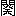
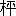
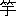
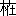
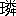
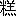
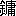
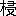
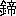

頼山陽は寛政十二年十一月三日に、安藝国広島国泰寺裏門前
杉木小路の父春水の屋敷で、囲の中に入れられ、享和三年十二月六日まで屏禁せられて居り、文化二年五月九日に至つて、「門外も
為仕度段、存寄之通
可被仕候」と云ふ浅野安藝守
重晟が月番の達しに依つて
釈された。山陽が二十一歳から二十六歳に至る間の事である。
疇昔より山陽の伝を作るものは、皆此幽屏の前後に亘る情実を知るに
困んだ。森田思軒も亦明治二十六七年の交「頼山陽及其時代」を草した時、同一の難関に出逢つたのである。
然るにこれに
先つこと数年、思軒の友高橋太華が若干通の古手紙を買つた。それは
菅茶山が
伊沢澹父と云ふものに与へたものであつて、其中の一通は山陽幽屏問題に解決を与ふるに足る程有力なものであつた。
思軒は此手紙に日附があつたか否かを言はない。しかし「手紙は山陽が
方に
纔に茶山の塾を去りて京都に
帷を
下せる時書かれたる者」だと云つてあるに過ぎぬから、恐くは日附は無かつたのであらう。
山陽は文化六年十二月二十七日に広島を立つて、二十九日に備後国
安那郡神辺の
廉塾に著き、八年
閏二月八日に神辺を去つて、十五日に大坂西区両国町の篠崎小竹方に著き、数日の後小竹の紹介状を得て大坂を立ち、二十日頃に小石
元瑞を京都に訪ひ、元瑞の世話で新町に家塾を開いた。思軒は茶山の手紙を以て此頃に書かれたものと判断してゐたのである。
茶山の此手紙を書いた目的をば、思軒が
下の如くに解した。「其の言ふ所は、此たび
杏坪が江戸に上れる
次、君側の人に請うて山陽の事を執りなし、京都より帰りて再び之を茶山の塾に托せむと欲する計画ありとか伝聞し、山陽の旧過を列挙し、己れが山陽に倦みたる
所以を陳じて以て澹父の杏坪の計画に反対せむことを望みたるなり」と云ふのである。計画とは山陽の父春水等の計画を謂ふ。春水等は山陽の
叔父杏坪をして浅野家の執政に説かしめ、山陽の京都より広島に帰ることを許さしめむとしてゐる。さて広島に帰つた上は、山陽は再び廉塾に託せられるであらう。しかし茶山は既に山陽に倦んでゐて、澹父をして杏坪を
阻げしめむと欲するのだと云ふのである。
此伊沢澹父とは
何人であるか。思軒はかう云つた。「澹父の何人なるやは未だ考へずと雖も、書中の言によりて推量するに、
蓋備後辺の人の江戸に住みて、
藝藩邸には至密の関係ありし者なるべし」と云つた。
思軒の「頼山陽及其時代」が出てから十九年の後、大正二年に坂本
箕山の「頼山陽」が出た。箕山は同一の茶山の手紙を引いて、手紙の宛名の人を伊沢蘭軒だと云つてゐる。わたくしは太華が買つたと云ふ茶山の手紙の行方を知らない。推するに、此手紙はどこかに存在してゐて、箕山さんもこれを見ることを得たのではなからうか。
わたくしは伊沢蘭軒の事蹟を書かうとするに当つて、最初に
昔日高橋太華の掘り出した古手紙の事を語つた。これは蘭軒の名が一時いかに深く埋没せられてゐたかを示さむがためである。
わたくしの知る所を以てすれば、蘭軒の事蹟の今に至るまで記述を経たものは、坂本箕山さんの「藝備偉人伝」中の小伝と、
頃日図書館雑誌に載せられた和田万吉さんの「集書家伊沢蘭軒翁略伝」との二つがあるのみである。
しかし既に此等の記述があるのに、わたくしが遅れて出て、新に蘭軒の伝を書かうとするには、わたくしは先づ白己の態度を極めなくてはならない。わたくしが今蘭軒を伝ふることの難きは、
前に渋江抽斎を伝ふることの難かりし比では無い。抽斎と雖、人名辞書がこれを載せ、
陸羯南が一たびこれが伝を立てたことがあつた。只彼人名辞書の記載は
海保漁村の墓誌の外に出でず、羯南の文も亦経籍訪古志の序跋を参酌したに過ぎぬに、わたくしは嗣子保さんの手から新に材料を得た。これに反して蘭軒の曾孫
徳さんと、其宗家の当主信平さんとの手より得べき主なる材料は、和田さんが既に用ゐ尽してゐる。
就中徳さんの輯録した所の材料には、「右蘭軒略伝一部帝国図書館依嘱に応じ謹写し納む。大正四年四月八日」と云ふ奥書がある。わたくしは和田さんが材を此納本に取つたことを疑はない。わたくしの新に伊沢氏に就いて、求め得べき材料は、此納本に漏れた
選屑に過ぎない。
縦しや其選屑の中には、大正五年に八十二歳の齢を重ねて健存せる蘭軒の
孫女おそのさんの談片の如き、
金粉玉屑があるにしても。
蘭軒を伝ふることが抽斎を伝ふるより難いには、猶一の軽視すべからざる理由がある。それは渋江氏には「泰平千代鑑」と題するクロオニツクがあつて、帝室、幕府、津軽氏、渋江氏の四欄を分つた年表を形づくつてゐるのに、伊沢氏には編年の記載が少いと云ふ一事である。強ひて此欠陥を補ふべき材料を求むれば、蘭軒には文化七年二月より文政九年三月に至る「
勤向覚書」があり、其嗣子
榛軒には嘉永五年十月二十一日より十一月十九日に至る終焉の記があるのみである。独り榛軒の養嗣子
棠軒は、嘉永五年十一月四日より明治四年四月十一日に至る稍詳密なる「棠軒公私略」を遺し、僅に中間明治元年三月中旬より二年六月上旬に至る落丁があるに過ぎぬが、其文には取つて蘭軒榛軒二代の事跡を補ふべきものが殆無い。
わたくしは自己の態度を極めたいと云つた。しかし
熟これを思へば、自己の態度を極めることが不可能ではないかと疑ふ。わたくしは少くもこれだけの事を自認する。若しわたくしが年月に
繋くるに事実を以てしようとしたならば、わたくしの稿本は空白の多きに堪へぬであらう。徳さんの作つた蘭軒略伝が既に編年の行状では無い。その蘭軒前後に亘つた「歴世略伝」も亦同じである。徳さんの記載に本づいたらしい和田さんの略伝も亦編年では無い。藝備偉人伝は、蘭軒を載せた下巻がわたくしの手許に無いが、同じ著者の「頼山陽」に引いた文を見れば、
亦復編年では無ささうである。おそのさんの談話の如きは、
固より年月日を
詳にすべきものに乏しい。わたくしは
奈何して編年の記述をなすべきかを知らない。
わたくしはかう云ふ態度に出づるより外無いと思ふ。先づ根本材料は伊沢
徳さんの蘭軒略伝乃至歴世略伝に拠るとする。これは已むことを得ない。和田さんと同じ源を酌まなくてはならない。しかし其材料の扱方に於て、素人歴史家たるわたくしは我儘勝手な道を行くことゝする。路に迷つても好い。若し進退
維れ
谷まつたら、わたくしはそこに筆を棄てよう。
所謂行当ばつたりである。これを無態度の態度と謂ふ。
無態度の態度は、
傍より看れば其道が険悪でもあり
危殆でもあらう。しかし素人歴史家は楽天家である。意に任せて縦に行き横に走る間に、いつか豁然として道が開けて、予期せざる広大なるペルスペクチイウが得られようかと、わたくしは想像する。そこでわたくしは蘇子の語を借り来つて、自ら前途を祝福する。曰く水到りて渠成ると。
系譜を按ずるに、伊沢氏に四家がある。其一は旗本伊沢である。わたくしは
姑く「総宗家」と名づける。其二は総宗家四世
正久の庶子にして蘭軒の高祖父たる
有信の立てた家で、今麻布鳥居坂町の信平さんが当主になつてゐる。徳さんの謂ふ「宗家」である。其三は宗家四世
信階が一旦宗家を継いだ後に分立したもので、蘭軒
信恬は此信階の子である。徳さんの謂ふ「分家」で、今牛込市が谷富久町に住んでゐる徳さんが其当主である。其四は蘭軒の子柏軒
信道が分立した家で、徳さんの謂ふ「又分家」である。当主は赤坂氷川町の清水夏雲さん方に寓してゐる
信治さんである。
総宗家の系図には、わたくしは手を触れようとはしない。其初世吉兵衛正重は遠く新羅三郎義光より出でてゐる。此に徳さんの補修を経た
有形の儘に、単に歴代の名を数ふれば、義光より義清、清光、信義、信光、信政、信時、時綱、信家、信武、信成、信春、信満、信重、信守、信昌、信綱、信虎を経て晴信に至る。晴信は機山信玄である。晴信より信繁、信綱、信実、信俊、信雄、信忠を経て正重に至る。正重を旗本伊沢の初世とする。要するに旗本伊沢は武田氏の
裔で、いさはの名は倭名抄に見えてゐる甲斐国
石禾に本づいてゐるらしい。
総宗家旗本伊沢より宗家伊沢が出でたのは、初世正重、二世正信、三世
正岸を経て、四世正久に至つた後である。系図を
閲するに、伊沢氏は「幕之紋
三菅笠、家之紋蔦、替紋拍子木」と氏の下に註してある。初世吉兵衛正重は天文十年に参河国で生れ、慶長十二年二月二日に六十七歳で歿した。鉄砲組足軽四十人を預つて、千五百五十三石を
食んだ。二世
隼人正正信は東福門院附
弓気多摂津守昌吉の次男で、正重の
女婿である。正信は文禄四年に生れ、寛文十年十二月二日に七十六歳で歿した。わたくしの所蔵の正保二年の江戸屋敷附に「伊沢隼人殿、
本御鷹匠町」と記してある。肩には役が記して無い。三世の名は闕けてゐる。只元和七年に生れ、延宝二年六月十六日に五十四歳で歿したとしてある。然るに徳川実記に拠れば、隼人正正信の子は
主水正政成である。延宝中の江戸鑑小姓組番頭中に「伊沢主水正、三千八百石、
鼠穴、父主水正」がある。即ち此人であらう。
系図に政成が闕けてゐて稍不明であるが、要するに旗本伊沢は正保中には鷹匠町、延宝以後には鼠穴に住んでゐて、千五百五十三石より三千八百石に至つた。
蘭軒の高祖有信が旗本伊沢の家から分れて出た時の事は、蘭軒の姉
幾勢の話を、蘭軒の
外舅飯田休庵が聞いたものとして伝へられてゐる。それはかうである。有信は旗本伊沢の家に妾腹の子として生れた。然るに父の正室が妾を
嫉んで、害を
赤子に加へようとした。有信の
乳母が
懼れて、幼い有信を抱いて麻布
長谷寺に逃げ
匿れた。当時長谷寺には乳母の
叔父が住持をしてゐたのだと云ふ。乳母の戒名は妙輪院清芳光桂大姉である。
有信の生れたのは天和元年だと伝へられてゐる。此時旗本伊沢の家は
奈何なる状況の下にあつたか。
当主は初代正重より四代目の吉兵衛正久であつた。江戸鑑を検するに、襲家の後寄合になつて、三千八百石を食み、鼠穴に住んでゐた。有信が鼠穴住寄合伊沢主水正の家に生れたことは確実である。
有信が生れた時、父正久が何歳になつてゐたかと云ふことは、幸に系図に正久の生歿年が載せてあるから、推算することが出来る。正久は万治二年に生れ、寛保元年に八十三歳で歿したから、天和元年には二十三歳であつた。
正久の正室は書院番頭
三枝土佐守
恵直の
女である。これが庶子に害を加へようかと疑はれた夫人である。
別に歴世略伝に有信の父と云ふものが載せてあるが、これは正久とは別人でなくてはならない。又有信の実父でありやうがない。其文はかうである。「初代有信、通称徳兵衛、父流芳院春応道円居士、元禄四年辛未五月十八日、二十二歳」と云ふのである。若し流芳院を正久だとすると、此年齢より推せば、寛文十年に生れ、天和元年に十二歳で有信を挙げたことゝなる。按ずるに流芳院は有信の実父ではあるまい。若し有信の実父だとすると、年月日若くは年齢に錯誤があるであらう。
わたくしは長谷寺に潜んでゐる幼い有信の行末を問ふに先だつて、有信を逸した旗本伊沢、即総宗家のなりゆきを一瞥して置きたい。それは旗本伊沢の子孫が所謂宗家、分家、又分家の子孫とは絶て交渉せぬので、後に立ち戻つて語るべき機会が得難いからである。
有信の父旗本伊沢四世吉兵衛正久は、武鑑を検するに、元禄二年より書院番組頭、十四年新番頭、十五年より小姓組番頭、宝永四年より書院番頭を勤め、叙爵せられて播磨守と云ひ、享保十七年には寄合になつてゐた。邸宅は鼠穴から永田馬場に移された。正久は系図に拠るに万治二年生で、寛保元年に八十三歳で歿した。
五世吉兵衛
方貞は系図に拠るに、享保元年生で、明和七年に五十五歳で歿した。宝暦十年の武鑑を検するに、方貞も亦父に同じく播磨守にせられ、書院番頭に進んでゐた。邸宅は旧に依つて永田馬場であつた。
六世
内記方守は系図に拠るに、明和四年正月二十七日に生れた。又武鑑に拠るに、寛政六年十月より
先手鉄砲頭を勤めてゐた。文化の初の写本千石以上分限帳に、「伊沢内記、三千二百五十石、
三川岱」としてある。此後は維新前に至るまで、旗本伊沢は赤坂参河台に住んでゐた。
七世主水は文化三年より火事場見廻り、文化九年より使番を勤めた。此役が十二年に至るまで続いてゐて、十三年には次の代の吉次郎が寄合に出てゐる。浅草新光明寺に「先祖代々之墓、伊沢
主水源政武」と
彫つた墓石がある。此主水の建てたものではなからうか。
八世吉次郎は文化十三年の武鑑に始めて見えてゐる。「伊沢吉次郎、父主水三千二百五十石、三川だい」と寄合の部に記してあるのが是である。此より後文政三年に至るまでの五年間は、武鑑の記載に変更が無い。文政四年には寄合の部の同じ所に、次の代の助三郎が見えてゐる。
九世助三郎政義は文政四年の武鑑寄合の部に、「伊沢助三郎、父吉次郎、三千二百五十石、三川だい」と記してある。此役が天保二年に至るまで続いて、三年には中奥小姓になつてゐる。六年には叙爵せられて摂津守と称し、猶同じ職にゐる。九年には
美作守に転じて小普請支配になつてゐる。
尋で政義は十年三月に浦賀奉行になつて、役料千石を受けた。十三年三月に更に長崎奉行に
遷されて、役料四千四百二俵を受けた。そして弘化二年に至るまでは此職にゐた。弘化三年の武鑑が
偶手元に
闕けてゐるが、四年より嘉永五年に至るまで、政義は寄合の中に入つてゐる。嘉永六年十二月に政義は再び浦賀奉行となり、安政二年八月に普請奉行となり、三年九月に
大目附服忌令分限帳改となり、四年十二月に江戸町奉行となり、五年十月に大目附宗門改となり、文久三年九月に留守居となり、元治元年七月十六日に此職を以て歿した。
法諡して徳源院譲誉礼仕政義居士と云ふ。墓は新光明寺にあつて、「明治三十五年七月建伊沢家施主
八幡祐観」と
彫つてある。
徳さんは嘗て「正弘公懐旧紀事」を
閲して、安政元年に米使との談判に成つた条約の連署中に、伊沢美作守の名があるのを見たと云ふ。これは
頃日公にせられた大日本古文書に見えてゐる米使アダムスとの交渉で、武鑑に政義の名を再び浦賀奉行として記してゐる間の事である。文書に拠れば、政義の職は下田奉行で、安政元年十二月十八日の談判中に、「美作守
抔は当春より取扱居、馴染之儀にも有之」云々と自ら語つてゐる。
十世助三郎は慶応武鑑の寄合の部に、「伊沢力之助、父美作守、三千二百五十石、三河だい」と記してある。新光明寺に顕享院秀誉覚真政達居士の法諡を彫つた墓石があつて、建立の年月も施主の氏名も政義の墓と同じである。或は政達が即ち力之助の
諱ではなからうか。
わたくしは或日旗本伊沢の墓を尋ねに、新光明寺へ往つた。浅草広徳寺前の電車道を南に折れて東側にある寺である。
六十歳ばかりの寺男に問ふに、伊沢と云ふ檀家は知らぬと云つた。其
言語には東北の訛がある。此
爺を連れて本堂の北方にある墓地に入つて、街に近い西の端から捜しはじめた。西北隅は隣地面の人が何やら工事を起して、土を掘り上げてゐる最中である。爺が「こゝに伊の字があります」と云ふ。「どれ／＼」と云つて、進み近づいて見れば、今掘つてゐる所に接して、一の大墓石が半ば
傾いて立つてゐる。台石は掘り上げた土に埋もれてゐる。
「これは伊奈熊蔵の墓だ、何代目だか知らぬが、これも二千石近く取つたお旗本だ」とわたくしが云つた。爺は「へえ」と云つて少し頭を傾けた。「誰も詣る人はないかい」と云ふと、「えゝ、一人もございません」と答へた。
伊沢の墓はなか／＼見附けることが出来なかつた。暫くしてから、独り東の方を捜してゐた爺が、「これではございませぬか」と呼んだ。往つて見れば前に云つた「先祖代々之墓、伊沢主水源政武」と彫つた墓である。政武は七世
主水であらうと前に云つたが、系譜一本に拠れば一旦永井氏に養はれたかとも思はれる。墓地の東南隅にあつたのだから、我々は丁度対角の方向から捜しはじめたのであつた。
此大墓石の
傍に小い墓が二基ある。戒名の院の下には
殿の字を添へ、居士の上には大の字を添へた
厳しさが、粗末な小さい石に調和せぬので、異様に感ぜられる。想ふに八幡某は旗本伊沢に旧誼のあるもので、維新後三十五年にしてこれを建てたのであらう。二基は即ち政義、政達二人の墓である。
二人の中で伊沢政義は、下田奉行としてアダムスと談判した一人である。盛世にあつては
此の如き衝に当るものは、容易に侯となり伯となる。当時と雖、芙蓉間詰五千石高の江戸城留守居は重職であつた。殊に政義が最後に勤めてゐた時は、同僚が四人あつて、其世禄は平賀
勝足四百石、戸川安清五百石、佐野
政美六百石、大沢
康哲二千六百石であつたから、三千二百五十石の政義は筆頭であつた。其政義がこの戒名に調和せぬ小さい墓の主である。「此墓にも詣る人は無いか」と、わたくしは爺に問うた。
「いゝえ、これには詣る方があります。わたくしは何と云ふお名前だか知らなかつたのです。なんでも年に一度位はお比丘さんが来られます。それからどうかすると書生さんのやうな方で、参詣なさるのがあります。住持様は識つてゐなさるかも知れませんが、
今日はお留守です。」
「さうかい。わたしは此墓に
由縁は無いが、少しわけがあつて詣つたのだ。どうぞ
綫香と華とを上げておくれ。それから名札をお前に頼んで置くから、住持さんが内にゐなさる時見せて、此墓にまゐる人の名前と所とを葉書でわたしに知らせて下さるやうに、さう云つておくれ。」
爺が苔を掃つて
香華を供へるを待つて、わたくしは墓を拝した。そして爺に名刺を託して還つた。しかし新光明寺の住職は其後未だわたくしに
音信を通じてくれない。
麻布の
長谷寺に
匿れてゐた旗本伊沢の庶子は、徳兵衛と称し、人となつて有信と
名告つた。有信は貨殖を志し、質店を深川に開いた。既にして家業漸く盛なるに至り、有信は附近の地所を買つた。後には其地が伊沢町と呼ばれた。永代橋を東へ渡り富吉町を経て又福島橋を渡り、南に折れて坂田橋に至る。此福島橋坂田橋間の西に面する河岸と、其中通とが即ち伊沢町であつたと云ふ。按ずるに後の中島町であらう。
有信の妻は氏名を
詳にしない。
法諡は貞寿院
瓊林晃珠禅尼である。其出の一男子は早世した。浄智禅童子が是である。
有信は遠江国の人小野田八左衛門の子を養つて嗣となした。此養子が
良椿信政である。
惟ふに享保中の頃であらう。仮に享保元年とすると、有信が三十六歳、信政が四歳、又享保十八年とすると、有信が五十三歳、信政が二十一歳である。信政の父八左衛門は法諡を
大音柏樹居士と云ひ、母は
※相寿桂［＃「女＋（而／大）」、U+5A86、7巻-16-下-14］大姉と云ふ。
有信は
此の如く志を遂げて、能く一家の
基を成したが、其「弟」に長左衛門と云ふものがあつた。遊惰にして財を
糜し、
屡謀書謀判の
科を犯し、兄有信をして賠償せしめた。総宗家の弟は有信が深川の家に来り寄るべきではないから、長左衛門は
妻党の人で、正しく謂へば
甥であらうか。
有信は長左衛門のために産を
傾け、深川の地所を売つて、麻布鳥居坂に
遷つた。今伊沢信平さんの住んでゐる邸が是である。
享保十八年十月十八日に有信は五十三歳で歿し、
長谷寺に葬られた。即ち幼くして
乳媼と共に
匿れてゐた寺で、此寺が後々までも宗家以下の菩提所となるのである。有信は法諡を好信軒一道円了居士と云ふ。此人が即ち宗家伊沢の始祖である。
二世良椿信政は二十一歳にして家を継いだ。信政は町医者であつた。伊沢氏が医家であり、又読書人を出すことは此人から始まつた。
信政は幕府の菓子師大久保
主水元苗の
女伊佐を
娶つた。菓子師大久保主水は徳川家の
世臣大久保氏の支流である。しかし大久保氏の家世は諸書記載を異にしてゐて、今
遽に論定し難い。
大久保系図に拠れば、粟田関白
道兼十世の孫景綱より、泰宗、時綱、泰藤、常意、道意、道昌、常善、忠与を経て
忠茂に至つてゐる。他書には道意を泰道とし、道昌を泰昌とし、常善を昌忠とし、忠与を忠興とし、忠茂を
忠武としてゐる。此中には道号と
名乗との混同もあり、文字の錯誤もあるであらう。初め宇津宮氏であつたのに、道意若くは道昌に至つて宇津と称した。
忠茂に五子があつた。長忠俊、二忠次、三
忠員、四忠久、以上四人の名は
略一定してゐるらしい。始て大久保と称したのは、忠茂若くは忠俊だと云ふ。世に謂ふ大久保彦左衛門
忠教は忠俊の子だとも云ひ、忠員の子だとも云ふ。忠茂の第五子に至つては、或は忠平に作り、或は忠行に作る。伝説の菓子師は此忠行を祖としてゐるのである。
忠行が主水と称し、菓子師となつた来歴は、
姑く君臣略伝の記載に従ふに、下に説く所の如くである。
大久保忠行は参河の一向宗一揆の時、上和田を守つて功があつたと云ふ。恐らくは永禄六七年の交の事であらう。徳川家康はこれに三百石を給してゐた。家康は平生餅菓子を食はなかつた。それは人の或は毒を置かむことを
懼れたからである。
偶忠行は餅菓子を製することを善くしたので、或日その製する所を家康に献じた。家康は喜び

つて、此より
時々忠行をして製せしめた。天正十八年八月に家康は江戸に入つて、用水の
匱しきを憂へ、忠行に
諮つた。忠行乃ち仁治中北条泰時の故智を襲いで、多摩川の水を引くことを策した。今の多摩川上水が是である。此時家康は忠行に主水の称を与へたと云ふことである。以上は君臣略伝の伝ふる所である。
此より後主水忠行はどうなつたか、文献には所見が無い。然るに蘭軒の
孫女の
曾能さんの聞く所に従へば、忠行が引水の策を献じた後十年、慶長五年に関が原の戦があつた。忠行は此役に参加して膝頭に鉄砲創を受け、廃人となつた。そこで事
平ぐ後家康の許を蒙つて菓子師となつたさうである。
わたくしは此説を聞いて、さもあるべき事と思つた。
素大久保氏には
世経済の才があつた。大永四年に家康の祖父岡崎次郎三郎清康が、忠行の父忠茂の謀を用ゐて、松平弾正左衛門信貞入道昌安の兵を破り、昌安の女婿となつて岡崎城に入つた時、忠茂は岡崎市の
小物成を申し受け、さて
毫釐も徴求せずにゐた。これが岡崎の殷富を致した基だと云ふ。忠茂の血と倶に忠茂の経済思想を承けた忠行が、曾て引水の策を献じ、
終に
商賈となつたのは、

つて来る所があると謂つて好からう。
忠行の子孫は、今川橋の南を東に折れた
本白銀町四丁目に菓子店を開いてゐて、江戸城に菓子を調進した。今川橋の南より東へ延びてゐる河岸通に、主水河岸の称があるのは、此家あるがためである。後年武鑑に
用達商人の名を載せはじめてより以来、山形の徽章の下に大久保主水の名は
曾て
闕けてゐたことが無い。
宗家伊沢の二世信政の
外舅となつた主水
元苗は、忠行より第幾世に当るか、わたくしは今これを
詳にしない。しかし既に真志屋西村、金沢屋増田の系譜を見ることを得た如くに、他日或は大久保主水の家世を知る機会を得るかも知れない。
信政の妻大久保氏伊佐の腹に二子一女があつた。二子は
信栄と云ひ、金十郎と云ふ。一女の名は
曾能である。
信政の嫡男信栄は年齢を詳にせぬが、前後の事情より推するに、信政は早く隠居して、家を信栄に譲つたらしい。仮に信政が五十歳で隠居したとすると、信栄の家督相続は宝暦十一年でなくてはならない。
三世信栄は短命であつたらしい。明和五年八月二十八日に父信政に
先つて歿し、長谷寺に葬られた。
法諡を万昌軒久山常栄信士と云ふ。信政は時に年五十七であつた。
信栄は
合智氏を
娶つて、二子を生ませた。長が
信美、
字は文誠、法名称仙軒、
季が鎌吉である。信栄の歿した時、信美は猶
幼かつたので、信美の祖父信政は信栄の妹曾能に婿を取り、
所謂中継として信栄の後を
承けしめた。此女婿が
信階である。
宗家伊沢の四世は信階である。字は大升、別号は隆升軒、
小字は門次郎、長じて元安と称し、後長安と改めた。門次郎は近江国の人、武蔵国埼玉郡越谷住井出権蔵の子である。権蔵は
法諡を四時軒自性如春居士と云つて、天明四年正月十一日に歿した。其妻即信階の母は善室英証大姉と云つて、明和五年五月十三日に歿した。
信栄の死に
先つこと僅に百零三日である。
先代信栄の歿した時、嫡子
信美が
幼かつたので、隠居信政は井出氏門次郎を養つて子とした。信政は門次郎に
妻するに信栄の妹
曾能を以てしようとして、
心私にこれを憚つた。曾能の容貌が美しくなかつたからである。
偶識る所の家に美少女があつたので、信政は門次郎にこれを
娶らむことを勧めた。門次郎は
容を改めて云つた。「わたくしを当家の御養子となされたのは伊沢の
祀を絶たぬやうにとの思召でござりませう。それにはせめて女子の血統なりとも続くやうに、お取計なさりたいと存じます。わたくしは美女を妻に迎へようとは存じも寄りませぬ」と云つた。此時信階は二十五歳、曾能は十九歳であつた。曾能は遂に信階の妻となつた。
惟ふに信階は修養あり操持ある人物であつたらしい。伝ふる所に拠れば、信階は
武于竜の門人であつたと云ふ。わたくしは武于竜と云ふ儒家を知らない。或は
武梅竜ではなからうか。
武梅竜初の名は篠田
維嶽、美濃の人である。しかし其郷里の
詳なるを知らない。後藤松陰が「或云高須人、或云竹鼻人」と記してゐる。伊藤東涯の門人である。享保元年生の維嶽が二十一歳になつた元文元年に、東涯は歿した。そこで維嶽は宇野明霞の門に入り、名を
亮、字を士明と改めた。既にして亮が三十歳になつた延享二年に、又明霞が歿した。亮は後名を
欽、字を
聖謨と改めて自ら梅竜と号した。その武と云ふは祖先が武田氏であつたからである。梅竜は妙法院
堯恭法親王の侍読にせられた。
梅竜は仁斎学派より明霞の折衷学派に入り、同く明霞に学んだ赤松
国鸞が、「不唯典刑之存、其言之似夫子、使人感喜交併」と云つた如く、其師の感化を受くること
太だ深かつたものと見える。明霞の生涯妻妾を置かなかつた気象が、梅竜を経て美妻を
斥けた信階に伝へられたとも考へられよう。
梅竜は明和三年に五十一歳で歿した。信階は此時二十三歳で、中一年を隔てて伊沢氏の養子となつたのである。信階が武氏に学んだ時、同門に豊後国大野郡岡の城主中川修理大夫久貞の医師飯田休庵
信方がゐた。休庵は信階の
同出の姉井出氏を娶つたが、井出氏は明和七年七月三日に歿したので、水越氏
民を
納れて継室とした。休庵は後に蘭軒の
外舅になるのである。
信階の家督相続は猶摂主の如きものであつた。先代
信栄の子
信美が長ずるに及んで、信階はこれに家を譲つた。此更迭は何年であつたか記載を闕いでゐるが、安永六年前であつたことは明である。何故と云ふに、此年には信階の長子蘭軒が生れてゐる。そしてその生れた家は今の本郷真砂町であつたと云ふ。本郷真砂町は信階が宗家を信美に譲つた後に、分家して住んだ処だからである。仮に宗家の更迭と分家の創立との年を其前年、即安永五年だとすると、当時隠居信政は六十五歳、信階は三十三歳であつた。
伊沢信階が宗家を養父
亡信栄の実子信美に譲つた年を、わたくしは仮に安永五年とした。此時信階の創立した分家は今の本郷真砂町桜木天神附近の地を居所とし、信階はこの新しい家の鼻祖となつたのである。
わたくしは例に依つて、信階
去後の伊沢宗家のなりゆきを、此に插叙して置きたい。信階は宗家四世の主であつた。五世信美は歯医者となり、信階の女、蘭軒の姉にして、豊前国福岡の城主松平筑前守
治之の夫人に仕へてゐた
幾勢に推薦せられて、黒田家に召し抱へられ、文政二年四月二十二日に歿した。
法諡を称仙軒徳山居士と云ふ。此より後宗家伊沢は
世黒田家の歯医者であつた。六世
信全は桃酔軒と号した。天明三年に生れ、文久二年
閏八月十八日に八十一歳で歿した。七世
信崇は巌松院道盛と号した。天保十一年に生れ、明治二十九年一月十三日に五十七歳で歿した。その生れたのは信全が五十八歳の時である。八世が今の信平さんである。
分家伊沢の初世信階は本郷に
徙つた後、安永六年十一月十一日に一子
辞安を挙げた。即ち蘭軒である。蘭軒は信階の最初の子ではなかつた。蘭軒には姉幾勢があつて、既に七歳になつてゐた。推するに早く鳥居坂にあつた時に生れたのであらう。此子等の母は家附の
女曾能である。蘭軒の生れた時、父信階は年三十四、母曾能は二十八、家系上の曾祖父にして実は外祖父なる信政は年六十六であつた。
安永七年に信階の長女幾勢は、八歳にして松平治之の夫人に仕ふることになつた。夫人名は亀子、後
幸子と改む、越後国高田の城主榊原式部大輔政永の
女で、当時二十一歳であつた。治之は筑前守継高の養子で、明和六年十二月十日に家を継いだのである。
天明二年に幾勢の仕へてゐる黒田家に二度まで
代替があつた。天明元年十一月二十一日に治之が歿し、此年二月二日に養子又八が家を継いで筑前守
治高と
名告り、十月二十四日に病んで卒し、十二月十九日に養子雅之助が又家を継いだのである。雅之助は後筑前守
斉隆と云つた。
幾勢の事蹟は、家乗の云ふ所が頗る明ならぬので、わたくしはこれがために黒田侯爵を驚かし、中島利一郎さんを労して
此の如くに記した。中島さんの言に拠るに、墓に刻んである幾勢の俗名は
世代である。後に更めた名であらうか。又家乗が誤り伝へてゐるのであらうか。
天明四年に信階は養祖父を喪つた。隠居信政が此年十月七日に七十三歳で歿したのである。
法諡を幽林院
岱翁良椿居士と云ふ。長谷寺の
先塋に葬られた。新しい分家には四十一歳の養孫信階、三十五歳の其妻、八歳の蘭軒を遺した。又宗家に於ては孫信美が已に二歳の曾孫
信全を設けてゐた。
信政の妻大久保氏
伊佐は又
貞光の名がある。按ずるに晩年剃髪した後の称であらう。伊佐は享和三年七月二十八日に歿した。法諡を寿山院湖月貞輝大姉と云ふ。伊佐の
所生には親に
先つた信栄、信階の妻曾能の外、猶一子金十郎があつた。
信階は
冢子蘭軒のために早く良師を求めた。蘭軒が幼時の師を榊原
巵兮と云つた。蘭軒の「訳女戒跋」に、「翁氏榊原、姓藤原、名忠寛、字子宥、為東都書院郎、致仕号巵兮云」と云つてある。跋は享和甲子即文化紀元の作で、「翁歿十有三年於茲」と云つてあるから、巵兮は寛政四年に歿したと見える。蘭軒は
尋で経を泉豊洲に受けた。按ずるに彼は天明の初、此は天明の末から寛政に亘つての事であらう。
泉豊洲、名は長達、
字は
伯盈である。其家
世江戸に住した。
先手与力泉斧太郎が此人の公辺に通つた称である。豊洲は宝暦八年三月二十六日に茅場町に生れ、文化六年五月七日に五十二歳で歿した。父は名が智高、通称が数馬、母は片山氏である。
豊洲は中年にして与力の職を弟
直道に譲り、
帷を
下し
徒に授けたと云ふ。墓誌に徴するに、与力を勤むることゝなつてから本郷に住んだ。致仕の後には「下帷郷南授徒」と書してある。伊沢氏の家乗に森川宿とあるのは、恐くは与力斧太郎が家であらう。
所謂郷南の
何処なるかは未だ考へない。天明寛政の間に豊洲は二十四歳より四十三歳に至つたのである。
豊洲は
南宮大湫の門人である。二十一歳にして師大湫の喪に遭つて、此より細井平洲に従つて学び、終に平洲の女婿となつた。要するに所謂叢桂社の
末流である。
わたくしは単に蘭軒が豊洲を師としたと云ふよりして、わざ／＼
溯
して叢桂社に至り、特にこれを細説することの愚なるべきを思ふ。しかし蘭軒の初に入つた学統を明にせむがために、敢て此に人の記憶を呼び醒すに足るだけのエスキスを
插むこととする。
参河国加茂郡
挙母に福尾荘右衛門と云ふものがあつた。其妻奥平氏が一子曾七郎を生んだ。荘右衛門が尾張中納言
継友に仕へて、
芋生の竹腰志摩守の部下に属するに及んで、曾七郎は竹腰氏の家老中西曾兵衛の養子にせられた。中西氏は
本氏秋元である。そこで中西曾七郎が
元氏、名は維寧、
字は文邦、淡淵と号すと云ふことになつた。淡淵が芋生にあつて徒に授けてゐた時、竹腰氏の家来井上
勝の
孤弥六が教を受けた。時に元文五年で、師が三十二歳、
弟子が十三歳であつた。弥六は後京都にあつて
南宮氏と称し、名は
岳、字は
喬卿、号は
大湫となつた。延享中に淡淵は年四十に
垂として芋生から名古屋に遷つた。此時又一人の
壮者が来て従学した。これは尾張国
平洲村の豪士細井甚十郎の次男甚三郎であつた。甚三郎は
偶大湫と生年を同じうしてゐて、当時二十に近かつた。遠祖が
紀長谷雄であつたと云ふので、紀氏、名は徳民、字は
世馨、号は平洲とした。後に一種の性行を養ひ得て、
所謂「廟堂之器」となつたのが此人である。
寛延三年に淡淵が四十二歳を以て先づ江戸に入つた。その芝三島町に起した家塾が則ち叢桂社である。翌年は宝暦元年で、平洲が二十四歳を以て江戸に入り、同じく三島町に寓した。二年に淡淵が四十四歳で歿して、生徒は皆平洲に帰した。明和四年に大湫が四十歳を以て江戸に入り、
榑正町に寓した。大湫は未だ居を卜せざる時、平洲と同居した。「平洲為之称有疾、謝来客、息講業十余日、無朝無暮、語言一室、若引緒抽繭、縷々不尽」であつた。明和八年に八町堀牛草橋の晴雪楼が落せられた。大湫の家塾である。
泉豊洲が晴雪楼に投じたのは、恐くは安永の初であらう。安永七年より以後、豊洲は転じて平洲に従遊し、平洲は
女を以てこれに
妻した。
叢桂社の学は徳行を以て先となした。淡淵は「其講経不拘漢宋、而別新古、従人所求、或用漢唐伝疏、或用宋明註解」平洲の如きも、「講説経義、不拘拘于字句、据古註疏為解、不好参考宋元明清諸家」と云ふのである。要するに、折衷に満足して考証に沈潜しない。学問を学問として研窮せずに、其応用に重きを置く。即ち尋常為政者の喜ぶ所となるべき学風である。
蘭軒が豊洲の手を経て、此学統より伝へ得た所は何物であらうか。
窃に思ふに只蘭軒をして能く
拘儒たることを免れしめただけが、即ち此学統のせめてもの
賚ではなかつただらうか。
蘭軒が泉豊洲の門下にあつた時、同窓の友には狩谷
 斎
斎、木村
文河、植村士明、
下条寿仙、春泰の兄弟、横山辰弥等があつた。
斎の
孫女は後に蘭軒の子柏軒に嫁し、柏軒の
女が又
斎の
養孫矩之に嫁して、伊沢狩谷の二氏は姻戚の関係を重ねた。
木村文河、名は
定良、
字は駿卿、通称は駿蔵、一に
橿園と号した。身分は
先手与力であつた。橘
千蔭、村田
春海等と交り、草野和歌集を撰んだ人である。
植村士明、名は貞皎、号を知らない。士明は
字である。江戸の人で、蘭軒と親しかつた。
下条寿仙、名は
成玉、字は
叔琢である。信濃国筑摩郡松本の城主松平丹波守
光行の医官になつた。寿仙の弟春泰、名は
世簡、字は
季父である。横山の事は未だ
詳にしない。
蘭軒が医学の師は目黒道琢、武田叔安であつたと云ふ。目黒道琢、名は某、字は恕卿である。寛政の末の武鑑に目見医師の部に載せて、「日比谷御門内今大路一
所」と註してある。浅田
栗園の皇朝医史には此人のために伝が立ててあるさうであるが、今其書が手元に無い。
武田叔安は天明中より武鑑寄合医師の部に載せて、「四百俵、愛宕下」と註してある。文化の末より
法眼としてあつて、持高と住所とは旧に依つてゐる。武田氏は由緒ある家とおぼしく、家に後水尾天皇の宸翰二通、後小松天皇の宸翰一通を蔵してゐたさうである。
蘭軒が
本草の師は太田大洲、赤荻由儀であつたと云ふ。太田大洲、名は澄元、字は子通である。又崇広堂の号がある。享保六年に生れ、寛政七年十月十二日に七十五歳で歿した。按ずるに蘭軒は其古稀以後の
弟子であらう。
赤荻由儀はわたくしは其人を詳にしない。只富士川游さんの所蔵の蘭軒雑記に、「
千屈菜、和名みそはぎ、六月
晦日御祓の頃より
咲初る心ならむと
余考也、赤荻先生にも問しかば、先生さもあらむと答られき」と記してあるだけである。手元にある諸書を一わたり捜索して、最後に白井光太郎さんの日本博物学年表を通覧したが、此人の名は遂に見出すことが出来なかつた。年表には動植の両索引と書名索引とがあつて、人名索引が無い。事の
序に白井さんに、改板の期に至つて、人名索引を附せられむことを望む。わたくしは又赤荻由儀に就いて見る所があつたら、一報を煩したいと云ふことを白井さんに頼んで置いた。
蘭軒が師事した所の儒家医家は
概ね此の如きに過ぎない。わたくしは蘭軒の師家より得た所のものには余り重きを置きたくない。蘭軒は恐くは主としてオオトヂダクトとして其学を成就したものではなからうか。
蘭軒は後に詩を善くし書を善くした。しかし其師承を詳にしない。只詩は
菅茶山に就いて正を乞うたことを知るのみである。蘭軒が始て詩筒を寄せたのは、推するに福山侯阿部
正倫が林述斎の
言を聞いて、茶山に五人扶持を給した寛政四年より後の事であらう。
信階は寛政六年十月二十八日に五十一歳で、備後国深津郡福山の城主阿部伊勢守正倫に召し抱へられて侍医となつた。菅茶山が見出された二年の後で、蘭軒が十八歳の時である。阿部家は宝永七年
閏八月十五日に、正倫の曾祖父備中守
正邦が下野国宇都宮より
徙されて、福山を領した。菅茶山集中に、「福山藩先主長生公、以宝永七年庚寅、自下毛移此」と書してあるのが是である。当主正倫は、父伊予守
正右が明和六年七月十二日宿老の職にゐて卒したので、八月二十九日に其後を
襲いだ。伊沢氏の召し抱へられる二十五年前の事である。
寛政七年には、十八年来、信階の
女幾勢が仕へてゐる黒田家に又代替があつた。八月二十四日に筑前守
斉隆が卒して、十月六日に嫡子官兵衛
斉清が襲封したのである。
治之夫人幸子が三十八歳、幾勢が二十五歳の時である。同じ十月の十二日に、蘭軒の本草の師太田大洲が七十五歳で歿した。時に蘭軒は十九歳であつた。
寛政九年は伊沢の家に嘉客を迎へた年であるらしい。それは頼山陽である。
世に伝ふる所を以てすれば、山陽が修行のために江戸に往くことを、浅野家に許されたのは、正月二十一日であつた。恰も好し
叔父杏坪が当主
重晟の嫡子
斉賢の侍読となつて入府するので、山陽は附いて広島を立つた。山陽は正月以来広島城内二の屋敷にある学問所に寄宿してゐたが、江戸行の事が定まつてから、一旦
杉木小路の屋敷に帰つて、そこから立つたのである。
山陽が江戸に着いたのは四月十一日である。山陽の曾孫
古梅さんが枕屏風の下貼になつてゐたのを見出したと云ふ日記に、「十一日、自川崎入江戸、息大木戸、（中略）大人則至本邸、（中略）使襄随空轎而入西邸、（中略）須臾大人至堀子之邸舎」と書いてある。
浅野家の屋敷は当時霞が関を上邸、永田馬場を中邸、赤阪青山及築地を下邸としてゐた。本邸は上邸、西邸とは中邸である。
山陽が江戸に著いた時、杏坪は
轎を
下つて霞が関へ往つた。山陽は
空轎に附いて永田馬場へ往つた。次で杏坪も上邸を退いて永田馬場へ来たのであらう。「堀子」とは年寄堀江典膳であらうか。
これより後山陽は何処にゐたか。山陽は自ら「遊江戸、住尾藤博士塾」と書してゐる。二洲の官舎は初め聖堂の
構内にあつて、後に壱岐坂に邸を賜はつたと云ふ。山陽の寓したのは此官舎であらう。二洲は山陽の父春水の友で、妻猪川氏を喪つた時、春水が妻飯岡氏静の妹
直をして
続絃せしめた。即ち二洲は山陽の
従母夫である。
山陽は二洲の家にゐた間に、誰の家を訪問したか。世に伝ふる所を以てすれば、山陽は柴野栗山を駿河台に訪うた。又古賀精里を小川町
雉子橋の
畔に訪うた。これは諸書の皆
載する所である。
さて山陽は翌年寛政十年四月中に、杏坪と共に江戸を立つて、五月十三日に広島御多門にある杏坪の屋敷に著き、それより杉木小路の父の家に還つたと云ふ。世の伝ふる所を以てすれば、江戸に於ける山陽の動静は
此の如きに過ぎない。
然るに伊沢氏の口碑には一の異聞が伝へられてゐる。山陽は江戸にある間に伊沢氏に寓し、又狩谷
斎の家にも寓したと云ふのである。
伊沢氏の口碑の伝ふる所はかうである。蘭軒は頼春水とも菅茶山とも交はつた。
就中茶山は同じく阿部家の俸を
食む身の上であるので、其
交が殊に深かつた。それゆゑ山陽は江戸に来たとき、本郷真砂町の伊沢の家で
草鞋を脱いだ。其頃伊沢では病源候論を写してゐたので、山陽は写字の手伝をした。さて暫くしてから、蘭軒は同窓の友なる狩谷
斎に山陽を紹介して、
斎の家に寓せしむることゝしたと云ふのである。
此説は世の伝ふる所と
太だ
逕庭がある。世の伝ふる所は一見いかにも自然らしく、これを前後の事情に照すに、しつくりと
※合［＃「月＋（勿／口）」、U+8117、7巻-29-下-5］する。叔父杏坪と共に出て来た山陽が、聖堂で学ばうとしてゐたことは勿論である。其聖堂には、六年前に幕府に召し出されて、伏見両替町から江戸へ引き越し、「以其足不良、特給官舎於昌平黌内」と云ふことになつた
従母婿の二洲
尾藤良佐が住んでゐた。山陽が此二洲の官舎に解装して、聖堂に学ぶのは好都合であつたであらう。尾藤博士の塾にあつたとは、山陽の自ら云ふ所である。又茶山の詩題にも「頼久太郎、寓尾藤博士塾二年」と書してある。二年とは
所謂足掛の算法に従つたものである。さて山陽は寛政九年の四月より十年の四月に至るまで江戸にゐて、それから杏坪等と共に、木曾路を南へ帰つた。此経過には何の疑の
挾みやうも無い。
しかし口碑などと云ふものは、
固より
軽しく信ずべきでは無いが、さればとて又
妄に疑ふべきでも無い。若し
通途の説を以て動すべからざるものとなして、
直に伊沢氏の伝ふる所を排し去つたなら、それは
太早計ではなからうか。
伊沢氏でお
曾能さんが生れた天保六年は、蘭軒の歿した六年の後である。又お曾能さんの父
榛軒も山陽が江戸を去つてから六年の後、文化元年に生れた。しかし山陽が江戸にゐた時二十七八歳であつた蘭軒の姉
幾勢は、お曾能さんが十七歳になつた嘉永四年に至るまで生存してゐた。此家庭に於て、曾て山陽が寄寓せぬのに、強て山陽が寄寓したと云ふ無根の説を捏造したとは信ぜられない。且伊沢氏は又何を苦んでか
此の如き説を
憑空構成しようぞ。
徳さんの言ふ所に拠れば、当時山陽が伊沢氏の家に留めた筆蹟が、近年に至るまで儲蔵せられてあつたさうである。惜むらくは伊沢氏は今これを失つた。
わたくしは山陽が伊沢氏に寓したことを信ずる。そして下に云ふ如くに推測する。
山陽が江戸にあつての生活は、恐くは世の伝ふる所の如く平穏ではなかつただらう。山陽がその自ら云ふ如くに、又茶山の云ふ如くに、二洲の塾にゐたことは確である。しかし後に
神辺の茶山が塾にあつて風波を起した山陽は、江戸の二洲が塾にあつても亦風波を起したものと見える。風波を起して塾を去つたものと見える。去つて何処へ往つたか。恐くは伊沢に往き、狩谷に往つたであらう。伊沢氏の口碑に
草鞋を脱いだと云ふのは、必ずしも字の如くに読むべきではなからう。
山陽は尾藤二洲の塾に入つた後、能く自ら検束してはゐなかつたらしい。山陽が尾藤の家の女中に戯れて譴責せられたのが、出奔の原因であつたと云ふ説は、森田思軒が早く挙げてゐる。唯思軒は山陽の
奔つたのを、江戸を奔つたことゝ解してゐる。しかしこれは尾藤の家を去つたので、江戸を去つたのでは無かつたであらう。
二洲が
此の如き
小疵瑕の故を以て山陽を逐つたのでないことは言を
須たない。又
縦しや二洲の怒が
劇かつたとしても、其妻
直は必ずや姉の愛児のために調停したことを疑はない。しかし山陽は「例の肝へき」を出して自ら奔つたのであらう。
わたくしは此事のあつたのを何時だとも云ふことが出来ない。寛政九年四月より十年四月に至る満一箇年のうち、山陽がおとなしくして尾藤方にゐたのは幾月であつたか知らない。しかし推するに二洲の譴責は「物ごとにうたがひふかき」山陽の感情を害して、山陽は聖堂の尾藤が官舎を走り出て、湯島の通を北へ、本郷の伊沢へ駆け込んだのであらう。山陽が伊沢の
門で脱いだのが、
草鞋でなくて草履であつたとしても、固より事に妨は無い。
世の伝ふる所の寛政十年三月廿一日に山陽が江戸で書いて、広島の父春水に寄せた手紙がある。わたくしは此手紙が、或は山陽の江戸に於ける後半期の居所を以て、尾藤塾にあらずとする証拠になりはせぬかと思ふ。しかし文書を読むことは容易では無い。比較的に近き寛政中の文と雖亦然りである。文書を読むに慣れぬしろうとのわたくしであるから、
錯り読み錯り解するかも知れぬが、若しそんな事があつたら、識者の是正を仰ぎたい。
手紙の原本はわたくしの
曾て見ぬ所である。わたくしの始て此手紙を読んだのは、
木崎好尚さんがその著す所の「家庭の頼山陽」を贈つてくれた時である。此手紙の
末に
下の如き追記がある。「猶々昌平辺先生へも一日参上仕候而御暇乞等をも可申上存居申候、何分加藤先生御著の上も十日ほども可有之由に御坐候故、左様の儀も出来不申かと存候、以上」と云ふのである。加藤先生とは加藤
定斎である。定斎は寛政十年三月廿二日に江戸に入る筈で、山陽は其前夜に此書を裁した。十日程もこれあるべしとは、山陽が猶江戸に
淹留すべき期日であらう。寛政十年の三月は陰暦の大であつたから、山陽は四月三日頃に江戸を立つべき予定をしてゐたのである。山陽の発程は此予定より早くなつたか遅くなつたかわからない。山陽の江戸を発した日は記載せられてをらぬからである。
わたくしのしろうと考を以てするに、先づ此追記には誤謬があるらしく見える。誤読か誤写か、乃至排印に当つての誤植か知らぬが、兎に角誤謬があるらしく見える。わたくしは此の如く思ふが故に、手紙の原本を見ざるを憾む。元来わたくしの
所謂誤謬は余りあからさまに露呈してゐて、人の心附かぬ筈は無い。然るに何故に人が疑を其間に
挾まぬであらうか。わたくしは頗るこれを怪む。そして却つて自己のしろうと考にヂスクレヂイを与へたくさへなるのである。
寛政十年三月二十一日の夜、山陽が父春水に寄せた書の追記は、口語体に訳するときはかうなる。「昌平辺の先生の所へも一度往つて暇乞を言はうと思つてゐる、何にせよ加藤先生が著いてからも十日程はあるだらうと云ふことだから、そんな事も出来ぬかと思ふ」となる。何と云ふ不合理な句であらう。暇がありさうだから往かれまいと云ふのは不合理ではなからうか。これはどうしても暇がありさうだから往かれようとなくてはならない。原文は「左様の義も出来可申かと存候」とあるべきではなからうか。只「不」を改めて「可」とすれば、文義は乃ち通ずるのである。
わたくしの此手紙を読んだ始は「家庭の頼山陽」が出た時であつた。即ち明治三十八年であつた。それから八年の後、大正二年に
箕山さんの「頼山陽」が出た。同じ手紙が載せてあつて、旧に依つて「左様の義も出来不申かと存候」としてある。箕山さんは果して原本を見たのであらうか。若しさうだとすると、誤写も誤植もありやうがなくなる。原本の字体が不明で、誰が見ても誤り読むのであらうか。しかし
此の如くに云ふのは、誤謬があると認めた上の事である。誤謬は初より無いかも知れない。そしてわたくしが誤解してゐるのかも知れない。
追記の文意の合理不合理の問題は
上の如くである。しかしわたくしの此追記に就いて言はむと欲する所は別に有る。わたくしは試に問ひたい。追記に所謂「昌平辺先生」とは
抑誰を
斥して言つたものであらうかと問ひたい。
姑く前人の断定した如くに、山陽は江戸にある間、始終聖堂の尾藤の家にゐたとする。そして尾藤の家から広島へ立つたとする。さうすると此手紙も尾藤の家にあつて書いたものとしなくてはなるまい。そこで前人の意中を
忖度するに、
下の如くであらう。昌平辺先生とは昌平黌の祭酒博士を謂ふ。即ち
林祭酒述斎を始として、柴野栗山、古賀精里等の諸博士である。その二洲でないことは明である。二洲の家にあるものが、ことさらに二洲を訪ふべきでは無いからである。前人の意中はかうであらう。
独りわたくしの思索は敢て別路を行く。山陽が江戸にあつた時、初め二洲の家にゐたことは世の云ふ所の如くであらう。しかし後には二洲の家にはゐなかつたらしい。少くも此手紙は二洲の家にあつて書いたものではなささうである。「昌平辺」の三字は、昌平黌の構内にゐて書くには、いかにも似附かはしくない文字である。外にあつて昌平黌と云ふ所を
斥すべき文字である。
わたくしは敢てかう云ふ想像をさへして見る。「昌平辺先生」は、とりもなほさず二洲ではなからうかと云ふ想像である。二洲は
瓜葛の親とは、思軒以来の套語であるが、
縦しや山陽は一時の不平のために其家を去つたとしても、全く母の妹の家と絶つたのでないことは言を
須たない。しかし少くも山陽は
些のブウドリイを
作して不沙汰をしてゐたのではなからうか。すねて往かずにゐたのではなからうか。そして「江戸を立つまでには暇がありさうだから、例の昌平辺の先生の所へも往かれよう」と云つたのではなからうか。これは山陽が二洲の家を去つたことは、広島へも聞えずにゐなかつたものと仮定して言ふのである。
わたくしは寛政九年四月中旬以後に、月日は確に知ることが出来ぬが、山陽が伊沢の家に投じたものと見たい。蘭軒が頼氏の人々並に菅茶山と極て親しく交つたことは、後に挙ぐる如く確拠があるが、山陽の父春水と比べても、茶山と比べても、蘭軒はこれを友とするに余り年が
少過ぎる。寛政九年には春水五十二、茶山五十で、蘭軒は僅に二十一である。わたくしは初め春水、茶山等は蘭軒の父
隆升軒信階の友ではなからうかと疑つた。信階は此年五十四歳で、春水より長ずること二歳、茶山より長ずること四歳だからである。しかし信階が此人々と交つた形迹は絶無である。それゆゑ山陽の来り投じたのは、当主信階をたよつて来たのではなく、嫡子蘭軒をたよつて来たのだと見るより外無くなるのである。此年二十一歳の蘭軒は、十八歳の山陽に較べて、三つの年上である。
わたくしは蘭軒が初め
奈何して頼菅二氏に
交を
納れたかを
詳にすること能はざるを
憾とする。わたくしは現に未整理の材料をも有してゐるが、今の知る所を以てすれば、蘭軒が春水と始て相見たのは、後に蘭軒が広島に往つた時である。又茶山と交通した最も古いダアトは、文化元年の春茶山が小川町の阿部邸に病臥してゐた時、蘭軒が菜の花を贈つた事である。わたくしは今これより古い事実を捜してゐる。若し幸にしてこれを獲たならば、山陽が来り投じた時の事情をも、
稍細に推測することが出来るであらう。
山陽は伊沢に来て、病源候論を写す手伝をさせられたさうである。果して山陽の
幾頁をか手写した病源候論が、何処かに存在してゐるかも知れぬとすると、それは世の書籍を骨董視する人々の
朶頤すべき
珍羞であらう。
病源候論が伊沢氏で書写せられた顛末は明で無い。又其写本の行方も明で無い。
素わたくしは支那の古医書の事には

いが、此に
些の註脚を加へて、
遼豕の
誚を甘受することとしよう。病源候論は隋の
煬帝の大業六年の撰である。作者は或は
巣元方だとも云ひ、或は呉景だとも云ふ。呉の名は一に景賢に作つてある。四庫全書総目に、此書は官撰であるから、巣も呉も其事に
与つたのだらうと云つてある。玉海に拠れば、宋の仁宗の天聖五年に此書が
 印
印頒行せられた。降つて南宋の世となつて、天聖本が
重刻せられた。伊沢の蔵本即酌源堂本は、此南宋版であつて、全部五十巻目録一巻の中、目録、一、二、十四、十五、十六、十七、十八、十九、計九巻が闕けてゐた。然るに別に同板のもの一部があつた。それは懐仙閣本である。此事は経籍訪古志に見えてゐるが、訪古志はわたくしのために馴染が猶浅い故、少しく疑はしい処がある。訪古志に懐仙楼蔵と記する諸本が、皆
曲直瀬の所蔵であることは明である。然るに訪古志補遺には懐仙閣蔵の書が累見してゐる。わたくしは懐仙閣も亦曲直瀬かと推する。しかしその当れりや否やを知らない。さて懐仙閣本の病源候論も亦完璧ではなくて、四十、四十一、四十二、四十三、計四巻が闕けてゐた。両本は恰も好し
有無相補ふのであつた。
伊沢氏で寛政九年に病源候論を写したとすると、それは自蔵本の副本を作つたのか。それとも懐仙閣本を借りて補写したのか。恐くは此二者の外には出でぬであらう。そして山陽が手伝つたと謂ふのは、此謄写の業であらう。
山陽が寓してゐた時の伊沢氏の雰囲気は、病源候論を写してゐたと云ふを見て想像することが出来る。五十四歳の
隆升軒信階が膝下で、二十一歳の蘭軒は他年の考証家の気風を養はれてゐたであらう。蘭軒が歿した後に、山田
椿庭は其遺稿に題するに七古一篇を以てした。中に「平生不喜苟著述、二巻随筆身後伝」の語がある。これが蘭軒の面目である。
そこへ闖入し来つた十八歳の山陽は何者であるか。三四年前に蘇子の論策を見て、「天地間有如此可喜者乎」と叫び、壁に貼つて日ごとに観た人である。又数年の後に云ふ所を聞けば、「凌雲冲霄」が其志である。「一度大処へ出で、当世の才俊と
被呼候者共と勝負を決し申度」と云ひ、「四方を靡せ申度」と云つてゐる。そして山陽は能く初志を遂げ、文名身後に伝はり、天下其名を識らざるなきに至つた。これが山陽の面目である。
少い彼蘭軒が少い此山陽をして、
首を俯して筆耕を事とせしめたとすると、わたくしは運命のイロニイに
詫異せざることを得ない。わたくしは当時の山陽の顔が見たくてならない。
山陽は尋で伊沢氏から狩谷氏へ移つたさうである。尾藤から伊沢へ移つた月日が不明である如くに、伊沢から狩谷へ移つた月日も亦不明である。要するに伊沢にゐた間は短く、狩谷にゐた間は長かつたと伝へられてゐる。わたくしは此初遷再遷を、共に寛政九年中の事であつたかと推する。
わたくしは伊沢の家の雰囲気を云々した。山陽は本郷の医者の家から、転じて湯島の商人の家に往つて、又同一の雰囲気中に身を

いたことであらう。
斎は当時の称賢次郎であつた。年は二十三歳で、山陽には五つの兄であつた。そして蘭軒の長安信階に於けるが如く、
斎も亦養父三右衛門
保古に
事へてゐたことであらう。墓誌には
斎が生家高橋氏を去つて、狩谷氏を
嗣いだのは、二十五歳の時だとしてある。即ち山陽を
舎した二年の後である。わたくしは墓誌の記する所を以て家督相続をなし、三右衛門と称した日だとするのである。
斎の少時
奈何に保古に遇せられたかは、わたくしの
詳にせざる所であるが、想ふに保古は
斎の学を好むのに掣肘を加へはしなかつたであらう。
斎は保古の下にあつて商業を見習ひつつも、早く已に校勘の業に
染指してゐたであらう。それゆゑにわたくしは、山陽が同一の雰囲気中に入つたものと見るのである。
洋人の諺に「雨から
霤へ」と云ふことがある。山陽はどうしても古本の塵を蒙ることを免れなかつた。わたくしは山陽が又何かの
宋槧本を写させられはしなかつたかと猜する。そして運命の反復して人に戯るゝを
可笑しくおもふ。
寛政十年四月に山陽は江戸を去つた。其日時は不明である。山陽が三日頃に立つことを期してゐた証拠は、父に寄せた書に見えてゐる。又其発程が二十五日より前であつたことは、二洲が
姨夫春水に与へた書に徴して知ることが出来る。わたくしは山陽が
淹留期の後半を狩谷氏に寓して過したかとおもひ、又彼の父に寄する書を狩谷氏の許にあつて裁したかとおもふ。
此年九月
朔に吉田
篁
が歿した。其年歯には諸書に異同があるがわたくしは未だ考ふるに
遑がなかつた。わたくしが篁
の死を此に註するのは、考証家として蘭軒の先駆者であるからである。井上
蘭台の門に井上
金峨を出し、金峨の門に此篁
を出した。蘭軒は師承の系統を殊にしてはゐるが、其学風は帰する所を同じうしてゐる。且亀田
鵬斎の如く、篁
と
偕に金峨の門に出で、蘭軒と親善に、又蘭軒の師友たる茶山と傾蓋
故きが如くであつた人もある。わたくしの今これに言及する
所以である。蘭台は幕府の医官井上通翁の子である。金峨は笠間の医官井上観斎の子である。篁
は父祖以来医を以て水戸に仕へ、自己も亦一たび家業を継いで吉田林庵と称した。此の如く医にして儒なるものが、多く考証家となつたのは、恐くは偶然ではあるまい。
此年の暮れむとする十二月二十五日に、広島では春水が
御園道英の
女淳を
子婦に取ることを許された。不幸なる最初の山陽が妻である。
此年蘭軒は二十二歳、其父信階は五十五歳であつた。
寛政十一年に狩谷氏で
斎が家を嗣いだ。わたくしは既に云つたやうに、
斎は此より先に実家高橋氏を去つて
保古が湯島の店津軽屋に来てをり、此時家督相続をして保古の称三右衛門を
襲いだかとおもふ。
斎の家世には不明な事が頗る多い。
斎の生父高橋
高敏は通称
与総次であつた。そして別号を
麦雨と云つた。これは蘭軒の子で
所謂「又分家」の祖となつた柏軒の備忘録に見えてゐる。高敏の妻、
斎の生母佐藤氏は武蔵国葛飾郡小松川村の医師の
女であつた。これも亦同じ備忘録に見えてゐる。
高敏の家業は、曾孫三
市さんの聞いてゐる所に従へば、古著屋であつたと云ふ。しかし伊沢宗家の伝ふる所を以てすれば小さい書肆であつたと云ふ。これは両説皆
是であるかも知れない。
古衣を売つたこともあり、書籍、事によつたら古本を売つたこともあるかも知れない。わたくしは高敏の事跡を知らむがために、曾て浅草源空寺に往つて、高橋氏の諸墓を歴訪した。手許には当時の記録があるが、
姑く書かずに置く。三市さんが今猶探窮して已まぬからである。
斎の保古に養はれたのは、女婿として養はれたのである。三市さんは
斎の妻は保古の三女であつたと聞いてゐる。柏軒の備忘録に此女の法号が蓮法院と記してある。
此年二月二十二日に御園氏
淳が山陽に嫁した。後一年ならずして離別せられた不幸なる妻である。十二月七日の春水の日記「久児夜帰太遅、戒禁足」の文が、家庭の頼山陽に引いてある。山陽が後
真に
屏禁せられる一年前の事である。
此年蘭軒は二十三歳、父信階は五十六歳であつた。
寛政十二年は信階父子の家にダアトを
詳にすべき事の無かつた年である。此年に山陽は屏禁せられた。わたくしは蘭軒を伝ふるに当つて、時に山陽を一顧せざることを得ない。現に伊沢氏の子孫も
毎に
曾て山陽を
舎したことを語り出でて、古い記念を喚び覚してゐる。譬へば
逆旅の主人が過客中の貴人を数ふるが如くである。これは
晦れたる蘭軒の
裔が顕れたる山陽に対する当然の情であらう。
これに似て非なるは、わたくしが渋江抽斎のために長文を書いたのを見て、無用の人を伝したと云ひ、これを老人が骨董を掘り出すに比した学者である。
此の如き人は蘭軒伝を見ても、只山陽茶山の側面観をのみ其中に求むるであらう。わたくしは敢て成心としてこれを
斥ける。わたくしの
目中の抽斎や其師蘭軒は、必ずしも山陽茶山の
下には居らぬのである。
山陽が広島杉木小路の家を
奔つたのは九月五日である。豊田郡竹原で山陽の祖父又十郎
惟清の弟伝五郎
惟宣が歿したので、
梅
は山陽をくやみに遣つた。山陽は
従祖祖父の家へ往かずに途中から逃げたのである。竹原は山陽の高祖父総兵衛正茂の始て来り住した地である。
素正茂は小早川隆景に仕へて備後国に居つた。そして隆景の歿後、
御調郡三原の西なる頼兼村から隣郡安藝国豊田郡竹原に
遷つた。当時の正茂が職業を、春水は「造海舶、販運為業」と書してゐる。しかし長井金風さんの獲た春水の「万松院雅集贈梧屋道人」七絶の箋に裏書がある。文中「頼弥太郎、抑紺屋之産也」と云つてある。此語は金風さんが嘗て広島にあつて江木鰐水の門人河野某に聞いた所と符合する。河野は
面り未亡人としての梅
をも見た人であつたさうである。これも亦彼の
斎が生家の職業と同じく或は二説皆
是であるかも知れない。
山陽は京都の福井新九郎が家から引き戻されて、十一月三日に広島の家に著き、屏禁せられた。時に年二十一であつた。
此年蘭軒は二十四歳、父信階は五十七歳になつた。
次の年は享和元年である。記して此に至れば、一事のわたくしのために喜ぶべきものがある。それは蘭軒の遺した所の
※斎［＃「くさかんむり／姦」、U+844C、7巻-40-下-15］詩集が、年次を逐つて輯録せられてゐて、此年の干支
辛酉が最初に書中に註せられてゐる事である。蘭軒の事蹟は、彼の文化七年後の勤向覚書を除く外、絶て編年の記載に
上つてをらぬのに、此詩集が
偶存してゐて、わたくしに暗中
燈を得た念をなさしむるのである。
詩集は蘭軒の自筆本で、半紙百零三
頁の一巻をなしてゐる。
蠧蝕は極て少い。
蔵※者［＃「去／廾」、U+5F06、7巻-41-上-6］は富士川游さんである。
巻首第一行に※
［＃「くさかんむり／姦」、U+844C、7巻-41-上-8］斎詩集、伊沢信恬」と題してあつて、「伊沢氏酌源堂図書記」「森氏」の二朱印がある。森氏は
枳園である。毎半葉十行、行二十二字である。
集に批圏と欄外評とがある。欄外評は初
頁より二十七頁に至るまで、享和元年より後二年にして家を嗣いだ阿部侯
椶軒正精の朱書である。
間菅茶山の評のあるものは、茶字を署して別つてある。二十八頁以下の欄外には往々「伊沢信重書」、「渋江全善書」、「森立夫書」等補写者の名が墨書してある。評語には「茶山曰」と書してある。
わたくしは此に少しく蘭軒の
名字に就いて插記することとする。それは引く所の詩集に
※［＃「くさかんむり／姦」、U+844C、7巻-41-下-4］の
僻字が題してあるために、わたくしは既に
剞 氏
氏を煩し、又読者を驚したからである。
蘭軒は初め名は
力信字は
君悌、後名は
信恬字は
憺甫と云つた。信恬は「のぶさだ」と
訓ませたのである。後の名字は素問上古天真論の「恬憺虚無、真気従之、精神内守、病従安来」より出でてゐる。
椶軒阿部侯正精の此十六字を書した幅が分家伊沢に伝はつてゐる。
憺甫の憺は心に従ふ。しかし又澹父にも作つたらしい。森田思軒の引いた菅茶山の
柬牘には
水に従ふ澹が書してあつたさうである。現にわたくしの
饗庭篁村さんに借りてゐる茶山の柬牘にも、同じく澹に作つてある。
啻に柬牘のみでは無い。わたくしの検した所を以てすれば、黄葉夕陽村舎詩に蘭軒に言及した処が凡そ十箇所あつて、其中澹父と書したものが四箇所、憺父と書したものが一箇所、蘭軒と書したものが二箇所、都梁と書したものが二箇所、辞安と書したものが一箇所ある。要するに澹父と書したものが最多い。坂本
箕山さんが其藝備偉人伝の
下巻に引いてゐる「尾道贈伊沢澹父」の詩題は其一である。此書の下巻は未刊行のものださうで、
頃日箕山さんは蘭軒の伝を稿本中より抄出してわたくしに
寄示してくれたのである。
別号は蘭軒を除く外、
※斎［＃「くさかんむり／間」、U+8573、7巻-42-上-11］と云ひ、都梁と云ひ、
笑僊と云ひ、又
藐姑射山人と云つた。※
［＃「くさかんむり／間」、U+8573、7巻-42-上-12］一に※
［＃「くさかんむり／姦」、U+844C、7巻-42-上-12］に作つてある。詩集の名の如きが即是である。又※
［＃「くさかんむり／姦」、U+844C、7巻-42-上-13］斎の
篆印もある。
※［＃「くさかんむり／閑」、U+4535、7巻-42-上-14］に作つたものは、わたくしは未だ曾て見ない。
※
［＃「くさかんむり／間」、U+8573、7巻-42-上-15］は詩の鄭風に「

与

、方渙渙兮、士与女、方秉※
［＃「くさかんむり／間」、U+8573、7巻-42-上-15］兮」とあつて、伝に「※
［＃「くさかんむり／間」、U+8573、7巻-42-上-16］蘭也」と云つてある。※
［＃「くさかんむり／姦」、U+844C、7巻-42-上-16］は山海経に「呉林之山、其中多※
［＃「くさかんむり／姦」、U+844C、7巻-42-下-1］草」とあつて、又※
［＃「くさかんむり／姦」、U+844C、7巻-42-下-1］山※
［＃「くさかんむり／姦」、U+844C、7巻-42-下-1］水の地名が見えてゐる。一切経音義に声類を引いて「※
［＃「くさかんむり／姦」、U+844C、7巻-42-下-3］蘭也」と云ひ、又「※
［＃「くさかんむり／姦」、U+844C、7巻-42-下-3］、字書与※
［＃「くさかんむり／間」、U+8573、7巻-42-下-3］同」とも云つてある。
説文校録にも亦「鄭風秉※
［＃「くさかんむり／間」、U+8573、7巻-42-下-4］、字当同※
［＃「くさかんむり／姦」、U+844C、7巻-42-下-4］、左氏昭二十二年大蒐於昌間、公羊作昌姦、此※
［＃「くさかんむり／姦」、U+844C、7巻-42-下-5］与※
［＃「くさかんむり／間」、U+8573、7巻-42-下-5］同之証」と云つてある。説文に※
［＃「くさかんむり／姦」、U+844C、7巻-42-下-6］を載せて※
［＃「くさかんむり／間」、U+8573、7巻-42-下-6］を載せぬのは
許慎が※
［＃「くさかんむり／姦」、U+844C、7巻-42-下-7］を正字としたためであらう。※
［＃「くさかんむり／閑」、U+4535、7巻-42-下-7］は字彙正字通並に※
［＃「くさかんむり／間」、U+8573、7巻-42-下-8］の俗字だとしてゐる。字典は広韻を引いて「与※
［＃「くさかんむり／姦」、U+844C、7巻-42-下-8］同」としてゐる。説文義証には「広韻、※
［＃「くさかんむり／姦」、U+844C、7巻-42-下-9］与※
［＃「くさかんむり／閑」、U+4535、7巻-42-下-9］同、※
［＃「くさかんむり／閑」、U+4535、7巻-42-下-9］当作※
［＃「くさかんむり／間」、U+8573、7巻-42-下-10］」と云つてある。※
［＃「くさかんむり／姦」、U+844C、7巻-42-下-10］※
［＃「くさかんむり／間」、U+8573、7巻-42-下-10］※
［＃「くさかんむり／閑」、U+4535、7巻-42-下-10］三字の考証は池田四郎次郎さんを煩はした。都梁は荊州記に「都梁県有山、山下有水清

、其中多蘭草、名都梁香」とある。蘭軒の蘭字の事は後に別に記することとしよう。笑僊は笑癖あるがために自ら調したものであらう。藐姑射山人は荘子から出てゐること論を待たない。
居る所を酌源堂と云ひ、三養堂と云ひ、
芳桜書院と云ふ。
酌源は
班固の
典引の「斟酌道徳之淵源、肴覈仁義之林藪」から出てゐる。三養は
蘇軾の「安分以養福、寛胃以養気、省費以養財」から出てゐる。芳桜書院の芳桜の事は後に別に記することとしよう。
通称は辞安である。
名字の説は此に止まる。已に云つた如くに、わたくしの富士川游さんに借りてゐる※
［＃「くさかんむり／姦」、U+844C、7巻-43-上-8］斎詩集に、先づ見えてゐる干支は、此年享和紀元の辛酉である。わたくしは此詩暦を得て大いに心強さを覚える。わたくしは此より此詩暦を
栞とし路傍

として、ゆくての道をたどらうとおもふ。
蘭軒は此年享和元年の元日に七律を作つた。※
［＃「くさかんむり／姦」、U+844C、7巻-43-上-14］斎詩集の「辛酉元日口号」が是である。首句に分家伊沢の当時の居所が入つてゐるのが、先づわたくしの注意を惹く。「昌平橋北本江郷」と云つてある。
本江の
郷と
訓ませる積であつたのだらう。
次に蘭軒生涯の大厄たる脚疾が、早く此頃に萌してゐたらしい。詩集は前に云つた元日の作の後に、文化元年の作に至るまでの間、春季の詩六篇を載せてゐるのみである。わたくしは
姑く此詩中に云ふ所を此年の
下に
繋ける。蘭軒は二月の頃に「野遊」に出た。「数試春衣二月天」の句がある。此野遊の題の下に、七絶二、七律一、五律一が録存してあつて、
数試春衣二
月天は七律の起句である。然るにこれに次ぐに「頓忘病脚自盤旋」の句を以てしたのを見れば、わたくしは酸鼻に堪へない。蘭軒は今僅に二十三歳にして既に幾分か其痼疾に悩まされてゐたのである。
此年六月二十九日には蘭軒の師泉豊洲が、其師にして岳父たる細井平洲を喪つた。七十四歳を以て「外山邸舎」に歿したと云ふから、尾張中将
斉朝の市谷門外の上屋敷が其
易簀の所であらう。諸侯の国政を
与り聴いた平洲は平生「書牘来、読了多手火之」と云ふ習慣を有してゐた。「及其病革、書牘数十通、猶在篋笥、門人泉長達神保簡受遺言、尽返之各主。」長達は豊洲の名である。神保簡は恐くは続近世叢語の
行簡、宇は子廉であらう。蘭室と号したのは此人か。蘭軒の師豊洲は時に年四十四であつた。
此年には猶多紀氏で蘭軒の友
柳 庭
庭の祖父藍渓が歿し、後に蘭軒の門人たる森
枳園の祖父
伏牛が歿してゐる。蘭軒の父信階は五十八歳になつた。
享和二年には二月二十九日に蘭軒が向島へ花見に往つたらしい。蘭軒雑記にかう云つてある。「吉田仲禎（名祥、
号長達、東都医官）、木村駿卿、狩野卿雲、此四
人は
余常汝爾之交を為す友也。享和之二二月廿九日仲禎君と素問
合読なすとてゐたりしに、卿雲おもはずも
訪ひき。（此時仲禎卿雲初見）余が今日は美日なれば、今より駿卿へいひやりて墨田の春色賞するは
如何と問ぬ。二人そもよかるべしと、三
人して手紙
認し折から、駿卿来かかりぬ。まことにめづらしき会なりと、
午の
飯たうべなどして、上野の桜を見つつ、中田圃より待乳山にのぼりてしばしながめつ。山をおりなんとせし程に、卿雲のしたしき泉屋忠兵衛といへるくるわの茶屋に遇ひぬ。其男けふは余が家居に立ちより給へと云ふ。余等いなみてわかれぬ。それより隅田の渡わたりて、隅田村、寺島、牛島の
辺、縦に横に歩みぬ。さてつゝみより梅堀をすぎ、浅草の観音に詣で、中田圃より
直なる道をゆきて家に帰りぬ。」此文は年月日の書きざまが異様で、疑はしい所がないでもないが、わたくしは
且く「享和之二二月」と読んで置く。
秋に入つて七月十五日に、蘭軒は渡辺
東河、清水
泊民、狩谷
斎、赤尾
魚来の四人と、墨田川で舟遊をした。蘭軒に七絶四首があつたが、集に載せない。只其題が蘭軒雑記に見えてゐるのみである。東河、名は
彭、
字は文平、一号は
払石である。書を
源東江に学んだ。泊民名は逸、碩翁と号した。亦書を善くした。魚来は未だ考へない。
享和三年には蘭軒が二月二日に吉田仲禎狩谷
斎と石浜村へ郊行した。仲禎、名は祥、通称は長達である。幕府の医官を勤めてゐた。次で十九日に又大久保五岳、島根近路、
打越古琴と墨田川に遊んだ。五岳、名は
忠宜、当時の菓子商
主水である。近路古琴の二人の事は未だ考へない。此二遊は蘭軒雑記に「享和
閏正月」と記し、
下三字を塗抹して「二月」と改めてある。享和中閏正月のあつたのは三年である。故に
姑く此に繋ける。墨田川の遊は、雑記に「甚俗興きはまれり」と註してある。
此年七月二十八日に、蘭軒の父信階の養母大久保氏伊佐が歿した。戒名は寿山院湖月貞輝大姉である。「又分家」の先霊名録には寿山院が寿山室に作つてある。年は八十四であつた。
蘭軒雑記に拠れば、
所謂浅草太郎稲荷の流行は此七月の頃始て盛になつたさうである。社の在る所は浅草田圃で、立花左近将監
鑑寿の中屋敷であつた。大田南畝が当時奥祐筆所詰を勤めてゐた屋代輪池を、神田明神下の宅に訪うて一聯を題し、「屋代太郎非太郎社、立花左近疑左近橘」と云つたのは此時である。
此年享和三年十月七日に、蘭軒が渡辺東河を訪うて、始て
伴粲堂に会つたことが、蘭軒雑記に見えてゐる。粲堂、通称は平蔵である。煎茶を
嗜み、
篆刻を善くした。此日十月七日は西北に鳴動を聞き、夜灰が降つたと雑記に註してある。試に武江年表を
閲するに
降灰の事を載せない。
蘭軒の結婚は家乗に其年月を載せぬが、遅くも此年でなくてはならない。それは翌年文化元年の八月には長男
榛軒が生れたからである。蘭軒には榛軒に
先つて生れた子があつたか否か、わたくしは知らない。しかし少くも男子は無かつたらしい。分家伊沢の人々の語る所に依れば、蘭軒には嫡出六人、庶出六人、計十二人の子があつたさうである。歴世略伝にある六人は、男子が榛軒常三郎柏軒、女子が
天津長順である。常三郎は榛軒に後るゝこと一年、柏軒は六年にして生れた。名録には猶一人庶子良吉があつて、文化十五年即ち文政元年正月二日に歿してゐるが、これも榛軒の兄ではなささうである。わたくしが少くも先つて生れた男子は無かつたらしいと云ふのは、これがためである。
略伝の女子天津長順三人の中、分家の人々の
言に従へば、只一人長育したと云ふ。即ち名録の井戸応助妻であらう。応助は
※斎［＃「くさかんむり／姦」、U+844C、7巻-46-下-1］詩集に拠るに、翁助の誤らしい。翁助妻は名録に文化十一年に生れた第三女だとしてある。名録に又「芳桜軒第二女、生七日許終、時文化九年壬申正月八日」として、智貌童子の戒名が見えてゐる。童子は童女の誤であらう。しかし天津、長、順をいづれに配当して好いか、わからない。若し長女にして榛軒に先つて生れたとすると、蘭軒が妻を娶つた年は繰り上げられるかも知れない。
上に記した外、名録には尚庶出の
女二人がある。文政六年に歿した順、十一年に歿した
万知である。然らば略伝は庶子中より独り順のみを挙げてゐるのであらう。
蘭軒の娶つた妻は飯田休庵の二女である。初め蘭軒の父信階即井出門次郎の妹が休庵に嫁したが、此井出氏は早く歿して、水越氏民が継室となつた。休庵の二女は此水越氏の
出である。それゆゑ蘭軒の妻は
小母婿の子ではある。
姑夫女ではある。しかし小母の
女では無い。姑女では無い。
蘭軒の妻は名を益と云つた。天明三年の生である。即ち明和七年に小母が死んでから、十三年目に
纔に生れたのである。蘭軒より
少きこと六歳で、若し推定の如くに享和三年に婚嫁したとすると、夫蘭軒は二十七歳、妻益は二十一歳であつた。
此年に蘭軒の友小島春庵
尚質の父春庵
根一が歿した。尚質は蘭軒と古書を愛する嗜好を同じうした小島宝素である。広島の頼山陽は此年十二月六日に囲から出されて、家にあつて謹慎することを命ぜられた。
此年享和三年に蘭軒の父
信階の仕へてゐる阿部家に代替があつた。伊勢守
正倫が十月六日に病に依つて致仕し子
主計頭正精が家を継いだのである。正倫は安永六年より天明七年に至るまで初め寺社奉行見習、後寺社奉行を勤め、天明七八年の両年間宿老に列してゐた。致仕後二年、文化二年に六十一歳で歿した。継嗣正精は学を好み詩を善くし、
棕軒と号した。
世子たりし日より、蘭軒を遇すること友人の如くであつた。
文化元年には蘭軒が「甲子元旦」の五律を作つた。其後半が分家伊沢の当時の生活状態を知るに宜しいから、此に全首を挙げる。「陽和新布令。懶性掃柴門。梅傍辛盤発。鳥求喬木飛。樽猶余臘酒。禄足製春衣。賀客来無迎。姓名題簿帰。」伊沢氏は俸銭
 銭
銭を併せたところで、手一ぱいのくらしであつただらう。
所謂不自由の無いせたいである。五六の一聯が善くこれを状してゐる。結二句は隆升軒父子の
坦率を見る。
正月に新に封を襲いだ正精が菅茶山を江戸に召した。頼山陽の撰んだ行状に、「正月召之東」と書してある。茶山は江戸に著いて、微恙のために阿部家の小川町の上屋敷に困臥し、
紙鳶の上がるのを眺めてゐた。茶山の集に「江戸邸舎臥病」の二絶がある。「養痾邸舎未尋芳。聊買瓶花插臥床。遙想山陽春二月。手栽桃李満園香。閑窓日対薬炉烟。不那韶華病裡遷。都門楽事春多少。時見風箏泝半天。」「春二月」の三字にダアトが点出せられてゐる。蘭軒の集には又「春日郊行。途中菘菜花盛開。先是菅先生有養痾邸舎未尋芳之句、乃剪数茎奉贈、係以詩」と云ふ詩がある。「桃李雖然一様新。担頭売過市※
［＃「纒のつくり＋おおざと」、7巻-48-上-9］塵。贈君野菜花千朶。昨日携帰郊甸春。」菜の花に
菘字を用ゐたのは、医家だけに本草綱目に拠つたのである。先生と云ひ、
奉贈と云ふを見れば、茶山と蘭軒との年歯の懸隔が想はれる。茶山が
神辺の菅波久助の倅
百助であつたことは、行状にも見えてゐるが、頼の
頼兼を知つた人も、往々菅の菅波を知らない。寛延元年の生で、此年五十七歳、蘭軒は二十八歳であつた。推するに蘭軒は殆ど師として茶山を待つてゐたのであらう。
三月になつて茶山は病が

えた。十九日に犬塚
印南、今川槐庵、蘭軒の三人と一しよに、お茶の水から舟に乗つて、墨田川に遊んだ。狩谷
斎も同行の約があつたが、用事に阻げられて果さなかつた。舟中で四人が聯句をした。蘭軒雑記に「聯句別に記す」と云つてあるが、今知ることが出来ない。
印南、名は
遜、
字は退翁、通称は唯助、一号は
木王園である。寛延三年に播磨国姫路の城主酒井
雅楽頭忠知の重臣犬塚純則の六男に生れ、同藩青木某の女婿となり、江戸に来て昌平黌の員長に推された。
尋で
本氏に復し、
黌職を辞し、本郷に家塾を設けた。寛政の末だと云ふから、印南が五十前後の頃である。印南は
汎交を避け、好んで書を読んだ。講書のために上野国高崎の城主松平右京亮輝延の屋敷と、輪王寺
公澄法親王の座所とへ伺候する外、折々酒井雅楽頭
忠道の屋敷の宴席に招かれるのみであつた。印南は嘗て蘭軒に
猪牙舟の
対を求められて、
直に蛇目傘と答へたと蘭軒雑記に見えてゐるから、必ずや詩をも善くしたことであらう。
印南、茶山、蘭軒と倶に、墨田川に花見舟を
泛べた今川槐庵は、名は
※［＃「穀」の「禾」に代えて「一／豕」、U+23AD4、7巻-49-上-7］、字は
剛侯である。わたくしは※
［＃「穀」の「禾」に代えて「一／豕」、U+23AD4、7巻-49-上-7］は毅ではないかと疑ふが、
第く
※斎［＃「くさかんむり／姦」、U+844C、7巻-49-上-8］詩集の録する所に従つて置く。
山陽の撰んだ茶山の行状は、「正月召之東」の句に接するに、「遂告暇遊常州」の句を以てしてある。茶山の著述目録の中に、
常遊記一巻とあるのが、恐くは此行を紀したものであらう。しかしわたくしは未だ其書を見ない。
姑く集中の詩に就て検するに、常遊雑詩十九首があつて、中に太田と註した一絶がある。其転結に「五月久慈川上路、女児相喚采紅藍」と云つてある。久慈川に近い太田は、久慈郡太田であらう。五月の二字から推せば、さみだれの頃の旅であつただらう。蘭軒の集には其頃
梅天断梅の絶句
各二首がある。梅天の一に「山妻欲助梅味、手摘紫蘇歩小園」の句があり、断梅の一に「也有閑中公事急、擬除軒下曝家書」の句がある。
は
説文に「酢菜也」とある。
梅も
梅※［＃「凵＜韲」、7巻-49-下-8］も梅漬である。茶山が常陸巡をしてゐる間、蘭軒はお
益さんが梅漬の料に菜圃の紫蘇を摘むのを見たり、蔵書の虫干をさせたりしてゐたと見える。頼氏の修史が山陽一代の業で無いと同じく、伊沢氏の集書も亦蘭軒一代の業では無いらしい。
秋に入つてから七月九日に、茶山蘭軒等は又墨田川に舟を泛べて花火を観た。一行の先輩は茶山と印南との二人であつた。
同行には
源波響、木村
文河、
釧雲泉、今川槐庵があつた。
源波響は
蠣崎氏、名は
広年、字は
世詁、一に名は
世、字は
維年に作る。通称は
将監である。画を紫石応挙の二家に学んだ。明和六年生だから、此年三十五歳であつた。釧雲泉、名は
就、字は
仲孚、肥前国島原の人である。
竹田が称して吾国の
黄大癡だと云つた。宝暦九年生だから、此年四十六歳であつた。五年の後に越後国出雲崎で歿した。其墓に銘したものは亀田
鵬斎である。文河槐庵の事は上に見えてゐる。
茶山の集には「同犬冢印南今川剛侯伊沢辞安、泛墨田川即事」として、七絶七律
各一首がある。律の
頷聯「杯来好境巡須速、句対名家成転遅」は印南に対する謙語であらう。蘭軒の集には「七夕後二日、陪印南茶山二先生、泛舟墨陀河、与源波響木文河釧雲泉川槐庵同賦」として七律二首がある。初首の七八「誰識女牛相会後、徳星復此競霊輝」は印南茶山に対する辞令であらう。後首の両聯に花火が点出してある。「千舫磨舷搶作響。万燈対岸爛争光。竹枝桃葉絃歌湧。星彩天花烟火揚。」わたくしは大胆な記実を喜ぶ。茶山は詩の卑俗に陥らむことを恐れたものか、一語も花火に及ばなかつた。蘭軒の題にダアトのあつたのもわたくしのためにはうれしかつた。
蘭軒が茶山を連れて
不忍池へ往つて馳走をしたのも、此頃の事であらう。茶山の集に「都梁觴余蓮池」として一絶がある。「庭梅未落正辞家。半歳東都天一涯。此日秋風故人酒。小西湖上看荷花。」わたくしは転句に注目する。蓮は今少し早くも看られようが、
秋風の字を下したのを見れば、七月であつただらう。又故人と云ふのを見れば、文化元年が茶山蘭軒の始て交つた年でないことが明である。
蘭軒と
斎とは又今一人誰やらを
誘つて、不忍池へ往つて一日書を校し、画工に命じて画をかゝせ、茶山に題詩を求めた。集に「卿雲都梁及某、読書蓮池終日、命工作図、需余題詩」として一絶がある。「東山佳麗冠江都。最是芙蓉花拆初。誰信旗亭糸肉裏。三人聚首校生書。」結句は
伊狩二家の本領を道破し得て妙である。
八月十六日に茶山は蘭軒を真砂町附近の家に訪うた。わたくしは此会合を説くに
先つて一事の記すべきものがある。
饗庭篁村さんは此稿の片端より公にせられるのを見て、わたくしに茶山の
簡牘二十一通を貸してくれた。大半は蘭軒に与へたもので、中には第三者に与へて意を蘭軒に致さしめたものもある。第三者は其全文若くは截り取つた一節を蘭軒に寄示したのである。要するに簡牘は皆分家伊沢より出でたもので、彼の太華の手から思軒の手にわたつた一通も亦此コレクシヨンの片割であつただらう。今八月十六日の会合を説くには此簡牘の一通を引く必要がある。
茶山の書は次年八月十三日に裁したもので、此に由つて此文化紀元八月中旬の四日間の連続した事実を知ることが出来る。其文はかうである。「今日は八月十三日也、去年今夜長屋へ鵜川携具来飲、明日平井黒沢来訪、十五日舟遊、十六日黄昏貴家へ参、備前人同道、夫より茗橋々下茶店にて待月、却而逢雨てかへり候」と云ふのである。鵜川名は某、
字は
子醇、その人となりを
詳にせぬが、十三日の夜酒肴を齎して茶山を小川町の阿部邸に訪うたと見える。平井は
澹所、黒沢は雪堂であらう。澹所は
釧雲泉と
同庚で四十六歳、雪堂は一つ上の四十七歳、並に皆昌平黌の出身である。雪堂は猶校に留まつて番員長を勤めてゐた筈である。
さて十六日の
黄昏に茶山は蘭軒の家に来た。二人が第三者を交へずに、差向で語つたことは、此より前にもあつたか知らぬが、ダアトの明白なのは是日である。初めわたくしは、六七年前に伊沢氏に来て
舎つた山陽の事も、定めて此日の話頭に上つただらうと推測した。そして広島
杉木小路の父の家に謹慎させられてゐた山陽は、此
夕嚔を幾つかしただらうとさへ思つた。しかしわたくしは後に茶山の
柬牘を読むこと漸く多きに至つて、その必ずしもさうでなかつたことを
暁つた。後に伊沢信平さんの所蔵の書牘を見ると、茶山は
神辺に来り寓してゐる頼
久太郎の事を蘭軒に報ずるに、恰も蘭軒未知の人を紹介するが如くである。或は想ふに、蘭軒は当時猶山陽を視て春水不肖の子となし、歯牙にだに
上さずに
罷んだのではなからうか。
蘭軒の家では、文化紀元八月十六日の晩に茶山がおとづれた時、蘭軒の父
隆升軒信階が
猶健であつたから、定て客と語を交へたことであらう。蘭軒の妻益は臨月の腹を抱へてゐたから、出でゝ客を拝したかどうだかわからない。或は座敷のなるべく暗い隅の方へゐざりでて、
打側みて会釈したかも知れない。益は時に年二十二であつた。
蘭軒は茶山を伴つて家を出た。そしてお茶の水に往つて月を看た。そこへ
臼田才佐と云ふものが来掛かつたので、それをも
誘つて、三人で
茶店に入つて酒を命じた。三人が
夜半まで月を看てゐると、雨が降り出した。それから
各別れて家に還つた。
蘭軒はかう書いてゐる。「中秋後一夕、陪茶山先生、歩月茗渓、途値臼田才佐、遂同到礫川、賞咏至夜半」と云ふのである。
臼田才佐は茶山
書牘中の備前人である。備前人で臼田氏だとすると、
畏斎の子孫ではなからうか。当時畏斎が歿した百十五年の後であつた。茶店の在る所を、茶山は
茗橋々下と書し、蘭軒は
礫川と書してゐる。今はつきりどの辺だとも考へ定め難い。
蘭軒の集に此
夕の七律二首がある。初の作はお茶の水で月を看たことを言ひ、後の作は茶店で酒を飲んだことを言ふ。彼の七八に「手掃蒼苔踞石上、松陰徐下棹郎歌」と云つてある。当時のお茶の水には多少の野趣があつたらしい。
此の
頷聯に「旗亭敲戸携樽至、茶店臨川移榻来」と云つてある。料理屋で酒肴を買ひ調へて、川端の茶店に持つて往つて飲んだのではなからうか。
蘭軒が茶山とお茶の水で月を看た後九日にして、八月二十五日に蘭軒の嫡子
榛軒が生れた。
小字は
棠助である。後良安、一安、長安と改めた。名は
信厚、
字は
朴甫となつた。
分家伊沢の伝ふる所に従へば、榛軒は
厚朴を愛したので、名字号皆義を此木に取つたのだと云ふ。厚朴の木を榛と云ふことは本草別録に見え、又
急就篇顔師古の註にもある。又門人の記する所に、「植厚朴、参川口善光寺、途看于花戸、其翌日持来植之」とも云つてある。しかしわたくしの考ふる所を以てすれば、蘭軒は子に名づくるに
厚を以てし
重を以てした。これは初め必ずしも木の名ではなかつたであらう。紀異録に「既懐厚朴之才、宜典従容之職」と云つてある。名字は或は此より出でたのではなからうか。さて木名に厚朴があるので、此木は愛木となり、又榛軒の号も出来たかも知れない。厚朴は植学名マグノリア和名ほほの木又ほほがしはで、その白い大輪の花は固より美しい。榛軒は父蘭軒が二十八歳、母飯田氏益が二十二歳の時の子である。
茶山は其後九月中江戸にゐて、十月十三日に帰途に上つた。帰るに
先つて諸家に招かれた中に古賀精里の新に賜つた屋敷へ、富士を見に往つたなどが、最も記念すべき佳会であつただらう。精里の此邸宅は今の麹町富士見町で、陸軍軍医学校のある処である。地名かへる原を取つて、精里は其楼を
復原と名づけた。茶山は江戸にゐた間、梅雨を中に挾んで、曇勝な日にのみ逢つてゐたので、此日に始て富士の全景を看た。「博士新賜宅。起楼向※
［＃「厂＋垂」、U+539C、7巻-54-上-6］※
［＃「厂＋義」、U+3552、7巻-54-上-6］。亦恨落成後。未逢雲雨披。忽爾飛折簡。置酒招朋儕。新晴無繊翳。秋空浄瑠璃。芙蓉立其中。勢欲入座来。（中略。）我留過半載。此観得已稀。」茶山の喜想ふべきである。
十月十三日に茶山は阿部
正精に
扈随して江戸を発した。「朝従熊軾発城東。海旭添輝儀仗雄。十月牢晴春意早。懸知封管待和風。」これが「晨出都邸」の絶句である。十一月五日に備中国の境に入つて、「入境」の作がある。此篇と前後相呼応してゐる。「熊車露冕入郊関。児女扶携挾路看。兵衛一行千騎粛。和風満地万人歓。」
文化二年には蘭軒の集に「乙丑元日」の七律がある。両聯は措いて問はない。起二句に「素琴黄巻未全貧、朝掃小斎迎早春」と云つてある。未だ全く貧ならずは正直な告白で、とにもかくにも平穏な新年を迎へ得たものと見られる。結二句には二十九歳になつた蘭軒が自己の
齢を点出してゐる。「歓笑優遊期百歳、先過二十九年身」と云ふのである。
七月十五日に蘭軒は木村
文河と倶に、お茶の水から舟に乗つて、小石川を溯つた。此等の河流も今の如きどぶでは無かつただらう。三絶句の一に、「墨水納涼人有、礫川吾輩独能来」と云つてある。墨水の俗を避け、
礫川の雅に就いたのである。
茶山の事は蘭軒の懐に往来してゐたと見えて、「秋日寄懐菅先生」の七律がある。「去年深秋君未回。賞遊吾毎侍含杯。菅公祠畔随行野。羅漢寺中共上台。飛雁遙書雖易達。畳雲愁思奈難開。機中錦字若無惜。幸織満村黄葉来。」蘭軒は前年茶山の江戸にゐた間、始終附いて歩いて少酌の相手をしたと見える。詩は題して置かなかつたが、亀井戸の天満宮に詣でた。本所の五百羅漢をも訪うたのである。結では黄葉夕陽村舎の
主人に手紙の催促がしてある。
然るに蘭軒の催促するを
須たず、茶山は丁度此頃手紙を書いた。即ち八月十三日の書で、前に引いた所のものが是である。「私も秋へなり、
蠢々とうごき出候而状ども認候、
御内上様、おさよどのへ宜奉願上候、（中略）江戸は今年気候不順に御坐候よし、御病気いかゞ御案じ申候。」此に前年を追懐した数句があつて、末にかう云つてある。「
今年は
水辺へ出可申心がけ候処、昨日より荊妻
手足痛（病気でなければよいと申候）小児
菅三
狂出候而どこへもゆかれぬ様子也、うき世は困りたる物也、前書
委候へば略し候、以上。」
茶山がコムプリマンを託した御内上様が飯田氏益であることは明である。「おさよどの」の事は注目に値する。二十余通の茶山の書に一としておさよどのに宜しくを忘れたのは無い。後年の書には「おさよどのに申候、（中略）御すこやかに御せわなさるべく候」とも云つてある。
さよは蘭軒の側室である。分家伊沢の家乗には、蘭軒に庶出の子女のあつたことが載せてあるのみで、側室の誰なるかは記して無い。只先霊名録の蘭軒庶子
女の下に母佐藤氏と註してあるだけである。武蔵国葛飾郡小松川村の医師佐藤氏の女が既に狩谷
斎の生父に嫁し、後又同家の女が蘭軒の二子柏軒の
妾となる。此蘭軒の妾も亦同じ家から出たのではなからうか。其名のさよをば、わたくしは茶山の
簡牘中より始て見出した。要するに側室は佐藤氏さよと云つたのである。
既に云つた如くに、茶山の蘭軒との
交は、前年文化紀元よりは古さうであるが、さよを識つてゐたことも亦頗る古さうである。想ふに早く足疾ある蘭軒は介抱人がなくてはかなはなかつたのであらう。此年の如きも詩集に一病字をだに留めぬのに、茶山は病気みまひを言つてゐる。
上に引いた文の前に、猶「春以来御入湯いかゞ」の句もある。後年の自記に、阿部家に願つて、「湯島天神下
薬湯へ三
廻罷越」と云ふことが度々ある。此入湯の習慣さへ既に此時よりあつたものと見える。介抱人がなくてはならなかつた
所以であらう。
書中の
手足痛に悩む「荊妻」は、茶山の継室
門田氏、菅三は仲弟猶右衛門の子要助の子三郎
維繩で、茶山の養嗣子である。
此年文化二年十月二十四日に、蘭軒は孝経一部を手写した。二子常三郎の生れたのは此日である。孝経の
末に
下の文がある。「文化乙丑小春廿四日、据毛本鈔矣、斯日巳刻児生、其外祖父飯田翁（自註、名信方、字休庵）与名曰常三郎、恬。」常三郎は後父に
先つこと四十五日にして早世する、不幸なる子である。
頼家に於て山陽が謹慎を免され、門外に出ることゝなつたのは、此年五月九日である。
此年蘭軒は二十九歳、妻益は二十三歳であつた。蘭軒の
二親六十二歳の信階、五十六歳の
曾能も猶倶に生存してゐたのである。
文化三年は蘭軒が長崎へ往つた年である。蘭軒が能く此旅を思ひ立つたのを見れば、当時足疾は猶軽微であつたものと察せられる。
※斎［＃「くさかんむり／姦」、U+844C、7巻-56-下-13］詩集に往路の作六十三首を載せてゐる外、集中に併せ収めてある「客崎詩稿」の詩三十六首がある。又別に「長崎紀行、伊沢信恬撰」と題した自筆本一巻がある。墨附三十四枚の大半紙写本で、「伊沢氏酌源堂図書記」「森氏」の二朱印がある。格内毎半葉十二行、行十八字乃至二十二字である。此書も亦、彼詩集と同じく、富士川游さんの儲蔵する所となつてゐる。
蘭軒の長崎行は、長崎奉行の赴任する時に随行したのである。長崎奉行は千石高で、役料四千四百二俵を給せられた。寛永前は一人を置かれたが、後二人となり三人となり四人となり、文化頃には二人と定められてゐた。文化二年に職にゐたのは、肥田豊後守
頼常、成瀬
因幡守正定であつた。然るに肥田頼常が文化三年正月に小普請奉行に転じ、三月に
曲淵和泉守景露がこれに代つた。蘭軒は此曲淵景露の随員となつて途に上つたのである。序に云ふが、徳川実記は初め諸奉行の更迭を書してゐたのに、経済雑誌社本の
所謂続徳川実記に至つては、幕府末造の編纂に係る未定稿であるから、記載極て粗にして、肥田曲淵の交代は全く闕けてゐる。今武鑑に従つて記することにした。
蘭軒略伝には蘭軒は榊原
主計頭に随つて長崎に往つたと云つてある。文化中の分限帳を
閲するに、「榊原主計、三百石、かがやしき」としてある。しかし文化三年の役人武鑑はこれを載せない。按ずるに榊原主計は当時無職の旗本であつたであらう。此榊原が曲淵の一行中に加はつてゐたかどうかは不明である。
蘭軒は五月十九日に江戸を発した。紀行に曰く。
「文化丙寅五月十九日、長崎
撫院和泉守曲淵公に従て東都を発す。巳時板橋に到て公
小休す。
家大人ここに来て謁見せり。余
小茶店にあり。
頼子善送て此に到る。午後駅を出て
小豆沢村にいたる。
小民勘左衛門の園中一根八竿の竹あり。高八尺
許、
根囲八寸許の新竹也。二里八丁蕨駅、一里八丁浦和駅、十一里十二丁大宮駅。亀松屋弥太郎の家に宿す。此日暑甚し。行程八里許。」
蘭軒の父信階は板橋で曲淵を待ち受けて謁見したものと見える。
頼子善、名は
遷、
竹里と号した。蘭軒を板橋迄見送つた。富士川さんは「子善は蘭軒の家に寓してゐたのではなからうか」と云ふ。或はさうかも知れない。此人の山陽の親戚であることは
略察せられるが、其詳なることは知れてゐない。
わたくしはこれを頼家の事に明い人々に
質した。
木崎好尚さんは頼遷は即頼公遷であらうと云ふ。公遷号は養堂、通称は千蔵である。山陽の祖父又十郎
惟清の弟伝五郎
惟宣の子である。坂本
箕山さんも亦、
頼綱の族であらうと云ふ。綱、字は
子常、号は
立斎、通称は
常太で、公遷の子である。
幸にしてわたくしの近隣には、山陽の二子
支峰の孫久一郎さんの姻戚熊谷
兼行さんが住んでゐるから、頼家に質して貰ふことにして置いたが、未だ其答に接せない。
※
［＃「くさかんむり／姦」、U+844C、7巻-58-下-2］斎詩集には「到板橋駅作」がある。「生来未歴旅程遐。此日真堪向客誇。三百里余瓊浦道。従今不復井中蛙。」
旅行の第二日は文化三年五月二十日である。紀行に曰く。「廿日卯時に発す。二里八丁上尾駅、一里桶川駅、一里卅町鴻の巣駅。
午時吹上堤を過ぐ。左は林近く田野も甚ひろからず。荒川の流遠くより来る。右は山林遠く田野至て濶く、溝渠縦横
忍城樹間に隠顕して、
遠黛城背に連続す。四里八丁熊谷駅。絹屋新平の家に投宿す。時正に申なり。
蓮生山熊谷寺に
詣り、
什物を看むことを乞ふ
不許。碑図末に附す。此日炎暑昨日より甚し。行程九里
許。」吹上堤を過ぐの
下に、「吹上堤一に熊谷堤ともいふ」と註してある。
詩集に「熊谷堤」三首がある。其一。「熊谷長堤行且休。荒川遠出鬱林流。漁歌一曲蒹葭底。只見

尖不見舟。」其二。「十里青田平似筵。濃烟淡靄共蒼然。遠村尽処山城見。粉

樹間断又連。」其三。「無数連山映夕陽。如浪起来如黛長。轎夫顧我揚指。西是秩峰北日光。」
第三日は五月二十一日である。紀行に曰く。「廿一日卯時に発す。二里卅丁深谷駅。駅を出て普済寺に
詣る。二里廿九町本荘駅なり。
釧雲泉を訪。前月信濃善光寺へ行き、遇はず。二里新町駅。これより
上野なり。神奈川を渡る。川広六七町なれども、砂石のみありて水なし。
空く
 橋
橋を
架ところあり。又少く行烏川を渡る。川広一町余、あさし。砂石底を見るべし。時正に
未後。西方の秩父山にはかに
陰て、暗雲
蔽掩し疾電いるがごとし。しかれども北方日光の山辺は炎日赫々なり。川を渡て行こと半里
許、天
増陰り、墨雲
弥堅迅雷驟雨ありて、廻風
轎を
揺せり。倉野駅に到て漸く
霽る。
乃日暮なり。林屋留八の家に宿す。行程九里許。」釧雲泉の家は当時今の児玉郡本荘町にあつたと見える。
集に「渡烏川値雨」の詩がある。「溶々還濺々。方舟渡広河。村吏尋灘浅。棹郎訴石多。奇峰※
［＃「山／頽」、7巻-59-下-6］作雨。澄鏡暗揚波。蓑笠無遑著。漫趨数里坡。」
第四日。「廿二日卯時に発す。一里十九丁高崎駅なり。郊に出て顧望するときは高崎城を見る。小嶺に拠て築けり。此郊
甚平坦にして、野川清浅、
砂籠岸を護し長堤村を
繞る。或渠流を引いて
水碓を設く。幽事喜ぶべし。時正に巳。豊岡村を過ぐ。路傍の化僧一
木偶を案上に安んじて銭を乞ふ。閻王なりといふ。其状鎧を
被り
 頭
頭を
冠し手に
笏を持る、顔貌も甚
厳ならず。造作の様頗る古色あり。豊岡八幡の社に
詣る。境中狭けれども一
茂林なり。
茅茨の鐘楼あり。一里卅丁板鼻駅、二里十六丁松井田駅なり。時正に未。円山坂に到る。茶釜石といふ者あり。大さ三尺許り。形
蓮花のごとし。叩くときは声を発す。
石理及其声
金磬石なり。
碓氷関を
経。二里坂本駅。信濃屋新兵衛の家に宿す。暑
不甚。行程八里余。」
詩が三首ある。「早発高崎過豊岡村。駅市連荒径。村駄犢雑駑。

車桑下舎。水碓澗辺途。遠岳朝雲隠。新秧昨雨蘇。未知行旅恨。探勝費工夫。経琵琶渓到碓冰関作。琵琶渓上路。曲々繞崔嵬。山破層雲起。水衝奇石
。拠高孤駅在。守険大関開。詩就叩岩額。金声忽発来。宿阪本駅聞杜鵑。五更雲裏杜鵑飛。遠近啼過幾翠微。此去探幽今作始。遮渠不道不如帰。」
第五日は文化三年五月二十三日である。「廿三日卯時に発す。駅を出れば直に碓氷峠のはね石坂なり。上ること廿四丁、
蟠廻屈曲して山腹岩角を行く。石塊
※※［＃「山／元」、U+21D67、7巻-60-下-2］［＃「山／元」、U+21D67、7巻-60-下-2］大さ牛のごとくなるもの幾百となく路に横り
崖に
欹つ。時
已卯後、残月光曜し山気冷然として
膚に
透れり。撫院をはじめ諸士歩行せし故、路険に労して背汗

たり。
乃撫院
衣一ぬぎたり。忽ち岩頭に芭蕉の句碑あり。一つ脱で背中に負ぬ
衣更といふ句なり。古人の実境を詠ずる百歳の後合する所あり。四軒茶屋あり。（此まで廿四丁也。）
蕨粉餅を売る、妙なり。又上ること一里
許、山少くおもむろに石も亦少し。路傍は
草莽にて、
巓は
禿せり。
北五
味子（此地方言牛葡萄）
砂参（
鐘草）
升麻（
白花筆様のもの）
劉寄奴（おとぎりさう）蘭草（ふぢばかま、東都は秋中花盛なれども、此地は此節花盛なり、蘭の幽谷に生ずる語証とすべし、世人は幽蘭をもつて真蘭とす、幽蘭いかでかかくのごとき地に生ずべけん）の類至て多し。
山中といふ所にいたる。
経来し
磴路崖谷みな眼下指頭にあり。東南の
方ひらけて武蔵下野上野、筑波日光の諸山を望む。今春江戸の回禄せしときも火光を淡紅にあらはせりと、
茶店の老婦語れり。日本紀に
倭武尊あづまを望れし事あり。此所ならん。又山を
紆
して上る。大仁王の
社にいたる。喬木数株あり。一坂こゆれば熊野社なり。社庭に正応五年の鐘あり。社前に
石車輪一隻を造れり。
径一尺五六寸なり。往年此
村長社前の石階を造りてなれり。名を後世にのこさんことを欲してこのものを造りおけり。
乃其家の紋なりと社主かたる。門前に上野信濃国界の碑あり。半里下山して軽沢の駅にいたる。蕎麦店に入りて喫するに其清奇いふべからず。しかれども
豆漿渋苦惜むべし。一里五丁沓掛駅。浅間岳を間近く望む。此とき巓に雲
掩翳して烟見えず。一里三丁追分駅。一里十丁小田井駅。一里七丁岩村田なり。駒形明神に
詣る。駒形石全く
鈴杜烏石の類なり。一里半塩灘駅。大黒屋義左衛門の家に宿す。主人少く学を好む。
頃佐藤一斎の
※［＃「にんべん＋至」、U+4F84、7巻-61-下-1］佐藤
梅坡といふもの此に来て教授す。天民大窪酔客も亦来遊すといふ。此日天赫々なれども、山間の駅ゆゑ瘴気冷然たり。行程八里
許。」碓氷峠の天産植物に言及してゐるのは、蘭軒の本色である。北五味子は南五味子のびなんかづらと区別する称である。砂参は鐘草とあるが、今はつりがねにんじんと云ふ。桔梗科である。つりがねさうは次の升麻と同じく
毛科に属して、くさぼたんとも云ふ。劉寄奴は今菊科のはんごんさうに当てられ、おとぎりさうは金糸桃科の小連翹に当てられてゐる。蘭軒は前者を斥してゐるのであらう。
詩が二首ある。「碓氷嶺。碓氷危険復幽深。五月山嵐寒透襟。蘿掛額般途九折。雲生脚底谷千尋。顧看来路人如豆。仰望前巓樹似簪。欲訪赤松応不遠。群羊化石石成林。望浅間岳。信陽第一浅間山。劣与芙蓉伯仲間。岳勢肥豊不危険。焔烟日日上天※
［＃「門＜環のつくり」、U+95E4、7巻-61-下-16］。」
第六日。「廿四日卯時に発し、
朝霧はれんとするとき、筑摩川の橋を渡る。此より浅間岳を望む。烟の
升る焔々たり。此川
大なれども水至て浅し。礫砂至て多し。万葉新続古今雪玉集みなさゞれ石をよみたり。古来よりの
礫川と覚ゆ。廿七町八幡駅。卅二町望月駅。城光院に
詣る。一里八丁蘆田駅。一里半長窪駅也。下和田に至て若宮八幡の
社あり。此社前に小渠ありて九尺
許の橋を架たり。其上に屋根をふき欄干をつけたり。世人和田義盛の墳なりといふ碑に天正十九年の字あり。実は大井信定の墓なり。上和田駅風越山
信定寺といふ禅寺の
守ところにして、寺後に信定の城墟あり、石塁今に存といふ。二里上和田の駅。比野屋又右衛門の家に宿す。（信定のこと主人の話なり。寺は余
行て見る。）此地蚊なし。

を設ず。暑亦
不甚。行程六里許。」信定は武石大和守信広の二男で、始て和田氏を称した。武石氏も和田氏も、皆
所謂大井党の支流であつた。和田氏は武田晴信に滅された。蘭軒は晴信の
裔であつたので、特に信定の菩提所をも訪うたのであらう。
第七日は文化三年五月二十五日である。「廿五日卯時に発す。和田峠を過ぐ。山気至て冷なり。水晶花（卯の花）
紫繍毬（あぢさゐ）蘭草花開たり。
細辛（加茂葵）
杜衡（ひきのひたひ草）多して上品なり。
就中夏枯草（うつぼ草、全く漢種のごとし）
萱草（わすれ草、深黄色甚多し）最多し。満山に紫黄相
雑りて奇麗繁華限なし。喬木一株もなく亦鳥雀なし。（これよりまへ
碓氷峠その外木曾路の山中鳥雀いたつてまれなり。王安石一鳥不鳴山更幽の句
覚妙。）谷おほくありて山形甚円く
仮山のごとし。下諏訪
春宮に詣り、五里八丁下諏訪の駅に到る。温泉あり。綿の湯といふ。
上中下を
分ている。上の湯は
清灑にして臭気なし。これを飲めば酸味あり。上の湯の流あまりを
溜るを中といひ、又それに
次を下といふ。
轎夫駄児の類浴する故
穢濁なり。此湯疝ある人浴してよく治すといへり。〔此辺温泉おほし。
小湯といふあり。
小瘡によし。たんぐわの湯といふあり。性熱なり。小瘡を
患ふるもの小湯に入まさに治んとするとき此湯にいる。又上諏訪山中に渋の湯といふあり。はなはだ温ならず。しかれども
硫黄の気強して性熱なり。一口のむときは
忽瀉利す。松本城下に浅間の湯といふあり。綿の湯と同じ。疝を治す。山辺の湯といふあり。疝癪の腹痛によし。至てぬるしといふ。〕下の諏訪秋宮に詣り、田間の狭路をすぐ。
青稲脚を掩ひ鬱茂せり。
石川あり。急流
 々
々として
湖に通ず。諏訪湖水面漾々たり。塩尻峠を越え、三里塩尻駅。堺屋彦兵衛の家に投宿す。
下条兄弟迎飲す。（兄名
成玉、
字叔琢、
号寿仙、弟名
世簡、字
季父、
号春泰、松本侯臣、兄弟共泉豊洲門人なり。）家居頗富。書楼薬庫山池泉石尤具す。薬方両三を伝。歓話夜半に及てかへる。此日暑甚。行程八里半
許。」細辛はアサルムの数種に通ずる名だから、此文はかもあふひの双葉細辛を斥してゐるのであらう。杜衡はかんあふひか。うつぼぐさは
 州
州夏枯草か。
詩。「和田嶺。一渓渓尽復巌阿。路自白雲深処過。薬艸如春花幾種。黄萱最是満山多。諏訪湖。琉璃鏡面漾新晴。粉
浮沈高島城。遙樹如薺波欲浸。低田接渚緑方平。漁船数点分烟影。駅馬一行争晩程。繚繞湖辺千万嶺。芙蓉雪色独崢

。宿塩尻駅下条兄弟迎飲。嘗結茗渓社。今来塩里廬。山泉宜煮薬。岩洞可蔵書。爽籟涼生処。旧遊談熟初。暑氛与客恨。酔倒一時虚。」
第八日。「廿六日卯時に発す。一里三十丁、洗馬駅。三十丁本山駅なり。此駅前月火災ありて
荒穢なり。これより木曾路にかかる。此辺に喬木おほし。ゆく先も同じ。崖路を経堺橋をすぎて二里熱川駅。一里半奈良井駅。午後鳥居峠にいたる。御嶽山近く見ゆ。白雪
巓を覆ふ。
轎夫いふ。御嶽山上に塩ありと。
所謂崖塩なるべし。一里半藪原駅。二里宮越駅。若松屋善兵衛の家に
宿。此日暑甚し。三更のとき雨降。眠中しらず。行程九里
許。」
第九日は文化三年五月二十七日である。「廿七日卯時に発す。
朝霧深し。郊辺小沢といふ所
茶店（泉屋善助）の
傍に
小樹籬を囲て
石作士幹の墓あり。墓表隷字にて
駒石石先生之墓と題す。碑文紀平洲撰せり。一里半福島駅にいたる。関庁荘厳なり。桟道の旧跡を経て新茶屋といふに到る。屋後に行きて初て
厠籌を見たり。竹箆にはあらず。広一寸弱長四五寸の片木なり。二里半
上松駅にいたる。
臨川寺は駅路
蕎麦店間より二丁
許の坂を下りている。此書院に古画幅を掛たり。広一尺一二寸
長三尺許装

もふるし。一人物
巾を頂き
裘を
衣たり。舟に坐して柳下に釣る。

なし。筆迹松花堂様の少く重きもの也。寺僧
浦島子の
象なりといふ。全く
厳子陵の図なり。庭上に碑あり。碑表は石牀先生之墓と題す。三村三益、
字季
といふ木曾人の碑なり。
熊耳余承裕撰するところなり。
小野滝看の茶屋に
小休して三里九丁須原の駅。大島屋唯右衛門家に投宿す。時已未後なり。此辺
酸棗木（小なつめ）蔓生の
黄耆（やはら草）多し。民家に
藜蘆（棕櫚草）を
栽るもの数軒を見る。
凡信濃路水車おほし。此辺尤多し。又一種
水杵あり。岩下或は渓間に一
小屋を構臼を
安き
長柄杵（大坂
踏杵也）を設け、人のふむべき処に
凹をなして屋外に出す。泉落て凹処降る故、
忽水こぼる。こぼれて空しければ
杵頭降りて米穀
※［＃「てへん＋舂」、U+644F、7巻-64-下-15］ける也。常勝寺にいたる。義清奉納の大鼓あり。（図後に出す。）此日暑甚し。行程八里半
許。」
小沢に葬られた石作駒石は名を貞、字を士幹と云ふ。通称は貞一郎である。尾張家の
附庸山村氏に仕へた。山村氏は福島を領して
所謂木曾の番所の関守であつた。駒石は明和の初に、伊勢国桑名で
南宮大湫に従学した。即ち蘭軒の師泉豊洲のあにでしである。寛政八年正月十四日に五十七歳で歿した。時に大湫の歿後十八年で、豊洲は三十九歳になつてゐた。駒石は晩年山村氏のために
邑政を
掌つて、頗る治績があつた。その二宮尊徳に似た手段は先哲叢談続編に見えてゐる。序に云ふ。叢談に此人の
字を子幹に作つたために、世に誤が伝へられてゐた。蘭軒は平洲の墓誌銘を目睹して、士幹と書してゐる。士幹を正となすべきであらう。
三村三益、名は
璞、字は
季、一に道益と称した。山脇東洋の門人にして山村氏の医官である。木曾の薬草は始て此人によつて採集せられた。宝暦十一年に六十二歳で歿した。三益は採薬に土民を役したから、藜蘆を植うる俗の如きも、或は此人の時に始つたのではなからうか。
臨川寺の僧が厳子陵の図を浦島が子となしたのは、木曾の寝覚の床に浦島が子の
釣台があると云ふ伝説に拠つて言つたのであらう。
紀行の此辺より
下には往々欄外書がある。中には狩谷
斎森
枳園等の考証もある。惜むらくは製本のために行首一二字を截り去られた所がある。枳園の筆迹と覚しき水杵の考証の如きも其一である。
纔に読み得らるゝ所に従へば、水杵は中国の方言にそうづからうすと云ふ、
西渓叢語の
泉舂の類だと云ふのである。
村上義清が常勝寺に寄附したと云ふ大鼓は、図後に出すと註してあつて、其図は闕けてゐる。前の蓮生寺の碑以下皆さうである。これに反して水杵の図が格上に貼つてあつて、方言どつたりと記してある。
詩。「早発宮腰駅到須原駅宿。其一。朝来旅服染青嵐。山似重螺水似藍。途莫敢経※
［＃「石＋干」、U+77F8、7巻-66-上-2］犬谷。底何可測斬蛇潭。関門厳粛松千鎖。岳脊昂低雪一担。忽捨肩輿誇勝具。※
［＃「工＋卩」、U+536D、7巻-66-上-4］莱叱馭且休談。其二。険路絶将懸桟通。灘深滝急激声雄。臨川古寺僧迎客。看瀑孤亭嫗喚童。家畜猪熊郷自異。樹遮日月影将空。偶与帰樵行相語。自是葛天淳朴風。其三。小憩茅檐問里程。吹烟管歛竹筒行。蚕簾斉横斜架。泉杵時聞伊軋声。碧蘚開花岩脚遍。黄蓍作蔓石頭生。晩陰投宿山中駅。蠅子為群
菜羹。」
第十日は文化三年五月二十八日である。「廿八日卯時発。一里三十丁野尻駅。木曾川
石岩に
映山紅盛に開く。
矮蟠すること
栽るがごとし。
和合酒を買ふ。（酒店和合屋
木工右衛門と
名く。）二里半三
富野駅。一里半妻籠駅。二里馬籠駅。扇屋兵次郎家に宿す。苦熱たへがたし。行程七里半
許。」映山紅はやまつつじである。花木考に「山躑躅一名映山紅」と云つてある。
詩。「野尻駅至三富野途中。谷裏孤村雲裏荘。僻郷却是似仙郷。

摶粉蕨甘兼滑。酒醸流泉清且香。板屋畏風多鎮石。桑園防獣為囲墻。詩吟未満奚嚢底。已厭山程数日長。雌雄瀑布。瀑泉遙下翠嵐中。迸勢争分雌与雄。誰是工裁長素練。十尋双掛石屏風。」
第十一日。「廿九日卯時に発す。
十曲峠をすぐ。美濃信濃の国境なり。一里五丁落合駅。
与坂の
府関ありて一里五丁中津川駅なり。此駅に一老翁の石をうるあり。白黒石英の類なり。其いづる所を問へば、此国苗木城西二里
許水晶が根といふ山よりとり来るといふ。二里半大井駅。十三峠をのぼる。此
嶺はなはだ険ならず、
渓なく
谷あり。石も少して
赤埴土なり。木曾路のごとく山腹の崖路にあらず、山頭の道なり。松至て多く幽鬱の山なり。三里半
大湫駅。小松屋善七の家に宿す。午後風あり涼し。
雷なる。雨ふらず。行程八里半余。」
詩。「巻金村。離信已来濃。行行少峻峰。望原莎径坦。臨谷稲田重。五瀬雲辺嶺。七株山畔松。炊烟人語近。半睡聴村舂。」五
瀬はいせである。「此地遠望勢州之諸山、翠黛於雲辺」と註してある。
第十二日。「六月
朔日卯発。琵琶嶺をすぎ山を下れば松林あり。右方に入海のさまにて水滔々たり。諸山の影うつる。海の名を
轎夫に問へば谷間の朝霧なりと答ふ。はじめて此時仙台政宗の歌を
解得たり。（仙台政宗の歌に、山あひの霧はさながら海に似て波かときけば松風の声。）一里三十丁
細久手駅。此近村に一
呑の清水といふあり。
由縁詳ならず。然ども鬼の
窟、鬼の首塚等の名あれば、好事者鬼といふより伊勢もの語にひきあてゝつけし名ならんか。三里御嶽駅。一里五丁伏見駅。太田川を渡り二里太田駅。芳野屋庄左衛門の家に宿す。熱甚。しかれども風あり。此駅に到て蠅大に少し。蚊は多し。此夜
を設く。行程七里
許。」
第十三日。「二日卯発し駅をいづれば、渓水浅流の太田川にながれ入る所あり。方一尺許の石塊をならべてその浅流を渡る。直にのぼる山
乃勝山なり。一山みな岩石也。
斫て坂となし坦路となしゝものあり。窟の観音に詣る。佳境絶妙なり。河幅至てひろく、水心に岩石
秀聳し、
蟠松矯樹ううるがごとく生ず。水勢の石に激する所あり。淵をなして蒼々然たる所あり。浅流底砂を見る所あり。美濃山中の勝地ならん。二里鵜沼駅にいたる。犬山の城見ゆる。四里八丁加納駅。一里半河渡駅。
塗師屋久左衛門の家に宿す。気候前日のごとし。行程七里半余。」
詩。「観音阪。観音山畔望。渓水濶且奇。源自東西会。瀬因深浅移。小航工避石。壊岸却成逵。只見宜玄対。愧余未忘詩。」
第十四日は文化三年六月三日である。「三日、此日は南宮山に
詣らんとして未明撫院に
先つて発せり。一貫川を経て一里六丁
美江寺駅に到る。
呂久川を渡り大垣堤を
過るとき、旭日初て明に養老山望前に見ゆ。二里八丁赤坂の駅に到る。青野原の
傍を経て
垂井駅なり。駅中に南宮一の鳥居あり。七八丁入り社人若山八兵衛といふものを
導として境内を歴覧す。空也上人建るところの石塔みかげ石字なし。図巻末に出す。仏師春日の造る狛犬は
随身門の後にあり。古色朴実にして猛勢怖るべきがごとし。左方の狛犬玉眼一隻破たり。本社の内にも狛犬あれども新造のものにして観るに足らず。全く春日の作を摸するものと思はる。鐘あり。銅緑を一面に生じて古色なり。銘なし。
社旁に五重の石塔婆あり。高さ三尺七八寸苔蘚厚重して銘かつてよめず。（
籬島よくも見たり。）図後に出す。鉄塔あり。古色実に五百年前のもの也。銘よみうれども鉄衣あつき故摺得ず、やうやく年号のみすりたり。往年は屋前も作らずありしを中川飛騨守（勘定奉行たりしとき）検巡のとき命じて作らしむといふ。好古の意見つべし。銘は板に書し屋上に掲たり。此より山中奥の院は十八丁ありといふ故
不行して駅へ帰りければ撫院已に駅長の家に来れり。一里半関が原の駅にいたる。駅長の家に神祖陣営の図を
蔵む。駅長図を
披て
行行委細にとけり。駅中に土神八幡の祠あり。これは昔年よりありしを慶長の乱に西軍これを焼けり。後元和中越前侯
忠直（一
白）再脩せり。此所神祖
御榻の迹なり。土人の説に此より北国道へ少し入りて松間なりといふ。旧図に
不合。当時石田の意は青野原にて決戦と謀しを、神祖不意に此処に出て三方の山に軍陣を列し、関が原へ西軍を包がごとく謀りし故西軍大に敗せりといふ。首塚二
堆あり。数里にして不破関の迹なり。今に土中より
麻皺の
古瓦いづるといへり。
江濃両国境を経一里柏原駅。一里半
醒井駅。虎屋藤兵衛の家に宿す。暑尤甚し。行程九里
許」
空也上人の建てた石塔も、五重の石塔婆も、後に図を出だすと云つてあるが、其図は佚亡してしまつた。中川勘三郎
忠英、叙爵して飛騨守と云ふ。寛政九年二月十二日に長崎奉行より転じて勘定奉行となり、
国用方を命ぜられた。
曲淵甲斐守
景漸の後を
襲いだのである。尋で六月六日に忠英は関東の郡代を兼ねた。此年正月に至つて、大目附指物帳鉄砲改に転じた。南宮山古鐘のために屋舎を作らしめたのは此忠英である。
詩。「関原駅。村長披来御陣図。平原指点説須臾。転知黎庶帰明主。遂是奸雄成独夫。首馘千年※
［＃「隻＋隻」、U+4A07、7巻-69-上-14］塚在。

氛万里一塵無。行行今拝山河去。酒店茶亭満駅途。不破関古址。関門陳迹旧藤河。此境先賢佳句多。林裏荒簷三両戸。昇平今不復誰何。江濃界。落日村墟涼似秋。農人相伴過青疇。帰家仍隔疎籬語。便是江濃分二州。」
第十五日。「四日卯時に発し一里番場駅。蓮華寺に詣り、午後
磨針嶺望湖堂に小休す。数日木曾山道の幽邃に
厭し故此に
来湖面滔漫を遠望して胸中の
鬱穢一時消尽せり。時に天曇り
月出崎竹生島模糊として雨色を見れども、雨足過行て比良山を陰翳し竹生島実に画様なり。（人ありいはく。琵琶湖は
沢といふべし。
湖にあらず。余
按震沢を太湖と称するときは湖といふも妨なし。）一里六丁
鳥居本駅。此辺に床の山あり。（往年朝妻舟の賛に床の山を詠ぜしは所ちかき故入れしなり。此に到て初てしる。）一里半高宮駅。二里
愛智川駅なり。松原あり。片山といふ山を望む。二里半
武佐駅。仙台屋平六の家に宿す。此日午前後晴。晩密雲
不雨。
雷なる。暑甚し。行程八里許。」
此日の記事中深艸元政を引いた一節があつたが、
斎が其誤を指

してゐるから削つた。
斎は又蘭軒が蓮花寺弘安年間の古鐘を見なかつたのを
憾としてゐる。
詩。「磨針嶺。磨嶺旗亭巌壑阿。望湖堂上観尤多。漁村浦遠疑無路。洲寺市通還有坡。一掃雲従仙島起。暫時雨逐布帆飛。西行瓊浦逢清客。欲問洞庭囲幾何。」
第十六日は文化三年六月五日である。「五日五更に発す。三里半守山駅。守山寺を尋ぬ。一里半草津駅。
 母餅茶店
母餅茶店に小休す。勢田橋西茶店にて吉田大夫に逢ふ。三里半六丁大津駅。牧野屋熊吉の家に宿す。駅長の家にして淀侯の侍医留川周伯といふ者に逢ふ。森養竹の
所識なりといふ。此日熱甚し。行程八里半
許。」
詩。「粟津原。戦場陳迹望湖山。荒冢碑存田稲間。十里松原途曲直。柳箱布
旅人還。」松原と云ひ、柳箱と云ふ、用ゐ来つて必ずしも眼を
礙せず。
第十七日。「六日寅時に発し四の宮川橋十禅寺橋を経過す。みな小橋なり。十禅寺門前を過ぎ追分に到る。（柳緑花紅碑を
尋。夜いまだあけざる故尋不得。）矢弓茶店（奴茶屋といふ、片岡流射術の祖家なり）に小休す。数里行て夜
正あけたり。
姥が
懐より日の岡峠にいたる。
崗高からず。
 揚茶店
揚茶店に休す。白川橋三条大橋三条小橋を経て押小路柳馬場島本三郎九郎の家に至る。（長崎宿というて江戸の長崎屋源右衛門大阪の為川辰吉みな同じ。）日正辰時なり。撫院は
朝せり。余は寺町御池下る町銭屋総四郎を訪ふ。（姓
鷦鷯、名
春行、
号竹苞楼。）主人家に在て応対歓晤はなはだ

り。古物数種を出して観しむ。所蔵の大般若第五十三巻零本巻子なり。神亀五年の古鈔跋文中に長王の二字あり。又古鈔零本玉篇一本辺格上短下長、（延喜式図書令の度なり）その裏を装修せしも古鈔本の仏経なり。「治安元年八月廿八日 以石泉御本写之已了 康平六年七月 於平等院 奉受此経 仏子快算」とあり。右
件の年号にて玉篇の古鈔知べし。古鈔孝経七八種あり。みな古文なり。一部後宇多帝の花押あり。尤珍貴とすべし。又類編群書画一元亀丁部巻之二十一の古鈔零本金沢文庫の印あるものあり。唐代所著のものと見ゆ。又白氏文集巻子零本三巻会昌□年鈔僧
慧萼将来によりて書する本あり。亦金沢文庫の印あり。又太子伝全本「永万元年六月十九日書 借住円舜」とあり。又今出川内大臣
晴季公（秀頼同代人）帯する所の木魚刀一あり。皆古香馥郁たるものなり。且語次にいふ所の書数種なり。新撰六旬集占病占夢の書なり。跋文に「斯依滋兵川人貞観十三年奉勅撰進爾甲撰進之」とあり。又三帰翁十巻といふものあり。其書ありといへども百味作字の一巻
無ときは薬名考べからずといへり。又弘法大師将来の五嶽真形図あり。普通の図と異なり。又篁公書する所の仏書あり。無仏斎
藤貞幹の蔵するもの也。其古物珍貴しるべし。又日本国現在書目ありといふ。又医書一巻元亀の古鈔本にて
末云「耆婆宮内大輔施薬大医正五位上国撰」とあり。日已未時。さりて智恩院に行き祇園の茶店中村屋に至て休す。（豆腐
味尤よし。他
雑肴箸を
下べからず。）樹陰清涼大に佳なり。此日祭神日の前一日なり。しかれども甚雑喧ならず。八坂に
行塔下を経て三年坂を上る。
坂側みな
窯戸なり。烟影
紛※［＃「褒」の「保」に代えて「馬」、U+892D、7巻-71-下-10］せり。
嫗堂経書堂の前をすぎ清水寺門前の町に至る。酒店多し。みな提燈に酒肴の名を書して竿上に掲ぐ。清水寺中を歴観し台上に休してかへる。蓮花王院方広寺に行く。大仏殿災後いまだ経営なし。只洪鐘のみ存ぜり。耳塚を経て寺門前茶店に至て撫院を待。
正申後なり。薄暮撫院来る。遂に従て行く。伏見街道に至れば已に夜なり。三峰稲荷
藤杜の前をすぎ墨染深草の里を経、初更後伏見布屋七兵衛の家に宿す。伏見の境は東都江戸橋四日市の地と家居地勢頗同じ。此日暑甚しからず。旅家女商来る。
煩喧蠅のごとし。行程九里許。」
是日に蘭軒は
京に入り京を出でた。一行は敢て
淹留することをなさなかつたのである。奴茶屋の条に、片岡流射術の祖と云つてあるのは、片岡平右衛門家次の一族を謂つたものであらうか。その
詳なることはわたくしの知らざる所である。
蘭軒が京都銭屋総四郎の許で
閲した古書の中に、治安中の鈔本玉篇がある。蘭軒は其裏を装修するに古鈔仏経を以てしてあると云つた。然るに狩谷
斎が欄外に下の如くに書してゐる。「
望之云。背面の仏経は玉篇の零本を料紙にして写したるものなり。巻子儒書の背に仏書あるもの皆これ也。仏書の故紙を以て装修せしにはあらず。」
同じ銭屋の蔵本の中に又画一元亀の零本があつた。蘭軒はそれを「唐代所著のものと見ゆ」と云つた。
斎は此にも筆を加へて、「画一元亀は趙宋の書にして唐代のものにはあらず」と云つてゐる。画一元亀は多く舶載せられなかつた書である。徳川家康が嘗て僧某のこれを引いたのを聞いて林羅山に
質した。羅山はそんな書は無いと云つたさうである。いかに博識でも、そんな書は無いなどと云ふことは、うかと云はれぬものである。
今出川内大臣晴季は左大臣
公彦の子で、豊臣秀吉の密友になつた。秀吉をして関白を奏請せしめたのは此人である。永禄四年女婿秀次の事に坐して北国に
謫せられ、慶長元年赦されて還り、元和三年七十九歳で薨じた。
詩は七律一、五律二、七絶一が集に載せてある。今其七律を録する。「入京。家々櫛比且豊饒。千載皇京属聖朝。仙署客鳴珠履過。青雲路向紫宸遙。東西※
［＃「隻＋隻」、U+4A07、7巻-73-上-3］寺金銀閣。上下長橋三五条。観得都人風化好。陌頭来往不相驕。」
第十八日は文化三年六月七日である。「七日卯時伏見舟場より乗船、撫院に侍す。淀の小橋をすぐ。
朝霧いまだはれず。水車の処に舟をよせて観たり。
行々て右淀の大橋を見、左に桂川の落口を見て宮の渡の辺に到て、
霧霽日光あきらかに八幡の山
平瀉の民家一覧に入て画がけるがごとし。淀川十里の間あし
茅の深き処、浅瀬の船底石に
摩る処、深淵の蒼みたるところ、堤に柳ありて直曲なる処、
野渡のせばき処、遠き山見るところ、近き村ある処、彼此観望する間、未後大坂城を前に望て、遂に
過所町の河岸に著く。撫院は為川辰吉の家に入る。余は伏見屋庄兵衛の楼上に寓す。此楼下は大河に臨み、舟に乗来し処、
天満橋天神橋難波橋より西は淀屋橋辺を望て、遊船
商※［＃「舟＋皇」、U+824E、7巻-73-下-2］日夜喧嘩なり。夜に入ば烟火戯光映照波絃歌相和。ことに涼風満楼
蚊蠅絶てなし。数日旅程の暑炎鬱蒸盪瀉し尽せり。此日天晴。」
詩。「暁下淀河。其一。舟舷置棹順流行。離岸茫々傷客情。数叫杜鵑何処去。暁雲深籠淀河城。其二。疎鐘渡水報清晨。山翠雲晴濃淡新。

犬声聞蘆荻外。先知村市近河浜。其三。波光泛日霧初消。次第行過大小橋。猶有篷舟泊洲渚。折来枯柳作薪焼。浪華。其一。豊公旧築浪華城。都会繁華勝帝京。民俗猶余雄壮気。路傍攘臂動相争。其二。縦横廛市夾河流。商舸来従数十州。大賈因能処奇貨。驕奢時有擬公侯。」
第十九二十の両日は、蘭軒が大阪に留まつてゐた。「八日土佐堀の藩邸に到る。中根五右衛門を訪。帰路に心斎橋街に行き書肆を閲す。凡三四町書肆
櫛比す。塩屋平助、秋田屋太右衛門の店にて購数種書。伏見宇兵衛来て秋田屋に家居せり。両本願寺へ行き道頓堀を経過して日暮かへる。此日晴。」
「九日田沼玄仙雲林院玄仲を訪不遇。日薄暮玄仲来。年六十二。謙遜野ならず。此日暑甚し。」
第二十一日は文化三年六月十日である。「十日辰後に客舎を発し、難波橋を渡り
天満の天神へ
詣り、巳時
十※［＃「隻＋隻」、U+4A07、7巻-74-上-9］村に到る。此地平遠にして青田広濶なり。
隴畝の中数処に
桔槹井を施て灌漑の用をなす。十※
［＃「隻＋隻」、U+4A07、7巻-74-上-10］川を渡り尼崎城下をすぐ。此地市街城をめぐり二十余町人家みな
瓦屋にして商賈多く万器乏しき事なし。人喧都下の郭外に似たり。五里西宮駅。上田屋平兵衛の家に宿す。時いまだ
未ならず。西宮に到りて
拝神。世人
蛭児尊を称すれども祭神中央は天照太神宮にして左素盞嗚尊、右蛭児尊なり。拾玉集慈鎮の歌にて只蛭児を称するのみ。下馬碑あり。関東みな牌なり。此碑となす亦奇也。宝多山六湛寺を尋ぬ。康永中虎関禅師の開基なり。古鐘あり。銘曰。「摂津国西成郡舳淵荘盛福寺鐘文永十一年甲戌四月九日鋳。」いづれの頃此寺に移ししか寺僧に問ども不知。あまり大鐘にあらず。
径一尺八寸七分
許厚二寸許緑衣生ぜり。此日寺中書画を曝す日にて蔵画を見たり。大横幅著色寿老人一
掛寺僧
兆殿司の
画ところなりといへども新様にして疑ふべし。しかれども図式は頗奇異なり。
全摸写のものならん。名識印章並になし。
竪幅二掛一対墨画十六羅漢明兆画とありて印なし。飛動気韻ありて且古香
可掬。殿司の真迹疑べからず。駅長の家烏山侯霞崖の書せる安穏二字を
榜す。此日暑甚し。行程五里許。」
詩。「已発浪華将就山陽道到十※
［＃「隻＋隻」、U+4A07、7巻-74-下-15］村作。其一。朝嵐欲霽半蒼茫。村市人声未散場。菜畝千※
［＃「縢」の「糸」に代えて「土」、U+584D、7巻-74-下-16］青似海。桔槹数十賽帆檣。其二。六月凌霄花政開。暑炎如燬起塵埃。行程未半西遊道。已是離郷廿日来。」
第廿二日。「十一日卯時に発す。駅を離れて郊路なり。
菟原住吉祠に詣り海辺の田圃を
経る。村中醸家おほし。
木筧曲直して水を引こと遠きよりす。一望の中武庫摩耶の諸山近し。生田祠に
詣る。此日祠堂落成
遷神す。社前の小流生田川と名く。（古今六帖に出。）荷花盛に開く。門を出桜の馬場の半より左曲す。坂本村田圃を過。楠公碑を拝し湊川をすぐ。水なし。五里兵庫駅。六軒屋定兵衛の家に休す。日
正午なり。尻池村をすぎ
平知章墓監物頼賢墓平通盛墓を看る。
苅藻川の小流を経て東須磨に到る。いなば薬師に詣り西須磨をすぐ。西須磨の家毎軒竹簾を垂る。平家内裏を遷しし時の遺風なりといへり。此近村大手村、
桂尾山勝福寺といふ寺に文翰詞林三巻零本ありと
鷦鷯春行かたりたり。此日尋ることを不得遺憾といふべし。須磨寺にいたる。
上野山福祥寺といふ。此亦下馬碑あり。蔵物を観る。辨慶の書は、
双鉤填墨のものゝごとし。源空の書は東都屋代輪池蔵する
選択集の筆跡に
似るがごとし。敦盛の像及甲冑古色可掬。大小二笛高麗笛古色なり。寺の後山一二三
谷をすぎ海浜に出て敦盛塔を看。（一説平軍戦死合墓なりといふ。）五輪石塔
半埋たるなり。此海浜山上
蔓荊子多し。花盛にひらく。界川に到る。是摂播二国の界なり。
垂水の神祠を拝し遊女冢をすぎ
千壺岡に上つて看る。烏崎舞子浜山田をすぎ五里大蔵谷駅。樽屋四郎兵衛の家に宿す。此日暑尤も甚し。此夜月明にして一点の雲なし。兼松弥次と荒木一次とを拉して人麿祠の岡に上る。路に
忠度墓あり。
上に一大松あり。田間の小路より上るときは大海千里如銀岡上の松間清月光を砕く。石階を下ること三四町にして数町の松堤あり。堤に上りて下れば即海辺の石砂平遠なり。
都て是
赤石の浦といふ。石上に坐するに都て土塵なし。波濤来りて人を追がごとし。海面一仮山のごときものは淡路島なり。夜帆往来して島陰より出るものは微火揺々たり。島前をすぐるは掌中に見るがごとし。数十日炎暑旅情風月に奪ひ去らる。夜半に及で帰る。行程十里許。」
此日の詩には楠公墓の七律一、須磨の五律二、舞子の五律一、赤石の五律一がある。今須磨舞子赤石の五律
各一を録する。「須磨浦。石磯迂曲路。行避怒濤涵。嶺続東西北。谷分一二三。古書尋寺看。往事向僧談。恃険知非策。平軍遂不戡。舞子浜。数里千松翠。奇枝歴幾年。雨過藍島霽。濤洗雪砂旋。網張斜日。飛帆没遠天。不妨村酒苦。一酌即醺然。宿大蔵谷駅溽暑至夜猶甚納涼海磯乃赤石浦也。駅廬炎暑甚。乗月到長湾。銀界明天末。竜鱗動浪間。連檣遮漢影。一島犯星班。涼歩多舟子。斉歌欸乃還。」
第二十三日は文化三年六月十二日である。「十二日卯時に発す。
赤石総門を出て赤石川を渡り
皇子村を経て一里半大久保駅、三里半加古川駅にいたる。一商家に小休す。駅吏中谷三助（
名清字惟寅、
号詠帰、頼春水の門人なり）来訪、頼
杏坪の書を達す。此駅
 魚味美
魚味美なり。方言牛の舌といひ又略して舌といふ。加古川を渡り
阿弥陀宿村をすぎ六騎武者塚（里俗喧嘩塚）といふを経て三里
御著駅に至り一里姫路城下本町表屋九兵衛の家に宿す。庭中より城楼直起するがごとし。
人喧器用甚備。町数八十ありといふ。此日暑甚し。夜微風あり。行程九里
許。」
所謂魚はリノプラグシアであらうか。
第二十四日。「十三日早朝発す。
斑鳩に到て休。
斑鳩寺あり不尋。三里半正条。半里片島駅。藤城屋六兵衛の家に休。日正午也。鶴亀村をすぎ宇根川を渡り二里宇根駅、紙屋林蔵の家に宿す。此日暑甚からず。行程六里許。」
第二十五日。「十四日卯時に発す。大山峠を経て三里
三石駅。中屋弥二郎兵衛の家に休す。是より備前なり。二里片上駅。京屋庄右衛門の家に宿し、夜兼松弥次助と海浜
蛭子祠に納涼す。此地山廻て海入る。
而山みな草卉にして木なし。形円にして複重す。山際をすぎて洋に出れば三里ありといふ。真の入り海なり。
都てこれ仮山水のごとし。
延袤二里許あり。土人小舟にて
竜鬚菜をとるもの多し。又海船の来り泊するあり。忽舟に乗じて来るものあり。歌謡東都様なり。之をみれば山村九右衛門樋口小兵衛なり。因て四人同舟して山腹の日国寺に詣る。寺北斗を祭て
す。燈火昼のごとし。村人群来す。雑喧
不堪また舟にのぼり逍遙漕してかへる。時正に二更後なり。此日苦熱不可忍。この納涼に因て除掃す。行程五里許。」
詩。「宿片上駅買舟納涼。藻※
［＃「くさかんむり／俎」、U+8445、7巻-77-下-2］魚羮侑杜。買舟暫遶水村回。岡頭燈火人如市。道是星祠祈雨来。」
第二十六日。「十五日卯時発す。
長舟村を経吉井川を渡り四里藤井駅。豆腐屋又六の家に休す。いんべを経る。陶器をうる家あり。此辺みな
瓶器破余をもつて石にかふ。或は堤を護す。二里岡山城下五里板倉駅。古手屋九兵衛の家に宿す。まさに此駅にいらんとして備前備中の国界碑あり。吉備神祠あり。此日暑尤甚し。行程八里半。」欄外に「陶器は
伊部也、片上の少し西也、それより
香登それより長船吉井川也」と註してある。
第二十七日。「十六日卯時発す。三里川辺駅。三里矢掛駅。（三里の内七十二町一里、五十町一里ありといふ。）吉備寺あり。吉備公の墓あり。
甲奴屋兵右衛門の家に休す。時正に午後陰雲起て雷雨
灑来数日にして乾渇を
愈がごとし。未後にいたりて
霽る。江原をすぐ。此地広遠にして見るところの山はなはだ不高。長堤数里砂川に
傍ふ。牧童三人許り来て雨余の濁水を伺て魚を捕す。牛みな草を喰て遅々として水を渡り去る。牧童捕魚に耽て不知、忽然として大に驚き牛を尋ね去る。田野の一佳景といふべし。三里七日市。藤本作次郎の家に宿す。此家戸外に
吉備宮の神符を
貼す。符云。「寒言神尊利根陀見」と。熟察するに八卦なり。抱腹噴飯す。此日雨を得少しく涼し。夜尤清輝。初更菅茶山来訪歓晤徹暁して去る。行程九里許。」欄外に「七十二町の一里土人旅人の云ところなれども実はしからず」と註してある。
詩。「江原。軽雷雨霽暑初微。数輩牧童行浅磯。昏暮捕魚猶未去。不知牛犢已先帰。宿七日市駅菅先生自神辺駅来訪有詩次韻賦呈。昔年自嘗賦分離。何料今宵有此期。尤喜詞壇一盟主。儼然不改旧霜髭。」次韻の絶句引首「訪」の字の傍に、茶山が「迎か要か」と註してゐる。茶山が境を越えて蘭軒を七日市に訪うたのは、蘭軒を
神辺の家に立ち寄らせようとして、案内のために来たのだといふことが、此推敲の跡に徴して知られる。当時茶山が蘭軒に贈つた原唱は集に載せない。
第二十八日は文化三年六月十七日で、蘭軒は此日に茶山を訪うた。「十七日卯時発す。一里十二町たかや駅。すでに備後なり。
安那郡に属す。（
古昔穴国穴済穴海和武尊悪神を殺戮するの地なり。日本紀景行紀によるに此辺みな海也。）一本榎上御領村下御領村平野村を経て一里廿七町神辺駅。菅茶山を訪。
路横井敬蔵に逢ひ駅長の家にして細井磯五郎に逢。みな撫院の応接にいづるとなり。茶山の廬駅に面して柴門あり。門に入て数歩流渠あり。
橋を架て柳樹茂密その上を蔽ふ。茅屋瀟灑夕陽黄葉村舎の横額あり。堂上より望ときは駅を隔て黄葉山園中に来がごとし。園を
渉て屋後の堤上に到れば茶臼山より西連山翠色淡濃村園寺観すべて一図画なり。堤下川あり。茶山春川釣魚の図に題する詩を天下の韻士にもとむ。即此川なり。屋傍に池あり。荷花盛に開く。渠を隔て塾あり。槐寮といふ。学生十数人案に対して書を読む。茶山堂上酒肴を
具。その妻及男養助歓待恰も一親族の家のごとし。墨水詩巻対岳堂詩巻を展覧す。福山志を観る。三浦安藤岩野三大夫より酒肴を贈る。庄兵衛（茶山に従て東都にありし僕なり）来り
見ゆ。午前より来て未後にいたり大に撫院の駕に後る。辞してさる。横尾をすぐ。鶴橋あり。あした川の下流を渡り山手村かや村赤坂村神村をすぐ。此辺堤上より福山城を松山の間に望む。城楼は林標に突兀たり。四里今津駅なり。高洲をへて
 示嶺
示嶺にいたる。（一
に坊寺といひ一に牡牛といふ。）一本榎より此に至て我藩知に属す。土地清灑田野開闢溝渠相達して今年の
旱に逢ふといへども田水乏きことなし。嶺を下て二里尾道駅なり。此駅海に浜して商賈富有諸州の船舸来て輻湊する地。人物家俗浪華の小なるもの也。今夜観音寺に詣拝するもの雑喧我本郷真光寺薬師詣拝の人のごとし。駅長の家は豊太閣薩摩をせむるとき留宿の家なりといふ。上段の画壁彩色金銀を用ふ綺麗にして古色なり。（細川幽斎九州道の記に備後の津公儀御座所に参上して十八日朝
鞆までこし侍るとあり。すなはち此尾の道に太閣の留宿するをいふなるべし。）余升屋半兵衛の家に宿す。初更後茶山神辺より来り其門人油屋元助の家に迎へて歓飲す。家居頗大一豪富賈なり。主人
名藉字は
元助嘉樹堂といふ。
好学て雅致なり。
品坐劇談暁にいたりて二人に別る。此日
甚暑にあらず。行程九里
許。」
此所にも亦欄外に三件の考証があるが、其一は文字を截り去られて読むべからざるに至つてゐる。余の二件は高屋駅と津との事に就いて誤を正したものである。本文には高屋駅を備後の地だとしてあるのに、欄外にはかう云つてある。「高屋駅は備中也。この西に一本榎あり。これ中後の界也。」本文には又備後の津の公儀御座所を豊公の宿だとしてあるのに、欄外にはかう云つてある。「備後の津公儀御座所といふは義昭将軍をいふ也。津といふは今の津の郷村也。」筆跡に依つて推するに、此考証は森
枳園の手に出でたものらしい。
穴海は景行紀二十七年十二月の条に出でてゐる。「到於熊襲国（中略）。既而従海路還倭。到吉備以渡穴海。」
穴済は又其二十八年二月の条に出でてゐる。「日本武尊奏平熊襲之状曰。（中略）唯吉備穴済神及難波柏済神。（中略）並為禍害之藪。故悉殺其悪神。」穴国は国造本紀に「吉備穴国造」がある。亦景行帝の時置く所である。
蘭軒が黄葉夕陽村舎を訪うた記事は、山陽の文と併せ読んで興味がある。「後就其家東北河堤竹林下築村塾。帯流種樹。対面之山名黄葉。因曰黄葉夕陽村舎。舎背隔野望連阜。有茶臼山。因自号茶山。」此対面の山は初めもみぢやまと呼ばれてゐたが、茶山に由つて世に聞え、今はくわうえふざんと音読せられてゐる。茶山が号の本づく所の茶臼山は、
原の名
秋円山である。
道之上城址の在るところで、形より茶臼の称を得た。
茶山が当時の身分は、
前に江戸に客たりし時より俸禄が倍加せられてゐる。茶山は寛政四年に五人扶持を給せられ、享和元年に儒官に準ぜられ、文化二年に五人扶持を増して十人扶持にせられた。即ち蘭軒の来訪した前年である。これより後茶山は十人扶持づつの増俸を二度受けて三十人扶持になり、大目附に準ぜられて終つた。
蘭軒を
待した家族は紀行に「その妻及男養助」と記してある。妻は継室
門田氏であらう。養助は要助の誤で、茶山の弟猶右衛門
汝の子要助、名は
万年、
字は
公寿である。汝のは
司馬相如の賦に
南予章とあつて、南国香木の名である。
酒肴を贈つて来た「三大夫」の中、三浦は当時の家老に平十郎、勘解由、軍記などがあつて、どの人とも定め難い。安藤は
内蔵であらう。岩野は与三右衛門であらう。
茶山は既に蘭軒を七日市に迎へたやうに、又蘭軒を尾の道に送つた。即ち油屋
元助方の徹宵の宴飲である。
尾の道観音寺の参詣人を見て、蘭軒がこれを江戸の真光寺のにぎはひに比してゐるのが面白い。これは本郷桜木天神の
傍に住んだ蘭軒でなくては想ひ到らぬ事である。真光寺の縁日は、寺門が電車の交叉点に向つて開いてゐる今日も、猶相応に賑しい。しかし既に昔日の
雑
の面影をば留めない。明治の初年にわたくしは桜木天神の神楽殿に並んだ裏二階に下宿してゐたが、当時の薬師の縁日は猶頗殷盛であつた。わたくしは大蛇の見せもの、
河童の見せものを覗いて見たことを記憶してゐる。彼の三尺帯三本を竿に懸けて孔雀だと云つて見せた類で、極て原始的な詐偽であつた。そしてそれに銭を捨てて入るものが
踵を接したものである。
※斎［＃「くさかんむり／姦」、U+844C、7巻-81-下-9］詩集に
神辺で蘭軒が茶山に贈つた一絶がある。「過神辺駅、訪菅先生夕陽黄葉村舎、柴門茅屋、茂園清流、入其室則窓明軒爽、対山望田、甚瀟灑矣、先生有詩、次韻賦呈。田稲池蓮美且都。柳陰風柝架頭書。鳥啼山客猶眠熟。便是

川摩詰廬。」原作は茶山の集に載せない。蘭軒の詩の転句は頼千秋の書した黄葉夕陽村舎の襖の文字ださうである。
茶山は尾の道の油屋で蘭軒に詩を贈つた。即ち集中の「尾道贈伊沢澹父」の七絶である。「松間明月故人杯。此会他年能幾回。記取牡牛関下駅。遙輿脚疾送君来。」転句の
牡牛関は即ち
示嶺であらう。結句の言ふ所は蘭軒の脚疾ではなくて、東道主人の脚疾である。蘭軒のこれに酬いた詩が其集にある。「宿尾道駅、菅先生追送至此、迎飲于其門人油元助家、先生有詩、次韻賦呈。擲了郷心不擲杯。七分

甲逓千回。謝君迎送能扶疾。昨夜今宵越境来。」
蘭軒が旅行の第二十九日は文化三年六月十八日である。「十八日卯時発す。駅を離るれば海辺なり。磯はたの路にして海上島々連続せり。海のかたち大川のごとし。
源貞世豊臣勝俊の紀行にも地形を賞したる文見ゆ。海辺に八幡の社あり。松数株ありて此地第一の眺望なり。三原城も見ゆ。三里三原駅一商家に休す。青木屋新四郎を訪。主人讚州へ行て
不在。その弟吉衛に逢うて去る。備後安藝の国界は駅路の山上にあり。二里半ぬた本郷駅。松下屋木曾右衛門の家に宿す。駅長の屋後に山あり。雀が嶽といふ。小早川隆景の城址なり。今の三原城こゝより遷移すと土人いへり。此日暑甚しからず。曇る。行程五里半
許。」
貞世の道ゆきぶり、
厳島詣の記、勝俊の九州道の記、いづれも原文が引いてあるが、詞多きを以て此に載せない。
第三十日。「十九日卯時発。沼田川を渡り入野山中を経小野
篁の
郷なり。辰後一里半
田万里市。堀内庄兵衛の家に休す。主人みづから
扇箱と号す。常に広島城市に入て骨董器を売る。頼兄弟及竹里みな識ところなり。山中を出て松原あり。未前二里半西条駅。（一名西条四日市。）小竹屋庄兵衛の家に
次る。此駅小吏余輩を迎ふるに小紙幟上姓名を書して持来
轎前に在て先導す。駅東三四町国分寺あり。行尋ぬ。当光山金岳寺といふ。真言宗なり。旧年
災にかかりて古物存するものなし。茅葺仁王門あり。金剛力士は雲慶の作といふ。松五本ありて五輪塔存す。これ聖武の
陵なりといふ。此日暑甚し。晩間
霎雨あり。暑少減ず。夜三更青木新四郎使を来らしむ。僕林助といふ。行程四里許。其二里は五十町一里也。」
小野篁の郷の条に、蘭軒は又貞世の道ゆきぶりを引いてゐる。「此ところはむかし小野の篁の故郷とぞ、やがてたかむらともをのとも申侍るとかや」の語がある。
第三十一日は蘭軒が広島の頼氏を訪うた日である。「廿日卯時発。半里許ゆきて大山峠なり。上下二里許なり。山中をなほ行こと二里許、瀬の尾といふ里ありて上中下に分る。（瀬の尾又瀬野といふ。）山中松樹老古にして渓辺に
海金砂おほし。（海金砂方言
三線葛。）平地漸く近して砂川緩流広四五間なり。此に至て山尽く。勝景。貞世紀行妙を得たり。八里半
海田駅。根石屋十五郎の家に休す。午後なり。駅を出ればすなはち海浜なり。坂を上下して田間の路に就く。青稲漠々として海面の蒼々たるに連る。行こと遠して海いよ／＼隔遠す。岩鼻といふ所にいたる。北の山延続し此に至て尽るなり。岩石屹立して古松千尋天を衝く。攀縁して登ときは
上稍平なり。方丈許席のごとき石あり。其上に坐して望めば南海に至り西広島城下に
連。万里蒼波一
鬨烟家みな掌中にあり。又本途に就き遂に二里広島城下藤屋一郎兵衛の家に
次る。市に入て
猿猴橋京橋を過来る。繁喧は三都に次ぐ。此日朝涼、午時より
甚暑不堪。夜風あり。頼春水の松雨山房を訪。（国泰寺の
側なり。）春水
在家て歓晤。男子賛亦助談。子賛名
襄、俗称
久太郎なり。次子竹原へ行て
不遇。談笑夜半にすぐ。月
升てかへる。（春水年五十九、子賛二十六。）行程十里許。」
瀬の尾の条には又貞世の道ゆきぶりが引いてある。中に「もみぢばのあけのまがきにしるきかなおほやまひめのあきのみやゐは」の歌がある。
蘭軒と春水とは此日広島で初対面をしたのである。
所謂松雨山房は春水が寛政元年に浅野家から賜つた杉木小路の邸宅である。是より先春水は浅野家の
世子侍読として
屡江戸に往来した。寛政十一年八月に至つて、世子は江戸に於て襲封した。世子とは安藝守
斉賢である。備後守
重晟が致仕して斉賢が嗣いだのである。十二年に春水は又召されて江戸に入り、享和元年に主侯と共に国に返つた。次で二年にも亦江戸に扈随し、三年に帰国した。然るに文化元年の冬病を獲、二年に治してからは広島に家居してゐる。山陽の撰ぶ所の行状に「甲子冬獲疾、明年漸復、自是不復有東命」と書してある。蘭軒は江戸に於て春水と会見する機会を得なかつたので、此日に始て往訪したのである。即ち春水の病の治した翌年である。
春水は天明元年の冬重晟に召し出された。状に「天明元年辛丑冬、本藩有司伝命、擢為儒員、食俸三十口」と云つてあるのが即是である。其後天明八年戊申と寛政十一年己未とに列次を進め俸禄を加へられた。状に「戊申進班近士（奥詰）、己未更賜禄百五十石、班侍臣列（側詰）」と云つてある。蘭軒が往訪した時の春水の身分は、百五十石の側詰であつた。其後文化四年丁卯と十年癸酉とに春水は又待遇を改められた。状に「丁卯加禄卅石、十年癸酉進徒士将領（歩行頭）之列、職禄百二十石、并旧禄為三百石」と云つてある。春水は三百石の
歩行頭を以て終つたのである。
山陽の事が紀行に「子賛」と書し又其齢が「子賛二十六」と書してある。山陽の字は子成であつた。或は少時子賛と云ひ、後子成と改めたのであらうか。二十六は二十七の誤又春水の五十九は六十一の誤である。
会見の日、六十一歳の春水は三十歳の蘭軒を座に
延いて
待し、二十七歳の山陽が出でて談を助けた。
※斎［＃「くさかんむり／姦」、U+844C、7巻-85-上-6］詩集に「宿広島、訪春水頼先生松雨山房、歓飲至夜半」として一絶がある。「抽身

隊叩間扉。雨後園松翠湿衣。月下問奇宵已半。艸玄亭上酔忘帰。」
わたくしは此会見が春水蘭軒の初対面だと云ふ。これは確拠があつて言ふのである。
客崎詩稿に蘭軒が春水の弟春風に逢つた詩があつて、其引首と自註とを抄すれば
下の如くである。「安藝頼千齢（名惟疆）西遊来長崎、訪余居、（以下自註、）其兄春水、余去年訪其家而初謁、其弟杏坪旧相識于東都、千齢今日方始面云」と云ふのである。是に由つて観れば、春水春風
杏坪の三兄弟の中で、蘭軒が旧く江戸に於て相識つたのは杏坪だけである。只其時日が山陽の伊沢氏に来り投じたのと
孰か先孰か後なるを
詳にすることが出来ない。次で蘭軒は文化三年に春水を広島の邸宅に往訪し、最後に四年に春風を長崎の客舎に引見したのである。春風の九州行は春水が「嗟吾志未死、同遊与夢謀、到処能報道、頼生已白頭」の句を贈つた旅である。
しかしこれは蘭軒と頼氏
長仲季との会見の時日である。その書信を通じた前後遅速は未だ
審にすることが出来ない。
松雨山房の夜飲の時、蘭軒の春水に於けるは初見であるが、山陽は再会でなくてはならない。わたくしは初め
卒に紀行の此段を読んで、又
微しく伊沢氏が曾て山陽を
舎したと云ふ説を疑はうとした。それは「男子賛亦助談、子賛名襄、俗称久太郎なり」の数句が、故人を叙する語に似ぬやうに覚えたからである。しかし更に虚心に思へば、必ずしもさうではなからう。春水との初見も、特に初見として叙出しては無い。春水も山陽も、此紀行にあつては始て出づる人物である。父は已に顕れた人物だから名字を録することを
須ゐない。子は猶暗い人物だから名字を録せざることを得ない。此の如くに思惟すれば、此疑は
釈け得るのである。
且山陽の伊沢氏と狩谷氏とに寄つたのは、山陽の経歴中暗黒面に属する。品坐の主客は
各心中に昔年の事を憶ひつつも、一人としてこれを口に出さずにしまつたと云ふことも、亦想像し得られぬことは無い。
わたくしは既に述べた諸事実と、後に引くべき茶山の
手柬とに徴して思ふ。伊沢氏と頼菅二氏とは、
縦ひいかに旧く音信を通じてゐたとしても、山陽が本郷の伊沢氏に投じたのは、春水兄弟や茶山に委託せられたのでは無からう。山陽自己がイニチアチイヴを把握したのであらう。そして身を
伊狩の二家に寄せた山陽の、寓公となり筆生となつた生活は、よしや数月の久しきに亘つたにしても、後年に至るまで関係者の間に一種の秘密として取り扱はれてゐたのであらう。
蘭軒が春水を訪うた日に、
偶竹原に往つてゐて坐に列せなかつた「次子」は、春水の養子権次郎
元鼎である。
蘭軒が旅行の第三十二日は文化三年六月二十一日である。「廿一日五更発す。城下市街をすぐるに数橋を経たり。みな砂川の大なるに架す。
田路に至て海浜に出づ。一小山あり。轎夫脚を愛して海中
潮斥の処を行く。又松樹千株の海浜山上を経て二里廿日市。宇佐川文好の家に休す。主人痛風
截瘧の二方を伝ふ。駅に山あり。屈曲
盤回して上る。海上宮島を望こと至て近がごとし。此山を桜尾と名く。又篠尾山と名く。
菅神祠あり。山伏正覚院といふもの居住す。文好云。寿永年間桜尾周防守（周防国桜尾城主）
近実といふ者天神七代を此山に
祀。年歴
久して天満天神の祠となすのみ。時正巳なり。上村源太夫鈴木順平藤林藤吉石川五郎治及余五人舟にて宮島にいたる。海上二里間風なく波面席のごとし。午後宮島にいたる。祭事後故に市商甚盛なり。千畳敷二畳に
上て酒肴を喫。勝景、源貞世、近来水府
長赤水説こと甚
詳なり。已未後。船に乗じて海上一里久波駅。醸家沢本屋吉兵衛の家に
次る。主人池田瑞仙と知己なりといふ。駅長の園臥竜松長延十三四間なるあり。此日暑甚し。夜海中の塩火を見る。行程六里
許。」
宮島の事は蘭軒自ら記せずして、貞世の道ゆきぶりと赤水の長崎紀行とを引いてゐる。道ゆきぶりの文にはあたとと云ふ地名の下に歌がある。「島守にいざこととはむ誰がためになにのあたとと名にしおひけむ。」
長赤水は長久保氏、名は玄珠、
字は子玄、通称は源五兵衛である。著書中に長崎紀行と長崎行役日記とがある。長崎紀行に日本の三大市といふことがある。六月十七日安藝宮島の市、三月二十四日下の関阿弥陀寺の市、八月十五日豊後浜の市である。「中にも此宮島第一なりとぞ」と云つてある。又童謡が載せてある。「安藝の宮島めぐれば七里浦が七浦七えびす。」七浦は杉野、腰細、青海苔、山白、
洲屋、
御床、網である。七えびすは昔佐伯部の祀つた神ださうである。
池田瑞仙は初代錦橋であらう。此年七十二歳であつた。
詩。「厳島。棹子占風告艤船。張帆数里忽飛然。廻廊曲院蒼波浸。尖塔危楼翠樹連。華表一※
［＃「隻＋隻」、U+4A07、7巻-87-下-12］離岸立。燈籠百八繞簷懸。治承姦相修斯宇。土俗于今却説賢。又。厳島延回七里強。浦居蜑戸市居商。豈知波浪無辺地。別有人烟如此郷。

鹿馴童眠石岸。吟猿送客下松岡。昔年帝裂蓬莱半。封得霊姫鎮一方。」
第三十三日。「廿二日卯時発。駅を出る所昔の黒河なり。一山路をさけて潮斥の処を行く。漁家両三軒ありて山下海岸に倚る。海面朝靄蒼茫として宮島あたたしま壁島隠見す。小瀬川を渡る。周防の国界なり。国史に大竹川を分て周防国とすとあるは此川をいふ歟。川を渡るところ木柱一株をたつ。書して云。「自小瀬至赤間三十六里」と。此国毎里に程を記することかくのごとし。関戸の山路に入り三里関戸駅。（山中の村なり。）中屋重五郎の家に休す。一山をすぐれば多田といふ所あり。少く坦道を経て御庄川を渡る。里人に岩国山をとへば此川南の松山にして今城山といふ所なりと答ふ。柱野をすぎ入山の山路にいる。渓谷相分れて坂梯甚嶮なり。すべて雑樹なし。老松多して鬱葱たり。谷間の道甚長し。土人一に
馬鹿谷といふ。城主より撫院迎接の為に山上に茶亭を作る。皆
松枝青葉を
束て
樊籬屋店を作る。欽明寺坂を下りて四里久賀本郷駅なり。駅の南に嵯峨として聳たる嶺見ゆ。
夫木集中に詠ずる
冰室ならんか。土人冰室が嶽といふ。（夫木集に、周防氷室池詠人不知、こほりにし氷室の山を冬ながらこちふく風に解きやしぬらむ。）半里高森駅。愛宕屋与三郎の家に宿す。此日午後驟雨微涼。晩間暑はなはだし。夜尤甚し。行程七里半許。」
黒河、小瀬川及岩国山の下に
貞世の道ゆきぶりが引いてある。岩国山の歌が三首ある。「とまるべき宿だになきを駒なづむいはくに山にけふやくらさむ。たちかへり見る世もあらば人ならぬ岩国山を我友にせむ。たらちねのおやにつげばやあらしてふいは国山をけふはこえぬと。」小瀬川一名大竹川の所に所謂国史は続日本紀である。
第三十四日は文化三年六月二十三日である。「廿三日卯時発す。二里今市駅。
呼坂を経るに人家街衢をなす。撫院河内屋藤右衛門といふものの家に小休す。薬舗なり。蔵書数千巻を曝す。主人他に行故をもつて
閲することを
不許。呼坂は
蓋し昔にいふところの海老坂なり。松山峠を経二里久保田駅（一名久保市）なり。二十八町花岡駅。山崎屋和兵衛の家に休す。主人手みづから
比目魚を裁切して
蓼葉酢に浸し食せしむ。
味最妙なり。山路を経るに田畝
望尽て海漸く
見る。廿五町久米駅。廿四町
遠石駅なり。右の岡上八幡の祠あり。又市中
影向石といふものあり。大石なり。上に馬蹄痕あり。土人の説に古昔宇佐八幡の神飛び
来て此石上にとゞまるなりといへり。貞世紀行には此石海中にある文見ゆ。桑田碧海の歎おもふべし。人家の所尽て松原なり。青田瀰望また列松数千株めぐれり。松外は大海雲晴遠島飛帆その間に隠見す。半里野上駅。すなはち徳山城下なり。鶴屋新四郎の家に小休す。城此をはなるゝこと十町
許なり。浅井金蔵谷祐八（金蔵
字子文祐八字子哲徳山の臣なり）のことを物色するに、みな安寧なりといへり。海面に佐島大山島を望。一里十二町富田駅にいたる。駅は山の半腹なり。山東南に面して海中に出るがごとし。海面は遠山延繚して中断し水天一色なり。海に
傍ひたる坂をめぐりくだるとき、已夕陽紅を遠波にしきたり。やち川を渡り十九町福川駅。米屋七五郎の家に宿す。此駅より海面に島々見ゆる中に、せん島黒髪山島尤大なり。此日暑甚しけれども風あり。此日立秋なり。行程八里廿四町許。」
貞世の道ゆきぶりを引くもの凡そ三箇所である。呼坂、遠石、富田が是である。呼坂は貞世が海老坂と書いてゐる。遠石の馬蹄を印した石は、貞世が過ぎた時まだ「浜の汐干のかた遙なる沖に」あつた。富田の浦から見える島々の中に、厳島といふ島もあつたと、貞世は記してゐる。
詩。「宿福川駅、此日立秋。涼

水国早知秋。聒耳驚濤鳴枕頭。櫓響暗帰漁浦岸。燈光未寐酒家楼。短宵強半眠難熟。遠旅多般疾是憂。我已倦兮僕其※
［＃「やまいだれ＋甫」、U+75E1、7巻-90-上-3］。経過十有二三州。」旅疲が詩の後半に見えてゐる。「疾是憂」とは云つても、猶幸に
疾むには至らなかつたらしい。
第三十五日。「廿四日卯時発。一里矢地駅。一里半
富海（一名
戸の
海）駅なり。駅
尽山路にかかる。
浮野嶢といふ。すべる所、望む所、貞世紀行尽せり。山陽道中第一の勝景と覚ゆ。一里浮野駅。一里宮市駅。三倉屋甚兵衛の家に休す。
佐南嶢といふ所をすぐ。山海園村の勝尤よし。富海山道に比するに路短しとす。金坂峠岩淵大とう村末村をへて四里半
小郡駅。麻屋弥右衛門の家に宿す。居北に山を望南田畝平遠なり。庭前蓮池あり。荷葉
傘のごとく花は
径八九寸許。白花多して玉のごとし。此日暑甚しからず。行程八里許。」
浮野峠の
下に又貞世の道ゆき振が引いてある。橘坂桑の山の歌
各一首がある。「あら磯のみちよりもなほ足曳のやま立花の坂ぞくるしき。花すゝきますほの糸をみだすかな賤がかふこの桑の山風。」欄外に森
枳園の筆と覚しき書入がある。「此あたりに佳境ありてむかしより詩歌にも人口にもあらはれざりしを、
近比江戸人見出して絶景なりとし、はるかに大田南畝などに詩をつくらしむ。それより土人もしりて詩を諸方に乞ふ。此に引ところを見れば近世すでに賞せられしと見えたり。あるひは別に一嶺の佳処ありや。」此に引くところとは道ゆきぶりの語を謂ふのである。
詩。「富海途中。天容海色望悠々。浮碧一桁豊後州。曲岸吾過東畔去。前人已在水西頭。小郡駅逆旅、池蓮盛開、花葉頗大、都下所未見、応主人需賦。芙※
［＃「くさかんむり／渠」、U+8556、7巻-90-下-14］清沼遍。香気帯秋寒。葉是青羅傘。花為白玉盤。飜風声策々。経雨露溥々。剰有新肥藕。採来供晩餐。」
第三十六日は文化三年六月二十五日である。「廿五日卯時発す。山路を経るに周防長門国界の碑あり。二里半山中駅なり。二又川を渡り二里半舟木駅。櫛屋太助の家に休す。
売櫛家多し。土人説に上古此地に大なる
樟木あり。神功皇后の三韓を征する時艨艟四十八艘を一木にて造れり。因て船木と
名く。其枝の延し所を
涼木といひ（船木より四里）
木末の倒し所を木の末といふ。（船木より六里。）此近地より出る石炭は古樟の木片なるべし。木の末今は
清末とあやまるといふ。船木川を渡り、くしめ坂を越え一里半浅市駅。福田より蓮台にいたる間美田長し。朝野弥太郎の
千町田といふ。一里廿八町吉田駅。山城屋重兵衛の家に宿。此日暑不甚。行程八里
許。」船木の伝説は諸書に見えてゐる。宗祇の道の記にもある。
第三十七日。「廿六日卯時発す。豊浦を経（豊浦は長府に神功皇后の廟ある故
蓋名くる也）海辺の松原をすぎ一里卯月駅なり。榎松原をすぐれば海上に干珠満珠島見ゆ。一里半長府。松屋養助の家に休す。
蓮藕を食せしむ。
味尤妙なり。しかれども関東の柔滑と自異なり。神功皇后廟あり。頗荘麗なり。左に武内宿禰を祀り右に
甲良玉垂神を祀る。小祠甚多し。西に面し海を望て建つ。側に大樹松。
囲三人抱余なり。皇后征韓の時
手栽て、もし凱陣ならば蒼栄すべし、しからずんば枯亡せよといへり。その松なりと土人の説なり。貞世の説と異なり。舞台もあり。（余童子のとき匠人金次といふもの長府侯江戸の
邸第補修のとき長府二の宮舞台のはふのごとくなれと好のよし語れり。今目のあたり見ることを得たり。）此宮は長府の二の宮にて一の宮は此より一里北に住吉の神をまつると也。大内
義隆造作の
古宮なりといへり。竜宮より奉る鐘ありといへり。又神功寺（真言宗）といふ寺二の宮の鳥居の側にあり。是亦義隆創立なりしが旧年火ありて今は一小寺なり。前田といへる山崖の海浜をすぐ。松樹万株連りて雑樹なし。図後に附す。壇の浦に至る。豊前の山々一眼にありて甚近がごとし。漁家千戸道路狭し。阿弥陀寺に
詣る。寺僧先導して観しむ。安徳帝の陵上に廟を造て帝の木像を立。十年已前までは素質なるを近年彩色を加ふといふ。左右の障子に二位女公内侍より以下
平戚の像を画く。古法眼元信の筆蹟なり。又廟廡金紙壁に平氏西敗の図あり。土佐光信の筆蹟なり。後山に
入水平戚の塔あり。此寺古昔大内義隆の
所造なり。しかるを近年修補せり。寺を出て亀山八幡に詣る。一小岡にして海に
臨涼風
灑がごとし。土人の説に聖武帝の貞観元年に宇佐より此地に移し祀といへり。是亦大内義隆の所造なり。舞台上より望ときは小倉内裏より長府の洋面に至まで一矚の中にあり。遂に二里下の関川崎屋久助の家に宿。地形は貞世の紀行尽せり。大坂より已来尾の道大輻湊の地なれども赤馬関は勝ること万々ならん。此日暑甚しからず。行程五里許。」
神功皇后廟と馬関との下に又貞世の道ゆきぶりが引いてある。皇后手栽の松を記する本文に接して、「貞世の説と異なり」と云つてあるが、道ゆきぶりには松の事は言つて無い。貞世の文中皇后征韓の事に関するものは
下の如くである。「壇のうらといふ事は皇后のひとの国うち給ひし御とき祈のために壇をたてさせ給ひたりけるよりかく名けけるとかや申也。其時の壇の石にて侍るとて
御社の前のみちの辺にしめ引まはしたる石あり。此御社はあなと豊浦の都の大内の跡にて侍とかや。」馬関の
条は貞世の文が長いから、此に省く。大要はかうである。昔馬関と門司が関との間には山があつて、其山に「潮の満干の道ばかり」の穴があつた。皇后が
艤せさせ給うた後、一夜の程に山が裂けて
速鞆のせととなつたと云ふのである。此伝説と
穴門の語とが後人の議論に上つたことは人の知る所である。
詩。「赤馬関。瀕海商船会。既庶而且豊。寺存安徳廟。山古応神宮。蟹甲成奇鬼。硯材如紫銅。数家娼妓在。漫学浪華風。」
第三十八日は文化三年六月二十七日である。「廿七日暁より雨大に降る。風亦甚し。因てなほ川崎屋にあり。一商人平家蟹を携て余にかはんことをすゝむ。
乃 子亮蟹譜
子亮蟹譜に載する蟹殻
如人面きものありと称するものなり。午後風
収雨
霽。すなはち撫院の船に陪乗す。船大さ十四間幅五六間。
柁工三十余人。一堂に坐するごとし。少も動揺をおぼえず。撃鼓唱歌して船を出す。巌竜島を経て内裏の岸につき撫院舟より
上て公事あり。
畢来て船を出す。日久島をすぐ。石上に与次兵衛といふものの碑あり。豊臣太閤征韓のとき船此洲に
膠して甚危かりし故船頭与次兵衛自殺せしとなり。北方は玄海灘渺々然として飛帆鳥のごとく
後島はみな盃のごとし。壮雄限なし。日已申時。また大雨
遽来り海面暗々たり。しかれども風なし。遂三里豊前小倉の
三門に著船す。余船主に乞て唱歌を書せしむ。黄帝といふ曲なり。小倉伊賀屋平兵衛の家に宿す。主人一書巻を展覧せしむ。
黄檗福巌鉄文といふ元禄年中の僧の書なり。
遒勁運動看るに足れり。此地亦一湊会なれども遠く赤馬関に不及。此日雨によりて涼し。海上三里
許。」
註に所謂
黄帝の曲が載せてある。
貨狄と云ふものが蜘蛛の木葉に乗るを見て舟を造り、黄帝に献じたと云ふ伝説を叙したものである。詞の初に
三叉、駒形、待乳山の地名を挙げ、「見れば心もすみ田川流に浮ぶ一葉の舟の昔は」と云つて、舟の由来に入る。末に「此外に数曲ありといへり、撫院の云、文中に東都の地名あれば東都御舟歌ならんと、定て然らん」と云つてある。
詩。「赤馬渡海、海雨驟至。長州絶海是豊州。撃鼓揚帆進鷁頭。玄海北連千万里。宝珠東現一※
［＃「隻＋隻」、U+4A07、7巻-94-上-5］洲。風迎驟雨瀟々至。潮浸低雲闇々流。縦得呉児能踏浪。駆来許怒水神不。」
※洲［＃「隻＋隻」、U+4A07、7巻-94-上-7］は干珠満珠の二島である。
第三十九日。「廿八日卯時発す。豊筑の界及純素の城墟を経て海の入る処あり。くきの浦といふ。二里卅一丁黒崎駅。植松屋三郎兵衛の家に休す。二里卅四丁
木屋の瀬。三輪屋久兵衛の家に宿す。此日午後風ありて小雨降。大に涼し。行程六里許。」純素の城墟は未だ考へない。
第四十日。「廿九日卯時発す。
能方川を渡り岩はな堤を経て小竹堤を行く。望ところ連山
垣墻のごとく東南に
突兀たる山あり。
香春山といふ。（春はらと
訓又同国に
原田といふ所あり、原をはると訓す、ゆゑ
未詳。）一山みな
黄楊のみといへり。五里飯塚駅。伊勢屋藤次郎の家に休す。此駅天満宮及納祖八幡の祠あり。此日祇園祭事ありて大幟をたつ。「神道以祈祷為先、冥加以正直為本」の十四字を大書せり。亦一奇なり。未時雨大来。泥濘を衝て三里半内野駅。青山
元貞の家に宿。此日涼し。行程八里許。」
詩。「内野駅田家。茅茨半破竹扉斜。雨滴籬笆豌豆花。野犢随童過曲径。村
驚客去隣家。」
第四十一日は文化三年七月
朔である。「七月
朔日四更に発す。
冷水峠を越るに風雨甚し。轎中唯脚夫の
を石道に鳴すを聞のみ。夜明て雨やむ。
顧望に木曾の
碓冰にも劣らぬ山形なり。六里
山家駅。一商家（米家五兵衛）に休。日午なり。駅中に石を刻して
蛭子神を造りて街頭に立つるあり。（宰府辺にいたるまで往々有り。）駅を離れて六本松の捷径を取り
小礫川に
傍て行く。右の方に巍然たるものは
法満山なり。古歌に詠ずる所筑前第一の高山なり。古名
竈山といふ。寺院廿五房ありともいへり。天正年間には高橋某城を築けり。細川幽斎の紀行に見ゆ。芝山の
際の狭路をすぎて二里大宰府にいたる。染川をすぎて境内に入る。染川まことに小流なり。天正年間すらすでにしかり。況や今にいたりてをや。境内に入るときは石鳥居、石橋、二王門、別殿、東西法華堂、薬師堂、
浮堂、中門、回廊、本社、神楽堂、鐘楼、文庫等及末社おほし。此祠は延喜五年八月十九日
安行僧都に勅定ありて造営あり。数百年を経て兵火のために炎失す。今の神殿は天正年中小早川
隆景筑前国主たるとき境内東西五十三間南北百七十間に定め、本殿は長九間横七間にして南面せり。後年黒田長政此国主たるによりて中門回廊諸堂末社の廃絶を継興す。（
信恬按ずるに兵火のために炎失せしは天正八年に当れり。）飛梅社前の右にあり。博多
画瓢坊の説に、明応七年
兵燹にかかりて枯しを社僧祠官等歌よみて奉りたれば再び栄生せりといへり。其後天正の兵燹にも
焚しこと幽斎紀行に見ゆ。左に一株の松あり。みな柵を以て囲む。池は心の字の形なり。
雁鴨※［＃「勅＋鳥」、U+9D92、7巻-95-下-7］群集し鯉鮒游泳して人の足声を聞て浮み出づ。島ありて雁の巣ありといふ。三橋を架す。社地は古の安楽寺の地なり。延寿王院（神宮寺といふ）に入りて菅公真蹟を拝観す。
双竪幅。「離家三四年。落涙百千行。万事皆如夢。得々仰彼蒼。」〔此詩は
杜子美の詩にして、誤て文草に入れたる論林羅山文集に見えたり。此等は公の古人の詩をかかせ給へるを見て、後人しらずして編集せしなり。
賈至の詩を
山谷集に入れし類ならんか。〕毎幅二行字三四寸大にして
遵勁瀟灑たる行書なり。又
小楷普門品毎行十七字にして
字大五分
許楷法厳正なり。日已未後にして寺を出で五里原田駅なり。筑肥界をすぎ二里田代駅。難波屋喜平次の家に宿す。夜已初更なり。駅吏
竹秉炬を持て迎ること里余。俗尤野陋とす。此日午後快晴。大に秋風あり。行程十二里
許。」
竈山の
条に清原元輔の連歌と細川幽斎の九州道の記とが引いてある。元輔連歌。「春はもえ秋はこがるゝかまど山霞も霧も烟とぞなる。」幽斎は此山の沿革を説いてゐる。初め山に
竈門山宝重寺と云ふ寺があつて、山伏が住んでゐた。そこへ高橋某が城を築いた。後島津氏が岩屋の城を陥れた時、高橋も城を棄てて去り、山伏が又帰り来つたと云ふのである。「立つづく雲を
千里のけぶりにてにぎはふ民のかまど山かな。」
染川の条には歌が四首引いてある。古歌。「染川を渡らむ人のいかでかは色になるてふことのなからむ。」又「染川に宿かる波の早ければなき名立つとも今は恨みじ。」家隆。「山風のおろすもみぢの紅をまたいくしほか染川の浪。」藤孝。「老の波むかしにかへれ染川や色になるてふ心ばかりも。」幽斎の記にも「思ひしにはかはりたる小河のあさき流なり」と云ひ、長嘯子の記にも「水さへかれはてて昔のあとといふばかりなり」と云つてあるを引いて、其末に蘭軒は記した。「信恬按ずるに、此両記幽斎紀行は天正十五年勝俊は天正末つ方也。」
菅廟の条には蘭軒が幽斎の文を引いて炎上の年を考へてゐる。「幽斎九州紀行は天正十五年豊太閣島津義久を討伐せしときしたがひて九州に下りし紀行なり。其文中に宰府は天神の住給ひし所と聞及しまま見物のためまかりける。彼寺は七とせばかりさき炎上してかたばかりなる
仮殿なりと書きたり。すなはち炎上は天正八年に当れり。」
飛梅の条にも亦幽斎の文が引いてある。「幽斎九州道の記、飛梅も古木は焼てきりけるに若ばえの生出て有を見て、鶯のはねをやとひて飛梅のかごにはいかでのらで来にけむ。」
詩。「太宰府菅廟。行々筑紫旧山河。更向菅公祠廟過。一樹飛梅遺愛古。数般享祭歴年多。官途事業兼編史。謫地風光入詠歌。天道是非無奈得。聖賢従昔易蹉。」
第四十二日は文化三年七月二日である。「二日五更発す。一里
轟駅。一里半
中原駅。二里神崎駅。小淵清右衛門の家に休す。駅中櫛田大明神祠あり。頗大なり。一里
堺原駅にいたる。無量寿山浄覚寺といへる一向宗の境内に
高麗烏あり。常の烏より小にして羽翼端半白し。声鶉に似たり。一に
徒烏と名づく。此辺往々ありといへり。形状全く
喜鵲と覚。一里半佐賀城下。
古河新内の家に宿す。晩餐の肴にあげまきといふ貝を供す。長さ一寸五分
許横五六分。
味烏賊魚に似たり。佐賀侯より金三方を賜ふ。此日暑不甚。行程六里半許。」わたくしは九州に居ること三年、又其前後に北支那に従征して、高麗烏の
鵲たること蘭軒の説の如くなるを知つた。
第四十三日。「三日卯時発す。田間を過るに西南に
多羅嶽、南に温泉嶽（又雲仙と書）東南に柳川の諸山、東に久留米の山、西南間川上山、北に阿弥嶽、筑前の
千振山等四面に
崔嵬繚繞して雲間に秀突せり。二里牛津駅。二里小田駅なり。駅中道北に巨大の
樟木あり。
活木なり。就て馬頭観音を彫刻せり。
半幹也。堂を構て
梢葉その上を蔽庇す。堂の大さ二間余にして観音の像中に満るの大さなり。樹の大なることしるべし。二里成瀬駅。（五十丁一里。）二里塚崎駅。一商家に休す。駅長の家の温泉に浴す。清潔にして
味淡し。脚気、疝気を
愈といへり。三里（五十丁一里）
嬉野駅。茶屋正兵衛に宿す。此駅毎戸茶商なり。温泉あり。此日秋暑尤甚し。行程九里許。」
詩。「嬉野。

輿何趨歩。駅程将晩時。山痩多見骨。松老尽蟠枝。芳茗連家売。温泉一洞奇。村人秉竹火。迎我立荒岐。」
第四十四日。「四日卯時発す。三の瀬村の
に十
囲許樟木あり。中
空朽の処六七畳席を
布くべし。九州地方
大樟尤多しといへども
此ごときは
未見。江戸を発して已来道中第一の大木なり。三里
薗木駅（一に
彼杵と書）なり。駅に出んとする路甚勝景なり。図巻末に附。鶴屋又兵衛の家に休す。三里松原駅。海辺路を経て桜の馬場といふ処あり。桜樹三四丁の列樹なり。花時おもふべし。又松林平にして海を環る二里大村城下。荒物屋三郎兵衛の家に宿す。
鏑木雲潭（名祥胤、
字三吉、
河西野の次子）大村侯の命によりて今春よりこゝに家居して此夜来訪す。歓晤
及暁てかへる。此日暑甚し。行程八里許。」
欄外に森
枳園の樟の大木の考証がある。樟の木の最大なるものは伊予国越智郡大三島にあると云ふのである。「樟の大樹いよの大三島にあるもの大さ廿八人
囲を第一とす。次は廿一人囲、次は十八人囲、この類は極て多し。第一のものは今枯たりと云。」薗木駅の図も例の如く闕けてゐる。
鏑木雲潭、名字は本文自註に見えてゐる。「河西野の次子」と云つてある。
河西野は市河寛斎で、其長子が
米庵三
亥、次子が雲潭祥胤である。出でて鏑木梅渓の養子となつた。梅渓、名は
世胤、字は
君冑である。長崎の人で江戸に居つた。梅渓は享和三年二月四日に五十五歳を以て終つた。当時雲潭を肥前国に召致してゐたのは大村上総介
純昌である。
詩。「大村駅舎逢鏑雲潭。松原連古駅。残日照汀洲。忽値同郷客。却添思国愁。図成真海嶽。趣合旧風流。何把東都酒。共談此遠遊。」
第四十五日は文化三年七月五日である。「五日卯時発す。三里
諫早。四里
矢上駅。一商家に宿す。海浜の駅にして蟹尤多し。家に入り
席に上る。此辺より婦人老にいたるまで眉あり。此日暑甚し。晩雨あり。行程七里許。」
欄外に女子の眉を剃らざる風俗の事が追記してある。「二十年前長崎の徳見某の妻京にゆくとて
神辺駅に宿す。四十
許の婦人眉あるを見んとて、四五人其宿にゆき窓に穴して見たるに、眉はなくして他国の人にことならず。後にきけば上方にゆくものはしばらく剃おとすと云。」蘭軒が菅茶山などの話を思ひ出でて
枳園に命じて記せしめたものか。
蘭軒の長崎に著いた旅行の第四十六日は、即ち文化三年七月六日である。「六日卯時発。一里
日見峠なり。険路にして天下の跋渉家九州の箱根と
名く。山を下るとき撫院を迎ふるもの満路、余が輩にいたりても名刺を通じて
迎もの百有余人なり。無縁堂一の瀬八幡をすぎ長崎村桜の馬場新大工町馬町勝山町八百屋町を経て立山庁邸にいたり、午後寓舎に入る。此日暑甚し。行程三里
許。」
長崎奉行の役所は初め本博多町の寺沢志摩守広高が勤番屋敷址にあつた。これを森崎に移したのが寛永十年である。寛文十一年に至つて、
岩原郷立山に地を賜はり、延宝元年に新庁が造られた。これより立山を東役所、森崎を西役所と云ふ。
曲淵は此立山庁邸に入つたのである。東役所址は今の諏訪公園の南麓県立女子師範学校の辺に当る。
長崎紀行は此に終る。末に伊沢蘭軒の自署と印二顆とがある。白文は伊沢
信恬朱文は
字澹父で、澹は水に従ふ字を用ゐてある。
詩集には長崎に到つた時の作として、長崎二絶、
港営、
清商館、蘭商舘各一絶がある。長崎の一首と清商館の作とを此に録する。「長崎。隔歳分知両鎮台。満郷人戸有余財。繁華不減三都会。都頼年々舶商来。清商館。入門如到一殊郷。比屋通街居舶商。西土休誇文物美。逸書多在我東方。」鎮台は奉行である。逸書の七字は蘭軒の手に成つて殊に妙を覚える。
此より以下
客崎詩稿中に就いて月日を明にすべきものを拾つて行くことゝする。
八月十四日に江戸御茶の水の料理店で、大田南畝が月を看て詩を作り、蘭軒に寄せ示した。南畝は長崎の出役を命ぜられたのが二年前であるから、丁度蘭軒と交代したやうなものである。書中には定めて前年の所見を説いて、
少い友人のために便宜を謀つたことであらう。蘭軒が長崎にあつてこれに和した詩は、「風露清涼秋半天」云々の七律である。当時南畝が五十八歳、蘭軒が三十歳であつた。
十五日には蘭軒が「中秋思郷」の七絶を作つた。「各処歓歌風裏伝。雲収幽岫月皎然。一千里外家山遠。応照団欒内集筵。」
十七日には月前に詩を賦して江戸の友人に寄せた。「八月十七夜、対月寄懐木駿卿柴担人、去年此夜与両生同遊皇子村、駿卿有秋風一路稲花香句。村店浦笛夜清涼。窓竹翻風月満房。去歳今宵君記否。酔帰郊路稲花香。」
駿卿は木村
定良で前にも見えてゐる。
担人は未だ考へない。
九月の初に蘭軒は病のために酒を断つてゐたらしい。「九日。病余休酒怯秋風。佳節登高興政空。想得萱堂抱穉子。買花乱插小瓶中。」蘭軒の想像した家庭では、五十七歳の母
曾能が二歳の常三郎を抱いて菊を活けてゐた。しかし曾能は或は既に病褥にあつたかも知れない。後二月にして客遊中の子を見ること能はずして歿したからである。
蘭軒が長崎に来た文化三年の九月十三日は後の月が好かつた。「十三夜偶成。瓊浦山環海似盤。参差帆外月輪寒。半宵偏倚南軒柱。抛却許多郷思看。」郷思は容易に抛ち得て尽きなかつたらしい。
十三夜の詩の次に石崎鳳嶺に次韻した作がある。鳳嶺は千秋亭観月の詩を扇に題して、持つて来て見せた。月日は
詳にすることが出来ぬが、後の月よりは更に後の事であつただらう。「石崎士整与諸子同千秋亭賞月、題詩扇面、携来見示、即次韻。黄

秋醸熟盈瓶。乗月諸賢叩野

。恰好清談親対朗。更教妙画酔通霊。曲渓泉響添幽趣。叢桂花開送遠馨。扇面写来良夜興。新詩標格自亭亭。」
士整の下に「
名融思、
号鳳嶺、
観画吏、
善詩画」と註し、又観画吏の
傍に
唐画目利と朱書してある。
鳳嶺の事は
田能村竹田の竹田荘師友画録及竹田荘詩話に見えてゐる。画録に云く。「石融思。鎮之老画師也。予相識最旧。与渡辺鶴洲。為書画目利職。掌検閲清舶所齎古今書画。辨真贋定価直事。又鎮台有絵事。則必与焉。如中川侯之清俗紀聞、遠山侯之全象活眼此也。旁善西洋画。其子融済。亦善画。不墜家声矣。」詩話には士整が「士斉」に作つてある。そして「詩非其所長、故不録」と云つてある。竹田は鳳嶺の画を取つて其詩を取らなかつたものと見える。しかし猶これを待つに読書家を以てするを
吝まなかつたことは、「贈瓊浦石崎君」の作に徴して知られる。「聞君踪跡不尋常。杜絶柴門読老荘。三尺枯桐焦有韻。千年古柏朽生香。松花院静落鋪径。※
［＃「題」の「頁」に代えて「鳥」、U+9D97、7巻-102-上-1］簾低声入堂。相思魚箋題句了。已看簷隙満蟾光。」
画録に
載する所の鳳嶺が同僚渡辺鶴洲は
本小原氏、京都より長崎に
徙つた小原慶山の後だと、同じ画録に見えてゐる。しかし
屠赤瑣々録には慶山の子は勘八、其
裔は書物目利役某で、鶴洲は只長照寺の慶山の墓を祭つてゐるのだと云つてある。前者は天保四年に成り、後者は早く文政二年に集録したものだと云ふから、晩出の画録に従ふべきであらう。しかし長崎の人の記載に、「小原慶山、又渓山に作る、字は霞光、丹波の人、元禄中長崎絵師兼唐絵目利に任官、其子小原勘八、名は克紹、巴山と号す、聖堂書記役なり」と云つてある。屠赤瑣々録の文も遽に排斥すべきでは無い。竹田は小原、大原と二様に書してゐるが、小原が正しいらしい。
これも九月中の事であらう。蘭軒は
長川正長の菊の詩に次韻した。正長、
字は
補仁、観書の吏である。「六月拾遺菊於街上。植之園中。培養得功。遂至季秋。著花黄白両種。香満籬笆。」正長は七絶三首を作り、蘭軒はこれに和したのである。詩は略する。
十月三日に蘭軒は
文筆峰に登つた。「十月三日登文筆峰、帰路過茂樹六松蓼原諸村」として七絶三首がある。今其一を録する。「登臨文筆最高巓。勝景来供岩壑前。鏡様蒼溟拳様島。卸帆

浙数州船。」茶山の集に「次韻伊沢澹父登文筆峰」として二絶が見えてゐる。「尋石聴禽到絶巓。忽驚大観落尊前。雲濤北擁三韓地。帆席西来百粤船。」「酔対空洋踞絶巓。風帆直欲到尊前。傍人相指還相問。底是呉船是越船。」
十一月二十二日に江戸で蘭軒の母が歿した。隆升軒信階の妻伊沢氏曾能で、
所謂家附の
女である。年は五十七歳であつた。
法諡を
快楽院是参貞如大姉と云ふ。先霊名録には快楽院が快楽室に作つてある。伊沢分家の古い法諡に、軒と云ひ室と云つて、ことさらに院字を避けたらしい形迹のあるのは、伊藤東涯の「本天子脱

之後、居于其院、故崩後仍称之、臣下貴者亦或称、今斗之人、父母既歿、必称曰某院、尤不可也、蓋所謂窃礼之不中者也、有志者忍以此称其親也哉」と云つた如く俗を
匡すに意があつたのではなからうか。
曾能は歴世略伝に拠るに、一子二女を生んだ。蘭軒と
幾勢、
安佐の二女とである。幾勢は蘭軒の姉であるが、安佐は其序次を詳にすることが出来ない。只安佐の生れたのが幾勢より後れてゐたことだけは明である。先霊名録に「知遊童女、隆升軒末女安佐、安永八年己亥十一月」として十日の条に載せてある。安永八年には幾勢は九歳、蘭軒は三歳であつた。末女とあるから幾勢より
穉かつたことは知られるが、蘭軒と
孰か長孰か幼なるを知ることが出来ない。
曾能の臨終には、定て三十六歳の幾勢が黒田家に暇を請うて来り侍してゐたであらう。これに反して三十歳の蘭軒は三百里外にあつて、母の死を夢にだに知らずにゐた。
文化四年の元旦は蘭軒が長崎の寓居で迎へた。此官舎は立山の邸内にあつて、井の水が長崎水品の第一と称せられてゐたと云ふことが、
徳見 堂
堂を接待した時の詩の註に見えてゐる。
此年の最初の出来事にして月日を明にすべきものは明倫堂の
釈奠である。明倫堂と云ふ学校は金沢、名古屋、小諸、
高鍋等にもあるが、長崎にも此名の学校があつた。山口、倉敷の学校は同じく明倫と名けたが、堂と云はずして館と云つた。わたくしは
※斎［＃「くさかんむり／姦」、U+844C、7巻-103-下-12］詩集に於て明倫堂の名を見て、
萩野由之さんに
質し、始て諸国に同名の
黌舎があつたことを知つた。
長崎の明倫堂は
素立山にあつたが、正徳元年中島
鋳銭座址に移された。当時祭酒を向井元仲と云つて、此年に堂宇を
重修することになつてゐた。
蘭軒は恰も好し春の釈奠の日に会して、向井祭酒を見、又高松南陵の講書を聴いた。
蘭軒の釈奠の詩は二首あつて、丙寅の冬「聞雪」の作と、丁卯の春徳見
堂に訪はれた作との間に
介まつてゐる。そこでわたくしはこれを春の釈奠と定めた。釈奠は春二月と秋八月とに行ふもので、
上丁の日に於てする。萩野さんに質すに、朝廷の例が上丁であるゆゑ、武家はこれを避けて中丁とした。しかし往々上丁を以てしたこともあるさうである。わたくしは
姑く長崎明倫堂の丁卯春の釈奠は中丁を以てしたものと定める。
さて暦を繰つて見れば、文化四年二月の丁日は五日、十五日、二十五日であつた。中丁は即ち二月十五日である。
蘭軒は二月十五日に明倫堂に上つて釈奠の儀に列した。「明倫堂釈菜席上贈祭酒向井元仲。瓦屋石階祀聖堂。百年経歴鎮斯郷。遺言総是乾坤則。明徳長懸日月光。匏竹迎神声粛調。粢盛在器気馨香。更忻世業君能継。今歳重修数仞墻。」向井元仲の下に「
名富、
字大賚」と註し、又第八の下に「今年有堂宇重修之挙、故云」と註してある。
向井元仲は霊蘭の
裔である。霊蘭元升は肥前神崎郡酒村の人向井兼義の孫であつた。兼義の次男が由右衛門兼秀で、兼秀の次男が霊蘭であつた。霊蘭は
薙髪して医を業としてゐたが、万治元年に京都に
徙り、伊勢大神宮に詣でて髪を束ねた。霊蘭に五子四女があつた。長子仁焉子元端は一に雲軒と号し、医を以て朝に仕へ、益寿院と称した。長女春は早世した。二子義焉子元淵、名は兼時、
小字は平二郎、後俳人落柿舎去来となつた。二女佐世は宇野氏に嫁した。三子礼焉子元成は一に
魯町と号して儒となつた。通称は小源太であつた。四子智焉子利文、通称は七郎左衛門、出でて久米氏を嗣いだ。三女千代は清水氏に嫁した。田能村竹田の記に霊蘭の女
千子が俳諧を善くしたと云ふのは此人か。五子信焉子兼之は通称城右衛門であつた。四女は八重と云つた。元成は延宝七年に長崎に還り、
陸 軒
軒南部草寿の後を襲いで、立山の学職に補せられた。元成より兼命元欽を経て兼般元仲に至り、元仲の後兼美、兼哲、兼通、兼雄を経て今の向井兼孝さんに至つたのださうである。
蘭軒が元仲に贈つた詩の後に、又七律一首がある。「同前席上呈南陵高松先生、是日先生説書。久聞瓊浦旧儒宗。今日明倫堂上逢。霽月光風存徳望。霜鬚仙眼見奇容。詩書講義人函丈。音韻闡微誰比縦。桃李君門春定遍。此身覊絆奈難従。」南陵高松先生の
下に「先生
名文熈、
字季績、於音韻学尤精究、
釈文雄以来一人也」と註してある。
竹田詩話に「余遊鎮、留僅一旬、所知唯四人、曰迂斎、東渓、南陵、石崎士斉、而南陵未及読其作」と云つてある。迂斎は吉村正隆、東渓は松浦陶である。南陵は此高松文熈であらうか。
蘭軒は南陵を以て文雄以来の一人だとしてゐる。文雄の事は細説を
須たぬであらう。磨光韻鏡等の著者で、京都の了蓮寺、大坂の伝光寺に住してゐた。字は
豁然、蓮社と号し、又了蓮寺が錦町にあつたので、
尚絅堂と号した。多く無相の名を以て行はれてゐる。
此年文化四年に蘭軒は長崎にあつて
底事を
做したか、わたくしはこれを
詳にすることが出来ない。
※斎［＃「くさかんむり／姦」、U+844C、7巻-105-下-13］詩集を検するに、その交つた人々には徳見
堂があり、
劉夢沢があり、長川某がある。又
春風頼惟疆の来り訪ふに会した。
清人にして蘭軒と遊んだものには、先づ伊沢信平さんの所蔵の蘭軒文集に見えてゐる
張秋琴がある。次に
程赤城があり、
胡兆新があると、歴世略伝に見えてゐる。又わたくしが嘗て伊沢良子刀自を訪うて検し得た文書の中に、
陸秋実といふものの蘭軒に次韻した詩があり、柏軒門の松田
道夫さんの話には
江芸閣も亦蘭軒と交つたさうである。
徳見
堂、名は
昌である。「長崎宿老」と註してある。「春日徳見
堂来訪、手携都籃煮茶、賦謝」として七絶一首が集に載せてある。蘭軒の寓舎の
井水が長崎水品の第一だと云ふことは、此詩の註に見えてゐる。
劉夢沢は長崎崇福寺の墓に山陽の撰んだ碑陰の記がある。「諱大基。字君美。号夢沢。通称仁左衛門。家系出於彭城之劉。因氏彭城。世為訳吏。君独棄宦。下帷授徒。多従学者。文政三年庚辰十月廿九日病歿。享年四十三。友人藝国頼襄惜其有志而無年也。為識其墓如此。」蘭軒の集には、「劉君美春夜酔後過丸山花街、忽見一園中花盛開、遂攀樹折花、誤墜園中、有嫖子数人来叱、看之即熟人也、君美謝罪而去云、詩以調之」として七絶が二首ある。其一に「謾被誰何君莫怪、仙

旧自識劉郎」の句がある。
長川某との応酬には、「賦蘭、寿長川翁」の五律がある。
上に見えた長川
正長と同人か異人かを詳にしない。
張秋琴には二月に面晤した。蘭軒がこれに与ふる書にかう云つてある。「今年二月詣館中也。訳司陳惟賢引僕見先生。僕層々喜可知。当日戯曲設場。観者群喧。故不得尽其辞。（中略。）夫説書之業。漢儒専於訓詁。宋儒長於論説。而晋唐者漢之末流。元明者宋之余波也。至貴朝。則一大信古考拠之学。涌然振起。注一古書。必讐異於数本。考証於群籍。以僕寡見。且猶所閲。有山海経新校正。爾雅正義。明道板国語札記。大戴礼補註。古列女伝考証。呂覧墨子晏子春秋等校注。是皆不以臆次刪定一字。而讐異考証。所至尽也。不似朱明澆薄之世。妄加殺青。古書日益疵瑕也。只怪未見古医書之有考証者。近年有楓橋周錫

所刻華氏中蔵経。全拠宋本。而其脱文処。由呉氏本補入。毎下一按字以別之。不敢混淆。雖未得考拠之備。蓋信古者也。其他似斯者。亦無見矣。謹問貴邦当時医家者流。於信古考証之学。其人其書。有何等者歟。」わたくしは張の
奈何に答へたかを知らない。蘭軒を張に紹介した
陳惟賢も或は清客か。
程霞生赤城、一
字は
相塘である。
屡長崎に来去して国語を解し
諺文を識つてゐた。「こりずまに書くや此仮名文字まじり人は笑へど書くや此仮名」とか云ふ歌をさへ作つた。程の筆迹は今猶存してゐて、往々見ることがあるさうである。
胡振、字は兆新、号は星池である。医にして書を善くした。江戸の人
秦星池は胡の書法を伝へて名を成したのだと云ふ。「星池秦其馨、書法遒逸、名声日興、旧嘗遊崎陽、私淑呉人胡兆新、遂能伝其訣、独喜使羊毫筆」と五山堂詩話に見えてゐる。山陽と
陸如金と云ふものとの筆話に胡に言及し、「施薬市上」と云つてある。
陸秋実の詩箋は、わたくしは一読過して鈔写するに及ばなかつた。
江稼圃、芸閣の兄弟は清商中善詩善画を以て聞えてゐたと云ふ。松田道夫さんの話に、蘭軒が筆話の序に、国自慢の詩を書して示すと、程であつたか江であつたか、「江戸つ子ちゆうつ腹」と連呼したと云ふことである。恐くは彼「西土休誇文物美、逸書多在我東方」の一絶であらう。以上の数人の長崎に来去した年月は、必ずや記載を経てゐるであらう。願はくはそれを見て伝聞の確なりや否やを知りたいものである。
頼春風は蘭軒を立山の寓舎に訪うた。「安藝頼千齢西遊来長崎、訪余客居、喜賦。遊跡遙経千万峰。尋余客舎暫停。対君今日称奇遇。兄弟三人三処逢。」長春水
惟完を広島に見、仲春風惟疆を長崎に見、季杏坪
惟柔を江戸に見たのである。
蘭軒は此年何月に至るまで長崎に
淹留したか、今これを知ることが出来ない。その長崎を去つた日も、江戸に還つた日も、並に皆不明である。しかしわたくしは此年八月十九日に蘭軒がまだ江戸にゐなかつたことを知つてゐる。それは後に云ふ所の留守中の出来事が、分明に八月十九日の事たるを徴すべきであるからである。
既に蘭軒が八月十九日に未だ家に還らなかつたことを知れば、其父
信階が留守中に死んだことも亦疑を容れない。
蘭軒の父隆升軒信階は此年五月二十八日を以て本郷の家に歿した。其妻に後るゝこと半年であつた。寿を得ること六十四、
法諡して隆升軒興安信階居士と云つた。蘭軒は足掛二年の旅の間に、
怙恃併せ喪つたのである。
信階の肖像は阿部家の画師
村片相覧の作る所で、今富士川游さんの手に帰してゐる。わたくしは良子刀自の蔵する所の摸本を見た。広い

の隆起した、峻厳な面貌であつたやうである。村片は
古
と号して、狂歌狂句をも善くしたことが、伊沢分家所蔵の
荏薇贈答に見えてゐる。
わたくしは此に
上に云つた八月十九日の出来事を記すこととする。分家伊沢の人々は
下の如くに語り伝へてゐる。蘭軒の長崎へ往つた留守中に深川八幡宮の祭礼があつて、
榛軒の乳母の夫が近在から参詣に来た。蘭軒の妻益は乳母に、榛軒を背に負うて夫と倶に深川に往くことを許した。然るに榛軒は何故か急に泣き出して、いかに慰めても罷めなかつた。乳母はこれがために参詣を思ひ留まり、夫も昼
四時前に本郷を出ることを得なかつた。これが永代橋の墜ちた時の事だと云ふのである。
此年文化四年の深川の八幡宮の祭は八月十五日と定められてゐた。隔年に行はるべき祭が氏子の争論のために十二年間中絶してゐたので、此年の前景気は非常に盛であつた。然るに予定の日から雨が降り出して、祭が十九日に延びた。当日は「至つて快晴」と明和誌に云つてある。江戸の住民はいふもさらなり、近在の人も競つて祭の
練物を看に出た。「昼四時霊巌島の出し練物永代橋の東詰まで来りし時、橋上の往来
駢
群集の頃、真中より深川の方へよりたる所三間
許を踏崩したり。次第に崩れて、跡より来るものもいかにともする事ならず、いやが上に重りて落掛り水に溺る。」伊沢氏の乳母と夫とは、
穉い
榛軒が泣いたために、此難を免れたのである。当時伊沢氏の子供は榛軒の
棠助が四歳、常三郎が三歳であつた。益は棠助を乳母に託して、自ら常三郎を養育してゐたのであらうか。
蘭軒は長崎から還つた。其日は八月二十日より後であつた。此時に当つて蘭軒を薦めて幕府の医官たらしめようとしたものがあつた。しかし蘭軒は阿部家を辞するに忍びぬと云つて応ぜなかつた。
※斎［＃「くさかんむり／姦」、U+844C、7巻-109-下-10］詩集には
客崎詩稿の次に、森
枳園の手迹と覚しき文字で文化四年丁卯以後と朱書してある。此処に秋冬の詩が三首あつて、此より春の詩に移る。春の詩の中には戊辰の干支を記したものがある。わたくしは
姑く右の秋冬の詩を此年文化四年帰府後の作として視る。
蘭軒は八九月の交に病んで、次で病の
痊ゆるに及んで、どこか田舎へ養生に往つてゐたかと思はれる。「山園雑興」の七律に、「病余只苦此涼秋」の句がある。
季冬には蘭軒が全く本復してゐた。十二月十六日は立春で、友人の来たのを引き留めて酒を供した。「此日源士明、木駿卿、頼子善来話。昨来凝雪尚堆蹊。不惜故人踏作泥。
酒交濃忘味薄。瓶梅春早見花斉。欲添炭火呼家婢。更

菜羮問野妻。品定吾徒詩格罷。也評痴態没昂低。」
源士明は植村氏、名は
貞皎、通称は彦一、江戸の人である。
駿卿は木村
定良、
子善は
頼遷で、並に前に出てゐる。
蘭軒雑記に士明の名が見えてゐる。それは或
俚諺の来歴を語つてゐるのである。「源士明いはく。俗に藪の中
香々といふ事あり。人熱田之事をひけどもさにあらず。
傭中之佼々といふ語の転音ならむ」と云ふのである。やぶのなかのこうのものと云ふ語は、古来随筆家
聚訟の資となつてゐる。わたくしは今ことさらにこれを是非することを欲せない。しかし士明の説の如きは、要するに彼徂徠の
南留倍志系に属する。此系は今猶連綿として絶えない。最近松村任三さんの語源類解の如きも、亦此
源委の一線上に占位すべき著述である。
頼家では此年春水が禄三十石を増されて百五十石取になつた。
文化五年には先づ「春遊翌日贈狩谷卿雲」の二絶がある。想ふに同行翌日の応酬であらう。近郊の花を看て、帰途柳橋辺で飲んだものかと推せられる。但近郊が向島でなかつたことは後に其証がある。「籬落春風黄鳥声。淡烟含雨未酣晴。日長踏遍千花海。晩向垂楊深巷行。」「解語新花奪酔魂。翠裳紅袖映芳尊。朝来総似春宵夢。贏得軽袗飜酒痕。」
三月中に蘭軒は居を移した。伊沢分家の口碑には、此遷移の事が伝へられてゐない。集に
載する二律に「戊辰季春移居巷西」と題してあり、又「巷西

地忽移家」の句もある。新居は旧居の西に当つてゐたが、相
距ること遠からず、或は町名だに変らなかつた位の事であらう。敷地は借地であつた。「借地開園方十歩」の句がこれを証する。家は前より広くなつたが、随つて相応に費用もかかつた。「今歳掃空強半禄、書斎薬室得微寛」の句がこれを証する。
此年文化五年の夏蘭軒は墨田川に
納涼舟を泛べた。「夏日墨水舟中。抽身忙裏恰逢晴。潮満長江舟脚軽。西土帰来猶健在。復尋鴎鷺旧時盟。又。回風小艇自横斜。夏月遊宜在水涯。蘆岸柳堤行欲尽。一村開遍合歓花。」自註に云く。「余在西崎二年。帰後已一年。此日始来此地。顧思前遊。有如隔世。故云。」蘭軒の長崎行は往つた時が記してあつて、反つた時が記してない。蘭軒は文化三年五月十九日に江戸を発し、七月六日に長崎に著いた。そしてその江戸に帰つたのは四年八月二十日後であつたらしい。さうして見れば蘭軒は十五箇月以上江戸を離れてゐた。十二箇月以上長崎に留まつてゐた。此期間が余り延びなかつたことは、帰府後の秋の詩があるのを見て知られる。今「在西崎二年」と云つてあるのは、
所謂足掛の算法である。又「帰後已一年」と云つてあるのも、十二箇月に満ちた一年とは
看做されない。したがつて切角の自註が考拠上に
大なる用をばなさぬのである。只
前に狩谷
斎に贈つた此年の春遊の詩が、向島の遊を謂ふのでなかつたことのみは、此に拠つて証せられる。
夏の詩の後、秋の詩の前に、植村
貞皎の大坂に
之くを送る詩がある。「源士明将之浪華、臨別詩以為贈。瀕海浪華卑湿郷。為君将道避痾方。酒宜微飲魚無飽。食飼案頭不撤姜。」医家の手に成つた摂生の詩である。
秋に詩が四首ある。「秋晴」の五律の自註を見るに、此秋は雨のために酒の舟が入らなかつた。「今歳夏秋之際、霖雨数月、酒舸不漕港、以故都下酒価頗貴」と云ふのである。武江年表を検するに、
閏六月より八月に至るまで雨が多く、七月二十五日の下に「酒船入津絶えて市中酒なし」と書してある。
「秋園詠所見」の詩の中に
藤袴の一絶がある。「蘭草。世上栽蘭各自誇。蜂英菖葉映窓紗。要知楚真香物。請看簇生浅紫花。」蘭軒は後文政四年に長子
榛軒と倶に再び蘭草を詠じた。「蘭花。元是清高楚芳。細花尖葉露

々。奈何幽致黄山谷。不賞真香賞贋香。」此詩の
下に自註がある。「世以幽蘭。誤為真蘭。西土已然。真蘭俗名布知波加末者是也。白楽天詩。蘭衰花始白。孟蜀韓保昇云。生下湿地。葉似沢蘭。尖長有岐。花紅白色而香。即是合所謂布知波加末者。而山谷云。一幹一花為蘭。是今所謂幽蘭也。世人襲誤。真蘭遂晦。但朱子楚辞辨証云。古之香草。必花葉倶香。而燥湿不変。故可刈佩。今之蘭

。但花香。而葉乃無気。質弱易萎。不可刈佩。必非古人所指。陳間斎亦云。今人所種如麦門冬者。名幽蘭。非真蘭也。朱陳二説。可謂為真蘭禦侮矣。今余詩聊寓復古之意云。」蘭軒と同じく此復古を謀つたものには狩谷
斎がある。「楚辞にいふらには今云ふ藤ばかま今いふ
蘭は何といふらむ」の三十一字は、その嘗て人に答へた作である。しかし此の如く古の蘭草のために冤を洗ふことは、蘭軒
斎等に始まつたのでは無い。単にわたくしの記憶する所を以てしても、貝原益軒の如きは
夙く蘭の藤袴なることを言つてゐた。
蘭軒は道号に蘭等の字を用ゐたので、特に蘭草のために多く詞を費すことを厭はなかつたのである。
村片相覧の作つた蘭軒の画像には、背後の
磁瓶にふぢばかまの花が插してある。村片は
信階信恬二世の像を作つた。蘭軒の像の事は重て後に言ふこととする。
わたくしは
※斎［＃「くさかんむり／姦」、U+844C、7巻-113-上-2］詩集に阿部侯
棕軒の評語批圏のあることを言つたが、侯の閲を経た迹は此年の秋の詩に至るまで追尋することが出来る。是より以下には菅茶山の評点が多い。
冬の詩は五首ある、十月には蘭軒が病に臥してゐた。「病中雑詠。空負看楓約。抱痾過小春。酒罌誰発蓋。薬鼎自吹薪。業是兼旬廃。家方一段貧。南窓炙背坐。独有野禽親。」業を廃し
を失つたと云ふを見れば、病は稍重かつたであらう。
蘭軒の病は十一月後に
えてゐた。冬の詩の中には「雪中探梅」の作もある。
此年蘭軒の家庭は主人三十二歳、妻益二十六歳、嫡子
棠助五歳、次子常三郎四歳の四人から成つてゐた。
文化六年の春の初には、前年の暮に又病んでゐた蘭軒が回復したらしい。「早春登楼」の詩に「蘇暄身漸健、楼上試攀躋」と云つてある。蘭軒は
此の如く忽ち病み忽ち
ゆるを常としてゐたが、その病める間も大抵学業を廃せず往々公事をも執行してゐた。次年以下の勤向覚書を検すれば、此間の消息を知ることが出来る。
二三月の交であらう。蘭軒の
外舅飯田休庵が七十の賀をした。「歌詠学成仙府調、薬丹伝得杏林方」は蘭軒が贈つた詩の頷聯である。わたくしは休庵が事迹の徴すべきものがあるために、
故に此二句を録する。歌詠の句の下に蘭軒は「翁嘗学国歌于亜相冷泉公」と註してゐる。休庵
信方の師は恐くは
冷泉為泰であらう。
祝髪後等覚と云つた人である。
三月十三日に蘭軒は詩会を家に催した。「三月十三日草堂小集」の七律がある。「会者七人。犬塚印南、頼杏坪、石田梧堂、鈴木暘谷、諸葛某、木村文河、頼竹里也。」
印南、
杏坪、
文河、
竹里は既に
上に見えてゐる。文河は
定良、竹里は
遷である。
石田梧堂、名は
道、
字は士道と註してある。秋田の人であらう。茶山集甲子の詩に「題文晁画山為石子道」の七律、丁丑の詩に「次梧堂見寄詩韻兼呈混外上人」の七絶、庚辰の詩に「題石子道蔵松島図」の七古がある。家は不忍池の
畔にあつたらしい。
鈴木
暘谷は名は文、字は良知と註してある。皇国名医伝には名は素行と云つてある。博学の人で、殊に本草に精しかつた。読書のために目疾を獲たと伝へられてゐる。
諸葛某は或は
琴台ではなからうか。手近にある二三の書を検するに、琴台の歿年は文化四年、七年、十年等と記してある。七年を正とすべきが如くである。果して然りとすると、此筵に列する後一年にして終つたのである。
此春蘭軒が柴山謙斎の家の詩会に

んで作つた詩がある。謙斎は其人を
詳にしない。蘭軒の交る所に前に
柴担人がある。人物の同異未詳である。
夏の初と覚しき頃、蘭軒は又家を移した。しかし此わたましの事も亦伊沢分家の口碑には伝はつてゐない。「移家湖上。択勝構成湖上家。雨奇晴好向人誇。緑田々是新荷葉。白

々為嫩柳花。烟艇載歌帰遠浦。暮禽連影落平沙。童孫采得※
［＃「くさかんむり／純」、U+8493、7巻-114-下-10］糸滑。菜品盤中一雋加。」時は蓮葉の開いて水面に浮び初むる比、所は其蓮の生ずる湖の
辺である。或は此家は所謂「湯島天神下薬湯」の家かとも疑はれる。しかし蘭軒の語に分明に「移家」と云ひ、「構成湖上家」と云ふを見れば、どうも薬湯の家とは認め難い。わたくしは
姑く蘭軒が一時不忍の池の辺に移住したものと
看做して置きたい。但蘭軒は久しく此に居らずに、又本郷に還つたらしい。
五月七日に蘭軒の師泉豊洲が歿した。年は五十二歳、身分は幕府
先手与力の隠居であつた。先妻
紀平洲の
女は夫に
先つて歿し、跡には継室麻田氏が遺つた。紀氏は一男一女を生んで、男は夭し、麻田氏は子がなかつた。
豊洲は浅草新光明寺に葬られた。伊沢総宗家の墓のある寺である。豊洲の墓は墓地の中央本堂に近い処にある。同門の友人
樺島石梁がこれに銘し、阿部侯
椶軒が其面に題した。碑陰に書したものは黒川敬之である。豊洲の墓は幸にして猶存じてゐるが、既に久しく無縁と看做されてゐる。久しく此寺に居る老僕の言ふ所によれば、従来豊洲の墓に
香華を供したものはわたくし一人ださうである。
樺島石梁、名は公礼、
字は
世儀、通称は勇七である。豊洲が墓には「友人久留米府学明善堂教授樺島公礼銘」と署してゐる。
此夏、文化六年の夏、蘭軒は石坂
白卿と石田士道との家に会して詩を賦した。士道は
上に見えた梧堂であるが、白卿は未だ考へない。梧堂の居る所は小西湖亭と名づけ、蘭軒の詩にも「門蹊欲転小天台、窓歛湖光三面開」と云つてあるから、不忍池の
上であつただらう。若し蘭軒の新に移り来つた湖上の家が同じく不忍池の
畔であつたなら、両家は相
距ること遠くなかつたかも知れない。蘭軒が詩の一には「酔歩重来君許否、観蓮時節趁馨香」の句もある。梧堂は恐くは蘭軒と同嗜の人であつただらう。わたくしは「箇裏何唯佳景富、茶香酒美貯書堆」と云ふより
此の如く推するのである。
茶山の集には此秋に成つた「寄蘭軒」と題した作がある。「一輪明月万家楼。此夜誰辺作半秋。茗水茶山二千里。無人相看説曾遊。」
秋冬の蘭軒が詩には立伝の資料に供すべきものが絶て無い。しかし次年二月に筆を起してある勤向覚書に徴するに、蘭軒は此年十二月下旬より痼疾の足痛を
患へて、医師谷村
玄
の治療を受けた。谷村は伊予国大洲の城主加藤遠江守
泰済の家来であつた。或はおもふに谷村は蘭軒が名義上の主治医として願届に書した人名に過ぎぬかも知れない。
頼菅二家に於て、山陽に
神辺の塾を襲がせようとする計画が、漸く萌し漸く熟したのは、此年の秋以来の事である。頼氏の願書が浅野家に呈せられたのが十二月八日、浅野家がこれを許可したのが二十一日、山陽が広島を立つたのが二十七日である。「回頭故国白雲下。寄跡夕陽黄葉村。」
此年蘭軒は年三十三、妻
益は二十七、嫡子
榛軒信厚は六つ、次子常三郎は五つであつた。
文化七年は蘭軒がために詩の収穫の乏しかつた年である。集に僅に七絶三首が載せてあつて、其二は春、其一は夏である。皆考拠に資するには物足らぬ作である。これに反して
所謂勤向覚書が此年の二月に起藁せられてゐて、蘭軒の公生涯を知るべきギイドとなる。
正月十日に蘭軒の三男柏軒が生れた。母は
嫡室飯田氏益である。
小字は鉄三郎と云つた。
二月七日に蘭軒は湯島天神下薬湯へ湯治に往つた。「私儀去十二月下旬より足痛相煩引込罷在候而、加藤遠江守様御医師谷村玄
薬服用仕、段々快方には候得共、未聢と不仕、此上薬湯え罷越候はゞ可然旨玄
申聞候、依之月代仕、湯島天神下薬湯え三廻り罷越申度段奉願上候所、即刻願之通山岡衛士殿被仰渡候。」これが二月七日附の文書である。
蘭軒は二十三日に至つて病
愈え事を視ることを得た。「私儀足痛全快仕候に付、薬湯中には御座候得共、明廿三日より出勤仕候段御達申上候。」これが二十二日附である。
下に「翌廿三日出勤番入仕候」と書き足してある。今届と云ふ代に、当時
達と云つたものと見える。
夏は蘭軒が
健に過したことだけが知れてゐる。「夏日過両国橋。涼歩其如熱閙何。満川強半妓船多。関東第一絃歌海。吾亦昔年漫踏過。」素直に聞けば、余りに早く老いたのを怪みたくなる。しかし素直に聞かずには置きにくい詩である。三十四歳の蘭軒をして此語をなさしめたものは、恐くは其足疾であらうか。
秋になつて八月の末に、菅茶山が蘭軒に長い手紙を寄せた。此
簡牘は伊沢信平さんがわたくしに借してくれた二通の中の一つで、他の一つは此より後十四年、文政八年十二月十一日に裁せられたものである。わたくしは此二通を借り受けた時、
些の遅疑することもなく其年次を考ふることを得て、大いにこれを快とし、直に記して信平さんに報じて置いた。今先づ此年八月二十八日の書を下に写し出すこととしよう。
茶山が文化七年八月二十八日に蘭軒に与へた書は
下の如くである。
「御病気いかが。死なぬ病と承候故、念慮にも
不掛と申程に御座候ひき。今比は御全快奉察候。」
「中秋は十四日より雨ふり、十五日夜九つ過には雨やみ候へども、月の顔は見えず、十六日は快晴也。然るに中秋半夜の後松永尾道は清光無翳と申程に候よし。松永は
纔四里許の所也。さほどの違はいかなる事にや。
蘇子由は中秋万里同陰晴など申候。むかしより試もいたさぬ物に候。此中秋（承候処周防長門清光）松永四里之処にては余り之違に御座候。（其後承候に半夜より清光には違なし。奇と云べし。）海東二千里
定而又かはり候事と奉存候。御賞詠いかゞ、高作等承度候。」
「
木王園主人時々御陪遊被成候哉。石田巳之介
蠣崎君などいかが、御出会被成候はば宜奉願上候。」
「特筆。」
「津軽屋
如何。春来は不快とやら承候。これも死なぬ
疾にもや
候覧。何様宜奉願上候。市野翁いかが。」
「去年申上候
塙書之事大事之事也。ねがはくは御帰城之便に二三巻
宛四五人へ御託し被下候慥に届可申候。必々奉願上候。」
「長崎徳見茂四郎西湖之柳を約束いたし候。必々無間違贈候様、それよりも御声がかり奉願上候。」
「此辺なにもかはりなく候。あぶらや
本介も同様也。久しく逢不申候。福山
辺長崎へ参候輩も皆々無事也。其うち
保平と申は悼亡のいたみ御座候。玄間は御医者になり威焔赫々。私方養介も二年煩ひ、去年
漸起立、豊後へ入湯道中にて落馬、やうやく生て還候。かくては志も
不遂、医になると申候。」
「私方へ頼久太郎と申を、寺の
後住と申やうなるもの、養子にてもなしに引うけ候。文章は無※
［＃「隻＋隻」、U+4A07、7巻-118-下-3］也。
為人は千蔵よく存ゐ申候。年すでに三十一、すこし流行におくれたをのこ、廿前後の人の様に候。はやく年よれかしと奉存候事に候。」
「庄兵衛も店を出し油かみなどうり候。妻をむかへ子も出来申候。
此中も逢候へば辞安様はいかがと申ゐ候。」
「詩を板にさせぬかと書物屋乞候故、
亡※弟［＃「敝／犬」、U+7358、7巻-118-下-10］が集一巻あまりあり、これをそへてほらばほらせんと申候所、いかにもそへてほらんと申候故、ほらせ候積に御座候。幽霊はくらがりにおかねばならぬもの、あかりへ出したらば醜態呈露一笑の資と存候。銭一文もいらず本仕立は望次第と申候故許し候。さても可申上こと多し。これにて書とどめ申候。恐惶謹言。八月廿八日
菅太中晋帥。伊沢辞安様。」
「まちまちし秋の半も杉の
門をぐらきそらに山風ぞふく。これは旧作也。此
比の事ゆゑ書候。」
以上が長さ三尺
許の黄色を帯びた半紙の巻紙に書いた手紙の全文である。此手紙の内容は頗豊富である。そしてそれが種々の方面に光明を投射する。わたくしはその全文を公にすることの
徒為にあらざるを信ずる。
最初に茶山は地の相
距ること遠からずして、気象の相殊なる例を挙げてゐる。此年の中秋には、神辺は
初雨後陰であつた。松永尾の道は半夜後晴であつた。周防長門も晴であつた。松永は神辺を距ること四里に過ぎぬに、早く既に陰晴を殊にしてゐた。茶山は
宋人の中秋の月四海陰晴を同じくすと云ふ説を反駁したのである。茶山は後六年文化十三年丙子に至つて、此庚午の観察を反復し、その得たる所を「筆のすさび」に記した。丙子の中秋は備中神辺は晴であつた。備前の中で
尻海は陰であつた。岡山は初晴後陰、北方は初陰後晴であつた。讃岐は陰、筑前は晴であつた。播磨は陰、摂津（須磨）は晴、山城（京都）は陰、大和（吉野）は大風、伊勢は風雨、
参河（岡崎）は雨であつた。観察の範囲は一層拡大せられて、旧説の妄は
愈明になつた。「常年もかかるべけれども、今年はじめて心づきてしるすなり」と、茶山は書してゐる。しかし茶山は丙子の年に始て心づいたのではない。五六年間心に掛けてゐて反復観察し、丙子の年に至つて始てこれを書に筆したのである。わたくしは少時井沢長秀の
俗説辨を愛して、九州にゐた時其墓を訪うたことがある。茶山の此説の如きも、亦俗説辨を補ふべきものである。
庚午
旺秋の茶山の
尺牘には種々の人の名が見えてゐる。皆蘭軒の識る所にして又茶山の識る所である。
其一は
木王園主人である。
上に云つた犬塚
印南で、此年六十一歳、蘭軒は長者として遇してゐた。茶山もこれを
詳にしてゐて、一
陪字を下してゐる。
頃日市河三陽さんが印南の事は「雲室随筆」を参照するが好いと教へてくれた。
釈雲室の記する所を見れば、印南がいかなる時に籍を昌平黌に置いたかと云ふことがわかる。祭酒林家は羅山より鵞峰、
鳳岡、快堂、鳳谷、竜潭、鳳潭の七世にして血脈が絶えた。八世錦峰信敬は富田能登守の二男で、始て林家へ養子にはいつた。市河寛斎は林家の旧学頭
関松
の門人にして、又新祭酒錦峰の師であつたので、学頭に挙げられた。聖堂は寛斎、
八代巣河岸は松
を学頭とすることとなつたのである。印南は此時代に酒井
雅楽頭忠以浪人結城唯助として入塾した。これが田沼
主殿頭意知執政の間の聖堂である。松
は意知に信任せられて聖堂の実権を握つてゐた。錦峰の実家富田氏は柳原松井町に住んでゐた七千石の旗下であつた。
尋で田沼意知が死んで、楽翁公松平越中守定信の執政の世となつた。柴野
栗山、岡田寒泉が擢用せられ、松
は免職離門の上虎の門外に住み、寛斎も亦罷官の上浅草に住んだ。聖堂は安原三吾、八代巣河岸は平沢旭山が預つた。然るに未だ
幾ならずして祭酒錦峰が歿し、美濃国岩村の城主松平能登守乗保の子熊蔵が養子にせられた。
所謂蕉隠公子で、これが林家九世述斎
乗衡となつた。安原平沢両学頭は罷められて、安原は向柳原の藤堂佐渡守
高矗が屋敷に移り、平沢はお玉が池に移つた。聖堂は平井澹所と印南とに預けられ、八代巣河岸は鈴木作右衛門に預けられた。後聖堂八代巣河岸、皆学頭を置くことを廃められて新に簡抜せられた尾藤二洲、古賀精里が聖堂にあつて事を視たと云ふのである。
安原三吾と鈴木作右衛門とは
稍晦い人物である。市河三陽さんは寛斎漫稿の安原
希曾、安原
省叔及
上に見えた三吾を同一人とすると、名は希曾、
字は省叔、通称は三吾となる筈だと云つてゐる。又同書の鈴木
徳輔は或は即作右衛門ではなからうかと云つてゐる。鈴木が後に片瀬氏に更めたことは雲室随筆に註してある。
此に由つて観れば印南は犬塚、青木、結城、犬塚と四たび其氏を更めたと見える。又昌平黌に於ける進退出処も
略窺ひ知ることが出来る。官を罷めた後の生活は前に云つたとほりである。
其二は石田巳之助である。茶山蘭軒二家の集に石田
道、字は士道、別号は梧堂と云つてあるのは、或は此人ではなからうか。
其三は
蠣崎氏で、
所謂源波響である。此年四十一歳であつた。
其四の津軽屋は狩谷
斎である。「春来不快とやら」と云つてある。此年三十六歳であつた。
其五の市野翁は迷庵である。此年四十六歳であつた。
其六の
塙は
保己一である。此年六十五歳であつた。茶山は群書類従の配附を受けてゐたと見える。阿部侯「御帰城の便に二三巻宛四五人へ御託し被下候はば慥に届可申候」と云つてゐる。
其七の徳見茂四郎は或は
堂若くは其族人ではなからうか。長崎にある津田繁二さんは徳見氏の
塋域二箇所を歴訪したが、名字号等を
彫らず、皆単に宗淳、伝助等の称を彫つてあるので、これを詳にすることが出来なかつた。只天保十二年に歿した昌八郎光芳と云ふものがあつて、
偶堂の
諱を通称としてゐたのみである。徳見茂四郎は長崎から西湖の柳を茶山に送ることを約して置きながら、久しく約を果さなかつた。そこで蘭軒に、長崎へ文通するとき催促してくれいと頼んだのである。
其八の「あぶらや本介」は即ち
油元助である。其九其十の保平、玄間は未だ考へない。保平はことさらに「やすへい」と傍訓が施してある。妻などを喪つたものか。未だ其人を考へない。玄間は三沢氏で阿部家の医官であつた。「御医者」になつて
息張ると云ふのは、町医から阿部家に召し抱へられたものか。
其十一の「養介」は茶山の行状に所謂要助万年であらう。わたくしは蘭軒が紀行に養助と書したのを見て、誤であらうと云つた。しかし茶山も自ら養に作つてゐる。既に油屋の元助を本介に作つてゐる如く、拘せざるの致す所である。容易に是非を説くべきでは無い。果して伯父茶山の言ふ所の如くならば、万年の否運は笑止千万であつた。
茶山の
書牘は此より山陽の噂に入るのである。
菅茶山が蘭軒に与へた庚午の書には、人物の其十二として山陽が出てゐる。
茶山は此書に於て神辺に来た山陽を説いてゐる。彼の神辺を去つた山陽を説いた同じ人の書は、嘗て森田思軒の引用する所となつて、今所在を知らぬのである。二書は皆蘭軒に向つて説いたものであるが、初の書は猶伊沢氏宗家の筐中に留まり、後の書は曾て高橋太華の手を経て一たび思軒の有に帰したのである。
此書に於ける茶山の口気は、恰も蘭軒に未知の人を紹介するものゝ如くである。「頼久太郎と申を」の句は、人をして曾て山陽の名が茶山蘭軒二家の話頭に上らなかつたことを想はしむるのである。蘭軒は
屡茶山に逢ひながら、何故に一語の
夙縁ある山陽に及ぶものが無かつただらうか。これは前にも云つた如く、蘭軒が未だ山陽に重きを置かなかつた故だとも考へられ、又江戸に於ける山陽の淪落的生活が、好意を以て隠蔽せられた故だとも考へられる。
神辺に於ける山陽の資格は「寺の後住と申やうなるもの」と云つてある。茶山が春水に交渉した書には「
閭塾附属」と云ひ、春水が浅野家に呈した覚書には「稽古場教授相譲申度趣」と云つてあるが、後住の語は当時
數茶山の口にし筆にした所であつて、山陽自己も慥にこれを聞いてゐた。それは山陽が
築山捧盈に与へた書に、「学統相続と申て寺の後住の様のものと申事」と云つてあるのに徴して知られる。
又「養子にてもなしに」の句も等間看過すべからざる句である。前に云つた春水の覚書にも「尤先方家続養子に相成、他姓名乗様の儀には無之」とことわつてある。
要するに家塾を譲ると云ふことと、菅氏を名乗らせて阿部家に仕へさせると云ふこととの間には、初より劃然とした
差別がしであつた。後に至つて山陽の「上菅茶山先生書」に見えたやうな問題の起つたのは、福山側の望蜀の念に本づく。
茶山が山陽を如何に観てゐたかと云ふことは、事新しく言ふことを
須ゐない。此書は既に提供せられた
許多の証の上に、更に一の証を添へたに過ぎない。「文章は無※
［＃「隻＋隻」、U+4A07、7巻-123-下-6］也」の一句は茶山が傾倒の情を言ひ尽してゐる。傾倒の情
愈深くして、其
疵病に
慊ぬ感も愈切ならざるを得ない。「年すでに三十一、すこし流行におくれたるをのこ、廿前後の人の様に候、はやく年よれかしと奉存候事に候。」其才には牽引せられ、其迹には反撥せられてゐる茶山の心理状態が遺憾なく数句の中に籠められてゐて、人をして親しく老茶山の
言を聴くが如き念を
作さしむるのである。
わたくしは此書を細検して、疑問の人物頼遷が稍明に姿を現し来つたかと思ふ。それは「為人は千蔵よく存ゐ申候」の句を獲たるが故である。千蔵は山陽を熟知してゐる人でなくてはならず、又江戸にゐて蘭軒の問に応じ得る人でなくてはならない。わたくしは其人を求めて、直に遷に想ひ到つた。即ち
※斎［＃「くさかんむり／姦」、U+844C、7巻-124-上-3］詩集及長崎紀行に所謂頼遷、字は子善、別号は竹里である。
然るに載籍に考ふるに、千蔵は頼公遷の通称である。公遷、通称は千蔵別号は養堂として記載せられてゐる。
是に於て遷即公遷であらうと云ふ木崎好尚さんの説の正しいことが、
略決定したやうに思惟せられる。わたくしは必ずしも頼氏の裔孫の答を待たなくても好ささうである。
わたくしは
姑く
下の如くに湊合して見る。「頼公遷、省いて遷とも云ふ、
字は子善、通称は千蔵、別号は竹里、又養堂。」
菅茶山の書中には猶其十三庄兵衛と云ふ人物が出てゐる。庄兵衛は茶山の旧僕である。茶山の供をして江戸に往つて蘭軒に識られ、蘭軒が神辺に立ち寄つた日にも、主人に呼ばれて挨拶に出た。
書牘は、殆ど作物語の瑣細な人物の落著をも忘れぬ如くに、此庄兵衛の家を成し業を営むに至つたさまをも記してゐる。
其十四として茶山の
言は
所謂「亡弊弟」に及んでゐる。即ち茶山の季弟
恥庵晋宝信卿、通称は
圭二である。茶山の行状等には晋宝が「晋葆」に作つてある。
茶山は書肆に詩を刻することを許すとき、恥庵の遺稿を附録とすることを条件とした。
小原業夫の序にも同じ事が言つてある。「先生曰。我欲刻亡弟信卿遺稿。因循未果。彼若成我之志。則我亦従彼之乞。書肆喜而諾。乃斯集遂上木。附以信卿遺稿。」大抵詩を刻するものは自ら
貲を投ずるを例とする。古今東西皆さうである。然るに茶山は条件を附けて刻せしめた。「銭一文もいらず、本仕立御望次第と申候故許し候」と云つてある。其喜は「京師書肆河南儀平損金刊余詩、戯贈」の詩にも見えてゐる。「曾聞書賈黠無比。怪見南翁特地痴。伝奇出像人争購。却損家貲刻悪詩。」小説の善く
售れるに比してあるのは妙である。小原も亦云つてゐる。「余嘗聞袁中郎自刻其集。幾売却柳湖荘。衒技求售。誰昔然矣。先生之撰則異之。不自欲而書肆乞之。乞之不已。則知世望斯集。不翅余輩。」
誰昔然矣は
陳風墓門の章からそつくり取つた句である。
爾雅に「誰昔昔也」と云つてある。
黄葉夕陽村舎詩が附録恥庵詩文草と共に刻成せられたのは文化九年三月である。此手紙は「ほらせ候積に御座候」と云つてあるとほり、
上木に決意した当時書かれたもので、小原の序もまだ出来てはゐなかつたのである。
狩谷氏では此年文化七年に
斎の
女俊が生れた。後に同齢の柏軒に嫁する女である。伊沢分家の人々は、此
女の名は初めたかと云つて、後しゆんと更めたと云つてゐる。俊は峻と相通ずる字で、初めたかと訓ませたが、人は音読するので、終に人の呼ぶに任せたのかも知れない。
多紀氏では此年十二月二日に桂山が歿した。二子の中
柳は宗家を継ぎ、
庭は分家を創した。後に伊沢氏と親交あるに至つたのは此庭である。
此年蘭軒は年三十四、妻益は二十八、三子
榛軒棠助、常三郎、柏軒鉄三郎は長が七つ、仲が六つ、季が当歳であつた。
文化八年は蘭軒にやすらかな春を齎した。「辛未早春。除却旧痾身健強。窓風軽暖送梅香。日長添得讐書課。亦奈尋紅拾翠忙。」
斗柄転じ風物改まつても、蘭軒は依然として
校讐の業を続けてゐる。
此年には※
［＃「くさかんむり／姦」、U+844C、7巻-125-下-15］斎詩集に、前の早春の作を併せて、只二首の詩が存してゐるのみである。わたくしは余の一首の詩を見て、堀江
允と云ふものが江戸から二本松へ赴任したことを知る。允、字は周輔で、蘭軒は餞するに七律一篇を以てした。頷聯に「駅馬行駄布帙、書堂新下絳紗帷」と云ふより推せば、堀江は聘せられて学校に往つたのであらう。七八は「祖席詞章尽神品、一天竜雨灑途時」と云ふのである。茶山が「一結難解」と批してゐる。此句はわたくしにもよくは解せられぬが、雨は恐くは夏の雨であらうか。果して然らば堀江の江戸を発したのも夏であつただらう。
わたくしは又詩集の文化十三年丙子の作を見て、蘭軒が
釈混外と交を訂したのは此年であらうと推する。丙子の作は始て混外を見た時の詩で、其引にかう云つてある。「余与混外上人相知五六年於茲。而以病脚在家。未嘗面謁。丙子秋与石田士道、成田成章、太田農人、皆川叔茂同詣寺。得初謁。乃賦一律。」此によつて逆算するに、若し二人が此年に相識つたとすると、辛未より丙子まで数へて、丙子は第六年となるのである。
混外、名は
宥欣、王子金輪寺の住職である。「上人詩素湛深、称今寥可」と、五山堂詩話に云つてある。
頼氏では此年文化八年の春、山陽が三十二歳で
神辺の塾を逃げ、上方へ奔つた。
閏二月十五日に大坂篠崎小竹の家に著き、其紹介状を貰つて小石元瑞を京都に訪うた。次で山陽は
帷を新町に下して、京都に土著した。嘗て森田思軒の引いた菅茶山の蘭軒に与ふる書は、此比裁せられたものであらう。当時の状況を察すれば、書に
怨
の語多きは怪むことを
須ゐない。しかし山陽の諸友は逃亡の善後策を講じて、
略遺算なきことを得た。五月には叔父春風が京都の新居を見に往つた。山陽が歳暮の詩に「一出郷国歳再除」と云つたのは、庚午の除夜を神辺で、辛未の除夜を京都で過すと云ふ意である。「一出郷国歳再除。慈親消息定何如。京城風雪無人伴。独剔寒燈夜読書。」
わたくしは此年十二月十日に尾藤二洲が病を以て昌平黌の職を罷めたことを記して置きたい。当時頼春水の寄せた詩に、「移住林泉新賜第、擬成猿鶴旧棲山」の一聯がある。
賜第は壱岐坂にあつた。これは次年の菅茶山の手紙の考証に資せむがために記して置くのである。
此年蘭軒は三十五歳、妻益は二十九歳、榛軒は八歳、常三郎は七歳、柏軒は二歳であつた。
文化九年は蘭軒がために何か例に
違つた事のあつたらしい年である。何故かと云ふに、
※斎［＃「くさかんむり／姦」、U+844C、7巻-127-上-13］詩集に壬申の詩が一首だに載せて無い。
わたくしは先づ蘭軒が病んだのではないかと疑つた。しかし勤向覚書を見るに、春より夏に至るまで、阿部家に於ける職務をば闕いてゐなかつたらしい。わたくしは
姑く未解決のままに此疑問を保留して置く。
正月二日に蘭軒の二女が生れて、八日に夭した。先霊名録に第二女として智貌童子の戒名が書してある。童子が童女の誤であるべきことは既に云つた。
頃日聞く所に拠れば、夭折した長女は
天津で、次が此女であつたさうである。
勤向覚書に此一件の記事がある。「正月二日卯上刻妻出産仕、女子出生仕候間、御定式之通、血忌引仕候段御達申上候。同月四日血忌引御免被仰付候旨、山岡治左衛門殿被仰渡候。翌五日御番入仕候。同月八日此間出生仕候娘病気之処、養生不相叶申上刻死去仕候、七歳未満に付、御定式之通、三日之遠慮引仕候段御達申上候。同月十一日御番入仕候。」
五月に蘭軒が阿部家の職に服してゐた証に充つべき覚書の文は
下の如くである。「五月九日永井栄安、成田玄良、岡西栄玄、私、右四人丸山御殿え夜分一人づゝ泊り被仰付候段、御用番町野平助殿被仰渡候。」蘭軒の門人録に成田良純、後竜玄がある。玄良は其父か。岡西栄玄は蘭軒の門人玄亭と渋江抽斎の妻徳との父である。
秋に入つて七月十一日に飯田休庵信方が歿した。先霊名録に「寂照軒勇機鉄心居士、（中略）墓在西窪青竜寺」と記してある。即ち蘭軒の
外舅である。家は杏庵が襲いだ。伊勢国
薦野の人、黒沢退蔵の子で、休庵の長女の婿となつた。蘭軒の妻益は休庵の二女であつた。
休庵は豊後国大野郡岡の城主中川修理大夫
久貴の侍医であつた。平生歌道を好んで、教を冷泉家に受けた。上にも云つた如く、恐くは
為泰入道等覚の門人であつたのだらう。伊沢分家所蔵の源氏物語に
下の如き奥書がある。「右源氏物語三十冊、外祖父寂照軒翁之冷泉家之御伝授受、書入れ給之本也、伊沢氏。」
頼氏では此年春水が六十七歳になつた。「明君能憐我、※
［＃「月＋無」、U+81B4、7巻-128-下-2］養上仙班、（中略）如此二十載、光陰指一弾」の二十は恐くは三十ではなからうか。安永九年に浅野家に召し出されてから三十三年、広島の邸を賜つてから二十四年になつてゐる筈である。
此年蘭軒は年三十六、妻益は三十、長子榛軒は九つ、常三郎は八つ、柏軒は三つであつた。
文化十年には蘭軒が正月に
頭風を
患へたことが勤向覚書に見えてゐる。「正月十日私儀頭風相煩候に付、引込保養仕候段御達申上候」と云つてある。
しかし病は甚だ重くはなかつたらしい。詩集に「癸酉早春、飜刻宋本国策、新帰架蔵、喜賦」として二絶が載せてある。奇書を獲た喜が
楮表に溢れてゐて、其意気の旺なること病褥中の人の如くでは無い。「宏格濶欄箋潔白。学顔字画勢遒超。呉門好事黄蕘圃。一様影摸紹興雕。」「世間謾道善蔵書。纔入市門得五車。我輩架頭半奇籍。窃思秘閣近何如。」茶山の評に「寇準事々欲抗朕」と云つてある。句々蘭軒にあらでは言ふこと能はざる所で、茶山の一謔も亦頗る妙である。
経籍訪古志に「戦国策三十三巻、清刊覆宋本、漢高誘註、清嘉慶中黄丕烈依宋木重刊、末附考異」としてある。或は此本であらうか。しかし酌源堂蔵の註を闕いでゐる。
二月に入つても、蘭軒は猶病後の人であつたと見える。覚書にかう云つてある。「二月二十五日頭風追々全快仕候に付、月代仕、薬湯え三廻り罷越度段奉願上候処、即刻願之通被仰付候段、山岡治左衛門殿被仰渡候。」
月代はしても猶湯治中で、職には服してをらぬのである。
然るに詩集には春游の七律があつて、其起には「東風送歩到江塘、翠浪白砂花亦香」と云つてある。又「上巳与余語觚庵犬冢吉人、有泛舟之約、雨不果、賦贈」の七絶さへある。「雨不果」と云つて、「病不果」とは云はない。春游の詩は実を記したので無いとも見られようが、舟を泛ぶる約は必ずあつたのであらう。或は想ふに、当時養痾中の外游などは甚しく忌まなかつたものであらうか。
余語氏は
世古庵の号を
襲いだものである。古庵一に觚庵にも作つたか。当時の武鑑には、「五百石、奥詰御医師、余語良仙、本郷弓町」として載せてある。
犬冢吉人は
印南か、又は其族人か。印南は此年文化十年十一月十二日に歿したと、
老樗軒の墓所一覧に云つてある。若し舟遊の約をしたのが印南だとすると、それは冬死ぬべき年の春の事であつた。序に云ふ。老樗軒はわたくしは「らうちよけん」と訓んでゐたが、今これを筆にするに当つて疑を生じ、手近な字典を見、更に
説文をも出して見た。説文に
樗は「从木声、読若華」、
※［＃「木＋罅のつくり」、U+3BC9、U+3BC9、7巻-130-上-2］は「从木声」と云つてある。字典は樗の
下に集韻を引いて「又作※
［＃「木＋罅のつくり」、U+3BC9、7巻-130-上-3］、丑居切」と云ひ、※
［＃「木＋罅のつくり」、U+3BC9、U+3BC9、7巻-130-上-3］の下には只「同樗」と云つてゐる。文字を知つた人の教を受けたい。
覚書と詩集とには
此の如き
牴牾があるが、蘭軒が病なくして病と称したのでないことは明である。集に「病中偶成」の五律がある。「時節頃来好。抱痾倦日長。晴山鳩穀々。春社鼓々。盃酒将忘味。薬湯頻換方。花期看自過。昏夢繞池塘。」茶山は「医人之病、往々如此、詩則妙」と評してゐる。
春の詩の後に白氏文集の善本を獲た時の作がある。「余蔵白氏集活字版本、旧年売却、頃書肆英平吉携来一本、即旧架物也、購得記喜。物帰所好不関貧。得失従来如有神。富子蔵書都記印。奇書自属愛書人。」経籍訪古志に、「白氏文集七十一巻、元和戊午那波道円活字刊本」と云つてあるのは是か。訪吉志は「戊午」を「戊半」と誤つてゐるが、後文に「戊午七月」と云つてある。此にも酌源堂蔵とは註して無い。
わたくしは前の戦国策と云ひ、此白氏文集と云ひ、伊沢氏酌源堂の
蔵※［＃「去／廾」、U+5F06、7巻-130-下-5］と覚しきものが、皆其所在の記註を闕いでゐるのを見て、心これを怪まざることを得ない。和田万吉さんは「集書家伊沢蘭軒翁略伝」にかう云つてゐる。「経籍訪古志本文中酌源堂の蔵儲を採録せるは僅に六七種に過ぎず、之を求古楼、崇蘭館、宝素堂等の所蔵に比べて、珍本良書の数量上に著き遜色あるが如く見ゆるは怪むべし」と云つてゐる。
惟ふにわたくしの彼疑が
釈けたら、随つて和田さんの此疑も釈けるのではなからうか。多く古書の聚散遷移の迹を識つてゐる人の教を乞ひたい。
わたくしは前年文化九年に蘭軒が詩を作らなかつたことを怪んだ。然るに此年文化十年にも亦怪むべき事がある。
上に引いた春の詩数首は茶山の批閲を経たものが多い。批閲は後に加へたものである。これに反して茶山は春以来
屡書を蘭軒に寄せたのに、蘭軒は久しくこれに答へなかつた。蘭軒は病んではゐたが、其病は書を裁することを
礙ぐる程のものではなかつたらしい。前年
吟哦を絶つてゐた故が不審である如く、此年に不沙汰をした故も亦不審である。
茶山は六月十二日に今川槐庵に書を与へた。これは槐庵をして蘭軒の報復を促さしめようとしたのである。此書はわたくしが
饗庭篁村さんに借りた茶山
手柬の中の一通である。
わたくしは茶山の書の全文を此に写出する。
「大暑の候
愈御安祥御勤被成候由、奥様にも
定而御安祥、恐悦奉賀候。先頃は
新様封皮沢山に御恵被下、忝奉存候。御蔵版に御座候而又も可被下旨、
別而雀躍仕候。近比は御多事に御座候由、御推察申上候。」
「伊沢いく度状遣候も、一字隻言之返事もなく候。此人今は壮健之由可賀候。」
「蘇州府の柳を

、庭前にさしおき、活し申候。
大になり、枝をきられ候時に至候はば進上可致候やと御伝へ可被下候。柳は早き物に候。来年あたりは被贈可申候。徳見茂四郎より
申候。」
「伊沢正月金子入書状之返事も無御座候而、頼遣し候ことも、なしとも
礫とも無之候。これらのことちと御尋被下度奉希候。御忙劇之中へかかること申上候、これも伊沢返事なき故也。
這漢を御しかり可被下候。」
「
先達而伊沢話に、津軽屋へ便御座候家、大坂筑前屋と申に御座候由、
某島とやら承候而忘れ申候。只今も其家より便御座候はば、伊沢より被申下候様御頼可被下候。近比御便すくなく、ちと大なる封などはいたしかたなく候。筑前あき長門等之御参勤をまち候へども、儀衛中に知音無之ときは夫も出来不申こまり申候。御面倒之御事伊沢と御一緒に御覧、彼方より申参候様御頼可被下候。恐惶謹言。六月十二日。
菅太中晋帥。今川剛八様侍史。筑前屋より津軽屋へ之便一年にいくたび御座候やいつ
比御座候やも奉願上候。」
此書を読めば、蘭軒が数回の茶山の書に答へずにゐたことが知られる。
就中正月に発した金子入の書は、茶山が必ず報復を得ることを期してゐたのに、蘭軒はこれにさへ答へずにゐた。蘭軒がかくまで通信を怠つてゐたのは何故か不審である。
茶山が徳見に託して西湖の柳を取り寄せようとしてゐたことは前にも見えてゐた。茶山は柳の来るを待ち兼ねて、蘭軒をして徳見に書を遣つて督促せしめようとしたのである。此書を見るに、柳は既に来た。そして茶山は蘭軒に其枝を分たうと云つてゐる。山田
方谷が茶山の家の此柳を詠んだ和歌がある。「西湖柳。もろこしのたねとしきけど日の本の風にもなびく糸やなぎかな。」当時長崎から柳を得たものは、独り茶山のみではなかつたと見えて、石原某の如きもこれを栽ゑて柳庵と号し、頼春水に詩を索めた。「石原柳庵得西湖柳、以名其庵、索詩。分得西湖堤上翠。併烟移植読書槞。春風応引蘇公夢。万里来遊日本東。」
当時福山と江戸との間の運輸通信がいかに難渋であつたかは、此書に由つて知られる。茶山が蘭軒に不満であつたのも、此難渋に堪へずして焦燥した余の事である。そして茶山が其不満を説いて露骨を嫌はず、「
這漢を御しかり可被下候」と云ふに至つたのは、
偶以て二人の交の甚深かつたことを証するに足るのである。
茶山は書を槐庵に与へた後、又一箇月の間忍んで蘭軒の信書を
俟つてゐた。気の毒な事にはそれはそらだのめであつた。然るに此年文化十年七月下旬に
偶江戸への便があつたので、茶山は更に直接に書を蘭軒に寄せた。即ち七月二十二日附の書で、亦わたくしが
饗庭篁村さんに借りた一括の
尺牘の中にある。わたくしはこれをも省略せずに此に挙げる。
「春来一再書状差上候へ共、漠然として御返事もなし。
如何と人に尋候へば、辞安も今は尋常的の医になりし故、儒者めけるものの文通などは面倒に思候覧などと申候。我辞安其
体には
有御座間布、大かたは医を
行いそがしき事ならむと奉存候。しかしたとひ
閙敷とも、折節寸札御返事は
奉希候。只今にては江戸之時事一向にしれ不申、隔世之様に被思候。これは万四郎などといふものの往来なく、倉成善司（奥平家儒官）卒去、尾藤先生老衰隠去と申様之事にて候。しかるを我辞安行路之人のごとくにては、外に手蔓無之こまり申候。何分今度は御返事可被下候。こりてもこりず又々用事申上候。」
「用事。一、御腰に下げられ候巾著、わたくしへも十年前御買被下候とのゐものの形なり。
価十匁と申を九つか十か御こし被下度候。これは人にたのまれ候。皆心やすき人也。金子は此度之便遣しがたく候。よき便の時さし上可申候。
直段少々
上り
而も不苦候。必々奉願上候。」
「私詩集東都へ参申候哉。書物屋うりいそぎをいたし、校正せぬさきにすり出し候も有之候。もし御覧被下候はば、
末梢頭に五言古詩の長き作入候本
宜候。（
登々庵武元質と申人の跋の心にいれたる詩也。）これのなき方ははじめ之本に候。」
「津軽屋へ出入候筑前船之便に而、津軽屋へ頼遣候へば、慥に届申候由、前年御書中に被仰下候大阪えびすじま筑前屋新兵衛とやら、慥には無之覚ゐ申候。向後頼候而も不苦候哉。只今は
星移物換候事也。此事も承はり度奉存候。此御返事早く奉願候。」
「一、
塙へ之頼之本少々のこり候品、何卒可相成候はば早く御越奉願上候。これも熱のさめぬうちに非ざれば出来不申候もの也。」
「一、前年
蠣崎将監殿へ遣候書状御頼申候。其後は
便所も出来候事に御座候哉。又々書状遣度候へ共、よき便所を得不申候。犬塚翁などへ、通路も御座候や御聞合可被下候。是亦奉願上候。」
「得意ざきへ物買に行ごとく、用事
計申上候事、思召も恥入候。然ども外にはいたしかた無之、
無拠御頼申上候。これまた前世より之
業などと思召、御
辨被下度奉願上候。」
「御内上様へ
次に宜奉願上候。敬白。七月廿二日。
菅太中晋帥。伊沢辞安様侍史。猶々妻も
自私宜申上候へと
申托候。」
茶山は蘭軒の返信を促すに、一たび間接の手段を取つて、書を今川槐庵に与へたが、又
故の直接の手段に立ち戻つて此書を蘭軒に寄せた。神辺にあつて江戸の消息を知るには、蘭軒に
頼る外に途が無かつたのである。
茶山は頼
杏坪が江戸に往来しなくなつたり、倉成
竜渚が死んだり、尾藤二洲が引退したりしたと云ふやうな江戸の時事が知れぬのに困ると云つてゐる。要するに茶山の知らむと欲するは騒壇の消息であつて、遺憾なくこれを茶山に報ずることを得るものは、蘭軒を除いては其人を得難かつたのであらう。江戸の騒壇は暫く顧みずにゐると、人をして隔世の想をなさしめる。これを知らぬものは
 夫
夫になつてしまふ。これは茶山の忍ぶこと能はざる所であつた。そこで「儒者めけるものの文通は面倒に思候覧」と人が云ふと云ひ、「行路之人のごとく」になられては困ると云つて、不平を漏らしたのである。
頼
杏坪は此年文化十年に五十八歳になつてゐた筈である。わたくしは特に杏坪の事をしらべてをらぬが、これは天保五年に七十九歳で歿したとして逆算したのである。しかし竹田は文政九年丙戌に七十二歳だと書してゐる。若し竹田に従ふと一歳を加へなくてはならない。わたくしが
通途の説に従ふのは、蘭軒が春水父子の齢を誤つた如く、竹田も杏坪の齢を誤つたかと疑ふからである。
杏坪が江戸に
往反しなくなつたのは何故であらうか。
郡奉行にせられたのが此年の七月ださうだから、早く年初若くは前年より東遊せずにゐたのであらうか。頼氏の事に明るい人の教を受けたい。
倉成
竜渚の歿したのは前年文化九年十二月十日で、齢は六十五であつた。名は

であつたらしい。
鉛字の世となつてから、経と書し
茎と書し、諸書
区々になつてゐる。
字は善卿、通称は善司であつた。豊前国字佐郡の人で、同国中津の城主奥平大膳大夫昌高に仕へた。初め京都に入つて古義堂を敲き、後
世子昌暢の侍読となつて江戸に来り、紀平洲等と交つた。寛政八年藩校進脩館の興るに当つて、竜渚はこれが教授となつた。諸書に見えてゐる此人の伝は、主に樺島石梁の墓表に本づいてゐるらしい。
尾藤二洲の病免は前々年文化八年十二月十日で、当時六十七歳であつた。春水遺稿の詩引に
所謂「製小車逍遙」も暫しの間の事で、此手紙に書かれた年の十二月四日には、六十九歳で歿したのである。
手紙の「用事」と題した箇条書の
首に、巾着の註文がある。そして此巾着はわたくしに重要な事を教へる。わたくしは
蚤く蘭軒と茶山との交通はいつ始まつたかと云ふ問を発した。此交通は寛政四年に茶山が阿部家に召し抱へられた後に始まつただらうとは、わたくしの第一の断案であつた。次でわたくしは文化元年二月に小川町の阿部邸に病臥してゐる茶山の許へ、蘭軒が菜の花を送つた事実を見出だし、これを認めて「記載せられたる最初の交通」となし、二人の相待つに故人を以てしてゐたことを明にした。これを第二の断案とする。さて今此巾着の註文を見るに、「十年前御買被下候とのゐものゝ形なり」と云つてある。文化十年より溯つて十年前とすれば、享和三年である。蘭軒は享和三年に巾着を買つて茶山に送つたのである。蘭軒と茶山との間には、既に亨和三年に親交があつたのである。享和三年は文化紀元に先だつこと僅に一年ではあるが、わたくしがためには此小発見も亦重要である。
次に黄葉夕陽村舎集が始て発行せられた時の事が言つてある。当初此集に悪本と善本とが市に上つた。悪本は「書物屋うりいそぎをいたし校正せぬさきにうり出し候」と云ふ本である。後に校正済の善本が出た。わたくしはこれを読んで独り自ら笑つた。文化の昔も大正の今も、学者は学者、商人は商人である。世態人情古今同帰である。茶山は蘭軒に善悪二本を鑑別する法を授けた。それは巻尾に
登々庵の五古を載せたものが善本だと云ふのである。「読恥庵集書感」の詩で、「垂老空掻首、人間鎮寥」を以て結んであるのが即是である。
次は狩谷
斎の店津軽屋と筑前船との事、
塙保己一から取り寄せる書籍の残の事、
蠣崎波響へ文通の事である。初わたくしは前に引いた書に波響だけが「君」と書してあり、又此書にも「殿」と書してあるのを何故かと疑つた。既にして詩集の「蠣崎公子」「蠣公子」「波響公子」等の称呼に想ひ及んで、わたくしの疑は一層の深きを加へた。そこで五山堂詩話を検すると、波響は「松前侯族」だとしてある。又茶山自家の文中「題六如上人手写詩巻首」にも「公子従政于国」と云つてある。わたくしは此に至つて波響が松前若狭守
章広の親戚であることを知つた。わたくしは進んでどう云ふ筋の親戚かと云ふことをも知りたくなつた。数日の後の事である。偶然六
如の詩集を飜して見てゐると、「寄題波響楼」の長古が目に触れた。題の
下にはかう云ふ自註がある。「松前人源広年。字世。別号波響。今藩主親弟。出嗣大夫家。冒姓蠣崎氏。（中略。）所居有楼。前臨大洋。名以波響。因亦自号焉。」是に由つて観れば、波響広年は美作守道広の弟であつたと見える。わたくしは始て釈然とした。茶山
書牘の波響の条には猶犬塚
印南の名も出てゐる。印南も亦此書に名を列した文化十年の十一月十二日に歿した。茶山の友人は次第に凋落して行くのであつた。
此年文化十年の秋に入つてから、集中に詩十二首があつて、其七首は「晩秋病中雑詠」である。爾余は野遊の七律一、菊と
楓との七絶各一、柳橋を過ぐる七絶一、木村
定良に訪はれた五律一である。
菊の詩は巣鴨の
造菊を
嘲つたものである。武江年表に拠れば、巣鴨の造菊は前年文化九年九月に始まつて、十三年に至るまで行はれた。「巣鴨村有藝戸数十、毎戸栽菊、培養頗精、有高丈許、枝亦数尺者、繊竹構※
［＃「木＋宣」、U+6966、7巻-137-下-9］、巧造人物禽獣山水楼閣舟車之状、至花時、都人看者為群、漫賦一絶。菊花種法戸争新。衒世巧粧妙入神。不奈逸然彭沢令。強為郷里折腰人。」茶山の評に云く。「十一年前余在都下。菊月歴観諸藝戸。未見奇巧如此者。人巧日競。天真漸微。読此詩亦発一慨。」序に楓の詩をも録する。「看楓。菊花看尽又看楓。村路吟行暖似

。猶是秋光有深浅。半渓未染半渓紅。」看楓の地は滝の川か。「野遊」の律も亦恐くは同じ時の作であらう。「黄葉林間茶店榻、黄蘆岸上酒家旗」の聯がある。
柳橋を過ぐる詩と
橿園に訪はれた詩とには、稍衰残の気象が見える。「過柳橋。嘗酔江辺春酒楼。如今袖手過橋頭。杜娘何去韋娘老。岸柳条々餞暮秋。」茶山の評に云く。「昨日少年今白頭。」橿園に訪はれた詩には、蘭軒が自ら白髪を語つてゐる。「秋日木駿卿来訪、閑談至夕。竹門風政柝。熟客不驚禽。新醸香猶浅。旧歓談自深。数茎看白髪。十載想青衿。開口宜共笑。天公定有心。」三四の
下に茶山が「字法」の二字を著けてゐる。
此秋の蘭軒が病は例の足疾であつた。勤向覚書に
下の如き記事がある。「九月十九日足痛相煩候に付、引込保養仕候段御達申上候。」
「晩秋病中雑詠」七首の中、わたくしは此に其二を採録する。「琴尊已廃復休茶。薬鼎風炉病子家。新得奇書三両種。幽忻猶且向人誇。」「禍福自然応有時。風花雲月各相宜。古人言尽人間事。推枕軒中聴雨詩。」前詩を見れば蘭軒は
翅に酒を廃するのみならず、又茶を廃したらしい。しかし猶奇書を獲て自ら慰めてゐる。後詩は元人の「人間万事塞翁馬、推枕軒中聴雨眠」を用ゐてゐる。後に
冢子榛軒は此語より
推枕軒の号を取つた。
此冬は集に十首の詩がある。皆病中の消遣若くは応酬の作である。病が漸く重く、戸外に出ることが出来なかつたのであらう。
十月の小春
日向に、先づ「愛閑」の五律がある。其一二は「五風将十雨、暖日小春天、」五六は「文章元戯楽、安逸是因縁」である。「冬晴」二絶の一は例の愛書の癖を忘れない。「新霜頃日染幽叢。橘柚金黄楓錦紅。童子亦遭乃公役。拾銀杏葉挾書中。」覚書にはかう云つてある。「十月二十三日足痛追々快方には御座候得共、未聢と不仕、且月代仕度段奉願上候処、即刻願之通被仰付候。」
所謂快方は痛が退いて心が爽になつたので、足疾が
愈えたのではなかつたらしい。
蘭軒は此冬よりして漸く起行することが難渋になつた。
躄になりかかつたのである。其証拠をばわたくしが三年後の詩引中より見出だした。文化十三年の歳首の詩の引に、「丙子元日作、余今年四十、以脚疾不能起坐已三年」云々と云つてある。
蘭軒は医である。自らプログノジスの隻眼を具してゐる。嘗て茶山に「死なぬ
疾」を報じたやうに、今又起行の期し難きを
暁つたであらう。其胸臆を
忖度すれば、真に愍むべきである。「病中口占。丈夫居世当雄飛。多病近来心事違。五十生涯三十七。数年贏得亦何為。」
尋で此年文化十年の冬の詩中に、二三の留意すべき応酬がある。其一つは「酬真野冬旭見贈之作韻」の七律である。頷聯の「元知郢国音難和、況復鳳雛毛有文」に父子が称へてあつて、三は冬旭の詩を言ひ、四は其子の書を言ふ。「其男善書、甫九歳」と自註してある。頸聯の「竜土烟霞連海気、神田草樹映城雲」は、わたくしをして冬旭が麻布竜土町辺に住んでゐたかを思はしめるが、さるにても神田は何故に点出せられてゐるだらうか。
次に「茶山菅先生之在江戸、一日犬冢印南、今川槐庵、及恬、同陪先生、為墨水舟遊、先生帰郷、十年於此、而今年犬冢今川倶逝、頃先生集刻成、至読其詩慨然」として、七絶が載せてある。「吟船尋柳更聴鶯。二客已為泉下行。往事欲談君只在。黄薇二百里余程。」茶山は「感愴」と云つてゐる。
犬冢印南は此年十一月十二日に歿した。今川槐庵が此年に歿したことは蘭軒の詩に由つて知られるのみで、其終焉の月日は未詳である。二人の相
踵いで木に就いた時、蘭軒は始て黄葉夕陽村舎詩の刻本を手にすることを得、甲子の旧遊を想起して此を賦したのである。
次に「雪日余語古庵、木村文河、小山吉人来訪」の七絶がある。「雪花一日満園春。修竹無風伏復伸。回艇戴門交素薄。笠簑訪我客三人。」
余語、木村は前に見えてゐる。小山
吉人は初出であるが、未だ考へない。蘭軒の
及門人名録に小山
良哉がある。吉人は或は良哉若くは其族人か。
勤向覚書を見るに、蘭軒は十二月十一日に例の湯島の薬湯に往つた。「十二月十一日足痛追々全快には御座候得共、未聢と不仕候間、湯島天神下薬湯え三廻り罷越度奉願上候処、即刻願之通被仰付候。」余語等三人を引見したのは、自宅に於てしたらしくも聞えるが、或は天神下に
舎つた後の事であつたかも知れない。
蘭軒は此年病の為に困窮に陥つて、蔵書をさへ
沽らなくてはならぬ程であつた。そこで知友が
胥謀つて、
頼母子講様の社を結んで救つた。彼の茶山に
疎懶を怪まれたのも、勝手の不如意が一因をなしてゐたのではなからうか。「癸酉終歳臥病、家貲頗乏、数人為結義社、仮与金若干、記喜。経年常負債。一歳総投痾。窮鬼難駆逐。儲書将典過。東西人倶眷。黄白術相和。政是逢江激。轍魚帰海波。」蘭軒がためには「儲書将典過」が、シヤイロツクに心の臓を
刳り取られるより苦しかつたであらう。
蘭軒は
此の如く病と貧とに苦められて、感慨なきこと能はず、歳暮に「自責」の詩を作つた。「官路幸過疎放身。一家暖飽十余人。従来無手労耕織。不説君恩却説貧。」
此年尾藤二洲、犬冢印南、今川槐庵の亡くなつたことは
上に云ふ所の如くである。
頼氏では此年春水が
陞等加禄の喜に遇つたが、冬より「水飲病」を得て、終身
全愈するに至らなかつた。山陽は一たび父を京都の家に舎すことを得て、此に亡命事件の落著を見た。春水は山陽を訪ふとき、養嗣子
聿庵を伴つて往つた。即ち山陽の実子
御園氏の出
元協である。
此年蘭軒は三十七歳、妻益三十一歳、三児中榛軒十歳、常三郎九歳、柏軒四歳であつた。
文化十一年の元旦は臘月願済の湯治日限の内であつた。これは前年の十二月が大であつたことを顧慮して算しても、亦同じである。しかし一日を遅くすることが養痾に利があるわけでもないから、除夜には蘭軒は家に帰つてゐたであらう。
「甲戌早春。嚢

掃空餞臘来。辛盤椒酒是余財。逢喧脚疾漸除却。杖

遍尋郊野梅。」当時蘭軒の
病候には消長があつて、時に或は起行を試みたことは、記載の徴すべきものがある。しかし「杖
遍尋」は恐くは誇張を免れぬであらう。
甲戌早春の詩の後に、
羽子、追羽子の二絶がある。亦此正月の作である。わたくしは其引の叙事を読んで奇とし、此に採録することとした。二絶の引は
素分割して書してあつたが、今写し出すに臨んで連接せしめる。「初春小女輩。取

子一顆。植鳥羽三四葉於顆上。以一小板。従下逆撃上之。降則又撃。升降数十。久不落地者為巧。名曰羽子戯。蓋清俗見
之類。又数伴交互撃一羽子。一人至数撃者為勝。失手而落者為負。名曰逐羽子戯。」其詩はかうである。「街頭日夕淡烟通。何処梅香月影朧。嬉笑女郎三両伴。数声羽子競春風。」「春意一場娘子軍。羽児争打各成群。女兄失算因含態。小妹軽

却立勲。」
正月の末に足の痛が少しく治したので、蘭軒は又出でて事を視ようとしたと見える。そこで二十三日に歩行願と云ふものを呈した。勤向覚書に云く。「文化十一年甲戌正月二十三日足痛追々全快には御座候得共、未聢と不仕候間、歩行仕度奉願上候所、即刻願之通被仰付候。」次で二月三日に、蘭軒は出でて事を視た。覚書に云く。「二月二日、明三日より出勤御番入仕候段御届申上候。」
蘭軒は
此の如く猶時々起行を試みた。そして起行し得る毎に公事に服した。後に至つて両脚全く廃したが、蘭軒は職を罷められなかつた。或は
匐行して主に謁し、或は
舁かれて庁に上つたのである。
二月二十一日に阿部
正倫の未亡人津軽氏比佐子が六十一歳で、蘭軒の治を受けて卒した。比佐子の父は津軽越中守
信寧であつた。勤向覚書に「廿五日霊台院様御霊前え献備物願置候所、勝手次第と被仰付候」と記してある。霊台院は即比佐子である。
※斎［＃「くさかんむり／姦」、U+844C、7巻-142-下-4］詩集に剰す所の春の詩数首がある。わたくしは其中に就いて神童水田某を褒めた作と、児に示した作とを取る。
水田某は幼い詩人であつた。「水田氏神童善賦詩、格調流暢、日進可想、聊記一賞。撥除竹馬紙鳶嬉。筆硯間銷春日遅。可識鳳雛毛五彩。驚人時発一声奇。」
蘭軒が児に示す詩は病中偶作の詩の後に附してある。「病中偶作。上寿長生莫漫求。百年畢竟一春秋。彭殤雖異為何事。花月笑歌風雨愁。」「同前示二児。富貴功名不可論。只要文種永相存。能教誦読声無断。便是吾家好子孫。」
此詩題に二児と云つてあるは注目すべき事である。当時蘭軒三十八歳、妻益三十二歳で、子供は榛軒の棠助十一歳、常三郎十歳、柏軒の鉄三郎五歳であつた。わたくしは初め読んだとき、二児とは稍長じてゐた棠助、常三郎を斥して言つたので、幼い鉄三郎は
第く措いて問はなかつたのだらうとおもつた。既にして伊沢分家の人々の常三郎が事跡を語るを聞いて、憮然たること久しかつた。
常三郎は生れて
幾もあらぬに失明した。しかのみならず虚弱にして
物学も出来なかつた。それゆゑ常に怏々として楽まず、
動もすれば日夜悲泣して
息まなかつた。
某の年の
大晦に常三郎の心疾が
作つて、母益は慰撫のために琴を弾じて
夜闌に及んだことさへあるさうである。
詩に謂ふ二児は、即ち十一歳の榛軒と五歳の柏軒とで、常三郎は
与らなかつたのである。
夏に入つて四月八日に、蘭軒の三女が生れた。
頃日伊沢分家に
質して知り得たる所に従へば、蘭軒の長女は
天津で、文化二年に夭した。其生年月を
詳にしない。二女智貌童女は文化九年中生れて七日にして夭した。三女は今生れたものが即是である。名を
長と云ふ。以上皆嫡出である。そして長が独り長育することを得た。勤向覚書に云く。「四月八日妻安産仕、女子出生仕候、依之御定式之血忌引仕候段御達申上候、同月十一日血忌引御免被仰付候、明十二日御番入仕候段御達申上候。」
此月二十一日蘭軒に金三百疋を賜つた。「霊台院様御病中出精相勤候に付」と云ふ賞賜である。
上に云つた如く、霊台院殿信誉自然現成大姉は津軽氏比佐子で、墓は浅草西福寺にある。比佐子夫人の事は岡田
吉顕さんに請うて阿部家の記録を検してもらつた。
此年文化十一年五月に菅茶山が又東役の命を受けた。行状に「十一年甲戌五月又召赴東都」と書してある。
所謂「七十老翁欲何求、復載
痾向武州」の旅である。紀行などもあるか知らぬが、わたくしの手元には只詩集があるのみである。五月になつてから命を承けたのではあるが、「午日諸子来餞」の午日は四日の初午であらう。「梅天初霽石榴紅、何限離情一酔中」の句に、節物が点出せられてゐる。
茶山は岡山、伊部、舞子、尼崎、石場、勢田、石部、桜川、大野、関、木曾川、万場、油井、薩陀峠、箱根山、六郷、大森等に
鴻爪の痕を留めて東する。伊部を過ぎては「白髪満頭非故我、記不当日旧牛医」と云ひ、尼崎を過ぎては「輦下故人零落尽、蘭交唯有旧青山」と云ひ、又富士を望んでは「但為奇雲群在側、使人頻拭老眸看」と云ふ。到処今昔の感に堪へぬのであつた。
旧牛医は嘗て牛医と
錯り認められたことがあつたのを謂ふ。此間江戸にある蘭軒は病のため引込保養をしてゐた。「六月廿日疝積相煩候所、兎角不相勝候に付、明日より引込保養仕候段御達申上候」と、勤向覚書に云つてある。足疾のために消化を害せられてゐたのであらう。
茶山が江戸に
抵る
比には、蘭軒の
疝積も稍おこたつてゐた。「扶病歩園。従来遊戯作生涯。酔歩吟行少在家。病脚連旬堪自笑。扶纔看薬欄花。」
園に
百日紅がさいてゐたので、蘭軒は折らせて阿部邸の茶山が許に送つた。「園中紫薇花盛開、乃折数枝、贈菅先生。紫薇花発横斜影。寄贈満枝朝露多。百日紅葩能得称。輸君終歳酔顔

。」
七月に蘭軒は病中ながら
月代をした。「七月九日疝積追々快方には御座候得共、未聢と不仕候間、月代仕度奉願上候所、早速願之趣被仰付候」と、覚書に云つてある。
茶山は此月に鵜川
子醇等を伴つて、不忍池へ蓮を看に往つて、帰途に蘭軒の病牀を訪うた。前にわたくしは蘭軒が家を湖上に移したことを言つたが、それは一時の仮寓であつたと見えて、此時は又本郷にゐたらしい。鵜川子醇、通称は純二、茶山の旧相識である。前度文化紀元の在府中に茶山が此人のために詩を作つたことがある。「関帝、応鵜川純二需」の七絶が即是である。「茶山菅先生携鵜川子醇及諸子、看荷花於篠池、帰路訪余、余時臥病、喜而賦一絶、昔年余亦従二君同看、今已為隔世之想云。十歳重携旧酒徒、荷花時節小西湖。酔帰猶有芳情在。満袖清香襲病夫。」
次韻は茶山の集中江戸に於ける最初の詩である。「七月看小西湖荷花、帰路訪伊沢憺父、余与憺父狩谷卿雲諸子、曾作此賞、距今十一年矣、憺夫有詩、次韻以答。此間佳麗世間無。十里芙蓉花満湖。不料旗亭雲錦裏。尊前重著旧樵夫。」
嘗て茶山が蘭軒の
疎濶を責めた後、わたくしは二人の間にいかなる書信の往復があつたかを知らない。茶山と江戸にあつた井上四明との応酬に徴するに、茶山の東命は期せずして至つたらしいから、必ずや茶山は相見る日を待たずして
屡報復を促し、蘭軒は遂に一たび断えたコレスポンダンスの緒を継いだことであらう。
此初度の訪問は何日であつたか知らぬが、少くも十四日よりは早かつたらしい。次で雨の日が続いた。蘭軒に「秋霖」の二絶がある。此間勤番暮しの茶山は、衣食何くれとなく不自由な事がある毎に、救を蘭軒に求めた。
就中茶山は菜蔬を
嗜んだので、其買入を伊沢の家に託した。本郷の伊沢の家と、神田の阿部邸との間には、始終使の往反が絶えなかつたのである。
此秋文化十一年の雨の中元に、蘭軒は菅茶山を家に招いた。当時宴を張つて茶山を請ずるものは甚多かつたので、茶山はこれがために忙殺せられてゐたが、遠慮のいらぬ故人の案内に応ずるのは苦にはならなかつたであらう。
茶山が此案内を受けた時の返事が、
偶わたくしの
饗庭篁村さんに借りた一束の
書牘の中に遺つてゐた。これを見て茶山と蘭軒との間の隔なき交のさまが窺はれる。
「盆前とて
所謂書出してふ物
被遣、帖面なしのかけ取など御使にわたし申候。此中ののこりをさへに御受取可被下候。」
「十六日辱奉存候。外にすこし約束ありかけ候其方をのべさせ可申候。只今状かき初申候。のべ候はば参可申候。いづれこれより可申上候。」
「八百屋物の代銭百文先さき金に奥様へ御わたし申候。あとは追々さし上可申候。御買おき可被下候。部屋番とりにさし上可申候。其品は いも なすび ふぢ豆の類なににてもよし かいわり菜（備後方言まびき菜） 外名をしらず きらひもの たうなす さつまいも ぼうふら（南瓜） 太中。辞安様。」
十六日の請待は延びて十七日となつた。そして此日に幸に雨が霽れた。茶山の詩の自註にかう云つてある。「十五夜圃公舟遊。十六夜卿雲別業集。並阻雨不果。是日訪憺父病。」
圃公は中村圃公である。茶山が蘭軒に招かれた故を以て、会期を延すことを交渉した相手が狩谷
斎であつたのは意外である。
斎の催を蘭軒の知らなかつたのは意外である。しかし
斎は会期を病褥にある蘭軒に告げなかつたのであらう。
茶山は蘭軒を訪うた帰途「茗渓即事」の二絶を得た。これは蘭軒の本郷にゐた証に
充つべきであらう。「中元時節雨霏霏。両夜遊期各処違。此日無端問人病。長橋独踏月光帰。」「林頭月走夜雲忙。数店燈毬閃閃光。茗水橋辺行客少。満街風露進新涼。」
茶山の集を
繙閲すれば、宴飲の盛なることは秋冬の交が尤甚しかつた。此時に当つて綻びた
衣の
繕、朝夕の飲饌の世話などは、蘭軒の家が主としてこれに当つてゐたらしい。伊沢氏は詞場に酣戦してゐる茶山がために兵站の用をなしてゐたらしい。
菜蔬は蘭軒の妻が常に
店頭の物を買つて送つたが、或日それに自園の大根を雑へて、蘭軒の詩を添へて遣つた。「園蔬頗肥、贈菅先生、誇其美云。学圃近来術不疎。肥※
［＃「酉＋農」、U+91B2、7巻-147-上-10］自愛満畦蔬。贈君莱尤佳味。却勝市門店上魚。」
十一月には茶山の官事が稍忙しくなつたらしい。「霜月廿九日」とした手紙に、「此頃府誌いそがしく他出むづかしく候」と云つてある。府誌とは福山地志か。此書は文化六年に成つて
上つたものである。更に筆削などを命ぜられたものであらうか。
同じ書に「御姉様よりめづらしき御茶碗御恵被下、私かねて望候物、別而難有奉存候」と云ひ、又「下著御仕たて被下、奥方様へ御世話の御礼宜御申可被下候」と云つてある。「御姉様」は黒田家に仕へてゐた蘭軒の姉
幾勢か。幾勢には茶碗の礼、
益には下著の礼が言つてある。
此冬文化十一年の冬の間に、菅茶山は幾度蘭軒をおとづれたか不明である。しかし前に引いた十一月二十九日の書にも「其内
偸間可申候」と云つてある。
十二月六日に至つて、茶山は果して夕方に蘭軒を訪うた。蘭軒夫妻は厚くもてなし、主客の間には種々の打明話も交換せられた。茶山は襦袢が薄くて
寒さに耐へぬと云つて、益に繕ふことを頼んだ。又部屋の庖厨の不行届を話したので、蘭軒夫妻は
下物飯菜の幾種かを
貽つた。茶山は
夜更けて、其品々を持ち、提灯を借りて神田の阿部邸に還つた。
翌七日に茶山の蘭軒に寄せた書も、亦
饗庭篁村さんの所蔵の中にある。
下に其全文を写す。
「夜前の襦袢もたせ上申候。袖は少しやぶれ絹をつけてもよし、あたたかにさへあれば宜候。奥様まかせに可仕候。鱈かへると草々たべ申候。
潔味私が口に適候而悦申候。いれもの重箱やきもの提燈御かへし申候。みそとくしこ入候はとゞめおき申候。早々。十二月七日。太中。辞安様。
枯髏一
塊下三字急に出不申候。出候はば可申上候。詩集二つ懸御目申候。」
文中「くしこ」は
串海鼠であらうか。「枯髏一塊」云云はわたくしはかう考へる。当時大森某と云ふものがあつて、所蔵の髑髏の図のために題詩を諸家に求めた。茶山は早く既に一絶を作つて与へた。「題髑髏図、応大森子索。古来誰信死生同。只笑荘叟弄筆工。至竟狐狸猶不顧。

然百歳坐枯蓬。」蘭軒も亦嘱を受けて構思してゐると、茶山の来るに会した。そこで枯髏一塊の下三字を求めたのである。しかし蘭軒は後に枯髏一塊の句を抛棄して、別に一首を成した。「髑髏図。枯骨長依狐兎逕。誰知昔日辱与栄。寄言世計営々客。不若別求身後名。」二詩は二家の集にある。
此冬山本
去害と云ふものが江戸を立つて小田原に往つた。蘭軒のこれを送つた五律がある。尋で去害が小田原から七律を寄せたので、蘭軒は又次韻して答へた。去害は市河三陽さんの考証に拠るに、伊豆の三島の人山本
井蛙の子である。井蛙、名は義質、字は
孺礼、甚兵衛と称した。商家にして屋号を丸屋と云つた。其子が順、
字は去害、通称は
豊輔である。享和三年九月三日に、市河米庵が吉原に宿つたとき、去害が三島から送つて来てゐたことが西遊日記に見えてゐる。蘭軒の「君家清尚襲箕裘」の句に、「其先人亦脱俗韻士、遊賞没世」と註してあるのを見れば、丸屋は
芸香ある家であつた。去害が医師にして古書を好んだことは、蘭軒に似てゐた。「学医術将仙」と云ひ、「玉笥蔵書古」と云ふを見てこれを知る。年は既に老いてゐた。「似僧頭已禿」と云ふを見てこれを知る。小田原行は遊賞のためで、仕宦のためではなかつた。「応識間中官爵貴、探幽使者酔郷侯」と云ふを見てこれを知る。
同時の茶山の応酬は、交遊の範囲が頗る広くて、一一挙ぐるに
勝へぬが、此に其人の境遇に変易を見たもののみを記して置く。其一は井上四明である。四明
初戸口氏、名は潜、字は仲竜、居る所を佩弦堂と云つた。井上蘭台の後を承けて、備前の文学になつてゐたが、此冬致仕して町ずまひの身となつた。茶山は「四明先生告老、藩主加賜以金、燕喜之辰、余亦与会、賦此奉呈」として七律を作つた。其一二に「賜金不必買青山、心静城居即竹関」と云つてある。藩主は松平上総介
斉政である。
其二は大田南畝である。南畝は文化七年に幕府の職を辞して、閑散の身となつてゐた。茶山の此冬の作に、「蜀山人移家于学宮対岸、扁曰緇林、命余詩之」とした七絶がある。「杏壇相対是緇林。吏隠風流寓旨深。毎唱一歌人競賞。有誰聴取濯纓心。」学宮対岸の家は即ち駿河台
紅梅坂大田姫稲荷前の家であらう。南畝は小石川小日向金剛寺坂から此に移つたのであらう。
頼氏では此年文化十一年に春水が六十九歳になつた。「累霑位禄愧逢衣。霜鬢明朝忽古稀。」京都では山陽が後妻を
娶つた。小石元瑞の養女、近江国
仁正寺の人某氏の
女里恵である。後藤松陰は脩して梨影と書した。
通途の説には、此婚嫁が翌年乙亥の事だとなつてゐるやうである。しかし天保三年
閏十一月二十五日に、新に夫を喪つた里恵が赤馬関の広江秋水の妻に与へた書にかう云つてある。「わたくしも十九年が間そばにをり候。誠にふつづか不てうはふに候へとも、あとの所、ゆゐごん、何も／＼私にいたし置くれられ、私におきまして、誠にありがたく、十九年の間に候へども、あのくらゐな人ををつとにもち、其所存なか／＼出来ぬ事と有りがたく存候。」女が夫を持つた年を誤ると云ふことは殆ど無からう。山陽の九月に歿した天保三年を一年と算し、十八年溯れば、文化十一年となる。
田能村竹田は秋水が此書を出して示した時の事を記して、「去年壬辰九月廿三日に頼山陽物故す、此年の閏十一月に内人（りゑといふ）より秋水の夫人におくられたる書を、秋水出ししめす」と云つてゐる。
率に読めば「去年」と「此年」とは別年の如くにも見える。若し別年とするときは、里恵が書を裁して寄せたのは天保四年癸巳である。癸巳より算する十九年間は文化十二年乙亥に始まる。即ち通途の説に合する。
しかし果して
此の如しとすると、「十九年が間そばにをり候」とは云はれぬ筈である。かく云ふには天保三年壬辰より算せざることを得ない。且
所謂「此年」は即ち前の「去年壬辰」を
斥して云つたもので、秋水が書を出し示した四年癸巳より見れば去年も此年も
均しく一年前でなくてはならない。何故と云ふに、里恵の書には単に「閏月廿五日」としてあるが、天保四年癸巳には閏月は無く、閏月のあるは只三年壬辰の十一月のみだからである。
里恵の墓は松陰が其文を撰んだが、但「頼山陽先生入京、娶為継室」と書して、婚嫁の年を言はない。山陽自家の詩文を検するに、只文政三年庚辰の詩引に「余娶婦、未幾丁艱」と云つてあるのみである。「丁艱」とは文化十三年二月十九日に父春水を喪つたことを斥す語である。
未幾は一年とも見られ、二年とも見られる。此故にわたくしは里恵の云ふ所を以て拠るべしとする。
此年蘭軒は三十八歳であつた。「歳晩偶成」の七律が「歳華卅八属駒馳、筆硯仍慚立策遅」を以て起してある。此語を味へば初より著述はせぬと意を決してゐたのではないかも知れない。妻益は三十二歳、榛軒十一歳、柏軒五歳、
長一歳であつた。
文化十二年の元旦には、茶山が猶江戸に留まつてゐたので、蘭軒茶山二人の集に江戸の新年の作が並び存してゐる。
蘭軒の七絶二首の中、其一を此に録する。「夏葛冬裘君寵光。痴夫身計不知忙。更将長物誇人道。梅有新香書古香。」先づ梅花と共に念頭に浮ぶものは、旧に依つて
儲書の富である。茶山の七律は頷聯に「蒲柳幸将齢七十、枌楡猶且路三千」と云ひ、七八に「自笑樵夫寓朱邸、謾班群彦拝新年」と云つてある。
蘭軒は元旦の詩に梅と書とを点出した。わたくしは其梅の詩を今一つ写し出して置きたい。それは前年の暮に新井白石の
容奇の詩に倣つて作つたものである。「詠梅、傚白石容奇詩体。陽春自入難波調。已与桜花兄弟分。枝古瑤箏絃上曲。色濃

管巻中文。嬌娘拒詔安禽宿。壮士飛英立戦勲。尤美菅公遺愛樹。追随千里護芳芬。」
自註は煩を憚つて省く。一は
王仁、四は紫式部、五は紀内侍、六は梶原影季、七八は菅原道真である。
此春、文化十二年の春となつてから、菅茶山が初て蘭軒を訪うたのは、伊沢家に於て例として客を会する
豆日草堂集の日であつたらしい。「豆日草堂集、茶山先生来、服栗陰長嘯絶妙、前聯及之。野鶯呼客到茅堂。忽使病夫起臥牀。錦里先生詩調逸。蘇門高士嘯声揚。一窓麗日疎梅影。半嶺流霞過雁行。自愧畦蔬村酒薄。難酬満室友情芳。」
錦里先生は茶山を
斥し、蘇門の高士は
栗陰を斥したのである。服は服部だとして、服部栗陰の何人なるかは未だ考へない。蘇門服天遊に
嘯翁の号があり、嘯台余響、嘯台遺響の著述さへあつたから、善嘯の栗陰を以てこれに擬したのであらう。天遊は明和六年に歿した人である。扨栗陰とは誰か。
栗斎服保は号に栗字があるが、寛政十二年に歿してゐる。蘭軒の門人に服部良醇がゐるが、此客ではなからう。
二月六日に茶山は又招かれて蘭軒の家に来た。「二月六日菅茶山、大田南畝、久保筑水、狩谷
斎、石田梧堂集於草堂、時河原林春塘携酒。簷外鵲飛報喜声。恰迎佳客値新晴。林風稍定衣裳暖。泥路初晞杖
軽。席上珍多詩好句。尊中酒満友芳情。酔来春昼猶無永。夕月到窓梅影横。」
茶山の相伴として招かれた客の中で南畝、
斎、梧堂の三人は既出の人物である。そして南畝が蘭軒の家に来たことは、始て此に記載せられてゐる。
新に出た人物は筑水と春塘とである。久保愛、
字は
君節、筑水と号した。通称は荘左衛門であつた。荀子増註の序、標注
准南子の序等の自署に拠るに、信濃の人で、一説に安藝の人だとするは疑はしい。天保六年
閏七月十三日に歿したとすると、此時五十七歳であつた筈である。
序に云ふ。
青柳東里の続諸家人物誌には
村卜総の次に此人を載せてゐながら、目次に脱逸してゐる。
河原林春塘は未だ考へない。
茶山は此月の中に帰途に上つた。行状に「十二年乙亥在東邸、増俸十口、二月帰国」と書してある。「簡合春川」の詩に「漸迫帰程発

期、江城梅落鳥鳴時」と云ひ、「留別真野先生」の詩に「帰期已及百花辰、恨負都門行楽春」と云つてある。「釣伯園集」は茶山のために設けた別宴であらう。其詩には「名墅清遊二月春、島声花影午晴新」と云つてある。わたくしは只茶山の江戸を去つた時の二月なるを知つて、何日なるを知らない。「真野先生」は或は
真野冬旭か。
茶山の此旅には少くも同行者の紀行があつた筈である。一行の中には豊後の
甲原玄寿があり、讚岐の
臼杵直卿があつた。玄寿、名は義、漁荘と号した。
杵築吉広村の医玄易の子である。直卿、名は古愚、通称は唯助、黙庵と号した。後牧氏に
更めた。此甲原臼杵二氏の外に、又伊勢の河崎良佐があつた。
所謂「驥※
［＃「亡／虫」、U+459F、7巻-153-上-10］日記」を著した人である。後に茶山がこれに序した。大意はかうである。河崎は自ら
※［＃「亡／虫」、U+459F、7巻-153-上-12］に比して、我を驥にした。敢て当らぬが、主客の辞となして視れば差支なからう。しかし河崎がためには此路は熟路である。我は既に曾遊の跡を忘れてゐる。「則其尋名勝、訪故迹、問奇石、看異木、唯良佐之尾是視、則良佐固驥、而余之為※
［＃「亡／虫」、U+459F、7巻-153-下-1］也再矣」と云ふのである。此記にして有らば、茶山の江戸を発した日を知ることが出来よう。わたくしは未だ其書を見るに及ばない。
茶山が江戸にある間、諸侯の宴を張つて饗したものが多かつた中に、白川楽翁公は酒間梅を折つて賜はつた。茶山は阿部邸に帰つた後、
駝師をして盆梅に接木せしめた。枝は幸にして生きた。茶山は
纔に生きた接木の、途次に
傷られむことを恐れて、此盆栽の梅を石田梧堂に託した。梧堂は後三年にして文政紀元に、茶山が京都に客たる時、小野梅舎をして梅を茶山に還さしめた。茶山は下の如く記してゐる。「歳乙亥、余※
［＃「禾＋低のつくり」、U+79EA、7巻-153-下-12］役江戸邸、一日趨白川老公招飲、酒間公手親折梅一枝、又作和歌并以賜余、余捧持而退、置于几上、翌日隣舎郎来云、賢侯之賜、宜接換移栽故園、不容徒委萎※
［＃「くさかんむり／爾」、U+85BE、7巻-153-下-15］、余従其言、及帰留托友人石子道、以佗日郵致、越戊寅春、余在京、会備中人小野梅舎至自江戸、訪余僑居、携一盆卉、視之乃曩所留者也、余驚且喜、梅舎与余、無半面之識、而千里帯来、其意一何厚也、既帰欲遺一物以表謝意、至今未果、頃友人泉蔵来話及其事、意似譴魯皐、因先賦此詩。以充乗韋、附泉蔵往之。穉梅知是帯栄光。特地駄来千里強。縦使盆栽難耐久。斯情百歳鎮芬芳。」当時の白川侯は松平越中守定永であつたので、楽翁公定信を老公と書してある。泉蔵は備中国長尾村の人小野
櫟翁の弟である。
蘭軒には「送茶山菅先生還神辺」の七絶五首がある。此に其三を録する。「其一。新誌編成三十多。収毫帰去旧山阿。賢侯恩遇尤優渥。放使烟霞養老痾。其二。西遊昔日過君園。翠柳蔭池山映軒。佳境十年猶在目。方知帰計値春繁。其三。詞壇赤幟鎮山陽。藝頼已降筑亀惶。
騎一千時満巷。門徒七十日升堂。」第三の
藝頼は安藝の頼春水、
筑亀は筑前の亀井南溟である。此一首は頗る大家の気象に乏しく、蘭軒はその好む所に
阿つて、語に分寸あること能はざるに至つたと見える。わたくしがことさらに此詩を取るのは、蘭軒の菅に
太だ親しく頼に稍
疎かつたことを知るべき資料たるが故である。
蘭軒は又茶山に
花瓶を贈つた。前詩の次に「同前贈一花瓶」として一絶がある。「天涯別後奈相思。駅使梅花有謝期。今日贈君小瓶子。插芳幾歳侍吟帷。」
蘭軒は既に茶山を送るに詩を以てして足らず、
恵は更に其同行者にも及んだ。「送臼杵直卿甲原元寿従菅先生帰。追師負笈促帰行。不遠山河千里程。幾歳琢磨一※
［＃「隻＋隻」、U+4A07、7巻-154-下-13］璞。底為照乗底連城。」
茶山は文化十二年二月某日昧爽に、小川町の阿部
第を発した。友人等は送つて品川の料理店に至つて別を告げた。茶山の留別の詞に「長相思二がある。「風軽軽。雨軽軽。雨歇風恬鳥乱鳴。此朝発武城。人含情。我含情。再会何年笑相迎。撫躬更自驚。」これが其一である。
東海道中の諸作は
具に集に載せてある。河崎良佐は始終
轎を並べて行つた。二人が袂を分つたのは四日市である。「一発東都幾日程。与君毎並竹輿行。」
驥※［＃「亡／虫」、U+459F、7巻-155-上-6］日記は恐くは品川より四日市に至る間の事を叙したものであらう。
東海道を行つた間、月日を
詳にすべきものは、先づ三月二日に
竜華寺の対岸を過ぎたことである。「岡本醒廬勧余過竜華寺曰。風景為東海道第一。三月二日過其対岸。而風雨晦冥。遂不果遊。」
三日には大井川を渡り、佐夜の中山を過ぎ、菊川で良佐と小酌した。集に「上巳渉大猪水作、懐伊勢藤子文」の長古がある。「帰程忽及大猪水、水阻始通灘猶駛、渉夫出没如鳧、須臾出険免万死」の初四句は、当時
渉河の光景を写し出して、広重の図巻を
展ぶるが如くである。
末解はかうである。「吾願造觴大如舟。盛以鵞黄泛前頭。乗此酔中絶洋海。直到李九門前流。」佐藤子文は伊勢国五十鈴川の
上に住んでゐた。遠江国とは海を隔てて相対してゐたので、此の如く著想したのである。
良佐は茶山への附合に、舟を同じうして佐屋川に
棹した。「数派春流一短篷。喜君迂路此相同。」
上に云つたとほり、訣別したのは四日市である。
茶山は大坂に著いて蘭軒に書を寄せた。其書は今伝はつてゐない。只添へてあつた片紙が
饗庭篁村さんの蔵儲中に遺つてゐる。
「三月三日道中にて。けふといへば心にうかぶすみだ川わがおもふ人やながすさかづき。大井川をわたりて。大井川ながるゝ花を盃とみなしてわたるけふにもあるかな。このたびは花見てこえぬこれも又いのちなりけりさやの中山。池田の宿にてゆやが事をおもひ出しとき江戸の人に文つかはすことありしそのはしに。古塚をもる人あらばまつち山まつらむ友にわかれはてめや。さく花をなどよそに見むわれもはた今をさかりとおもふ身ならば。かかる事どもいうてかへり候。此
次におもひ出候。
浜臣のうた卿雲に約し候。おそきつぐのひにたんともらひたく候。御取もち可被下候。」
茶山は清水浜臣に歌を書いて貰ふことを、狩谷
斎に頼んで置いた。
斎が久しく約を果さぬから、怠状の代には多く書かせて貰ひたいと云ふのである。浜臣は此年四十歳であつた。
菅茶山は京都で嵐山の花を看、雨中に高瀬川を下つた。大坂では篠崎小竹、中井履軒を訪うた。
就中「訪履軒先生、既辞賦此」の五古は、茶山と履軒との平生の交を徴するに足るものである。「毎過浪華府。無不酔君堂。此度君在蓐。亦能共伝觴。（中略。）我齢垂古稀。君則八旬強。明日復修程。後期信茫茫。」履軒は当時八十歳、兄竹山を喪つてから十一年を経てゐた。茶山は六十八歳であつた。
茶山は
神辺に還つた後、「帰後入城途上」の作がある。「官駅三十五日程。鶯花随処逐春晴。今朝微雨家林路。筍※
［＃「竹かんむり／擧」、7巻-156-下-8］徐穿暗緑行。」頃は三月の末か四月の初であつただらう。
蘭軒は夏の初に長崎の
劉夢沢がために、其母の六十を寿する詩を作つた。「時節南薫好、開筵鶴浦干」云々の五律である。夢沢、名は大基、
字は
君美、既出の人物である。長崎通司にして劉姓なるものには、猶田能村竹田の文政九年に弔した劉梅泉と云ふものがある。「時梅泉歿後経数歳、有母仍在」と記してある。わたくしは母を寿した夢沢と母に先だつて死んだ梅泉とを較べて思つて見た。わたくしは此等の諸劉の上を知らむことを願つてゐる。長崎
舌人の事跡に
精しい人の教を得たい。
此年文化十二年五月に入つて、伊沢分家には又移居の事が起つた。これは蘭軒一族の存活上に、頗る重大なる意義があつたらしい。
勤向覚書にかう云つてある。「文化十二年乙亥五月七日、私儀是迄外宅仕罷在候所、去六月中より疝積、其上足痛相煩、引込罷在、種々療治仕候得共、兎角聢と不仕、兼而難渋之上、久々不相勝、別而物入多に而、此上取続無覚束奉存候間、何卒御長屋拝借仕度奉存候得共、病気引込中奉願上候も奉恐入候、依而仲間共一統奉顧上候所、願之通被仰付候。」移転は町住ひを去つて屋敷住ひに就くのである。阿部家に請うて本郷丸山の中屋敷内に邸宅を賜ることになつたのである。按ずるに願書に謂ふところの難渋は、必ずしも字の如くに読むべきではあるまい。しかし当時伊沢分家が家政整理を行つたものと見たならば、過誤なきに
庶幾からう。
覚書には次で
下の三条の記事が載せてある。「同月廿一日。丸山御屋敷に而御長屋拝借被仰付候」と云ふのが其一である。「六月十六日、拝借御長屋附之品々、御払直段に而頂戴仕度段奉願上候所、同月十九日願之通被仰付候」と云ふのが其二である。又七月の記事中に、「同月廿二日、丸山御屋敷拝借御長屋え今日引移申候段御達申上候」と云ふのが其三である。
蘭軒の一家は七月二十二日に、本郷真砂町桜木天神附近の住ひから、本郷丸山阿部家中屋敷の住ひに
徙つた。
旧宅は人に売つたのである。「売家。天下猶非一人有。売過何惜小園林。担頭挑得図書去。此是凡夫執著心。」蘭軒のわたましが主に書籍のわたましであつたことは想像するに余がある。「同前呈後主人。構得軒窓雖不優。却宜酔月詠花遊。竟来貧至兌銭去。在後主人莫効尤。」わたくしは此首に於て蘭軒の善謔を見る。
偶来つて蘭軒の故宅を買ふものが、
争でか蘭軒の徳風に
式ることを得よう。
「君恩優渥満家財。況賜新居爽※
［＃「土へん＋豈」、U+584F、7巻-158-上-7］開。公宴不陪朝不坐。沈痾却作偸間媒。」これは蘭軒が「移居於丸山邸中」の詩である。
所謂丸山邸は即ち今の本郷西片町十番地の阿部邸である。蘭軒の一家は一たび此に移されてより、文久二年三月に至るまで此邸内に居つた。
「公宴不陪朝不坐」の句は大いに意義がある。阿部侯が宴を設けて群臣を召しても、独り蘭軒は
趨くことを要せなかつた。わたくしはこれを読んでビスマルクの事を憶ひ起す。
渠は一切の燕席に列せざることを得た。わたくしは彼国に居つたが、いかなる公会に
んでも、鉄血宰相の
面を見ることを得なかつた。これを見むと欲すれば、議院に往くより外無かつたのである。渠は此の如くにして
 理
理の任を全うした。蘭軒は同一の自由を
允されてゐて、此に由つて校讐の業に
専にした。人は或は此
言を聞いて、
比擬の当らざるを
嗤ふであらう。しかし新邦の興隆を
謀るのも人間の一事業である。古典の保存を謀るのも亦人間の一事業である。ホオヘンツオルレルン家の名相に同情するも、阿部家の
躄儒に同情するも、固よりわたくしの自由である。
「朝不坐」も亦阿部侯の蘭軒に与へた特典である。初め蘭軒は病後に館に上つた時、玄関から匍匐して進んだ。既にして
輦に乗ることを許された。後には蘭軒の
轎が玄関に到ると、侍数人が轎の前に集り、円い座布団の上に
胡坐してゐる蘭軒を、
布団籠に
手舁にして君前に進み、そこに安置した。此の如くにして蘭軒は或は侯の病を診し、或は侯のために書を講じた。蘭軒は平生より
褌を著くることを嫌つた。そして久しく侯の前にあつて、時に衣の
鬆開したのを
暁らずにゐた。侯は特に一種の
蔽膝を裁せしめて与へたさうである。座布団と蔽膝との事は
曾能子刀自の語る所に従つて記す。
蘭軒は阿部邸に
徙るために、長屋を借ることを願つた。しかし阿部家では
所謂石取の臣を真の長屋には居かなかつた。此年に伊沢氏の移つた家も儼乎たる一
構をなしてゐたらしい。伊沢分家の人々は後に文久中に至るまで住んだ家が即ち当時の家だと云つてゐるが、勤向覚書を
閲するに、文化十四年に蘭軒は同邸内の他の家に移つた。高木氏の故宅と云ふのがそれである。今分家に平面図を蔵してゐる家屋は、恐くは彼高木氏の故宅であらう。平面図の事は猶後に記さうとおもふ。兎に角丸山邸内に於ける初の居所は、二年後に
徙つた後の居所に比すれば、幾分か狭隘であつたのだらう。蘭軒の高木氏の故宅に移つたのは、特に請うて移つたのである。
菅茶山は此年文化十二年二月に江戸を発して、三月の末若くは四月の初に神辺に帰つた。途中で大坂から蘭軒に書を寄せたが、其書は佚亡してしまつて、只大井川其他の歌を記した紙片が遺つてゐる。次で茶山は秋の半に至るまで消息を絶つてゐた。
大坂より送つた書には、江戸を発して伊勢に
抵るまでの旅況が細叙してあつた筈である。茶山は秋に
つて又筆を把つた時、最早伊勢より備後に至る間の旅況を叙することの煩はしきに堪へなかつた。そこで旅物語を廃めてしまつた。此間の事情は八月二日に茶山の蘭軒に与へた書に就いて
悉すことが出来る。これも亦
饗庭篁村さんの所蔵である。
茶山が此年文化十二年秋の半に蘭軒に与へた書はかうである。
「大坂より一書いせ迄のひざくりげ申上候。相達可申候。其後御病気いかが、入湯いかが、御案じ申候。物かくに御難義ならば、卿雲見え候節代筆御たのみ御容子御申こし可被下候。小山にてもよし。扨帰後早速に何か可申上候処、私も病気こゝかしこあしくなり、
漸此比把筆出来候仕合、延引御断も無御坐候。」
「事ふり候へば道中はいせ限にてやめ可申候。帰後はをかしき咄もきかず、日々東望いたし、あはれ、江戸が備中あたりになればよいとのみ痴想いたし候。滞留中何かと御懇意は申つくしがたく、これはいはぬはいふにまさると思召可被下候。定て卿雲、市野、古庵様、服部、小山、市川あたり、日日
聚話可有之、御羨敷奉存候。」
「扨私宅に志摩人北条譲四郎と申もの留守をたのみおき候。此人よくよみ候故、私
女姪二十六七になり候寡婦御坐候にめあはせ、
菅三と申
姪孫生長迄の中継にいたし候積、
姑思案仕候。」
「私は歯痛今以
不
、豆腐ばかりくひ申候。酒は少々いけ候へども、老境御垂憐可被下候。姉御様も御障なく御勤被成候覧。
御餞之御礼つど／＼御申可被下候。
金柚は時々
 合
合（此七字不明）一興をそへ申候。此よしも御申つたへ可被下候。何ぞさし上申度候へ共なし。豊が絵御入用候はばまたさし上可申と御伝可被下候。豊は尾道
女画史也。
花生は日々坐右におき、いまに草花たえずいけ申候。活花は
袁中郎が
瓶史により候。御一笑可被下候。これよりも又備前やき
陶尊一つ進申候。これまた
案左にて御插可被下候。山陽近邦何のかはり候事もなく候。ことしも豊年と見え候。」
「扨去年の月はすみだ川、ことしの花はあらし山、無此上候。此秋はいかがいたし可申哉。独酌むしを聞候外いたしかたなく候。御憐察可被下候。花生は舟にて廻し候へば遅かるべし。帰路詩歌少し御坐候へ共、どうもえうつさせ不申候。いつにてもさし上可申候。先書状延引御断
旁早々申上残候。恐惶謹言。八月二日。
菅太中晋帥。伊沢辞安様。」
「
令郎様追々御
生立想像仕候。たんと御叱被成まじく候。あまりはやく成就いたさぬ様に御したて可被成候。くれ／″＼も吾兄御近状にても御もらし可被下候。」
「又。」
「さて御いとま乞に参候せつ御目にかかり不申今に心あしく候。辞安様追々御こゝろよく御坐候哉。せつかく御いたはりなさるべく候。まことにたいりう中はかぎりなく御せわなし下され、わすれがたくぞんじ上候。只々御目にかからず帰候こと御のこり多く御坐候。ずゐぶん御身御よう心御わづらひなさらず候へかしといのり申候。かしこ。右御おくさま。太中。」
「おさよどのへ申候。たび／＼参候ていろ／＼さしつかひ候御せわのだん申つくしがたく候。ずゐぶん御すこやかに御せわなさるべく候。」
「又。」
「麻布令兄御
女子御両処へ宜奉願上候。」
「又。」
「古庵様、卿雲、市野、服部、小山諸君へ御会合之度に宜御申可被下候。市川は別に一書あり。」
以上長四尺
許の半紙の巻紙に書いた
書牘の全文である。
蠧蝕の処が少しあるが、幸に文字を損ずること甚しきに至つてゐない。
此書牘、文化乙亥の茶山の第一書に、主要なる人物として北条譲四郎の出て来たのは、
恰も庚午の書に頼久太郎の出て来たと同じである。わたくしは第一書と云ふ。これは此歳の初冬には茶山が更に第二書を蘭軒に寄せたからである。
北条譲、
字は
子譲又景陽、霞亭、天放等の号がある。志摩国
的屋の医師道有の子に生れた。弟
立敬に父の業を
襲がせて儒となつた。乙亥には三十六歳になつてゐた。
茶山が前年の夏より此年の春に至るまで、江戸に旅寝をした間、北条を
神辺の留守居に置いたことは、黄葉夕陽村舎詩にも見えてゐる。百
川楼に勝田
鹿谷の寿筵があつた。茶山は遅く往つた。すると途上で楼を出て来た男が茶山を捉へて、「お前さんは菅茶山ぢやないか、わしは亀田
鵬斎だ」と云つた。二人は
曾て相見たことはないのである。鵬斎は茶山を伴つて、再び楼に登つた。茶山は留守居の北条が鵬斎を識つてゐるので、自ら鵬斎に贈る詩を賦し、鵬斎の詩をも
索めて、北条に併せ送つた。「陌上憧々人馬間。瞥見知余定何縁。明鑑却勝

季野。歴相始得孟万年。拏手入筵誇奇遇。満堂属目共歓然。儒侠之名旧在耳。草卒深忻遂宿攀。吾郷有客与君善。遙知思我復思君。余将一書報斯事。空函乞君附瑤篇。」
拏手筵に入るの十四字、儒侠文左衛門の面目が躍如としてゐる。読んで快と呼ぶものは、独り此詩筒を得た留守居の北条のみではあるまい。
鵬斎が茶山を
通衢上に捉へて放さなかつた如く、茶山は霞亭を諸生間に抜いて
縦つまいとした。「わたくし女姪二十六七になりし寡婦御坐候にめあはせ、菅三と申姪孫生長迄の中継にいたし候積」と云つてある。行状を参照すれば、「二弟曰汝、（中略）曰晋葆、（中略）無後、汝亦夭、有子曰万年、（中略）亦夭、有子曰惟繩、称三郎、於先生為姪孫、今嗣菅氏、（中略）又延志摩人北条譲、為廉塾都講、以妹女井上氏妻焉」と云つてある。茶山は
女姪井上氏を以て霞亭に
妻せ、
徐に
菅三万年の長ずるを待たうとした。即ち「中継」である。
茶山は
前に久太郎を抑止しようとした時は
後住と云ひ、今譲四郎を
拘係しようとする時は仲継と云ふ。その俗簡を作るに臨んでも、字を下すこと的確動すべからざるものがある。わたくしは其印象の鮮明にして、
銭の新に
模を出でたるが如くなるを見て、いまさらのやうに茶山の天成の文人であつたことを思ふのである。
北条霞亭よりして外、茶山の此書は今一人の新人物を蘭軒に紹介してゐる。それは女である。「尾道女画史」
豊である。
蘭軒の姉、黒田家の奥女中
幾勢は茶山に
餞をした。
所謂餞は前に引いた短簡に見えてゐる茶碗かも知れない。わたくしは此餞を云々した
条の
下に、不明な七字があると云つた。此所には
蠧蝕は無い。読み難いのは茶山の艸体である。蘭軒の姉は彼餞以外に別に何物をか茶山に贈つた。茶山は帰後時々それを
用つて興を添へると云つてゐる。其物は「金柚」と書してある如くである。柚は
橘柚か。果して然らば疑問は本草の疑問である。兎に角茶山は此種々の贈遺に酬いむと欲した。茶山は嘗て豊が絵を幾勢に与へたことがある。そこで「御入用候はばまたさし上可申」と云ふのである。
菅茶山は嘗て蘭軒の姉
幾勢に尾道の
女画史豊が画を贈つたことがあつて、今又重て贈るべしや否やを問うてゐる。豊とは何人であらうか。
わたくしは豊は
玉蘊の名ではないかと推測した。竹田荘師友画録にかう云つてある。「玉蘊。平田氏。尾路人。売画養其母。名聞于時。居処多種鉄蕉。扁其屋曰鳳尾蕉軒。画出於京派。専写生

毛花卉。用筆設色倶妍麗。又画人物。観関壮穆像。頗雄偉。女史阿箏語予曰。玉蘊容姿

娜。其指繊而秀。如削玉肪。其画之妙宜哉。常愛古鏡。襲蔵十数枚。茶山杏坪諸老及山陽各有題贈。」竹田は氏を書して名を書せない。しかし茶山集に「玉蘊女画史」と称してゐるのを見て、
柬牘の尾道女画史におもひくらべ、玉蘊の平田豊なるべきを推測したのである。
わたくしは師友画録を読んで、今一つ推測を逞しうした。それは玉蘊は或は
草香孟慎の族ではなからうかと云ふことである。竹田の記する所に拠れば、玉蘊は居る所に

して
鳳尾蕉軒と曰つたさうである。然るに頼春水の集壬子の詩に、「春尽過尾路題草香生鳳尾蕉軒」の絶句がある。玉蘊と孟慎とは、同じく尾道の人であつて、皆鳳尾蕉軒に棲んでゐた。若し居る所が
偶其名を同じうするのでないとすると、二人の間に縁故があるとも看られるのである。
此段を書し
畢つた後に、わたくしは林中将太郎さんの蔵する玉蘊の画幅に「平田氏之女豊」の印があることを聞いた。玉蘊の名は果して豊であつた。次でわたくしは茶山集中に「草香孟慎墓」の五律があるのを見出した。其七八に「遺編托女甥、猶足慰竜鍾」とある。
女甥は豊ではなからうか。
茶山は此書を作るに当つて、蘭軒の親族のために一々言ふ所があつた。
先づ榛軒がためには、父蘭軒に子を教ふる法を説いてゐる。「たんと御叱被成まじく候。あまりはやく成就いたさぬ様に御したて可被成候。」至言である。茶山は十二歳の
棠助のためにこれを発した。
飯田氏
益に対しては、茶山は謝辞を反復して
悃を尽してゐる。江戸を発する前に、まのあたり告別することを得なかつたと見える。
側室さよに対しては、「さしつかひ候御せわ」を謝し、又「御すこやかに御せわなさるべく」と嘱してゐる。前の世話は客を
待する
謂、後の世話は善く主人を視る謂である。「さしつかひ候」は耳に
疎い感がある。或は当時の語か。
「麻布令兄様御女子御両処へ宜奉願上候。」此句を見てわたくしは少く惑ふ。しかし麻布は鳥居坂の伊沢宗家を
斥して言つたのであらう。令兄は
信美であらう。蘭軒の父
信階の養父
信栄の実子が即ち信美である。家系上より言へば蘭軒の
叔父に当る。蘭軒には姉があつて兄が無かつた筈である。わたくしは
姑く茶山が信美と其
女とを識つてゐたものと看る。
以上は茶山が蘭軒の家眷宗族のために言つたのである。次に蘭軒の交る所の人々の中、茶山の筆に上つたものが六人ある。
余語古庵をば特に「古庵様」と称してある。大府の御医師として尊敬したものか。「卿雲」は狩谷
斎、「市野」は迷庵、「服部」は
栗陰［＃ルビの「りついん」は底本では「りつりん」］、「小山」は
吉人か。中にも卿雲吉人には、茶山が蘭軒に代つて
書牘を作つて貰はうとした。独り稍不明なのは書中に
所謂「市川」である。
わたくしは市川は市河であらうかと推する。寛斎若くは米庵であらうかと推する。市河を市川に作つた例は、現に刻本山陽遺稿中にもあるのである。此年寛斎は六十七歳、米庵は三十七歳であつた。
菅茶山と市河寛斎父子との交は、
偶茶山集中に父子との応酬を載せぬが、之れを菊池五山、大窪天民との交に比して、決して薄くはなかつたらしい。茶山の五山との伊勢の邂逅は、五山が自ら説いてゐる。その五山及天民との応酬は多く集に載せてある。山陽の所謂「同功一体」の三人中、茶山が独り寛斎に薄かつたものとはおもはれない。市河三陽さんの云ふを聞くに、文化元年に茶山の江戸に来た時、米庵は長崎にゐた。帰途頼春水を訪うて、山陽と初て相見た時の事である。米庵は神辺に茶山の留守を訪うた。此年文化十一年の事は市河氏の
書牘にかう云つてある。「這次は寛斎崎に祗役して帰途茶山の留守に一泊、山陽と邂逅致申候。茶山未去、江戸に帰来して、三人一坐に歓候事、寛斎遺稿の茶山序中に見え居候。」蘭軒に至つては、既に
鏑木雲潭と親善であつた。多分其兄米庵をも、其父寛斎をも識つてゐたことであらう。
老いたる茶山は神辺に住み、豆腐を
下物にして月下に小酌し、耳を夜叢の鳴虫に傾け、遙に江戸に於ける諸友聚談の状をおもひやりつゝ、「あはれ、江戸が備中あたりになればよい」とつぶやいた。しかし此年文化十二年八月既望の小酌は、書を裁した十四日前に予測した如き「独酌」にはならなかつた。「十五夜分得韻侵。去載方舟墨水潯。今宵開閣緑峰陰。浮生不怪浪遊迹。到処還忻同賞心。両度秋期無片翳。孤村社伴此聯吟。明年知与誰人玩。松影斜々露径深。」幸に此
社伴の聯吟があつて、稍以て自ら慰むるに足つたであらう。
九月には茶山の詩中に
臥蓐の語がある。しかし客至れば酒を飲んだ。「斯客斯時能臥蓐。勿笑破禁酒頻傾。」
啻に然るのみではない。往々此の如きもの連夜であつた。「月下琴尊動至朝。十三十四一宵宵。」
十月に入つて茶山は蘭軒の書を獲た。これは丸山に
徙つたことを報ずる書で、茶山の八月の書と行き違つたものである。十日に茶山は答書を作つた。亦
饗庭篁村さんの蔵儲中に存してゐる。
「御手教
珍敷拝見仕候。御気色之事
而已案じゐ申候処、足はたたねど御気分はよく候由、先々安心仕候。円山へ御移之由、これは御安堵御事、御内室様もおさよも少々間を得られ可申と奉存候。六右衛門、古庵様など折ふし御出之由、かくべつ寂寥にもあらざめりと悦申候。高作ども御見せ、感吟仕候。売家の詩は妙甚候。
拙和ども
呈申度候へ共、急に副し不申候。とくに一書さし出候へども、いまだ届不申候よし、元来帰国早々可申上候処、日々来客、そのうちに不快（此一字不明）になり、夏中
不勝、又秋冷にこまり申候而延引如此に御坐候。
花瓶は日々坐右におき、今日は
杜若二りんいけゐ申候。四季ざき也。」
「市翁麦飯学者之説、歎服いたし候。麦飯にても学者あればよけれど、麦飯学者もなく候。日々生徒講釈などこまり申候。」
「伊勢之川崎
良佐、帰路同道、江戸へ二十度もゆき、初両三度ははやくいにたい／＼とのみおもひ候。近年にては今しばらくもゐたし、住居してもよしと思候と物がたり候。私もまた参たらば、其気になり可申やと存候へ共、何さま七十に二つたらず、生来病客、いかんともすべからず候。」
「帰路之詩も少々有候へ共、人に見せおき、此便間に合不申候。あとよりさし上可申候。先便少々はさし上候やとも覚申候が、しかと不覚候。」
「狐は時々見え候や承度候。千蔵がいふきつね也。千蔵も広島に
小店をかり教授とやら申ことに候。帰後はなしとも
礫とも不承候。
源十
直卿仍旧候。源十軽浮、時々うそをいふこと自若。直卿
依旧候。
主計はとう／＼矢代君へ御たのみ被下候よし、忝奉存候。八月には帰ると申こと。舟にて沖をのり、もはや
柳里（此二字又不明）へ落著と奉存候。服部子いかが。これこそもとよりしげく参らるべし。
御次に六右衛門、古庵様などへ、一同宜奉願上候。近作二三醜悪なれども近況を申あぐるためうつさせ候。小山西遊はいかが。十月十日。
菅太中晋帥。伊沢辞安様。」
「歯痛段々おもり、今は豆腐の外いけ不申候。酒はあとがあしけれど、無聊を医し候ため時々用候。」
菅茶山の乙亥八月十月の二書は、これを作つた日時が隔絶してをらぬので、文中の境遇も感情も殆ど全く変化してゐない。それゆゑ此二書には重複を免れぬ処がある。紀行の詩を云云するが如きに至つては、自ら
前牘の字句をさへ踏襲してゐる。
茶山は旧に依つて江戸を夢みてゐる。前牘に「備中あたりになればよい」と云つた江戸である。茶山は
端なく、漸く江戸に馴れて移住してもよいと云ふ河崎
良佐と、猶江戸を畏れつゝ往反に
艱む老を歎く自己とを比較して見た。そして到底
奈何ともすべからずと云ふに
畢つた。
わたくしは此に少しく河崎の事を追記したい。これは同時に茶山西帰の行程を追記したいのである。河崎に
驥※［＃「亡／虫」、U+459F、7巻-168-下-3］日記の著があつたことは既に言つた。しかしわたくしは未だ其書を見るに及ばなかつた。
頃日わたくしは彼書を蔵するもの二人あることを聞いた。一は京都の藤井
乙男さんで、一は東京の三村清三郎さんである。そして二氏皆わたくしに借抄を
允さうといふ好意があつて、藤井氏は家弟潤三郎に、三村氏は竹柏園主にこれを語つた。
偶藤井氏の蔵本が先づ至つたので、わたくしは此に由つて驥※
［＃「亡／虫」、U+459F、7巻-168-下-10］日記のいかなる書なるかを知つた。
藤井本は半紙の写本で、序跋を併せて二十七
頁である。首には亀田鵬斎の叙と既に引いた茶山の叙とがある。末には北条霞亭と立原翠軒との題贈がある。彼は七絶二、此は七絶七である。最後の半頁は著者の嗣子
松の跋がこれを
填めてゐる。
本文の初に「伊勢河崎敬軒先生著、友人韓

聯玉校」と署してある。河崎良佐が敬軒と号したことが知られる。又敬軒の文政二年己卯五月二十七日に歿したことは、子松の跋に見えてゐる。
韓は山口覚大夫、号
凹巷で、著者校者並に伊勢の人である。
わたくしの日記に期待した所のものは、主に茶山西帰の行程である。それゆゑ先づこれを抄出する。
「乙亥二月二十六日。雨。発東都。聞都下送者觴茶山先生於品川楼。予与竹田器甫先発。宿程谷駅。」
発の日は二十六日であつた。河崎竹田は祖筵に陪せずして先発した。竹田
器甫は茶山集にも見えてゐて、筑前の人である。
「廿七日。巳後先生至。江原与平及門人豊後甲原玄寿讚岐臼杵直卿従。発装及申。宿戸塚駅。」敬軒等は茶山を
程谷に待ち受け、此より同行した。茶山は二十六日の夜を川崎に過したのである。「云昨留于川崎駅」と書してある。江原与平は茶山の族人である。
「廿八日。放晴。鎌倉之遊得遂矣。経七里浜。至絵島。宿藤沢駅。」鎌倉行は
夙約があつた。
「廿九日。宿小田原駅。」
「晦。踰函山。畑駅以西。残雪尺許。宿三島駅。」
「三月朔。好晴。宿本駅。」
本駅はもとじゆくか。
「二日。天陰。興津駅雨大至。比至阿陪川放晴。宿岡部駅。」
「三日。済大猪川。宿懸川駅。」
「五日。済荒井湖。宿藤川駅。」
「六日。宿熱田駅。」
「七日。極霽。至佐屋駅。下岐蘇川。宿四日市。明日将別。」
「八日。遂別。宿洞津城。」
「九日。未牌帰家。」
以上が肉を去り骨を存した紀行である。わたくしは全篇を読んで、記すべき事二件を見出だした。一は敬軒が谷文晃に「茶山鵬斎日本橋邂逅図」を作らせ、鵬斎に詩を題せしめて持ち帰つたことである。「身是関東酔学生。公是西備茶山翁。日本橋上笑相見。共指天外芙蓉峰。都下閧伝為奇事。便入写山画図中。」一は茶山自家が日記を作つてゐたことである。「先生客中日記。名東征暦。」知らず、東征暦は猶存せりや、あらずや。
蘭軒は菅茶山に告ぐるに、市野三右衛門、狩谷三右衛門、
余語古庵の時々来り訪ふことを以てした。茶山は蘭軒のこれによつて寂寥を免るゝを喜び、乙亥十月の
書牘に「六右衛門、古庵様などへ一同宜」しくと云つてゐる。
蘭軒は又茶山に迷庵三右衛門の麦飯学者の説と云ふものを伝へた。わたくしはその
奈何なる説なるかを知らぬが、茶山は「歎服いたし候」と挨拶してゐる。世間に若し此説を見聞した人があるなら、わたくしは其人に垂教を乞ひたい。
茶山の此書を読んで、わたくしは頼
竹里が此年文化十二年に江戸より広島へ帰り、

居して
徒に授けたことを知る。
頃日わたくしに無名の葉書を投じた人がある。消印の模糊たるがために、わたくしは発信者の居処をだに知ることが出来ない。葉書は単に鉛筆を
用て頼氏の略系を写し出したものである。此に竹里の直接尊卑属を挙ぐれば、「伝五郎惟宣、千蔵公遷、常太綱」であつて、諸書の載する所と何の異なる所も無い。しかし此三人の
下には
各道号が註してある。即ち
惟宣は
融巌、公遷は竹里、
綱は立斎である。思ふにわたくしに竹里の公遷たることを教へむと欲したものであらうか。惜むらくは無名氏のわたくしに捷径を示したのは、わたくしが迂路に疲れた後であつた。
茶山の書には猶数人の名が見えてゐる。直卿は初め
臼杵氏、後牧氏、讚岐の人で、茶山の集に見えてゐる。其他軽浮にして「時々うそをいふ」源十、矢代某に世話を頼んでもらつた
主計、次に竹里に狐の
渾名をつけられた某である。此等源十以下の人々は皆
輙く考ふることが出来ない。
此年十二月十九日に、蘭軒は阿部
正精に請ふに間職に就くことを以てし、二十五日に奥医師より表医師に遷された。「十二月十九日、私儀去六月下旬より疝積其上足痛相煩引込罷在候而、急に出勤可仕体無御坐候に付、御機嫌之程奉恐入候、依之此上之以御慈悲、御番勤御免被下、尚又保養仕度奉願候所、同月廿五日此度願之趣無拠義被思召、御表医師被仰付候。」これが勤向覚書の記する所である。
奥医師より表医師に遷るは左遷である。阿部侯は蘭軒の請によつて已むことを得ずして裁可した。しかし蘭軒を遇することは旧に依つて
渥かつたのである。翌年元旦の詩の引に、蘭軒はかう書いてゐる。「乙亥十二月請免侍医。即聴補外医。藩人凡以病免職者。俸有減制。余特有恩命。而免減制云。」
此年の暮るゝに至るまで、蘭軒は
復詩を作らなかつた。茶山には数首の作があつて、其中に古賀精里に寄する畳韻の七律三首等があり、又
除夕の五古がある。「一堂蝋梅気、環坐到天明」は後者末解の二句である。
頼氏の此年の事は、春水遺稿の干支の下に最も簡明に註せられてゐる。「乙亥元鼎夭。以孫元協代嗣。君時七十。」夭したのは春風
惟疆の長子で、養はれて春水の嗣子となつてゐた権次郎
元鼎新甫である。これに代つたのは山陽が前妻御園氏に生ませた余一
元協承緒、号は
聿庵である。春水は病衰の身であるが、其病は小康の状をなしてゐた。除夕五律の五六にかう云つてある。「奇薬春回早。虚名棺闔遅。」
此年蘭軒は年三十九、妻益は三十三、榛軒は十二、常三郎は十一、柏軒は六つ、長は二つ、黒田家に仕へてゐる蘭軒の姉幾勢は四十七である。
文化十三年には、蘭軒は新に賜はつた丸山の邸宅にあつて平穏な春を迎へた。表医師に転じ、
復宿直の順番に名を列することもなく、心やすくなつたことであらう。「丙子元日作。朝賀人声侵暁寒。病夫眠寤日三竿。常慚難報君恩渥。却是強年乞散官。」題の下に自註して
躄痿の事を言ひ、遷任の事を言つてゐるが、既に引いてあるから省く。
茶山も亦同じ歳首の詩に同じ間中の趣を語つてゐる。年歯の差は殆三十年を算したのであるが、足疾のために早く老いた伊沢の感情は、将に古稀に達せむとする菅の感情と相近似することを得たのである。「元日。彩画屏前碧澗阿。新禧両歳境如何。暁趨路寝栄堪恋。夜会郷親興亦多。」江戸にあつて阿部侯に謁した前年と、
神辺にある今年とを較べたのである。
尋で蘭軒に「豆日草堂集」の詩があれば、茶山に「人日同諸子賦」の詩がある。わたくしは此に蘭軒の五律の三四だけを抄する。それは千
金方を講じたことに言及してゐるからである。「恰迎蘭薫客。倶披華表経。」
二月十九日に広島で頼春水が歿した。年七十一である。前年の暮から悪候が
退いて、春水自身も此の如く急に世を辞することをば期せなかつたらしい。歳首に作つた五絶数首の中に、「春風病将痊、今年七十一、皇天又何心、馬齢開八秩」と云ふのもあつた。山陽が三十七歳の時の事である。茶山に「聞千秋訃」の作がある。「時賢相継北塵。知己乾坤余一人。玉樹今朝又零落。此身雖在有誰親。」山陽が「読至此、廃巻累日」と云つてゐる。
三月十三日に蘭軒は又薬湯の願を呈して、即刻三週の暇を賜はつた。文は例の如くであるから省く。病名は「疝積足痛」と称してある。丙子の三月は小であつたから、三週の賜暇は四月四日に終つた。勤向覚書を検するに、四月六日に二週の
追願がしてある。此再度の賜暇は十八日に終つた。覚書には十八日より引込保養が願つてある。
わたくしは此年の事迹を考へて、当時の
吏風が病休中の外遊を妨げなかつたことを知つた。蘭軒は三月二十四日に吉田
菊潭の家の詩会に赴いた。「穀雨前一日、与木村駿卿、狩谷卿雲、及諸公、同集菊潭吉田医官堂、話旧」として七絶二首がある。其一。「書堂往昔数相陪。一月行過四十回。已是三年空病脚。籃輿今日僅尋来。」自註に「往年信恬数詣公夫人。試計至一月四十回云」と云つてある。穀雨は三月二十五日であつた。菊潭医官は誰であらうか。わたくしは未だ確証を得ぬが、吉田仲禎ではなからうかとおもふ。「仲禎、名祥、号長達、東都医官」と蘭軒雑記に記してある。且雑記には享和中
斎長達の二人が蘭軒の心友であつたことを言ひ、一面には
斎と蘭軒と他の一面には長達と蘭軒とは早く相識つてゐて、
斎と長達とは享和三年二月二十九日に至つて始て相見たことを言つてある。菊潭は或は此人ではなからうか。しかし当時文化十三年の武鑑には
雉子橋の吉田法印、本郷菊坂の吉田長禎、両国若松町の吉田快庵、お玉が池の吉田秀伯、三番町の吉田貞順、五番町の吉田策庵があるが、吉田仲禎が無い。或は思ふに仲禎は長禎の族か。
蘭軒は足疾はあつても、心気爽快であつたと見え、初夏より引き続いて出遊することが頻であつた。「会業日、苦雨新晴、乃廃業、与余語天錫、山本恭庭、木村駿卿同遊石浜墨陀諸村途中作、時服部負約」の五律五首、「首夏与余語天錫、山本恭庭、木村駿卿同集石田子道宅」の七絶三首、「初夏過太田孟昌宅」の七絶二首、「再過太田孟昌宅、与余語、山本二医官及木村駿卿同賦」の七律一首等がある。
余語、木村、服部、石田、皆既出の人物である。
天錫は恐くは
觚庵の
字であらう。太田
孟昌は茶山の集中に見えてゐる。文化九年壬申の除夜にも、文化十一年甲戌の元旦にも、孟昌は神辺に於て茶山の詩会に列つてゐて、茶山は「江都太田孟昌」と称してゐる。孟昌、名は周、通称は昌太郎である。父名は経方、省いて方とも云ふ。字は叔亀、通称は八郎、全斎と号した。阿部家に仕へて文政十二年六月七十一歳にして歿した。孟昌は家を弟
武群、通称信助、後又太郎に譲つて分家した。孟昌が事は浜野知三郎さんが阿部家所蔵の太田家由緒書と
川目直の校註韓詩外伝題言とに拠つて考証したものである。山本恭庭は蘭軒が時に「恭庭公子」とも称してゐる。恐くは永春院の子法眼宗英であらうか。当時小川町住の奥医師であつた。此夏病蘭軒を乗せた「籃輿」は頗る
忙しかつたと見える。
此夏文化十三年夏の詩凡て十四首を読過して、わたくしは少し句を摘んで見る。固より佳句を拾ふのでは無い。稍誇張の嫌はあるが、歴史上に意義ある句を取るのである。
石浜墨陀の遊は讐書の業を廃してなしたのである。「好擲讐書課。政謀携酒行。」蘭軒は病中の悶を遣らむがために思ひ立つた。「連歳沈痾子。微吟足自寛。」当時今戸の渡舟は只一人の船頭が漕いで往反してゐた。蘭軒は其人を識つてゐたのに、今舟を
行るものは別人であつた。「渡口呼舟至。棹郎非旧知。」自註に「墨水津人文五、与余旧相識、前年已逝」と云つてある。
石田梧堂の詩会で主人に贈つた作がある。「贈子道。駒子村南径路斜。碧叢連圃
駝家。柳翁別有栽培術。常発文園錦様花。」駒込村の南の
細逕で、門並植木屋があつたと云ふから、梧堂は籔下辺に住んでゐたのではなからうか。わたくしは今の
清大園の近所に「石田巳之介」と云ふ
門札が懸けてあつたやうに想像する。「壁上掛茶山菅先生家園図幅、聊賦一律。謾訪王家竹里館。偶観陶令園中図。双槐影映讐書案。六柳陰迎恣酒徒。池引川流清可掬。軒収山色翠将濡。如今脚疾君休笑。真境曾遊唯是吾。」座上まのあたり黄葉夕陽村舎を見たものは「唯是吾」である。
太田孟昌の家をば二度まで蘭軒が訪うた。「初夏過太田孟昌宅」二絶の一。「喬松独立十余尋。落々臨崖翠影深。下有陶然高士臥。平生相対歳寒心。」次で「再過太田孟昌宅」七律に、「籬連僧寺杉陰老、砌接山崖苔色多」の一聯がある。
崖に臨み寺に隣して、松の大木が立つてゐる。「樹陰泉井一泓清」の句もあるから、松の下には井もあつた。いづれ江戸の下町ではないが、はつきり何所とも定め難い。
五月六日に蘭軒は阿部家に
轎に乗る許を乞うた。勤向覚書にかう云つてある。「五月六日、足痛年月を重候得共全快之程不相見候に付、御屋敷内又は他所より急病人等申越候はば駕籠にて罷越療治仕遣度、仲間共一統奉願上候所、同月十三日無拠病用之節は罷越可申旨被仰付候。」
所謂屋敷内は丸山邸内である。
六月十一日に蘭軒が妻益の
姉夫飯田杏庵が歿した。杏庵、名は
履信である。先霊名録に従へば、伊勢国薦野の人黒沢退蔵の子であつた。しかし飯田氏系譜に従へば、杏庵は
本立田氏である。父は信濃国松代の城主真田右京大夫幸弘の医官立田玄杏で、杏庵は其四男に生れた。按ずるに立田玄杏は仮親であらうか。杏庵は蘭軒の
外舅飯田休菴
［＃「休菴」は「休庵」の誤記か］に養はれて、長女の婿となり、飯田氏を嗣いだ。杏庵の後を承けて豊後国岡の城主中川修理大夫
久教に仕へたのは、
休甫信謀である。杏庵は妻飯田氏に子がなかつたので、田辺玄樹の弟休甫を養つて子とし、蘆沢氏の
女を迎へてこれに配した。
所謂取子取婦である。
秋に入つてから勤向覚書に二件の記事がある。一は蘭軒が神田の阿部家上屋敷へも
轎に乗つて往くことを許された事である。一は蘭軒が医術申合会頭の職に就いた事である。此職は山田玄瑞と云ふものの後を
襲いだのであつた。「八月七日、下宮三郎右衛門殿療治仕候に付、御上屋敷内駕籠にて出入御免被仰付候。閏八月十六日、医術申合会頭是迄山田玄瑞仕来候所、此度私え相譲候段御達申上候。」
此秋蘭軒は始て
釈混外を王子金輪寺に訪うた。「余与金輪寺混外上人相知五六年於茲、而以病脚在家、未嘗面謁、丙子秋、与石田士道、成田成章、太田農人、皆川叔茂同詣寺、得初謁、乃賦一律。山

梵宮渓繞山。桂香先認異塵寰。青松凝色懸崖畔。白水有声奔石間。自覚罪根能已滅。漫扶病脚此相攀。陶潜不飲遠公酔。蓮社本来無著関。」自註に、「余病来止酒、而上人尤為大戸」と云つてある。茶山は更に、「病前亦不能多喫」と添加してゐる。果して然らば蘭軒は生来の下戸で、混外はこれに反して大いに別腸を具してゐたのであらう。
蘭軒は既に云つた如くに、文化八年の頃より
混外と音信を通じてゐて、此年十三年の秋
方に纔に王子金輪寺を訪うたのである。わたくしは此五六年間に蘭軒と混外との交が漸く親密になつて、遂に相見ることの已むべからざるに至つたやうに推測する。此年の歳旦に混外が蘭軒に与へた小柬がある。「拙衲は第一、其外世界困窮仕候間、元日之口号誠に御一笑奉願候。丙午元旦口号。藁索疎簾松竹門。家々来往祝三元。寒巌処々猶冰雪。無復人間衣裏温。北郊貧道混外子。」
簡牘の散文が詩よりも妙である。
拙衲は第一、其外世界困窮の数語、何等の警抜ぞ。わたくしは乙亥の冬から丙子の春へ掛けて、江戸市中不景気と云ふが如き記事はないかとおもつて、武江年表を検したが、見当らなかつた。此小柬は書估文淵堂主人が所蔵の「花天月地」と題する
巻子二軸の中にある。収むる所は皆諸家の蘭軒榛軒父子等に寄せた
書牘詩筒である。
此年蘭軒に「歳晩偶成」の作がある。「富人競富殆将顛。貧子憂貧亦可憐。有食有衣何所慕。書中楽地送流年。」菅茶山には歳晩の詩がなかつた。
此年幕府の蘭方医官大槻磐水が六十歳になつたので、茶山が寿詩を贈つた。詩は蘭人短命と云ふ処より立意したものであつた。「大槻玄沢六十寿言。君不見西洋諸国奇術多。神医往々出華佗。又不見紅毛之人乏老寿。得及五十比彭祖。我聞上古淳樸時。人無貴賤夭札稀。（中略。）智巧原来非天意。纔鑿七竅渾沌死。先生医学出西洋。自医医人並康強。不亀手方非異薬。運用在心人誰度。吾願先生寿不騫。益錬其術弘其伝。青藍若能播諸域。紅毛亦得享長年。」然るに磐水は此篇を得て喜ばなかつた。次の年に茶山が蘭軒に寄せた書牘に、蘭人の事を言つた紙片が添へてあつた。紙片は今
饗庭篁村さんの
蔵※［＃「去／廾」、U+5F06、7巻-177-下-10］中にある。其書牘は文淵堂蔵の花天月地中に存するものが或は是であらうか。書牘の事は猶後に記さうとおもふ。
茶山はかう云つてゐる。「去年カピタンが
携来りし妻は世に稀なる美人にて、日本人が見てもえならず見え、両婢ともにうつくしきこと限なしと、みな人申候。此頃絵すがた来りしに、聞しにかはりてうつくしからず候。先下女はマタルスの
女かと見えて鼠色也。都下へはさだめて似づらのよきが参可申と存さし上不申候。去年大槻玄琢老に寿詞をたのまれ、つくり進じ候処、気に入不申候よし、わたくしが蘭人短命より趣向いたし候処、短命は舟にのる人ばかりにて、本国は長寿のよし也。吾兄長崎にひさし、いかがや覧。」
欧洲人を美ならずとなし、短命なりとなす如き菅氏の観察乃至判断が、大槻氏に喜ばれなかつたのは怪むに足らない。美醜の沙汰は
姑く置く。欧洲人の平均命数の延長したのは十九世紀間の事である。文化中の欧洲人は短命とは称し難いまでも、必ずしも長寿ではなかつたであらう。欧洲人を以て智巧に偏すとなしたのは、固より
錯つてゐた。偏頗は彼の心に存せずして、我の目に存してゐた。
此年九月六日に池田錦橋が歿し、十一月二十九日に小島宝素が妻を
娶つた。
池田錦橋は後に一たび蘭軒の
孫女の婿となる全安の祖父である。錦橋の子が京水、京水の子が全安である。此故にわたくしは今少しく錦橋の事蹟を補叙して置きたい。その補叙と云ふは、
前に渋江抽斎の伝を草した時、既に一たび錦橋を插叙したことがあるからである。
錦橋は始て公認せられた痘科の医である。
本生田氏、周防国
玖珂郡通津浦の人である。明の遺民
戴笠、
字は
曼公が国を去つて長崎に来り、後暫く岩国に寓した時、錦橋の曾祖父
嵩山が笠を師として痘科を受けた。
錦橋は宝暦十二年に広島に
徙り、安永六年に大坂に徙り、寛政四年に京都に上り、八年に徳川
家斉の聘を受け、九年に江戸に入つた。
錦橋は初め京水を以て嗣子となしてゐて、後にこれを廃し、門人村岡善次郎をして家を
襲がしめた。京水は分家して町医者となつた。
錦橋と其末裔との事には
許多の疑問がある。疑問は史料の
湮滅したるより生ずるのである。わたくしは抽斎伝中に池田氏の事を叙するに当つて、
下の史料を引用することを得た。一、二世池田瑞仙
直卿の撰んだ錦橋の行状。直卿は即村岡善次郎である。瑞仙は錦橋の通称で、後これを世襲した。二、池田氏過去帖。これは三世池田瑞仙
直温の自筆本で、池田氏の菩提所向島
嶺松寺に納めてあつたものである。わたくしは向島弘福寺主に請うて借閲し、副本を作つて置いた。三、富士川氏の手帳並日本医学史。手帳は富士川游さんが嶺松寺の墓誌銘に就いて抄録したものである。日本医学史には此抄録が用ゐてある。
以上の史料の載する所は頗る不完全であつた。それゆゑわたくしは嶺松寺の墓石の行方を捜索した。墓誌の全文を見むがためである。しかしそれは徒労に帰した。嶺松寺の廃寺となるに当つて、墓石は処分せられた。此墓石の処分といふことは、明治以後盛に東京府下に行れ、今に至つて猶
熄むことなく、金石文字は日々湮滅して行くのである。わたくしに此重大なる事実を知る機会を与へたものは、彼捜索である。
抽斎伝を草し畢つた後、わたくしは池田宗家の末裔と相識ることを得た。三世瑞仙直温は明治八年に歿し、直温の妻窪田清三郎の
女啓が後を襲いだ。これが瑞仙の家の第四世池田啓である。啓の後は啓の仲兄笠原
鐘三郎の子鑑三郎が襲いだ。これが瑞仙の家の第五世池田鑑三郎さんである。
或日鑑三郎は現住所福島市大町から上京して、
再従兄窪田
寛さんと共にわたくしの家を訪うた。啓の父清三郎の子が
主水、主水の子が即寛で、現に
下谷仲徒士町に住してゐる。
わたくしは鑑三郎に問うて、池田宗家累世の墓が儼存してゐることを知つた。嶺松寺が廃寺となつた後、明治三十年に鑑三郎は
合墓を谷中墓地に建てた。合墓には七人の戒名が刻してある。養真院殿元活瑞仙大居士は初代瑞仙錦橋である。芳松院殿縁峰貞操大姉は錦橋の妻
菱谷氏である。善勝院殿霧渓瑞翁大居士は二世瑞仙直卿である。秋林浄桂大姉は直卿の
妾である。養寿院殿本如瑞仙大居士は三世瑞仙直温である。保寿院殿浄如貞松大姉は直温の妻にして瑞仙の家第四世の女主啓、窪田氏である。以上の六
諡は正面に
彫つてある。梅嶽真英童子は直温の子洪之助である。此一諡だけは左側面に彫つてある。
改葬には二つの方法がある。古墓石を
有形の儘に移すこともあり、又別に合墓を立つることもある。森
枳園一族の墓が目白より池袋に遷された如きは前法の例とすべく、池田宗家の墓が向島より谷中に遷された如きは後法の例とすべきである。彼の此に優ることは論を
須たぬが、事は地積に関し費用に関するから、已むを得ずして後法に従ふこともある筈である。わたくしは池田宗家の諸墓が全く痕跡なきに至らなかつたのを喜ぶと同時に、其墓誌銘の佚亡を惜んで已まぬのである。
池田宗家の墓が谷中に
徙された時、分家京水の一族の墓は廃絶してしまつたらしい。
池田氏宗家の末裔鑑三郎さんは、独りわたくしに宗家の墓の現在地を教へたのみではない。又わたくしに重要なる史料を
※［＃「目＋示」、U+770E、7巻-180-下-11］した。わたくしは
上に云つた如く、
直卿の撰んだ錦橋の行状、直温の撰んだ過去帖、富士川氏の記載、以上三つのものを使用することを得たに過ぎなかつた。然るにわたくしは鑑三郎と相識るに至つて、窪田
寛さんの所蔵の池田氏系図並に先祖書を借ることを得た。これが新に加はつた第四の材料である。
わたくしは此新史料を獲て、最初に京水廃嫡の顛末を検した。先祖書に云く。「善卿総領池田瑞英善直、母は家女、病気に而末々御奉公可相勤体無御座候に付、総領除奉願候処、享和三亥年八月十二日願之通被仰付候。然る処年を経追々丈夫に罷成医業出精仕候に付、文政三辰年三月療治為修行別宅為致度段奉顧候処、願之通被仰付別宅仕罷在候処、天保七申年十一月十四日病死仕候。」
善卿は初代瑞仙の
字である。先祖書には何故か知らぬが、世々字を以て
名乗としてある。瑞英善直の京水たることは、過去帖の宗経軒京水瑞英居士と歿年月日を同じくしてゐるのを見れば明である。
是に由つて観れば、錦橋行状の庶子善直が即京水であつたことは、
復疑ふべからざることとなつた。行状に云く。「君（錦橋）在于京師時。娶佐井氏。而無子。嘗游于藝華時、妾挙一男二女。男曰善直。多病不能継業。二女皆夭。」
京水は錦橋の庶子であつた。先祖書の文が行状の文と殆全く相符してゐて、唯先祖書に「母は家女」と書してあるのは、公辺に向つての矯飾であつただらう。そして直卿は行状を撰ぶに当つて、信を後世に伝へむがために、此矯飾を除き去つたのであらう。
現存する所の先祖書は、元治元年に三世瑞仙直温の官府に呈したものである。しかし其記事は先々代乃至先代の
書上と一致せしめざることを得ない。他家の書上の例を考ふるに、若しこれを変易するときは、一々拠るところを註せなくてはならない。此故に直温の文中錦橋の履歴は錦橋の自撰と看做すことを得べく、又霧渓直卿の履歴は霧渓の自撰と看做すことを得べきである。
官府に
上る先祖書には、錦橋は京水を以て実子となした。霧渓も亦京水を以て養父錦橋の実子となした。但霧渓は養父の行状を撰ぶに当つて、京水の嫡出にあらざることを言明したに過ぎない。要するに二世瑞仙霧渓の時に至るまでは、京水が錦橋の実子たることに異議を
挾むものはなかつたのである。
降つて三世瑞仙直温の時に及んで、始て異説が筆に上せられた。それは過去帖の「宗経軒京水瑞英居士、五十一歳、初代瑞仙長男、実玄俊信卿男、天保七丙申十一月十四日」といふ文である。然らば京水の実父玄俊とは何人ぞ。同じ過去帖に云く。「憐山院粛徳玄俊居士、信卿、瑞仙弟、京水父、同（寛政）九丁巳八月二日、寺町宗仙寺墓あり、六十歳。光嶽林明大姉、同人妻、京水母、宇野氏、天明六丙午、三十六歳。」即ち京水を以て錦橋の弟玄俊信卿の子、宇野氏の
出となすのである。
わたくしは此より進んで議論することを欲せない。言ふところの臆測に墜ちむことを恐るゝからである。わたくしの京水研究は
且く此に停止する。今わたくしの知り得た所を約記すれば
下の如き文となる。
「池田京水、初の名は善直、後名は
※［＃「大／淵」、U+596B、7巻-182-下-4］、
字は
河澄、瑞英と称す。父は錦橋独美善卿、母は錦橋の側室某氏なり。天明六年大坂西堀江隆平橋南の家に生る。享和三年八月十二日十八歳にして廃嫡せらる。文政三年三月三十五歳にして分家す。天保七年十一月十四日病歿す。年五十一。一説に京水は錦橋の弟玄俊信卿の子なり。母は宇野氏。錦橋に養はれて嗣子となり、後廃せらる。」
わたくしは此年文化十三年に池田錦橋の歿したことを書く
次に、曾て池田氏の事蹟を探討した経過を語つた。既に先祖書を得た今、わたくしは未だこれを得なかつた昔に比ぶれば、暗中に一
穂の火を点し得た心地がしてゐる。しかし
許多の疑問はなか／＼解決するに至らない。前に挙げた京水出自の事の如きは其一である。
錦橋は此年に歿した。しかしその歿した時の年齢が不明である。わたくしは渋江抽斎の伝に於て、霧渓所撰の錦橋行状に年齢の齟齬を見ることを言つた。そして生年より順算して推定を下さうとした。今先祖書を得た上はこれを
覆覈して見なくてはならない。
行状を見るに、錦橋は「以享保乙卯五月二十二日生」としてある。享保二十年錦橋生れて一歳となる。次に「宝暦壬午春、携母遊于安藝厳島、時年二十八」としてある。宝暦十二年二十八歳となる。次に「安永丁酉冬、（中略）抵于浪華、（中略）年四十」としてある。安永六年四十三歳であるべきに、四十歳と書してある。齟齬は此辺より始まる。次に「寛政壬子秋、游于京師、（中略）年五十五」としてある。寛政四年五十八歳であるべきに、五十五歳と書してある。次に「丁巳正月来于東都、年六十四」としてある。寛政九年六十三歳であるべきに、六十四歳と書してある。最後に「文化丙子九月六日病卒、享年八十有三」としてある。文化十三年八十二歳であるべきに、八十三歳と書してある。要するに安永中より寛政の初に至る間三歳を減じ、寛政の末より一歳を加へ、遂に歿年に一歳を加ふるに至つたのである。そこでわたくしは
幹枝と年歯との符合するものを重視し、生年に本づいて順算することゝした。即ち歿年は八十三にあらずして八十二となるのである。
然らば直温所撰の過去帖は
奈何。過去帖は錦橋の父母妻子の
齢を
具に載せながら、独り錦橋の齢を載せない。直温は
夙く旧記の矛盾に心付いたので、疑はしきを闕いで置いたのではなからうか。
新に得たる直温所撰の先祖書は奈何。先祖書には、年次若くは干支と年齢とを併せ載せた処が僅に二箇所あるのみである。「八歳之時父（錦橋父）正明病死仕候」と云ひ、「池田杏仙正明、寛保二戌年正月十六日病死」と云ふのが一つである。「同年（文化十三子年）十月晦日病死仕候、年八十三歳」と云ふのが二つである。歿した月日の行状と異つてゐるのは、官府に呈する文書には届出の月日を記したためであらう。
唯二箇所である。而して年次若くは干支と年齢との齟齬は、その二つのものの間にさへ存してゐる。これは直卿撰の行状に影響した或物が、早く善卿撰の先祖書に影響し、
延いて直温撰の先祖書にも及んだのであらう。先祖書の寛保二年錦橋八歳は享保二十年乙卯生に符合してゐる。これが安永前の記事である。文化十三年八十三歳は生年より推算して一歳の過多を見る。これが安永以後の記事である。先祖書を受理する慕府刀筆の吏も、一々年次と年齢とを験するために算盤を弾きはしなかつたと見える。
以上記する所に就いて考ふるに、錦橋が年齢の
牴牾は、どうも錦橋自己より出でてゐるらしい。錦橋は江戸に来た比から、
毎に其
齢に一歳を加へて人に告げた。それが自ら作つた先祖書に上り、養子霧渓の撰んだ行状にも入つたのであらう。
わたくしは池田錦橋の死を語り、又錦橋並に其一族の事蹟に幾多未解決の疑問のあることをも言つた。その主なるものは錦橋の年齢、其廃嫡子京水の出自等である。
錦橋の末裔鑑三郎さんと姻戚窪田寛さんとの、わたくしに借覧を許した先祖書は、此家の事を徴するに足る重要文書たることは勿論である。しかしわたくしは此に由つて一の難路を通過した後、又前面に一の難路の横はつてゐるのを望見するが如き感をなしてゐる。
向島嶺松寺の池田氏の諸墓には、誌銘が刻してあつたさうである。推するに錦橋の墓誌は今存する所の行状と大差なからう。これに反してわたくしの切に見むことを願ふものは京水の墓誌である。曾て富士川游さんは其一部を抄写したが、わたくしは其全文を見むことを欲する。且何人が撰んだかを知らむことを欲する。然るに其碑碣は今亡くなつてしまつたのである。
錦橋の墓は嶺松寺にあつたものが既に滅びても、其名は鑑三郎の建てた
合墓に刻まれてゐる。又黄蘗山にも墓碑を存してゐるさうである。疇昔の日無名氏があつて、わたくしに門司新報の切抜を寄せてくれた。文は何人の草する所なるを知らぬが、想ふに
檗山紀勝の一節であらう。「
独立の塔に隣りて池田錦橋の墓あり。この人は別に檗山に関係あるものにあらねど、氏の祖父は周防国
玖珂郡通津浦の人にして、岩国に於て独立に就いて痘科の秘訣を伝へて家学とし、氏に至りて幕府の医官たり。独立
化後その塔は多分氏の建立せしものならむ。氏の墓は門人近藤
玄之、佐井
聞庵、竹中
文輔の同建にかかる。氏の門人録によれば、近藤は下総の人にして、佐井竹中の両氏は録中にその名を見ず、晩年の門人ならむとおもはる。」檗山錦橋の碑には、建立者三人の氏名を除いては、何も
彫つてないのであらうか。わたくしはそれが知りたい。わたくしは此記の誰が手に成れるかを知らぬが、其人は既に錦橋の門人録を
閲してゐる。
贄を執るものに血判せしめた錦橋の門人録は、或は珍奇なる文書ではなからうか。其人は或は池田氏の事に
精しい人ではなからうか。
嶺松寺の廃せられた後、遺迹の全く亡びたのは京水である。わたくしは最も京水の墓の処分せられ、其誌銘の佚亡に至つたことを惜む。
爰に吉永卯三郎さんと云ふ人がある。わたくしに書を寄せてかう云ふことを報じてくれた。「嶺松寺及池田氏墓誌銘は江戸黄蘗禅刹記巻第五に記載有之候。右書は帝国図書館に所蔵有之候。其方差支有之候はば、小生も一本を持居候。池田錦橋氏の墓は山城宇治黄蘗山万松岡独立墓の側にも一基有之候。」想ふに禅刹記には必ず錦橋の墓誌が載せてあるであらう。若し京水のものも併せ載せてあつたなら、それは予期せざる幸であらう。若し富士川氏の手抄に
偶一節を保存せられた文の全篇が載せてあつたなら、それは予期せざる幸であらう。
わたくしは蔵書の乏しい癖に、図書館には疎遠である。吉永氏の書を得た後、未だ一訪するに及ばない。識る所の書估の云ふを聞くに、江戸黄蘗禅刹記は
所謂珍本ださうである。買ひ求むることはむづかしさうである。或はわたくしも早晩遂に図書館に趨らざることを得ぬかも知れない。
小島春庵
尚質が初て妻を娶つたのも、此年文化十三年十一月二十九日である。春庵尚質は春庵
根一の子で、
所謂宝素である。長井金風さんの
言に拠れば、曾て
揚上善の
大素経を獲て、自ら宝素と号したのださうである。尚質の母は蘭学者前野
良沢憙の
女である。憙は老後根岸の隠宅から小島の家に引き取られて終つた。尚質の初の妻は山本
宗英の女である。
春沂を生んだのは此女ではない。此女の歿した後に来た後妻である。
此年蘭軒は四十歳、妻益は三十四歳、子女は榛軒十三歳、常三郎十二歳、柏軒七歳、長三歳であつた。
文化十四年には蘭軒が「丁丑新歳作」と題する七律を遺してゐる。「君恩未報抱
痾。暖飽逸居頭稍※
［＃「白＋番」、U+76A4、7巻-186-下-14］。梅発暄風香戸

。靄含春色澹山阿。好文化遍家吟誦。奏雅声調人暢和。新歳不登公館去。椒樽相対一酣歌。」一二七の三句があつて病蘭軒の詩たるに
負かない。「頭稍※
［＃「白＋番」、U+76A4、7巻-187-上-3］」は恐くは実を記したものであらう。頸聯には自註がある。「註云。我公好学多年。群臣亦大化。他諸侯之国。如我藩者絶少矣。去年来公又以暇日。時或習古楽。有侍臣数人亦学之者。邸中※
［＃「瓜のにょうの形＋鉋のつくり」、U+74DF、7巻-187-上-6］竹之声。頗使人融雍。故五六及之。」阿部侯
正精は丙子の年から雅楽を習ひはじめたと見える。
菅茶山は此年正月二十一日に蘭軒に与ふる書を作つた。此書も亦饗庭篁村さんの蔵儲中にある。
「新禧
弥御安祥御迎可被成遙賀仕候。晋帥病懶依然御放念可被下候。去年
下宮大夫臥病の節は御上屋敷迄も御出之由、忙程之事出来候へば大慶也。追々脚力も復し可申やと奉存候。只私がごとくよりによりたる年浪は立帰る
期なし。御憐察可被下候。」
「扨津軽屋へ約束いたし候院之荘之
古簾、旧冬やう／＼と得候故、船廻しに
而進候。御届可被下候。後醍醐帝御旅館
某が家に、今簾をかけ候。これは須磨などに
行在処の跡とてかけ候を見及たるや。即備後三郎が詩を題せし所也。
作州津山四五里
許有之所のよし、院之荘は其地名也。これは十四年前備前之人を頼置候。度々催促すれども得がたし／＼と申而居候故、もはやくれぬ事かと思切ゐ申候処、去冬忽然と寄来候。作州より三十里川舟にて岡山へ参、夫より
洋舟にて三十里、児島を廻る故遠し、笠岡てふ所へ参、そこより三里私宅へ参候へば、物は軽く候へども、世話は世話也。銭は一文もいらず候。此世話
計をかの
十符の
菅菰之礼と被仰可被下候。」
「扨市野など不相替会合可有之遙想仕候。梧堂はいかが。杳然せうそこなし。其外存候人へ
御致声宜奉願上候。
別而御内政様おさよどのへ御祝詞奉願上候。
此次状多したため腕疲候而やめ申候。春寒御自玉可被成候。恐惶謹言。正月廿一日。
菅太中晋帥。伊沢辞安様。去年詩画騒動之詩、尺牘とも見申候。番付未参候、あらば御こし可被下候。詩御一笑可被下候。うつさせて梧堂へ御見せ可被下候。」
「尚々卿雲へこたび書状なし。宜御申可被下候。たび／＼問屋のやう御頼、
所謂口銭もなし。御面倒奉察候。」
此丁丑正月の菅茶山の書に所謂「下宮大夫臥病」云々は、前に引いた勤向覚書に見えてゐる往診の事である。大夫下宮、通称は三郎右衛門、神田にある阿部家の上屋敷にゐて病に罹つたので、蘭軒は丸山の中屋敷から往診した。此機会に蘭軒は
轎に乗つて上屋敷に出入する許可を受けたのである。
院之荘の
簾の事は興ある逸話である。狩谷
斎は茶山に
十符の
菅薦を贈つた。茶山は其
報に院之荘の簾を
遺ることを約した。それを遷延して果さなかつたのに、今やう／＼求め得て送つたのである。
「去年詩画騒動」とは
底事か未だ考へない。当時寛斎、天民、五山、柳湾の詩、文晁、抱一、南嶺、雪旦の画等が並び行はれてゐたので、「番附」などが出来、其序次が公平でなかつたために騒動が起つたとでも云ふ事か。「詩尺牘とも」見たと、茶山は云つてゐるが、
※斎［＃「くさかんむり／姦」、U+844C、7巻-188-下-9］詩集にはそれかと思はるる詩も見えない。
慣例のコンプリマンは簾を得て書を得ざる
斎、茶山の詩を見せてもらふ石田梧堂の外、蘭軒の
妻妾に
宛ててある。
蘭軒の集中には此年元旦の作の後に、春季の詩七首がある。此にその作者の出入起居を窺ふべきものを摘取することとする。蘭軒の例として催す「豆日草堂集」は、
恰も好し、雪の新に霽れた日であつた。「竹裏数声黄鳥啼。漫呼杖
到幽棲。恰忻春雪朝来霽。麗日暄風晞路泥。」又「春日即事」の詩に「春困奈斯睡味加、筑炉薩罐煮芳芽」の句がある。筑炉の
下には「家姉之所贈」と註し、
薩罐の下には「家兄之所贈」と註してある。家姉の
幾勢たるは論なく、家兄は蘭軒の宗家伊沢
信美を呼ぶ語であつたことが、此に由つて考へられる。菅茶山が「麻布令兄」と書した
所以であらう。此春蘭軒は
轎に乗つて上野の花をも見に往つた。「東叡山看花」の絶句に、「劉郎不復曾遊態、扶病漫追芳候来」の句がある。
長崎に
真野遜斎と云ふものがあつて、六十の寿筵が開かれたのも此春である。蘭軒の「遙寿長崎遜斎真野翁六十」の詩に、「嚢中碧

伝三世、局裏金丹恵衆民」の頷聯があつて、其下に「老人為施薬所主司」と註してある。
僧
混外が蘭軒に芭蕉を贈つたのも此春である。「清音閣主混外上人見贈芭蕉数根、賦謝」として七絶がある。「懐師方外辱交情。寄贈芭蕉数本清。従此孤吟風雨夕。応思香閣聴渓声。」
宥快は居る所の室を清音閣と云つて、其清音は滝の川の水声を謂つたものと見える。
其他此春少壮官医中に蘭軒の
規箴を受けたものがあるらしい。わたくしは「戯呈山本莱園小島尚古二公子」の詩を読んで
是の如くに解する。「方怕芳縁相結得、鮮花香裡不帰来」は、
戯と称すと雖も、実は規であらう。
莱園の誰なるかは、わたくしは知らない。或は法眼宗英の家の子弟ではなからうか。
尚古も亦未詳である。海保漁村の経籍訪古志の序に、小島宝素の事を謂つて、「宝素小島君学古」となしてある。
尚質の
字は学古とも尚古とも云つたのではなからうか。尚質は此年二十一歳であつた。
わたくしは只蘭軒が何故に菅茶山のために寿詞を作らなかつたかを怪む。茶山の七十の寿筵が其誕辰に開かれたとすると、此年二月二日であつた筈である。寛延元年二月二日に
菅波喜太郎として生れたからである。
菅茶山の七十の誕辰は、行状に「十四年（文化）丁丑、先生年七十、賜金寿之」と書してある。阿部家から金を賜はつたことである。其日の七律の七八に「展観寿頌堆牀上、且喜諸公未我捐」と云つてある。詩集の載する所のみを以てしても、楽翁白川老侯は「寿歌寿杯」を賜はつた。谷文晁は「


跪餌図」を作つて贈つた。茶山も幸にして病に悩されずに、快く
巵を挙げたと見える。「不知身上残齢減。猶且欣々把寿巵。」前にも云つたやうに、わたくしは蘭軒の寿詞の闕けてゐるのを憾とする。
茶山の家では夏に入つてから後も、祝賀の余波が未だ絶えなかつた。「誕辰後諸君持詩来集」の七律に、「新荷嫩筍回塘夕、微暑軽寒熟麦時」の頸聯がある。祝賀は
麦秋の頃にさへ及んだのである。
此年の夏以後、蘭軒の集中には僅に四首の詩を存してゐて、しかも其一は題があつて詩が無い。人のために画に題する詩の中で、吉田周斎がためにするものは詩があつて、門人
秦玄民がためにするものは詩がないのである。玄民は書家星池の弟で、後に飯田氏を冒したものである。
旺秋に入つてから、茶山の蘭軒に寄せた書牘が遺つてゐる。是より先七月に茶山は蘭軒の書を得てこれに答へた。次で蘭軒の再度の書が来て、茶山は八月七日に此書牘を作つたのである。これは文淵堂所蔵の
花天月地中に収められてゐる。
「
先達而御寸札ならびに論語到来、其御返事先月廿日
比いたし、大坂便にさし出候。今度御書に而は、右本御恵賜被下候由扨々忝奉存候。いよいよ珍蔵可仕候。
斎翁へも（隠居故翁と書たり）宜御礼奉願上候。御状も来候へども、此便急に而御返事期他日候。」
「今年御地寒熱之事被仰下、いづかたも同様也。先去冬甚あたたかに、三冬雪を見ず、
夫にしては春寒ながく候ひき。土用中
以外ひややかに、初秋になりあつく候。秋はきのふたちぬときけど中々にあつさぞまさる麻のさごろもなどとつぶやき候。此比又冷気多く候処、今日より
熱つよく候。いかなる気候に候や。生来不覚位の事也。先冬あたたかに雪なく、夏涼しくて雷なく、凌ぎよき年也。ことに豊年也。世の中も此通ならば旨き物也。諺に夏はあつく冬はさむきがよいと申せばさ様にも無之や。御地土用見廻之人冷気之見廻を申候よし、
因而憶出候。廿五六年前
一年京にゐ候時、暑甚しく、重陽などことにあつし。今枝某といふ一医生礼にきたり、いつも端午が寒ければ、わたいれの上に
帷子を著す、今日は帷子の上にわたいれを著して可然などと申候。」
「落合敬助太田同居にてたび／＼御逢被成候よし、如仰好人物也。詩文はよく候へども富麗に過候。最早あの位に出来候へば、取きめて
冗雑ならぬ様に被致かしと奉存候。このこと被仰可被下候。」
「長崎游竜見え候時、不快に而其宿へ得参不申候。門人か

か見え候故、しばらく話し申候。寝てゐる程の事にもあらず候。
這漢学問もあり画もよく候。逢不申残念に御坐候。私気色は春よりいろ／＼あしく候。然ども浪食もとのごとくに候。今年七十に候へば、元来の病人
衰旄は其所也。」
「
金輪上人度々御逢被成候よし、
御次に宜奉願上候。三瑕之内美僧はうけがたく候。梧堂つてにて御逢被成候ひしや。其外岡本忠次郎君、田内（か川）
主税、土屋七郎なども参候よし、みな私知音之人、金輪へ参候時何の沙汰もなく残念に候。」
此年文化十四年八月七日に、菅茶山の蘭軒に与へた書は、文長くして未だ尽きざるゆゑ、此に写し続ぐ。
「
牽牛花大にはやり候よし、近年上方にてもはやり候。去年大坂にて之番附坐下に有之、懸御目申候。ことしのも参候へども此頃見え不申候。江戸書画角力は相識の
貌もあり、此
蕣角力は名のりを見てもしらぬ花にてをかしからず候。前年御話申候や、わたくし家に久しく
 州
州だねの
牽牛花あり。もと長崎
土宜に人がくれ候。※
［＃「卅」にさらに縦棒を一本付け加える、U+534C、7巻-192-上-12］年前也。花大に色ふかく、陰りたる日は晩までも
萎まず。あさがほの名にこそたてれ此花は露のひるまもしをれざりけりとよみ候。其たねつたへて
景樹といふうたよみの処にゆきたれば、かかるたねあること知らで朝顔をはかなきものとおもひけるかなとよみ候よし。私はしる人にあらず、伝へゆきしなり。これは三十年前のこと也。さて其たね
牽牛花はやるにつき段々人にもらはれ、めつたにやりたれば、此年は其たねつきたり。はやらぬ時はあり。はやる時はなし。
晋帥骨相之屯もおもふべし。呵々。扨高作は妙也。申分なし。段々上達可思也。曾てきく。上方にはやること、大抵十五六年して江戸へゆき、江戸にはやること亦十五六年して上方へ来ると云。この
蕣は両地一度也。いかなる事や。重厚之風段々減じ、軽薄之俗次第に長ずるにはあらずや。何さま昌平之化可仰可感候。」
「梧堂より両度書状、今以返事いたさず、畳表之便をまち申候。其内先此一首にて、王子と両方への御断也。御届け可被下候。」
「
斎隠居之譚とくより承候。あたらしく被仰下候而物わすれは老人のみにあらずと、
差彊人意候。書中に御坐候。松崎ほめ候へ共、
簾はいまだ知音を不得候よし申参候。千載の知己をまつの外せんすべなかるべし。この松崎は旧知識也。在都中不逢候を遺恨に覚え候。御逢被成候はば宜御つたへ被下よと、御申可被下候。
斎西遊之志御坐候よし、これは何卒晋帥が墓にならぬうちに被成よと、御申可被下候。長崎は一とほり見ておきたき所也。私も志ありしかども縁なし。何卒御すすめ可被下候。市野のわる口は前書にあり。
此不贅。八月七日。是日
別而暑甚し。これまでは涼しきにこまりたり。菅太中晋帥。伊沢辞安様。落合敬介漂流のうち、ここかしこ、いづくもわたくし相しれる所へ参られ候は奇也。別而宜しく御伝可被下候。御地久しく雨ふらず候よし、※
［＃「くさかんむり／純」、U+8493、7巻-193-上-13］郷も亦同じ。五六日ふりしのち此
比までふらず、此比三度少し
宛ふりたれども、
地泥をなすにいたらず。然れども此上ふりてはまたあしし。これにてよき程也。これは※
［＃「くさかんむり／純」、U+8493、7巻-193-上-16］郷に
宜。土地によるべし。」
「尚々古庵様、服部氏、市川先生、凡私を存候人々へ宜奉願上候。別而御内政様、両
令郎は勿論、おさよどのまで不残奉願上候。ふしぎは今年蛇蚊蛙すくなく、燕はいつも
春晴桃紅に梅雨柳くらき比軒ばに来り、
 喃
喃かまびすしきに、ことしは三日に一度、五日に一度くらゐ稀に見申候。此比虫語常年のごとし。」
此手紙は長さ五尺
許の半紙の巻紙に細字で書いてある。分註あり行間の書入あり、原本のままには写しにくいので、文意を害せざる限は、本文につづけてしまつた。但「
斎翁」の
下にある填註のみは括弧内に入れた。
菅茶山の書牘に
許多の人名の見えてゐることは、
上に写し出した此年文化十四年八月七日の書に於ても亦同じである。
狩谷
斎は此
比隠居した。恐くは此年隠居したと云つても好からう。わたくしは世に
斎詳伝のありやなしやを知らない。わたくしの知る所は只松崎
慊堂の
墓碣銘のみである。慊堂はかう云つてゐる。「翁年四十余。謂曰。児已長。能治家。我将休矣。遂卜築浅草以居。扁曰常関書院。署其室曰実事求是書屋。又号翁。皆表其志也。」
所謂「年四十余」は年四十三に作つて可なることが、此書牘に徴して知られるのである。
斎の退隠の年を明にすると云ふことは、わたくしの以て大に意義ありとなす所である。若し別に詳伝がないとすると、これも亦一の発見である。
湯島の狩谷の店には
懐之、
字は
少卿が津軽屋三右衛門の称を
襲いですわつたのであらう。慊堂が「風度気象能肖父」と云つてゐるから、立派な若主人であつたかとおもふ。しかし年は僅に十四であつた。安政三年に五十三歳で歿した人だからである。
書牘には論語を送られた礼を
斎にも伝へてくれと云つてある。論語は市野迷庵の覆刻した論語集解であらう。迷庵の所謂「六朝経書、其伝者世無幾」ものであらう。蘭軒は初め短い手紙を添へて茶山に此本を見せに遣つた。
尋で「あれは献上する」と云つて遣つた。茶山は蘭軒に其礼を言つて、同時に
斎にも礼を言つてくれと云つておこせたのである。わたくしは此間の消息を明にするために、覆刻本の序跋を読んで見たくおもふ。しかし其書を有せない。わたくしは市野
光孝さんの
許で其書を繙閲して、刻本の字体を記憶してゐるのみである。想ふにこれも亦所謂珍本に属するものであらう。
今一つ注目すべきは
斎の辛巳西遊の端緒が、早く此年文化十四年に於て
見れてゐる事である。茶山は「晋帥が墓にならぬうちに被成よ」と云つて催促してゐる。此より後四年にして
斎は始て志を遂げ、茶山を神辺に訪ふことを得た。
次に松崎慊堂の名が茶山の此書牘に見えてゐる。しかも其事は
斎に連繋してゐる。此所の文は少し晦渋である。「書中に御坐候。松崎ほめ候へ共、簾はいまだ知音を得ず候よし申参候。千載の知己をまつの外せむすべなかるべし。」茶山は
斎に院之荘の簾を贈つた。
斎の書中に此簾の事が言つてある。
斎は簾を
実事求是書屋に懸けて客に誇示してゐる。しかし慊堂一人がこれを歎美したのみで、簾は人の称讚を得ないと云つてある。然らば簾は知己を千載の
下に待つ外あるまい。わたくしは読んで
是の如くに解する。
香川景樹と菅茶山との関係も亦此書牘に由つて知られる。寧関係の無いことが知られると云つた方が当つてゐるかも知れない。頼氏には深く交つた景樹も、菅氏とは相識らなかつたのである。茶山は四十年前に
午萎れぬ
州産の
牽牛花を栽培してゐた。景樹が三十年前に其種子を得て植ゑ、歌を詠んだ。茶山は「私はしる人にあらず、伝へゆきしなり」と云つてゐる。
茶山が此逸事を筆に上せたのは、蘭軒が江戸に於ける朝顔の流行を報じたからである。蘭軒はこれを報ずるに当つて、詩を寄示した。集に載する所の「都下盛翫賞牽牛花、一絶以紀其事」の作である。「牽牛奇種家相競。不譲魏姚分紫黄。請看東都富栄盛。万銭購得一朝芳。」
文化十四年より三十年前は天明七年である。朝顔の
種子が菅氏から香川氏に伝はつた時、文字の如く解すれば、茶山が四十歳、景樹が僅に二十歳であつた筈である。しかしわたくしは此推定に甘んぜずに、更に討究して見ようとおもひ立つた。
菅茶山の書牘中にある香川景樹の朝顔の歌は、わたくしの素人目を以てしても、分明に桂園調で、しかも第五句の例の「けるかな」さへ用ゐてある。わたくしは景樹の集に就いて此歌を捜さうとおもつた。然るに竹柏園主の家が遠くもない処にある。多く古今の歌を記憶してゐる人である。或はことさらに捜すまでもなく此歌が其記憶中にありはせぬかとおもつた。
わたくしは茶山と景樹との歌を書いて、出典は文化十四年の茶山の
消息と註し、「景樹の此歌他書に見え候ものには無之候や」と問うた。此歌は園主の記憶中には無かつた。後におもへば目に立つべき歌ではなかつたから、園主の記せざるは尤の事であつた。園主は出典の文化十四年と云ふに注目して、文化十年以後の景樹の歌を綿密に検したが、尋ぬる歌は見えなかつた。只文化十四年に景樹が
難波人峰岸某から朝顔の
種子を得た歌を見出したのみであつた。そしてそれは勿論
異歌であつた。
これはわたくしの問ざまが悪かつたのである。書牘は文化十四年の書牘だが、茶山は昔語をしてゐたのである。園主に徒労をさせたのは、問ふもののことばが足らなかつたためである。
書牘の云ふ所に拠るに、茶山は四十年前に
州
牽牛花の種子を獲たさうである。文化十四年丁丑より四十年前は安永六年丁酉で、茶山は二十九歳、景樹は十歳である。かくて三十年前に至つて、種子は神辺の茶山の家より景樹の許に伝はつたと云ふ。三十年前は天明七年丁未である。茶山四十歳、景樹二十歳の時である。兎に角景樹は既に京都に上つてゐる。わたくしはこれを竹柏園主に告げて、再び探討の労を取らむことを請うた。園主の答は
下の如くであつた。
「拝見。文化十年以後をずつと調べ候ひしに無之、唯今の御状により更に始の方を調べ候に、享和二年
戌四月十六日と十八日との中間に
真野敬勝ぬし
州の牽牛花の種を給ひける、こはやまとのとはことにて、夕方までも
萎まで花もいとよろしと也、かかる種子あることしらで朝顔をはかなきものとおもひけるかなと有之候を見出、まことに喜ばしく候。茶山のうたは無論無之候。御状の景樹二十歳位とあるは必ず誤と存じ候事にて、三十年前は何か手紙の御よみちがへには無之やと存候。」
問題は此に遺憾なく解決せられた。菅氏の牽牛花の種子は真野敬勝の手を経て景樹の
許に到つた。時は享和二年壬戌であつた。文化十四年より算すれば十五年前で、三十年前では無い。茶山は五十五歳、景樹は三十五歳の時である。
しかし茶山が書牘の「※
［＃「卅」にさらに縦棒を一本付け加える、U+534C、7巻-197-上-14］年前」「三十年前」は、二箇所共に字画鮮明である。わたくしの読みあやまりではない。三十年前は分明に老茶山の記憶の誤である。
啻に書の
尽く信ずべからざるのみではない。古文書と雖、尽く信ずることは出来ない。
州の牽牛花の種子は何年に誰から誰に伝はつても事に
妨は無い。わたくしの如き間人の間事業が
偶これを追窮するに過ぎない。しかし史家の史料の採択を慎まざるべからざることは、此に由つても知るべきである。
わたくしは
前に山陽の未亡人里恵の書牘に拠つて、山陽
再娶の年を定めた。しかし女子が己の人に嫁した年を記すると、老人が
園卉種子の授受を記するとは、其間に逕庭があらうとおもふ。
菅茶山の
朝貌の話は、流暢な語気が殆どトリヰアルに近い所まで到つてゐる。想ふに茶山は平素語を
秤盤に
上せて後に、口に発する如き人ではなかつただらう。其坐談には諧謔を交ふることをも嫌はなかつただらう。わたくしは
田能村竹田が茶山の
笑談として記してゐた事をおもひ出す。それは頼
杏坪を評した語であつた。「万四郎は馬鹿にてござる。此頃は蚊の歌百首を作る。又此頃はいつものむづかしき詩を寄せ示す。其中には三ずゐに糞と云ふ字までも作りてござる。」糞は独り
糞穢のみでは無い。張華は「三尺以上為糞、三尺以下為地」とも云つてゐる。
※［＃「さんずい＋糞」、U+7035、7巻-198-上-7］も亦
爾雅に「※
［＃「さんずい＋糞」、U+7035、7巻-198-上-7］大出尾下」と云つてある。註疏を検すれば、
刑
は「尾猶底也」「其源深出於底下者名※
［＃「さんずい＋糞」、U+7035、7巻-198-上-9］、※
［＃「さんずい＋糞」、U+7035、7巻-198-上-9］猶灑散也」などと云つてゐる。今謂ふ地底水であらう。
郭璞は「人壅其流以為陂、種稲、呼其本出処、為※
［＃「さんずい＋糞」、U+7035、7巻-198-上-11］魁」と云つてゐる。即ち水源の謂で、ゐのかしらなどの語と相類してゐる。要するに必ずしも避くべき字では無い。茶山は
戯謔したに過ぎない。
茶山は朝顔の奇品を栽培してゐたが、人に
種子を与へて惜まなかつたので、種子が遂に

きた。「はやらぬ時はあり。はやる時はなし。晋帥骨相之屯もおもふべし。」これは六三の「即鹿无虞」あたりから
屯に説き到つたのであらう。
江戸の流行は十五六年にして京都に及び、京都の流行は十五六年にして江戸に及ぶ。「この
蕣は両地共一度也。いかなることや。」こゝまでは猶可である。重厚の風減じ、軽薄の俗長ず。「何さま昌平之化、可仰可感候。」これは余りに廉価なるイロニイである。
僧
混外も亦茶山の此書牘に見えてゐて、石田、岡本、田内、土屋の四人の名がこれに連繋して出てゐる。これは前年丙子の秋以来蘭軒が混外と往来するに至つた事を指して言つたものである。蘭軒が混外を評した中に僧の三瑕と云ふことがあつた。其一の「美僧はうけがたく候」と茶山が答へた。蘭軒が混外と相会した時、石田梧堂がこれを介したらしい。それゆゑ茶山は「梧堂つてにて御逢被成しや」と云つてゐる。蘭軒は前年初見の時の同行者として、梧堂を除く外、成田成章、大田農人、皆川叔茂を挙げてゐて、岡本、田内、土屋は
与らなかつた。或は再三往訪した時のつれか。茶山は岡本以下の知人が蘭軒と
偕に
金輪寺を訪うたのに、それを報ぜなかつたことを
慊ずおもつた。「皆私知音之人、金輪へ参候時何之沙汰もなく残念に候。」
岡本忠次郎、名は成、
字は子省である。本近江から出た家で、父
政苗が幕府の勘定方を勤むるに至つた後の子である。忠次郎は
南宮大湫に学んだ。韓使のために客館が対馬に造られた時、忠次郎は董工のために往つてゐて、文化八年に江戸に還つた。茶山の手紙に書かれた時は職を罷める前年で、五十歳になつてゐた。
安中侯節山板倉勝明撰の墓碑銘に、忠次郎の道号として、豊洲、花亭、醒翁、詩癡、又
括嚢道人が挙げてある。此中で豊洲、花亭、醒翁の号が茶山の集に見えてゐる。既に老後醒翁と号したとすれば、茶山のために
竜華寺の勝を説いた岡本醒廬も或は同人ではなからうか。
菅茶山の蘭軒に与へた丁丑八月七日の書牘に、王子金輪寺の
混外が事に連繋して出てゐる人物の中、わたくしは既に石田梧堂と岡本豊洲とを挙げた。剰す所は田内
主税と土屋七郎とである。
田内は茶山が書を裁するに当つて、はつきり其氏をおもひ浮べることが出来なかつたと見えて、「か川」の傍註が施してある。田内か田川かとおもひまどつたのである。しかし田内の事は茶山集にも山陽集にも、詩題詩註に散見してゐる。始終茶山と
太だ
疎くは無かつたのである。一説に田内は「でんない」と呼ぶべきであらうと云ふ。しかし茶山が田内か田川かとおもひまどつたとすると、当時少くも茶山はでんないとは呼んでゐなかつたらしい。
然らば菅頼二家の集は何事を載せてゐるかと云ふに、それは殆ど云ふに足らない。田内主税、名は
輔、月堂と号す、会津の人だと云ふのみである。わたくしは嘗て正堂の一号をも見たことがある。市河三陽さんに聞けば、輔は親輔の省で、
字は子友であつたと云ふ。
幼い時から白川楽翁侯に近侍してゐた人である。南天荘主は
頃日田内の裏書のある楽翁侯の歌の
掛幅を獲たさうである。
土屋七郎は殆ど他書に見えぬやうである。唯一つ頼
元鼎の新甫遺詩の中に、「要江戸土屋七郎会牛山園亭」と云ふ詩がある。「雨過新樹蔵山骨。燕子銜来泥尚滑。何計同人于野同。深欣発夕履予発。四海弟兄此邀君。三春風物纔半月。地偏無物充供給。独有隣翁分紫蕨。」土屋が江戸の人で安藝に往つてゐたことは、これに由つて知られる。後にわたくしは偶然此人の歿年を知ることを得たが、それは他日書き足すこととする。以上が混外に連繋した人物である。
茶山の書牘に又游竜の名が見えてゐる。游竜は神辺に来て旅宿にゐたので、茶山が訪はうとおもつた。此人の学殖があつて、画を善くするのを知つてゐたからである。しかるに茶山は病臥してゐて果さなかつた。游竜は門人か従者かをして茶山を訪はしめた。茶山はこれを引見して語を交へた。書牘の云ふ所は、
凡此の如くである。
茶山は単に「長崎游竜」と記してゐる。山陽、霞亭等の事を言ふ時と違つて、恰も蘭軒が既に其名を聞いてゐることを期したるが如くに見える。
わたくしは游竜の誰なるを知らなかつたので、大村西崖さんに問ひに遣つた。そしてかう云ふ答を得た。「御問合の游竜は続長崎画人伝に見ゆ。長崎の人なるべし。姓
不詳。
諱は俊良、
字は基昌、梅泉又浣花道人とも号す。通称彦二郎。来舶清人
稼圃江大来に学び、親しく其法を伝ふ。歿年闕く。右不取敢御返事申上候。」
梅泉の一号が忽ちわたくしの目を惹いた。長崎の梅泉は竹田荘師友画録にも五山堂詩話補遺にも見えてゐて、わたくしは其人を詳にせむと欲してゐたからである。若し三書の謂ふ所の梅泉が同一の人ならば、游竜は劉氏であらう。長崎の劉氏は多くは大通事
彭城氏の族である。游竜は彭城彦二郎と称してゐたものではなからうか。
さて游竜の歿年であるが、果して游竜が劉梅泉だとすると、多少の手がかりがないでもない。竹田は「丙戌冬到崎、時梅泉歿後経数歳」と云つてゐる。即ち文政九年より数年前に歿したのである。
わたくしは此の如くに思量して、長崎の津田繁二さんに問ひに遣つた。津田さんは長崎の劉氏の事を探らむがために、既に一たび崇福寺の彭城氏の墓地を訪うたことのある人である。
書は既に発した。わたくしは市河三陽さんの書の忽ち到るに会した。「劉梅泉は彭城彦二郎、游竜彦二郎とも称し候。頼
杏坪とも会面したる旨、寛斎宛同人書翰に見え居候。彭城東閣の裔かと愚考仕候。」
わたくしの推測はあまり正鵠をはづれてはゐなかつたらしい。東閣は彭城仁左衛門
宣義である。「万治二亥年十月大通事被仰付、元禄八亥年九月十九日御暇御免、同九月二十一日病死、行年六十三。」津田さんは嘗てわたくしのために墓碑の文字をも写してくれた。「正面。故考広福院殿道詮徳明劉府君之墓。向左。元禄八年歳次乙亥季秋吉旦。孝男市郎左衛門恒道。継右衛門善聡同百拝立。向右。訳士俗名彭城仁左衛門宣義。」
長崎の津田繁二さんはわたくしの書を得て、直に諸書を渉猟し、又崇福寺の墓を訪うて答へた。大要は
下の如くである。
彦次郎の実父を
彭城仁兵衛と云つた。文書に「享和三亥年二月十日
小通事並被仰付」とあり、又「文化二丑年五月十六日より銀四貫目」とある。仁兵衛に二子があつて、長を儀十郎と云ひ、次を彦次郎と云つた。儀十郎が家を継いだ。「文化十五寅年六月十二日小通事並被仰付」とある。
次男彦次郎は出でて游竜市兵衛の後を襲いだ。市兵衛は
素林氏であつた。昔林道栄が官梅を氏とした故事に
傚つて游竜を氏とし、役向其他にもこれを称した。長崎の人は游を促音に唱へて、「ゆりう」と云ふ。しかし市兵衛の本姓は劉であるので、安永四年に名を梅卿と改めてからは、劉梅卿とも称してゐた。
彦次郎の官歴は下の如くである。「享和元酉年七月廿七日稽古通事被仰付。文化七午年十二月十二日小通事末席被仰付。文政二卯年四月二十七日小通事並被仰付。」
墓は崇福寺にある。「正面。吟香院浣花梅泉劉公居士、翠雲院蘭室至誠貞順大姉。向右。天明六年丙午八月廿日誕、文政二年己卯八月初四日逝、游竜彦次郎俊良、行年三十四歳。向左。文化九年壬申十月廿五日逝、游竜彦次郎妻俗名須美。」
是に由つて観れば、彦次郎は天明六年に生れ、享和元年に十六歳で稽古通事になり、文化七年に二十五歳で小通事末席になり、九年に二十七歳で妻を喪ひ、文政二年に三十四歳で小通事並になり、其年に歿した。
神辺に宿つてゐて菅茶山の筆に
上せられたのは三十二歳即歿前二載、田能村竹田に老母を訪はれたのは歿後七載であつた。竹田が「年殆四十、忽然有省、折節読書」と云つてゐるのは、語つて
詳ならざるものがある。職を罷めて
辛島塩井に従学しようと思つてゐながら、病に罹つて死んだのは事実であらう。
茶山の書牘に拠るに、梅泉は神辺に往つた時、茶山を訪はなかつた。そして「門人か
か」と見える
漢子を差遣した。茶山はこれを引見して話を聞いた。そして我より往いて訪ふべきではあつたが、病のために果さなかつたと云つてゐる。
茶山は梅泉の学問をも技藝をも認めてゐた。然るに其人が神辺にゐて来り訪はぬのである。茶山がいかに温藉の人であつたとしても、自ら屈して其旅舎に
候ふべきではあるまい。茶山の会見を果さなかつたのは、
啻に病の故のみではあるまい。
わたくしは梅泉が頗る倨傲であつたのではないかと疑ふ。竹田の社友に聞いた所の如きも、わたくしの此疑を散ずるには足らぬのである。「蓋其人才気英発。風趣横生。超出物外。不可拘束。非尋常庸碌之徒也。聞平日所居。房槞華潔。簾幕深邃。衣服清楚。飲食豊盛。異書万巻。及名人書画。陳列左右。坐則煮茗插花。出則照鏡薫衣。置梅泉荘於南渓。挾粉白。擁黛緑。日会諸友。大張宴楽。糸竹争発。猜拳賭酒。既酔則倒置冠履。※
［＃「にんべん＋差」、U+509E、7巻-203-下-7］々起舞。」要するに才を
恃み気を負ふもので、此種の人は必ずしも長者を敬重するものではない。
梅泉は江戸にも来たことがある。それは五山堂詩話に見えてゐる。補遺の
巻一である。中井董堂が五山に語つた董堂と
江芸閣との応酬の事が即是で、梅泉が其間に立つて介者となつてゐるのである。
菊池五山はかう云つてゐる。「董堂来語云。崎陽舌官劉梅泉者客歳以事出都。書画風流。一見如旧。臨去飲餞蕊雲楼上。酒間贈別云。水拍欄干明鏡光。荷亭月浄浴清涼。離歌一曲人千里。間却鴛鴦夢裏香。今春劉寄書至。書中云。前年見贈高作。伝示之芸閣。芸閣云。董堂先生。書法遒美。神逼玄宰。余亦学董者。雖阻万里。猶是同社。我当和韵以贈。乃援筆書絹上。今此奉呈。其詩云。亭々波影悦容光。占得暁風一味涼。曾溌鴛鴦翻細雨。十分廉潔十分香。末署十二瑤台使者江芸閣稿。」
詩話に
所謂「客歳」とは
何れの年であらうか。同じ補遺の
巻一に女詩人大崎氏
小窓の死を記して、「女子文姫以今年戊寅病亡」と云つてある。五山が此巻を草したのは恐くは文政元年であらう。果して然らば劉梅泉の江戸に来たのは文化十四年丁丑で、神辺に宿したのと同じ年であらう。
詩話の文に拠れば、梅泉は江戸に来て、其年に又江戸を去つた。
蕊雲楼の祖筵は其月日を載せぬが、「水拍欄干明鏡光、荷亭月浄浴清涼」の句は、叙する所の景が夏秋の交なることを示してゐる。祖筵の所も亦文飾のために知り難くなつてゐるが、必ずや池の端あたりであらう。
次に梅泉が神辺に宿したのは何時であらうか。菅茶山の書牘を見るに、事は書を裁した年にあつて、書を裁した日の前にあると知られるのみである。即ち文化十四年の初より八月七日に至るまでの間に、梅泉は神辺に来て泊つたのである。若し夏秋の交に江戸を去つたとすると、春夏の月日をば長崎より江戸に至る往路、江戸に於ける淹留に費したとしなくてはならない。わたくしは梅泉が丁丑の初に江戸に来り、夏秋の交に江戸を去り、帰途神辺に宿したものと見て、大過なからうとおもふ。
わたくしは既に梅泉の生歿年を明にし、又
略その江戸に来去した月日を
推度した。わたくしは猶此に梅泉の画を
江稼圃に学んだ年に就いて附記して置きたい。
梅泉は長崎の人である。稼圃が来り航した時、恐くは多く
居諸を過すことなく従学したであらう。田能村竹田の山中人饒舌に「己巳歳江大来稼圃者至」と書してある。己巳は文化六年である。梅泉は恐くは文化六年に二十四歳で稼圃の門人となつたのであらう。
然るに此に一異説がある。それは稼圃の長崎に来たのを聞いて直に入門したと云ふ人の
言を伝へたものである。
森敬浩さんは川村雨谷を識つてゐた。雨谷の師は木下逸雲である。雨谷は
毎に云つた。逸雲と僧鉄翁との江が門に入つたのは、逸雲が十八歳の時であつたと云つた。逸雲は慶応二年に江戸より長崎に帰る途次、難船して歿した。年は六十七歳であつた。此より推せば、逸雲は寛政十二年生で、其十八歳は文化十四年であつた。逸雲と鉄翁との江が門に入つた年が果して江の来た年だとすると、江は文化十四年に至つて
纔に来航したこととなるのである。
しかし此両説は
相悖らぬかも知れない。何故と云ふに長崎にゐた
清人は来去数度に及んだ例がある。文化六年に江が初て来た時は、逸雲は猶
穉かつた。それゆゑ十四年に江が再び至るを
俟つて始て従遊したかも知れない。只わたくしは江の幾たび来去したかを
詳にしない。或は津田繁二さんの
許にはこれを徴するに足る文書があらうか。
わたくしは
此の如く記し畢つた時、市河氏の書を得た。梅泉の市河米庵に与ふる書、並に大田南畝の長崎にあつて人に与へた書に拠れば、稼圃が初度の来航は文化元年甲子の冬であつたさうである。梅泉が其時従学したとすると、年正に十九であつた。
劉梅泉が文政二年の八月に歿してから七年経て、九年の冬田能村竹田は長崎に往つた。そして梅泉の母に逢つた。「有母仍在。為予説平生。且道。毎口予名弗措。説未畢。老涙双下。」
按ずるに母は游竜市兵衛の妻ではなくて、
彭城仁兵衛の妻であらう。養母ではなくて実母であらう。そして若し更に墓石に就いて検したなら、実母の名、其歿年、その竹田と語つた時の
齢をも知ることが出来るであらう。
竹田と梅泉とは恐くは未見の友であつただらう。竹田は「屡蒙寄贈、且促予遊崎」と云つてゐる。わたくしは此「屡蒙寄贈」の四字から、梅泉が竹田に
好を通じて、
音問贈遺をなしながら、未だ相見るに及ばなかつたものと推するのである。二人は未見の友であつただらう。そして菅茶山が神辺にあつて狩谷
斎の江戸より至るを待つた如くに、梅泉は長崎にあつて竹田の
竹田より至るを待つたものと見える。しかし茶山はながらへてゐて、
斎を黄葉夕陽村舎に留めて宿せしむることを得、梅泉は早く歿して、竹田の至つた時泉下の人となつてゐた。
竹田は梅泉の母に逢つて亡友の平生を問ひ、又諸友に就いて其行事の
詳なるを
質した。竹田たるもの感慨なきことを得なかつたであらう。
或日竹田は郊外に遊んで、
偶南渓に至り、
所謂梅泉荘の遺址を見た。梅泉の壮時、「挾粉白、擁黛緑、日会諸友、大張宴楽」の処が即此荘であつた。屋舎の名は吟香館で、
江稼圃と大田南畝との
題が現に野口孝太郎さんの
許に存してゐる。竹田のこれを記した文は人をして読み去つて惻然たらしむるものがある。
「予与秋琴。一日郊遊。晩過一廃園。垣墻破壊。門
欹側。満池荒涼。只見瓦礫数堆耳。秋琴乃指曰。昔之梅泉荘是也。予愴然顧視。老梅数株。朽余僅存。有寒泉一条。潺々従樹下流出。其声嗚咽。似泣而訴怨者。植杖移

。眉月方挂。如視梅泉之精爽。髣髴現出于前也。躊躇久之。冷風襲衣。仍不忍去。」
竹田が
倶に郊外に遊んだ秋琴とは誰か。恐くは
熊秋琴であらう。名は
勇、
字は
半圭、
諸熊氏、通称は作大夫である。長崎の波止場に近い処に支那風の家を構へて住んでゐた。竹田は長崎にゐた一年足らずの月日を、多く熊の家に過したさうである。「出入相伴、同遊莫逆」とも云つてゐる。
秋琴も亦、木下逸雲、僧鉄翁と同じく、江稼圃の門人であつた。又梅泉が梅泉荘を有してゐた如くに、秋琴は睡紅園を有してゐた。
別に清客張秋琴があつて、蘭軒がこれに書を与へて清朝考証の学を論じたことは
上に云つたが、これは文化三年十一月
晦に長崎に来て、蘭軒は翌年二月にこれと会見したのである。想ふに竹田の長崎に遊んだ頃は既に去つてゐたことであらう。
菅茶山の丁丑八月七日の書には、猶落合敬介と云ふ人が見えてゐる。敬助は諸国を遍歴して、偶然茶山の曾遊の跡を踏んで行つた。そして
毎に茶山去後に其地に到つた。蘭軒は茶山に、その現に江戸にあつて、大田と同居し、
数己を訪ふことを報じた。敬助は文章を善くした。茶山は評して富麗に過ぐと云ひ、蘭軒をしてその冗を去り簡に就くことを勧めしめむとしてゐる。
落合
、
字は子載、
初鉄五郎、後敬助と称し、※
［＃「隻＋隻」、U+4A07、7巻-207-下-10］石と号した。日向国
飫肥の人である。※
［＃「隻＋隻」、U+4A07、7巻-207-下-11］石の事は三村清三郎、井上通泰、日高無外、清水右衛門七の諸家の教に拠つて記す。
此年文化十四年八月二十五日に、阿部
正精は
所謂加判の列に入つた。富士川游さんの所蔵の蘭軒随筆二巻がある。これは後明治七年に森
枳園が蘭軒遺藁一巻として印行したものの原本である。此随筆中「洗浴発汗」と云ふ
条を書きさして、蘭軒は突然
下の如く大書した。「今日殿様被蒙仰御老中恐悦至極なり。文化十四年八月二十五日記。」
十二月に至つて、蘭軒は阿部家に移転を願つた。丸山邸内に於ける移転である。勤向覚書にかう云つてある。「文化十四年丁丑十二月九日、高木轍跡屋敷御用にも無御座候はば、拝領仕度奉願上候。同月十七日、前文願之通被仰付候。同十七日、願之通屋敷拝領被仰付候に付、並之通拝借金被成下候。同月廿日、拝領屋敷え引移申候段御達申上候。」即ち移転の日は二十日であつた。
わたくしの考ふる所を以てすれば、伊沢分家が後文久二年に至るまで住んでゐたのは此家であらう。此高木某の故宅であらう。伊沢
徳さんは現に此家の平面図を蔵してゐる。其間取は
大凡下の如くである。「玄関三畳。薬室六畳。座敷九畳。書斎四畳半。茶室四畳半。居間六畳。婦人控室四畳半。食堂二畳。浄楽院部屋四畳半。幼年生室二箇所各二畳。女中部屋二畳。下男部屋二畳。裁縫室二畳。塾生室二十五畳。浴室一箇所。別構正宗院部屋二箇所四畳五畳。浴室一箇所。土蔵一棟。薪炭置場一箇所。」此部屋割は後年の記に係るので、榛軒の継室浄楽院飯田氏の名がある。又
正宗院は蘭軒の姉
幾勢である。しかし房数席数は初より
此の如くであつたかとおもはれる。
二十三日に蘭軒は医術
申合会頭たるを以て賞を受けた。勤向覚書に云く。「廿三日御談御用御座候所、長病に付名代山田玄升差出候。医術申合会頭出精仕候為御褒美金五百疋被成下候旨、関半左衛門殿被仰渡候。」
冬至の日に蘭軒は
蘇沈良方の跋を書いた。蘇沈良方は古本が佚亡した。そして当時三種の本があつた。一は皇国旧伝本で寛政中
伊良子光通の刻する所である。一は
呉省蘭本で嘉慶中に
藝海珠塵に収刻せられた。一は
鮑廷博本で乾隆中に
知不足斎叢書に収刻せられた。鮑本は
程永培本を底本となし、館本を以て補足した。皇国本は程本と一致して、
間これに優つてゐる。呉本は鮑の
所謂館本である。蘭軒は三本を比較して、皇国本第一、呉本第二、鮑本第三と品定した。
蘭軒は一々証拠を挙げて論じてゐるが、わたくしは此に蘭軒が鮑本
香散の
条を論ずる一節を抄出する。「香散犬が
飜して雲の峰。」これは世俗の知る所の薬名だからである。「神聖香散。注（鮑本注）云。程本作香茸。方中同。疑誤。今遵館本。按。（蘭軒按。）図経本草曰。香一作香※
［＃「くさかんむり／柔」、U+8447、7巻-209-上-14］。俗呼香葺。程本茸。即葺之訛。宋板書中。有作香茸者。其訛体亦従来已久。則改作者。妄断耳。」所謂宋板の書は宋板百
川学海、又本草綱目引く所の食療本草で、皆
茸に作つてある。蘭軒は鮑廷博の妄に古書を改むるに
慊ぬのである。蘭軒の跋は
下の如く結んである。「嗚呼無皇国本。則不能見其旧式。無呉本。則不能校其字句。無鮑本。則不能知二家之別。三本各成其用。無復遺憾也。宜矣蔵書所以貴多也。古人曰。天下無粋白之狐。而有粋白之裘。余於此書亦云。」
此年蘭軒は四十一歳、妻益は三十五歳、子女は榛軒十四、常三郎十三、柏軒八つ、長四つであつた。
文政元年の元旦は立春の節であつた。菅茶山が「閑叟更加※
［＃「總のつくり、「怱」の正字」、U+60A4、7巻-209-下-12］劇事、一時迎歳又迎春」と云つた日である。蘭軒は
偶心身爽快を覚えて酒を飲んだ。「戊寅元旦作」二首の一にかう云つてある。「君恩常覚官途坦。園趣方添吟味滋。椒酒一醺歌一曲。三年独醒笑吾痴。」自註に「余病後休酒三年、此日初把杯、故末句及之」と云つてある。
正月二日に蘭軒の庶子良吉が夭した。先霊名録二日の
下に、「馨烈童子、芳桜軒妾腹之男也、名良吉、母佐藤氏、墓在本郷栄福寺、文化十五年戊寅正月」と記してある。即ち側室さよの生んだ子である。生日はわからぬが、恐くは生後直に夭したのであらう。
人日に蘭軒は自ら医範一部を写した。医範は
素蘭軒の父
信階大升が嘗て千
金方より鈔出したものである。蘭軒手写の本は現に伊沢
徳さんが蔵してゐる。又此手写本に就いて門人
鼓常時の複写したものは富士川游さんが蔵してゐる。
医範九章の末に
下の文がある。「右医範九章。家大人所撮写千金方中。毎旦誦読以自戒也。夫孫真人世以為仙医。固応無所拘束。而有如斯戒律。則凡為医者。豈可不謹慎勉励邪。家大人直取以為我家医範。其有旨哉。恬今手鈔。以与信厚信重二児。爾輩謹守之。文化十五年戊寅人日、伊沢信恬記。」富士川本には此下に、「文政十一年三月念九日鼓常時謹写」と書してある。按ずるに
孫思は旧新唐書に伝がある。旧唐書に拠るに、歿年は高宗の永淳元年だとしてある。そして年齢が載せてない。癸酉の歳に
廬照隣と云ふものが孫の家に寓してゐた。癸酉は高宗の咸享四年であらう。廬の聞いた所がかう記してある。「思自曰。開帝辛酉歳生。至今年九十三矣。」試に癸酉から九十三年溯つて見ると隋の開皇元年辛丑となるらしい。そして永淳元年には百零二歳であつた筈である。しかし「経月余、顔貌不改、挙屍就木、猶空衣」と云ふを見れば、奇蹟である。年齢の知り難いのも怪むに足らない。蘭軒も亦「世以為仙医」と書してゐる。
此春蘭軒は大田南畝の七十を寿した。恐くは三月三日の誕辰に於てしたことであらう。「寿南畝大田先生七十。避世金門一老仙。却将文史被人伝。詼諧亦比東方朔。甲子三千政有縁。」詩は梅を詠ずる作と
瞿麦を詠ずる作との間に
介まつてゐる。
次で夏より秋に至つて、詩八首がある。其中人名のあるものを摘記することとする。原来此種の記載は無用に属するかも知れぬが、或は他書を併せ考ふるに及んで、有用のものとなるかも知れない。わたくしは此の如き楽天観に住して、甘んじて点簿の労に服する。
先づ真野父子がある。
前に
冬旭とその
善書の子とがあつたが、今又
竹亭松宇の父子を見る。居る所を陶後園と云ふ。松宇は当時官吏であつた。蘭軒の集に此家の瞿麦と菊との詩がある。「真野松宇宅集、園中瞿麦花盛開、云是先人竹亭先生遺愛之種、因賦一絶為贈。種藝従来向客誇。山園開遍洛陽花。渾為千片斑爛錦。遺愛芳滋孝子家。又。真野松宇陶後園菊花盛開、贈主人。菊花満圃気清高。堪償栽培一歳労。幽事不妨官事劇。君家隠趣大於陶。」
次に福山の人小野
士遠がある。蘭軒は五律を作つてその郷に帰るを送つた。「送小野士遠還福山」として、其五六に「祗役添詩興、躋勝酬素情」と云つてある。
次に戊寅夏秋の詩に出てゐる人物は長谷川雪旦である。雪旦、名は宗秀、又
厳嶽、一陽庵等の号がある。此年四十一歳で、肥前国唐津の城主小笠原
主殿頭長昌に聘せられて九州に往つた。「送画師長谷川雪旦従駕之唐津。移封初臨瀕海城。
騎隊裏虎頭行。大藩如是編新誌。佳境総依彩筆成。又。使君五馬経瑤浦。揮筆応誇清舶商。為説画家唐宋法。真伝存在我東方。」小笠原長昌は前年九月十四日に陸奥国棚倉より
徙された。それゆゑ「移封初臨」と云つてある。此移封は井上河内守
正甫の
貶黜に附帯して起つた。正甫は奏者番を勤めてゐて、四谷附近の農婦を姦した。これに依つて職を免じ、遠江国浜松より棚倉へ徙された。水野左近将監忠邦は唐津より来つて其後を
襲ぎ、長昌は又忠邦の後を襲いだ。活版本続徳川実記に左近将監忠邦の
傍に「恐和泉守之誤」と註してある。しかし和泉守忠光は忠邦の父で、忠邦は部屋住の時式部と云ひ、叙爵せられて左近将監と云つた。傍註が誤であらう。長谷川雪旦は長昌が唐津城に赴く時、
騎隊裏の「虎頭」となつて、筆を載せて行つたのである。
次に松石双古堂の詩がある。これは蘭軒が狩谷
斎に代つて作つたものである。「遙寄題松石双古堂。拝石詞臣已作顛。愛松隠士漸将仙。高園双種殊堪賞。鎮壌凌雲二百年。」「遙寄題」と云ふから、園は江戸では無かつただらう。園の主人の誰なるを知らない。
冬に入つては十月十八日に「雪日」の七絶二首があるのみである。わたくしは詩集以外に於て、十二月二十三日に蘭軒が医術申合会頭たる故を以て、例年の賞を受けたことを見出した。集には
歳杪の作が無い。これに反して菅茶山は吉村大夫の遠く白河関の図を寄するに会した。「歳杪得吉村大夫寄恵白河関図、賦此以謝」の七律に、「七十一齢年欲尽、三千余里夢還新」の一聯がある。吉村氏、名は
宣猷、又右衛門と称した。白川の大夫である。
此年戊寅は茶山の京阪に遊んだ年である。吉野から江戸の岡本花亭に詩を寄せた。「誰知当此夜。身在此山中。想君亦尋花。歩月墨水東。月自照両処。花香不相通。恰如心相思。遊迹不可同。」何ぞ
料らむ、これは花亭が書を
上つて職を罷めた三月であつた。
頼氏では此年山陽が西遊稿を留めた。茶山と山陽との友
登々庵武元質が二月二十四日に歿した。これは茶山の
輙ち信ずることを欲せざる凶報であつた。「遠郷恐有伝言誤。将就親朋看訃音。」
此年蘭軒は四十二歳、妻益は三十六歳、子女は榛軒十五、常三郎十四、柏軒九つ、長五つであつた。
文政二年の元旦には、蘭軒は江戸にあつて、子弟門生の集つて笑語するを楽み、茶山は神辺にあつて、閭里故旧の漸く稀になり行くを悲んだ。蘭軒の「己卯元日」はかうである。「山靄初晴旭日紅。纔斟椒酒意和融。未聞黄鳥新歌曲。春色已生人語中。」茶山の「元日口号」はかうである。「村閭相慶往来頻。老眼偏驚少識人。政爾陽和帰四野。誰回身上旧青春。」
九日は江戸の気候が
稍暖であつたものか。蘭軒の「草堂小集」には「梅発初蘇凍縮身」、「数曲鶯歌在翠」等の句がある。茶山の「人日」は錯愕の語を
作してある。「無端玉暦入青春。宿雪終風未覚新。七種菜羮香迸案。計来今日已為人。」第四の韻脚は「限韻」の註を得て首肯せられる。更におもふに蘭軒の梅花鶯語は必ずしも実に拠らなかつたかも知れない。「花朝」の詩には、「閏年寒威奈難消、一半春光属寂寥」とも云つてあるからである。己卯には
閏四月があつた。
春の詩と夏の詩との間に、「奉寿養安院曲直瀬先生七十、代山本恭庭」の七絶がある。武鑑を検すれば、奥医師に「養安院法印、千九百石、きじはし通小川町」があり、奥詰医師に「曲直瀬正隆、父養安院、二十人扶持、きじはし通」がある。若し
前に云つた如く恭庭即宗英法眼だとすると、恭庭は同僚を寿せむがために蘭軒の作を
索めたのである。
蘭軒の集には、此年己卯に夏の詩が二首あつて、其末に題画が一首ある。並に人名地名を載せない。次に秋の詩が六首あつて、其中に詠史が一首入つてゐる。史上の人物は和気清麿で、蘭軒は此公に
慊ざるものがあつたやうである。「奉神忽破托神策。何知従来不巧機。」
秋の詩の中に蘭軒が旧友西脇棠園といふものに訪はれた七律がある。詩の引には「中秋前一日雨、草堂小集、時棠園西脇翁過訪、余与翁不相見、十余年於此、故詩中及之」と云つてある。「冷雨凄風林葉鳴、笠簑相伴訪柴荊」の句がある。棠園、名は
簡、通称は総右衛門、此年五十七歳であつた。十余年前の相識と云ふからは、文化初年の友であつただらう。西脇は多く聞かぬ氏族である。わたくしは五山堂詩話中に於て唯一の西脇
薪斎を見出した。薪斎は福島の士である。薪斎と棠園との縁故ありや否を知らない。
中秋には
余語天錫の家に詩会があつて、蘭軒はこれに
んだ。其夜は月蝕があつたので、「幸将丹竈君家術、理取嫦娥病裏顔」の句がある。菅茶山にも亦「中秋有食」の詩があつた。「去歳既被雲陰厄、今年又逢此虫食」は其七古中の一解である。
次に冬の詩が四首あるが、其中には伝記に補入すべきものを見ない。わたくしは詩巻を掩うて勤向覚書を
繙く。そしてそこに蘭軒の身上に重要なる事のあるのを見出す。
阿部侯
正精は此年文政二年十一月二十七日に、遂に蘭軒をして儒にして医を兼ぬるものたらしめたのである。「十一月廿六日私儀明廿七日被為召候所、足痛に付名代皆川周安差出候段御届申上候。廿七日、前文之通周安差出候所、私儀御儒者被仰付候、医業只今迄之通と被仰付候。月並御講釈、学文所出席は御用捨被成下候。」一旦表医師となつて雌伏した蘭軒が、今や儒官となつて雄飛するに至つた。慣例を重んずる当時にあつては、異数と謂はなくてはなるまい。
十二月二十三日に蘭軒は例に依つて医術申合会頭としての賞を受けた。
此年伊沢宗家の主人
信美が歿した。伊沢
徳さんの繕写する所の系図には、四月二十一日歿すとしてある。蘭軒手記の勤向覚書には、
閏四月六日に伊沢玄安が歿したために忌引をすると云つてある。玄安は信美の通称で、その終焉の日を殊にするは、分家が阿部家に届けた日と、宗家が黒田家に届けた日との差ではなからうか。
わたくしは伊沢信平さんに請うて宗家の過去帳を検してもらつた。「御申越しにより過去帳取調候処、左之通に御座候。五代目玄安、称仙軒徳山信美居士、文政二年己卯年四月廿二日卒。」名は信美、通称は玄安で、歿日は四月二十二日とするものに従ふべきであらう。
小島氏では此年宝素
尚質の妻山本氏が六月十九日に歿した。尋で尚質の納れた継室が一色氏で、即ち
春沂の母である。
頼氏では山陽が四十歳になつた。「平頭四十驚吾老、何況明朝又一年」は其除夜の詩句である。田能村竹田が此秋江戸に来た。
此年蘭軒四十三歳、妻益三十七歳、榛軒十六歳、常三郎十五歳、柏軒十歳、長六歳であつた。
文政三年春は江戸が特に暖であつたらしい。前年の十二月中雪が一度も降らなかつたことが、蘭軒の「庚辰元旦」の詩に見えてゐる。「三冬無雪自軽暄。今歳元旦春色繁。計得出遊宜火急。梅荘恐没一花存。」雪は正月の初に降つた。元旦と
人日との詩の間に、「雪日偶成」の作が
介まつてゐる。神辺の元旦はこれに反して雪後であつた。茶山の律詩に叙景の聯がある。「流漸汨々野渠漲。残雪輝々林日斜。」
此年の初には蘭軒は
殆戸外に出でずにゐたらしい。「豆日草堂小集」の詩に、「春至未趨城市間、梅花鳥哢一身閑、那知雪後泥濘路、吟杖相聯訪竹関」と云つてある。此の如く城市の間に趨かずにゐたのは、多く筆硯に親んだからである。
張従正が
儒門事親の跋文、「庚辰人日、記於三養書屋燈下」と書したるものの如きも、その作為する所の一である。儒門事親は京都の伊良子氏が元板を蔵してゐた。経籍訪古志補遺に「太医張子和先生儒門事親三巻」と記してあるものが即是である。多紀桂山がこれを借りて影写し、これに考証を附した。医に載せてあるものが其全文で、訪古志には節略して取つてある。蘭軒は高島信章をして多紀本を影写せしめ、自ら跋して家に蔵した。
漢医方には温和なるものと峻烈なるものとがあつた。所謂
補瀉の別である。峻烈手段には
汗吐下の三法があるが、其一隅を挙げて瀉と云ふのである。張従正は瀉を用ゐた。
素汗吐下の三法は
張仲景に至つて備はつたから、従正は
当に仲景を祖とすべきである。然るに此に出でずして、溯つて素問を引いた。且つ従正は瀉を用ゐるに、殆所謂
撓枉過中に至つて顧みず、瀉を以て補となすと云つた。これは世医の補に偏するを排せむと欲して立言したものである。蘭軒はかう云つてゐる。「素問者論医之源。其道也大。可以比老子。仲景者定医之法。其言也正。可以比孔子。金張従正者究医之術。其説也権。可以比韓非矣。」従正の素問を引いたのは、韓非の老子を引いたのと似てゐる。姦吏法を
舞し、猾民令を欺く時代には、韓非の書も済世の用をなす。諸葛亮が蜀の後主に勧めてこれを読ましめた所以である。偏補の俗習盛んに行はるれば、従正
終に廃すべからずと云ふのである。
張従正、
字は
子和、
 州
州考城の人、金大定明昌の間医を以て聞え、興定中太医に補せられた。我源平の末、鎌倉の初に当る。其書を儒門事親と名づけたのは、「惟儒者能明辨之、而事親者、不可以不知」と云ふにある。
蘭軒の集には人日後春季の詩が五首ある。わたくしは此に「三月尽」の一絶を抄する。蘭軒がいかに此春を過したかを知る
便となるものだからである。「従来風雨祟花時。梅塢桃村緑稍滋。纔是出遊両三度。今朝徒賦送春詩。」蘭軒は少くも両三度の出遊を
作すことを得たと見える。
夏に入つて四月十二日に蘭軒の
妾佐藤氏さよが一女子を挙げた。名は順と命ぜられた。饗庭篁村さんの所蔵に菅茶山尺牘の断片がある。茶山が順の生れたことを聞いて書いたものである。
「特筆。」
「
先比は吾兄医はもとのごとく、別に儒者被仰付候由奉賀候。御格禄も殊なり候よし、これも被仰下度候。又御女子御出来被成候よし奉賀候。王百穀が七十にて男子をまうけし時、袁中郎が書に老勇可想とかきたるを以みれば、吾兄は病勇可畏などと申上べきや。これらの語
斎へは御談可被下候。尊内人、令郎君、おさよの方へも宜奉願上候。晋帥。」
前年己卯十一月の儒者の任命と、此年孟夏の女子の誕生とを聞知した時の書である。断片には日附が闕けてゐる。毎に「おさよどの」と云ひ、又単に「おさよ」とも云つた茶山が今「おさよの方」と書した。亦諧謔の語である。
此年文政三年の五月、蘭軒は医心方の跋を作つた。医心方の影写は文化十四年丁丑に始まり、此年三月に終つた。即殆三年を費した事業である。
丹波
康頼は後漢の霊帝十三世の孫である。康頼八世の祖が日本に帰化して大和国
檜隈郡に居つた。六世の祖に至つて丹波国矢田郡に分れ住んだ。康頼に至つて丹波宿禰の姓を賜はつた。これが世系の略である。此康頼が円融天皇の天元五年に医心方三十巻を撰び、永観二年十一月二十八日にこれを
上つた。
医心方は
世秘府に蔵儲せられてゐた。そして全書の世間に伝はつたのが安政元年十一月十三日であつたことは、嘗て渋江抽斎の伝に記した如くである。是より先正親町天皇の時、典薬頭
半井瑞策が秘府より受けて家に蔵することとなり、其
裔孫広明に至つて出して徳川氏に呈したのである。
然るに安政の「医心方出現」に先だつて、別に仁和寺本と称する一本があつた。そしてその秘して人に示さぬことは、半井本と殊なることがなかつた。寛政三年、即多紀氏の
躋寿館が私立より官設に移された年に、躋寿館は此仁和寺本を影写して蔵することを得た。
仁和寺本は残脱の書であつて、後に出でた半井本に比すべきではなかつたが、当時の学者はこれだに容易には窺ふことを得なかつたのである。そしてその
偶鈔写することを得たものは、至宝として人に誇つた。それは
下の如きわけである。
六朝から李唐に至る間、医書の猶存するものは指を
※［＃「てへん＋婁」、U+645F、7巻-218-下-5］ふるに過ぎない。然るに隋唐経籍志に就いて検すれば、佚亡の書の甚多いことが知られる。それゆゑせめては間接に此時代の事を知らうといふ願望が生ずる。これは独り医家を然りとするのみでは無い。考古学者と雖亦同じである。
幸に
外台秘要と云ふ書がある。唐の
王
の著す所である。
は珪の孫で、新唐書王珪の伝の末に数行の記載がある。此書は引用する所が
頗広いので、文献の闕を補ふに足るものである。只憾むらくは宋代の校定を経来り、所々字句を改易せられてゐる。新唐書に拠れば、「討繹精明、世宝焉」と云つてあつて、当時既に貴重の書であつた。宋人の
妄に変改を加へたのは
慮の足らなかつたものである。題号の外台は、徐春甫が「天宝中出守大寧、故以外台名其書」と云つた。これは朝野類要の「安撫転運、提刑提挙、実分御史之権、亦似漢繍衣之義、而代天子巡狩也、故曰外台」と云ふと同じく、外台を以て地方官の義となしたのである。しかし
は自序に、「両拝東掖、便繁台閣二十余歳、久知弘文館図書方書等、
是覩奥升堂、皆探秘要云」と云つてある。是に由つて観れば、魏志王粛伝の註に
薛夏の語を引いて、「蘭台為外台、秘書為内閣、台閣一也」と云ふが如く、所謂外台は即台閣ではなからうか。これは多紀桂山の考証である。
外台秘要が既に旧面目を存せぬとすると、学者は何に
縁つて李唐以上の事を窮めようぞ。只一の医心方あるのみである。蘭軒はかう云つてゐる。「康頼編此書。其所引用百余家。皆六朝及唐代之書。而且有経籍志不録者。王氏書不載者数十家。而其見存之書。亦体裁字句。間有大異。按皇朝往昔。通信使於唐国。留学之徒。相継不絶。二百有余年。而所齎来載籍。即当時之鈔本。所直得於宮庫或学士。非如趙宋而降。仮工賈之手。以成帙者也。康頼蓋資用於此。故皆是原書之旧。而所以異於見存者也。」
蘭軒は医心方を影写するに、
島武と云ふものの手を
倩つた。そして自らこれに訓点を施した。島武は或は彼の儒門事親を写した高島信章と同人ではなからうか。跋にかう云つてある。「右丹波康頼医心方廿本。借之多紀氏聿脩堂。友人島武為余影鈔。如其旁訓朱点。乃余手鈔写焉。以青筆者。桂山先生之標記也。以朱筆抹旁者。余自便於捜閲人名与書目也。」わたくしはこれを読んで、蘭軒に「集書家」の
目を与ふることの或は
妥ならざるべきを思ふ。蘭軒は書を集むるを以て能事畢るとなしたものではない。その校讐に労すること此の如くであつた。しかも所謂校讐は意義ある校讐であつた。又其書を活用せむがための校讐であつた。
此年文政三年の夏、集中に詩四首が載せてあつて、其二は福山に還る人を送る作である。一は
鈴木圭輔、一は
馬屋原伯孝である。
「送鈴木先生圭輔還福山」の詩はかうである。「分手不須歎索居。帰程行装寵栄余。芸窓占静校新誌。華館侍閑講尚書。月朗鴨川涼夜色。濤高榛海素秋初。到来応是推儒吏。恰似倪寛得美誉。」圭輔が儒を以て阿部家に仕へたものであることは、詩が既に自ら語つてゐる。
しかしわたくしは圭輔の事を今少し
精しく知りたく思つた。菅茶山の集には
鈴圭輔と書してある。渡辺修次郎さんの阿部正弘事蹟には、「
正精の時、村上清次郎、菅太仲、鈴木圭輔、北条譲四郎（中略）皆藩の儒員たり」と記してある。只それだけである。わたくしは浜野知三郎さんを煩はして検してもらつた。
鈴木圭、
字は
君璧、
宜山と号した。通称は初め圭雲、中ごろ圭輔、後徳輔である。天明八年「儒医之場へ被召出、弘道館学術世話取並御屋形御講釈、」寛政二年「御医師本科、」七年「眼科兼、」十年「儒医、」享和二年「
上下格御儒者、」文化六年「奥詰、」十年「御使番格、」文政二年「江戸在番、」三年「大御目付被仰付、奥詰並御家中学問世話是迄之通、」七年「御儒者、」十年「奥詰、」天保二年「江戸在番、」以上が官歴の略である。
圭輔の召し出されたのは天明八年、茶山は寛政四年である。府志の編纂、阿部神社の造営は、二人が共に勤めた。
圭輔は江戸在番を命ぜらるること二度であつた。初は文政二年に入府し、三年に大目附にせられて在番を免ぜられた。「六月十七日帰郷之御目見」と云つてある。これが蘭軒の詩を贈つた時である。後の入府は天保二年で、三年に帰つた。
圭輔は天保五年九月二十六日に、六十三歳で歿した。墓は東町洞林寺にあつて、篠崎小竹が銘してゐる、子卓介が
後を
襲いだ。後
秉之助と云ふ。名は秉、字は
師揚、号は
篁翁、小竹の門人である。明治十七年一月十二日に歿した。
次に「馬屋原伯孝将還福山、因示一絶」の詩はかうである。「読書万巻一要醇。学不如斯医不神。斗火盤冰方是癖。勝於岐路逐羊人。」
馬屋原伯孝の何人なるかは、わたくしは毫も知らぬので、これも亦浜野氏に
質した。そして伯孝の蘭軒の門人であるべきことが
略明なるに至つた。蘭軒が贈るに訓誨の語を以てした所以であらう。
此年文政三年の夏、鈴木
宜山に次いで、江戸から福山へ帰つたものに、馬屋原伯孝があつて、蘭軒がこれにも
贈言したことは、前に云つた如くである。
わたくしは手許にある文書を検した。そして蘭軒の門人録に一の馬屋原
周迪があることを発見した。伯孝と周迪とは
均しく馬屋原を氏として、均しく蘭軒に接触した人である。しかも伯孝は福山に帰つた人で、周迪の名の
下にも福山と註してある。わたくしはその或は同一の人物なるべきを推した。
しかしわたくしは既に
羮に懲りてゐる。
曩にわたくしは太田孟昌の名を蘭軒の集中に見、又伊沢氏の口碑に太田
方の狩谷
斎の門人なることを
錯り伝へてゐるのを聞いて、二者の或は同一人物なるべきを思つた。然るに方、
字は
叔亀は父で、周、字は孟昌は子であつた。それゆゑわたくしは過を
弐びせざらむがために、浜野知三郎さんを労するに至つた。浜野氏のわたくしに教ふる所は下の如くであつた。
菅茶山等の編した福山志料第十二巻神農廟の条にかう云ふ記事がある。「福山の町医馬屋原
玄益なるもの、享保廿一年神農の像を彫刻し、封内の医師五十人と相はかり再建し侍り。」これが医師馬屋原氏の書籍に記載せられた始である。
阿部家の医官馬屋原氏は
世玄益と称した。初代が玄益
寧成、二代が玄益
順成、三代が玄益
成美である。寧成は安永十年に表医師に召し出だされ、寛政元年に歿した。福山志料の町医玄益は此寧成か、或は其父かであらう。順成は其後を
襲いで表医師となり、文化九年奥医師に進み、文政十一年に歿した。成美は文政元年に出仕を命ぜられ、四年に表医師となり、十年に医学世話を命ぜられ、十一年に順成の後を襲ぎ、十二年に奥医師となつた。
然るに二世順成には弟があつて、一旦順成の養嗣子となつたが、早く文化元年に歿した。其名が
周山世成であつた。三世成美は
叔父の死んだために家を継ぐこととなつた。其初の名は周迪成美であつたと云ふのである。
是に於て蘭軒の門人周迪が三世玄益成美だと云ふことが明になつた。按ずるに成美は出仕を命ぜられた後に、江戸へ修業に来て文政三年の夏福山に還り、四年に表医師を拝したのであらう。
果して然らば周迪成美の伯孝たることは、
復疑ふことを
須ゐぬであらう。馬屋原成美、字は伯孝、初め周迪と称し、後恕庵と改め、又父祖の称玄益を襲いだ。医を蘭軒に学んで、福山に於て医学世話を命ぜられたのである。わたくしの此証左を得たのは浜野氏の
賚である。
此年庚辰の秋は、蘭軒の集に詩六首がある。八月は十三日に雨が降つた。蘭軒は友と湯島の酒楼に会し、韻を分つて詩を賦した。「八月十三日雨、飲湯島某楼、分韻得麻」の七律がある。十五日は晴であつた。「中秋」の七絶に「夜色冷凄軽靄収、満城明月好中秋」の句がある。茶山の集には此日詩三首がある。
暦が社日に当つてゐたこと、隣郷に放生会があつて、
神辺の街が賑つたこと、木星が月に入つたこと等が知られる。「忽覩一星排戸入。得非后
覓妻来。」一星は木星である。九月には蘭軒に唯一詩の録すべきものがある。それは月日を徴すべき作で、しかも其事が頗る奇である。「九月七日即事。吟味値秋方覚奇。菊花香浅点疎籬。忽然有客来催債。想得満城風雨詩。」
此年文政三年冬の半に、蘭軒の姉
幾勢が記念すべき事に遭遇した。仕ふる所の黒田家未亡人
幸子が、十一月二十四日に六十三歳で歿したのである。既に云つた如く、此主従の関係は中島利一郎さんの手を煩はして
纔に明にすることを得たものである。
幸子、初め亀子と云つた。越後国高田の城主榊原式部大輔政永の
女、黒田筑前守
治之の室である。治之は是より先天明六年十一月二十一日に福岡で卒し、崇福寺に葬られた。
伊沢分家の伝ふる所に拠れば、幾勢は八歳にして夫人に仕へたさうである。然らば安永七年幸子二十一歳の時である。次で十八歳にして一たび
暇を乞ひ、旗本坪田
三代三郎と云ふものに嫁して子をも生んださうである。然らばその暇を乞うたのは天明八年で、幸子の夫治之が卒した後二年である。既にして幾勢は再び黒田家の奥に入り、
前の主に仕へ、祐筆を勤め、又京都
産の女中二人と
偕に、常に夫人の詠歌の相手に召されたさうである。然らば幾勢の再勤は早くても寛政二年幸子三十三歳の頃である。幾勢は当時二十歳になつてゐた筈である。伊沢良子刀自は幾勢が晩年の手紙一通を蔵してゐる。「正宗院」と署し、宛名を「伊沢磐安殿御うもじ殿」としてある。年次は不明であるが、歳暮の祝儀が言つてある。「うもじ」は
内歟。即柏軒の妻狩谷氏
俊子であらう。わたくしは此手紙に由つて幾勢の能書であつたことを知つた。祐筆を勤めたと云ふ口碑がげにもと頷かれる。
幾勢は主の喪に逢つた時、正に五十歳になつてゐた。榊原氏幸子は天明六年より三十五年間寡婦生活をなしてゐたもので、そのうち少くも三十一年間は幾勢がこれと苦楽を共にしたのである。
幸子は既に卒して、
法諡を瑤津院殿瓊山妙瑩大禅尼と云ひ、祥雲寺に葬られた。幾勢は再び仕ふるに当つて、所謂一生奉公を為し遂げむことを期してゐたので、此時に至つて暇を乞ふことを欲せなかつた。そこで彼京都産の女中二人と共に剃髪して黒田家に留まり、瑤津院の木位に侍することとなつた。
黒田家では三人のために一軒の家を三室にしきり、正宗院等三人の尼を住はせた。正宗院は幾勢が
薙染後の名である。
因に云ふ。幾勢の墓には俗名
世代と
彫つてある。世代は恐くは黒田家の奥に仕へた時の呼名であつただらう。当時市人は正宗院等の家をお玉が池の比丘尼長屋と称した。
此冬蘭軒の集に詩四首がある。其中歳晩に無名氏の詩を読んで作つたと云ふ七絶がある。無名氏の詩に曰く。「節臘都城人語囂。何知貧富似風潮。近来一事尤堪怪。斗米三銭歎歳饒。」蘭軒の詩に曰く。「四十余年戯楽中。老来猶喜迎春風。請看恵政方優渥。一邸不知歳歉豊。」前詩は
年豊にして
米賤きを歎じ、後詩は年の豊凶と米価の昂低とに無頓着であるものと聞える。
頼氏では此年山陽の次男辰蔵が生れた。一に辰之助とも云つてある。
聿庵の弟、支峰の兄で、里恵の始て生んだ男児である。山陽は喜んで母に報じた。「家書新有承歓処。報向天涯獲一孫。」しかし辰蔵は後僅に六歳にして
夭扎した。宗家を嗣いだ聿庵は此年戸田氏を娶つた。
菅茶山は此年文政三年に書を某に与へて、蘭軒に
言伝をしたが、某の名も知れず、書を作つた月日も知れない。
饗庭篁村さんの所蔵の此書牘の断片は
下の如きものである。「歳旦の詩二首、去年の作一首、辞安へ必ず御見せ可被下候。これもよほど快く候よし、病はすこしいゆるに加はると申こと、かの性悪先生之語也。きつと御慎被成よと、御申可被下候。これは書状に申遣候筈なれども、人を
媒にして申が
却而こたへ宜候哉。私詩をほらせくれよと書肆のぞみ候。しかし詩は前の集よりも人ずきあしくなり候覧、心はあがり候へども人の好みには遠くなり候覧と奉存候。辞安開板せよとすゝめ候へども二の足をふみゐ申候。また／＼御商量可被下候。つがるや市のや両三右衛門時々御逢被成候哉、いづれもおもしろき人物に候。
御次もあらば宜御つたへ可被下候。土屋七郎相果候由、おもひもよらぬ事に候。」
断片は
剪刀で截り取つたものである。某が截り取つて蘭軒に示したのであらう。その此年の書牘たることは、「新年の詩二首」と云ふを以てこれを知る。前年己卯には元日に七絶一首を作り、次年辛巳には五古一首を作つたのに、独り此年庚辰には七律二首を作つてゐるからである。書を裁した月日は知れぬが、歳首の詩を添へたとすれば、春の初であつただらう。刊行せしめむとして「二の足をふみゐ申候」と云ふ詩集は、黄葉夕陽村舎詩後編である。これは次年十二月に至つて刻成せられた。わたくしは茶山の自ら評した語を見て、其藝術的良心を尊重する。此年の「雪日」七律の七八を参照すべきである。「衰老但知詩胆小。一聯慚踏古人蹤。」蘭軒と共に
混外を訪ひ、又曾て頼春甫に交つた土屋七郎の死が此断片に由つて知られる。茶山のこれを書いたのが此年の初春だとすると、七郎は前年己卯に歿したことであらう。
文政四年の元旦には、蘭軒の詩に生計の
太だ裕ではなかつた痕が見える。「辛巳元日作。昨来家計説輸贏。纔迎新年心自平。椒酒酔余逢客至。先評花信品鶯声。」人生は猶
瘧のごとくである。熱来れば呻吟し、熱去れば笑歌する。わたくしは去つて菅茶山のこれに処する
奈何を顧みる。「元日。一年始今日。転瞬已昏鴉。三百六十日。例当如此過。吾年七十四。所余知幾多。不如決我策。閑行日酔歌。」貧が蘭軒の心に
繞する如くに、老が茶山の心を擾乱する。
偶節物の改まるに逢つて、二人は排除の力に一策励を加へてゐたのである。
例年の「豆日草堂集」には、其前日に
高束応助と云ふものが梅花を贈つたので、それを
瓶に插した。「佳賓満堂供何物。独有梅花信不違。」高束応助とは誰であらうか。後に蘭軒の
女長の嫁する先手与力井戸翁助と云ふものがある。蘭軒は翁助と書してゐるが、親類書には応助に作つてある。その或は同人なるべきをおもつて、
徳さんに質した。しかし異人であつた。集中の春の詩は以上二首のみである。
三月には蘭軒の二子が阿部侯
正精の賞詞を受けた。勤向覚書に曰く。「三月十一日悴良安医学出精仕、御満足被思召候御意奉蒙候。同日次男盤安去年中文学出精之段達御聴御満足思召候段奉蒙御意候。」良安は榛軒
信厚、
盤安は柏軒信重で、彼は十八歳、此は十二歳である。
蘭軒の二子榛軒柏軒は、
上に云つた如く、此年文政四年三月十一日に阿部侯正精の賞詞を受けた。
歴世略伝に拠るに、是より先榛軒は狩谷
斎、松崎
慊堂に就いて経を受け、父蘭軒、多紀
庭、辻本
 庵
庵、田村
元雄に就いて医学諸科を修めた。柏軒が経学の師も亦
斎である。
斎も慊堂も既に退隠後年を経てゐた。その蘭軒の二子に教へたのは、皆退隠後の事であらう。
斎が文化十四年に四十三歳で浅草の
常関書屋に移り、湯島の店を十四歳の
懐之に譲つたことは、上に云つた如くである。慊堂の事はわたくしは未だ深く究めてゐない。しかし
塩谷宕陰撰の行状に拠るに、慊堂は明和八年辛卯の生である。その掛川に仕へたのが享和二年三十二歳の時である。その肥後の聘を
却けて骸骨を乞うた時、「吾帰于此十年、所天三喪、不可以移矣」と云つてゐる。享和二年より十年とすると、文化八年で、慊堂は四十一歳である。慊堂が
羽沢の石経山房に入つたのは即此年であらう。所謂「所天三喪」は、太田備中守
資愛、摂津守
資順、備後守
資言であらう。資言は文化七年八月十一日に卒し、嗣子が無かつたので、宮川の堀田家から養子丈三郎が迎へられたのである。行状に「其嗣公之自宮川来続也、先生密疏言事、事秘不伝」と書してある。
わたくしは榛軒が何歳を以て就学したか知らない。
権に十四歳を以てしたとすると、恰も好し
斎が常関書屋に隠れた時である。榛軒は新に湯島の店の主人となつた
斎の子懐之と同庚であつた。
柏軒の鉄三郎が
斎退隠後の弟子たることは、疑を容れない。幼年の間鉄三郎は恐くは父に句読を受けてゐたであらう。しかしその文学出精と云ふを以て、
夙く十二歳にして正精の賞詞を受けたことを思へば、少くも一二年前から師を外に求めてゐたであらう。そして其師は即ち
斎であつた。
榛軒と慊堂とは、わたくしは何時始て相見たか知らない。
姑く榛軒は
斎に従学すると同時に、慊堂にも従学したとすると、当時
斎は四十三歳、慊堂は四十七歳であつた。慊堂は羽沢にあること既に七年になつてゐた。
此年の夏の初には、狩谷
斎が京都に往つてゐた。これは
斎が初度の西遊では無い。しかしわたくしは是より先其
遊蹤を尋ねようとしてゐながら、遂に何の得る所も無かつた。そこで三村清三郎さんに問うた。三村氏は古京遺文に
斎が仏足石の事を言つて、京遊云々の語をなしたことを記憶してゐて、わたくしに告げ、又好古小録、好古日録に就いて
索めたなら、其形跡が得られようと云つた。
わたくしは再び書を三村氏に寄せて、
斎の自ら語つた京遊云々の事を
詳にしようとした。三村氏はわたくしのために書を検する労を辞せなかつた。わたくしは此に其復柬中考証に係るものを節録する。
「既に古京遺文仏足石の条にも、余親至西京、経七日之久、精撫一本云々と御座候。遺文は文政元年之序候へど、（再校之節補入と疑へばともかく、普通にては）是れ以前之西遊を証せられ申候。扨好古小日録之填註を精査候処、大分詳細に相成候間、左に申上候。」
書牘はこれより無仏斎が二著の抄録に入る。
狩谷
斎の西遊にして、此年辛巳以前に係るものは、これを三村氏の抄録中に
索むるに、
下の如くである。
「好古日録永仁古文孝経の条に
斎云。寛政二年京師書肆
竹苞楼にて
観。」
「同春秋左氏伝の条に
斎云。寛政二年山田以文の家にて観る。押小路外史の家蔵也。」
「好古小録
鴨毛屏風の条に
斎云。寛政九年三月観。」
「同薬師寺魚養大般若経、大安寺縁起、志義山毘沙門縁起、来迎寺所蔵十界図の条に
斎云。文政二年四月観。」
「同覚融勝画の条に
斎云。文政二年四月京師の商家にて観。」
「同仏鬼軍の条に
斎云。京寺町十念寺蔵文政二年五月観。（下略。）」
以上寛政二年、九年、文政二年の三度、
斎は京都に往つたらしく見える。即ち十六歳、二十三歳、四十五歳の時である。
此に一の留意すべき事がある。それは第三次文政二年の入京である。果して
斎が此旅をなしたとすると、それは余程
遽だしい旅であつたと見なくてはならない。
何故にさう云ふかと云ふに、菅茶山は文化十四年に「
斎西遊之志御坐候よし、これは何卒晋帥が墓にならぬうちに被成よと御申可被下候」と、蘭軒に嘱した。越えて文政二年に
斎は入京した。そして茶山が神辺にあつて待つてゐるにも拘らず、往いてこれを訪ふことなしに、京都から
踵を旋したこととなる。己卯には
斎の神辺に往つた形迹が絶無だからである。
是よりわたくしは此年辛巳の旅を記さうとおもふ。
斎は文政四年に江戸より木曾路を経て京都に入つた。入京の日は四月八日であつた。
十五年前に蘭軒は同じ街道を京都に往つた。そしてその京に著いたのは発程第十七日であつた。仮に
斎が同じ日数を同じ道中に費したものとすると、
斎の江戸を発した日も、
略推知することが出来る。
暦を
閲するに文政四年には三月が大、四月が小であつた。今四月八日を以て第十七日とするときは、溯つて第一日に至つて三月二十二日を得る。
斎は概ね三月二十日頃に江戸を立つたものと見て大過なからう。
斎の江戸より京都に至る間、月日の
詳にすべきものが只二つある。其一は三月二十六日に和田駅を過ぎたことである。其二は四月
朔に
見戸野々尻を過ぎたことである。
蘭軒は旅行の第六日に上和田下和田を過ぎた。
斎が二十日に
上途したとすると、二十六日は第七日となる。次の「見戸野々尻」は
三富野、野尻であらう。蘭軒は第十日に野尻を経た。
斎の旅の四月朔は第十一日となる。日程は大抵符合するやうである。
斎は京都に着いて、福井
榕亭を訪ひ、稲荷祭、御蔭祭を観て、十四日に書を蘭軒に寄せた。此書牘が文淵堂所蔵の
花天月地中に収めてある。わたくしは下に其全文を写し出さうとおもふ。
狩谷
斎が此年辛巳四月十四日に京都から蘭軒に寄せた書牘はかうである。
「追日向暑、
倍起居御安和可被成御座奉恭賀候。京都
総而静謐、僕等本月八日入京仕候。途中雨
少にて、僅一両日微雨に逢候
而已、只入京之日半日雨降申候。」
「上州長尾春斎（草屋の弟子）世話にて、神亀之古碑共一覧、其後
多胡碑も観申候。」
「木曾桜
殊妙、其外花盛に御座候而驚目申候。総而木曾之山水、豚児輩感心仕候。僕も一昨年より増り候様に覚申候。御紀行毎夕読候而御同行仕候様に奉存候。乍去余程涼気にて、日限延引を却而悦申候。和田駅（三月廿六日）など綿衣四襲位之事に御座候。乍然暑中よりは歩行致能御座候。尤一人も駕籠馬の力を借り不申候。（日程七八里故。）
朔日（四月）見戸野々尻辺花猶盛に而珍しく、歌あり。花の香ををしむのみかは谷風にころもかへうき木曾の山道。御笑可被下候。今朝抜た綿ではないか谷ざくら。松宇君へ御つたへ可被下候。」
「福井へ尋申候。甚よく遇せられ、昨年断被申候事途中之間違のよし等被申候。何より以家屋園池之結構、小障子一枚といへども、一草一礫といへ共、みな／＼心を用ひ、額聯之数は黄檗山より多く、すきま／＼はアンヘラにてはりつめ、中々千金二千金之用途にて作り候物に無之、露台、庭の
檻、朱緑間錯、釣燈籠凡三百にあまり申候。実に
田舎漢の京の門跡を始而見候より驚申候。但し
工ときたな細工とを以組詰たるものにて、僕など三日も右之家に居候ものならば、大病に相成候事相違有之まじく被存候。此後数度参候而珍蔵乞可申所存に候へども、但右之一儀に迷惑いたし居申候。」
「稲荷祭。」
「御蔭祭。」
「古雅結構、
面き事に御座候。（森云。面の下原文白字を脱す。）土佐画の画工等、或は社頭の式を
観をみる人あり。（森云。をみ二字衍文。）或は路中行装を
観もの有、洛東にて騎馬音楽有之、此所へ来りみるもの有。御蔭森御旅所にて、音楽神供を観するもの有。江戸人と違心を用候事感心いたし候。」
「右之帰路
小野毛人墓へ参り申候。石槨ふた土上に現れ出（八尺に五尺ほど）有之、内には右之蓋石取除見候へば、小礫を以てつめ有之候。果して右之内に墓志有之事と被存候。八瀬小原辺にて甚幽邃なる山上に御座候。」
「此日御蔭山（これさへ此度はじめて参りし也）より廻りし所、茶屋等一向無之、
饑甚し。人窮する時驚人之句あり。
肥し身の我大はらもひだるさにやせ行やうにおもひけるかな。此一条皆川へ御話可被下候。」
「今日迄両三輩づゝ朝夕書林も参候所、手に取てみる様なる
本者一冊といへ共無之候。」
「一切経音義は頼申候。義疏と内経はいまだ見当り不申候。明日坂本山王祭、明々後日葵祭拝見候て、南都へ一先罷越可申と存居候。猶後便可申上候。頓首。四月十四日。狩谷望之。蘭軒先生御前。」
此辛巳四月十四日の狩谷
斎の書を読んで、最初にわたくしの目を留めたのは、木曾の景を叙して、「一昨年より増り候様に覚申候」と云つてある事である。三村氏の考証した文政二年の旅が此句に由つて
確保せられる。
斎は二年己卯に京都へ往つた。しかもその木曾路を経て西したことさへ知ることが出来る。
斎は己卯に京までは往つたが、更に南下して菅茶山を神辺に訪ふことをばせずに已んだのである。茶山は
斎の西遊を
慫慂して、「長崎は一とほり見ておきたき処也」と云つた。想ふに
斎は入京数度に及びながら、京よりして南下するには及ばなかつたのであらう。少くも丁丑前には九州の地をば踏まなかつたことが明である。
斎は木曾路を行くのに、十五年前の蘭軒の紀行を携へてゐて、且読み且行つた。「御紀行毎夕読候而御同行仕候様に奉存候」と云つてある。或は二年前の旅にも持つて行き、此度の旅にも持つて行つて、反覆翫味したかも知れない。紀行の繕写せられたのは、己卯よりは早かつた筈だからである。
斎の此書牘には、千載の後に墓を訪はれた小野妹子の子、毛野の父毛人よりして外、五人の人物が出てゐる。第一は
斎の子懐之である。
斎は此旅に倅懐之を連れて行つた。「総而木曾の山水豚児輩感心仕候」と云つてある。「豚児」懐之は此年十八歳であつた。
斎の始て京に上つたのが寛政二年十六歳であつたとすると、懐之の初旅は遅るること二歳であつた。
第二は
斎に神亀の古碑を見せた上野の人長尾春斎である。「草屋の弟子」と註してある。世間若し草屋春斎の師弟を知つた人があるなら、敢て教を請ふ。
第三は福井榕亭である。名は需、
字は
光亨、一の字は
終吉、楓亭の子にして
衣笠の兄である。榕亭は前年庚辰に
斎が何事をか交渉した時、すげない返事をした。しかし今親く訪はれては、厚遇せざることを得なかつた。そして前年の事をば「途中之間違」として謝した。
斎の書牘には榕亭の
第宅庭園が細叙してある。その結構には詩人の所謂
堆
の病がある。「僕など三日も右之家に居候ものならば、大病に相成候事相違有之まじく被存候。」説き得て痛切を極めてゐる。わたくしなども此種の家に住んでゐる人二三を知つてゐる。それゆゑ
斎の書を読んで、わたくしの胸は直ちにレゾナンスを起すのである。兎に角
斎の筆に由つて、福井丹波守の懐かしくない一面が伝へられたのは、笑止である。
第四は
斎が木曾の俳句「今朝抜た綿ではないか谷ざくら」を見せようとした松宇である。蘭軒集中に出てゐる真野松宇であらう。第五は
斎が八瀬小原の狂歌を見せようとした皆川である。蘭軒集中に出てゐる皆川
叔茂であらう。此に
藉つて松宇には俳趣味、叔茂には狂歌趣味のあつたことが推せられる。わたくしは此に今一つ言つて置きたい事がある。それは八瀬小原の狂歌がわたくしに
斎の相貌を教へたことである。此歌より推せば、
斎は一箇の胖大漢で便々たる腹を有してゐたらしい。しかし三村清三郎さんは
斎が美丈夫であつたと云ふことを聞き伝へてゐるさうである。然らば所謂かつぷくの好い立派な男であつたのだらう。
狩谷
斎は辛巳西遊の途上、木曾で桜の句を得て、これを蘭軒に与ふる書中に記し、松宇に伝へ示さむことを嘱した。
わたくしは
※斎［＃「くさかんむり／姦」、U+844C、7巻-234-上-7］詩集の戊寅の作中、蘭軒が真野松宇の庭の
瞿麦を賞したことを憶ひ出した。そして
斎の謂ふ松宇は此真野松宇であらうと云ひ、又
斎が特に其俳句を示さうとしたことより推して、松宇は俳趣味のある人であつただらうと云つた。
わたくしが前記の文稿を郵便に附し去つた時、忽ち一の生客があつて刺を通じた。刺には「真野幸作、下谷区箪笥町一番地」と題してある。わたくしは奇異の
念をなして引見した。幸作さんは松宇の孫で、わたくしに家乗の一端を語つた。
幸作さんの高祖父を鼎斎と云つた。名は
甘匹、
字は子由、一に西巷と号した。鼎斎の子竹亭、名は茂竜、字は子群、通称は徳弥が阿部侯
正右に仕へた。即ち幸作の曾祖父である。
竹亭は元文四年に生れ、寛延三年十二歳にして元服し、宝暦五年に、十七歳にして正右の儒者にせられた。わたくしは此に先づ正右の世に於ける竹亭の履歴を摘記する。宝暦九年二十一歳、大目付触流。十二年二十四歳、群右衛門と改称した。
明和六年に阿部家に代替があつた。以下は
正倫の世に於ける履歴である。安永元年冬、竹亭は三十四歳にして江戸勤を命ぜられ、十一月十五日に福山を発した。九年四十二歳、世子
正精侍読。天明七年四十九歳、十一月奥勤。八年五十歳、世子四書五経素読畢業。寛政元年五十一歳、伊勢奉幣代参。二年五十二歳、大目付格。系図調に付金三百疋下賜。四年五十四歳、世子四書講釈畢業。享和二年六十四歳、門人柴山乙五郎召出、儒者見習。
享和三年には又代替があつた。以下は正精の世に於ける履歴である。文化元年、竹亭六十六歳、読書御用。二年六十七歳、
熈徳院石槨蓋裏雕文作字。熈徳院は正倫の
法諡である。六年七十一歳、四月二十日出精に付金五百疋。十一年七十六歳、霊台院石槨蓋裏雕文作字。霊台院は
上に云つた如く、正倫の継室津軽
信寧の
女、比左子である。十四年四月十二日、竹亭は七十九歳にして歿した。
竹亭の遺した無題簽の一小冊子がある。中に菅茶山、太田全斎、頼杏坪等と交つた跡がある。竹亭は彼
州
牽牛子をも茶山の手から受けた。「菅太中遙贈牽牛子種。謂此
州所産。花到日午猶不萎。乃蒔見花。信如所聞。遂賦一絶寄謝。牽牛異種異邦来。駅使寄投手自栽。紅日中天花未酔。籬頭猶
琉璃杯。」甲子の歳に茶山の江戸に来た時、竹亭は公退の途次其病床を訪うた。蘭軒が菜花を贈つた比の事である。其席には杏坪が来てゐた。「甲子二月下直、過菅太中僑居問疾、邂逅于藝藩頼千祺、観其餞辛島伯彜還西肥之作、席上韻示千祺、用進退韻。相遇還歎相遇遅。風騒如涌筆如飛。青年令聞徒翹慕。白首仰顔交喜悲。退食過門朝問疾。高談前席※
［＃「日＋干」、U+65F0、7巻-235-下-8］忘帰。寄書伯氏為伝語。官脚広陵報信時。自註、伯氏弥太郎也、頼惟寛、字千秋、其仲頼惟疆、字千齢。」太田全斎のためには、竹亭が詩を其日本輿地図に題した。「題太田方日本輿地図。一摺輿図万里程。東漸西被属文明。五畿七道存胸臆。六十八州接眼睛。彩色辨疆如錦繍。針盤記度似棋。越都歴険無糧費。看愛臥遊楽太平。」宛然たる明治大正詩人の口吻である。
竹亭の子松宇は名を
頼寛と云つて、俳諧を
嗜んだ。松宇の子兵助は喜多七大夫の門に入つて、能師となつた。兵助の子が即ち我客幸作さんである。
蘭軒は京に往く狩谷
斎に書を買ふことを託したので、
斎は此辛巳四月十四日の簡牘の末に訪書の消息を語つてゐる。蘭軒のあつらへた書は一切経音義、論語義疏及黄帝内経であつたらしい。
三書はいかにも蘭軒が
斎にあつらへさうな書である。若し小説家が此書牘を擬作するとしたら、やはり此種の書を筆に
上することとなるだらう。そして批評家は云ふだらう。そんな本は蘭軒は
疾くに備へてゐた筈である。作者の用意は未だ至らないと云ふだらう。
わたくしは此に少しく三書の事を言ひたい。しかしわたくしは此方面の知識に乏しい。殆ど支那の文献に
喙を容るゝ資格だに闕けてゐる。それゆゑわたくしの言ふ所には定て誤があらう。どうぞ世間匿好の士に其誤を指
してもらひたい。
一切経音義と云へば玄応の書か、慧琳の書かと疑はれるが、わたくしは蘭軒が前者を求めたものと解する。何故と云ふに今流布してゐる慧琳音義は元文二年に既に刊行せられてゐて、此本以外に善本を坊間に獲むことは殆ど望むべからざる事であつた筈だからである。且蘭軒の徒なる渋江抽斎、森枳園の後に撰んだ訪古志にも、玄応音義の
下には特に「尤有補小学焉」と註してある如く、当時蘭軒一派の学者が此書を尊重してゐて、現に
斎自家も玄応音義の和刻本に、校讐を加へて蔵してゐたからである。
斎の識語のある此本は後枳園の子
約之の手に帰し、今は浜野知三郎さんの庫中にある。
文献史上に於ける音義諸書の顕晦存亡は、其迹小説よりも奇である。今は定てこれに関する新研究もあらうが、わたくしの此に言ふ所は単に流布本の序跋等に見えてゐる限を反復するに過ぎない。それのみでも既に人をして其奇に驚かしむるに足るであらう。
玄応が音義を著したのは唐の初である。「貞観末暦」と云つてあるから、猶太宗の世であつた。即ち七世紀の書である。初二十五巻であつたのが、二十六巻となり、清の乾隆に至つて旧に復せられた。これがわたくしの蘭軒の捜してゐた本だらうと推する書である。五号活字の
弘教書院蔵にも、四号の蔵経書院蔵にも載せてある。しかし善本を求めたら、今も獲難からう。
顕晦の尤奇なのは、此書では無い。慧琳の音義である。
裴氏慧琳が音義一百巻を著したのは、「以建中末年剏製」とも云つてあり、又「起貞元四年」とも云つてある。要するに唐の徳宗の世であつた。その成つたのは、「至元和二祀方就」、「迄元和五載」、「元和十二年二月二十日絶筆於西明寺焉」等記載区々になつてゐる。要するに憲宗の世であつた。慧琳は元和十五年庚午に八十四歳で卒したから、十二年に筆を絶つたとすると、入寂三年前に至るまで著述に従事したことになる。その蔵に入れられたのは大中五年だと云ふから、既に宣宗の世となつてゐた。即ち慧琳音義は九世紀に成つた書である。
然るに此書は支那に亡くなつた。「高麗国（中略）周顕徳中遣使齎金、入浙中求慧琳経音義、時無此本」と云つてある。後周の世宗の時である。即ち十世紀には早く既に亡びてゐた。後高麗国は異邦に求めてこれを得た。「応是契丹蔵本」と云つてある。そして慧琳音義は朝鮮海印寺の蔵中に入つた。
足利義満が経を朝鮮に求め、義政がこれを得た時、慧琳音義が蔵中にあつて
倶に来た。これが洛東建仁寺の本である。元文板には「朝鮮海印蔵版、近古罹兵燹而散亡」と云つてあるが、徳富蘇峰さんの語る所に従へば、
麗蔵は今猶完存してゐて、慧琳の音義も亦其中にあるさうである。
わたくしは慧琳音義が唐に成り後周に亡び、
契丹より朝鮮に入り、朝鮮より日本に来たことを語つた。さて此書の刊布は
忍澂に企てられ、其弟子の手に成つた。それが元文二年で、徳川吉宗の時である。支那に於て十世紀に亡びた書が、日本に於て十八世紀に刊行せられたのである。慧琳音義は弘教書院蔵に有つて、蔵経書院蔵に無い。しかし元文版は今も容易に得られる。
玄応慧琳の音義よりして外、蔵経書院蔵に収められてゐる慧苑の華厳経音義、処観の紹興蔵音、弘教書院蔵に収められてゐる
可洪の随函録、希麟の続経音義等がある。しかし此等は
姑く措いて、わたくしは
書籍の運命の奇を説く
次に、
行の大蔵経音疏五百巻の事を附加したい。これは「慨郭

音義疎略、慧琳音義不伝、遂述大蔵経音疏五百許巻」と云つてある。
郭の音義とは所謂一切経類音である。類音の疎略にして、慧琳音義の伝はらざるを
慨いて作つたのである。然るに此行の書も亦亡びて、未だその発見せられたことを聞かない。行は恐くは己が書の亡びて、慧琳の書の再び出づることをば、夢にだに想はなかつたであらう。
わたくしは経音義のために余りに多くの
辞を費した。論語義疏と内経との事は省略に従がふこととしたい。
斎の書牘には単に「義疏」と云つてある。それを
皇侃の論語義疏と解するのは、嘗て寛延板が

本に

つて変改してあるのに
慊ぬため、当時の学者は古鈔本を捜すことになつてゐたからである。黄帝内経は素問と霊枢とである。これも当時尚古版本若くは古抄本を得べき望が多少あつたことであらう。
以上が
斎の蘭軒に与へた書の註脚である。
斎は文政四年四月十四日に、其子懐之と共に京都にあつて此書を裁し、其後どうしたか。
十五日には、書牘に拠るに、坂本の山王祭を観た筈である。
十七日には奈良へ立つた筈である。
此より後五月十八日に至る三十日間の行住の迹は、さしあたり尋ぬることを得ない。五月十九日には
斎父子が福山に宿した。
二十日の朝父子は菅茶山を
神辺に訪ひ、其家に宿した。
二十一日には父子が猶黄葉夕陽村舎に留まつてゐた。
二十二日に二人は神辺を発し、三原に向つた。
此五月十九日より二十二日に至る四日間の旅程は、茶山が江戸にある北条霞亭に与へた書に由つて証することが出来る。
茶山の霞亭に与へた書は断片である。霞亭はこれを
剪り取つて蘭軒に示した。この
剪刀の痕を存した断片は饗庭篁村さんの蔵儲中にある。「扨津軽屋三右衛門父子今月廿日朝来り候。ふくやまに一泊いたされ候よし也。其夜と其翌夜滞留、廿二日三原をさして発程也。今すこし留めたく候へども、宮島迄も参、京祇園会に必かへると申こと、日数なく候故、乍残念かへし候。八幡にて古経を見、宮じまにて古経古器を見ると申こと、中々祇園会に間に逢かね候覧。ふたりとも連を羨しく候。此段伊沢へ御はなし可被下候。扨竹内森脇いづかたも無事に候。宜御申可被下候。右用事のみ草々申上残候。御道中道ゆきぶりは追而可被仰遣候。先右序文いそぎ此事のみ申上候。恐惶謹言。五月二十六日。菅太中晋帥。北条譲四郎様。伊十も可也に取つゞき出来申候覧。銅脈先生（広右衛門こと）は矢かはにしばらくゐ申候由、いかがいたし候や。」
菅茶山の北条霞亭に与へた、此年文政四年五月二十六日の書牘の断片は、独り狩谷
斎の西遊中四日間の消息を伝へてゐるのみでは無い。去つて霞亭の経歴を顧みるに、此にも亦其伝記を補ふに足るものがあるらしい。それは霞亭が何時江戸に来たかと云ふことである。
先づ山陽撰の墓碣銘を見るにかう云つてある。「歳癸酉遊備後。訪菅茶山翁。翁欲留掌其塾。諮之父。父命勿辞。福山藩給俸五口。時召説書。尋特召之東邸。給三十口。准大監察。将孥東徙。居丸山邸舎。三年罹疾。不起。実文政癸未八月十七日。享年四十四。葬巣鴨真性寺。」
霞亭が備後に往つたと云ふ癸酉は文化十年で、茶山の甲戌東役の前年である。茶山は霞亭に廉塾の留守をさせて置いて江戸に来り、乙亥に還つて、彼八月二日の書を以てこれを蘭軒に紹介した。
茶山の蘭軒に与へた書には、茶山が
将に
妹女井上氏を以て霞亭に
妻せむとしてゐることが見えてゐた。茶山は遂に妹女をして嫁せしめ、後霞亭を阿部家に薦めた。しかし霞亭の此婚姻は何時であつたか。又此仕宦は何時であつたか。これは東遊の時を問ふに先だつて問ふべき件々である。
わたくしは多く霞亭の詩歌文章を読まない。しかし曾て読んだだけの詩に就いて言はむに、茶山が霞亭を蘭軒に紹介した乙亥の翌年丙子の秋以前に、霞亭が既に井上氏を
納れてゐたことは確である。
今わたくしの
許に帰省詩嚢と云ふ小冊子がある。これは浜野知三郎さんに借りてゐる書である。霞亭の門人
井達夫等は嘗て
貲を
捐てゝ霞亭の薇山三観を刻して知友に
貽つた。然るにこれを受けたものが多く紙価を寄せてこれに報いた。達夫等は刻費を
償つて余財を獲、霞亭に呈した。霞亭は受くることを
肯ぜなかつた。そこで達夫等はこれを帰省詩嚢を刻する資に
充てたのださうである。これは「文化丁丑冬井毅識」と署した序の略である。
帰省詩嚢は文化十三年丙子の秋、霞亭が父適斎道有の七十の寿宴に侍せむがために、廉塾を辞して志摩国的屋に帰つた有韻の紀行である。秋の初に神辺を立つて、秋の末に又神辺に還つたらしい。巻首の「留別塾子」の絶句はかうである。「雲山千里一担

。暫此会文抛友朋。帰日相逢須刮目。新涼莫負読書燈。」以て発程が新涼の節に当つてゐたことを知るべきである。巻尾の「西宮途上寄懐韓宇二兄」の絶句はかうである。「昨遊連日共提携。一別今朝独杖藜。断雁有声遙目送。秋雲漠々澱江西。」韓は
韓聯玉、宇は
宇清蔚である。詩の後に一行を隔てて「右丙子晩秋」と註してある。以て此遊が晩秋に終つたことを知るべきである。
わたくしは此帰省詩嚢中の詩に、霞亭が既に娶つてゐた証を見出し、又これを評した亀田鵬斎の語に、其婚姻がしかも成後未だ久しきを経なかつた証をも見出したのである。詩は書中の最長篇で、一韻徹底の五古である。引にかう云つてある。「閏八月念五日。従嵯峨歩経山崎桜井。弔小侍従墓。到芥川宿。翌尋伊勢寺。邂逅国常禅師。因過能因旧址松林庵。遂宿禅師之院。其翌登金竜寺。下到前嶼。乗舟至浪華。詩以代記。」
辞長ければ全篇を写し出さずに、
下に有用の句を摘録することとする。
わたくしは此年辛巳五月二十六日に、菅茶山の北条霞亭に与へた書の断片中より、既に当時西遊途上にあつた狩谷
斎の数日間の行住去留を検出し、又受信者霞亭の
東徙の時を推定しようと試みた。霞亭は京都より神辺へ往き、神辺に於て茶山に拘留せられ、其妹女を娶つて阿部家に仕へ、此に東役の命を受くるに至つたのである。霞亭が「歳癸酉、遊備後」の後、東徙に至るまでには、其婚姻があつて、これがために東徙は「将孥東徙」となつたのである。わたくしは東徙の時を言ふに先だつて、婚姻の時を言はむことを欲した。そしてこれがために霞亭の帰省詩嚢を引くこととしたのである。
詩嚢の五古の長篇に、丙子の歳
閏八月二十五日より二十七日に至る遭遇を叙したものがある。霞亭は二十六日に伊勢寺を尋ねて僧国常に逢ひ、院内に宿した。「為我開法庫。芸香散講台。画軸多仙仏。妙筆縦離奇。経巻堆牙籤。繙閲白日移。斗藪塵埃客。浄境忘倦疲。久遭妻孥汚。転覚葷羶非。」前年乙亥に茶山が書を蘭軒に寄せた時には、霞亭はまだ独身であつた。そして今忽ち「久遭妻孥汚」と云つてゐる。乙亥八月より後、帰省の途に上つた丙子初秋より前に霞亭は有妻者となつた。所謂
遭汚の間は乙亥の八月をも丙子の閏八月をも併せ算して、辛うじて十四箇月に達するのである。婚姻の日は乙亥八月より丙子七月頃に至る満一年の間にあつた筈である。
そこで亀田鵬斎がかう云ふ評語を下した。「子譲年来高踏。不覊塵累。聞近始領妻孥。而遽下久字。殊可怪。」
わたくしは前に茶山の善謔を語つた。是に由つて観れば、鵬斎の善謔も亦多く茶山に譲らないらしい。此評は分明に霞亭をからかつてゐる。此からかひの妙は霞亭の備後に往く前の生活を一顧して、
方に
纔に十分に味ふことが出来るのである。山陽は「素愛嵐峡山水、就其最清絶処縛屋、挈弟倶居、嚢硯壺酒、蕭然自適」と云つてゐる。岡本花亭は霞亭を村尾源右衛門に紹介するに当つて、「君子の才行器識あり、うたもよみ候、
曾而嵯峨に隠遁いたし候を茶山老人に招かれ、備後黄葉山廉塾をあづかり、去年福山侯の聘に応じ
解褐候」と云つてゐる。此弟惟長との嵯峨の幽棲があつて、始て鵬斎の「年来高踏、不覊塵累」が活きるのである。花亭の文は竹柏園の蔵儲に係る尺牘で、九月四日の日附がある。そしてそれが文政五年九月四日だと云ふことは、霞亭の
齢が四十三としてあるを以て知ることが出来る。
わたくしは語つて此に至つて、霞亭の容貌を想ひ浮べる。山陽は「君為人而晢、隆準、眼有光」と云つてゐる。又「風神灑脱」とも云つてゐる。これが嵯峨の
庵の
主人であつた。そしてその口にする所は
奈何。「跌蕩不量分。功業妄自期。意謂身顕達。竹帛名可垂。」そして此主人に侍してゐたものは誰か。
少い弟惟長只一人であつた。
想ふに霞亭は所謂一筋繩では行かぬ男であつた。茶山はこれを捉へるまでには、余程骨を折つたことであらう。
わたくしは北条霞亭の
東徙を語るに先だつて、霞亭は何時
娶つたか、何時仕へたかと問うた。
何時娶つたかの問題は、帰省詩嚢中の霞亭の詩を得て稍解決に近づいた。霞亭は文化十二年の後半若しくは十三年の前半に娶つたのである。
次は何時仕へたかの問題である。わたくしは前に岡本花亭の霞亭を評した語を挙げた。それは花亭の書牘に見えてゐるものであつた。此書牘は、既に云つた如くに、文政五年九月四日に作られたものである。そして霞亭が仕宦の時を知るにも、亦
上の語が用立つのである。
書牘には「去年福山侯の聘に応じ解褐候」と云つてある。即ち霞亭の仕へたのは文政四年である。
霞亭は備後に往つた文化十年癸酉から算して、第三年の末若しくは第四年の初に娶つた。此間は頗短い。次で第九年に仕へた。此間は稍長い。
彼詩嚢を
齎して塾に返つた帰省は、霞亭が既に娶つて未だ仕へざる間にある。それゆゑ「家大人適斎先生七十寿宴恭賦」と題した詩にも、不遇を歎ずる語が見えてゐる。「疎拙不合世。蹉何所為。棲々十余載。置身無立錐。郷党是非起。到処遭罵嗤。哀々吾父母。愚衷深見知。在此羞辱際。恩愛終不移。遂住千里外。終年苦乖離。帰来雖云楽。一物無献遺。窃向弟妹歎。包羞汗淋漓。」霞亭が福山侯の聘を受けたのは、此寿宴の後五年であつた。
わたくしは此より霞亭東徙の事を言はうと思ふ。山陽は霞亭が備後に仕宦するまでの事を叙して、其間に時を指定する語を下さなかつた。しかし仕宦は備後に往つてからの第九年に於いてしたのである。次に山陽は仕宦と東役とを叙して其間に一の「
尋」の字を下し、「尋特召東邸」と云つてゐる。しかし仕宦と東役とは同年の事であつた。上に写し出した茶山の書がこれを証する。
茶山は此年文政四年五月二十六日に、書を霞亭に与へて、「御道中道ゆきぶりは追而可被仰遣候」と云つてゐる。これは未だ霞亭東徙後の書を得ざる時の語である。少くも未だ其覊旅の状況を
悉さざる時の語である。霞亭の
将孥東徙は恐くは春の末、夏の初であつただらう。
約めて言へば
下の如くになる。霞亭は文化十年三十四歳で備後に往つた。十一年三十五歳で廉塾を監した。十二年三十六歳若しくは十三年三十七歳で妻を娶つた。文政四年四十二歳で福山に仕へ、直ちに召されて江戸に至つた。此年辛巳の
春杪夏初には、狩谷
斎が子を携へて江戸を発し、霞亭が
孥を
将て江戸に入つたのである。
斎はわたくしは其詳伝の有無を知らない。市人であつたので、由緒書の如きものも獲難からう。現に相識の曾孫三市さんの家には、此の如きものを存してゐない。これに反して霞亭に至つては、必ずや記録の現存してゐるものがあらう。しかし此の如き側面よりする立証も、全く無価値ではあるまい。何故と云ふに表向の
書上は必ずしも事実そのまゝでは無い。往々旁証のコントロオルを待つて始て信を伝ふるに足ることがあるからである。
北条霞亭は此年文政四年に家を挙げて江戸に
徙つた。わたくしの推測する所に従へば、春杪夏初の頃であつたらしい。山陽は「居丸山邸舎」と記してゐる。しかしこれには語つて
詳ならざるものがあるらしい。
霞亭に「嚢里移居詩」があつて、此時の状況が
悉してある。「我生本散誕。山沢一儒。承乏厠教職。衆中実濫。賢主不棄物。恩礼養迂愚。嚢里新賜地。草茅命僕誅。幾日経営畢。徙居入秋初。貧家無長物。

載只一車。家人駆我懶。身具各提扶。隣里新旧識。交来問所須。掃窓先安置。筆硯与琴書。門巷頗幽僻。不異在郊墟。素性慣野趣。早已把犂鋤。圃畦種晩茄。隙処蒔冬蔬。東市沽薄酒。西市買枯魚。相賀命一酌。団欒対妻孥。居室雖倹陋。

然已有余。大厦豈不好。弗称匪良図。燕安思懿戒。苟完慕遺模。唯当安一席。旧学理荒蕪。雨余残暑退。摧頽病骨蘇。燈火宜清夜。涼風動高梧。一枕酔眠穏。君恩何処無。」
此詩を見るに、霞亭は只丸山邸内の一戸を賜はつてこれに住んだのではなく、或は
空地を賜はつて家を建てたのでは無いかと疑はれる。わたくしは「嚢里新賜地、草茅命僕誅、幾日経営畢、徙居入秋初」の四句を読んでしか云ふのである。
「賜地」と云へばとて必ず家が無かつたとは解せられない。「経営」と云へばとて必らず家を建てたとは解せられない。「草茅命僕誅」も掃除をしたに過ぎぬとも云はれよう。しかし霞亭が江戸に来たのは、夏の初より後れなかつたものとすると、その家に入るまでに余り多くの日数が掛かつてゐる。「徙居入秋初。」江戸に来てから家に入るまでの間に、少くも五月六月の二箇月が
介まつてゐたのである。
霞亭の新居には今一つの疑問がある。それは
嚢里とは何処かと云ふことである。丸山の阿部家の地所だと云ふことは明であるが、修辞して嚢里と云つた、
原の
詞は何であらうか。
袋地即
行止の地所であらうか。それが今の西片町十番地のどの辺であらうか。兎に角寂しい所ではあつたらしい。「門巷頗幽僻。不異在郊墟。」
前に引いた岡本花亭の書牘に、霞亭が聘に応じた時の歌と云ふものが二首載せてある。其一。「山かげの落葉がくれのいささ水世にながれてはすみやかねなむ。」其二。「かげうすき秋のみか月出るよりはや山のはに入むとぞおもふ。」書牘には後の歌を見て、田内
主税の詠んだ歌が併せ記してある。「月の入る山のはもなきむさしのに千世もとどめむ清きひかりを。」田内の歌は霞亭が嚢里に住んでから後の作であらう。
霞亭の嚢里に住んだ歳月は短かつた。
徙り来つた年の翌年壬午が僅に事なく過ぎて、癸未の八月十七日に霞亭は四十四歳で歿した。墓誌に「患東邸士習駁雑、授小学書、欲徐導之、未遂而没」と云つてある。その未だ遂げずと云ふのは、訓導の目的を遂げなかつたと云ふ意である。小学の書は早く成つて人に頒たれた。花亭の書牘に、「この北条小学纂註を蔵板に
新雕いたし候、所望の人も候はば、何部なりとも可被仰下候、よき本に
而御座候」と云つてある。
わたくしは此年文政四年五月二十六日の菅茶山の書牘の断片を写し出して、狩谷
斎の游蹤を、五月二十二日に神辺を発して三原に向ふまで追尋した。そして其断片が北条霞亭に与へた書であつたがために、霞亭が
斎の江戸を出でたと殆ど同時に江戸に入つたと云ふことに語り及んだ。
茶山は此書牘中に
斎父子の事を叙して、さて末に「ふたりとも連を羨しく候、此段伊沢へ御はなし可被下候」と書いた。羨しくの
下には存を添へて読むべきである。茶山は
毎に
己に子の無いことを歎いてゐた。それゆゑ
斎が懐之を連れてゐたのを羨ましく思つた。そしてこれを榛軒柏軒を左右に侍せしめてゐる蘭軒に告げようとしたのである。
饗庭篁村さんの所蔵の茶山簡牘中にも、これに類した一通があつて、茶山は蘭軒の子を連れて向島へ往つたことを羨んで書いてゐる。此書は或は後に引くかも知れない。
猶
上に引いた五月二十六日の書牘には解し難いこともある。所謂「序文」の如きが即是である。按ずるに此語の指す所が何の序文だと云ふことは、剪り去られた書牘の前半に見えてゐたのであらう。
其他書中には
斎父子と蘭軒との外に二三の人名が出でゝゐて、それが生憎わたくしの識らぬ名のみである。第一の竹内、第二の森脇は、茶山が「いづかたも無事に候、宜御申可被下候」と云つてゐる。恐くは並びに是れ福山藩士で東役中の身の上であつただらう。その無事だと云ふのは福山の留守宅であらう。第三の伊十は或は伊七ならむも測り難いが、わたくしは
姑く「十」と読んで置いた。茶山が「可也に取つづき出来候覧」と半信半疑の語をなしてゐる。江戸にある知人で覚束ない生活をしてゐたものと察せられる。第四の銅脈先生は世の知る所の
畠中観斎に非ざることは論を
須たない。観斎は
夙く享和元年に歿したからである。書牘には銅脈先生の四字の
下に「広右衛門こと」の註がある。但し此
広右衛門も亦艸体が頗る読み難い。或は誤読ならむも測り難い。その銅脈先生が暫く寓してゐると云ふ第五の「矢かは」も「は」文字が読み難い。わたくしは此に疑を存して置く。総括して言へば、竹内某、森脇某、某氏伊十、某氏広右衛門、矢川某の五人が茶山の此書牘に出でてゐる不明の人物である。
茶山の蘭軒に与ふる書には多く
聞人の名が出で、その霞亭に与ふる書にはこれに反して此の如く無名の人が
畳出するのは、茶山と霞亭とが姻戚関係を有してゐたからであらう。
斎父子が此年五月二十日に黄葉夕陽村舎に著き、其夜と二十一日の夜とを此に過し、二十二日に辞し去つたと云ふ事実は、独り右の茶山の書牘に其跡を留めてゐるのみでは無い。茶山の集中に「狩谷
斎父子来訪」と題した絶句がある。「時人久已棄荘樗。老去隣翁亦自疎。豈意東都千里客。穿来蘆葦覓吾廬。」
狩谷
斎父子は此年文政四年五月二十二日に、三原をさして
神辺を発した後、いづれの地を経歴したか、今わたくしの手許にはこれを
詳にすべき材料が無い。菅茶山は「八幡にて古経を見、宮島にて古経古器を見ると申こと」と云つてゐる。しかし
斎が能くこれを果したかどうか不明である。兎に角茶山が「京祇園会に必かへると申こと」と云つてゐるより推せば、兼て茶山の勧めてゐた長崎行は此旅の計画中に入つてゐなかつたものと見るべきであらう。
祇園会は六月七日である。
斎父子は果して此日に京都まで引き返してゐたかどうか、これを知ることが出来ない。辛巳の歳の五月は大であつたから、其二十二日より六月七日に至る総日数は十六日間であつた。茶山が「間に逢かね候覧」と云つて危んだのも無理は無い。
斎父子の此漫遊中、右の五月二十二日以後に月日の明なるものが只一つある。それは六月二十五日に法隆寺
西園院にゐたと云ふことである。即ち神辺を立つてから第三十一日である。
わたくしの三村氏を煩はして検してもらつた好古小録の填註に、既に引いたものの外、猶左の数箇条がある。
「好古小録法隆寺上宮太子画像。
斎曰。文政四年六月観。」
「同施法隆寺物数書。
斎曰。文政四年六月二十五日法隆寺西園院にて観。」
「同円光大師絵詞。
斎曰。文政四年七月観。」
最後の一条を見れば、
斎父子が秋に入つて猶奈良に留まつてゐたことが知られる。此より後父子の江戸に還つたのが、まだ冬にならぬ前であつた証跡は、※
［＃「くさかんむり／姦」、U+844C、7巻-249-下-7］斎詩集に見えてゐるが、それは後に記す。
わたくしは此より蘭軒の事蹟に立ち帰つて、夏より後の詩集を検する。此時に当つてわたくしは先づ一事を記して置きたい。それは富士川氏蔵の詩集は蘭軒自筆本であるのに、所々に榛軒柏軒の二子及渋江抽斎、森枳園の二
弟子の、蘭軒に代つて浄写した詩が夾雑してゐる事である。そして此年辛巳の夏より秋の
半に至る詩は抽斎の書する所の
小楷である。
抽斎は是より先文化十一年十歳にして蘭軒の門に入つてゐた。若し詩の浄写が其製作当時に於てせられたものとすると、是は抽斎十七歳の時の書である。蘭軒も自筆、棕軒侯、茶山の評も皆其自筆なるより推せば、わたくしは抽斎のこれを書した年の多く辛巳より遅れなかつたことを想ふ。只後年の補写で無いと云ふ確証を有せぬだけである。
辛巳の夏の詩は二首である。初の「菖節小集」の絶句は蘭軒が五月五日に友を会し詩を賦したことを証する。「満座忻無独醒客。榴花那若酔顔紅。」
後の「夏日偶成」の七律は此頃黒沢雪堂が蘭軒を招いたのに、蘭軒が辞したことを証する。詩の頷聯に、「病脚不趨官路険、微量難敵酒軍長」と云つて、「此日不応雪堂招飲、故第四及之」と題下に自註してある。
黒沢雪堂、名は
惟直、
字は
正甫、
正助と称した。武蔵国児玉郡の人で、父
雉岡の後を
襲ぎ、田安家に仕へた。当蒔六十四歳になつて、昌平黌の
司貨を職としてゐた。
此年文政四年の秋に入つて、蘭軒の
冢子榛軒が初て阿部正精に謁した。勤向覚書の文は
下の如くである。「七月廿三日、左之願書相触流新井仁助を以差出候処、御受取被置候旨。口上之覚。私悴良安儀御序之節御目見被仰付被下置候様奉願上候。右之趣不苦思召候ば、御年寄御衆中迄宜被仰達可被下候以上。七月廿三日。伊沢辞安。大目付衆御中。同日、前条に付左之年齢書指出す。覚。伊沢良安、当巳十八歳。右之通年齢にて御座候以上。七月廿三日。伊沢辞安。但糊入半切に認、上包半紙半分折懸、上に年齢書、下に名。同月廿七日、悴良安明廿八日初而御目見被相請候に付私召連可罷出処、足痛に付難罷出、左之通及御達候。口上之覚。私悴良安儀明廿八日初而御目見被為請候に付召連可罷出処、足痛に付名代新井仁助差出申候、此段御達申上候以上。七月廿七日。伊沢辞安。同月廿八日、悴良安儀初而御目見被仰付候。」初謁の日は七月二十八日であつた。其
請謁の形式は、父蘭軒に足疾があつて
替人をして榛軒を伴ひ往かしめたために、幾分の煩しさを加へたのではあるが、
縦ひ替人の事を除外して見るとしても、実に鄭重を極めたものである。わたくしは当時の諸侯が威儀を重んじた一例として、ことさらに全文を此に写し出した。
八月十二日に蘭軒は
岸本由豆流に
請待せられて、墨田川の舟遊をした。相客は
余語古庵と
万笈堂主人とであつた。詩集には此秋の詩十四首があつて、此遊を叙する七律三が即其第二、第三、第四である。わたくしは此に其引を抄するに止めて詩を略する。「八月十二日園岸本君泛舟迎飲余於墨田川。与古庵余語君万笈兄同賦以謝。」
園は岸本由豆流、此年三十三歳であつた。万笈は
英氏、通称は平吉である。
此舟遊の七律と「戯呈余語先生」の絶句とを以て、抽斎浄写の詩が
畢る。余語に戯るる語は、其妻妾の事に関するものの如くである。「何識仙人伴嫦娥。涼秋已覓合歓裘。」
前記の詩の次、秋行の詩の前に「懐狩谷
斎」の一絶がある。「故人半歳在天涯。別後心同未別時。漸近帰期才数日。杳然方覚思君滋。」
わたくしは
上に西遊中の
斎の最後の消息として、その七月に奈良にゐたことを挙げた。そして今此に蘭軒が其帰期の迫つたことを言ふ詩を見る。其詩は八月十二日の作の後にあつて、秋行の作の前にある。八月十二日に
斎の未だ江戸に帰つてゐなかつたことは明で、其帰期は未だ冬に至らぬ前に既に迫つてゐたのである。想ふに
斎は春の末に江戸を去つて、秋の末には帰り来つたのであらう。「故人半歳在天涯。」留守は丁度半年の間であつた。
序にわたくしは此「秋行」の絶句の本草家蘭軒の詩たるに
負かぬことを附記して置く。それは
石蒜が珍らしく詩に入つてゐることである。「荒径雨過滑緑苔。花紅石蒜幾茎開。」詩歌の石蒜を詠ずるものはわたくしの記憶に殆無い。桑名の儒官某の集に七絶一首があり、又昔年池辺
義象さんの紀行に歌一首があつたかとおもふが、今は忘れた。わたくしは大正五年の文部省展覧会の洋画を監査して家に還り、其夜燈下に此文を草する。
昼間観た油画に児童が石蒜
数茎を摘んで帰る図があつて、心にこれを奇とした。そして夜蘭軒の詩を
閲して、又此花に逢つたのである。石蒜は和名したまがり、
死人花、幽霊花等の方言があつて、邦人に忌まれてゐる。しかし英国人は其根を伝へて栽培し、一盆の
価往々数
磅に
上つてゐる。
此年文政四年秋の蘭軒の詩は、
上に云ふ所の外、猶八首ある。其中に嫡子榛軒と
真野冬旭との名が見えてゐる。
榛軒は或日友を会して詩を賦した。此時父蘭軒が秋の七草を詠じた。わたくしは此にその「秋郊詠所見七首」の引を抄出する。「古昔寧楽朝山上憶良詠秋野花草七種。載在万葉集。其所詠皆是清淡蕭灑。可愛之種。実足想韻士之胸襟也。近時人間或栽而為賞。画而為観。秋七草之称。於是乎為盛矣。抑亦古学之所風靡。而好事之所波及也歟。一日児厚会詩友数輩。以秋郊詠所見為題。余因賦秋野花草七種詩。」所謂七種は
胡枝花、
芒、
葛、
敗醤花、
蘭草、
牽牛花及
瞿麦である。わたくしの嘗て引いた蘭の詩二首の一は此七種の詩中より取つたものである。
真野冬旭は或日向島の百花園に遊んで詩を賦し、これを蘭軒に示した。蘭軒の「次韻真野冬旭題墨田川百花園詩」の作はかうである。「久無病脚訪江干。勝事索然奈老残。何料花園四時富。佳詩写得与余看。」当時百花園は尚開発者
菊塢の時代であつた。菊塢は
北平と呼ばれて陸奥国の
産であつた。人に道号を求めて
帰空と命ぜられ、其文字を忌んで菊塢に作つたのだと云ふ。此菊塢が百花園を多賀屋敷址に開いたのは、享和年間で、園主は天保の初に至るまでながらへてゐたのである。
冬が来てからは、只「冬至前一日余語君天錫宅集」の七絶一首が集に見えてゐる。此日余語の家には、
瓶に
梅菊が插してあつたので、それが蘭軒の詩に入つた。歳晩に近づいては、詩集は事を紀せずして、勤向覚書が僅に例年の医術申合会頭の賞を得たことを伝へてゐる。歳晩の詩は此年も蘭軒集中に見えない。
阿部家では此年三男寛三郎
正寧が
正精の嗣子にせられて、将軍家斉に謁見した。これは嫡男
正粋が病を以て罷められ、次男が
夭札したからである。勤向覚書に下の文がある。「十一月十三日、寛三郎様御嫡子御願之通被為蒙仰候、依之為祝儀若殿様え組合目録を以御肴一種奉差上候。同月廿九日、悴良安、此度若殿様御目見被仰上候為御祝儀御家中一統へ御酒御吸物被成下候に付、右同様被成下候旨、大目付海塩忠左衛門殿御談被成候間、御酒御吸物頂戴仕候。同年十二月朔日、若殿様御目見被仰上候為御祝儀、殿様若殿様に組合目録を以御肴一種宛奉差上候。」
菅氏では此年茶山が七十四歳になつてゐた。詩集を
閲するに、茶山は春の半に北条霞亭の志摩に帰省するを送つてゐる。これは
東役の前に故郷に還つて、別を親戚に告げたのであらう。同日
偶山県貞三と云ふものは平戸に、僧
玉産と云ふものは近江に往つたので、祖筵の詩に「花前一日一尊酒、春半三人三処行」の句がある。又茶山集中の五律に「蛇年今夜尽、鶴髪幾齢存」の句のあつたのが、此年の暮である。
頼氏では山陽が此年木屋町の居を営んだ。「吾儂怕折看山福。翻把琴書移入城。」
小島氏では此年
尚質が番医師にせられ、森氏では
枳園立之の父
恭忠が歿した。後に小島氏の姻戚となる塙氏では保己一が歿した。
此年蘭軒は四十五歳、妻益は三十九歳、子女は榛軒十八、常三郎十七、柏軒十二、長八つ、順二つであつた。
文政五年の元日には江戸は雪が降つて、
夕に至つて
霽れた。蘭軒は例に依つて詩を遺してゐる。「壬午元日雪、将

新霽、天気和煦、即欣然而作。梅花未発雪花妍。方喜新年兆有年。不似三冬寒気沍。瑤台玉樹自春烟。」
尋で「豆日艸堂集」も亦雪の日であつた。五律の前半に、「入春纔九日、白雪再霏々、未使花香放、奈何鶯語稀」と云つてある。
菅茶山の集には歳首の詩が闕けてゐる。七日に至つて「初春逢置閏、四野未浮陽」、又「誰家挑菜女、載雪満傾篋」の句がある。これは「人日雪」と題する五律の三四七八である。第三は此年に
閏正月のあつたことを
斥すのである。此春の初は
神辺も亦寒かつたものと見える。
勤向覚書を見るに、「二月廿五日、次男盤安去年中文学出精に付奉蒙御意候」の文がある。柏軒は辛巳中例の如く勉学を怠らなかつたのである。
三月四日に蘭軒は向島へ花見に往つた。「上巳後一日早行、墨田川看花、帰時日景猶午、与横田万年同賦」として五絶がある。横田万年は門人宗禎であらうか。又は其父宗春であらうか。門人録横田氏の
下には十の字内藤と註してある。十の字内藤とは信濃国高遠の城主たる内藤氏で、当時の当主は大和守
頼寧であつた。初めわたくしは十の字内藤の何れの家なるを知らなかつたが、牛込の
秋荘さんが手書して教へてくれた。詩は此に末の一首を録する。「看花宜在早朝清。露未全晞塵未生。一賞吾将帰艇去。俗人漸々幾群行。」
茶山は此歳首に書を蘭軒に寄せずに、三月九日に至つて始て問安した。其書は文淵堂所蔵の花天月地中に収められてゐる。
「
今歳は歳始の書もいまだ差上不申哉。老衰こゝに至り候。御憐察可被下候。又御一笑可被下候。吾兄愈御達者、
合家御清祥は時々承候。拙家も無事に御座候。御放念可被下候。ことしの春も昔の如くに過候。かくて七十五にも相成候。前路おもふべし。」
「市野篤実北条を動かし候由、奇と可申候。狩谷は
橋梓ともにさだめて
依旧候覧。ことしは西遊はなきや。
御次に宜奉願上候。去年宮島よりいづかたいかなる遊びに候ひしや承度候。さて御次に古庵様市川子成田鵜川（近得一書未報）諸君へ宜奉願上候。梧堂は
杳然寸耗なし。いまだ東都に候哉。もはや帰郷に候哉。もしゐられ候はば宜御申可被下候。松島の画題は届候哉。種々旧遊憶出候而御なつかしく奉存候。
御内上様おさよどのへも御次に宜奉願上候。妻も宜申上よと申候。恐惶謹言。三月九日。（正月二日
祁寒、硯に
生冰。そののち尋常。
花朝前一夕雷雨めづらしく、二月廿三日小地震、三月八日亦小地震。其外なにごともなし。）菅太中晋帥。伊沢辞安様。」
「令郎様高作驚目申候。実底に御読書あれかしと奉存候。才子は浮躁なりやすきものに候。」
菅茶山が「かくて七十五にも相成候」と書した此年壬午三月九日の書牘にも、例の如く
許多の人名が見えてゐる。しかし此度は新しい名字は無い。
市野迷庵の
質愨が能く北条霞亭を感動せしめたとは何事を
斥して言つたか、知りたいものである。しかしわたくしは未だこれを窮むるよすがを得ない。
狩谷の
橋梓即望之懐之が辛巳西遊中、宮島に往つた後「いづかたいかなる
遊」をなしたか、茶山は聞きたいと云つてゐる。わたくしも今茶山と願を同じうしてゐる。しかし既に云つた如く、わたくしは只父子が奈良に遊んだことを知るのみである。茶山の
口※［＃「月＋（勿／口）」、U+8117、7巻-256-上-11］によつて考へて見れば、
斎父子の宮島の遊は計画のみに止まつたのではないらしい。書牘の文が茶山は既に宮島までの事を知つてゐて、其後の旅程を問ふやうに聞き取られるからである。
茶山の
存問を受けた古庵は
余語氏である。市川は恐くは市河であらう。若し然りとすると、米庵でなくてはならない。何故といふに寛斎は既に二年前に歿してゐるからである。成田氏は成章、鵜川氏は子醇である。梧堂は石田道である。鵜川は茶山に書を寄せたことが、原本の
氏旁に朱書してある。今これを括弧内に収めた。これに反して石田は茶山に無沙汰をしてゐる。「杳然寸耗なし」である。
蘭軒は十九歳になつた榛軒の詩を茶山に
寄示した。榛軒詩存はわたくしは未だ細検せぬが、弘化三年以前の作を載せぬものかとおもはれる。それゆゑ茶山の目を驚かした詩は何の篇たるを知らない。茶山は又蘭軒の正側室の安を問うてゐる。「おさよの方」は
故の称呼「おさよどの」に復してある。
「松島の画題」云々は何事なるを知らない。月日の
下の括弧内数行は原本に朱書してある。
詩集にある春の作は既に引いた七首の外、猶六首があつて、わたくしは此に其中の二を挙げることゝする。それは病める蘭軒の情懐を窺ふに足るものと、榛軒柏軒二人の講余のすさびを知るべきものとである。
「余平常好自掃園、病脚数年、不復得然、即令家僮朝掃、時或不能如意、偶賦一絶。脚疾久忘官路煩。山※
［＃「譽」の「言」に代えて「車」、U+8F5D、7巻-257-上-6］江艇興猶繁。但於閑事有遺恨。筅箒不能手掃園。」自ら園を掃くに慣れた蘭軒は人の掃くに
慊なかつたのである。
「偶成。元識読書属戯嬉。両児猶是好無移。剰鋤菜圃多栽薬。方比乃翁増一痴。」薬艸を栽培することは蘭軒が為さなかつたのに、榛軒柏軒がこれに手を下した。嘉賞の意が嘲笑の語の中に蔵してある。
二詩の外猶「賀阿波某氏大孺人百歳」の一絶がある。しかし其女子の氏名を載せない。且其
辞にもことさらに録すべきものが無い。
夏の詩は五首あるが、抄出すべきものを見ない。唯「夏日」に「愛看芭蕉長丈許、翠陰濃映架頭書」の句がある。他人にあつては何の奇も無かるべき語であつて、蘭軒にあつては人をして羨望して已まざらしむるものがある。
秋の詩も亦五首あつて、末の三首に冬の詩を連ねて森枳園が浄写してゐる。わたくしは渋江抽斎伝に枳園が癸未の年に始て蘭軒に従学したことを言つた。今その写す所の師の詩はこれに
先つこと一年の作に係る。詩集の此
幾頁は後年の補写と見るべきであらうか。或は抽斎と親善であつた枳園は、未だ
贄を執らざる時、既に蘭軒の家に出入して筆生の務に服したものと看るべきであらうか。此年枳園は十六歳であつた。
此年文政五年の秋の蘭軒の詩は、末の三首が森枳園の手写する所であると、わたくしは
上に云つた。其前に等間に看過すことの出来ぬ一首がある。「七月十三日作。奈何家計太寒酸。付与天公強自寛。千万謝言求債客。窃来窓下把書看。」蘭軒は此日債鬼に肉薄せられたのである。千万謝言の後、架上の書を
抽いて読んだと云ふ、その
灑々たる風度が、
洵に愛すべきである。
枳園の書した最初の詩は「熊板君実将帰東奥、臨別贈以一律。」と題してある。「君家先世称雄武。遺訓守淳猶混農。賑

郷隣経奕葉。優游翰墨托高踪。自言真隠名何隠。人喚素封徳可封。遙想東帰秋爽日。恢然

笏対群峰。」
熊板は或は熊坂の誤ではなからうか。これはわたくしの手抄に係る五山堂詩話の文に依つて言ふのである。わたくしは
偶その何巻なるを註せなかつたので、今
遽に刊本の詩話を検することを得ない。其文はかうである。「東奥熊坂秀。字君実。号磐谷。家資巨万。累世好施。大父覇陵山人頗喜禅理。好誦蘇黄詩。至乃翁台州。嗜学益深。蔵書殆万巻。自称邑中文不識。海内知名之士。無不交投縞紵。磐谷能継箕裘。家声赫著。」蘭軒の
贈言を得た人は其
字を同じうし、其郷を同じうしてゐて、氏に熊字がある。且詩の云ふ所が、菊池五山の叙する所と概ね符合してゐる。二者の同一人物たること、殆ど疑を容れない。
五山の
言は
磐谷の
大父まで溯つてゐて、三世以上に及ばない。しかし蘭軒の「君家先世称雄武、遺訓守淳猶混農」と云ふより推せば、磐谷の祖先は武士であつただらう。さて蘭軒の「賑
郷隣経奕葉」と云ふは、五山の所謂「累世好施」である。その「優游翰墨托高踪」と云ふは、五山の挙ぐる所の禅を修め詩を誦した祖父覇陵と、学を好み書を蔵した父台州とである。わたくしはこれを符合と看るのである。想ふに磐谷は江戸にある間、五山と交つた如くに、又蘭軒とも交つたのであらう。
磐谷に別るる詩の次には、
高某を弔する詩がある。「壬午九月十有二日、為亡友高君子融小祥期矣、同社諸彦賦感秋詩、述思旧之情、余亦賦一律以奠。秋光何事偏愴心。駒隙一年成古今。嘉穀秀苗嗟不実。素琴清調失知音。朱黄課減書堂上。鴎鷺盟寒墨水潯。自慚驢鳴呈醜態。難酬歳月友情深。」第五の下に「余校書之際、君時助対讐」と註し、第六の下に「嘗与君約墨水舟遊、而遂不果」と註してある。
高某、
字は子融、
何の
許の人なるを知らない。蘭軒と文字の交を訂し、時に其校讐の業を助けた。文政四年九月十二日に歿した。頼菅二家の集に
高孺皮、
高子彬、
高叔鷹があり、五山の詩話に
高公嵩、
高初暹、
高凡鳥、
高俊民、
高聖誕、
高石居、
高文鳳があり、竹田の集に
高嵩谷、
高暘谷、
高寸田がある。しかし字を子融と云ふものを見ない。原来氏を高と修するものが必ずしも同姓ではないのだから、捜索は容易で無い。
冬に入つて蘭軒の嫡子榛軒が阿部正精に召されて何事をか命ぜられた。勤向覚書に下の文がある。「十月廿九日、明朔日悴良安御用之儀御坐候間、私召連四時御坐敷え可罷出旨御達書到来に付、奉畏候旨及御請候。前条に付私召連可罷出処、足痛に付難召連候間、御医師成田玄琳を以左之通及御達候。口上之覚。私悴良安儀明朔日御用之儀御座候に付召連可罷出処、足痛に付皆川周安差出申候、此段御達申上候以上。十月廿九日。伊沢辭安。」
蘭軒の動向覚書に拠るに、其嫡子榛軒は此年文政五年十月二十九日に阿部侯正精の
召状を受けた。そして翌十一月
朔に医官成田
玄琳に率ゐられて登庁した筈である。然るに榛軒は其日に何事を命ぜられたか、覚書に記載を闕いてゐる。
按ずるに歴世略伝榛軒の部に、「文政四年七月二十八日備中守阿部正精公侍医」と
記してある。しかし覚書に徴するに、辛巳七月二十八日は初謁の日である。或は榛軒は初謁と同時に任官したかも知れぬが、わたくしは辛巳の紀事に疑を存じて筆せずに置いた。そして窃に榛軒が辛巳七月二十八日に初謁し、壬午十一月朔に任官したのではないかと思つてゐる。
十二月二十一日には蘭軒の季子柏軒が藩の子弟に素読を授け、且これをして復習せしめたと云ふを以て、阿部侯の賞を受けた。勤向覚書の文は
下の如くである。「十二月廿一日次男盤安学問所え月に八九度出席五経之素読教遣、其上宅にて浚いたし遣候に付、金二百疋被成下候。」柏軒は時に年
甫て十三であつた。
二十三日に蘭軒は例の如く医術申合会頭たる故を以て金を賜はつた。覚書の文は略する。
冬の詩は集に載するもの
凡四首である。中に「病中偶成」の作がある。蘭軒の起居を知らむがために此に抄出する。「遊事久無問酔醒。兼旬臥病寂山
。更恐飲膳多成祟。欹枕時時検食経。」最後に「閑中書事」の五律二首がある。其前なるは尚枳園の書であるに、後なるは蘭軒の自筆に
復つてゐる。前者の三四は「壁挂唐碑幅、架蔵宋板書」である。病める蘭軒を慰むるものは、此
古搨本古槧本であつただらう。
菅氏では此年茶山が七十五になつた。わたくしはその一
載間の詩を読んで、事の間接に蘭軒に関するものあるを見出した。それは文化甲子七月九日の墨田川
舟遊の記を補ふべき事である。
舟遊には
犬冢印南と茶山との両先輩の下に、
蠣崎波響、木村
文河、
釧雲泉、今川槐庵及蘭軒が来り集つた。しかし誰が何時此遊を企てたか未詳であつた。然るに此遊の発端が茶山の「憶昔三章呈蠣崎公子」の詩中に詳叙せられてゐる。
此詩は茶山と波響との交を知る好資料であつて、
啻に甲子舟遊の発端を見るべきのみでなく、寛政より文政に至る間の二三聞人の聚散の
蹤がこれに由つて明められる。
京都の相国寺に
維明といふ僧がゐて、
墨梅を画くことを善くした。名は
周圭、
字は羽山と云つたのは此人である。茶山と波響とは始て維明が庵室に於て相見た。其席には僧
六如と大原
呑響とが居合せた。「憶昔与君始相逢。維明道人読書槞。座有六如及呑響。主客並称詩画雄。」此会合は寛政五年であつたらしい。何故と云ふに、後に甲子の舟遊を叙するに及んで、茶山は「君道平安分手時、不期生前首重聚、十一年後忽此歓、安知他年不再晤」と云つてゐるからである。わたくしは草卒に推算したから誤があるかも知れぬが、当時六十三歳の主人維明の許で、四十六歳の茶山と二十四歳の波響とが相識になつたのである。
甲子の歳に茶山は江戸に来て、柴野栗山の家で波響と再会した。それは雷雨の日であつた。「憶昔与君会東武。栗山堂上正雷雨。」次で二人は又犬冢印南の家で落ち合つた。そして舟遊の計画が此に胚胎したのである。
わたくしは菅茶山の此年文政五年に蠣崎波響に贈つた詩に拠つて、蘭軒等の甲子舟遊の端緒を究めようとした。詩の云ふ所はかうである。茶山は甲子の歳に江戸に来て、波響と一たび柴野栗山の家に会し、再び犬冢印南の家に会した。犬冢の家で二人は夜の更けるまで
昔語をして、さて主人と三人川開の日に墨田川に舟を泛べて遊ぶことを約した。蘭軒は誘はれてこれに加はつたのである。「更集冢翁木王園。夜半忘帰泣道故。坐上刻日謀舟遊。新旧相結尽仙侶。泝到綾瀬出塵囂。叢葦覆岸烟生午。沿下柳橋入笙歌。万燈映波夜無暑。」わたくしは嘗て当時茶山の詩が
烟火戯を言はぬことに注目したが、此詩を作るに至つても、茶山は尚飽くまでこれを言ふことを避けてゐる。
甲戌の歳に茶山が再び江戸に来た時には、波響蠣崎将監の宗家の当主松前若狭守
章広が陸奥国伊達郡梁川の城主になつてゐて、波響は章広に従つて梁川に往つてゐた。「憶昔東武再遊時。君従移封阿武

。両地比旧差為近。卸鞍先報我新来。阿武東武猶千里。君云相告何太遅。置郵時時説近況。十書一面非可比。我去君来如相避。秋鴻春燕巧参差。」阿武は阿武隈川である。
茶山の詩は
往迹を説き
畢つて現状に入つた。此年壬午の状況に入つた。「近聞朝旨新賜環。箪壺争迎旧君帰。巨鎮懸海拠要衝。近接蝦夷遠赤夷。非是故封恩信洽。北門鎖鑰守者誰。万人歓喜独我恨。我恨音信更応稀。」環を賜ふは荀子の「絶人以

、反絶以環」を用ゐたもので、松前家が一たび松前の封を失つて、又これを復したことを謂ふ。幕府が章広に蝦夷の地を還付したのは前年辛巳の十二月七日であつた。
頼氏では此年山陽が三本木の水西荘に遷つた。「棲息有如此。足以
素情。」
聿庵元協が寺川氏を娶つた。
此年蘭軒は四十六歳、妻益四十歳、子女は榛軒十九、常三郎十八、長九つ、順三つであつた。
文政六年は蘭軒の家に於て平穏に迎へられた。「癸未元日。忘老抃忻復値春。城烟山靄自清新。纔因椒酒成微酔。蘇得三冬凍縮身。」茶山は此「元日」に神辺一
郷の最長者となつたのださうである。「鶴髪※
［＃「白＋番」、U+76A4、7巻-262-下-11］々映羽觴。屠蘇憶昨最先嘗。酔聞童子談耆旧。驚殺吾齢長一郷。」
「豆日草堂小集」は
雪後であつた。「雪融烟淡鳥相呼」の句がある。
二十二日に蘭軒は元板千金方の跋を書した。署して「文政癸未孟春廿二日伊沢信恬識」と云つてある。跋の後に更に数行の識語を著けて、「信恬又識」と再署してある。
千金方は、
上の医範の条に云つた如くに、唐の
孫思の撰に係る。「思嘗謂。人命至重。貴於千金。一方済之。徳躋於此。故所著方書以千金名。」孫の遺す所の書は此千金方三十巻と脈経一巻とであつた。
然るに千金方の唐代の真を存してゐるものは、和気氏所伝の古抄本一巻があるのみである。即三十巻中の第一巻で、「処士孫思撰」と題してある。此本は後に躋寿館に帰し、蘭軒も亦別に一本を影写した。
次に三十巻全備の本に
宋槧と
元槧とがある。彼は北条顕時が求め得て金沢文庫に蔵してゐたもので、北宋所刊のものたる証迹が明である。蘭軒はこれを見るに及ばなかつた。後嘉永二年に至つて、幕府が躋寿館に命じてこれを覆刻した。そして
多紀庭等が校定の事に当つた。
その元槧本は則ち蘭軒の跋する所のものである。
蘭軒が此年文政六年に跋した千金方の元槧本は、後年世に出でた宋槧本には劣つてゐても、蘭軒の時にあつては、三十巻の全本中最善本として推すべきものであつた。
支那に於ては、清の康

雍正の頃に至るまで、猶善本を存してゐた証がある。
銭曾の
読書敏求記、
張の千金方衍義の云ふ所の如きが是である。既にして乾隆中四庫全書提要の成つた時には、三十巻の善本は既に佚してゐた。降つて嘉慶に至つて、
銭
も亦崇文総目に於て乾隆の旧に依つてゐる。
然らば善本に代つて支那に行はれたのは、いかなる本か。それは所謂道蔵本と道蔵本に変改を加へたものとである。蘭軒はかう云つてゐる。「道家者流。要抗仏蔵之浩瀚。自嫌其書寡少。妄析其巻。虚張其目。如他素問。素廿四巻。分為五十巻。玄珠密語十巻。分十七巻之類。」
千金方の道蔵本は即ち九十三巻の嘉靖本で、四庫全書の収むる所である。
嘉靖本は我国に於ても亦飜刻せられた。これが万治本である。普通本は舶載嘉靖本と万治本とである。
猶我国には天明本がある。これは嘉靖本を変改して三十巻とし、題して元板飜刻と云ひ、京都に於て刊行した。
此の如く千金方は、支那に於ても我国に於ても、偽本のみ行はれてゐることゝなつた。それゆゑ金沢文庫の零本第一巻の貴いことは論なく、次に三十巻全備の書としては、北宋槧本の未だ世に出でざる間は、元槧本を以て第一に推さなくてはならなかつたのである。
只蘭軒の時には猶明の正徳中の刻本があつて、これは元槧本の旧に依つたものであつたが、それだに容易には獲られなかつた。蘭軒は「巻数体裁、与元板同、世不多有、而字形陋拙、刻様

悪、蓋為坊本」と云つてゐる。
元槧本はこれに反して、頗る意を校刻に用ゐたものであつた。蘭軒は「此本章句方法、彰々全整、而筆勢生動、盈満行界、銭氏所謂原書是也、可謂希世之本哉」と云つてゐる。銭氏とは読書敏求記を著した
銭遵王である。
蘭軒は元板千金方を狩谷
斎に獲た。
斎はこれを
万笈堂に獲た。これは亨和中の事であつた。此年癸未に蘭軒は
関定能と云ふものをして装釘せしめて、自らこれに跋した。「此本二十年前。友人狩谷卿雲為余購得之於書賈英平吉。簡編蠧蝕。古色可愛。不欲繕修改旧。但平生披閲。怕愈就壊爛。頃日倩関定能。背装綴緝。跋以数語。吁余与卿雲。今倶為頒白翁。而尚孜々読書。不異少年之態。則其迂濶於世。固不復疑。毎相対嗤耳。信恬又識。」これが跋の後に
低書せられた識語の全文である。二人の
頒白翁は四十七歳の蘭軒と、四十九歳の
斎とであつた。
蘭軒は又自らその蔵する所の金沢文庫零本千金方にも跋してゐる。しかしこれを書した年月を
詳にしない。「近日倩友人清川吉人
抄」と云ふより推せば、これを写したものは門人
清川玄道
であらう。
此歳文政六年二月十三日には、蘭軒が友を会して詩を賦した。宿題は「看梅」であつた。十七日には蘭軒の季子柏軒が前年間文学に励精したと云ふを以て、阿部正精の賞詞を受けた。事は勤向覚書に見えてゐる。
同二月十八日に、菅茶山は神辺にあつて、蘭軒に寄する書に追加したかとおもはれる。本書は前日に作つたもので、それは今伝はらない。饗庭篁村さんの所蔵の書牘中に、
首に「
追書」と記した断簡が是である。
茶山の文は末に「
春社」と記してある。そして大田南畝の病の事が書いてある。南畝は中一月を隔てて歿した。わたくしは暦道に
いが、南畝が歿した年の二月中に八日、十八日、二十八日の戊日のあることを推算し得た。そこで十八日を以て春社となした。
「追書。」
「前日の書に申のこし候こと申上候。先
大蔵謙介（牛ごみの南御徒士町とやら承候）
下地御とゞけ被下候
賜もあり。宜奉願上候。下地といへば江戸にては蕎麦の汁などを申候。備後にては由来をいふ。笑申候。」
「
華御座は届申候哉。これは
山南と申処にて
出来。神辺をさること五里。（日本里程。）かの方にしる人有之、宜くたのむと申遣し候。（
凡たたみ類の事あちらは
黒人也。こちらはしらず候ゆゑ也。）勿論
浦郷にて便も宜候故也。私添書どもなきをあやしむことなかれ。」
「矢代太郎様御安祥に被遊御座候哉。乍憚宜奉願上候。去年か御伝言被下候御礼も奉頼上候。豊後人田辺
主計と申ものへ御書通、私へも
宜と被仰下候由、其方より申来候。前年さし上候うたは御届被下候覧と奉存候。」
「去年長崎名村新八てふをのこ参候。
于今滞留に候はば
御次に宜奉願上候。
之子いかなる用事に候哉。」
「此余申上べき事なし。大田之御病人様いかが。
御左右承度候。恐惶謹言。春社。菅太中晋帥。伊沢辭安様。」
「去年狂詩被遣、人にはなしをかしがらせ候。あんなもの又出候はば御こし可被下候。」
「蜀山人先生御病気のよし御次に宜奉願上候。御病状も承度候。衰老は同病也。失礼ながら相憐候かた也。敬白。」
大蔵謙介はわたくしは其人を
詳にせぬが、その茶山集に見えてゐる大蔵
謙甫と同人なることは明である。茶山が甲戌に江戸に再遊した時、謙甫は重陽に牛込の家に招飲した。此書を裁する前年壬午「九日独酌」の詩に自註がある。「甲戌是日。同黒沢正甫、立原翠軒、平井可大。飲大蔵謙甫牛門宅。主客今並無恙。独可大不在。」此会は好記念であつたと見えて、其詩に「老来佳節幾歓場、最憶牛門九日觴」と云つてある。翠軒は甲戌に七十一歳で小石川の水戸邸内
杏所甚五郎の許にゐた。壬午重陽には七十九歳であつたが、茶山の此書を裁する四日前に八十歳で歿した。詩中「年年縦継藍田会、無復当時杜少陵」は
可大を悼んだのである。牛込を「うしごみ」と書した例は当時の文に多く見えてゐる。
大蔵は嘗て茶山に何物をか贈つたことがある。所謂「下地御とどけ被下候賜」である。
次に謂ふ
華蓙は茶山が大蔵に贈つたものか、或は蘭軒に贈つたものか、不明である。何故と云ふに、此条と前の下地の条との間には空白を存ぜず、只行を更めてあるのみで、次の矢代太郎の事は特に行を隔てて記してあるからである。
華蓙の産地は
沼隈郡山南である。此郡と
御調郡とが
御荘蓙を産する。所謂備後表である。茶山は山南の地名に特に傍訓を附してゐる。
屋代
弘賢は此年癸未の武鑑に「奥祐筆所詰、勘定格、百五十俵高、神田明神下、屋代太郎」と記してある。年は六十六であつた。弘賢は前年壬午に豊後の人田辺
主計に書を与へた時、田辺をして菅茶山の起居を問はしめた。又同じ年に茶山は歌を弘賢に贈つた。茶山の書牘には「去年か」と書し、又「前年」と書してあつて、思ひ出づるまに／＼筆を下した痕が見える。茶山は屋代を矢代に作つてゐる。
名村新八は長崎の人で、壬午に神辺を経て江戸に来た。此人が江戸にあつて何事をなしたかは、書を作つた茶山も知らなかつた。「之子いかなる用事に候哉」と疑つてある。
最後に茶山の書牘には大田南畝が出でてゐる。既に「大田之御病人様いかが、御左右承度候」と書し、又「蜀山人先生御病気のよし（中略）御病状も承度候」と書してある。わたくしは
猝に見て、大田の病人と蜀山人とは別人ではないかと疑つた。しかし
熟おもへば同人であらう。僅に数行を隔てて同じ事を反復してゐるのは、忌憚なく言へば、老茶山の健忘のためかと推せられる。
三月二十五日に蘭軒の
女順が、生れて四歳にして夭折した。蘭軒は既に文化二年に長女
天津を
喪ひ、九年に二女智貌童女を喪ひ、今又四女順を喪つた。剰す所は三女長のみである。勤向覚書にかう云つてある。「三月廿六日末女病気之処養生不相叶今暁丑中刻病死仕候処、七歳未満に付三日之遠慮引仕候旨、合御触流を以及御達候。」此に二十六日と云つてあるのは届出の日である。先霊名録には実を伝へてかう云つてある。「二十五日。花影禅童女。名阿順。芳桜軒妾腹之女也。母佐藤氏。文政六年癸未三月歿。」
春夏の
交に阿部侯正精は病気届をしたかとおもはれる。次の年の蘭軒の詩引に、「客歳春夏之際、吾公嬰疾辞職」云云と云つてあるからである。正精は文化元年に奏者番にせられ、三年に寺社奉行を兼ね、十四年に老中に列した。渡辺修二郎さんはかう云つてゐる。「正精閣老たること殆ど七年、公正廉潔を以て聞ゆ。時に同僚水野忠成君寵を得、権威を振ひ、専ら事を用ゐ、
請託公行す。正精忠成が行ふ所を見てこれを是とせず、意見相
協はず、因て病と称して職を辞す。」忠成は沼津の城主水野出羽守である。正精は病と称したとは云つてあるが、事実上にも身体に多少の違例があつたことは、
下に記す如くである。正精の解綬は冬の初に至つて纔に裁可せられた。
八月
朔の蘭軒が覚書に阿部侯の病の事が記してある。「八月朔日、殿様御不快中拝診被仰付候に付、爰元御門並丸山表御門刻限過出入共定御移被下候様、岡西玄亭を以及御達候処、勝手次第と被仰聞候。」
爰元は西丸下の老中屋敷、丸山は中屋敷である。
尋で十月十一日に正精は老中を免ぜられた。蘭軒の詩引には「至冬大痊」と云つてある。正精の違例は甚だ重くはなかつたと見える。
詩引に「幕府下特恩之命、賜邸於小川街、而邸未竣重修之功、公来居丸山荘、荘園鉅大深邃、渓山之趣為不乏矣、公日行渉為娯」と云つてある。江戸図を検すれば、神田の阿部邸は正精の未だ老中にならなかつた前と、その既に老中を罷めた後と、同じく猿楽町の西側にある。蘭軒が「賜邸」と書したのは故ある事であらうが、福山藩の人に
質さなくてはわからない。それはとまれかくまれ、正精は西丸下より小川町に移る中間に、一たび丸山邸に入つたのである。
阿部正精は
将に老中の職を罷めむとする時詩を賦した。「癸未以病辞相、短述懐」として七律一首、又「同前七絶八首」として聯作の絶句がある。
末には「文政六年歳次癸未秋九月下澣、阿正精藁」と署してある。
此詩は正精が自ら書して古山静斎に与へた。後正精の六男正弘は、静斎の子善一郎のために、「牆羮」の二字を巻首に題した。後漢書の「昔堯

之後、舜仰慕三年、坐則見堯於牆、食則覩堯於羹」に取つたのである。
七律に云く。「半歳寥寥久抱痾。一朝解綬意蹉。欲抛人世栄名累。難奈君恩眷寵多。庭際霜寒飄老葉。池頭秋晩倒枯荷。回思二十年間夢。浩歎

駒隙過。」第七の
下に「甲子蒙典謁之命、丙寅兼領祠曹、丁丑陞相位、通前後廿年」と註してある。二十三字の官歴である。
絶句に云く。「抛擲世紛半歳余。繩床一臥愛間居。解官猶在城門内。無復邸前停客車。」第一は蘭軒の「春夏之際」と書した文と符する。免罷の未だ発表せられぬに、門前客が絶えた。九月には猶
西丸下にゐたのである。「又。陸雲之癖癖做病。一擲功名此挂冠。憶得春秋五十夢。猶疑身是在邯鄲。」正精は四十九歳であつた。第三ある所以である。「做病」は或は「為

」の誤ではなからうか。「又。一年沈痼尚難痊。避位避官本任天。縁是君恩深到骨。未能采薬去従仙。又。菊砕蘭摧各一時。人間変態総如此。尚存憂国愛君意。毎使夢魂夜夜馳。」「此」は「斯」に作るべきである。「又。七年相位夢初醒。解綬一朝意自寧。遮莫斯身辞眷寵。儘将風月送余齢。又。病躯却喜出塵寰。得告一朝免綴班。門外雀羅設猶未。南窓翻帙領清間。又。陸癖作痾十月余。翻将翰墨付間居。看他多少男児輩。何事営営索世誉。又。春秋已届五旬齢。病鶴離群似鏃
。疇昔飛鳴九天上。夢魂時復到朝廷。」
茶山の集に「恭次公製辞相短述一律八絶句瑤韻」の作がある。七律。「中歳抽簪為病痾。七年重較豈蹉。官途憂思随時在。人世歓場到処多。自有名園開緑野。不関初服製青荷。久将恩沢流寰宇。非是光陰徒爾過。」絶句其一。「苑在城中十頃余。紅塵不染似山居。尋涼月径試間歩。愛暖花陰停小車。」其二。「明時賢哲晦終難。赤

何曾称褐冠。伯予宜重位山岳。呂翁漫説夢邯鄲。」其三。「賜休半載病初痊。行薬東橋二月天。晴院嬌鶯鳴哈哈。午階狂蝶舞僊僊。」第一は蘭軒の「至冬大痊」の文と符する。其四。「芹宮憶昔息遊時。東魯多賢乃取斯。不怪他年枢要路。王良特地範駆馳。」其五。「捧誦瑤篇愁始醒。緩声忻見体中寧。祈君不改台池楽。延寿能同亀鶴齢。」其六。「隠棲何必水雲寰。貴爵仍従鴛鷺班。碑帖庫添新巻第。琴詩客会旧遊間。」其七。「投間始得事三余。却見臣僚警逸居。都下日伝輿誦美。公偏百計避声誉。」其八。「暫辞鳳穴未頽齢。寧比仙禽老

。看取分憂勤所職。藩城非是小朝廷。」
蘭軒は此時次韻の作が無かつた。それゆゑ正精の丸山邸に居るに及んで、次年元日の詩に和して、其引に侯の
挂冠の事を追記した。
此年文政六年十一月二十三日に、菅茶山が書を蘭軒に与へた。書中には多く北条霞亭の歿後の事が言つてある。霞亭は是より先八月十七日に
嚢里の家に歿した。墓表に「居丸山邸舎三年、罹疾不起、実文政癸未八月十七日、享年四十四、葬巣鴨真性寺」と書してある。茶山の此書は文淵堂蔵の花天月地中に収めてある。
「一筆啓上仕候。時節寒冷催候。愈御安祥御座被成候哉承度奉存候。北条事最早可申ことも無御座候。何さま家内無事に大坂迄著、明廿四日には大かた帰宅可仕やと書状にて申こし折角待ゐ申候。始終段々御世話難申尽候。これは後信にも可申上候。其内急便、先帰宅明日にあり候事を申上候。」
「これも途中いろ／＼事有之候。先箱根にて御書付と髪の
結ぶり違候とて引付られ、半日余もかかり候由。（金三歩出し候由。）又
被指添候足軽
池鯉鮒之駅にて吐血急症、近隣近郷之医を招候由。（これは三両余の入用と申すこと。）しかし箱根もすみ、池鯉鮒も翌日発足いたす位になりし由、不幸中之幸なるべし。明日帰りて委細不承候内は、往来
上下人足の沙汰計、書状も瑩々とわけきこえかね候故、確然は得信可申上候。」
「何様始終之御邪魔御面倒可謝詞もなく候。先大坂迄帰著の処申上候。鵜川段々世話いたしくれられ候由、此事御申伝尚御たのみ可被下奉願上候。御
内公令郎至おさよどのまで、
宜御礼奉願上候。恐惶謹言。十一月廿三日。菅太中晋帥。伊沢辞安様。」
「北条妻は私が
姪女也。ことさらの鈍物、御世話奉察候。初め東行仕候時、（去々年也）心に落着いたさずつらき事、何ごとも必辞安先生に申上よと申遣候。いかが候や覧。」
「用事。」
「北条事に付これはかくせよ、かれはいかゞせよと被仰下たく候。」
「
牧唯助（むかしの
臼杵直卿也）松平冠山様之以状御たのみの事申遣候。うんともすんとも返事無之候。御先方貴人に候へばはやく承度候。御きき可被下候。」
「余に一も申上べき事なし。春以来大旱雨なし。雷は一年一声もきかず候。或云。遙雷はなりたれども
老聾きこえざるなりと。筑前は十月廿四日大雷大雨と申こと。雨は八月に少々ふり、其後まだふらず、冬之大旱也。御地は雨しげく候よし、ふるもふらぬもさだめなき世の中也。」
霞亭の妻井上氏は、
頃日福田禄太郎さんを介して、黒瀬格一さんに検してもらつた所に徴するに、名は
敬である。菅波久助の次女、茶山の妹、井上源右衛門の妻にちよと云ふものがあつた。此ちよの三女が敬である。
久助の次男、茶山の弟猶右衛門
汝に、一子長作万年があつた。万年は初め井上源右衛門の次女さほを娶り、さほの歿後に其妹敬を納れた。万年が歿して、敬が寡居してゐたのを、茶山が霞亭に
妻せた。
敬が霞亭に随つて江戸に向ふとき、茶山は何事をも蘭軒に相談せよと言ひ含めた。茶山は所謂「鈍物」の上を気遣つて蘭軒に託したのであつた。浜野知三郎さんの語る所に拠れば、辛巳の歳に霞亭は一たび江戸に来て、
尋で神辺へ敬を迎へに帰つたさうである。しかし敬が嚢里の家の落成に
先つて来てゐたことは、移居の詩に「家人駆我懶」と云ひ、「団欒対妻孥」と云つてあるを見て知られる。
北条霞亭と其妻敬とが辛巳の歳に江戸に来てから、此年癸未に至るまで、足掛三年の間、蘭軒の家と往来してゐたことは明である。霞亭が菅茶山の書牘を
剪り断つて蘭軒に示したことは、
上に云つた如くである。
しかし敬が果して、茶山の
誨へた如くに、蘭軒を視ること尊属に同じく、これに内事を
諮つたかは疑はしい。少くも此の如き証跡は一も存してゐない。
さて此年八月十七日に霞亭は病死した。主家阿部氏に於ては、
正精が病と称して事を視ざるに至つてから、四五箇月の月日が立つてゐる。霞亭は
解褐以来未だ
幾ならぬに死んだ。しかも主家に事ある日に死んだ。其臨終の情懐を想へば、憐むべきものがある。
わたくしは霞亭に痼疾のあつたことを聞かない。其死を致した病は恐くは急劇の症であつただらう。わたくしは唯霞亭が酒を
嗜んだことを知つてゐる。酒を嗜むものは病に抗する力を
殺がれてゐるものである。急病に於て殊にさうである。
霞亭の酒を嗜んだことは、何に
縁つて知つたか。わたくしは
頃日浜野知三郎さんに就いて、霞亭の著す所の書数種を借ることを得た。霞亭渉筆は其一である。渉筆に左の二条がある。
「予性疎慢。一切之物。寡所嗜好。唯有酒癖。習以成性。欲止未能。然年歯漸長。節而飲之。亦似不甚害。要之在人。不在酒也。毎誦汪遵詩。九

松醪一曲歌。本図間放養天和。後人不識前賢意。破国亡家事甚多。深以為知言。」
「蜀志諸葛孔明戒子曰。夫酒之設。合礼致情。適体帰性。礼終而退。此和之至。主意未殫。賓有余豪。可以至酔。無致於乱。此言可謂唯酒無量不及乱好註脚。」
わたくしは酒が必ず霞亭に祟をなしたとは云はない。しかし霞亭の酒を説くを見るに、自ら嘲る中に自ら解する意を含んでゐる。わたくしは此を除いては、霞亭の健康を害すべき所以のものを知らぬから、これに言及した。
霞亭は歿して、跡に未亡人敬が遺つた。子は山陽が「生二女、皆夭」と云つてゐるから、恐くは既に亡かつただらう。霞亭の父適斎道有は、霞亭の弟惟長をして家を嗣がしめ、霞亭に分家せしめてゐたから、敬には仕ふべき
舅姑は無い。的屋には敬の帰るべき家は無い。山陽は「考以次子立敬承家」と書してゐる。立敬は惟長である。
そこで敬は
神辺の里方へ帰ることとなつた。敬は江戸を立つて東海道にさし掛かつた。然るに江戸より神辺に至る途中に、茶山の書牘に云ふ如く、二三の厄難があつた。
敬は箱根の関に半日余抑留せられた。それは髪の
結振が書付と符せぬが故であつた。或は後家らしい髪が途上却つて人の目に附くを憚つて、
常体に改めてゐたのであらうか。関の役人は金三歩を受けて、
纔に敬を放つて去らしめた。当時の吏の収賄である。わたくしは此汚吏の長官の誰なるかを検して見た。此年の役人武鑑に箱根の関所番として載せてあるのは、相模国小田原の城主大久保加賀守
忠真であつた。或はおもふに当時の吏は例として此の如き金を受け、その収賄たるに心付かずにゐたのではなからうか。
北条霞亭の未亡人敬は僅に箱根の関を
踰ゆることを許されて、
池鯉鮒の駅まで来ると、又一の障礙に遭つた。それは江戸から供をして来た足軽が重病を発したのである。
証候は喀血若くは吐血であつた。敬の一行は医を
延いて治を求め、留宿一日、費金三両で此難をも脱することを得た。
敬等は大坂に著いた。菅茶山は神辺にあつてこれを聞いた。そして書を裁して蘭軒に報じたのである。茶山は敬等が此年文政六年十一月二十四日に神辺に帰り著くことを期してゐた。
江戸には未亡人敬の帰り去つた後、猶
亡霞亭のために処理すべき事があつたと見える。茶山は蘭軒に、「北条事に付これはかくせよ、かれはいかがせよと被仰下たく候」と委嘱してゐる。霞亭の葬られた寺の事、北条氏の継嗣の事等であつただらう。巣鴨の真性寺に、頼山陽の銘を刻した
墓碣の立てられたのは、此より後九年であつた。浜野知三郎さんの
言に拠るに、「北条子譲墓碣銘」は山陽の作つた最後の金石文であらうと云ふことである。霞亭の家は養子
退が襲いだ。山陽は「河村氏子退為嗣、即進之」と云ひ、「其子進之寓昌平学」と云つてゐる。所謂河村氏は嘗て文部省に仕へた河村
重固と云ふ人の家で、重固の
女が今の帝国劇場の女優河村菊枝ださうである。
霞亭の遺事は他日浜野氏が編述し、併て其遺稿をも刊行する筈ださうである。わたくしは
上に云つた如く、浜野氏に就いて既刊の霞亭の書二三種を借り得たから、読過の間にわたくしの目に留まつた事どもを此に插記しようとおもふ。人若しその
道聴途説の
陋を咎むることなくば幸である。
山陽は霞亭の祖先を説いて、「其先出於早雲氏」と云つた。霞亭も亦自ら其家系を語つてゐる。渉筆に云く。「昔吾家宗瑞入道。嘗召一講師読七書。首聴三略主将之法務攬英雄之心句。断然曰。吾已領略。其他不欲聞之。英豪之気象。千載如生。而斯語也。実名言也。為将帥者不可不服膺。」
軼事は今人の皆知る所である。わたくしの此に引いたのは、その霞亭の筆に上つたためである。
次に山陽は「後仕内藤侯、侯国除」と云つてゐる。そして「志摩的屋人」の句は先祖を説くに先だつて
下してある。文が頗る解し難い。所謂「内藤侯」の
何人なるかは、
稍史に通ずるものと雖、容易に知ることが出来ぬであらう。わたくしは山陽が強て人の解することを求めなかつたのではないかと疑ふ。
渉筆に西村
維祺の文が載せてある。霞亭の曾祖父道益の弟僧
了普の事を
紀したものである。了普の伝は僧真栄の伝と混淆して、二人の同異を辨じ難い。西村は「子譲初欲自書栄公事、顧命予其撰」と云つてゐる。西村維祺は或は
驥
日記の西村
子賛ではなからうか。此篇は霞亭の世系を説くこと、墓誌に比すれば
稍詳である。わたくしはこれを読んで、始て内藤侯とは或は此人ではなからうかと云ふ、
微なる手がかりを得た。
西村維祺は北条霞亭の曾祖父道益の弟僧了普が事を
紀する文にかう云つてゐる。「予友北条子譲先。嘗事鳥羽内藤侯。及侯亡。提家隠于的屋。」此句の
下に、「時北条省為北氏、或称喜多」と註してある。
霞亭の遠祖の主家内藤某は鳥羽に封ぜられてゐた。内藤氏の城池のある鳥羽とは何処か。
角利助さんの説くを聞くに、鳥羽は的屋より程遠からぬ志摩国鳥羽で、封を除かれた内藤氏は延宝八年六月二十七日に死を賜はつた内藤和泉守忠勝である。
北条氏の的屋に住んだのは、内藤氏の亡びた後である。此時一旦北条を改めて北と云ひ、又喜多とも書した。山陽は「曾祖道益、祖道可、考道有、皆隠医本邑」と書してゐる。要するに曾祖以後は皆的屋の医であつた。道益の弟僧了普は三箇所村
棲雲庵に住んで、寛保三年某月二十六日に寂した。然るに此了普と僧真栄との事蹟が混淆して辨じ難くなつてゐる。西村は「栄普二公、其跡迷離」と云つてゐる。唯真栄は享保七年九月七日に寂して、北岡に碑があり、了普は棲雲庵に碑がある。西村は「的是両人」と断じ、「或疑了普学書於真栄、以其善書、世亦直称無量寺也歟」と追記してゐる。
越坂の無量寺は真栄終焉の地である。
霞亭の父道有は適斎と号した。山陽は「娶中村氏、生六男四女」と云つてゐる。帰省詩嚢を見れば、適斎は文化十三年丙子に七十の寿宴を開いた。
神辺から帰つて宴に列つた霞亭は、「三弟及一妹、次第侍厳慈」と云つてゐる。寿を献じたものは長子霞亭以下の男子四人と女子一人とであつた。霞亭の弟の中維長立敬は適斎の継嗣である。山陽は「以次子立敬承家」と云つてゐる。
霞亭は安永九年に生れた。適斎が三十四歳にしてまうけた嫡男である。
霞亭は
幼かつた時の家庭の一小事を記憶してゐて、後にこれを筆に
上せた。それは天明八年に霞亭が九歳であつた時の事である。霞亭に、惟長でない今一人の弟があつて、名は
彦、
字は
子彦、通称は
内蔵太郎と云つた。彦は天明四年生で、此年五歳であつた。霞亭が文化戊辰に著した文の渉筆中に収められたものはかうである。「記二十年前一冬多雪。予時髫

喜甚。乃与穉弟彦。就庭砌団雪塑一箇布袋和尚。坐之盆内。愛翫竟日。旋復移置寝処。褥臥視之。其翌起問布袋和尚所在。已消釈尽矣。弟涕泣求再塑之不已。而雪不可得。母氏慰諭而止。後十余年。彦罹疾没。爾来毎雪下。追憶当時之事。其声音笑貌。垂髦之


。綵衣之斑爛。宛然在耳目。併感及平生之志行。未嘗不愴然悲苗而不秀矣。」
霞亭が志を立てて郷を出でたのは、寛政九年十八歳の時であつたらしい。詩嚢に「跌蕩不量分、功業妄自期」と云ひ、「不事家人産、遠与膝下辞」と云つた時である。適斎は子を愛するがために廃嫡した。山陽は「以次子立敬承家、聴君遊学」と云つてゐる。此事が霞亭十八歳の時に於てせられた証は、渉筆に自ら「予年十八遊京師」と云ひ、又嵯峨
樵歌の首に載せてある五古に
韓凹巷が、「発憤年十八、何必守弓箕、負笈不辞遠、就師欲孜々」と云ふに見て知られる。樵歌も亦わたくしの浜野氏に借りた書の一である。
北条霞亭は寛政九年に十八歳にして的屋を出で、先づ京都に往つた。わたくしの狭い見聞を以てするに、文学の師に皆川淇園があり、医学の師に広岡
文台があつたことは明である。霞亭は「不事家人産」とは云つてゐるが、初猶伝家の医学を廃せずにゐたのである。
淇園は人の皆知る所なれば
姑く置く。文台、名は
元、
字は
子長、伊賀の人である。渉筆に霞亭の自記と、
韓凹巷の文とがあつて、此人の事が
悉してある。霞亭は文台の平生を叙して、「受学赤松滄洲翁、蚤歳継先人之志、潜心長沙氏之書、日夜研究、手不釈巻、三十年如一日矣、終大有所発揮、為之註釈、家刻傷寒論是也」と云ひ、凹巷は「聞先生終身坎※
［＃「土へん＋稟」、U+58C8、7巻-278-下-1］、数十年所読、唯一部傷寒論、其所発明、註成六巻、既梓行世」と云つてゐる。
文台は霞亭の初て従遊した時四十三歳であつた。それは十八歳の霞亭が「長予二十五歳」と云つてゐるので知られる。霞亭の云く。「予年十八遊京師。初見先生。時時就質傷寒論之疑義。先生長予二十五歳。折輩行交予。遇我甚厚。毎語人曰。夫人雖少。志気不凡。必当有為。」霞亭のためには、文台は獲易からざる知音であつた。
霞亭は京都に学んだ頃、心友韓凹巷を獲、又
長孺、
仲彜、
遠恥の三人と交つた。長孺は堀見
克礼さんの
言に従へば、清水氏、号は
雷首、通称は平八ださうである。遠恥、名は
恭、号は
小蓮、鈴木氏、
修して
木と云つた。所謂
木芙蓉の子である。仲彜は越後国
茨曾根の人関根氏であるらしい。長孺、仲彜の事は凹巷の五古に、「幸為同門友、一朝接清規、（中略、）有時過我廬、吟興黙支頤、（中略、）憶曾長孺宅、邀君奏

※
［＃「たけかんむり／「虎」の「儿」に代えて「几」」、U+7B8E、7巻-279-上-2］、豪爽人倶逝、長孺及仲彜」と云つてある。遠恥の事は渉筆に、「弱冠負笈西遊、予時在京師、相見定交、同筆硯殆半年」と云つてある。若しその霞亭との交が、早く霞亭京遊の第一年に於てせられたとすると、正に十九歳になつてゐた。
霞亭は京に
上つた年の暮に一たび帰省した。渉筆に云く。「寛政丁巳十二月。予出京赴郷。会天陰風粛。比過山科村。微雪飄瞥。点綴翠竹碧松之梢。寒景蕭散可愛。須臾愁雲四合。雪大如拳。積素満径。幾欲没腰。顛倒踉蹌。走就鶴浜茶店。卸担踞竈。以燎湿衣。少焉風止雲朗。予推窓試観。則天台比良三上諸峰。如白玉削成。園城寺之仏観法塔。如瓊宇瑤台。涌出霄漢之間。湖面一帯。倒暎揺蕩。宛若銀竜矯矯盤旋。令人心胆澄徹。坐作登仙之想。真奇観也。至今一念其境。恍如身在其中。雖盛夏酷暑。煩悶之苦堪頓忘矣。」
霞亭が京都に遊学してゐた第二年、寛政十年に霞亭の弟
彦が的屋から出て来た。そして霞亭の友
源 瑰
瑰と云ふものに師事した。渉筆に彦の事を叙して、「寛政戊午遊学京師、師事友人
瑰源先生」と云つてある。わたくしは未だ北条氏の系譜を見ぬから、彦と惟長と
孰長、孰幼なるを知らない。しかし霞亭は自ら彦を称して「予次弟」と云つてゐる。これは
直次の弟と解すべきではなからうか。此見解は山陽が「考（適斎）以次子立敬承家」と書したのと或は合はぬかと疑はれる。但し山陽は後に既成の迹より見て筆を
下したかも知れない。霞亭が遊学したのと、適斎が霞亭の
嫡を廃し、代ふるに惟長立敬を以てしたのとは、必ずしも同時ではないかも知れない。山陽は彦が既に早世してゐたので、其次の惟長を次子と称したかも知れない。源
瑰は未だ考へない。要するに彦は、歿年より推すに、十五歳にして京都に来り、十九歳の兄霞亭と同居したものとおもはれる。
北条霞亭が京都に遊学した第二年、寛政十年には猶霞亭の筆に
上つた一条の
軼事がある。それは皆川淇園が歿してから一年の後、文化五年戊辰十一月に記して、後渉筆中に収めたものである。「十年前。余在京師。一日従先師淇園先生遊東山。路由京極御門。過一縉紳家門。先生乃指示曰。此万里小路氏也。又指示其西北隅之門曰。建武中。中納言避世。遁北山。微服従此出。其家哀慕其人。不忍出入其門。関鑰不肯啓。雖第邸変徙。旧制尚存。即此。余聞之。恍爾想像当時之艱。吁嗟不能已。爾後毎過其側。未曾不粛爾起敬矣。按太平記。藤房既知諫之不可行。特詣内廷拝帝。比退朝。直赴北山。是或一伝也。」
霞亭は藤房を以て我国宋儒の最初の一人として尊崇してゐた。
通途の説に従へば、始て朱註の四書を講じたものは僧
玄慧で、花園、後醒醐両朝の時である。然るに霞亭は首唱の功を藤房の師
垂水氏に帰してゐる。わたくしは垂水氏の事を
詳にせぬが、往古唐通詞の家であつたらしい。霞亭は「四書集註、初伝播我邦、垂水広信崇信読之、藤房従而受業、或云、玄慧法師始講之、藤房玄慧同時与交、則其授受固当相通」と云つてゐる。
遁世後の藤房に就いては、霞亭は妙心寺六祖伝の僧
宗弼を以て藤房とする説を取つてゐない。即ち今の史家の説に合してゐる。霞亭は一家の想像説を立てて、藤房は北山より近江国三雲に往き、其後越前国鷹巣山に入り、其後土佐国に渡らむとして溺れたやうに
以為つてゐる。其文はかうである。「今以臆推之。三雲之棲。当在出北山之初。何以知之。以地相近。且従者尚在也。鷹巣之事。在三雲之後。土佐之行。又在鷹巣之後。何以知之。以拾遺（吉野拾遺）所言也。」
霞亭の二十歳になつた寛政十一年の夏、弟
彦は京都より的屋に帰つて、其秋十六歳で早世した。渉筆に、「翌年（戊午翌年）夏、帰省在家、九月十九日没、年十六歳」と云つてある。
霞亭は京都を去つて江戸に来た。わたくしは未だ其年月を知らない。山陽は此間の事を、「入京及江戸」の五字中に収めてゐる。或は「及江戸」の三字中と云つた方が当つてゐるだらう。
凹巷も亦「飄忽君東去、去舟汎不維」と云つてゐるだけである。しかし京を去つた年は或は享和二年ではなからうか。後庚午の年に、再び広岡
文台を訪うて其死に驚く紀事に、「凡経八年南帰」と云つてあるからである。
霞亭の確に江戸にゐた年は、享和三年である。其二十四歳の時である。此年七月には或は既に入府してゐたやうにおもはれ、十二月には確に在府したことが、その自ら語る所に徴して知られる。
七月は霞亭の友鈴木
小蓮の歿した月である。渉筆に、「遠恥東帰、開業授徒、享和癸亥七月、病麻疹而没、年纔二十五、府下識与不識、莫不悼惜者、親友輯其遺稿若干篇上木、予亦跋其後、小蓮残香集是也」と云つてある。先づ「府下」の字を
下し、次で「親友」の字を下し、後に「予亦」の字を以て
承けてゐる。わたくしをしてその在府者の語たるを想はしむるのである。
十二月には霞亭が舟を柳橋に
倩うて、墨田川に遊んだ。同遊者には河崎敬軒があつた。又
池隣哉と云ふものがあつた。河崎は十二年の後、菅茶山と共に西帰して、
驥日記を著した人である。池は十三年の後、霞亭が廉塾から的屋に帰つた時家にあつて、霞亭と弟惟長とに訪はれた人である。
北条霞亭が二十四歳の時、歳晩に舟を墨田川に泛べた記は渉筆に見えてゐる。「予嘗居江戸数年。享和癸亥歳晩。河良佐池隣哉来在府下。一日快雪初霽。予与二子。乗興出遊。遂到柳橋。命舟泛於墨水。両岸人家。白玉合成。銀閣瑤楼出其上。左右映帯。一棹悠々。挙酒賦詩。楽甚。隣哉出所齎香

炉。一縷烟出窓外。真如坐画図中舟。幽遠清澹之趣。

与塵凡隔。実一時之勝事也。」亨和中の諸生は香を懐にして舟に
上つた。当時の支那文化は大正の西洋文化に優つてゐたやうである。
霞亭は江戸にあつて学業成就した。そして某藩の聘を避けむがために、奥州に赴いた。
偶韓凹巷が伊勢国から来て此行を
偕にした。山陽は「学成、一藩侯欲聘致之、会聯玉来偕遊奥、以避之」と云つてゐる。
此北遊の年月はわたくしの未だ知らざる所である。しかし或は文化元年甲子二十五歳の時ではなかつただらうか。凹巷はかう云つてゐる。「松島偶同遊。柳橋訂此期。独奈河良佐。客中臨路岐。迢々彼遠道。共指天之涯。下毛路向東。十月朔風吹。（中略。）帯月発荒駅。衝雨尋古碑。塩浦過群嶼。宛如局上棋。有楼収全境。眼中無蔽虧。富山又石港。探勝路逶。」わたくしは先づ「柳橋訂此期」の句と、敬軒の別れ去つたことを叙する数句とに注目する。
わたくしは此詩句を取つて、
姑く
妄に
下の如くに解する。霞亭の学術は前年癸亥に
略成つた。歳晩の舟遊は、その新に卒業して
気揚り
興豪なる時に於てせられた。柳橋の船宿で
艤を待つ間に、霞亭は敬軒と松島に遊ぶことを約した。即ち「柳橋訂此期」である。然るにかねて契つた敬軒は官事に
覊せられて別を告げ、
偶来つた凹巷が郷人に代つて行を同じくした。即ち「松島偶同遊、柳橋訂此期、独奈河良佐、客中臨路岐」である。柳橋の約はその訂せられた日より、その果たされた日に至るまで、多少の遷延を蒙つた。甲子の春が過ぎ、夏秋が過ぎた。霞亭と凹巷とが江戸を離れて
下野国に入り、路を転じて東に向つたとき、十月の風が客衣を飜した。「下毛路向東。十月朔風吹。」その東に向つたのは、宇都宮附近よりしたことであらう。
二人は奥州街道を北へ進んで、仙台附近より又東に折れ、多賀城の碑を観た。其日は途中から雨になつた。「帯月発荒駅。衝雨尋古碑。」此より塩釜に遊び、
富山に上り、石の巻に出た。「塩浦過群嶼。宛如局上棋。（中略。）富山又石港。探勝路逶。」
壮遊の興は此に至つて未だ尽きなかつた。わたくしは凹巷の詩に就いて、二人の
鞋痕を印した道を
追尋することとする。詩にはかう云つてある。「更登高館墟。長吁歎文治。（中略。）唯余中尊寺。遺構纔未。北対琵琶城。衣川長渺瀰。吹雪一関風。風刀劈面皮。帰途海浜険。魂断足胼胝。」
二人は北上川に沿うて北し、文治の故蹟を
高館に訪うて判官義経を弔し、中尊寺に詣で、
衣川を隔てて琵琶の柵の
址を尋ね、一の関に至つて
方に
纔に
踵を
回した。琵琶の柵は泉の城の別名である。
帰路は海に沿うて南し、常陸の
潮来に遊んだ。服部南郭の昔俗謡を
翻した所で、当時猶狭斜の盛を見ることが出来たであらう。後安井息軒が東遊の日に至つてさへ、
妓館屋牆の麗が旧に依つて存してゐたと云ふからである。凹巷の詩には「絃※
［＃「鼓／兆」、7巻-283-下-11］潮来夕、弛棹水中

」と云つてある。
江戸に還つてから、霞亭は雨中凹巷を品川に送つた。凹巷の詩に「最記対烟雨、品川泣別離、（中略、）一別茫如夢、爾来歳月移」と云つてある。
北条霞亭は北遊より江戸に還つて、
韓凹巷の西帰を品川に送つたが、其後
幾ならぬに江戸を去つて、相模に往き、房総に往つた。凹巷の詩にかう云つてある。「聞君去江戸。浪迹又何之。（中略）房山与相海。孤往愁可知。（中略）慨然懐往昔。寄我鴻台詩。」
此等の小旅行の月日は、わたくしは今これを
審にせぬが、北遊の翌年、文化二年の歳の暮に、霞亭が今の上総国
君津郡貞元村の
湯江にゐたことは明である。渉筆にかう云つてある。「文化乙丑十二月。予遊南総。寓湯江村法岸精舎十余日。予与主僧二人而已。幽僻荒涼。除読書外無一事。一日天寒雪飛。林岫皓然。予緩歩遶庭園。俄而主僧温濁酒一瓶。摘蔬為羹侑予。予喜而謝。細酌間吟。頗得風致焉。蓋主僧憐予岑寂。倩村童遠※
［＃「貝＋（人がしら／示）」、U+8CD2、7巻-284-上-15］得也。一枯禅山僧。能解人意如此。亦可嘉。」
法岸寺と云ふ寺は今猶湯江にあるか、どうだか。
相模房総の遊後に、霞亭は再び北して越後に入つた。山陽の墓誌には「又寓越後」の四字が
下してある。凹巷の詩にはかう云つてある。「去此客于越。章甫未必悲。越人虚席迎。敬待物如儀。（中略）游賞渉春夏。新潟洵所宜。（中略）山水待君顕。文章敵七奇。」
霞亭の越後に寓したのが、某年の春夏であつたことは、此凹巷の語に由つて知られる。そして某年は必ず文化四年でなくてはならない。何を以て謂ふか。渉筆に載せてある戊辰の記に下の一段があるからである。「去年仲春。主茨曾根関根氏。一夕与主人飲于斎中。大杯満酌。頽然酔倒。不知主人起去。夜将半渇甚。起視則篝燈

々。寂無人声。啓戸窺庭。雪月争輝。満園之樹如爛銀。予不覚叫奇三声。惟恨無同賞心者。困憶子猷山陰之興。誦招隠詩数回。取雪水煮茶。兀坐達旦。其襟抱之清。不言可知。」
茨曾根村は中蒲原郡
白根町の南にある。丁卯三月に霞亭は茨曾根にゐた。此より後夏を新潟に過したのであらう。
此北越の遊が文化四年であつたことは、
上の文を草し
畢つてから、凹巷の北陸游稿を見てこれを確証することを得た。此書はわたくしの曾て一たび蔵して、後これを失ひ、今又一書估の齎し来るに会つて
購ひ求めたものである。游稿の序は亀田鵬斎が撰んでゐる。其文にかう云つてある。「友人志州北条子譲。丁卯歳先我游于信越之間。為北游摘稿数十篇。上梓以問世。」此に由つて観れば霞亭の游は
啻に筆に
上せられたのみならず、又
梓にも上せられてゐるのである。
記して此に至つて、わたくしは再び霞亭南帰の問題に
撞著する。霞亭は越後より南帰して、伊勢国
度会郡林崎に
駐まつた。此間の事を叙するに、山陽の筆は唯空間を記して時間に及ばない。
凹巷の詩には此事を叙してかう云つてある。「異郷雖可楽。故国有厳慈。学成勝衣錦。菽水想怡々。信中攀桟道。帰思日夜馳。別来已八年。訪我顧茅茨。（中略。）経過従此数。咫尺寓林崎。」わたくしは初め「別来已八年」の句を下の「訪我」に
連ねて読んだ。しかし霞亭と凹巷とが奥州より帰つて品川で袂を分つた文化甲子の後八年は、霞亭が嵯峨幽棲の後となる。別来の句は上に連ねて読まなくてはならない。即ち
厳慈に別れてより八年である。
此八年と云ふことは、凹巷が他所に於ても亦云つてゐる。霞亭と其医学の師広岡
文台とは、別後久しきを経て再会すべきであつたに、文台は期に先だつて歿した。凹巷の所謂「訪我顧茅茨」の日は、霞亭が此
恨事を
閲する直前と直後とにあつた。そして此事のあつたのは、霞亭が外にあること八年にして南帰した時であつたと云ふのである。
韓凹巷の記する所に拠るに、北条霞亭の南帰は、父適斎に別れてより後八年、其医学の師広岡
文台に別れてより後十三年であつた。適斎は始終志摩国的屋にをり、文台は初め京都にをつて後伊賀に帰つてゐた。霞亭は寛政九年に京に入つて、享和二年に京を去つたらしい。京にある間は
毎歳帰省するを例としてゐて、享和二年にも亦父を見て後に遠遊の途に
上つたのであらう。享和二年の後八年は文化七年である。
霞亭は寛政九年に京に入つて、直に文台に従学した。霞亭は「居無幾、先生帰伊州、予亦雲遊四方、数歳而帰郷、（中略）遂往訪則云、先生以本月朔病歿、今已六日、実文化七年三月也、夫知己相待之殷、以十三年

離之久、期一見於二百里外、豈意其人既亡、臨之後事、即俾予此行、纔在数日前、尚及其目未瞑也」と云つてゐる。文台は文化七年三月
朔に五十六歳で歿したのである。此渉筆の文より推せば、所謂十三年前は寛政九年で、文台は霞亭と始て相識つた年に、早く既に京を去つたらしい。所謂「居無幾」は一載にだに満たぬ月日であつた。
霞亭は文化七年三月六日に、伊賀の広岡の家を訪うた。そしてこれは郷里的屋に帰つて
若干日を経た後であつた。
上に略した文に、「数歳而帰郷、爾来簡牘往来、比々不絶、先生数促予命駕、予亦佇望已久」と云つてある。霞亭は七年の春早く的屋に帰つたかとおもはれる。
凹巷が文台の事を叙した文は
下の如くである。其中には霞亭が郷を離れて後八年にして帰つたと云ふことと、師に別れて後十三年にして帰つたと云ふことと、
両つながら見えてゐる。「広岡文台先生伊州人也。嘗在京洛。以医為業。鬱々不得志。久之帰郷。吾友北条子譲寓都下之日。一見即為知己。其後子譲浪遊四方。凡経八年南帰。先生数寄書慰問。率無虚月。今茲庚午三月子譲往訪先生。視履交其門。以為延客宴集。既通姓名。出迎者愀然云。先生罹疾奄逝。今已六日矣。子譲初聞為妄為夢。終乃悲而慟。蓋相別十有三年。訪之不遠二百里。欲一把臂吐其胸臆。而幽明無由再見。豈不悲乎。子譲此行本期前月。余因事泥之。子譲亦遷延不発。卒致此死別。遺憾其謂之何。」
以上引く所に従へば、霞亭南帰の時は
略推定することが出来るやうである。
霞亭は文化七年三十一歳にして的屋に帰つた。その家に到り著いたのは、春未だ
闌ならざる頃であつただらう。郷を離れてより八年の後であつた。
次で霞亭は一たび凹巷を伊勢に訪ひ、留まること数日の後、医学の師広岡文台を伊賀国に訪うた。其日は三月六日で、文台は歿して已に六日であつた。別後十三年の事である。
霞亭は伊賀より伊勢に往いて、又凹巷の家を訪うた。霞亭は自ら「恨歎弥日、帰来過山口聯玉家、説其故」と云ひ、凹巷は「悵然帰来、過予告故」と云つてゐる。「故」とは文台が旧弟子に再会するに及ばずして歿したことを謂ふのである。後者の詩に、「訪我顧茅茨」と云つてあるのは、初度の訪問を
斥して言つたものであらう。
霞亭は暫く伊勢に留まつた。そして林崎文庫の公吏となつたらしい。山陽は「為勢林崎院長」と書し、凹巷の詩には「経過従此数、咫尺寓林崎」と云つてある。
北条霞亭は文化七年庚午三月六日に、伊賀の広岡文台の家を訪うて其死を聞いた。次年八年辛未二月二十一日には嵯峨の
竹里の家が出来た。霞亭の林崎生活は此間にあつた筈である。即ち晩春より次年仲春に至る一年の間である。
然るに
韓凹巷の詩の此間の事を叙するを見るに、少しく疑ふべき所がある。「経過従此数。咫尺寓林崎。（中略。）紅葉添秋興。翠嵐和晩炊。（中略。）中間又何楽。伴我游洛師。台嶽共登臨。淡雲湖色披。（中略。）朝尋西塔路。山靄帯軽※
［＃「雨かんむり／斯」、U+29170、7巻-288-上-7］。下嶽過大原。奇縁遇浄尼。（中略。）采薇弔平后。題石悲侍姫。岩倉又訪花。林曙聴黄。上舟航浪華。雨湿篷不推。勢南春尽帰。花謝緑陰滋。」林崎生活の中間に洛師の遊が
介まつてゐて、それが春游であつた。遊び
畢つて伊勢に帰つたのが新緑の時であつた。此春は庚午の春でなくてはならない。辛未の春より初夏に至るまでは、霞亭が已に竹里にゐたからである。
霞亭は庚午の三月六日に広岡の家で旧師の死を聞いて、後事を営んだ。此間に多少の日子を費したことは、「恨歎弥日」と書したのを見て推せられる。
此より伊勢の山口の家に来たのだから、其時は早くても三月中旬であらう。そして此より初夏に入るまでに、霞亭は籍を林崎に置き、洛師の遊を
作した筈である。果して然らば「紅葉添秋興」の事は、詩に於ては中間の遊に
先つて写してあつても、実は中間の遊に後れてゐなくてはならない。此秋は洛師遊後の秋でなくてはならない。
想ふに
林崎院長は職に就いた直後に、凹巷を拉して京都に遊んだのであらう。此遊の顛末は、
上に引いた詩句を除いては、別に見る所が無い。わたくしは唯其中に見えてゐる一の人物を
抽き出して、此に註して置く。即ち「奇縁遇浄尼」の句中の
浄尼である。
比丘尼、名は
松珠、
紀伊国人であつた。霞亭凹巷の二人が大原に遊んだ時、松珠は寂光院内の
寂如軒に住んでゐた。そして二人を留めて軒中に宿せしめた。浜野知三郎さんのわたくしに借した書の中に、「芳野游藁」一巻がある。是は此遊に遅るること三年、癸酉の春、凹巷が河崎敬軒、佐藤子文及霞亭と
偕に芳野に遊んだ時の詩巻である。凹巷等が
当麻寺に於て松珠に再会したことは載せて巻中にある。
霞亭は庚午の夏より冬に至るまで、
林崎にあつて文庫の書を渉猟し、諸生を聚めて経を講じ、又述作に従事した。山陽は「院蔵書万巻、因益致深博」と云つてゐる。凹巷は「堂上散書帙、聚徒垂絳帷」と云つてゐる。渉筆の一書の如きも亦此間に成つた。首に題してかう云つてある。「予読書之次。異聞嘉話。苟有会於心。随即録之。間或附一二管見。（中略。）頃消暑之暇。省覧一過。因抄若干条其中。

為冊子。」
末に「文化庚午夏日」と記してある。渉筆は秋に至つて刊行せられた。
林崎書院の蔵板である。
霞亭は文化八年二月に林崎を去つて嵯峨に入つた。嵯峨
樵歌は其隠遁生活の記録である。隠遁生活は霞亭の久しく願ふ所であつた。「勝地居新卜、此期吾自夙」と云ひ、「峨阜棲期自早齢、幽居先夢竹間
」と云つてゐる。わたくしは此より樵歌の叙する所に就いて、霞亭が幽棲の
蹟を
討ねる。
北条霞亭の嵯峨生活は自ら三期に分れる。霞亭は初期は
竹里に、中期は
任有亭に、後期は
梅陽軒に居つた。僧月江撰の嵯峨樵歌の跋は此の三期を列記して
頗明晰である。「余近与霞亭北条君。結交於方外。君勢南人。性好山水。客歳携令弟立敬来嵯峨。初寓止竹里。中居任有亭。後又移梅陽軒。任有亭者吾院之所有。是以朝夕相見。交日以親焉。君深究経史。旁通群書。若詩若文。其所自適。信口命筆。自竹里之始。至梅陽之終。其間一朞年。所獲詩殆二百首。題曰嵯峨樵歌。」月江、名は
承宣、所謂「吾院」は三秀院である。文は文化九年七月に草したもので、「客歳」は八年を謂ふ。
霞亭は林崎院長を辞して、京都に入つた。
韓凹巷は「依然旧書院、長謂君在茲、鸞鳳辞荊棘、烏鳶如有疑」と云つてゐる。山陽は「素愛嵐峡山水、就其最清絶処縛屋」と云つてゐる。
その林崎を去つた時は文化八年二月である。樵歌に「辛未二月予将卜居峨阜、留別社友諸君」の詩がある。霞亭は林崎にあつて恒心社を結んでゐた。社友とは此恒心社の同人を謂ふ。発程の前には暫く
宇清蔚の家に
舎つてゐたらしい。「予将西発前日石田生過訪予於宇氏寓館」と云ふ語がある。発程の日には凹巷が送つて宮川の下流、大湊の辺まで来た。「卜居択其勝、相送宮水
、大淀松陰雨、霑衣分手遅」と云つてゐる。
京に入るとき弟
惟長が同行した。そして宇清蔚が来て新居を嵯峨に経営することを助けた。此間
井達夫も来て泊つてゐた。惟長の事は、山陽も「挈弟」と云ひ、月江も「携令弟」と云つてゐる。移居当時の事は、樵歌に「予卜居峨阜、宇清蔚偕来助事、適井達夫在都、亦来訪、留宿三日、二月念一日、修営粗了」と云つてある。想ふに早く二月中旬の某日に行李を卸して、二十一日に屋舎を修繕し
畢つたのであらう。
霞亭の卜する所の宅は、所謂竹里の居で、西に
竹林を控へてゐた。林間の
遺礎は僧
涌蓮が故居の址である。樵歌に「宅西竹林、偶見有遺礎、問之土人、云是師（涌蓮）故居、廃已久矣」と云つてある。涌蓮、名は
達空、伊勢国一
身田の人である。嘗て江戸に住し、後嵯峨に隠れて、
獅子巌集を遺して終つた。
霞亭の居る所の草堂を
幽篁書屋と云ふ。「脩竹掩幽籬」と云ひ、「隣寺暮春静」と云ふ、並に凹巷が詩中の句である。「竹裏成村纔両隣」と云ひ、「隣是樵家兼仏寺」と云ふ、皆霞亭が書屋雑詠中の句である。堂の一隅に前主人の遺す所の
紙屏一張がある。
西依成斎が
朱元晦の「酔下祝融峰作」を題したものである。「我来万里駕長風。絶壑層雲許盪胸。濁酒三杯豪気発。朗吟飛下祝融峰。」成斎、初の名は
正固、後
周行、
字は
潭明、通称は
儀平、肥後の人で京都に居つた。
樵歌には「祝」が「※
［＃「示＋（蚣のつくり／儿）」、7巻-291-上-6］」又「※
［＃「木＋（蚣のつくり／儿）」、7巻-291-上-6］」に作つてある。字書に
※［＃「示＋兌」、U+7971、7巻-291-上-6］、

の字はあるが、
峰の名は
祝融であらう。霞亭は朱子に次韻した。「勃々豪情欲起風。銀杯一掉灑書胸。胸中韜得乾坤大。何屑祝融千万峰。」
堂に
書幌が垂れてある。恒心社同人の贈る所で、「冢不騫写大梅、韓君聯玉題詩其上」と云つてある。
冢不騫、名は
寿、大塚氏、不騫は其
字、信濃国
奈賀郡駒場駅の人である。
移居当時の客宇清蔚が辞し去つた時、霞亭は送つて京の客舎に至つた。「可想今宵君去後。不堪孤寂守青燈。」
中の
閏二月を隔てて、三月二十八日に凹巷が伊勢から来た。凹巷は「命駕我欲西、好侶況相追、君亦出都門、望々幾翹跂」と云つてゐる。霞亭は粟田口の茶屋まで出迎へたのである。「痴坐亭中晩未回。先虚一榻預陳杯。眼穿青樹林陰路。杖響時疑君出来。」
所謂好侶は
田伯養、
孫孟綽、
河良佐、
池希白である。樵歌に云く。「韓聯玉曾有訪予幽篁書屋之約。田伯養、孫孟綽従其行。適河良佐、池希白役越後。抂程亦偕聯玉輩。一斉入京。」霞亭が此日の詩に、「壮遊人五傑、快意酒千鍾」の句がある。所謂五傑中、韓凹巷、
河敬軒の二人を除いて、他の三人はわたくしのためには未知の人である。只田の名は
光和、孫の名は
公裕で、孫は自ら凹巷の
内姪と称してゐる。
北条霞亭の
竹里の家に宿つた
韓凹巷等五人の客は、翌日辛未三月二十九日に、主人と共に嵐山に遊んだ。
樵歌に「春尽与諸君遊嵐峡」の詩がある。辛未の三月は小であつたので、二十九日が
春尽になつてゐた。
四月三日に主客は嵯峨を出でて天橋立に遊んだ。五客の中
河良佐と
池希白とは、途上
角鹿津に於て別れ去つた。霞亭、凹巷並に
田伯養、
孫孟綽の四人が若狭より丹後に入り、天橋立を看、大江山を
踰えて帰つた。竹里に還つたのは四月十七日であつただらう。「初夏三日、与諸君取道湖西、抵越前角鹿津、与河池二君別、余輩経若狭、入丹後、観天橋、踰大江山帰、往来十有五日」と、樵歌に記してある。伊勢の
看松が杖を霞亭に贈つて、凹巷はそれを持つて来たので、霞亭は携へて天橋立に遊んだ。所謂
蘆竹杖である。諸友の句を題した中に、「昔游観物最難忘、想倚天橋松影碧」と云ふのがある。これは凹巷の七律の七八である。凹巷と田孫二人とが辞し去る時、霞亭はこれを勢田の橋に近い
茶店まで送つた。「長橋短橋多少恨。満湖風雨送君帰。」
霞亭は六月に至るまで竹里に居つた。次で事があつて、京の街に住むこと二十余日にして、又嵯峨に帰つた。そして再び
幽篁書屋に入ることをなさずに、
任有亭に寄寓した。嵯峨生活の中期は此に始まる。樵歌に「予因事徙居都下二旬余、不堪擾雑、復返西峨、寓任有亭、翌賦呈宣上人」の詩がある。
宣上人は僧月江である。後に「予在任有亭宛百日、初冬八日将移林東梅陽軒」と云ふを見れば、任有亭に入つたのは六月二十八日であらう。これは前後のわたましの日をも算入して百日となしたのである。
任有亭は享保中僧
似雲の住んだ故跡である。霞亭に「任有亭漫詠十五首」があり、又「題任有亭」「題似雲師肖像」の作がある。「聯結得一庵。斗大劣容躬。（中略。）嵐山当戸
。堰水遶庭叢。（中略。）心跡何所似。人称今西公。（中略。）吾夙慕高概。隠迹行将同。何彼名利客。区々在樊籠。斯人今不見。目送冥々鴻。」これは「題任有亭」の五古中より意に任せて摘み来つた数句である。「人称今西公」とは当時の似雲を以て
古の西行に比したのである。
任有亭にゐた間の霞亭の境遇には、特に記すべき事が少い。九月上旬には少しく
疾むだ。「九日有登七老山之期、臥病不果、口占。望山不得登。対酒不思嘗。枕辺如欠菊。何以過重陽。」十九日には亡弟
彦の法要を営んだ。此時僧月江が「薦北条子彦君霊」の詩を作つた。わたくしは此詩の一句に由つて三兄弟の長幼順序を知ることを得た。三人の最長者の霞亭なることは勿論であるが、次が夭折した彦、又次が
惟長であつた。月江は「阿兄阿弟我相知」と云つてゐる。死者の阿兄が霞亭で、其阿弟が惟長だと云ふことになるのである。わたくしは系譜を見ることを
須ゐずしてこれを知ることを得た。十月四日には
入江若水の墓を弔した。若水、名は
兼通、
字は
子徹である。嘗て僧似雲が任有亭にゐた時、若水は
櫟谷にゐた。「跡つけてとはぬも深き心とは、雪に人待つ人の知るらむ」は、雪の日に似雲の若水に贈つた歌である。此日は享保十四年に若水の歿した忌辰であつた。
北条霞亭は辛未十月三日に
任有亭から
梅陽軒に移つた。「一年為客四移蹤。来去自由無物従。」此より嵯峨生活の後期に入るのである。林崎より
竹里へ、竹里より任有亭へ、任有亭より梅陽軒へ、以上三移である。四移と云ふは、竹里と任有亭との間に市中に住んだ二旬余があるからであらう。
梅陽軒は
空僧院である。「幽寺無僧住。随縁暫寄身。」院は
竹林の中にある。「蘿纏留半壁。竹邃絶比隣。」そして門前をば大井川の支流
芹川が流れ過ぎ、水を隔てて嵐山の
櫟谷を望み見る。「櫟谷寒燈

々。芹渠暗水潺々。」前の四句は「初寓梅陽」の五律、後の二句は「梅陽雑興六言三首」より取つたのである。
霞亭は梅陽軒にある間、伊勢の友三人に訪はれた。
宇清蔚、
冢不騫、
尾間生である。宇は大坂へ往くのに、往反ともに嵯峨に立ち寄つた。往路には霞亭が「楓葉為塵梅未開、非君誰肯顧蒿莱」と云つて迎へた。又
反路には「雁断江天雪、梅開洛

春、客中傷歳暮、況別故郷人」と云つて送つた。冢尾の二人は筑前の亀井南溟の塾に往く途次におとづれた。「声名他日当如此、持贈清香梅一枝」は、霞亭が餞別の詩の末二句である。冢は
前に霞亭がために梅を
書幌に画いた大塚
寿である。
霞亭は猶梅陽軒にあつて、「歳暮」を賦し、「壬申元旦」を賦した。三十三歳の春を迎へたのである。元旦の詩の後には応酬の作二首、梅を尋ぬる作一首があつて、最後に歳寒堂の詩が載せてある。歳寒堂の詩の引にはかう云つてある。「今茲壬申。因家君命。移居城中。予於嵯峨。已為一年之寄客。瞻恋不忍去。宣上人贈亀山松、堰汀梅、峨野竹。院屏有売茶翁松梅竹三字。併見恵寄。予栽三物於庭下。扁遺墨於堂上。命曰歳寒堂。（節録。）」想ふに霞亭は壬申の春の初に嵯峨を去つたのであらう。
辛未二月より六月に至る、竹里に於る初期、六月より十月に至る、任有亭に於る中期、十月より壬申の春初に至る、梅陽軒に於る後期、霞亭の嵯峨生活は此三期を合して約一箇年に亘つた。
此間の月日と日数とは、若し二三の前提を仮設することを嫌はぬならば、精細に算出することが出来るであらう。前提とは一、宇清蔚は霞亭と偕に竹里に来て、其「留宿三日」には二月二十一日をも含んでゐること、二、霞亭が竹里を去つて市中に住んだ「二旬余」を二十五日と算すること、三、壬申の正月猶梅陽軒に留まること一旬であつたとすることである。
此前提を取るときは、嵯峨生活の三期は下の如くになる。霞亭は辛未二月十九日に竹里に来て、六月四日に去つた。其間百三十三日である。四日に市に入つて二十八日に出た。其間二十五日である。二十八日に任有亭に来て、十月八日に去つた。其間百日である。八日に梅陽軒に来て、壬申正月十日に去つた。其間九十二日である。嵯峨生活の日数は通計三百五十日となる。霞亭に由緒書等の文書があるべきことは既に云つた。又仄に聞けば、霞亭の書牘数百通も其処に現存してゐるさうである。此仮定に
幾許の
差誤があるか、これを検することを得る時も、他日或は到るかも知れない。
北条霞亭は文化九年三十三歳の春初の比、父適斎の命に因つて、京都の市中に移つた。此市中の家が歳寒堂である。
歳寒堂は京都の何町にあつたか。わたくしは今これを知らない。しかし浜野氏のわたくしに借した書の中に、
韓凹巷の「芳野游藁」がある。游藁の詩に、「知君昨自洛城西」の句がある。これは霞亭が、市に入つた次年の二月下旬に、
関宿に往つて凹巷を待ち合せたことを言つたのである。霞亭が市中生活の末期には、歳寒堂は京都市街の西部にあつた。
霞亭は九年壬申の歳をいかに暮したか。わたくしは特に記すべき事をも有せない。只嵯峨
樵歌の一巻は此年刊行せられた。菅茶山の序は「壬申孟夏」に成り、僧月江の跋は「壬申秋七月」に成つた。
そして月江の跋がわたくしに、おぼろげながら市中生活の内容を教へる。適斎は何故に其子をして市中に移らしめたか。跋の云ふ所に従へば、霞亭は徒を
聚めて教授した。それが適斎の命であつた。適斎は嵯峨生活の徒食に
慊なかつたらしい。其文に云く。「賢父母在堂。君（霞亭）因其命。今教授於京師。」
跋が又わたくしに霞亭の母の事をも教へる。父適斎は四年の後七十の賀筵を開く人で、此年六十六歳であつた。しかし母の猶堂にあつたことは、此文に由つて知ることが出来た。
此年十二月に霞亭は凹巷の書を得て、明年共に吉野に遊ばむことを約した。
霞亭は文化十年二月二十三日に関宿に赴いた。凹巷を迎へて共に吉野に遊ばむがためである。これが三十四歳の春である。備後に往く年の春である。
吉野の遊の
成立を明にせむがために、わたくしは先づ游稿の文を節録する。「壬申臘月。河崎敬軒赴東府。帰期及花時。因約芳野之遊。時北条霞亭寓洛。余請明年二月会我于関駅。癸酉二月十九日。余拉佐藤子文発。枉路于北勢。廿二日到桑名駅。
時敬軒果至。廿三日発桑名。宿于亀山。廿四日到関駅。霞亭以前夕至。」凹巷は佐藤
子文と二月十九日に伊勢を発し、二十二日に桑名に於て敬軒と会し、二十四日に関宿に於て霞亭と会した。一行は霞亭、凹巷、敬軒、子文の四人である。子文は茶山集、
驥日記等にも見えてゐる人である。
わたくしは此に凹巷の記に依つて、霞亭参加後の
游蹤を追尋する。但原文には中間に一日づつの誤算がある。わたくしはこれを正して
下に註して置く。
癸酉二月「廿四日発関駅。適雨至。宿于鹿伏兎。是夜雨甚。有叩門呼余（凹巷）名者。問之山内子亨也。」此より
山内子亨が一行に加はつて五人になつた。
「廿五日宿于上野。」
「翌朝（二十六日）大雪。過青石嶺。宿于笠置。」
「廿七日登笠置山。下木津川。宿于郡山。」
「（二十八日）発郡山。到法隆寺。宿当麻寺前民家。」
「（二十九日）訪尼松珠于当麻寺中紫雲庵。登畝旁山。到岡寺。」
「廿九日（晦）発岡寺客舎。従桜井駅上談峰。大雨。投山店。」
「卅日（三月朔）宿于越部。」
「三月朔（二日）発越部。度芳野川下流。到賀名生。訪堀孫太郎宅。宿其家。」
「二日（三日）発賀名生。投芳野客舎。」
「翌日上巳（四日）値雨。遊桜本坊竹林院。」
「四日（五日）衝雨尋諸勝。晩観宮滝。」
「五日（六日）過蔵王堂。是日宿雨初晴。花開七分。」
「七日発六田。霞亭還洛。子亨従送之。」此より霞亭は山内子亨を伴つて京の歳寒堂に帰つたのである。凹巷等は此日
赤埴に宿し、八日
杉平に宿し、九日
鶴宿に宿し、十日に凹巷の
桜葉館に著した。主人は河崎、佐藤の二人を座に延いた。「故園吾館迎還好。桜葉陰濃緑満扉。」
わたくしは浜野氏の蔵書二三種を借り得て、其中に就いて北条霞亭の履歴を求め、年を逐うてこれを記し、遂に文化十年癸酉、霞亭三十四歳の時に至つた。霞亭は此年の三月七日に吉野の遊より帰つて
六田に至り、伊勢の諸友と袂を分かつた。
然るに此三月七日より後には、年の暮るゝに至るまで、一事の
月日を
詳にすべきものだに無い。霞亭が京都を去つて備後に赴いたのは、其生涯の大事である。そして此の如き大事が、わたくしのためには猶月日不詳の暗黒裏に埋没せられてゐるのである。わたくしは唯山陽の「歳癸酉、遊備後」の語を知つてゐる。強ひて時間を
限劃しようとしても、三月七日の後、十二月
晦の前には
填むべからざる空隙がある。
わたくしは霞亭に関する記載の
頗不完全なるを自知しながら、忍んで此に筆を絶たなくてはならない。何故かと云ふに、癸酉以後の事蹟には、
前に一巻の帰省詩嚢、一篇の
嚢里移居詩を借り来つて、菅茶山の書牘に註脚を加へた後、今に至るまで何の得る所も無いからである。わたくしは最後に「薇山三観」の事を補記して置く。これも亦浜野氏の借覧を許した書の一である。
霞亭は
黄薇に入つた後に、三原に梅を観、
山南に
漁を観、竹田に螢を観た。これが所謂三観である。
梅の詩は末に「右甲戌初春」と書してある。文化十一年正月で、備後に来てからの第二年である。
漁は鯛網である。其詩の末には「右丙子初夏」と書してある。螢の詩の末には「右丙子仲夏」と書してある。備後に来てからの第四年、文化十三年四月及五月である。彼詩嚢を齎した帰省の「出門」を七月であつたとすると、的屋の遊は
踵を竹田の遊に接してゐる。
わたくしが霞亭に関する以上の事を記したのは、蘭軒を伝して文政六年に至り、其年十一月二十三日に茶山の蘭軒に与へた書を引いたから起つたのである。当時霞亭は既に江戸
嚢里の家に歿してより九十五日を経てゐた。妻井上氏
敬は
神辺に帰る旅が殆ど果てて、「帰宅明日にあり」と云ふことになつてゐた。
茶山の書牘には、敬とこれに随従してゐた足軽との外、猶二人の名が出てゐる。其一は鵜川某である。「鵜川段々世話いたしくれられ候由、此事御申伝尚御たのみ可被下奉願上候。」鵜川は
子醇であらう。事は北条氏の不幸に連繋してゐる。
其二は
牧唯助である。「むかしの臼杵直卿也」と註してある。五山堂詩話の牧
古愚字は
直卿、号は黙庵が、茶山集の
臼杵直卿と同人であつたことが、此文に由つて証せられる。茶山の言ふ所は霞亭一家の事には
与らない。
牧は当時江戸にゐた。松平冠山が何事をか茶山に託したので、茶山はこれを牧に伝へた。然るに「うんともすんとも返事無之候」であつた。茶山は蘭軒をして牧に催促せしめようとしたのである。冠山は因幡国鳥取の城主松平氏の支封松平
縫殿頭定常で、実は池田筑前守政重の弟である。その茶山に託したのは何事か、今考へることが出来ない。
已に云つた如くに、わたくしは蘭軒の事を叙して文政六年に至り、菅茶山の十一月二十三日の書牘を引いた。此十一月二十三日より後には、年の尽るに至るまで、蘭軒の身上に一も月日を明にすべき事が無い。
※斎［＃「くさかんむり／姦」、U+844C、7巻-299-上-15］詩集は、二月十三日に
酌源堂に詩会を催し、宿題看梅に就いて詩を闘はした後、僅に詩四首を載せてゐるのみである。そしてそれが皆季節に拘束せられぬ作である。
最初に題画一首がある。わたくしはこれを
擺去する。次に「偶成」「自笑」の二絶がある。人間不平の事が多い。少壮にして反撥力の強いものは、これを鳴らすに激越の音を以てする。蘭軒は既に四十七歳である。且
蹇である。これに応ずるに
忍辱を以てし、レジニアシヨンを以てするより外無い。偶成に云く。「金玉難常保満盈。鬼神猶是妬高明。要航人海風濤険。無若虚舟一葉軽。」しかしわたくし共の経験する所を以てすれば、
虚舟と雖、触るれば必ずしも人の怒を免れない。自笑に云く。「愛酒等間任歳移。読書不復解時宜。検来四百四般病。最是難医我性痴。」一
肚皮は時宜に合はない。病は治すべくして、痴は治することが出来ない。これも亦レジニアシヨンの語である。
最後にこんな詩がある。「近日児信重儲古銭数枚、朝夕翫撫、頗有似酒人独酔之楽、因賦一詩。漢唐貨幣貴於珠。千歳彰然証両銖。光潤方分潜水土。

斑更愛帯青朱。堪想求古※
［＃「勹＜亡」、U+5304、7巻-300-上-4］児癖。無受如兄俗客汚、自笑吾家痴子輩。亦生一種守銭奴。註云、乞児猶乞古銭、事見蒙斎筆談、謝在杭五雑組、演為一話、世多以為始自謝氏者陋矣。」
蘭軒の三子柏軒が古銭を集めることを始めた。狩谷
斎の
古泉癖は世の知る所である。「歴代古泉貨幾百品。自幼之時愛玩之。或遇清間興適。攤列※
［＃「片＋総のつくり」、U+245C9、7巻-300-上-10］間品評之。」其子
懐之、其忘年の友渋江抽斎も亦古泉を
翫んだ。現に
同嗜の人津田繁二さんは「新校正孔方図鑑」と云ふ書を蔵してゐる。懐之の「文化十二年嘉平月二日」の識語があるさうである。当時懐之は年
甫て十二であつた。按ずるに
斎は識語を作るに当つて
名を其子に藉りたのであらう。しかし
斎が
蚤く懐之に其古泉癖を伝へたことも、亦疑を容れない。此年十四歳の柏軒が古泉を愛するに至つたのは、恐くは懐之等が導誘したためであらう。懐之は柏軒より長ずること六歳であつた。
わたくしは此詩に由つて蘭軒自己に古泉癖が無かつたものと推する。「自笑吾家痴子輩。亦生一種守銭奴。」柏軒の愛泉は伊沢氏に於ては未曾有の事であつたらしい。
此詩の自註に、蘭軒は蒙斎筆談を引いて、「乞児猶乞古銭」と云ふ事の典拠を示してゐる。これは尋常人が
五雑組に出でてゐると
謂ふべきを
慮つて、其非なることを言つたものである。一事に逢ふ毎に考証の
詳備を期するのは、固より蘭軒の本領である。
わたくしはこれを読んで、
乞児も猶古銭を乞ふとはいかなる事を謂ふかと云ふ好奇心を
発した。
わたくしは蘭軒詩註の「乞児猶乞古銭」と云ふことを知らんと欲した。蘭軒の典拠として取らぬ五雑組は手近にあるので、わたくしは直にその所謂「演為一話」と云ふものを検した。
秦の士に
古物を好むものがあつた。魯の哀公の
席を買はむがために田を売り、太王
※［＃「扮のつくり＋おおざと」、U+90A0、7巻-301-上-7］を去る時の
策を買はむがために家資を傾け、舜の作る所の椀を買はむがために宅を売つた。「於是披哀公之席。持太王之杖。執舜所作之椀。行丐於市曰。那箇衣食父母。有太公九府銭。乞我一文。」これが
謝在杭の
演し成した一
話であるらしい。
然らば此
話の本づく所は何であるか。わたくしは蒙斎筆談を見んと欲して頗る窮した。蒙斎筆談とはいかなる書か。
試に書目を検すれば、
説郛巻二十九、古今説海の説略、学海類篇の
集余四記述、
稗海第三
函等に収められてゐる。説郛と学海類篇とには、著者の名を
宋鄭景璧としてあり、古今説海と稗海とには
宋鄭景望としてある。恐くは同一の書で、
璧と
望との名を殊にしてゐるのは、一は是にして一は非であらう。
只
憾むらくは、書を蔵することの少いわたくしは、説郛以下の叢書を見るに由なく、又性疎懶にして図書館の恩蔭を被ることが出来ない。そこで
姑く捜索の念を断つこととした。想ふに謝氏の演し成す所の
話が僅に十数行であるから、蒙斎筆談の文は二三行に過ぎぬであらう。
以上書き
畢つた時、弟潤三郎が説郛を抄して寄示した。「頃有嘲好古者謬云。以市古物不計直破家。無以食。遂為丐。猶持所有顔子陋巷瓢。号於人曰。孰有太公九府銭。乞一文。吾得無似之耶。」吾とは著者自ら謂ふのである。説郛本は鄭景壁と署してあつて、「土」に
从ふ「壁」に作つてある。
蘭軒は此年文政六年に阿部
正精に代つて「刻弘安本孝経跋」を草した。原来伊沢の家では、父
信階の時より、
毎旦孝経を
誦する例になつてゐたので、蘭軒は命を承けて大いに喜んだ。「今也公（正精）跋此書。儒臣不乏於其人。而命信恬草之。寵遇之渥。豈可不恐惶乎。」
阿部侯の蔵する所の此孝経は弘安二年九月十三日の鈔写に係る巻子本で、「紙質精堅、筆蹟沈遒」である。侯はこれが刊行を企てて、蘭軒に跋文を草することを命じた。
然らば此所謂弘安本とはいかなる本か。わたくしはこれを説明するには、孝経のワリアンテスの問題に足を踏み入れなくてはならない。そのわたくしのために難問題たることは、
前に経音義を説明するに臨んで言つた如くである。その過誤は好意ある人の教を待つて訂正する外無い。
孝経は著者不詳の書である。
通途には孔子の門人の筆する所だとなつてゐる。此書の一本に「古文孝経孔氏伝」がある。
孔氏とは
孔安国で、孔子十一世の孫である。此孔伝が果して孔安国の手に成つたか否かは、
亦復不詳である。孔伝は梁末に一たび亡びて、隋に至つて顕れたので、当時早く偽撰とせられたことがある。
しかし隋唐の世には、此の如き異議あるにも拘らず、孔伝が
鄭注と並び行はれた。鄭は
鄭玄である。それゆゑ大宝元年の学令に、「凡教授正業、周易鄭玄王弼注、尚書孔安国鄭玄注、三礼毛詩鄭玄注、左伝服虔注、孝経孔安国鄭玄注、論語鄭玄何晏注」と云つてある。
わたくしは蘭軒が此年文政六年に阿部
正精に代つて弘安本孝経に跋した事を言つた。そして所謂弘安本の古文孝経孔伝であることに及んだ。
孔伝の我国に存してゐたものには数本がある。年代順に列記すれば、建保七年、弘安二年、正安四年（乾元元年）、元亨元年、元徳二年、文明五年、慶長五年の諸鈔本である。享保年間に此種の一本が清商の手にわたつて、
鮑廷博の有に帰し、
彼土に於て飜刻せられた。次で林述斎は弘安本を活字に附して、
逸存叢書の中に収めた。
以上が阿部侯校刻前の孔伝の沿革である。然らば述斎の既に一たび刻したものを、棕軒侯は何故に再び刻したか。「林祭酒述斎先生。悲其正本遂堙滅。以弘安本活字刷印。収之於其所輯逸存叢書中。字画悉依旧。学者以

飫也。余閲其本。自有叢書辺格。故不得不換旧裁。亦不無遺憾焉。」阿部本は林本の旧裁を換へたのに
慊ぬがために出でたのである。
孔伝は
安国に出でたと否とを問はず、兎も角も隋代の古本である。蘭軒はこれを尊重して、喜んで阿部侯に代つて序文を草した。しかし蘭軒は孝経を読むに孔伝を取らずして玄宗注を取つた。
わたくしは
上に伊沢の家で毎旦孝経を
誦するを例としてゐたことを言つた。此例は蘭軒の父信階より始つた。そして信階は古文孝経を用ゐてゐた。その玄宗注を用ゐるに至つたのは、蘭軒が敢て改めたのである。「先大人隆升翁生存之日。毎旦読此経。終身不廃。或鈔数十本。遺贈俚人令蔵。以為鎮家之符。其言曰。人読此経。苟存於心。雖身不能行。不至陥悪道矣。其厭殃迎祥。何術加之。梁皇侃性至孝。日限誦此経廿遍。以擬観音経。抑有以哉。吾輩豈不遵奉耶。翁所読本。即用古文本。信恬自有私見。而従玄宗注。」
然らば此玄宗注とはいかなるものか。唐代の学者は古文孝経の偽撰たるを論じて、拠るべからざるものとしてゐたので、玄宗は自らこれを註するに至つたのである。事は開元十年六月にある。即ち我国大宝の学令に遅るること二十年余である。
次で天宝二年五月に至つて、玄宗は重て孝経を注し、四年九月に石に大学に刻せしめた。所謂
石台本である。此
重注石刻は初の開元注に遅るること更に二十年余である。
是に於て彼土に於ては初の開元注亡びて、後の石台本が行はれた。
我国には猶開元注が存してゐた。逍遙院
実隆の享禄辛卯（八年）の抄本が即是である。後寛政年間に
屋代輪池の校刻した本は是を底本としてゐる。
そこで狩谷
斎はかう云つた。既に玄宗注を取るからは、玄宗の
重定に従ふを当然とすべきであらう。「天宝四載九月。以重注本刻石於大学。則今日授業。理宜用天宝重定本。而世猶未有刻本。蒙窃憾焉。」幸に北宋天聖明道間の刊本があつて石刻の旧を伝へてゐる。
斎はこれを取つて校刻した。是が文政九年に成つた「狩谷望之審定宋本」の「御注孝経」である。阿部家の弘安本覆刻に後るること三年にして刊行せられたのである。
わたくしは以上記する所を以て、孝経のワリアンテスの問題に就いて、少くも其輪廓を画き得たものと信ずる。そして
下の如くに思量する。蘭軒は主君に代つて、喜んで弘安本孔伝に跋した。それは隋代の古書の世に顕るることを喜んだためである。しかし蘭軒は孝経当体に就いては、玄宗注の所謂孔伝に優ることを思つた。「自有私見、而従玄宗注」と云つてゐる。按ずるに蘭軒と
斎とは見る所を同じうしてゐたのであらう。
菅氏では此年文政六年に、茶山が大目附にせられ、俸禄も亦二十人扶持より三十人扶持に進められた。
歳杪の五律は「喜吾垂八十、仍作楽郊民」を以て結んである。梁川星巌夫妻の黄葉夕陽村舎を訪うたのも亦此年である。
頼氏では此年三子又二郎が生れた。
復、
字は
士剛、号は支峰である。
里恵の生んだ所の男子で、始て人と成ることを得たのは此人である。
其他森枳園が此年蘭軒の門に入つた。年は十七歳である。
大田南畝は此年四月六日に歿した。茶山が書を蘭軒に与へて、老衰は同病だと云ひ、失礼ながら相憐むと云つてより、未だ
幾ならずして歿したのである。茶山は南畝より長ずること僅に一歳で、此年七十六であつた。南畝は七十五歳にして終つた。
此年蘭軒は四十七歳、妻益四十一歳、子女は榛軒二十、常三郎十九、柏軒十四、長十、順四つであつた。
文政七年の元日は、棕軒正精が老中の劇職を辞して、前年春杪以来の病が
痊えたので、丸山の阿部邸には一種
便安舒暢の気象が満ちてゐたかとおもはれる。
蘭軒には自家の「甲申元旦作」よりして外、別に「恭奉元日即事瑤韻」の作があつた。初の一首に云く。「霞光旭影満東軒。臘酒初醒復椒尊。春意
々忘老至。懶身碌々任人論。烟軽山色青猶淡。節早梅花香已繁。尤喜吾公無疾病。聞鶯珠履渉林園。註云、客歳春夏之際、吾公嬰疾辞職、而至冬大痊、幕府下特恩之命、賜邸於小川街、而邸未竣重修之功、公来居丸山荘、荘園鉅大深邃、渓山之趣、為不乏矣、公日行渉為娯、故結末及之。」此詩には阿部侯の次韻があつて、福山の田中徳松さんが其書幅を蔵してゐる。「和伊沢信恬甲申元日韻。芙蓉積雪映西軒。恰是正元対椒尊。荏苒年光歓病瘉。尋常薬物任医論。一声青鳥啼方媚。幾点白梅花已繁。自値太平和楽日。間身依杖歩林園。」是は梅田覚太郎さんが写して贈つたのである。蘭軒原作の註は
前に正精の
請罷の事を言ふに当つて、已に一たび節録したが、今此に全文を挙げた。後の一首に云く。「標格高如千丈松。儼然相対玉芙蓉。歌兼白雪添堂潔。毫引瑞烟映桷
。竹色経寒猶勁直。梅花得雨自温恭。昇平方是宜游予。満囿春風供散。」
憾むらくはわたくしは未だ阿部侯の原唱を見ない。
菅茶山の歳首の詩は、一家の私事の外に出でなかつた。「元日得頼千祺書、二日得漆谷老人詩。鳥語嚶々柳挂糸。春来両日已堪嬉。更忻此歳多佳事。昨得韓書今白詩。」千
祺が
杏坪の字なるは註することを
須ゐぬであらう。
漆谷は市河三陽、小野節二家の説を聞くに、後藤氏、名は
苟簡、字は
子易、一
字は
田夫、又木斎と号した。北条霞亭の尺牘に拠るに、通称は弥之助である。讚岐の商家に生れ、屋号を油屋と云ふ。前年備後に来て、茶山と親善であつたことは、後者の癸未以後の詩に徴して知られる。
茶山は此正月二日の詩に於て、単に家事のみを語つてゐるが、別に新年の五律があつて、「藩政俗差遷」と云ひ、又「救荒人忘旱」とも云つてゐる。前年は備後が
凶歉であつた。
蘭軒は此年文政七年に春の詩四首を得た。前に載せた元日の二首の次には「早春偶成」と例の「豆日草堂集」とがある。わたくしは唯此に由つて蘭軒が甲申の正月元日にも又友を会して詩を賦したことを知るのみである。
神辺では菅茶山が
人日に藩士数人を
集へて詩を賦した。「客迎英俊是人日、暦入春韶徒馬齢」の一聯がある。茶山の春初の詩は頗多い。前に出した阿部正精の辞職の詩に次韻した九首も其中にある。
正月十九日に正精は丸山より小川町の本邸に
徙つた。蘭軒は旧に依つて丸山に留まつた。
三月十六日には、勤向覚書に
下の記事がある。「若殿様御額直御袖留為御祝儀、両殿様え組合目録を以て御肴一種づつ奉差上候。」若殿様は寛三郎
正寧である。
四月には「首夏近巷買宅、以代小墅」の詩がある。「巷東小築別開園。樹接隣叢緑影繁。半日清間纔領得。紅塵場裏亦桃源。」家計に
些の余裕があつたものか。宅を買ふと云ふより見れば、阿部邸の外の
町家であらう。
蘭軒は此夏
啻に別宅を設けたばかりでなく、避暑の旅をもしたらしい。その
何れの地に往つたかは、今考ふることが出来ぬが、「山館避暑」、「門外追涼」の二詩は蘭軒の某山中にあつたことを証する。「山館避暑。行追碧澗入山逕。垂柳門前有小橋。素練一条懸瀑水。緑天十畝植芭蕉。竹窓安硯池常沢。苔石煮茶鼎忽潮。即是羲皇人不遠。松風無復点塵飄。門外追涼。烟暮山光遠。月升樹影長。新涼身自快。迂路歩相忘。虫語莎叢寂。鷺驚荷沼香。時逢村女子。数隊踏歌行。」門外の山館門外なることは疑を容れない。わたくしの二詩を併せ録する
所以である。
わたくしは此より月日不詳の夏の詩の遺れるを拾はうとおもふ。しかし勤向覚書に、これに
先つて書すべき一条がある。それは嫡子榛軒が父に賜はつた服を著ることを許された事である。「五月三日左之願書付、相触流玄順を以、大御目付稲生伝右衛門殿え差出候処、今日角右衛門殿差出され候処、御受取被置、同七日願之通勝手次第と被仰付候。口上之覚。私拝領仕候御紋付類、悴良安え著用為仕度奉願上候以上。五月三日。伊沢辞安。但糊入半切認、上包半紙折懸、上に名。」
集中には夏の詩が
凡六首ある。其中別宅の事を言ふ一首と避暑の事を言ふ二首とは既に
上に見えてゐる。
剰す所が猶三首ある。
「売冰図。堅冰六月浄々。叫売歩過入軟塵。応是仙霊投砕玉。活来熱閙幾場人。」売冰は
何の国の風俗であらうか。当時の江戸に
冰を売るものがあつたか、どうかは不詳である。明治年間幾多の詩人は識らずして此詩を踏襲した。
「松琴楼題長谷川雪旦画松魚。」
松琴楼は料理店
松金で、湯島天満宮境内、今の岩崎氏
控邸の辺にあつた。此楼に上つて雪旦の
松魚の画に詩を題したのであらう。詩は略する。
夏の詩の最後の一首は松平
露姫の事に
繋る。露姫は松平
縫殿頭定常の
女である。幼にして書画歌俳を善くした。二年前疱瘡に
罹り、六歳にして夭した。蘭軒は其遺墨拓本を得て、これに詩を題したのである。
蘭軒の松平露姫の遺墨に題した詩には小引がある。「冠山老侯賜其令愛遺墨搨本。令愛齢僅六歳。吟意間雅。筆蹟婉美。頗驚人目。以文政壬午十一月廿七日夭。所謂梅花早発。不覩歳寒者哉。乃賦書中乾蝴蝶詩。謹書其末云。」書中
乾蝴蝶の詩はかうである。
「

蝶風前舞不休。粉金飜翅縦春遊。芳魂忽入芸牋裏。尚帯花香傍架頭。」
露姫の父
冠山定常は佐藤一斎の門人である。一斎の「愛日楼文」は冠山が稿本を借鈔し、小泉侯遜斎片桐貞信の抄する所の詩と
与に
合刊したものである。書中に「跋阿露君哀詞巻」の一篇がある。わたくしは此にその叙実の段を抄出する。「冠山老侯之季女阿露君。生而聡慧。四五歳時。既如成人。届文政壬午十一月。以痘殤。齢六歳也。検篋笥。得遺蹟。上父君諫飲書一通。訣生母蔵頭和歌一首。訣傅女乳人和歌一首。題自画俳詞三首。又得一小冊子。手記遺戒数十百言。及和歌若干首。理致精詣。似有所得者。至於遺戒。往々語及家国事。亦誠可驚矣。既而事稍々伝播。聞之者無不驚異。而弔詞哀章。陸続駢至。老侯追悼之余。
而軸之。徴坦為跋。」一斎は此段に接するに議論を以てしてゐる。そしてかう云ふ断案を下した。「或者宇宙間至霊鬼神。姑憑是躯以洩気機者。究之。与夫木石而能言者之不可思議奚以異。而尚可待以人而詰以理乎哉。」
わたくしはこれを読んで、広瀬淡窓が神童を以て早熟の
瓜となしたことを憶ひ出した。若し同一の論理を以て臨んだなら、露姫は温室の花であらう。これは常識の判断である。
一斎はこれに反して露姫の
夙慧を「有物憑焉」となした。わたくしはペダンチツクに一斎の迷信を責めようとはしない。しかし心にその可憐の
女児を木石視したるを
憾とする。若し文章に活殺の権があるとするなら、一斎の此文は
箇の好題目を殺了したと云はざることを得ない。
今わたくしの手許に「淡窓小品」が無いので、広瀬の文を引くことが出来ぬが、広瀬は禅家の口吻を以て常識を語つてゐた。然るに佐藤は道学者の語を以て怪を
志してゐる。わたくしは此対照の奇に驚く。わたくしは早熟の瓜をも取らず、能言の木石をも取らない。わたくしは
姑く蘭軒の
乾蝴蝶に
与して置かう。「芳魂忽入芸牋裏。尚帯花香傍架頭。」
秋は
※斎［＃「くさかんむり／姦」、U+844C、7巻-309-下-9］集に詩四首がある。「秋夕書事三首」と
閏八月十五日に月を観た詩一首とである。後詩の引を見るに、江戸の中秋は無月であつた。菅茶山の集を
閲すれば、先づ十三夜には雨中に月が出た。「更深月出雨仍灑。照見銀糸垂半天。」十四夜は
陰つてゐた。「秋郊醸雨気

蒸。来夜佳期雲幾層。」然るに幸に十五夜に至つて晴れた。「客逐秋期可共娯。況逢新霽片陰無。奈何天上団円影。不照牀頭一小珠。」
末に「半月前喪姪孫女」と註してある。
所謂「姪孫女」とは誰であらうか。わたくしの手許には福田禄太郎さんが黒瀬格一さんに請うて写し得た菅波高橋両家の系図がある。又此年甲申八月十七日後に茶山が蘭軒に寄せた尺牘がある。わたくしは此系図と尺牘とに就いて、
姪孫女の誰なるかを究めて見ようとおもふ。原来姪孫女の称呼には誤解し易い処がある。しかし茶山の
斥して言ふ所は「姪孫之女」ではなく、「姪之孫女」であるらしい。
わたくしは蘭軒の事蹟を叙して此年文政七年の秋に至り、八月十五日の夜、蘭軒が江戸に於て無月に遭ひ、菅茶山が神辺に於て良夜に会したことを言つた。茶山は良夜には会したけれども、
歓を成すことを得なかつた。それは半月前に姪孫女を失つたからである。わたくしは系図と茶山の書牘とに由つて、此女児の誰なるかを検せようとした。
わたくしは便宜上先づ茶山の書牘を挙げたい。しかし此書牘は
月日を闕いてゐて、只其内容より推して八月十七日後、少くも十数日を経て書いたものなることが知られるのである。それゆゑわたくしは此に先づ八月十七日前の事を略記して置いて、然る後に茶山の書牘に及ぶことゝする。
八月十六日は蘭軒が何事をも記してゐない。茶山は二客と倶に酒を飲んだ。宵闇の後、
明近くなつて月を得た。「向暁門前笑語攅。喧言明月現雲端。」
十七日は北条霞亭の一週年忌である。江戸では蘭軒が柴山某等と共に墓に詣でた。事はわたくしの
将に引かむとしてゐる茶山の書牘中にある。神辺では茶山が明月の下に詩を賦して
哀を鳴らした。「十七夜当子譲忌日。去歳今宵正哭君。遠愁空望海東雲。備西城上仍円月。応照江都宿草墳。」
さて月日不詳の茶山の柬牘は
下の如くである。是も亦饗庭篁村さんの蔵する所に係る。
「御返事。」
「
公作御次韻御前へ出候由、大慶仕候。元来
局束にこまり候故、次韻は別而出来兼候。御覧にも入候而、
御称しも被下候由、難有仕合に奉存候。」
「拙集はよほど前に大坂飛脚に出し候。とく
参候半と被存候処、今以不参候よし、いよ／＼不参候はば又之便に御申こし可被下候。吟味可仕候。」
「度々御前へ御出被成候よし委曲被仰下、
於私も拍悦の御事に候。」
「妙々奇談珍敷奉存候。一覧直に
宜山へ遣し候。」
「御三男様御作
吐舌申候。被仰候事を被仰下、
辞気藹然感じ申候。
私方菅三も十五になり候。詩少しつくらせ候へ共きこえ不申候。」
「鵬斎ながき事有之まじく候由気之毒に候。
焚塩すきと
承、よき便あらばと存候へ共、さ候へば
却而邪魔ものなるべし。」
「
木駿卿前遊に逢不申、今以て残念に候。宜被仰可被下候。」
「此比霞亭一週忌
柴山など墓参被成下候由、宜御礼御申可被下候。」
「中秋光景被仰下忝奉存候。備後の中秋有拙詩、うつさせ指上候。悪作御一笑可被下候。」
「扨おとらへよき物被下忝奉存候。然所流行
痢疾にて八月三日相果候。（廿八日よりわづらひ付候は夜四つ時、死候は朝五つ時、其間三日
計也。）お敬はじめ哀傷御憐察可被下候。」
「玄間学屈原候こといかなるわけに候哉。国に居候時も
阿堵に不埒多きをのこ、
定而其事なるべし。しかし何処へ行ても一あてはあてるをのこ、仙台か金沢へゆくもよかるべきに、可惜ことに候。」
「梧堂金輪時々おもひ出候。和尚に御逢被成候はば、宜御申可被下候、草々。晋帥拝白。」
わたくしの引いた所の菅茶山の書牘が、此年文政七年八月十七日の後少くも十数日を経て作られたと云ふことは、蘭軒等が北条霞亭の忌辰に当つて、其墓に詣でたのが、既に茶山に知られてゐるを以て証することが出来る。蘭軒と同じく墓を訪うた
柴山は、嘗て蘭軒の集に見え、又狩谷
斎の
元応音義の跋に見えてゐる
柴担人ではなからうか。蘭軒は又柴山謙斎と云ふものの家に往つて詩を賦したことがある。謙斎と担人とは同人か異人か。此には暫く疑を存して置く。
わたくしは書牘の月日を推定せむがために、既に「霞亭一周忌」云々の段を挙げて、今
直にこれに接するに新に亡くなつた女児の事を以てする。是は甲申中秋の月が照すに及ばなかつた黄葉村舎牀頭の
小珠の何物なるかを究めむがためである。
女児は名を「おとら」と云つたらしい。文中此仮名の三字は頗る読み難い。わたくしは字画をたどつて「おとら」と読んだ。しかし「おとう」とも「おこう」とも読まれぬことは無い。
蘭軒はおとらに物を贈つた。然るに物の到つた時、おとらは既に死んでゐた。七月二十八日亥の刻に流行性痢疾の徴を見、八月三日辰の刻に死んだのである。甲申の七月は小であつたから、発病より死に至るまでは陰暦の五十一時間である。茶山は約して「其間三日許に候」と云つてゐる。
おとらが死んでから第十三日が八月
既望である。「十五夜」の詩の註には「半月前喪姪孫女」と云つてある。牀頭の小珠が此おとらであることは固より疑を容れない。
然らばおとらは誰の子か。
姪孫女とは茶山の同胞の子の娘か、
将茶山の同胞の孫の
女か。わたくしは菅波高橋両家の系図を
披いて見た。茶山の弟
汝、
晋宝、妹ちよ、まつには皆子があり、其子に女があり、中に夭折した女がある。わたくしは其中に就いて捜すこととした。何故と云ふに更に下ること一代となると、年月が合はなくなるからである。
例之ば弟汝の子
万年の女類は夭折の年月或は契合すべく、更に下つて万年の子
菅三の女
通となると、明に
未生の人物となる。
わたくしの捜索の範囲は茶山の書牘の一句に由つて頗る狭められた。それは「お敬はじめ哀傷御憐察可被下候」の語である。敬は亡くなつた女の母らしい。
男系より見れば敬は茶山の弟汝の子万年に嫁した
婦である。女系より見れば敬は茶山の妹ちよの井上正信に嫁して生んだ女である。
しかし万年と敬との間には女子が無い。系図は敬の
女を載せない。
是に於てわたくしは、彼牀頭の小珠が北条霞亭の敬に生ませた女だらうと云ふことに想ひ到つた。おとらは山陽の「生二女、皆夭」と書した二女の一であるらしい。若しさうだとすると、未亡人敬の帰郷の旅は幼女を伴つた旅であつたこととなる。又蘭軒は前年見送つて江戸を立たせた
孤に物を贈つたこととなる。
わたくしの
上に引いた菅茶山の此年文政七年旺秋後の書牘には、直接間接に十三人の事が見えてゐる。其中わたくしは既に第一故北条霞亭、第二霞亭の未亡人敬、第三其幼女とら、第四霞亭の墓に詣でた柴山某の四人に関する書中の二節を挙げて、これが解釈を試みた。
第五は書の
首に見えてゐる棕軒侯である。侯は茶山の次韻の詩を見て称讚した。「中歳抽簪為病痾」の七律とこれに附した八絶とである。茶山は「御覧にも入候而御称しも被下候由、難有仕合に奉存候」と云つてゐる。茶山は又蘭軒が侯に親近するを聞いて、友人のために喜んでゐる。「度々御前へ御出被成候よし、委曲被仰下、於私も拍悦之御事に候。」
第六は侯の儒臣鈴木
宜山である。蘭軒は江戸に於て妙妙奇談の発刊せらるるに会ひ、一部を茶山に送致した。茶山は読み
畢つて、これを宜山の
許に遣つた。宜山は福山にあつて大目附を勤めてゐたのである。
第七は侯の医官三沢玄間である。書に「学屈原候こといかなるわけに候哉」と云つてある。これはどうしたと云ふのであらうか。水に赴いて死したのであらうか。玄間は俗医にして処世の才
饒き人物であつたらしい。初め町医より召し出された時、茶山はこれを蘭軒に報じて、その人に
傲る状を告げた。今其末路を聞くに及んで、「国に居候時も阿堵に不埒多きをのこ、定而其事なるべし」と云つてゐる。しかし茶山が
哀矜の情は、其論賛に仮借の余地あらしむることを得た。「しかし何処へ行ても一あてはあてるをのこ（中略）可惜ことに候。」
第八は亀田鵬斎である。当時既に中風の諸証に悩されてゐた。「ながき事有之まじく候よし気之毒に候。」茶山は鵬斎の焼塩を
嗜むことを知つてゐて、
便を待つて送らうとおもつてゐた。しかし蘭軒の病状を報ずるに及んで躊躇した。「さ候へば却而邪魔ものなるべし。」
想ふに茶山は鵬斎死期の近かるべきを聞いてゐて、妙々奇談中鵬斎を
刺る段を読み、「気之毒」の情は一層の深きを加へたことであらう。
譏刺は
立言者の免れざる所である。死に瀕する日と雖も、これを免るることは出来ない。
蘭軒の予後は重きに失した。鵬斎は余命を保つこと猶一年半
許にして、丙戌の暮春に終つた。此時七十三歳で、歿した時は七十五歳であつた。
第九は木村
定良、第十は石田梧堂、第十一は
金輪寺混外で、皆茶山が蘭軒をして語を致さしめた人々である。中に就いて木村は茶山が甲戌乙亥の遊に相見ることを得なかつたために、茶山は今に
るまで
憾とすると云つてゐる。
第十二第十三は蘭軒の三子柏軒と茶山の養嗣子
菅三
惟繩とである。蘭軒は柏軒の詩を茶山に
寄示した。茶山はこれを
称めて、菅三の詩の未だ
工ならざることを言つた。書に「菅三も十五になり候」と云つてある。然らば惟繩は文化七年の生であらう。敬は霞亭に嫁する五六年前に、とらと其姉妹との異父兄惟繩を生んだのである。
菅茶山の此年文政七年旺秋後の書牘中、わたくしの註せむと欲する所は概ね既に云つた如くである。しかし猶茶山の蘭軒に送つた詩集の事が遺つてゐる。「よほど前に大坂飛脚に出し候」と云ふ詩集が久しく蘭軒の
許に
届らなかつた。
按ずるに是は「黄葉夕陽村舎詩後編」である。此書には「庚辰孟夏日」の
武元君立の書後、「辛巳十二月」の北条霞亭の序がある。辛巳は霞亭の江戸に入つた年である。わたくしは前に辛巳五月二十六日に茶山が霞亭に与へた書の断片を引いて、「先右序文いそぎ此事のみ申上候」とある序文は何の序文なるを
詳にせぬと云つたが、今にして思へば茶山が詩集後篇の序文を霞亭に求めたことは、
復疑ふことを
須ゐない。既にして詩集後編は発行せられた。其奥附には「文政六年歳次癸未冬十一月刻成」と記してある。校閲は庚辰に終り、序文は辛巳に成り、
剞は癸未に終つた。その市に上つたのは恐くは甲申の春であらう。茶山は当時
直に一部を蘭軒に寄せたのに、其書が久しく届かずにゐたのである。
詩集の事よりして外、わたくしは今一つ此に附記して置きたい。それは茶山の病の事である。行状に拠るに茶山は「

噎」を病んで歿した。当時病牀に侍した人の記録は、一としてわたくしの目に触れぬから、わたくしは明確に茶山の病名を指定することは出来ない。しかし推するに茶山は食道癌若くは胃癌に罹つて歿したのであらう。
わたくしの附記して置きたいのは、茶山の病が独り此
消食管の
壅塞即所謂噎のみではなかつたと云ふことである。わたくしは
上の甲申旺秋後の茶山の書牘を引くに当つて、其全文を写し出した。しかし彼書牘には尚傍註の一句があつた。そしてそれが括弧内にも収め難いものであつた。茶山は病める鵬斎に焼塩を送らむと欲して、その病の篤きを聞いて躊躇した。「さ候へば却而邪魔ものなるべし。」此「而」の字の中の縦線二条が
右辺に
逸出してゐる。茶山は「而」の字より横に一線を劃して一句を註した。「この而のか様になり候様に引つける也。」
乃ち知る、茶山は上肢に痙攣を起すことがあつたのである。是は恐くは消食管壅塞の病に聯繋した徴候ではなからう。恐くは別の病証であらう。専門臨床家の説が叩きたいものである。
わたくしは
上に此年の北条霞亭一週忌の事を言つた。江戸に於ては蘭軒や柴山某等が巣鴨真性寺の墓に詣で、神辺に於ては茶山が月下に思を墓畔の
宿草に馳せた。わたくしは既に甲戌に茶山の江戸に入つたことを言つて、其留守居の霞亭なりしことに及んだ。霞亭を説くこと一たびである。次に辛巳に霞亭の江戸に入つたことを言つた。霞亭を説くこと二たびである。次に癸未に霞亭の歿したことを言つた。霞亭を説くこと三たびである。今其一週忌に当つて、又霞亭の事を言ふ。即ちこれを説くこと四たびである。そして
料らずも其一女の名を発見することを得た。
しかし諸友はわたくしのために霞亭の遺事を捜索して未だ已まない。わたくしは読者に
寛宥を乞うて、
下に少しく諸友の告ぐる所を追記しようとおもふ。
わたくしは此年文政七年の北条霞亭一週忌の事を言つた。そして新に得たる史料に拠つて、霞亭の遺事を其後に追記しようとおもふ。史料とは何であるか。その最も重要なるものは第一、「北条譲四郎由緒書」である。是は浜野知三郎さんが阿部家の記録に就いて抄写して示した。次は第二、「楝軒詩集」である。是は福田禄太郎さんが写して贈つた。最後に第三、
嚢里に関する故旧の談話である、是も亦浜野氏の教ふる所である。
霞亭
解褐の年は、わたくしは岡本花亭の尺牘に本づいて辛巳となした。花亭は壬午九月四日に「去年福山侯の聘に応じ解褐候」と云つてゐる。
しかし花亭の語は
詳でなかつた。由緒書に徴するに、「文政二卯四月十七日五人扶持被下置、折々弘道館へ出席致世話候様」と云つてある。山陽の「福山藩給俸五口、時召説書」と書したのが是である。花亭は解褐の年即
東徙の年となしてゐたが、実は解褐の東徙に
先つこと二年であつた。霞亭は己卯四十歳にして既に阿部家の禄を
食んだ。
次は霞亭東命の月日である。わたくしは菅茶山の辛巳五月二十六日の書柬に本づいて、霞亭が此年の
春杪夏初に江戸に入つたものとした。
此推測には大過は無かつた。由緒書に徴するに、「同（文政）四巳四月十三日御用出府、同年六月七日暫御差留、同日丸山学問所へ罷出、講釈其外書生取立、御儒者と申合候様、同月十三日三十人扶持被下置、大目附格御儒者被召出、同日奥詰出府之所在番」と云つてある。山陽の「尋特召之東邸、給三十口、准大監察」と書したのが是である。
按ずるに四月十三日は藩の東役を命じた日であらう。そして六月七日の「暫御差留」が入府直後の処置ではなからうか。然らばわたくしの推定は大過は無かつたと云ふものの、猶詳なることを得なかつた。霞亭の入府は恐くは六月の初であつただらう。夏初ではなくて
季夏の初であつただらう。
霞亭は夏初には猶備後にゐたらしい。わたくしは
楝軒詩集に拠つて此の如くに断ずる。楝軒は浅川氏、名は
勝周、
字は
士
、通称は
登治右衛門、茶山の集に累見せる「浅川」である。
楝軒詩集は五巻ある。其
巻四辛巳の詩中に、「送霞亭北条先生応召赴東都」の七律がある。そして「特招元有光輝在、莫為啼鵑思故園」は其七八である。此詩の前には
水晶花の詩がある。水晶花は
卯花であらう。卯花と云ひ、
郭公と云ふは、皆夏の
節物である。霞亭は夏に入つて猶福山にゐたのである。
しかし此差は猶小い。わたくしは別に大いに誤つたことがある。それは霞亭が東に召された時初より
孥を
将て
徙つたとなした事である。実は霞亭は初め単身入府し、尋で一旦帰藩し、更に孥を将て東徙した。此事は
夙く浜野氏が親くわたくしに語つた。若しわたくしが
精しく山陽の文を読んだなら、此の如き誤をばなさなかつたであらう。山陽は「尋特召之東邸、給三十口、准大監察、将孥東徙、居丸山邸舎」と書してゐる。東に召すと東に徙るとは分明に二
截をなしてゐる。わたくしの読むことが精しくなかつたと謂はなくてはならない。
由緒書に徴するに、「同年（文政四年辛巳）八月九日江戸引越」と云つてある。
北条霞亭は辛巳の歳に東に召された時、初は単身入府し、後更に
孥を
将て
徙つた。前の江戸行は四月十三日に命ぜられて、六月の初に江戸に著したらしい。後の江戸行は由緒書に「八月九日江戸引越」と記してある。
所謂江戸引越は霞亭が江戸に留つてゐて、妻孥を備後より迎へ取つたのでなく、霞亭は自ら往いて妻孥を迎へたのである。其明証は
楝軒詩集にある。
浅川楝軒は初め霞亭が召されて東に
之く時、
上に引いた七律を作つて其行を送つた。尋で秋に入つてから、詩を霞亭に寄せた。即ち「奉寄北条先生」の七律で、其第二句に「秋気満庭虫乱鳴」と云つてある。霞亭が妻孥を迎へに備後に帰つた日、
細に言へば帰り著いた日は秋に入つた後でなくてはならない。
さて霞亭が再び備後を発するに当つて、楝軒は詩二篇を賦した。一は七古で、「奉送霞亭北条先生携家赴東都邸」と題し、一は七絶で、「五日木犀舎席上別霞亭先生」と題してある。
霞亭の自ら備後に往つて妻孥を迎へたことは、此二篇の存在が既にこれを証してゐる。しかし
啻にそれのみではない。七古の中に「来携妻孥乍復東」の句がある。又次の年壬午の「春日書事、次霞亭先生丸山雑題韻五首」の七律第二首が「憶昔両回馬首東」を以て
起つてゐる。霞亭
親迎の証拠は十分だと謂つて好からう。
わたくしは進んで江戸引越の月日を
明にしたい。由緒書に「八月九日引越」といふのは、何の日であらうか。楝軒の詩題に「五日木犀舎席上別霞亭先生」と云ふのは、何月五日であらうか。
今仮に八月九日を以て、霞亭一家の江戸に著した日だとすると、木犀舎
祖筵の五日は辛巳七月五日でなくてはならない。そして彼楝軒が霞亭に寄せた「秋気満庭虫乱鳴」の詩は、七月朔より五日に至る間に成つて発送せられたものでなくてはならない。木犀舎は山岡氏の家で、今の阿部伯の家令岡田
吉顕さんの姻家ださうである。
只此に一の疑問がある。それは
上の「来携妻孥乍復東」の詩の題下に、「十月五日」の細註が
下してあることである。しかし上の仮定が誤らぬとすると、十月は霞亭の備後を去つた後となる。福田氏の抄本を見るに、「十月」の
傍に「原書のまま」と註してある。按ずるに福田氏も亦此「十」字に疑を
挾んでゐるらしい。
記して此に至つた時、わたくしは的矢の北条氏所蔵の霞亭尺牘一
篋を借ることを得た。思ふにわたくしは今よりこれを検して、他日幾多の訂正をしなくてはなるまい。わたくしは此に先づ一の大いなる錯誤を
匡して置く。それは
偶篋中より
抽き出した一通が、わたくしをして
嚢里新居の壬午の歳に成つたことを思はしむる一事である。霞亭は妻孥と共に一たび阿部邸の長屋に入り、居ること久しうして後、始て嚢里に移つたらしい。嚢里の詩中「移居入秋初」の句は此に由つて始て矛盾を免れる。そして八月九日は必ずしも霞亭一家の江戸に著いた日とはせられない。木犀舎祖筵の月は猶疑を存して置かなくてはならない。
わたくしは
姑く此に嚢里のトポグラフイイを記して置く。浜野氏の故旧に聞く所に拠れば、霞亭が嚢里の家は今の本郷区駒込西片町十番地「ろ部、柳町の坂を上りたる所、中川謙次郎氏の居所の
前辺より左に入りたる」
袋町であつたさうである。
此年文政七年の冬に入つてより、蘭軒は十月十三日に
本草経竟宴の詩を賦した。竟宴には宿題があつて、蘭軒は
冬を詠じた。其七絶は
※斎［＃「くさかんむり／姦」、U+844C、7巻-321-上-5］詩集に見えてゐるが、此には
省く。
蘭軒が講じた本草経とはいかなる書か。是は頗るむづかしい問題である。支那の文献を論ずることが、特にわたくしの
難んずる所なるは、既に
数云つた如くであるが、此問題の難いのは独りわたくしの知識の足らざるがために難いばかりではない。
本草経の所謂神農本草経であることは論を
須たない。しかし当時此名の下に行はれてゐて信頼すべき書は存在してゐなかつた。
是故に
上の問題を反復して、「蘭軒が講じた神農本草経とはいかなる本か」と云ふに至つて、わたくしの以て難しとする所は始て明になるのである。
本草の書の始て成つたのは、その
何れの時なるを知らない。漢書は藝文志に本草を載せずして、只
平帝紀に其名が見えてゐる。前人は本草の著録は
張華華佗の輩の手に出でたであらうと云つてゐる。隋書以下の志が
方に
纔に本草経を載せてゐる。その神農の名を冠するは猶
内経に黄帝の名を冠するがごとくである。
神農本草経には三巻説と四巻説とがある。そして四巻説が正しいらしい。即ち上中下と序録一巻とがあつたと云ふのである。
既にして後人が
交起つてこれを増益した。そして原文と諸家の文とが混淆した。
多紀庭は「爾後転輾附益非一、而旧経之文、竟併合于諸家書中、無復専本之能伝于後矣」と云つてゐる。即ち
専本が亡びたのである。
諸家の増益は
端を梁の武帝の時に成つた陶隠居の集註に
発き、次で唐の高宗の顕慶中に蘇敬の新修本草が成つた。又唐本草とも云ふ。是は七世紀の書である。
次に宋の宣宗の元祐中に
唐慎微の撰んだ
証類本草がある。是は十一世紀の書である。
次に徽宗の大観二年に
艾晟の序した大観本草がある。又大全本草とも云ふ。是が十二世紀の書である。
次に南宋神宗の嘉泰中に成つた
重修本草がある。是が十三世紀の書である。
且此等の書は一も原形を保存することを得ずして、唐の書は宋人に
刪改せられ、北宋の書は南宋人に、南宋の書は金元明人に改刪せられた。
明の万暦丙午に至つて
李時珍の本草綱目が成つた。是が十七世紀の書である。
凡そ此等の書の中には、初め
古の本草経が包含せられてゐた。しかし其一部分は
妄に
刪られて亡びた。唯他の一部分が
蘭の雑草中に存ずるが如くに存じてゐる。そして其前後の次第さへ転倒せられてゐる。
此混淆
糅雑は固より歴代の学者が意識して敢て為したのでは無い。故に右の諸書には初め朱墨の文が分つてあり、後尚白墨の文が分つてあつた。惜むらくは其赤黒と白黒とが互に錯誤を来して、復辨ずべからざるに至つたのである。
然るに唐以前の本草の旧を存ぜんと欲し、乃至唐以前の本草の旧に復せんと欲したものも亦絶無ではない。わたくしの談は此より古本草復活の問題に入るのである。
此年文政七年十月十三日に蘭軒は本草経竟宴の詩を賦した。わたくしはその講ずる所の本草経のいかなる書なるかを
究めむと欲して、先づ
古の本草経の
復専本を存ぜざることを言つた。それは原文が後人補益の文と交錯して辨別し難きに至つたのである。
専本は既に亡びた。しかし猶唐以前の旧を存ぜむと欲し、又唐以前の旧に復せむと欲するものは、往々にして有つた。
先づ宋の太宗の太平興国八年に成つた太平御覧に本草経の文を引くものが
頗多い。是は十世紀の書で、蘇敬以後の文は此中に夾雑して居らぬのである。御覧には由来善悪本がある。曾て北宋
槧本に就いて本草経の文を抄出し、「神農本草経」と題したもの一巻がある。
躋寿館医籍備考本草類の首に収めてあるものが是である。
しかし此所謂神農本草経は完本では無い。引用文を
補綴したものに過ぎない。
次に明の
慮不遠が医種子中に収めた「神農本草経一巻」がある。此書は
我邦に於ても、寛保三年と寛政十一年とに飜刻せられた。しかし慮は最晩出の李氏本草綱目中より白字を摘出したるに過ぎない。
次に清の嘉慶中に
孫伯衍及鳳卿の輯校する所の「神農本草経」がある。是は唐氏証類本草に溯つてゐる。しかし編次
剪裁の
杜撰を免れない。
凡そ古本草経に就いて存旧若くは復旧を試たものは以上数種の外に出でない。それ故わたくしは蘭軒が
何れの書を講じたかを究めむと欲して、大いに推定の困難を感ずる。蘭軒の講ずべき書を此中に求めむことは、殆ど
不可得である。
わたくしは敢て此に大胆なる断案を下さうとおもふ。それはかうである。
蘭軒の講じた神農本草経は既成の書では無い。諸友人諸門人と倶に北宋本太平御覧、我国伝ふる所の千金方、医心方等に就いて、その引く所の文を摘出し、自ら古本草経のルコンストリユクシヨンを試た。講ずる所の本草経は此未定稿本である。
わたくしは当時の稿本のいかなるものであつたかを想像して、
略後に森枳園の著した「神農本草経」に似たものであつただらうとおもふ。是は枳園著作の功を
狭めようとするのでは無い。宋本御覧や、千金方や、医心方や、其中に存ずる所の古本草経の遺文は学者の共有に属する。問題はいかにこれを編次して唐以前の体裁に近づかしむるかに存ずる。蘭軒は或は多く此に力を費さなかつたかも知れない。わたくしは嘉永七年に成つた枳園本の体裁が、全く枳園自家の労作に出でたと云ふことには、敢て
恣に異議を
挾まうとはしない。
わたくしは只
※斎［＃「くさかんむり／姦」、U+844C、7巻-324-上-13］詩集に見えてゐる本草経が或は枳園の本草経に似た未定稿本であつたのではなからうかと云ふのみである。わたくしは蘭軒が慮氏孫氏等の本を取つて講じたとは信じ難いがために、推理の階級を
歴て此断案に到著したのである。
此年文政七年の十二月には二つの記すべき事がある。一は蘭軒の主家に於て儲君阿部寛三郎
正寧の叙位任官の
慶があつたことである。事は次年歳首の詩の註に見えてゐる。阿部家に此慶のあつたことと、彼弘安本古文孝経の刻成せられたこととは、蘭軒の重要視する所であつたので、其詩にも入つたのであらう。詩註に云く。「客歳十二月十六日。世子叙従五位下。任朝散大夫。公旧蔵弘安鈔本古文孝経孔伝。客歳命工
刻。故詩中及之。」今一つは二十三日に蘭軒が医術申合会頭たる故を以て、例年の賞を受けたことである。勤向覚書の文は略する。
※
［＃「くさかんむり／姦」、U+844C、7巻-324-下-14］斎詩集には此年の冬詩四首がある。其最初なるものが
上に云つた本草経竟宴の詩で、最後なるものが「歳晩書懐」の絶句である。「貧富人間何互嗤。不知畢竟属児嬉。春風一促紙鳶去。落地凌霄彼一時。」中間に「自笑」と題する一絶一律がある。並に皆貧に安んじ分を守つて、流俗の
外に超出すること、歳晩の詩と相類してゐる。わたくしは四十八歳の蘭軒の襟懐を示さむがために、此に両篇を採録する。七絶。「詩句未嘗得好音。
嚢常是絶微金。村醪独酌醺然後。嶽々亢顔論古今。」七律。「生来未歩是非関。身在世途如在山。心淡時随茶讌後。量微猶混酒徒間。緯紗冬夜談経坐。杜曲春風買笑還。誇道我元無特操。優游已到

毛斑。」
菅氏では茶山が此年七十七歳になつた。頼山陽が母
梅を奉じて来り宿したのが十月十五日で、中の亥の日に当つてゐた。「祭亥市童喧。只祝郷隣産育繁。恰有潘郎陪母至。問来独樹老夫村。」茶山が山陽の
父叔完疆柔の三人を品題したのも此年である。「兄弟三人並風流。二随鶯遷一鴎侶。春水春草扁各居。最留春事属誰所。衙前楊柳路傍花。寅入酉退奈厳何。興来行楽倦則睡。長留春風在君家。伯是儒宗叔循吏。所得終孰与仲多。」山陽が「他日有人為三翁立伝、当収先生此詩於賛中、以為断案」と云つてゐる。歳晩の茶山の詩には絶て
衰憊の態が無かつた。「迎春不必凋年感、且喜椒盤対俊髦。」
蘭軒は
上に云つた如く此年四十八歳であつた。妻益四十二歳、子女は榛軒二十一歳、常三郎二十歳、柏軒十五歳、長十一歳である。
文政八年「乙酉元日」は立春後十四日であつた。蘭軒の律詩には阿部家世子の慶事と孝経刻成の事とが頷聯に用ゐてある。「春入千門松竹青。尤忻麗日照窓櫺。儲君初拝顕官位。盛事新雕旧聖経。魚上氷時憑檻看。鳥遷喬処把觴聴。優游常在恩光裏。不歎徒添犬馬齢。」茶山には元日二日の五律各一首がある。備後は年の初が
雪後であつた。「午道氷消潦」の句があり、又「残雪水鳴矼」の句がある。
九日の例年「草堂集」には、蘭軒が「偏喜青年人進学、休嗤白首自忘愚」の聯を作つた。自註に「近日同社少年輩学業頗進、故詩中及之」と云つてある。
十九日は
春社であつた。蘭軒の詩に「小吹今年新附一、童孫鳴得口琴児」の句がある。わたくしは初め榛軒が已に
娶り已に子を挙げてゐたかを疑つたが、これは一家の事に
与らぬらしい。
此年文政八年三月十三日に蘭軒は上野不忍池に詩会を催した。※
［＃「くさかんむり／姦」、U+844C、7巻-326-上-12］斎詩集に此時に成つた七絶五首がある。其引はかうである。「三月十三日。与余語天錫、森立夫、岡西君瑤、高橋静覧、横田万年叔宗橘、酒井安清、多良辨夫、及二児厚重、同集篠池静宜亭。」詩は此に総叙の如き初の一首を取る。「阻風妨雨過芳辰。況復世紛纏此身。今日忽遭吟伴

。小西湖上問残春。」
不忍池の詩会に列した人々は皆少年らしく思はれる。蘭軒は二児榛軒
厚、柏軒
重を除く外、
悉く
字を以て称してゐる。その人物の明白なるものは森
立之、字は
立夫、岡西
徳瑛、字は
君瑤の二人に過ぎない。立之は通称養竹、徳瑛は通称玄亭で、皆門人録に見えてゐる。
余語氏は此年甲申の武鑑に、「余語古庵、寄合御医師、五百石、本郷御弓町」の一人が見えてゐるのみである。此より後の武鑑には同名、同禄、同住所の人が奥詰医師となり、奥医師となつてゐる。わたくしは此家の系譜伝記を見ぬので、
天錫の誰の
字なるを
詳にしない。
弟潤三郎はこれを読んで、駒込竜光寺に余語氏の塋域のあることを報じてくれた。弟は第一「法眼古庵余語先生墓、元禄八乙亥年三月十九日卒、孝子元善建、」第二「現寿堂法眼瑞善先生余語君墓、享保二十年七月十五日卒、年七十二歳、」第三「天寧斎余語古庵先生墓、安永七年八月二十二日卒、七十歳、」第四「拙存斎、文化十一年四月四日卒去、六十二歳、」第五「蔵修斎前侍医瑞典法眼余語君墓、嘉永元戊申四月十日」の五墓を見た。そして天錫は或は瑞典かと云つてゐる。弟の書には竜光寺境内の図があつて、余語の塋域は群墓の中央にある。わたくしの曾て訪うた安井息軒の
冢子朝隆と其妻との墓の辺である。程近い寺だから、直に往つて観た。余語氏の諸墓は果して安井夫妻の墓の隣にあつた。しかし今存してゐるものは第四第五の二石のみで、第四には「拙存斎余吾良仙瑞成先生墓」と題してある。第一第二第三の三石は既に除き去られたのであらう。天錫の事は
姑く弟の説に従つて置く。
高橋静覧も亦不詳である。門人録に「高橋宗朔、宗春門人、岩城平」と「高橋玄貞、弘前」との二人がある。宗春は同書に「横田宗禎、宗春子」とあるより推すに、或は横田宗春であらうか。按ずるに静覧は宗朔若くは玄貞の
字ではなからうか。
「横田万年叔宗橘」の文は句読に疑がある。「万年之叔宗橘」一人か、又「万年及其叔宗橘」か決し難い。門人録には「横田宗橘、高通健、通渓早死に付跡目」とあり、又通渓は「高通渓、横田宗禎弟、亀山」とある。わたくしは此に門人録の原文を引くに止めて置く。此簡約の語に由つて一の断案を下さむことは、余に危険だからである。
酒井
安清は全く他書には見えない。門人録は一の酒井氏をも載せない。
多良辨夫は或は敬徳の
字であらう。門人録に「多多良敬徳、後文達、江戸」と記してある。
夏に入つて、四月十三日に蘭軒が再び静宜亭に詩会を催したらしい。「山斎牡丹、四月十三日静宜亭宿題」の七絶一首がある。其次に「夏意、席上分韻」の七律一首がある。席上とは四月十三日の席上であらう。
五月十三日には三たび静宜亭に会したらしい。「栽竹、五月十三日静宜亭宿題」の五律二首、「関帝図、同上」の七絶一首、「晨起、席上分韻」の七絶二首がある。
六月十三日には四たび静宜亭に会したらしい。「老婦歎鏡、六月十三日静宜亭宿題」「打魚、同上」「観蓮、同上」の七絶各一首がある。
山斎牡丹以下十首の詩は
省く。
十四日には程近き長泉寺に遊んだ。「六月十四日、長泉寺避暑、寺在丸山、往昔元禄中、隠士戸田茂睡、老居此地、園植梨数十株、今有梨坂。梨花坂北有松門。涼籟吹衣到祇園。清浄心他山翠色。安禅坐是石苔痕。幽禽境静猶親客。炎日樹喬不入軒。方識昔時高尚士。卜隣此地避塵喧。」
晦には墨田川に遊んだ。「六月晦日墨水即事」の七絶がある。詩は省く。以上夏の詩十七首中、わたくしは二首を取つた。別に「即事」一、「題画」二の七絶があつて、並に製作の日を載せない。
秋に入つて、蘭軒は七月七日に友を家に会した。「七夕小集」の七絶に「茅亭亦有諸彦会」の句がある。
八月十三日に蘭軒は五たび静宜亭に会したらしい。「友人園中巌桂頗多、因乞一株、八月十三日静宜亭宿題、」「観濤、同上、」「村醸新熟、静宜亭席上」の七絶、七律、五律各一がある。詩は省く。
此年文政八年八月十五日に蘭軒は「中秋新晴」の詩を作つた。「連日関心風雨声。今宵忽漫報新晴。満園露気秋蕭灑。月自桂叢香裏生。」按ずるに桂とは
巌桂を謂ふのであらう。二日前の静宜亭の会に、友人が多く巌桂を栽ゑてゐるので、其一株を乞うたと云ふ宿題が出でてゐた。わたくしは此詩を見て、彼題の蘭軒の出したものなるを知り、又彼会の蘭軒の主催に係ることを知る。来会者に蘭軒の門人多き所以である。巌桂は木犀である。蘭軒は此中秋に新に移植した木犀の
木間の月を賞したのである。
此中秋は備後も亦
新晴であつた。菅茶山の五古の引はかうである。「乙酉中秋。霖後月殊佳。数日前湯正平至自江戸。説蠣崎公子在病蓐。因賦寄問。且告近況。兼呈花亭月堂二君。」
湯正平は
何人なるを知らぬが、新に
神辺に来て、
蠣崎波響の江戸に病んでゐることを告げた。波響五十五歳の時である。茶山は波響と岡本花亭、田内月堂の二人とに寄示せむがために詩を作つたのである。
八月の初に備後は淫雨であつた。「比来頻苦雨、不望半秋晴。」十四日にも雨が
劇しかつたが、午後に至つて忽ち晴れた。「昨朝勢逾猛。半日屋建※
［＃「令＋瓶のつくり」、U+74F4、7巻-329-下-1］。秋鳩忽数語。返照射前楹。」其夜は北風が雲を駆つて
奔らしめ、明月が雲の絶間に見えた。「昨夜風自北。月泝走雲行。時当雲断処。光彩一倍生。」かくて十五夜に至ると、天は全く晴れて、
些の
翳の月の面輪を掠むるものだに無かつたので、茶山は夜もすがら池を
繞つて月を
翫んだ。「今夜無繊翳。不覩星漢横。興来繞池歩。月在水心停。」
茶山は花亭月堂等が江戸にあつて同じ月を賞する
状を思ひ遣つた。「不知東関外。得否此晶瑩。携酒誰家楼。泊舟何処汀。如見歓笑態。宛聞諷詠声。」そして病後の波響を憫んだ。「近伝張公子。臥病坐環屏。新起雖怯冷。或能倚窓櫺。憶昔椋湖泛。緇素会同盟。如今独君在。余子尽墳塋。孤尊斟砕璧。能不動旧情。」
椋湖は
巨椋の池であらう。茶山が波響と小倉附近に遊んだのは、恐くは二人が始て京都に於て
交を訂した寛政初年の秋であつただらう。同じく舟を椋湖に泛べた
緇素とは誰々か。わたくしは茶山集の初編を
披いて検した。寛政六年甲寅の中秋に、七絶三首があつて、引に「中秋与六如上人、蠣崎公子、伴蒿蹊、橘恵風、大原雲卿、同泛舟椋湖」と云つてある。
前にわたくしは壬午「憶昔三章」の詩中「十一年後忽此歓」の句より推して、波響茶山の交を寛政五年に始まるとなしたが、実は六年であつた。甲子の再会は十一年後ではなくて、実は十年後であつた。
同遊六人の僧俗中先づ死んだのは
六如である。享和元年三月十日に寂したから、二十四年前である。次は所謂
橘恵風である。宮川
春暉、
字は恵風、橘姓、南谿と号した。歿日文化二年四月十日は二十年前である。次は文化三年七月二十六日に歿した
伴蒿蹊で、十九年前である。次は同七年五月十八日に歿した大原
呑響で、十五年前である。「如今独君在、余子尽墳塋。」
以上記し畢つた後、寛政甲寅の遊には猶二人の同行者があつたことを知り得た。即ち
米子虎、
松孟執である。事は文政戊寅の詩引及己卯の詩註に見えてゐる。是は上田芳一郎さんの示教に由つて覆検した。
此年乙酉の八月十三日上野不忍池の
上なる静宜亭に催された例会の席上の作と、中秋の作との中間に、
※斎［＃「くさかんむり／姦」、U+844C、7巻-330-下-7］詩集は「送森島敦卿還福山」の七絶一首を載せてゐる。
敦卿の
下に
樸忠と註してある。森島樸忠、字は敦卿である。
わたくしは浜野知三郎さんに
質して、
略此人の事を
詳にすることを得た。森島氏は樸忠五世の祖
忠上の時阿部正次に仕へた。忠上は延宝八年に歿した。高祖を忠久と曰ふ。元禄十七年に歿した。曾祖を忠好と曰ふ。享保八年に歿した。祖父を忠州と曰ふ。明和五年に致仕した。父を忠寛と曰ふ。寛政七年に致仕した。樸忠は忠寛の二子にして
立嫡の命を受けた。時に寛政三年十一月二十七日であつた。以上は由緒書に拠る。
樸忠の年齢には疑がある。樸忠の孫鶴岡耕雨さんの記する所を検するに、歿日を「弘化二午歳七月十日」と云つてある。弘化二年乙巳とすべきか、弘化三年丙午とすべきかに惑ふ。
姑く丙午を正しいとする。さて歿する時樸忠は年七十一であつたと云ふ。
此前提より由緒書を看るときは、
下の樸忠の履歴が成り立つ。樸忠、字は敦卿、通称は金十郎である。安永五年に生れ、寛政三年十六歳にして父忠寛の嫡子にせられ、七年に二十歳にして「跡式二百三十石広間番」を拝した。此より後樸忠は下の諸職を命ぜられた。「享保元年使番。三年兼火事場目附。文化二年大目附箱掛。五年仕置定式掛。普請掛、除銀納方掛。七年韓使来聘時公儀役人通行用掛。八年者頭席。九年宮造営掛。十年郡奉行、兼寺社奉行、兼大目附、兼収納方吟味掛、兼宮用掛、兼箱掛。十一年郡中大割吟味掛、兼町奉行。十三年免大目附。文政元年番頭。五年用人格、用人。」
樸忠は用人として文政七年七月二十七日に「江戸在番」を仰附けられ、十月五日に「当暮若殿様御叙爵に付御用掛」にせられた。若殿は寛三郎
正寧である。十二月廿二日「右御用掛無滞相勤候に付銀二枚御酒御吸物被下置、」同日「若殿様へ干鯛一折奉指上、」東役の任務が
畢つた。そこで八年乙酉中秋前後に、蘭軒は
将に福山に還らむとする樸忠がために詩を賦したのである。
蘭軒の詩に云く。「金言為贈非吾事。彩筆壮行別有人。偏想君経榛海路。荻花楓葉月明新。」此時樸忠は正に四十歳であつた。
八月二十七日の由緒書の文に、「帰郷之御目見御意拝領物」と云つてある。樸忠は秋のうちに福山に帰つたことであらう。
福山に帰つた後、樸忠は「城番席」を勤めてゐて、天保八年十月十三日に六十二歳にして致仕し、新五郎忠同が家を継いだ。しかし忠同は十年三月廿九日に父に
先つて歿した。鶴岡氏の記する所に従へば、樸忠は
我郷の大国隆正、福羽
美静と相識つてゐたと云ふ。
※
［＃「くさかんむり／姦」、U+844C、7巻-332-上-8］斎詩集の此秋の詩は
凡て十一首ある。七夕一、八月十三日静宜亭集宿題巌桂、観濤二、同席上
村醸新熟一、中秋一、送敦卿一、以上六首の末に、「遊仙曲」一首、九月二十三日静宜亭集の詩四首がある。此四首は宿題「塞下曲」一、「貴人郊荘菊叢盛開、就偸一賞」二、席上「鳴鹿」一である。静宜亭の詩会は此年四月に始まつて九月に終つた。
此年文政八年の秋には、蘭軒の家に猶一
事の記念すべきものがあつた。それは吉野山の桜を園内に移し植ゑたことである。蘭軒の識る人に斎藤某と云ふものがあつた。桜は本此斎藤氏の園中の木であつた。蘭軒はそれを乞ひ得て移し植ゑたのである。事は次年に作つた長古「芳桜歌」と其小引とに載せてある。惜むらくは其移植の月日が記してない。
初め小さい桜の木の苗を吉野山から齎し帰つて、これを江戸の邸宅の園内に植ゑたのは、斎藤氏の家の旧主人である。丙戌より五十年前だと云へば、安永中の事でなくてはならない。「斎藤氏園。有一桜樹。云旧主人得寸株於芳野而所栽。五十年於茲。殆已合抱。去秋余懇切乞之。遂移園中。」是が引の云ふ所である。
五十年の星霜を閲した「合抱」の木であつたから、これを移すのは容易な事ではなかつただらう。蘭軒の懇望のいかに切なりしかは、歌に「蜀望荊州方可想、秦求趙璧亦斯情」と云ふを以て知られる。蘭軒は初め言ふことを憚つたが、遂に意を決して乞うた。「言偏思巧未開口。策已将運猶畜胸。忽把破瓶迸水勢。断然切乞意方剛。」斎藤某は蘭軒の脚疾あるを憐んでこれを許した。「主人清淡且仁慈。莞笑頷之不敢辞。徐説愛花吾似子。但吾健歩子其痿。満城花柳春如錦。子欲行遊何得為。割愛自今付与子。灌培莫懈期花時。」
わたくしは苗木を吉野より齎し帰つた風流の旧主人の其氏をだに伝へず、又已に長じた木を蘭軒に贈つた「清淡且仁慈」なる斎藤氏の其名字を留めざるを
憾む。浜野氏の故老に聞く所に拠れば、蘭軒の家の東隣は斎藤貞兵衛と云ふ士の住ひであつたと云ふ。或は其人ではなからうか。按ずるに伊沢氏の園内には初より桜が多かつた。此吉野桜は其中に植ゑ添へられたのである。「園樹従前桜最多」の句が歌中にある。
冬に入つて十月十三日に蘭軒は詩会を家に催した。此より静宜亭集に代ふるに草堂集を以てしたらしい。推するに病める蘭軒は
数駕を命ずることの煩はしきに堪へなかつたのであらう。十月の詩は「蘆花、十月十三日草堂宿題」一、「侠客行、同上」一、「池亭冬晴、同日席上」一である。
十一月の草堂集は十六日に催された。「賦得人跡板橋霜、次犬冢印南先生遺稿之韻、十一月十六日草堂宿題」の七絶があつて、次に「書懐、印南先生卒後十三年於此矣、十一月十六日草堂小集、因賦此詩」の七律がある。印南は文化十年十一月十二日に歿したのである。わたくしは此に其伝記を補ふべき後の一首を録する。
「木王園裏老先生。一去英魂托両楹。享保変音詩始密。昌平督学誌新成。嘗従蓮社観秋水。更附仙舟尋晩桜。十載休為離索歎。旧游聊此不寒盟。」第一の
下に「先生園有梓、因名」と註してある。
木王園の木王は
梓であつた。
 雅
雅に所謂「梓為百木長、故呼梓為木王」であつた。第三の下に「近来詩風盛宗宋人、先生実為嚆矢」と註し、第四の下に「先生壮年在昌平学、為都講、因撰昌平志廿巻献之、幕府大有恩賜云」と註し、第五の下に「一日信恬従先生避暑於墨水東江寺」と註し、第六の下に「又首夏陪先生及菅茶山、墨水泛舟」と註してある。東江寺の遊は、蘭軒に詩が無かつたので、その
何れの時なるを知ることが出来ない。
此年文政八年十二月十一日に菅茶山が書を蘭軒に与へた。此書の初の数行は、巻紙の継目より糊離がしてゐる。巻紙は黄と赤との紙を交互に継ぎ合せたものと覚しく、茶山が此頃此の如き紙を用ゐたことは、他の簡牘に徴しても知られる。此一通は伊沢信平さんの蔵する所である。
書牘の最初の三行は所謂
尚々書である。第四行は即ち本文の第一行で、上半は後の
黄紙に、下半は前の
赤紙に書かれてゐる。今接合して読んで見る。
「近報御状高作とも被下、御近状も
審承大慶仕候。近比は御酒よほどいけ候よし奉賀候。私は限をたて、一滴も過し不申候。とかく老耄にこまり申候て、詩歌等も出来不申、咄かけし事を中途にわすれ申候程の事に候。」
「今年は十一月迄は暖に候処、小寒入より
祁寒、雪もなくて只々さむく候。御地いかが。皆様御あたりも無之候哉。尊内、令郎様方、おさよどのへも宜奉願上候。」
「私宅老妻は無事、お
敬とかく
煩申候。夏も秋もさむく候。
此比楊皮（
蕃名キヤキヤとか申候）
柴胡鼈甲等入候和解之剤たべゐ申候。
堯佐妻もと
無病人、寒邪に
而壮熱、其のち腹痛等にて打臥候。右之仕合、書状も
不詳悉候。御免可被下候。」
「令郎様方風気同上、足下之吉祥善事
莫過之候。」
「津軽翁いかが。西遊ももはや四五年になり候へば、長崎の行被思召立候様御すすめ可被下候。去年今年はよき唐人来泊、
朱柳橋はよほどの学者、
沈綺泉は和語にも通じ候。其余十人
許もよき人来候。
江芸閣陸品三などは底へ沈み候よし。しかし時により集り候こともあり、又一人も識字のものゐぬ時も候よし。都下へ通事一人めされ在番いたし候よし、訳司中之学者と承候。私方へも片時立より申候。いかなる処に居候哉。御逢も被成候哉。」
「種々可申上こと多候。
凍筆病腕これきりにやめ候。扨余りみじかく候。御保重御迎春可被成候。恐惶謹言。嘉平月十一日。菅太中晋帥。伊沢辞安様。」
「苦寒二首。」（これは書生の詩会の題にてふとつくりたる也。）「東嶺日方升。不聞凍雀声。門前過汲婦。屐歯響※
［＃「石＋徑のつくり」、U+785C、7巻-335-下-2］※
［＃「石＋徑のつくり」、U+785C、7巻-335-下-2］。」「無風雲尚行。窓紙明還晦。童子欲烹茶。渓冰敲不砕。」「御一笑可被下候。」
「古庵様はじめ奉り市野津軽へ宜御致声可被下候。」
「服部折ふし御見え候哉。これへも宜奉願上候。」
「尚々松崎は作家也。
吐舌申候。私も一面識也。御会合の
序宜奉願上候。山名文よく出来候。これへも宜御致声可被下候。」
此書牘中最も読み難い文字は五絶二首中前の詩の「雀」字の上の一字である。「手」に从ふ字の如くである。「凍」字はわたくしが
姑く
填めたに過ぎない。二首共に遺稿乙酉の詩中には見えない。
「風気」は往々文選中に見えてゐる語である。「同上」の「上」は
上声に読むべきであらうか。字を識る人の教を乞ふ。
上に引いた菅茶山の十二月十一日の書牘が、此年文政八年のものだと云ふことは、主に狩谷
斎の「西遊ももはや四五年」になつてゐると云ふより推定した。
斎の西遊は辛巳であつた。辛巳より算すれば此年乙酉は第五年、西遊の次年壬午より算すれば第四年である。
書中には七十八歳の茶山が自ら衰況を語つてゐる。「咄かけし事を中途にわすれ申候程の事に候。」菅氏は此頃多事であつたので、手紙を書くことも怠り勝であつた。先づ茶山をして心を労せしむるのは
姪女敬の病であつた。敬は二年前に江戸に於て夫北条霞亭を喪ひ、幼女とらを
率て
神辺に帰り、前年の秋に又其幼女をさへ喪つた。「とかく煩申候。夏も秋もさむく候。」敬の服する方剤の中に楊皮と云ふものがある。「蕃名キヤキヤとか申候」と註してある。是は今謂ふ
規那皮であらう。本米国の土語キナキナは樹皮中の樹皮の義で、
西班牙人が欧洲に伝へ、
和蘭人が我国に伝へた。キヤキヤは当時の蘭名キンキナの
転訛であらう。敬の病は医家の
規那煎を用ゐさうな病であつた。敬は書中に見えた人物の第一である。
第二に「堯佐妻」が書中に見えてゐる。此女も病に臥してゐた。わたくしは
門田氏の事を
詳にしない。浜野知三郎、福田禄太郎二家の
言に拠るに、茶山の継室門田
伝内政峰の長女に妹があつて、備後国
安那郡百谷村の
山手八右衛門重武に嫁した。此女は八右衛門の歿後に里方
法成寺村の門田氏に帰り、
男子一人は
孤となつて門田
政周に養はれ、其子儀右衛門
政賚の弟にせられた。此男子が名は
重隣、
字は
堯佐、号は朴斎、
小字は小三郎又正三郎である。長ずるに及んで字を以て行はれた。朴斎は幼にして茶山の門に入り、既にして其養子にせられた。浜野氏所蔵の「朴斎詩鈔初編」に拠るに、朴斎は文政庚辰より丁亥に至る八年間、菅氏の養子になつてゐた。茶山は恐らくは朴斎をして菅三が長ずるまでの中継たらしめむとしたのであらう。これをして頼山陽、北条霞亭の後を
襲がしめむとしたのであらう。朴斎は寛政九年二月十八日生だから、此年二十九歳になつてゐた筈である。わたくしは朴斎が妻と倶に茶山の許にゐたものと解する。妻は備中国
成羽の医岡伯庵の
女で、名を静と云つたと、田辺
晋子さんが語つた。
第三の書中の人物は「津軽翁」即狩谷
斎である。茶山は蘭軒をして又
斎に長崎の遊を勧めしめようとした。茶山の
言は長崎にある新旧の清客に及び、又
舌人に及んだ。清客には第四江、第五陸、第六朱、第七沈の四人の名が出でてゐる。其名字等は津田繁二さんを煩はして、後に補入しようとおもふ。当時江戸にめされてゐた訳司中の学者はその
何人なるを知らない。「長崎年表」にも此事は載せてない。
書中の他の人物は、茶山が蘭軒に「致声」を托したに過ぎない。第八市野迷庵、第九余語古庵は
斥す所が明白である。第十服都某は※
［＃「くさかんむり／姦」、U+844C、7巻-337-下-5］斎集の
栗陰か。第十一松崎某は茶山が其詩を賞してゐる。恐くは
慊堂であらう。第十二山名某は茶山がその文を善くすることを言つてゐる。此人は未詳である。
十二月二十三日には蘭軒が医術申合会頭たる故を以て賞を受けた。勤向覚書の文は例に依つて
省く。
此年冬の蘭軒の詩は、既に十月十三日詩会の宿題二、席上一、十一月十六日の宿題一、同日作の懐印南一、以上五首あることを言つた。
剰す所は「冬日過北堤」、「歳晩即事」の二首のみである。
歳晩即事は蘭軒の履歴に略すべからざる詩である。それは阿部
正精が蘭軒にゴロフクレンの服を与へた事を紀するものだからである。「今歳寒威殊栗烈。病夫況復及衰躬、抃忻恩賜防冬服。奇暖賽春鎖幅絨。」註に「鎖幅絨西洋所齎、称我魯扶古連者」と云つてある。蘭語グロフ、グレンは
粗駝毛絨の義ださうである。
備後では此年文政八年の暮に、菅茶山が「歳杪雑詩」の五律三首を作り、又除夜に始て雪がふつたので「除夜雪」の五律を作つた。「今年未逢雪、此日始模糊。」
菅氏には此年特に記すべき事が無い。強て求むれば十月既望頼山陽の訪問である。即ち事は頼氏に
連つてゐる。頼氏では三月に山陽の次男辰蔵が六歳にして夭した。「幻華一現暫娯目、造物戯人何獪哉。」しかし五月に至つて四男
三木八が生れた。後の
三樹三郎醇である。山陽は母
梅に「辰のかはり」が出来たと報じた。山陽の子は三男
復と此醇とが人と成つた。九月には竹原にある叔父春風が歿した。辰の痘を病んで死する時、京都に来合せてゐたのが、
叔姪の別であつた。山陽は展墓のために竹原に往つて、帰途に廉塾を
過つたのである。茶山は「南阮有喪雖可悼、北堂無恙亦堪歌」と云ひ、山陽は「吾曹更誰望、父執有君存」と云つてゐる。
此年蘭軒は四十九歳であつた。家族は妻益四十三、子女榛軒二十二、柏軒十六、長十二であつた。
文政九年の元日は江戸が雪の日であつた。蘭軒の詩に「丙戌元日作、此日雪」と題してある。「臘酒醺然猶未除。陽春白雪愛吾廬。銀鈴竹裏鏘鏘響。玉杖柳辺耀耀舒。風字硯奇貧亦買。羊毫筆美拙能書。正元尤喜逢豊兆。吟種今年定有余。」頷聯に「此日雪景頗奇、銀鈴玉杖並実際所見、非倣銀海玉楼之顰」の註、頸聯に「二物客歳所得、此日始試」の註がある。神辺は此日
晴暄で雪が
融けかかつてゐた。「檐角有声晴已滴。池心不凍午成漣。」是が茶山の詩の三四である。其五六は「十千美酒酬三朔、八秩衰骸少一年」である。
茶山が元日の詩に年歯を点出した如くに、九日の蘭軒の作に「日々只宜開口笑、生年五十未知非」の句がある。例の「豆日草堂集」の七絶の転結である。
二月十三日に蘭軒は岸本
由豆流の向島の別荘に招かれた。其日は薄曇の日であつた。三絶句の其一に「不妨鳩語頻呼雨、恰是軽陰宜看梅」の句がある。蘭軒は途中百花園に立ち寄つて梅を看た。「白玉有瑕真可惜、俗人題句繋枝頭。」紙片を枝に繋ぐ習が当時盛に行はれたと見える。
桜花の時節になつてから、蘭軒は七古の「芳桜歌」を作つた。前年斎藤某に乞ひ得た木が花を著けたのである。「二十四番花次第。今年待信異常年。時惟三月一旬来。暁雨初晴無点埃。早起南軒斟茗坐。樹梢先見花新開。」
歌行は進んで吉野桜の特色を称へてゐる。「此桜疎瓣且短鬚。仙姿潔素自高標。是為短鬚無雨宿。更因疎瓣免風撩。盛時之永勝凡品。応識英名冠国朝。」蘭軒は此より居る所を
芳桜書院と曰つた。後其法諡を芳桜軒と曰つたのも、生前此花を愛好したためである。
蘭軒は此花のために題詠を諸家に求めた。茶山の詩幅は今猶
徳さんの許にある。「伊沢仁友移芳野桜栽索詩。一遊芳野足誇人。況得移栽作席珍。半径幽香千嶺雪。一枝清影万株春。菅晋帥。」集には「移栽」を「花栽」に作つてある。起句に花木等の字面が無いので改めたのであらう。
これも亦此年文政九年三月の初であつただらう。蘭軒は井戸翁助の家に招かれて桜を看た。井戸は後蘭軒の女婿となるべき人である。
井戸の家は寛永以来の幕臣であつた。「井戸翁助宅看桜。其先寛永中始仕大府。賜宅於此地。至君已六世。」詩は七絶二首である。其後者の後半に、「経年二百凌霜雪、春色異他妖艶叢」と云つてある。
蘭軒が詩会を草堂より余所へ持ち出すことは前年に一たび
歇んでゐて、此三月に又旧に復した。「三月十三日篠池清香亭席上」の詩がある。題は「春陰」で、体は五律である。
次で十六日に蘭軒は向島に遊んだ。「三月十六日与狩谷少卿、渋江子長、森立夫及児重、同遊墨水。途中遇雨。」少卿は
斎の子
懐之である。
子長は抽斎
全善、
立夫は
枳園立之、並に年少の門人である。
重は三男柏軒である。五律の五六に「投老心雖懶、逢春興自繁」と云つてある。
十七日に蘭軒は夏時
韈を着くることを乞うて、十日の後に
允された。勤向覚書の文に曰く。「同年三月十七日左之願書付差出置候処、同月廿七日願之通勝手次第と平助殿被仰渡候。口上之覚。私儀足痛所御座候に付、不出来之節は夏中足袋相用申度奉願上候。右之趣宜敷被仰達可被下候以上。三月。伊沢辞安。但粘入半切上包半紙折懸上に名計。」是が覚書の最後の記載である。
覚書の
載する所にして、此に至るまでわたくしの全く取らずに置いたのは、門人に関する事である。所謂内弟子の
出入は皆藩主の認可を経たものである。覚書には凡七人の名が見えてゐる。曰
安西了益。父を
外記と云ふ。豊前の人である。曰中野
貞純。父養庵は井上筑後守
正滝の医官である。井上は下総国高岡の城主である。門人録に純を「順」に作つてあるが、蘭軒は純と書してゐる。曰河村
元監。父を
意作と云ふ。門人録に「藩」と註してあるから、阿部家の臣であらう。曰酒井
安清。小川吉右衛門の甥である。小川は常陸国府中の城主松平播磨守
頼説の臣である。曰小林玄端。出羽山形の人である。門人録に「後塩田楊庵、対州」と註してある。又端が「瑞」に作つてある。塩田氏の云ふを聞くに、父が玄端、子が玄瑞ださうである。然らば蘭軒の誤記であらう。曰多々良
敬徳。父を玄達と云ふ。四谷の住人である。門人録に「後文達、江戸」と註してある。
字を
辨夫と云つたのが此人であらう。曰天野
道周。遠江国横須賀の城主西尾隠岐守
忠善の臣である。
夏に入つて四月十三日の詩会が入谷村旭升亭に催された。宿題は「山中首夏」で、蘭軒は五絶五首を作つた。席上の詩は「夏日田園雑興」の七絶二首であつた。
此月蘭軒は「呉刻中蔵経跋」を作つた。
清舶載せ来る所の中蔵経に、
周錫本と
孫星衍本との二種がある。並に元人抄本に拠るもので僅に一巻を成してゐる。然るに宋代には別に
扁鵲中蔵経と云ふものがあつて、後人がこれを
上に云ふ所の中蔵経に併せ、
分て八巻となした。
呉勉学の刻する所の中蔵経が即是である。その宋時の古文を包容してゐることは、
丁香散を載するを以て知られる。丁香散は
朱肱が
活人書に、扁鵲中蔵経を引いて載せ、周孫等はこれを載せない。蘭軒が呉氏の八巻本に取ることある所以である。
蘭軒は此年丙戌の五月十三日に重て入谷村の旭升亭に会した。宿題は「夏菊」で、※
［＃「くさかんむり／姦」、U+844C、7巻-341-下-9］斎詩集には七絶一首が載せてある。
秋には集中僅に五律一首があるのみである。「九月二日集長泉寺」の作が是である。
九月に蘭軒は「活人指掌方跋」を作つた。按ずるに
活人指掌方とは
熊宗立の「活人書括指掌図論」である。此書は宋の
李知先の「歌括証論」と元の
呉恕の「指掌図式」とを合併したもので、其著者を熊宗立と曰ふ。蘭軒は熊の為す所を喜ばなかつた。「李為宋乾道中人、呉為元至元中人、熊氏妄混体裁、恣換書名、遂使後学不能見其原、復何無忌憚」と云つてゐる。此書に別に「大乗居士校本」と云ふものがある。蘭軒はこれを
悪むこと最甚だしく、此跋の末にかう云つてゐる。「世又有一種大乗居士校本。据熊氏本。間加以陶節菴論説。去旧弥遠。而乱糅極矣。不存而可。」
冬の詩は集に二首ある。其一は蘭軒の祖父信政の
妻の里方、菓子商大久保
主水が寿筵の詩である。「大久保五岳忠宜。今歳華甲。仲冬七日。開宴会客。諸彦祝以亀寿鶴齢之章。其詞金玉満堂。如余瓦礫之言。固不可混其間。然不能無言。聊賦一絶。述翁有松柏後彫之質云。」此詩引は諷刺の意が寓してあるのではないかと疑ふ。詩は略する。其二は「篠池千賀亭宿題」の詩で、「冬日朝起」を題として居る。千賀亭集は其日を
詳にしない。
此年阿部家に
代替があつた。
棕軒正精は六月二十日に卒して、子
正寧が家を継いだ。菅茶山の「除日」の詩に、「頑仙堪恥亦堪喜、及見今公行部時」と云つてある。是より先茶山は十二月二十二日に正寧に謁して物を賜はつた。次年に蘭軒に与へた書に、「君公御入国に
而一度めされ候時病気に而御断申上候、其のち又めされ御居間にて御酒頂戴、かへりには御盃、筆墨箋、たばこ入をいただき候、十二月廿二日也」と云つてある。詩集にも亦一絶が見えてゐる。「十二月廿二日始謁公、賜酒食及菓子諸文具等。熊車行部市朝歓。政見江山瑞気攅。敢謂荒村樵父伴。近攀綺席侍杯盤。」
茶山の再び妻を
喪つたのも亦此年である。行状に「配内海氏早亡、継室門田氏有内助之方、先歿、年七十、無子」と云つてある。集に悼亡の詩三首があつて、中に「久托衰躬只一妻、奈何老鶴乍孤棲」の句がある。
頼氏では山陽の妹十が此年に歿した。「忽得凶音読復疑。秋前猶有寄兄詞。」
田能村竹田が
杏坪の老いて益
壮なる状を記したのは此年である。「先生今年年七十二、神明不衰、声容ますます壮なり。藝藩にて四郡の郡奉行となり、所管凡八万石許なり。其旁に藝州志の纂述を命ぜられ、毎暁寅の時に盥漱して端坐し、辰時迄に其日の公私の事務を計画し、其後に飯して、夫より終日出勤し、役務を取さばき、少しも倦事なし。且其ひまにも詩を作り歌を咏じ、亦一日十数首に下らずと云ふ。」
此年三月に亀田鵬斎が七十五歳にして歿し、八月に市野迷庵が六十二歳にして歿した。二人皆中風である。
蘭軒一家の此年の齢は主人五十、妻益四十四、榛軒二十三、常三郎二十二、柏軒十七、長十三であつた。
文政十年の元旦には、※
［＃「くさかんむり／姦」、U+844C、7巻-343-下-1］斎詩集に七絶一首がある。「丁亥元日、客歳冬暖、園中梅柳、頗有春色、故詩中及之。梅已含香柳帯烟。杪冬猶是属蕭然。春風先自融人意。方道今朝草樹妍。」江戸は冬以来
暖であつたと見える。菅茶山は備後にあつて、此歳首に多く自己の身上に就いて語を著けてゐる。「馬歯今朝八十盈、回首志業一無成」と云ひ、又「臥痾恨欠拝新正、無奈衰躬負我情」と云つてゐる。皆人をして其衰況を想はしむる語である。
九日の草堂集には蘭軒が七律一首を得た。題の下に「示社中諸子及二児」と註してある。
後に引くべき生日後の尺牘断片に、茶山はかう云つてゐる。「正月十一日（阿部侯
正寧の
館に）罷出候。御手のし頂戴は相すみ、又御目通に出よとのこと、さむさはさむし、腹はつかへる、御断申帰候。」亦「無奈衰躬負我情」の句の註脚とすべきものである。
二十五日に茶山は蘭軒に書を寄せた。書は文淵堂の
花天月地中にある。本文は代筆で、首尾両端と行間とに自筆の書入がある。本文。「新年の御慶重畳申収候。尊家愈御安祥御迎被成候覧奉恭賀候。私無事越年仕候乍憚御安意可被成下候。右年甫御祝辞申上度如此に御座候。恐惶謹言。正月廿五日。菅太仲晋帥。伊沢辞安様侍史。」此中「晋帥」の二字だけが茶山の自署である。此より自筆の書入を写し出すことゝする。「尚々私も追々と老耄、手もすこし
宛かなはぬやうになり候故、本文代筆に候。真平御免可被下候。吾兄も年よればかくなり候を思召、とかく御
保重専一に候。必々耳をとめて御きき可被下候。令郎がた次第に御成立推量仕候。
凡令内様令郎二位へ宜奉願上候。
直卿はなしにて聞けば、詩会連月打つづき、風流御境界之由羨敷奉存候。六右衛門古庵様折ふし見え
候半と推察仕候。
御次に宜奉願上候。市川はいかが、折ふし参られ候哉、近比杳然に候。宜奉願上候。年内つくり候一首、歳首二章
汚電候。御一笑可被下候。これは直卿参り候はば御見せ可被下候。見せよと申参候。石田町の内へ移居のよし、隠者もさびしきものと見え候。書状御届奉願上候。玄間兄弟へ宜奉願上候。一々書状遣候ても、多用の人を
攪撩いたし候半と存さしひかへ申候。いはぬはいふにいやまさると申こと御つたへ可被下候。服部兄いかが、今は劇職のよし、たび／＼見え申まじく候。参られ候はば宜奉願上候。かへす／″＼も令郎様へ宜御申可被下候。
月事の姫へも。」
紙上自筆の文字を見るに、茶山は未だ必ずしも尺牘を作るに人を
倩はなくてはならぬ程衰へてはゐなかつた。只新年を賀する書を作らうとおもひ立つアンピユルシイウな力に乏しかつたものと見える。さて人に書かせて見れば、それに満足することは出来なかつた。茶山は本文に数倍する細註を加へた。
此書に添へた前年丙戌の詩はいづれの詩なることを知らない。歳首の二篇は集に「元日二首、丁亥」と題する作で、
上にわたくしの句を摘んだものと同じである。
菅茶山の丁亥歳首の書には、蘭軒の家族四人を除く外八人の名が見えてゐる。茶山は蘭軒の妻益、其子榛軒柏軒を筆に
上せて、単に「宜奉顧上候」と云ふに過ぎぬが、其中榛柏二子の名をば三たびまで書して慇懃を極めてゐる。且其成長の状を想ふとも云つてゐる。最奇とすべきは書中に所謂「月事の姫」である。按ずるに是は蘭軒の
女長を
斥して言つたものである。父蘭軒は前に書を茶山に寄せた時、何かの
次に長が身上に説き及んで、
天癸の新に至つたことを告げたのであらう。長は是年十四であつた。
他の八人中先出でてゐるものは第一、
牧黙庵の「直卿」である。黙庵は当時江戸にゐた。そして書を茶山に寄せて丙戌以後蘭軒が頻に詩会を催して少年子弟を誘掖することを告げた。茶山が「風流御境界之由羨敷奉存候」と云ふ所以である。
次の「六右衛門」は市野三右衛門の迷庵と狩谷三右衛門の
斎とである。茶山は蘭軒が、時に此第二第三の人物と相見るや否やを問ひ、又特に迷庵の消息の絶えたことを言つてゐる。茶山のこれを書したのは、実に迷庵の死に
先つこと半年である。松崎
慊堂の
碣銘に曰く。「又数年得風疾。漸不能言。最後余与狩谷卿雲往候之。君但黙坐。聴所談論。唖唖声涙倶下。未幾而没。」わたくしは今「慊堂日暦」を閲して、
纔に甲申の歳に至つてゐる。知る所の最後の訪問は甲申二月五日である。想ふに慊堂はその迷庵との最後の会見を録することを忘れぬであらう。茶山と迷庵との音信の絶えたのは、迷庵中風の後ではなからうか。
書中第四の「古庵」は
余語氏、第五の「石田」は梧堂、第六の「服部」は
栗陰であらう。第七第八の「玄間兄弟」は
屈平を学んだ人の二子であらうか。伊沢
徳さんの語る所に拠るに、三沢氏は玄間の称を世襲したもので、徳の父棠軒の同僚にも一の洋医三沢玄間があつたさうである。
わたくしは此正月に蘭軒の嫡男榛軒が新婦を迎へたものと推定する。これを
直書した文書は今一も存してゐない。わたくしの推定の本づく所は、此年四月頃の茶山の尺牘の断片と、次年戊子元旦の蘭軒の詩の註とである。
前者尺牘断片は
下に其全文を写し出して、その何故に此年四月の所作ならざるべからざるかを明にするであらう。蘭軒は此年三月二十二日に書を茶山に寄せ、茶山はこれに答へた。わたくしは其答書が
偶断片を世間に留めたものと看るのである。文中「嫁御御祝儀に有合候宮島楊枝進申候、
薄物に候、これは
乗韋と可被思召候」と云つてある。此語は先断片の三月二十二日江戸発の書に答へたものなることを承認した上で、其前に伊沢氏に婦を迎へたことがあると云ふ証に
充つべきものたるに過ぎない。断片は
饗庭篁村さんの蔵する所である。
後者「戊子元日作」の自註には「客歳十二月元彫千金翼方影鈔卒業」と云ひ、次に「十一月児厚挙女子」と云つてある。十一月の
上には前註の「客歳」を連ねて読むべきである。客歳は此年丁亥で、其十一月に榛軒信厚は長女をまうけた。榛軒の婚姻は少くも十一月の前十月に於てせられたものとしなくてはならない。
わたくしは此の如くにして、榛軒の婦を迎へた時の、此年丁亥正月なるべきことを推定した。
わたくしは蘭軒の嫡子榛軒が此年文政十年正月中に婦を迎へたことを推定した。是は菅茶山の蘭軒に与へた手柬の断片と、※
［＃「くさかんむり／姦」、U+844C、7巻-347-上-4］斎詩集の自註とに拠つたものである。
榛軒の
妻とは誰ぞ。伊沢分家の口碑に拠るに、榛軒は初め横田氏を
娶り、後飯田氏を娶つた。彼は名を
勇と云ひ、此は名を
志保と云つた。是に由つて観れば丁亥に来り嫁した新婦は横田氏勇であらう。
此年二月二日は菅茶山の八十の誕辰であつた。寿筵は恐くは此日に開かれたことであらう。集に「八十諸友来寿」の三絶句がある。しかし日を記さない。行状には「賜章服及魚寿之」と云つてある。饗庭篁村さんの所蔵の月日を闕いた書牘の断片に下の文がある。「八十之賀には
御垢附御羽折雑魚数品拝領、其外
近比八丈島二反御肴とも被下置候。殊遇特恩身にあまり難有奉存候。
桑楡之景もはや可然御奉公も出来かね、只々恐入奉存候。せめて時々御伺にも相出候へば宜候に、衰耄それも出来かね
候而、
不可奈何候。扨々恐入候御事に御坐候。我兄迄感泣之万一を申上候。御憐察可被下候。晋帥。」此文は
上に引いた「君公御入国に而」云々の文の後半で、末に宛名が無い。しかし所謂「我兄」の蘭軒たることは疑を容れない。行状の書する所は阿部
正寧の初度の
賜で、「章服」は「御垢附御羽折」である。此賜は二月二日の生日に於てせられたこととおもふ。
寿詞を贈つたものには讚岐の後藤
漆谷、
美作の
茂誥大輔、徳島の僧玉澗等があつたことが集に見えてゐる。
二月十三日には蘭軒が不忍池の仙駕亭に会した。宿題「林鶯」の七絶、席上分韻「湖亭春望」の七律がある。
三月十三日には再び仙駕亭に会した。宿題「花時遍遊諸村」の七絶がある。
十五日には向島に月を観た。「三月既望墨水堤花下歩月」の七絶は後に考拠に資すべきものがあるから、此に採録する。「万頃春波漫夜烟。花薫々処月妍々。古人品得何廉価。今夕将増金一千。」
わたくしは此月二十二日に蘭軒が書を茶山に寄せたことを知つてゐる。しかし其書は今存してゐない。存してゐるものは茶山のこれに答へた書の断片である。茶山のこれに答へたのは四月中の事であらう。此断片も亦饗庭氏の蔵儲に係る。「
梅児冢あたりへ之散行、さて／＼羨しく候。ことに弱冠前後の
俊髦を携たるをや。私は児なし。養子もとかく相応せず。才子過て傲慢、こまり申候。狂詩のごとしと被仰下候へども、中々おもしろく候。花月何論価高下、只※
［＃「貝＋（人がしら／示）」、U+8CD2、7巻-348-上-15］美酒斗十千と次かけ候へ共、
上の方出来かね候。かくうちには出来可申か。
高滝子と
金輪へ参候由、総介とは誰か。唯介にてはなきか。梧堂と一つになり
候半と存候。
桜花
は性を
存、色もあしからず候。わたくしがすれば花はかれて色あしくなり候。伝授心法はなきか。あらば御伝可被下候。嫁御御祝儀に有合候宮島楊枝進申候。薄物に候。これは乗韋と可被思召候。右は空海上人忌日
日之書之御返事也。前二句は花堤夜色淡生烟。政是江波月弄妍などか。」
僧空海は承和二年三月二十一日に寂した。其忌日は三月二十一日である。日の「」字の草体は頗読み難かつた。
偶今関
天彭さんが来て商書の「高宗日」であらうと云つた。茶山は祭の明日を謂つたものであらう。そこでわたくしは二十二日と推定した。茶山は日の
旁に線を加へて「八島戦之後四日也」と註してゐる。しかし屋島の戦は二月であつた。然らば壇浦の戦は
奈何と云ふに、これは又三月二十二日より遅れてゐるやうである。恐くは茶山の違算であらう。蘭軒の書が丁亥の三月二十二日のものであつたことは、丁亥三月既望の詩を寄示したるに由つて知ることが出来る。
「空海上人忌日日」の蘭軒の書牘が、此年文政十年の三月二十二日に作られたことは、その菅茶山に寄示した「万頃春波漫夜烟」の詩に由つて知られる。そして既に此書が丁亥の書なるを知れば、榛軒の星期が丁亥の初にあつたことも亦自ら明になるのである。若し更に蘭軒の次年戊子元旦の詩註を取つて合せ看るときは、榛軒の妻
勇が
来嫁の後未だ
幾ならずして懐胎したことが知られるであらう。
右の蘭軒の書に答ふる茶山の書の断片には、「花堤夜色淡生烟」云々の次韻の詩がある。茶山は蘭軒の此遊に二児の
提挈あるを羨んで云つた。「私は子なし。養子もとかく相応せず、才子過て傲慢、こまり申候。」此養子とは誰か。
公に養子と称せられたものには、初め万年があつた。万年の歿後には菅三がある。しかし此語は菅三を
斥して言つたものではなささうである。然らば所謂中継か。今や北条霞亭は既に
逝いた後である。或は
門田朴斎ではなからうか。わたくしの思ふには、
縦令茶山が朴斎を傲慢なりとなしたとしても、此
言は必ずしも朴斎を傷くるものでは無い。前に茶山と山陽との間に融和を欠いた如くに、後又茶山と朴斎との間に
輯睦を欠いたかも知れない。そして此恨事は
偶以て朴斎の豪邁の資を証するに足るかも知れない。
書中には猶
高滝子、総介二人の名が見えてゐる。そして茶山は総介の黙庵
牧唯介にあらざるなきかを疑ひ、又総介が金輪寺へ往くと聞いて、「梧堂と一つになり候半」と推想してゐる。高滝氏は
屡朴斎集中に見えてゐて、名は
常明であつたらしい。総介はわたくしは未だ考へない。
三月二十三日には※
［＃「くさかんむり／姦」、U+844C、7巻-350-上-2］斎詩集に「廿三日暁起」の七絶がある。蘭軒は残月の桜花の上に懸れるを賞したのである。
二十九日に蘭軒は天野
樵、子柏軒の二人と共に郊外を歩し、僧
混外を金輪寺に訪ひて逢はず、
茶店に憩うて鈴木玄仙に邂逅し、遂に
鹿浜に到つて帰つた。
集に「春尽前一日与天野樵
、児信重同遊近郊、遂到鹿浜而帰」の七絶七首がある。丁亥の三月は大なるが故に、「春尽前一日」が二十九日となる。二十八日の夜は雨がふつたのに、此朝は晴れてゐた。「宵半雨声

撲扉。方恐拾翠約空違。今朝天気開晴朗。促伴命輿神欲飛。」是が七首中の第一である。
王子の
金輪寺を敲けば、寺僧混外は出でて未だ還らなかつた。「将訪高僧掃世塵。出行何処現清身。」是が七首中の第七の前半である。去つて茶店に憩へば、
偶鈴木玄仙の来るに会した。「籃輿渓畔空帰去。忽漫相逢旧社人。」是が第七の後半である。
樵
は蘭軒門人録に「天野道周、横須賀」がある。恐くは其人であらう。玄仙は詩に「旧社人」と称してある。或は曾て門下にあつた人か。門人録中鈴木氏のものは、唯一の「鈴木杉渓」あるのみである。
四月十三日には蘭軒が又上野仙駕亭の詩会を催した。その作る所には宿題「朝起掃園」五律一、「擬破戎凱歌」の七絶一、席上題「池亭雨望」の七律一がある。想ふに十三日は雨の日であつただらう。「十里池塘雨色濃。笠蓑探興滌心胸。」
此月蘭軒に
柳絮の七絶五首がある。丸山の家には
啻に桜を栽ゑたのみではなく、又柳を栽ゑた。柳は文政五年に栽ゑたのである。「小園栽柳六年過。未有飛綿今歳多。」又。「四月園林雪驟飄。驀然見未曾消。」
見は詩の小雅より取つた語である。
蘭軒は此年文政十年四月に又岡田華陽のために「脈式」の序を作つた。華陽は
典薬頭半井景雲の門人で、
蕨駅に住んでゐた。蘭軒は「為人沈退実著、愛間好学、不敢入城都」と云つて、著す所の書を列挙してゐる。書名中に「薬方分量考」がある。日本医学史の医書目録に「続薬方分量考、岡田静宅撰、一巻、文化十年」がある。未だ人と書との同異を詳にしない。脈式の序は末に「文政丁亥清和月伊沢信恬記」と署してある。
五月十三日には詩会が上野仙駕亭に催された。蘭軒に宿題「送人遊玉函山」、「牧牛図」の七絶各一、席上課題「山荘茶宴」の七律一がある。「春尽前一日」の遊より此に至るまでの詩は、柏軒が浄書してゐる。狩谷
斎の
箋註和名鈔は此月五日に脱稿した。
六月十七日仙駕亭会の宿題は「望岳」、席上課題は「涼歩」であつた。蘭軒は五律各一を作つた。
閏六月十三日同亭会の宿題は「蓮池避暑」で、蘭軒に五律一がある。
十四日には蘭軒は家にあつて月を賞した。「閏六十四夜即事」の七絶一がある。題の
下に「此立秋前一夕」と註してある。
二十三日には暑を丸山長泉寺に避けた。「賦得夏日一何長」の五律がある。「夏日一何長」は
小原鶯谷の句である。鶯谷は曾て吉原に於て蘭軒と相識になり、後不忍池清宜亭の詩会に参した。「傾蓋楊巷曲。闘毫蓮

磯。」さて前年六月に歿したので、蘭軒は
前に一たび此寺の遊を同うしたことを憶ひ起し、其詩句を以て題となした。此日別に「長泉寺避暑」の七絶一があつた。
集に猶夏の詩にして未だ挙げざるもの一がある。それは「山中避暑図」の七絶である。
七月十二日には集に「初秋十二夜偶成」の詩がある。「山海君恩不棄吾。身間休歎
無余。方是清風明月夕。漫対二児論古書。」作者の情懐に大に喜ぶべきものがある。これに次いで「題驟雨孤雀図」の五絶一、「偶作」の七律二、「夜坐」の五絶一がある。「偶作」中にも亦「樗材居世不如愁」、「伝家宝只有書蔵」等の句があつてわたくしの目を惹いた。
八月十三日は仙駕亭例会の日であつた。宿題は「園中秋草花盛開」で、蘭軒は五絶の体を以て、紫苑、秋海棠、
児、
鴨跖草、
玉簪花、
地楡、
沙参、
野菊、
秋葵の諸花を詠じた。席上課題は「柬友人約中秋飲」で、蘭軒に七絶一があつた。
安んぞ知らむ、此日菅茶山は
神辺にあつて
易簀したのであつた。「病
噎、自春及秋漸篤、終不起、実八月十三日也」と、行状に書してある。
茶山は死に先つて「読旧詩巻」の五古を賦した。「老来歓娯少。長日消得難。偶憶強壮日。時把旧詩看。」さて生涯の記念を数へてかう云つた。「酔花墨川。吟月椋湖船。叉手温生捷。露頂張旭顛。」其自註を検すれば、第一は犬塚
印南、伊沢蘭軒、第二は
蠣崎波響［＃ルビの「かきざき」は底本では「かきさき」］、僧六
如、第三は橋本
※庵［＃「木／（虫＋虫）」、U+8799、7巻-352-下-5］、第四は
倉成竜渚である。「此等常在胸。其状更宛然。瑣事委遺忘。忽亦現目前。」
蘭軒との
交が茶山のために主要なる記念の一であつたことは、此に由つて知られる。
わたくしは蘭軒の一生を叙して編日の記事をなさむことを努め、此年文政十年八月十三日に
つて、その師友として待つた所の菅茶山の死に撞著した。茶山集の最尾に「臨終訣妹姪」の詩がある。「身殲固信百無知。那有浮生一念遺。目下除非存妹姪。奈何歓笑永参差。」わたくしは始て読んで
瞿然とした。前半は哲学者の口吻と謂はむよりは、
寧万有学者の口吻と謂ふべきである。想ふに平生筆を
行ることの極めて自在なるより、期せずして
道ひ得たのであらう。
妹姪は未だその誰々たるかを知らない。しかし井上氏
敬が其中にあつたことは明である。
頼山陽は茶山の病
革なるを聞いて、京都より馳せ至つた。しかし葬儀にだに会ふことを得なかつた。「聞病趨千里。中途得訃音。不能同執※
［＃「糸＋弗」、7巻-353-上-9］。顧悔晩揚鞭。」
茶山の後は
姪孫菅三
惟繩が継いだ。
関藤々陰の「菅自牧斎先生墓碣銘」に「茶山先生以儒顕、本藩賜爵禄優待之、比歿、樗平君子孫独先生（自牧斎惟繩）在焉、以姪孫承其後、主郷校、藩給廩米五口、事在文政丁亥」と云つてある。
九月十三日には上野仙駕亭の詩会が催された。「秋水網舫」、「秋蝶」は其宿題、「秋帆晴景」は其席上課題であつた。
網舫の詩は七絶、蝶と
晴景とは七律である。別に秋の詩の間に「詠史」七絶二がある。一は仁徳帝、一は漢の張良である。
冬に入つて十一月に榛軒が女子を挙げたことは、次年戊子元日の詩の註に見えてゐる。歴世略伝を検するに榛軒の子は
柏、
久利の二女を載するのみである。柏の生れたのは八年の後である。久利の生年は記載して無い。丁亥に生れた女子はその
何人なるを
詳にしない。
わたくしは特にこれを
徳さんに
質した。そして久利の生れたのが十年の後なることを知つた。丁亥に生れた女子は名をれんと云つたさうである。然らば榛軒の女は長をれんと云ひ、次を柏と云ひ、季を久利と云つて、独り柏が人と成つたのである。
十二月には
元槧千
金翼方の影写が功を
竣つた。是も亦次年元日の詩の註に見えてゐる。原本は多紀氏
聿脩堂の蔵する所である。蘭軒が其抄本に跋したのは十二月三日である。末に「文政十年月三日、呵筆記於三養堂、時大雪始晴」と書してある。
千金翼方は千金方と同じく
孫思の撰と称せられてゐる。千金方には傷寒の治法を詳にしなかつたので、翼方を作つたと云ふのである。「孫氏撰千金方。其中風瘡※
［＃「癰−隹」、7巻-354-上-8］。可謂精至。而傷寒一門。（中略。）疑未得其詳矣。又著千金翼方。辨論方法。（中略。）為十六篇。分上下両巻。亦一時之新意。此於千金為輔翼之深者也。」
此書の元槧本は所謂梅渓書院本である。「大徳丁未、梅渓書院梓行」と云つてある。丁未は元の世宗の大徳十一年である。初に
孫奇、
林億等の校正表を載せ、末に後序を載せてある。皆後の刊本の
刪除する所である。
蘭軒がこれを影抄し
畢つた時、
躋寿館に又これを影刻する議が起つた。「近頃医官諸君。有醵金影刻此本之挙。正学之余恵被後代。可謂其徳浹渥。抑崇文盛化之所致。豈不欽仰邪。其如此則爾後善本之有刻。日多一日。余蔵多抄本。恐子孫以刻本易得。軽視家蔵。因仔細記之。」
蘭軒は既に元槧千金方を有してゐたので、其影抄翼方に同一装釘を施して愛蔵した。「余蔵元板前方。今装釘一依其式様。以充聯璧。」
当時世間に行はれてゐた千金翼方は、乾隆癸未
重梓本、
王宇泰本等である。
蘭軒は此年文政十年十二月三日に影抄元板千金翼方に跋して、
偶書の
銓択に論及した。其
言頗傾聴するに堪へたるものがある。
蘭軒の曰く。「蔵書宜務銓択。始為有識見也。而銓択有二派。好逸書。愛奇文。世所絶少者。雖兎園稗史。必捜得之。是好事蔵家所銓択也。其所蔵不過緊要必読之書。然皆古刻旧鈔。審定真本而蔵之。是正学蔵家所銓択也。要之雖有醇之別。非有識見。則不能為銓択矣。」
蘭軒は八十九年前に於て此
言をなした。然るに今の蔵家を観るに二派は猶劃然として分れてゐる。
方今校刻の業盛に興つて、某会某社と称するもの指
※［＃「てへん＋婁」、U+645F、7巻-355-上-8］ふるに
遑あらざる程である。若し
貲を投じ盟に加はつてゐたら、立どころに
希覯の書万巻を致さむことも、或は難きことを
必とせぬであらう。
独り
奈何せむ、彼諸会社は皆正学と好事との二派を一網打尽せむと欲してゐる。世間好事者の多いことは、到底正学者の比ではない。それ故に会社が校刻書目を銓択するときに、好事者の好に投ずるものが十の八九に居る。その甚しきに至つては初め正学者の用をなすもの一二部を出して、後全く継刊せざるにさへ至る。
洵に惜むべきことの甚だしきである。
わたくしの如きは戯曲小説の善本を相応に尊重するものである。多少の好事趣味をも解するものである。しかし書を求むるには自ら緩急がある。限ある財を以て限なき書を買ふことは出来ない。
矧や月ごとに数十金を
捐てて無用の淫書を買ふは、わたくしの能く耐ふる所でない。
且
啻に
兎園稗史を排すべしとなすのみでは無い。史伝を集刊すると称して、絵入軍記を収め、地誌を彙刻すると称して名所図絵を収むるが如きも、わたくしは其意の在る所を解するに苦む。書を買つて研鑽の用に供せむと欲する少数者は、遂に書を買つて娯楽の具となさむと欲する多数者の
凌虐に遭ふことを免れぬのであらうか。
設し此に一会社の興るあつて、正学一派のために校刻の業に従事し、毫も好事派を目中に置かなかつたら、
崇文盛化の
余沢は
方に
纔に社会に
被及するであらう。
仄に聞けば、
頃日暴富の人があつて、一博士の書を刊せむがために数万金を
捐てたさうである。わたくしは其書の善悪を知らぬが、要するに一家言である。これに反して経史子集の
当に刻すべくして未だ刻せられざるものは、その
幾何なるを知らない。世に伝ふる所の松崎
慊堂天保十三年の
上書がある。安井息軒のこれに跋するを見れば、当時徳川家斉の美挙は俗吏
賈豎の誤る所となつたらしい。「潜聴於四方、所刻率誤本俗籍。所謂盛典。半為賈豎射利之挙。」そして慊堂の刻せむと欲した五経、三史、
李善註文選、
杜氏通典だに、今に
つて未だ善本の刻せらるるを見ぬのである。「今此十余種者。半蔵於秘府。固非人間所得窺。而其存於侯国及人家僧院者。地有遠近。人有繁間。苟不梓而広之。其目覩之者能幾人。則雖存猶亡爾。」世
遷り時
易つて、
楓山文庫は内閣文庫となり、政府と自治体と競つて図書館を起しても、市に善本なきことは今猶古のごとくである。
※
［＃「くさかんむり／姦」、U+844C、7巻-356-下-4］斎詩集には此年文政十年の冬唯七絶二首があるのみである。一は「篠池冬晴」、一は「観猟」で、恐くは皆課題の作であらう。
此年蘭軒五十一歳、妻益四十五、榛軒二十四、常三郎二十三、柏軒十八、長十四であつた。榛軒の妻勇は其
齢を詳にしない。勇の
所生の幼女れんは当歳である。
文政十一年の蘭軒歳首の詩は、前年丁亥の事を叙せむがために、
上に其註を引いたが、今此に全篇を録する。「戊子元日作。満城晴雪映朝暾。恰是豊祥属正元。笑語熈々春自返。風烟軟々意先暄。家貧猶愛新増帙。身老尤忻初挙孫。別有間遊宜早計。梅花香発遍林園。第五註、客歳十二月元彫千金翼方影鈔卒業、第六註、十一月児厚挙女子、第七八註、臘前梅花半開、信頗異於常年。」
正月九日の草堂集は例の如くであつた。「山荘春色雪初融。軽暖軽寒梅下風。何識佳賓来満坐。新年勝事属衰翁。」
わたくしは蘭軒の三男柏軒立志の事を松田道夫さんに聞いた。道夫さんは曾て医を柏軒に学んだ人である。そしてわたくしは聞く所の事の是正月の
下に
繋くべきものなるを
謂ふ。此に先づ聞く所を叙することとする。
某の歳
多紀庭の発会の日に、蘭軒の嫡子榛軒は酒を
被つて人と争つた。柏軒はこれを聞いて、
霊枢一巻を手にして兄の前に進み、諫めて云つた。人には気血動くの年がある。霊枢年忌の論は恰も我俗に所謂厄年と符してゐる。兄上は今年其時に当つてをられる。聞けば矢の倉の発会に
酔に乗じて争論せられたさうである。是は気血動くの致す所である。願はくは深く自ら

めて過を
弐びせられぬやうにと云つた。そして霊枢を開いて「陰陽二十五人篇」を読んだ。
榛軒は弟の面を凝視すること
良久しく、言はむと欲する所を知らざるものの如くであつた。それは柏軒にして此
言をなすことを予期せなんだからである。
柏軒は幼時好学を以て称せられてゐた。然るに漸く長じて放縦になり、学業を荒棄し、父兄の
戒飭を受けて改めなかつた。榛軒が柏軒に諫めらるることを予期せなんだ所以である。
既にして榛軒は思ふ所あるが如くにして云つた。弟、善く言つてくれた。己は言ふ所の事の是非を思つて、これを言ふことの不可なるには思ひ到らなかつた。その持つて来た霊枢を己に譲つてくれい。是は永く忠言を記して忘れぬためだ。己は又お前に此霊枢を贈つて報とする。
言ひ
畢つて架上の書を取つて柏軒に与へた。同じく是れ霊枢の一書であるが、父蘭軒の手校本である。
柏軒の退いた後、榛軒は折簡して諸友を招いた。書中には、僕の家に慶事あり、諸君と喜を同じうせむと欲す云云の語があつた。
わたくしは松田氏の云ふ所の柏軒立志の事を以て、此年文政十一年正月の下に
繋くべきものとした。わたくしは先づ柏軒が兄榛軒を諫めたことを語つた。榛軒が
多紀庭の家に於て、
被酒して人と争つたのを聞き、霊枢年忌の文を引いて諫めたのである。榛軒は諫を納れ、弟の持ち来つた霊枢を乞ひ得て、弟に授くるに父蘭軒の手づから校する所の霊枢を以てした。
尋で榛軒は諸友を招いて宴を開き、柏軒をして
傍に侍せしめ、衆に告げて云つた。今日諸君の
賁臨を煩はしたのは、弊堂に一の大いに喜ぶべき事があつて、諸君に其慶を分たむがためである。家弟
信重は此両三年行に検束なく、学業共に廃してゐた。然るに今春わたくしが庭先生の発会の日に当つて、飲酒量を
踰え、無用の言説を弄した。信重は霊枢を引いてわたくしを諫めてくれた。わたくしは其切直の言を聞いて、始て信重が志操の疇昔に殊なるを知つた。
之子の前途にはもはや憂慮すべきものが無い。わたくしは諸君と共に刮目して他年の成功を待たうとおもふ。
柏軒はこれを聞いて、汗出でて
背に
浹つた。此日の燕集が何のために催されたかは、その毫も測り知らざる所であつた。柏軒は此より節を折つて書を読んだと云ふのである。
柏軒は後
屡人に語つて、「己は
少い時無頼漢であつた」と云つた。志気豪邁にして往々細節を顧みなかつたのださうである。然るに一朝
擢でられて幕府の医官となり、法眼に叙せられ、閣老阿部正弘の大患に罹るに及んでは、単身これが治療に任じ、外間謗議の衝に当つた。全く是れ榛軒が
激
の賜であつた。
此事は独り松田氏が聞き伝へてゐるのみではなく、渋江保さんの如きも母
五百に聞いて知つてゐる。しかしその
何れの年にあつたかを
詳にしない。或は蘭軒歿後の事だとも云ふ。わたくしは敢て其時を推窮して戊子の正月とした。按ずるに蘭軒の歿前一二年間の事は、口碑に往々伝へて歿後の事とせられてゐる。彼榛軒
合
の時の如きもさうである。榛軒が弟を激
した時も亦此類ではなからうか。
然らばわたくしが戊子とするのは何に拠るか。わたくしは霊枢の文に就いて考ふるのである。柏軒は兄を諫むるに霊枢の「陰陽二十五人篇」を引いた。二十五人とは金木水火土の五形を立し、其五色を別つて二十五人とする。木形に
上角、大角、左角、
角、判角あり、火形に
上徴、質徴、少徴、右徴、
質判あり、土形に
上宮、大宮、加宮、少宮、左宮あり、金形に
上商、
商、左商、大商、少商あり、水形に
上羽、大羽、少羽、衆、
桎がある。西洋の古い病理にタンペラマンを分つ類である。そして所謂年忌は形と
色との相応せざるより生ずる。「十六歳。二十五歳。三十四歳。四十三歳。五十二歳。六十一歳。皆人之太忌。不可不自守也。感則病行。失則憂矣。当此之時。無為姦事。是謂年忌。」試に榛軒の年歯を以てこれに配するに、其十六、二十五、三十四、四十三、五十二、六十一は文政己卯、戊子、天保丁酉、弘化丙午となる。そして安政乙卯の五十二は歿後四年、元治甲子の六十一は歿後十二年となる。按ずるに文政己卯は柏軒
甫て十歳で、藩主の賞詞を蒙つた直前である。是は
蚤きに失する。天保丁酉は柏軒が既に二十八歳になつてゐる。その学に志した時が二十前後であつたと云ふに
契はない。是は
晩きに失する。柏軒が兄を諫め、榛軒が弟を
奨ました時は文政戊子ならざることを得ぬのである。
榛軒詩存に「贈柏軒」の七絶がある。題下に「柏軒来諫過酒」と註してある。或は此時の作ではなからうか。詩存は富士川游さんの所蔵の写本である。惜むらくは編年でないので、「贈柏軒」の詩の如きも、何れの年に成つたかを知ることが出来ない。詩は思ふ所あつて略する。
此年文政十一年二月には、詩会が上野仙駕亭に催された。其日は十三日であつた。蘭軒は宿題「城門春望」、席上題「新闢小園」の七律各一首、「席上次森立夫韻」の七絶一首を獲た。わたくしは此に其絶句のみを録する。「世路風塵不耐多。池亭相値聴高歌。無端破得胸中悪。漫把

船巻酒波。」
枳園立之は此年二十二歳、
稍頭角を
露した時であつただらう。
蘭軒の門人等が「蘭軒医話」を著録したのは此
比の事であつたらしい。此書は其筆授者に従つて異同がある。山田
椿町の校本には「附録一巻」があつて、此二月十四日の識語がある。椿町は当時二十一歳、枳園より
少きこと一歳であつた。椿町又椿庭に作る。名は
業広、通称は
昌栄である。
詩集に二月の詩と三月の詩との間に「送金子正蔵帰省加賀」の七律がある。加賀の金子正蔵の事は他に所見が無い。「征馬驕春立柳辺。暫時此別不悵然。信山雲擁羊腸路。越海濤涵鵬翼天。帰装頼将裁錦巧。高堂兼作舞衣鮮。重来有約君休背。新著期成書廿篇。」末句の下に「生註荀子故及之」の註がある。題に帰省と云ひ、詩に第六句があるを見れば、金子は故郷に親があつた。
三月の詩会は十九日に千駄木村
植緑園に催された。宿題は「題嵐山図」、席上題は「山村春晩」で、蘭軒は七絶各二を作つた。詩は略する。
植緑園の詩会の次に、集は幕府医官岡某の宴を載せてゐる。引に云く。「清明前一日。岡医官台北別墅迎飲。余語医官命信恬陪侍。臥病不能従。岡君有詩。恭次芳韻奉呈。」岡某は上野の北に別荘があつて、宴はそこに開かれた。蘭軒は余語古庵の紹介に由つて招かれたが、病を以て辞した。そして主人の詩に次韻して贈つた。詩は五律である。今省く。
武鑑を検するに、当時岡氏は父子共に西丸に勤めてゐた。父は「岡了節法眼、奥御医師三百五十石、本郷大根畑」、子は「岡了允法眼、父了節」と記してある。余語古庵の名は寄合医師中に見えてゐる。
四月六日には蘭軒が
杜鵑花を
百々桜顛の家に賞した。同遊者は榛軒、柏軒、
山室士彦、石坂
白卿であつた。百々桜顛、名は
篤、
字は
敬甫、後年
屡榛軒、
門田朴斎等と往来した形迹がある。
海内偉帖に「福山藩中」と註してある。杜鵑花は其父の栽ゑた木であつた。山室は茶山集の詩に、「病中七夕山室子彦、河村士郁来」の七律があつて、其第四に「偶有台中二妙尋」と云つてある。若し士彦と子彦とを同じだとすると、此人は四年前に備後にゐたこととなる。石坂は未だ考へない。「四月六日、百々桜顛宅集、園有杜鵑花数株、其先人所栽、与山室士彦、石坂白卿及厚重二児賦。深園雨過緑陰重。更見杜鵑花稍

。都是君家遺愛樹。灌培不改旧時容。」
十三日に蘭軒は詩会を
横田雪耕園に催した。宿題は「題江島石壁」席上題は「卯飲」で、蘭軒の作は彼に七絶一、此に三がある。「卯飲」の一に「卯飲解酲有何物、売来蛤蜊過門渓」の句があつて、「売蛤漢自行徳浦来、毎在日未出時」と註してある。
売蛤者の
行徳より来ることは、今も猶昔のごとくなりや否や。
此年文政十一年五月の詩会は
酌源堂に於て催された。宿題は「採薬」で、蘭軒は「倣薬名詩体」の五律を作つた。「採薬遇天晴。青籃掛杖行。途平蓬野濶。苔滑石橋横。林薄荷入。池塘洗艸清。吾家間事業。不是学長生。」第一には
天精がある。天精は
地骨皮の別名である。晴は精と通ずる。第二には藍がある。籃藍は
相通である。第三には
萍がある。平は萍と通ずる。第四には
滑石がある。第五に
薄荷がある。第六に
※草［＃「くさかんむり／倩」、U+84A8、、7巻-362-上-9］がある。洗※
［＃「くさかんむり／倩」、U+84A8、、7巻-362-上-10］は相通である。第七に
五加がある。五加と吾家とは音通である。第八に長生がある。長生は
 活
活の別名である。
五月と六月との詩会の間に、「竹酔日草堂小集」の作がある。題は「梅雨新晴」で、蘭軒は七律一を作つた。
六月の詩会は仙歌亭に於て十三日に催された。仙歌亭は恐くは上野仙駕亭であらう。宿題は無い。席上題は「池亭観蓮」で、蘭軒に七絶一がある。其次に山室士彦を送る詩があつて、「与諸君同池亭看蓮、時山室兄将還郷、乃奉呈」と題してある。想ふに仙歌亭の宴が祖筵を兼ねてゐたのであらう。「荷花万頃競嬌

。筆硯杯盤香気飄。詞賦君裁雲錦色。携帰宜向故園驕。」
六月と七月との詩の間に、「賜題」と註した二首の詩がある。題は「放螢」、「摘枇杷」で、阿部
正寧の賜ふ所であらう。蘭軒は七絶各一を作つた。別に「侍筵賜題并韻」と註した一首がある。題は「池辺納涼」で、蘭軒は五絶一を作つた。此三首の次に尚「題坡仙赤壁図」の七絶一がある。
七月十五日に「七月既望即事」の詩がある。「露蕉風竹影婆娑。又是良宵病裏過。江上泛舟看月客。詩思飲興百東坡。」
七月と八月との詩の間に、「送山村士彦帰福山」、「恭次高韻、時駕将帰藩」の二詩がある。
山村は恐くは山室の誤であらう。詩は一
韻到底の五古で、其中に就いて士彦の身上の事二三を知ることが出来る。士彦の福山藩士なることは、独り題に「帰福山」と云ふより推すべきのみでは無い。「我藩士彦君。温性而雄志。」士彦は寛政十一年生で、戊子には三十歳であつた。「君劣卅平頭。少於吾廿二。」士彦は曾て菅茶山の塾にゐて、後に
藤某の門に入つた。その甲申の歳に
神辺にゐた子彦なることは
復疑を容れない。藤某は恐くは佐藤一斎であらう。「嘗居菅子家。詞藻摘花粋。近入藤翁門。道機披帳秘。」士彦が郷に帰るのは、父の病めるが故である。そして其
発は七月中であつた。「節惟当孟秋。忽爾説帰思。非是想※
［＃「くさかんむり／純」、U+8493、7巻-363-上-13］鱸。昨逢郷信寄。家翁報抱痾。胸臆真憂悸。」蘭軒は士彦の父の病の
ゆべきを説いてこれを慰め、その再び江戸に来て業を
畢へむことを勧めてゐる。「椿堂元健強。微恙愈容易。重作東来謀。偏期夙望遂。（中略。）登躋斯崑岡。幸増君腹笥。」
後に浜野福田両氏に聞けば、山室子彦、名は
俊、通称は武左衛門、
汲古と号した。其父名は恭、
箕陽と号した。
阿部正寧に次韻した詩は七絶である。正寧の帰藩の月日は、伯爵家の記録を検して知ることが容易であらう。「干旄孑孑上途程。千騎従行秋粛清。遙想仁風吹遍処。満疆草樹報歓声。」
此年文政十一年八月には、蘭軒に「中秋無月」の七絶がある。次に秋季の詩が五首ある。「秋日偶成、次茶山菅先生韻」三首、「園楓殊紅、和多田玄順所贈、云是立田種」一首、並に七絶である。茶山の集に就いて原唱を求むるに、文化丙子の「秋月雑詠十二首」が即是で、蘭軒は其第二、第三、第六、第八に次韻したのである。此に二家の最初の作を挙げる。茶山。「鳳仙頗美冶容多。鶏髻雖妍色帯奢。此意吾将問蝴蝶。不知尤愛在何花。」蘭軒。「我圃秋芳誇許多。更無一種渉驕奢。最堪愛処知何是。高格清香楚花。」後者の詠ずる所は例の
蘭草の
藤袴である。
園楓は
和多田玄順の
貽る所の
種だと云つてある。和多田の名は門人録に見えて、下に「岡崎」と註してある。
十月に蘭軒は小旅行をしたらしい。集に「初冬山居」の七絶二、「冬日田園雑興」の七絶一があつて、
就中山居の一は題を設けて作つたものとは
看做し難い。「近日山村奢作流。小春時節襲軽裘。約期争設開炉宴。菟道茶商来滞留。」当時茶の湯の盛に行はれた山村は何処であらうか。
十一月十日に蘭軒の幼女
万知が歿した。母は側室佐藤氏である。先霊名録に覚心禅童女の
法諡が載せてある。恐くは生後
幾ならずして夭したのであらう。
按ずるに蘭軒の
女は文化乙丑に長女
天津が夭し、壬申に二女智貌童女が夭し、文政癸未に四女順が夭し、今又五女万知が夭した。その僅に存するものは文化甲戊生の三女
長一人である。
蘭軒は平素身辺に大小種々の
篋を置いた。恐くは
小什具を貯へ、又書紙を
蔵むる用に供したのであらう。起居不自由なる蘭軒が
篋
の便を藉ることの多かつたのは、固より
異むに足らない。世の口さがなきものは、その
数女児を喪ふを見て、一の狂句を作つた。「箱好が過ぎて娘を箱に入れ。」
十二月四日に榛軒の長女れんが夭した。法諡幻光禅童女である。
此年戊子の除日は蘭軒がためには最終の除日であつた。「歳晩偶作。臘節都城閙。間窓足欠伸。堅晴梅蕋馥。奇暖鳥声春。老応居人後。楽何関屋貧。近来頻哭友。徒寿笑吾身。」蘭軒は二年前に棕軒侯を哭し、前年に茶山を哭した。落莫の感なきことを得なかつたであらう。「近来頻哭友。徒寿笑吾身。」
集中此年の詩は大半柏軒の浄書する所である。六月後には蘭軒は一首をだに自書してゐない。
此年市野氏では迷庵の子光寿が四十一歳になつてゐた。狩谷氏では隠居
斎が五十四歳、戸主
懐之が二十五歳であつた。多紀氏では矢の倉の
庭が三十四歳、
向柳原の宗家は前年
柳が歿して、
暁湖の世になつてゐた。蘭軒の門人中渋江抽斎は二十四、森枳園は二十二であつた。
頼氏では山陽が此春水西荘に山紫水明処を造つた。「却向東南贅一室。要将三面看梅花。」
是年蘭軒五十二、妻益四十六、榛軒二十五、常三郎二十四、柏軒十九、長十五であつた。榛軒の妻
勇は年紀不詳である。
文政十二年は蘭軒終焉の年である。「己丑元旦」の詩は
榛軒が浄書してゐる。「三冬無雪梅花早。一夜生春人意寛。卜得酔郷今歳富。尊余臘酒緑漫々。」語に毫も衰残の気象を認めない。蘭軒は、脚疾を除く外、年初に猶身体の
康寧を保つてゐたかとおもはれる。
二月二日に蘭軒の次男常三郎が歿した。
幼くして
明を失し、心身共に虚弱であつたさうである。常三郎は父に
先つこと四十五日にして歿したのである。文化乙丑に生れて、二十五歳になつてゐた。
五日に蘭軒の妻
益が歿した。其
病を知らない。曾て除夜に琴を奏して慰めたと云ふ
盲児常三郎に遅るること僅に三日、夫に先つこと四十二日にして歿したのである。益は天明三年に飯田休庵の
女として生れ、年を享くること四十七歳であつた。
法諡を
和楽院潤壌貞温大姉と云ふ。
十五日に蘭軒は友を会して詩を賦した。推するに未だ致死の病に襲はれてゐなかつたやうである。集に存ずる所の三絶句の一は、亡妻を
悼んで作つたものらしい。「二月十五日夜呼韻。風恬淡靄籠春園。遠巷誰家笑語喧。零尽梅花枝上月。把杯漫欲復芳魂。」
三月十七日に蘭軒は歿した。足疾は少壮の時よりあつて、
蹇となつてからも既に十七年を経てゐる。しかし此人の性命を奪つたのは何の病であらうか。口碑の伝ふる所のものもなく、記載の徴すべきものもない。三十二日前に夜友を会して詩を賦したことを思へば、死の転帰を見るべき病は、当時猶未だ其徴候を呈せなかつたであらう。推するに蘭軒の病は急劇の証であつたと見える。以上書き
畢つた後、
徳さんの
言を聞けば、蘭軒夫妻と常三郎とは同一の熱病に罹つたらしく、柏軒も亦これに侵されて頭髪が皆脱したさうである。此に由つて観れば、此病を免れたものは榛軒夫婦のみであつた。
蘭軒は安永六年十一月十一日に生れたから、年を享くること五十三である。法諡を
芳桜軒自安信恬居士と云ふ。
蘭軒の墓は麻布の
長谷寺にある。
笄坂上を巡査派出所の
傍より東に入つて、左折して衝き当れば、寺門がある。門内の
右方には橋本
箕山の碑がある。東京の最大碑の一である。本堂前より左すれば、高く土を封じた松平正直の墓がある。其前の小径の一辺に、蘭軒夫妻の墓は、後に葬られた嗣子榛軒の墓と並んで立つてゐる。
伊沢分家の口碑は蘭軒歿時の
話柄二三を伝へてゐる。蘭軒の姉
正宗院は溜池より来て、弟の病牀に侍してゐた。
尋で弟の絶息した後、来弔の客を引見した。蘭軒の門人某の父が来て痛惜の情を
べた。正宗院は云つた。
「わたくしも惜しい事だと存じてをります。わたくしが代つて死なれるものなら死にたいと存じましたが、どうも致し方がございませんでした。」
「さやうでございます。それはあなたが先生の代にお死なさつたら、大勢の諸生がどの位喜んだか知れません。」これが門人の父の答であつた。
正宗院は
瞠目して言ふ所を知らなかつた。しかし客の去つた後、其淳樸を賞した。
蘭軒が此年文政十二年三月十七日に歿した時、今一つの話柄があつて、伊沢分家の口碑に遺つてゐる。それは歿後
幾もなく初夏の季に入つて、誰やらが「大声の耳に残るや初鰹」の句を作つたと云ふことである。
蘭軒は平生大声で
談し、大声で笑つた。俗客の
門に来るときは、諸生をして不在と
道はしめた。諸生が或は躊躇すると、蘭軒は奥より「留守だと道へ」と叫んだ。其声は往々客の耳にも入つたさうである。
嘗て自ら
笑仙と号したのも、交遊間に「蘭軒の
高笑」の語が行はれてゐたからである。
菅茶山は
毎に「
大声高笑」の語を以て蘭軒に戯れた。此に茶山の書牘一通があつて、文中に此語が見えてゐる。書牘は文化丙寅六月十九日に茶山が蘭軒の父
信階に与へたもので、文淵堂の
花天月地中に収められてゐる。
丙寅は蘭軒の長崎に往つた年である。茶山はこれを
七日市へ迎へ、神辺に伴ひ帰つて饗応し、又尾道まで見送つた。書牘は此会見の状況を江戸にある蘭軒の父に報じたものである。わたくしは
前に蘭軒の長崎行を叙した時、未だ花天月地を見なかつたので、此文を引くことが出来なかつた。文は
下の如くである。
「時下大暑の候御坐候。弥御揃御安祥被成御坐候覧、奉恭賀候。」
「扨めづらしく辞安様御西遊、おもひかけなくゆる／＼御めにかかり、大によろこび申候。大坂より御状下され、此たびのこと御申しこしなされ、おどろき申候。御とまりは七日市と申所、わたくし家神のべと申より東三里ばかり也。さつそく
参候而、一夕御はなしども承候、第一ことのほか御すくやかなる御様子、大ごゑたかわらひもへいぜいのとほり、すこしもたびの御つかれなく、めづらしき山川ここかしこ御なぐさみおほく候よし。御奉行様御おぼえもめでたく、あまりにしたしくなし下され、
同行のてまへすこしきのどくなるくらゐに御坐候よし。さて六月十七日あさ、わたくし方へ御いでなされ候。御たびかけのこと、しな／″＼御みやげ等下され、いたみ入かたじけなく奉存候。
妻姪どももまかり出、御めにかかり候。九つ時分御立なされ、御いとまごひ申候へども、とかく御名ごりをしく、尾道と申まで、西南六里、御あとより追かけ候
而、また一夜御はなし申候。御しよくじなどもよくなされ候。これは少々御ひかへなされと申候ほどのことに候。」
「右御様子申上度、且又御状一通御届申候ため、一筆啓上仕候。暑甚御坐候。御保護専一奉祈候。恐惶謹言。六月十九日、菅太中。伊沢長安様。」
「十七日一夜をのみちにて御はなし承、早朝御立にて御坐候。わたくしは其日すこし休息いたし帰宅仕候。十八日夜也。」
「尚々
御次御内上様、辞安様
御内政様へ宜奉願上候。」
「尚々千蔵こと辞安様大に御せわ被下、可也にとりつづきゐ申候よし、忝奉存候。さだめて時々参上、御せわになり可申候。宜奉願上候。」
此書牘は茶山が蘭軒の旅況を蘭軒の父信階に報じたもので、此主なる三人を除く外、尚六個の人物が文中に見えてゐる。話題に上つてゐるものは通計九人である。わたくしは
下に少しくこれを註して置かうとおもふ。
わたくしは蘭軒の大声高笑の事を言つて、菅茶山の書牘を引いた。蘭軒は文化丙寅に長崎に往く途次、
神辺を
過つた。茶山がこれを江戸にある蘭軒の父
信階に報じた書は即是である。書を裁した茶山は五十九歳、書を得た信階は六十三歳、文中に見えてゐる蘭軒は
平頭三十であつた。わたくしは是に由つて「伊沢長安様」と呼ばれた信階が、倅蘭軒ほど茶山に親しくはないまでも、折々は書信の往復をもしたと云ふことを知る。茶山の仮名文字を用ゐること常よりも
稍多かつたのは、老人の読み易きやうにとの心しらひではなからうか。以上わたくしは第一茶山、第二信階、第三蘭軒の三人の事を註した。即ち発信者、受信者と書中の主人公とである。
第四「御奉行様」は
曲淵景露である。「あまりにしたしくなし下され、同行のてまへすこしきのどくなるくらゐに御坐候よし。」景露がいかに蘭軒を優遇したかゞ想見せられる。且茶山がこれを報じて、父信階をして心を安んぜしめようとしたのは、筆を下す用意が周到であつたと謂ふべきである。
次に伊沢氏の人々にして茶山の問安を被つたものは、第五「御内上様」即信階の妻曾能五十七歳、第六「辞安様御内政様」即蘭軒の妻益二十四歳である。
次に茶山は第七第八、吾家の「妻姪」をして蘭軒に
見えしめたことを報じてゐる。蘭軒の長崎紀行には、「茶山堂上酒肴を具、その妻及男養助歓待恰も一親族の家のごとし」と書してある。わたくしは前に紀行を抄して、妻は
門田氏、
男養助は万年と註して置いた。万年は茶山の弟
汝の子で、茶山の養嗣子である。それゆゑ蘭軒の男と書したのは戸籍上の身分、茶山の
姪と書したのは血統上の身分である。
最後に第九、蘭軒の世話で「可也にとりつづきゐ申候よし」と云ふ「千蔵」がある。即ち初めわたくしがその
何人たるを知るに苦んだ
頼竹里である。竹里は蘭軒の江戸を発するとき、遠くこれを板橋に送つた。わたくしは富士川游さんの
言を引いて、頼は或は伊沢氏に寄寓してゐたのではなからうかと云つた。しかし是は
錯つてゐた。「さだめて時々参上御せわに成可申候」と云つてある。
茶山が蘭軒を
七日市に迎へ、神辺に伴ひ帰り、更に送つて尾道に至つたことは、長崎紀行の詳記する所である。茶山は丙寅六月十七日尾道油屋の夜宴の後、十八日には油屋で「すこし休息」した。その
黄葉夕陽村舎に帰つたのは「十八日夜也」と云つてある。蘭軒が「ぬた本郷駅、松下屋木曾右衛門の家に宿」した夜である。
茶山は常に神辺を「神のべ」と書してゐる。此書牘も亦同じである。刊本「筆のすさび」の如きは、ことさらに「かんのべ」と傍註してある。按ずるに文化文政頃の備後人は
此の如く称へてゐたのであらう。
わたくしは
上に伊沢分家の口碑の伝ふる所に係る蘭軒歿時の事二条を挙げた。此より蘭軒平生の事にして口碑に存ずるものに言及しようとおもふ。
蘭軒は近視であつたさうである。そして蘭軒が
一目小僧に遭つたと云ふ伝説がこれに伴つてゐる。事は未だ
蹇にならぬ前にあるから、文化癸酉三十七歳より前でなくてはならない。
伝説に曰く。或日蘭軒は一病者を往診して、日が暮れてから還つた。雨の夜であつた。若党が提灯を手にして先に立つて行つた。
蒟蒻閻魔の堂に近い
某街を過ぐる時、
※笠［＃「竹かんむり／嫋のつくり」、U+7BDB、7巻-371-上-5］を被つた
童子が一人
背後から走つて来て、蘭軒と並んで歩いた。
「小父さん。こはくはないかい。」
遽に童子が問うた。
蘭軒は答へなかつた。
童子は問を反覆した。
若党が童子を顧みて、一声叫んで傘と提灯とを投げ出した。
「どうしたのだ」と蘭軒が問うた。
「今お側にゐた小僧は額の
正中に大い目が一つしかありませんでした。ああ、気味が悪い。まだそこらにゐはしませんか。」若党の声は顫えてゐた。
「ばかな事を言ふな。一つ目小僧なんぞと云ふものがあるものか。お前が
見損つたのだ。」
「いゝえ、河童が化けて出たのです。あの閻魔堂の前の川には河童がゐます。」
蘭軒は
高笑をした。「化物話を聞いてゐるうちに、目が闇に慣れて来た。思の外暗くは無い。まあ、提灯が燃えないで好かつた。早く提灯と傘とを拾つて一しよに来い。」
若党は
四辺を見廻したが、見える限の処には人影が無かつた。童子もゐなかつた。
以上が伝説である。伝説には解説が附いてゐる。河童が一つ目小僧に化けて出て蘭軒に戯れたが、伊沢氏には近視の遺伝があつて、蘭軒は童子の
面を見ることを得なかつた。伊沢氏の近視は瞳孔の
太だ小いためだと云ふのである。
瞳孔の平均径は人毎に異つてゐる。しかし其広狭のために
瞻視を害することを聞かない。虹彩の瞻視を害することは、後天の変形には或は有るが、先天には恐くは有るまい。
近視が往々遺伝することは固よりである。しかし是は虹彩や脈絡膜の病では無い。伊沢氏に近視の遺伝があつたと云ふこと、蘭軒が近視であつたと云ふことは、或は事実であらうか。
河童が存在するか。又仮に存在するとして、それが化けるか。此等は評論すべき限で無い。額の
正中に一
目を開いてゐる畸形は胎生学上に有りやうがない。
要するに一つ目小僧物語の評は当時の蘭軒の
言に尽きてゐる。「お前が見損つたのだ。」
次に
鶏肋として存じて置きたい一話は、蘭軒が猫を愛したと云ふ事で、その
蓄つた所の
桃花猫と呼ばれた猫の伝さへ口碑に遺つてゐる。これより伊沢氏
桃花猫の伝に入る。
伊沢分家の口碑に伝ふる所の猫の事は、聴くがままに記すれば
下の如くである。
蘭軒の愛蓄する所の猫があつた。毛色が白に
紅を帯びてゐた。所謂
桃花鳥色である。それゆゑ名を
桃花猫と命じた。
或時蘭軒が病んで久しきに
瀰つたので、諸家の寄する所の見舞物が枕頭に堆積せられた。蘭軒は褥中にあつて猫の
頭を撫でつつ云つた。「
余所からはこんなにお見舞が来るに、ときは何もくれぬか。」
少焉して猫は一尾の
比目魚を
銜へて来て、蘭軒の
臥所の
傍に置いた。
忽ち
厨の
方に人の罵り
噪ぐ声が聞えた。程近き街の
魚屋が猫に魚を
偸まれて勝手口に来て女中に訴へてゐるのであつた。
蘭軒は
魚の価を償うた。そして猫に謂つた。「人の家の物を取つて来てはいけぬ。」
次の日に猫は雉を捕へて来た。蘭軒の
屋の後には
仮山があつて草木が茂つてゐた。雉はをり／＼そこへ来ることがあつたのを、猫が覗つてゐて捕へたのである。
魚を偸んだと雉を捕へたとの二つの事が
相踵いで起つたので、家人は猫が人語を解すると
以為つた。是より猫は家人の畏れ憚る所となつた。
猫は蘭軒歿後にも榛軒に
畜はれてゐて、十三年の後に死んだ。榛軒の妻は蘭軒の旧門人塩田楊庵に猫を葬ることを託して、金二朱を
裹んで寺に布施せしめた。
楊庵は金と猫の屍とを持つて、本郷菊坂の長泉寺に往つた。長泉寺の当時の住職は楊庵の小父であつた。
住職は不在であつた。楊庵は寺の僕に猫を

むることを謀り、且布施金二朱を持つて来たことを告げた。
楊庵は十七歳の時江戸に来て、此寺に寄宿し、名医を尋ねて師事しようとして、遂に蘭軒の門に入つたのである。僕は当時寺にゐたので、楊庵と親しかつた。僕は楊庵に謂つた。「そのお金は
和上様に上げなくてはならないのでせうか。」
「さうさな」と楊庵は云つて、顔には横着らしい
微笑が見えた。「小父さんは金を上げなくつても、回向をして下さるかも知れない。」
「それは大丈夫です」と、僕が受け合つた。
僕は程近い天麩羅屋に天麩羅を誂へた。そして飯を炊いた。猫を
め
畢つた時、飯が熟し天麩羅が来た。二人は飽くまで食つた。楊庵は大食の癖があつて、酒を
嗜まなかつた。僕はそれを知つてゐたのである。
楊庵は榛軒の妻に復命した。「猫は長泉寺に葬りました。回向は小父がいたすやうに申して置きました。しかしわたくしは

を衝くことが嫌だから申しますが、あの二朱は穴を掘らせた男に天麩羅を買つて食はせて、わたくしは相伴をいたしました。」
蘭軒歿後十三年は天保壬寅である。榛軒の妻は当時継室志保になつてゐた。塩田楊庵は出羽国山形の
七日町から、文政癸未に江戸に出て長泉寺に寓し、尋で蘭軒の門に入つた。当時の名は小林玄瑞であつた。猫を葬つた壬寅の歳には神田松坂町の流行医塩田
秀三の養子になつて、子
良三をもまうけてゐた。年は既に三十六歳、榛軒より
少きこと三歳であつた。楊庵は
肥胖漢で、其大食は師友を驚かしたものである。渋江抽斎は楊庵の来る毎に、
例も三百文の切山椒を饗した。三百文の切山椒は飯櫃の
蓋に盛り上げる程あつたさうである。
伊沢分家の口碑は、次に蘭軒に潔癖があつたと伝へてゐる。
此
癖は既に引いた
※斎［＃「くさかんむり／姦」、U+844C、7巻-374-下-1］詩集文政壬午の詩に就いて、其一端を窺ふことが出来る。「但於間事有遺恨。筅箒不能手掃園。」蘭軒は脚疾の猶軽微であつた時は、常に手に箒を把つて自ら園を
掃つてゐた。僮僕をして掃はしむるに至つて、
復意の如くなること能はざるを憾んだのである。
わたくしは更に
細に詩集を検して、箒を僮僕の手に委ぬることが、蘭軒のために
奈何に苦しかつたかを想見した。文化己巳は蘭軒の猶起行することを得た年である。当時の詩中に「掃庭」の一絶がある。「手提筅箒歩庭隅。無那春深易緑蕪。刈掃畏鏖花草去。頃来不輙付園奴。」
蘭軒は
啻に庭園の
潔ならむを欲したのみではなかつた。口碑に拠るに又居室の潔ならむを欲した。そして決して奴婢をして居室を掃除せしめなかつた。毎日箒を手にして父の室に入るものは長子榛軒であつた。蘭軒は榛軒の性
慎密にして、一事をも
苟もせざるを知つて、これに掃除を委ねたのである。
偶榛軒が事あつて父の未だ起たざるに出で去ることがあると、蘭軒は甘んじて塵埃中に坐して、
肯て三子柏軒をして兄に代らしめなかつた。粗放なる柏軒をして
案辺の物を
飜攪せしむるは、蘭軒の耐ふること能はざる所であつた。
蘭軒は又潔を好むがために、榛軒をして手を食饌の事に下さしむることがあつた。
例之ば蘭軒は酒を飲むに、
数青魚
を以て
下物とした。そして青魚
を洗ふには、必ず榛軒の手を煩した。
次に口碑は蘭軒の花卉を愛したことを伝へてゐる。吉野桜の事、
蘭草の事は既に前に見えてゐる。其他人に花木を乞うて移し栽ゑたことは、その幾度なるを知らない。梅を栽ゑ、木犀を栽ゑ、竹を移し、芭蕉を移したことは、皆吟詠に
見れてゐる。又文政辛巳と丁亥とには、平生多く詠物の詩を作らぬのに、草花を詠ずること前後十六種に及んだ。
就中わたくしの目に留まつたのは、つゆ草の詩である。わたくしは児時
夙く此草を愛した。吾郷人の所謂かめがらである。
頃日「みゝずのたはこと」の一節が小学教科書に入つて、児童に此微物の愛すべきを教へてゐる。「何仙砕碧玉。化作小蛾児。貪露粘微草。不飛復不移。右鴨跖草。」わたくしの家の小園には長原止水さんの贈つた苗が、園丁の虐待を被りつゝも、今猶跡を絶たずにゐる。
蘭軒は草花を詠じて、往々本草家の面目を露すことがある。たうぎばうしの詩の如きは是である。「玉簪化為草。漫向小園開。嬌媚休相近。毒根刮骨来。右玉簪花。」
最後に口碑の伝ふる所の
敗醤花の一笑話を挙げる。蘭軒は婢を上原全八郎の家に遣つて敗醤花を乞うた。口上は「お約束のをみなめしを頂きに参りました」と云ふのであつた。婢は新に田舎より来て、「めし」を「御膳」と呼ぶことを教へられてゐた。それゆゑ「をみなごぜん」と云つた。上原の妻は偶
山梔子の飯を
炊いでゐたので、それを重箱に盛つて持たせて帰した。
伊沢分家の口碑に蘭軒の平生を伝ふるものは、概ね
上に記するが如くである。わたくしは此に一二附記して置きたい。其一は蘭軒の筆蹟の事である。富士川氏所蔵の自筆本数種を見るに、細楷と
行狎と皆
遒美である。塩田
真さんの談に、蘭軒は人に勧めて
雲麾碑を臨せしめたと云ふ。平生書に心を用ゐたものとおもはれる。真さんは
小字良三、楊庵の子である。
わたくしは金石文の事を知らない。若し此に云ふ所に誤があつたら、人の教を得て正すであらう。雲麾将軍は李氏、名は秀、字は元秀、范陽の人で、唐の玄宗の開元四年に歿した。其碑は
李が文を撰み自ら書した。然るに李に
両の雲麾の碑がある。一は
李思訓の碑にして一は此碑である。思訓と秀とは同姓同官である。此碑は
良郷より宛平県に、宛平県より順天府に入つて、
信国祠の壁に
甃せられてゐるさうである。其拓本の種類等はこれを
審にしない。
其二は蘭軒が医の職を重んずるがために、病弱の
弟子を
斥けた事である。
某は蘭軒に請ふに、其子に医を教へむことを以てした。そして云つた。「生れつき虚弱な子でございます。武藝などははかばかしく出来さうもござりませぬ。お医者様になつて薬の事を心得てゐたら、自身のためにも便利だらうと存じます。」
蘭軒はこれを聞いて眉を
蹙めた。「それは悪いお思附だ。医は司命の職と云つて、人の死生の繋る所だから、其任は重い。医の学ぶべき事は極て広大で、これを窮むるには人に超えた力量がなくてはならない。御子息が御病身なら、何か医者でない、外の職業をおしこみなさるが好い。」
某は
慙謝して退いたさうである。蘭軒の病弱は其形骸にあつて、其精神にはなかつた。蘭軒は身を終ふるまで学問のために努力して、毫も退転しなかつたのである。
わたくしは此に蘭軒の事蹟を叙し
畢つて、其歿後の記録に入らうとする。わたくしは境に臨んで
※斎［＃「くさかんむり／姦」、U+844C、7巻-377-上-9］詩集の一書を回顧する。詩集はわたくしが富士川氏に借り得て、今に
るまで座右に置き、其編年の体例に拠つて、我文の骨格を構へ成した所のものである。
わたくしは今詩集を富士川氏に返さうとする。そして今一たび其
巻を繙閲する。巻は百
零三
頁の半紙本で、
頁数は森
枳園の朱書する所である。首に「※
［＃「くさかんむり／姦」、U+844C、7巻-377-上-15］斎詩集、伊沢信恬」と題してある。印が二つある。
上のものは「森氏」で枳園の印、下のものは「伊沢氏酌源堂図書記」で蘭軒の印、並に
朱文篆字である。
載する所の詩は、五古一、七古一、五律六十七、七律百零三、五絶十九、七絶三百九十七、通計五百八十八首である。
わたくしは此に「蘭軒文集」の事を附記する。此書は蘭軒の文稿を
綴輯したもので、完書の体を成さない。命題の如きも、巻首及
小口書、題簽、巻尾、
各相異つてゐる。「蘭軒文集」と云ひ、「蘭軒文草」と云ひ、「蘭軒遺稿」と云ふ、皆後人の命ずる所である。九十七
頁の半紙本で、首に「森氏」、「伊沢家書」の二印がある。並に篆字朱文である。載する所は序十四、跋二十九、書二、記二、考一、墓誌三、雑二で、その重出するものを除けば、序六、跋十八、書一、記一、考一、墓誌一、雑二となる。通計文三十篇である。わたくしは此書を伊沢信平さんに借りて、参照の用に供した。今詩集を富士川氏に返すに当つて、文集をも伊沢宗家に返し、二家に嘱するに此副本なき二書を愛護せむことを以てする。
蘭軒が歿した後、嫡子
榛軒信厚が伊沢分家を継いだ。榛軒は二十六歳を以て主人となつたのである。その家督を命ぜられた月日の如きは、記載の徴すべきものが無い。榛軒は其時に至るまで
棠助と称し、今祖父
信階の称を
襲いで長安となつたのであらう。
蘭軒の
室飯田氏
益は夫に
先つて歿したので、蘭軒歿後には只側室佐藤氏さよが残つただけである。榛軒は
幾もあらぬに、これに
貲を与へて人に嫁せしめた。
是に於て榛軒の新家庭には妻
勇、弟柏軒、妹
長の三人があつて、主人を併せて四人をなしてゐた筈である。勇の生んだ
女れんは前年戊子十二月四日に死に、今年己丑に入つてより、二月二日に榛軒と柏軒との間の同胞常三郎、五日に此三子の母飯田氏益、三月十七日に父蘭軒が死んだのである。
蘭軒の門人は多くは留まつて榛軒の教を受くることゝなつた。門人等は
復「若先生」と呼ばずして「先生」と呼ぶこととなつたのである。
蘭軒の
遺弟子は所謂又分家の
良子刀自所蔵の門人録に八十一人、所謂分家の
徳さん
所著の歴世略伝に二十一人が載せてあつて、二書には互に出入があり、氏名の疑似のために人物の同異を辨ずるに苦むものもある。今重複を除いて算するに、約八十二三人となる。しかし蘭軒自筆の勤向覚書に僅に門人七人の氏名が見えてゐて、その門人録及歴世略伝に載するもの四人、門人録に載せて、歴世略伝に載せざるもの二人、二書並に載せざるもの一人である。是に由つて観れば、門人録も歴世略伝も、猶脱漏あることを免れぬものと見える。今三書を湊合して、新に一の門人録を作ることは容易であるが、読者の
厭悪を
奈何ともし難い。
わたくしは此に
第く当時の所謂「蘭門の五哲」を挙げる。即ち渋江抽斎、森枳園、岡西玄亭、清川玄道、山田
椿庭である。蘭軒の歿後に、榛軒は抽斎、玄亭、椿庭の詩箋、枳園の
便面、玄道の短冊を一幅に
装ひ成したことがある。此幅は近年に至るまで徳さんの所にあつたが、今其所在を知らない。
それはとにかく、榛軒の世となつた後も、医を学ぶものが伊沢分家の門に輻湊したことは、当時の俗謡に徴して知ることが出来る。わたくしは此に其
辞の
卑俚を嫌はずして、榛軒の
女曾能子刀自の記憶する所のとつちりとん一
を録する。「医者になるならどこよりも、流行る伊沢へ五六年、読書三年匙三月、薬

みや丸薬や、頼まうどうれの取次や、それから諸家へ代脈に、往つて鍛ふが医者の腕、それを
為遂げりや四
枚肩。」榛軒が父の世の家声を墜さなかつたことは明である。
此年文政十二年に、頼氏では山陽が五十になり、其母
梅が七十になつた。「五十児有七十母、此福人間得応難。」
伊沢氏では此年榛軒が既に云つた如く二十六、弟柏軒が二十、妹長が十六になつてゐた。榛軒の妻勇は其
歯を
詳にしない。蘭軒の姉正宗院
幾勢は五十九であつた。
文政十三年は天保と改元せられた年で、蘭軒歿後第一年である。榛軒詩存に「天保庚寅元日」の詩がある。「妍々旭日上疎櫺。影入屠蘇盃裏馨。梅自暖烟生処白。草追残雪

辺青。読方択薬宜精思。射利求名豈役形。唯宝儂家伝国璽。明堂鍼灸宋雕経。」註に曰く。「余家旧蔵北宋槧本明堂鍼灸経。是架中第一珍書。故及之。」
蘭軒
手沢の書には古いものが
頗多かつたが、大抵鈔本であつた。それゆゑ当時最古の刊本として
明堂鍼灸経を推したのであらう。明堂鍼灸経とはいかなる書か。
北宋太宗の太平興国七年に、
尚薬奉御王懐隠等に
詔して、
太平聖恵方一百巻を撰ばしめた。其書は淳化三年に成つた。太宗は自らこれに叙して、「朕尊居億兆之上、常以百姓為心、念五気之或乖、恐一物之失所、不尽生理、朕甚憫焉、所以親閲方書、俾令撰集、溥天之下、各保遐年、同我生民、躋於寿域、今編勒成一百巻、命曰太平聖恵方、仍令彫刻印版、

施華弟、凡爾生霊、宜知朕意」と云つてゐる。即ち十世紀の書である。
太平聖恵方の完本は、
躋寿館に永正中の鈔本の覆写本があつた。其刊本は同館に七十三、七十四、七十九、八十、八十一の五巻を
儲へてゐたのみである。
然るに此聖恵方の第一百巻に黄帝明堂鍼灸経が収めてあつた。是は
素唐以前の書で、王等が採り用ゐたのである。既にして人あつて古版
首行の「太平聖恵方」の五字を削り去り、単行本として
市に
上せた。故に首行の
上に空白を存じてゐる。此の変改せられた北宋
槧本が躋寿館に一部、伊沢氏の酌源堂に一部あつた。彼は「長門光永寺」の墨印があり、此は「吉氏家蔵」の印があつた。経籍訪古志に「酌源堂亦蔵此本、紙墨頗精」と云つてあるのが即後者で、榛軒の詩中に
斥す所である。今其所在を知らない。
詩存には此春の詩が猶十八首あつて、
就中五首は阿部侯
正寧に次韻したもの、五首は賜題の作である。榛軒が正寧に侍して詩を賦したのは、蘭軒が
正精に侍して詩を賦したと相似てゐる。
此年十月に榛軒は正寧に扈随して福山に往くこととなつた。前年来江戸に来て、丸山邸に住んでゐる
門田朴斎は「白蛇峰歌」を作つてこれを送つた。「白蛇峰上白雲多。峰前是我曾棲処。黍山最高只此峰。勧君吟屐穿雲去。北望雲州与伯州。独有角盤相対

。臨風絶叫称絶勝。未輸五岳名山遊。吾兄在彼諳山蹊。恰好前導攀丹梯。別後思君復思兄。白雲満山夢不迷。」朴斎は兄
富卿を前導者として榛軒に推薦したのである。
福山へ立つた兄榛軒と、江戸に留まつた弟柏軒との間に取り替された書牘は、集めて一巻となし、「荏薇問答」と題してある。
荏土と
黄薇との間に取り替されたからであらう。わたくしは此書を
徳さんに借りて、多少の価値ありと認むべき数条を抄出する。
榛軒は十月十六日の暁に江戸を発した。同行した僚友は
雨富良碩、津山
宗伯であつた。留守は柏軒で、塩田
楊庵、当時の称小林
玄瑞が嘱を受けて其相談相手になつた。
榛軒が去つた直後に、留守宅に傷寒論輪講の発会があつた。来会者は
各数行の文を書して榛軒に寄せた。合作の
柬牘である。会日は十月二十日であつた。
首に柏軒が書した。「
磐安曰。集まりし人より伝言左の如し。
尤各自筆なり。」
次に渋江抽斎が書した。「道純敬啓。御出立の砌は参上、得拝眉、大慶不過之候。御清寧、御道中種々珍事可有之、奉恭羨候。廿日より傷寒論講釈相始候処、諸君奇講甚面白し。輪講の順は星順にて、長短に拘らず一条づつ各講ず。書余後便万々。不具。副啓。
去る十七日万笈堂主人頓死。」
英平吉の死んだ日と、其死が頓死であつたこととが、此短文に由つて知られる。
此合作柬牘は荏薇問答中最も興味ある文であるから、わたくしは
下に続抄しようとおもふ。
榛軒の留守に会して傷寒論を講じた人々の合作柬牘には、渋江抽斎の次に岡西玄亭が書いてゐる。「玄亭謹啓。御道中御壮栄
欣抃、
吟哦可想。」
次に森
枳園が書いてゐる。「養竹啓。今日は駿河路と奉※
［＃「てへん＋婁」、U+645F、8巻-8-上-14］指候。
定而不二は大きからうと奉存候。
御上益御きげん能奉恐悦候。大木斎兵衛歿す。木挽町
先は居なりの由、路考半分すけ也。
吹屋は名代七枚に
而、秀桂秀調関三常世片市半四郎紫若也。中村屋は今迄之所へ久米三はひり候由、先評判也。いづれ其中正説可申上候。道中なんぞ冬枯ながら薬草は見当らずや、御心がけ奉願候。以上。立之再拝。」
わたくしは始て抽斎枳園の柬牘を見た。抽斎は
端人の語をなし、枳園は才子の語をなす。とり／″＼に面白い。「定而不二は大きからうと奉存候。」一句枳園の面目を見る。忽にして好劇家、忽にして本草家、端倪すべからざるものがある。抽斎は英平吉の死を報じ、枳園は大木某の死を報じた。大木とは
何人であらうか。
次は山田
椿庭である。「昌栄啓上。御道中無滞今に御着可相成奉拝賀候。明年御帰之節御迎楽居申候。並に大勢の踊の拝見仕度候。先は晩方、是迄に御坐候。」当時祝賀の宴には、例として客が踊り、客が茶番をしたらしい。
次は小野
富穀である。「道秀敬白。御道中弥無滞被遊御坐恐悦奉存候。扨御出立後火事沙汰等も無御坐第一之大悦に御坐候。乍憚御如才は御坐候間敷候得共、御道中切角御自愛専一奉存候。今日は駿河路の由不二の絶景奉遠察候。晩景は尚さらと奉存候。
鳥渡うかみ申候。いちめんに不二の裾野の小春哉。御一笑可被下候。頓首。」父
令図と倶に
白水真人を尊崇してゐた富穀が、「火事沙汰等も無御坐、第一之大悦に御坐候」と云つたのは妙である。
次は塩田楊庵、当時の称小林玄瑞である。「先生御道中無御替奉大慶候。下拙儀番頭留守いたし候間、御案じ被成まじく候。」
此次に有馬
宗緩、田村
元長、海津
安純がある。次の
景全庵は其氏を
詳にしない。後の榛軒の書にも、「景
、善庵は勉学するや」と云つてある。
次に石川
良琢が書いた。「良琢。御道中御きげんよく。朝夕さむく候。」柏軒の親友で、坦率な人であつたと見える。
次に
村片古が書いた。「
相覧敬白。御道中御賢勝に御乗輿被成、珍重奉存候。扨御宿元日々早朝不相変御見舞申上候処、御番頭様朝起感心仕候。一昨日雑司谷へ参申候。」此
下は冊子の綴目に隠れて読むことが出来なかつた。
「番頭」玄瑞は寄寓して留守をしたものと見える。雑司谷は何の
謂なるを知らない。「賢勝」は「健勝」であらう。按ずるに画師村片は日ごとに見舞に来たので、
偶輪講の時に来合せてゐて書いたのであらう。村片は傷寒論を講ずべき人ではない。
此年天保元年十月二十一日は、福山へ立つた榛軒が始て留守に寄する書を作つた日である。宇津の山
輿中にあつて筆を把ると云つてある。
榛軒は最も
妻勇のために心を労してゐたらしく、柏軒に嘱して「勇の挙止に気を附けよ」と云つてゐる。又「勇をして叔母をいたはらしめよ」とも云つてゐる。「叔母」は蘭軒の
妻益の姉で、飯田休庵の
女、杏庵の妻である。此人は榛軒の家に寄寓してゐたらしい。蘭軒の姉
正宗院の事は、只「溜池に宜く伝へよ」と云つてある。
二十二日より二十三日に至る間に作つた榛軒の書には、「お長の不快いかが」と問うてある。妹長が病んでゐたと見える。
二十四日の榛軒の書は鳴海駅丁字屋吉蔵の家に投じた夜に作つたものである。江戸より伴ひ来つた僕弥助に
暇を遣つて帰省せしめたことが書いてある。又「
斎の風邪いかが」と云つてある。妹長と云ひ、狩谷
斎と云ひ、皆榛軒が江戸を発する前に病んでゐたのであらう。
柏軒の書は多く存じてゐない。其一通は此月二十六日に
斎を訪うた事を報じたものである。
斎は病が新に
えてゐた。柏軒は隋書を講ぜむことを
斎に請うた。
二十九日には榛軒が既に大坂蔵屋敷に著いて書を発してゐる。再び妹長の病を問ふ語がある。
此月に柏軒の兄に贈つた一紙の文がある。尋常の
柬牘ではない。柏軒の人となりを知るに便なるものがあるから、此に全文を写す。「俗情険渉千層波。時事危登百尺竿。頼有西窓書一架。暖風晴日閉門看。右于革寄陳時応。前句は大兄の身、後句は小人の身に有之候。大兄の心配は身を安んずるに地なき程の事、察して言ふこと能はず候。其に引きかへ、小人暖衣飽食は勿論、外にあれば朋友親信し、内にあれば姉妹安和し、又願の通病人もなく、十分の清間を得、十分に読書し、又其暇に書房にて雪堂と
小音にて浅間を語り、放言し、脚炉足を
り、
床褥の上に在て茶菓を健啖し、誠に無上の歓楽、宇宙の内何の事か之に
如かむ、実に恐ろしき程の事、罰にても当らむかと、其のみ苦にし候。右に付小弟次第に
譫語す、宜しく妄聴し給はる可く候。先づ大兄は
先大人の子と云所から、弱冠にして登庸せられ候。
正大の直言をし、罪を被り帰されても宜しく候。しかし是は侍の事にて、帰されても外にも忠臣ある故、格別に事を闕かず、立派の忠臣也。私愚案の真の忠臣は、大兄の角力のやうに致したきものなり、何分にも打つてもはたいても、地震があらうが雷が落ちようが、粘り附き絡み附き放さず、
縦令親父の名を汚す役に立ずと云はれても、なんでも
詬を忍んで主君の玉体を見届けるが
理長ずるかと存じ候。即ち腹でする忠臣なり。かやうな事は千百年以前に御存知ゆゑ、言うても言はいでもの事を、はれ、やくたいもない。」大要謂ふ。士は員数多きが故に、
偶自ら
潔くするものあるを妨げない。医は
替人なきが故に、必ず隠忍して其任を全うしなくてはならないと云ふのである。兄を諷して此
言を
作すを見ても、柏軒の機智のあることが知られる。雪堂の誰なるかは未だ考へない。黒沢雪堂は六年前文政七年に六十八歳で歿してゐるから、その別人なること勿論である。或は清水
浜臣門の堀内雪堂ではなからうか。柏軒は国学者に交つて歌を詠んだ人である。
荏薇問答は此年天保元年十一月に入つて、先づ六日の榛軒の書を載せてゐる。阿部
正寧の福山城に入る前日の書である。書中人の目を惹くものは唯二件あるのみである。其一は榛軒の妹長の病で、榛軒は「治療を清川に託せよ」と云つてゐる。長が
荏苒として
愈えなかつたことと、榛軒が清川玄道の技倆に信頼してゐたこととが知られる。其二は七世市川団十郎の評判で、榛軒は「三升の評判好きことを養竹に伝へよ」と云つてゐる。按ずるに所謂評判は団十郎去後の評判でなくてはならない。何故と云ふに庚寅の歳には、団十郎は早く大坂を立つて、京都、古市を経て、八月中に江戸に還つてゐたからである。しかし劇の沿革も亦わたくしの
詳にせざる所であるから、若し誤があつたら、其道に
精しい人の教を乞ひたい。
七日には正寧が福山城に入つた。此日の榛軒の書は親戚故旧の名を列記して、柏軒に「
致声」を嘱したに過ぎない。
十四日の榛軒の書には、書を作るに臨んで眼前の景を叙したと云ふ詩がある。「山城寂々五更初。愁緒千条不展舒。月苦風寒狐叫処。青燈火下写家書。」柏軒をして問安せしめた二十余人の中に、「小島
学古」がある。
十九日には江戸で柏軒が劇を看て、これを兄に報じた。「木挽町の芝居見物、三升の暫なり」と云つてある。同行者は「渋江夫婦、小野親子、多多羅、有馬、てる、なべ
町娘」と記してある。渋江抽斎の
挈へて往つた妻は比良野氏
威能で、前年己丑に
帰いで、次年辛卯には死ぬる女である。小野親子は
令図富穀であらう。多多羅は
辨夫、有馬は
宗緩であらう。二人の女の誰なるを知らない。
二十四日には柏軒が兄に狩谷
斎の
女俊の病を、「容態宜からず」と報じてゐる。
二十六日に榛軒が弟に与ふる書は、未だ俊の病を知らざるものゝ如く、却つて其兄の病を問うてゐる。「少卿不快如何。」榛軒と同庚なる
懐之少卿が二十七歳、俊が二十一歳の時である。
二十八日の柏軒の書は俊の「快方に赴」いたことを報じてゐる。
十二月十日の榛軒の書には福山の人物評がある。中に学殖あるものは「鈴木
宜山、
三箇角兵衛を推す」と云つてある。宜山と並称せられた角兵衛とはいかなる人か。浜野氏に請うて看ることを得た由緒書に拠れば、角兵衛、初め津之助と称す、名は
知雄、
頼雄の孫、
時朗の子で、
印西流弓術を以て阿部家に仕へ、此年六十九歳になつてゐた。只異とすべきは、角兵衛に文事があつたことが毫も聞えてゐぬのである。榛軒の書には又「
周迪は学を以て勝れるものにあらず」と云つてある。周迪は
馬屋原成美である。当時宜山は儒者奥詰、角兵衛は使番格、周迪は奥医師であつた。書中に又「尾道に
順迪の墓を
す」と云ふことがある。順迪とは誰であらうか。
以上書し畢つた時、浜野氏の報に接した。福田氏所蔵の「福山風雅集稿本」の詩人姓名の部に、「三箇知雄、字子光、号箕洲、俗称角兵衛」と云つてある。此稿本は
江木鰐水の手より出でたものだと云ふ。
二十三日の榛軒の書には「狩谷おたか大病の由いかが」と云つてある。前月二十八日の柏軒の書が未だ達せなかつたと見える。書中問安が
門田朴斎に及んでゐる。
頼氏では此春
杏坪が
邑宰を辞して
三次を去つた。年は七十五である。「何同老萼黏枝死。好趁乳鳩呼子帰。」杏坪の子は
采真舜である。
此年榛軒二十七歳、柏軒二十一歳、長十七歳であつた。蘭軒の姉正宗院は六十歳になつた。榛軒の妻勇の
齢は不詳である。
天保二年は蘭軒歿後第二年である。榛軒は猶福山にあつて歳を迎へた。
荏薇問答に元旦に弟柏軒に与へた書がある。「狩谷お高快方之由大慶」の語がある。前年十一月二十八日の弟の書を得て、
斎の
女の病の
えたことを知つたのである。榛軒は阿部
正寧の参勤の日割を記してゐる。「二月六日福山発、二十五六日頃入府の予定」と云ふのである。
次に十二日の榛軒の書がある。「岡西婚儀相済候趣欣賀す」の文がある。妻を迎へたのは岡西玄亭で、此
女が玄庵、養玄を生んだのであらう。養玄は後に伊沢氏梅を
娶つて一女初を挙げ、梅を去つて再び後藤氏いつを娶り、今の俊太郎さんと風間篤次郎さんとを生ませた。養玄の後の称が即ち岡寛斎であつた。
二月六日に榛軒が正寧の駕に扈従して福山を発したことは記載を闕いてゐる。十二日には既に大坂に著して書を作つてゐる。
此月下旬の江戸著の日も亦伊沢分家の文書中に見えない。
頼氏では、山陽の長子で春水の後を襲いだ
聿庵協が江戸霞関の藩邸に来てゐた。山陽除夕の詩に、「故園鶴髪又加年、鴨水霞関並各天、三処相思汝尤遠、寒燈応独不成眠」と云つてゐる。
梅は広島にあつて
将に七十三の春を迎へんとし、山陽は京都、聿庵は江戸と、三人「三処」に分れてゐたのである。門田朴斎の集にも、此年「訪頼承緒霞関僑居路上」の詩がある。
是年榛軒二十八、柏軒二十二、長十八になつた。蘭軒の姉正宗院は六十一であつた。榛軒の妻勇の年を知らない。
天保三年は蘭軒歿後第三年である。三月六日に柏軒が始て松崎
慊堂を見た。わたくしは
上に文政辛巳の条に、榛軒が慊堂、
斎に学び、柏軒が
斎に学んだ事を言つた。今柏軒は其師
斎に従つて、渋江抽斎と共に兄の師慊堂を
羽沢に訪うたのである。わたくしは此に柏軒の日記を抄出する。日記は此月三日より十八日に至る十六日間の事を録したもので、良子刀自の蔵する所に係る。
「天保三年壬辰三月六日。随
斎先生。与抽斎兄同至羽根沢。見慊堂先生。其居在長谷寺之南十町許。下阜径田。又上高阜。而深林之中。即其隠居之処也。在前丘之上望之。与其居相対。茅茨七八椽。有小楼。上室者先生之斎。前園有方池。命于童子易水。下室者門生之塾。読誦之声朗々。
斎先生贈雁。信重贈酒。抽斎亦同。飲酒談笑数刻。告別而帰。帰路上前丘。後面大呼火。回看慊堂先生与両三童子同戯。焼園中之草。共哄笑。」
これを読んでわたくしは
石経山房当時の状を想像することを得た。
塩谷宕陰撰の行状に、「買山幕西羽沢村、※
［＃「弗＋りっとう」、U+521C、8巻-15-上-14］茅以家焉、所謂石経山房也」と云つてあるのが是である。
わたくしは嘗て安井小太郎さんに石経山房の址が桑原某の居となつてゐることを聞いた。そして中村秀樹さんに請うて其
詳なるを知らむと欲した。中村氏の報ずる所に拠れば、其地は「下渋谷羽根沢二百四十九番地」で、現住者は海軍の医官桑原荘吉さんである。
西洋の
屋は
甎石を以て築き起すから、
縦ひ天災
兵燹を
閲しても、崩壊して痕跡を留めざるに至ることは無い。それゆゑ碩学鴻儒の故居には往々
銅を
嵌してこれを標する。我国の
木屋は一
炬にして焚き尽され、唯空地を遺すのみである。
頃日所々に木札を
植てて故跡を標示することが行はれてゐるが、松崎
慊堂の宅址の如きは未だ其数に入らない。
青山六丁目より電車道を東に折れて、六本木に至る道筋がある。蘭軒を葬つた
長谷寺は此道筋の北にあつて、慊堂が石経山房の址は其南にある。長谷寺に往くには高樹町巡査派出所の角を北に入る。石経山房の址を訪ふには、其手前
雕塑家菊池氏の家の辺より南に入る。そして赤十字病院正門の西南方に至れば、桑原氏の標札のある邸を見出すことが出来る。
赤十字病院前を南に行つて西側に、雑貨商大久保増太郎と云ふ
叟が住んでゐる。大久保氏は
羽沢根生の人で、石経山房の址がいかなる変遷を閲したかを知つてゐる。松崎氏の後、文久中に佐倉藩士木村軍次郎と云ふものが、長崎から来て住んだ。隣人が「木村と云ふ人は裸馬に乗つて歩く人だ」と云つた。恐くは洋式の馬具を装つた馬に
騎つたのであらう。木村が去つた後には下渋谷の某寺の隠居が住んだ。其次は杉田勇右衛門と云ふもので、此に住んで土地の売買をした。杉田は薩摩の人ださうであつた。其次が今の桑原荘吉さんだと云ふ。桑原氏は明治十四五年の頃此に移り来つたのである。
わたくしは柏軒の此年天保三年三月の日記に拠つて、狩谷
斎、渋江抽斎、柏軒の三人が石経山房を訪うた事を記した。按ずるに此日記は柏軒が慊堂を見て感奮し、其感奮の情が他をして筆を把つて数日間の記を作らしめたのである。それゆゑ自強して
息まざらむと欲する意が
楮表に溢れてゐる。下に其数条を続抄する。
三月七日は慊堂を訪うた翌日である。「此日。痘科鍵之会。京先生看観世一代能。不在家。」京先生は池田
京水で、其家に
痘科鍵を講ずる会があつたと見える。
「八日。余甚嗜甘旨。甘旨不去側。今不食甚嗜之甘旨。而磨琢志意。研究経籍。」
「九日。雨。山崎宗運法眼開茶宴。君侯為賓。庭先生為主接賓。以故休講傷寒論。大兄当直上邸。」
多紀庭が傷寒論を講じ、柏軒が
聴者中にあつたことが此に由つて知られる。
「十日。大兄講外台。」榛軒は
外台秘要を講じた。
「十一日。就浅草狩谷先生之居。写通藝録。」
通藝録は「※
［＃「翕＋欠」、U+6B59、8巻-17-上-2］程瑤田易疇著、嘉慶八年自刊本」の叢書で、収むる所二十余種に至つてゐる。柏軒の写したのは何の書か。
「十二日。煩悩。不会于池田。」亦痘科鍵を聴くべき日であつたのか。
「十五日。大兄講外台。」
「十六日。晴。大兄欲伴妹拝墓。有事不得行。故小人代行。谷村景
随。岡西徳瑛、成田竜玄嘗有約。先小人至。帰路訪溜池筑前侯邸中伯母正宗院。不在家。」蘭軒の三週年忌である。榛軒が事に阻げられて墓に
詣らなかつたので、柏軒が代つて往つた。わたくしは
前に景
の氏が不詳だと云つたが、此日記に谷村氏としてある。然らば蘭軒門人録の「谷村敬民、狩谷縁者、大須」と同人であらう。
「十七日。祭考。渋江抽斎、森、山田、有馬等来。」
「十八日。如羽根沢慊堂先生之家。
斎先生与慊堂先生読李如圭釈宮。渋江全善、信重在側聞之。」宋の
李如圭の
儀礼釈宮一巻は
経苑、武英殿聚珍版書等に収められてゐる。柏軒の日記は此に終る。
わたくしは榛軒が初の妻横田氏
勇を去つて、後の妻を
納れたのが、前年暮春より此年天保三年に至る間に於てせられたかと推する。榛軒は前年二月の末に福山より江戸に帰つた。その福山にあつた時、留守に勇がゐたことは、
荏薇問答に由つて証せられる。しかし柏軒に与ふる幾通かの書に、
動もすれば勇を信ぜずして、弟にこれが監視を託するが如き口吻があつた。榛軒が入府後
幾ならずして妻を去つたものと推する所以である。
榛軒は既に前妻を去つた後、必ずや久しきを経ずして後妻を
娶つたであらう。何故と云ふに、後妻は特に捜索して得たものでは無く、
夙く父蘭軒が在世の日より、病家として相識つてゐた家の
女であつたからである。榛軒
再娶の時は此年より遅れぬものと推する所以である。
榛軒の後妻とは誰ぞ。飯田氏、名は志保である。寛政十二年に生れて、此年既に三十三歳になつてゐた。志保は夫榛軒より長ずること四歳である。
伊沢分家の伝ふる所を聞けば、志保の素性には一条の奇談がある。大坂の商賈某が信濃国諏訪の神職の
女を娶つて一女を生ませた。此女が長じて京都の
典薬頭某の婢となつた。口碑には「朝廷のお薬あげ」と云ふことになつてゐる。わたくしはこれを典薬頭と解した。典薬頭某は先妻が歿して、継室を納れてゐた。そして嫡子は先妻の
出であつた。此嫡子が婢と通じて、婢は妊娠した。
婢は大坂の商家に帰つて
女梅を生んだ。既にして婢の父は武蔵国川越の人中村太十の次男某を養つて子とし、梅の母を以てこれに配した。梅の母は更に二女を生んだ。るゐと云ひ、松と云ふ。当時此家は芝居茶屋を業としてゐた。
後梅は継父、生母、異父妹二人と
偕に江戸に来た。想ふに梅の外祖父母たる大坂の商賈夫妻は既に歿してゐたことであらう。
梅の一家は江戸にあつて生計に窮し、梅は木挽町の藝妓となつた。
後二年にして梅の母は歿した。梅の異父妹二人も亦身の振方が附いた。るゐは浅草永住町蓮光寺の住職に嫁し、松は川越在今市の中村某に養はれた。
是に於て梅は妓を罷めて名を志保と改め、継父と偕に浅草新堀端善照寺隠居所に住んだ。
一日志保は病んで治を伊沢氏に請うた。これが榛軒の志保を見た始であつた。そして榛軒は遂に志保を娶るに至つた。
志保の飯田氏と称するは、其外祖母の氏である。其生父は京都の典薬頭某の嫡子であつた筈である。
志保は生父の遺物として一の印籠を母の手より受けてゐた。印籠は梨地に定紋を散らしたもので、根附は
一角、緒締は珊瑚の五分珠であつた。母は印籠を志保に交付して云つた。「是はお前の父上の
記念の品だ。お前が男子であつたなら、これを持たせて京都のお邸へ還すべきであつた。女子であつたので、お前は日蔭者になつたのだ。」印籠は失はれて、定紋の何であつたかを知らない。
志保は生父を知らむと欲する念が、長ずるに随つて漸く切になつた。榛軒に嫁した後年を経て、夫の友小島春庵が京都へ往つた。春庵は志保に何物を齎し帰るべきかを問うた。志保は春庵に二物を得むことを請うた。
わたくしは此に蘭軒の嫡子榛軒の新婦飯田氏志保の素性に就て伊沢分家口碑の伝ふる所を書き続ぐ。
小島春庵が
将に京都に往かむとする時、志保に何物を齎し帰るべきかを問うた。
初め志保は思ふ所あるものの如く、
輒く口を開かなかつた。
春庵は重て問うた。「そんなら京都にお出なさつた時、一番お好であつたものは何でしたか。」
「それはあの
吹田から出まする
慈姑でございました。」
「宜しい。お安い御用です。そんなら吹田の慈姑は是非持つて帰ります。しかしそれだけでは、なんだか物足りないやうですね。も一つ何かお望なさつて下さい。」
志保は
容を改めて云つた。「さう仰れば実はお頼申したい事がございます。しかしこれは余り御無理なお願かも知れませんから、お聴に入れました上で、出来ぬ事と思召しますなら、御遠慮なくお断下さいまし。」
春庵は耳を欹てた。
志保は生父の誰なるかを偵知せむことを春庵に託したのである。
春庵は事の成否を危みつつも、志保の請を容れて別を告げた。
春庵は年を
踰ゆるに及ばずして京都より還つた。そして丸山の伊沢の家を訪うた。背後には大いなる水盤を
舁いた人夫が附いて来た。春庵は五十三駅を過ぐる間、特に若党一人をして慈姑を保護せしめ、昼は水を
澆ぎ、夜は
凍を防いで、生ながら致すことを得たのである。しかし志保の生父の誰なるかは、遂に知ることが出来なかつた。
分家伊沢口碑の伝ふる所は此の如くである。
小島春庵の入京は事実の徴すべきものがある。わたくしは榛軒の前妻の伊沢氏にゐた間の最後の消息と、榛軒が志保を識つた時期とに本づいて、其
再娶を此年天保三年の事と推定した。此推定にして誤らぬならば、後十年天保十三年に小島宝素は日光准后宮舜仁法親王に扈随して京都に往つたのである。宝素は秋九月三日に江戸を発し、十二月十八日に江戸へ還つた。
宝素入京の事実は、初めこれを長井金風さんに聞き、「日本博物学年表」を閲して其年を知り、後に宝素の裔小島
杲一さんに乞うて小島氏の由緒書を借抄することを得、終に其月日をも
詳にするに至つたのである。
宝素が友人の妻のために、遠く摂州の慈姑を
生致したのは、伝ふべき佳話である。嶺南の
茘枝は帝王の驕奢を語り、摂州の慈姑は友朋の情誼を語る。
志保の獲んと欲した所の二物は、其一が至つて、其二が至らなかつた。その至らなかつたものは志保が生父の名である。此志保の生父は
抑誰であらうか。
蘭軒の嫡子榛軒の妻志保の母は、京都の典薬頭の家に仕へてゐて、其嗣子の子を生んだと云ふことであつた。京都の典薬頭の家は唯一の錦小路家あるのみである。志保の生年を寛政十二年だとすると、わたくしは寛政十一年より十二年に至る間の錦小路家の家族を検せなくてはならない。
わたくしは錦小路家の系譜を有せない。しかし
諸家知譜拙記と年々の
雲上明鑑とに徴して其大概を知ることが出来る。
寛政十一年の雲上明鑑には「丹家、錦小路三位頼理卿、三十三、同従三位（下闕）」と記してある。当主
頼理は三十三歳で嫡子が無い。後に頼理の家を継ぐものは
頼易であるが、頼易は享和三年生で、此時は未だ生れてゐなかつたのである。
わたくしは或は口碑が若主人を嫡子と
錯つたので、別に致仕の老主人があつたのではないかと疑つた。しかし知譜拙記に拠るに、頼理の父
頼尚は寛政九年十月八日に卒した。志保の母が妊娠した時には、頼理には父もなく子もなかつたのである。
但頼尚の年齢には疑がある。知譜拙記には「寛政九、十、八薨、五十五」と記してあるが、明和、安永、天明より寛政の初年に至る雲上明鑑、雲上明覧等の書を
閲すれば、寛政九年五十五歳は
少きに失してゐるらしい。右の諸書を参照すれば、頼尚は寛政九年六十三歳であつた筈である。頼尚の室は、拙記に拠るに、北小路
光香の
女、日野
資枝の養女で、即頼理の母である。口碑に先妻後妻云云の事があつたから、
次に附記して置く。
要するに志保の生父を錦小路家に求むることは徒労なるが如くである。然らば去りて何れの処に向ふべきであらうか。わたくしは未だ其
鍼路を尋ぬることを得ぬので、
姑く此研究を中止する。
小島宝素は志保の生後四十三年に其地に就いて求めたのに、何の得る所も無かつた。今志保の生後百十余年にして、これを
蠧冊の中に求めむは、その難かるべきこと
固である。
榛軒の家には此年壬辰に、前記以外に事の記するに足るものが無い。試に榛軒詩存に就いて、年号干支あるものを求むるに只榛軒が此秋
問津館にあつて詩を賦したことを知るのみである。此「天保三壬辰秋日問津館集」の七律に「経験奇方嚢裏満、校讐古策案頭多」の聯がある。又結句の註に、「主人近日有城中卜居之挙」の語がある。是に由つて観れば、問津館の主人は蘭軒父子と同嗜なる医家で、壬辰の歳に江戸の城外より市中に移り住んだものと見える。
此年市野氏で光徳が家督した。迷庵
光彦の後、光寿を経て光徳に至つたのだから、迷庵より第三世である。
頼氏では九月二十三日に山陽が五十三歳で歿した。
門田朴斎の「書駒夢応人乗鶴、附驥情孤歳在辰」に、壬辰の辰字が点出せられてゐる。山陽の事蹟は近時諸家の討窮して余蘊なき所である。
惟其臨終の事に至つては、わたくしの敢て言はむと欲する所のもの一二がある。
先づ江木
鰐水撰の行状を読むに、頼山陽の死を叙して
下の語を成してゐる。「天保元年庚寅。患胸痛。久而愈。三年壬辰六月十二日。忽発咳嗽喀血。（中略。）時方著日本政記。乃日夜勉強構稿。曰我必欲成之而入地。及秋疾益劇。（中略。）自始病禁酒不飲。而客至。為設筵。談笑自若。病既革。曰我死方逼矣。然猶著眼鏡。手政記。刪潤不止。忽顧左右曰。且勿喧。我将仮寐。乃閣筆。不脱眼鏡而瞑。就撫之。則已逝矣。」森田節斎は書を鰐水に与へて云つた。「聞之其内子小石氏及牧信侯。云晋戈所状。手政記。不脱眼鏡而逝。侍病牀。未嘗見此事。」鰐水は答へて云つた。「先師疾病。手政記。不脱眼鏡而逝。是石川君達。侍病牀所見。不可有誤。将質之君達。」
山陽が庚寅より胸疾があつて、此年壬辰六月十二日より喀血したことには、誰も異議を
挾むことは出来ない。是は山陽が自ら語つてゐるからである。その小野泉蔵に与ふる壬辰八月十四日の書に曰く。「小子も六月十二日より発症咳血也。初は不咳候へども、去臘西方より上候時より、疫も痢も直れども咳嗽而已のこり、烟草など喉に行当候様に存候事、此春夏に及び、依然作輟、到底見此症候。如痰塊之血五六日ほど出、漸々に収り、十五六日目又一度、七月二十五日に大発、吐赤沫候。」又山陽が最後に手を政記に下したことも争はれない。同じ書に曰く。「彼国朝政記未落成だけが残念故、それに昼夜かゝり、生前に整頓いたし置度候。」
剰す所は只「不脱眼鏡而瞑」の一条である。是は鰐水が始て言つた。節斎は
小石氏
里恵と百峰牧善助とを証人に立てて此事なしと云つた。鰐水は石川
君達が見たと答へた。
此争の児戯に類することは勿論である。何故と云ふに、
原来此の如き語は必ずしも字の如くに解せなくても好いのである。
例之ば「手不釈巻」の語の如きは、常に見る所である。是は書を読んで倦まざるを謂ふに過ぎない。誰も絶待に手から書巻を放たぬ事とは解せぬのである。山陽が最後に手を政記に下して、「それに昼夜かゝり、生前に整頓」しようとした以上は、「猶著眼鏡、手政記、刪潤不止、（中略、）乃閣筆、不脱眼鏡而瞑」と書するも或は
妨なからう。その
偶物議を生じたのは、文が臨終の事を記するものたるが故である。
わたくしは山陽が絶息の刹那に、其面上に眼鏡を装つてゐたか否かを争ふことを欲せない。わたくしは
惟正確なる山陽終焉の記を得むと欲する。そしてこれを得んと欲するがために、今一層当時のテモアン、オキユレエルたる里恵と石川牧の二生との観察を精査せむことを欲する。
江木森田の争には、臨終の一問題に於て、江木が最後の語を保有した。その「不脱眼鏡而瞑」は、今日に
迄るまで、動すべからざるものとなつてゐる。然るに江木も森田も目撃者では無い。目撃者たる里恵若くは石川若くは牧は、果して何事をも伝へてをらぬか。是がわたくしの
当に討究すべき所である。
江木
鰐水は頼山陽を状したが、山陽が歿した時
傍にあつたものでは無い。それゆゑわたくしは傍にあつたものの
言を聞かむことを欲する。
就中わたくしの以て傾聴すべしとなすものは小石氏
里恵の
言である。
江木森田二生の辨難の文を
閲するに、森田節斎は里恵の
言に拠つて江木の文中山陽の終焉を叙する一段を駁してゐる。森田にして
錯らざる限は、里恵は山陽が眼鏡を著けて政記を刪定し、筆を
閣き、眼鏡をば脱せずして逝いたと云ふことを否認してゐたやうである。
然るに晩出の森田、わたくしの亡友思軒の文に一の錯誤がある。思軒はかう云つてゐる。「節斎の書には鰐水の不脱眼鏡而瞑を駁して、決して此事無しといへり。然れども鰐水は現に之を小石氏に聞きたりといへば、行状の言を信とせざるべからず。」鰐水は小石氏に聞いたとは云はない。石川
君達に聞いたと云つたのである。里恵は原告節斎に有利なる証言をなしたのに、思軒は誤つて被告鰐水に有利なる証言をなしたものとした。
推するに是は思軒の記憶の誤、若くは筆写の誤であらう。わたくしは亡友の
文疵を
扞くに意あるものではない。わたくしは今も猶思軒の文を愛好してゐる。わたくしは只里恵がいかに山陽の終焉を観察したかを明にせむと欲するが故に、已むことを得ずしてこれに言及したに過ぎない。
里恵は行状中「不脱眼鏡而瞑」の段を否認したらしい。しかし其
言は消極的で、しかも後人は間接に節斎の口よりこれを聞くのである。若し此に積極的言明があつて、直接に里恵に由つて発表せられてゐるとしたなら、その傾聴するに足ることは
何人と雖も首肯すべきであらう。
然るに此の如き里恵の言明は儼存してゐる。人の珍蔵する所の文書でもなく、又僻書でもない。田能村竹田の
屠赤瑣々録中の里恵の書牘である。
わたくしは
前に里恵の山陽に嫁した年を言ふに当つて、既に一たびこれを引いた。そして今再びこれを引いて煩を憚らない。わたくしは敢て貴重なるものを平凡なるものの
裏より
索め出さうとするのである。
書牘は此年壬辰閏十一月二十五日に作られたものである。即ち山陽歿後第九十一日である。里恵はこれを
赤間関の
秋水広江と其妻とに寄せた。
わたくしは今全文を此に引くことをなさない。何故と云ふに、屠赤瑣々録は広く世に行はれてゐる書で、何人も容易に検することが出来るからである。此には山陽終焉の記を抄するに止める。そして原文の誤字、仮名違の如きは、特に訂正して読み易きに従はしめる。是は文書の真形を伝へむがために写すのでなく、既に世に行はれてゐる文書の内容を検せむがために引くのだからである。
「一筆申上為参候。（中略。）扨
久太郎事此六月十二日よりふと大病に取あひ、誠にはじめは、ちも誠に少々にて候へども、
新宮にもけしからぬむづかしく申候。久太郎もかくごを致し、私どもにもつね／″＼申して、ゆゐごんも其節より申おかれて候やうな事にて、かくても何分と申、くすりをすゝめ、先々天だう次第と自分も申ゐられ候。六月十三日より、かねて一両年心がけのちよじゆつども、いまださうかうまゝにて、
夫を塾中にせき五郎子ゐられ、一人にまかせ候てかかせ、又自身がなほし候てうつさせ、日本せいきと申物に候、又なほし、其間に詩文又だいばつ、みなみなはんになり候やうに、さつぱりとしらべ申候。右せきも九月廿三日迄、ばつ文迄出来上り候。廿三日夕七つ前迄、五郎子かゝりうつし候、夫を又見申候て安心いたし、半時たゝぬ内ふし被申候所、私むねをさすり居候。うしろにゐるは五郎かと申、もはや夫きりにて候。くれ六つどきに候。」
是が頼山陽の病初より死に至るまでの事実である。終始病牀に侍してゐた小石氏里恵は此の如くに観察したのである。
山陽は此年壬辰六月十二日に始て喀血し、翌十三日より著述を整理することに著手し、関五郎をして
専これに任ぜしめ、九月二十三日申刻に至つて功を
竣へた。その主として力を費したものは日本政記で、
旁詩文題跋に及んだ。関五郎は稿本を師の前に堆積した。山陽はこれを見て心を安んじ、未だ半時ならぬに横臥した。里恵は其胸を撫でてゐた。山陽は里恵に、「
背後にゐるのは五郎か」と云つた。そして死んだ。時に酉刻であつた。
試に江木鰐水の行状を出して再読するに、わたくしは二者の間に甚だしき
牴牾あるを見ない。鰐水の「且勿喧、我将仮寐」は里恵の「ふし被申候」と符合する。
惟鰐水は「著眼鏡」と云ひ、「不脱眼鏡」と云ひ、又「閣筆」と云つて、多く具象的文字を用ゐた。里恵の聞いて実に非ずとなすものは、或は其間に存したのではなからうか。
それは兎まれ角まれ、今根本史料たる価値を問ふときは、里恵の書牘は鰐水の行状の上にある。後の山陽の死を叙するものは、鰐水を捨てて里恵を取らなくてはならない。山陽の最後の語は「且勿喧、我将仮寐」ではなくて、「背後にゐるのは五郎か」であつた。
わたくしの次に一
言せんと欲するは、此五郎の事である。山陽が死に瀕して名を
喚んだ此五郎の事である。鍔水は師の終焉を目撃した人として石川
君達を
指斥し、其リワルたる森田節斎は里恵と
牧信侯とを指斥した。近時山陽のために伝を立てた諸家の云ふを聞くに、五郎は即石川君達で、石川君達は即後の
関藤藤陰ださうである。果して然らば、わたくしの未だ聞知せざる牧の観察
奈何は
姑く措き、鰐水は五郎の
言を伝へたもので、鰐水自己は只修辞の責を負ふべきに過ぎない。
わたくしの今問題とする所は此五郎である。
頼山陽の病んで
将に死せむとする時、関五郎と云ふものがあつて其
傍を離れず、山陽最後の著述日本政記の如きは、此人が専らこれが整理に任じたことは、未亡人小石氏里恵の書牘に
詳である。
山陽が遂に此年壬辰九月二十三日夕酉刻に歿し、越えて二十五日に綾小路千本通西へ入南側の光林寺に葬られた時の行列には、棺の左脇が
菅三郎、右脇が此関五郎であつた。菅は菅茶山の養嗣子
菅三
維繩である。さて棺の背後を右継嗣又二郎
復、左其弟三木三郎
醇が並んで歩いた。次が天野俊平、次が広島頼宗家の継嗣
余一
元協代末森三輔であつた。光林寺に於ける焼香の順序は第一復、第二醇、第三元協代末森、第四お陽代菅三、第五未亡人里恵代関五郎であつた。其詳なるは木崎好尚さんの書に譲つて略する。
山陽の歿後暫時の間、此関五郎は未亡人里恵と幼い嗣子復とに代つて一切の
簡牘を作つた。曾て森田思軒の引いた十月十八日復の小野泉蔵、同寿太郎に与ふる書の如きは其一例である。文中里恵のために分疏して、「当方後室も泉蔵様始家内御一統へ宜申上候様被申付候、未大喪中同人よりは
何方へも書状相控罷在候」と云つてある。
然るに此関五郎の誰なるかは、久しく世に知られずにゐた。明治二十六年より二十七年に至る間に成つた思軒の書には、猶「関何人にして頼氏喪中の事を経紀する殷々此の如くなるぞ」と云つてある。当時山陽の事蹟に最も
精しかつた思軒さへ、関五郎の誰なるかを知らなかつたのである。
今は人皆関五郎の後の
関藤藤陰たることを知つてゐる。関五郎が日本政記の校訂者であつたのを思へば、その藤陰なるべきことには、殆ど疑を容るる地を存ぜぬのである。わたくしは小野節さんの口から親く関五郎の藤陰なることを聞いた。節は
上に引いた復に代る書を受けた泉蔵
達の裔で、継嗣順序より云へば其孫に当る人である。わたくしは又関藤国助さんの「関五郎は藤陰の事に候」と書した
柬牘を
目覩した。国助さんは藤陰の女婿にして其継嗣なる
成緒の子である。
既に此の如くなれば、関五郎の身上にはもはや問題とすべきものは存してをらぬ筈である。しかしわたくしは猶関五郎を以て問題としなくてはならない。
先「関五郎」とは関氏にして通称五郎であるか。それとも関五郎と云ふ三字の通称であるか。諸山陽伝を閲するに、是だに未だ確定はしてゐない。諸書には大抵「通称関五郎」としてある。即ち三字の通称である。
若し三字の通称であつたなら、山陽は何故に「五郎」と
喚んだか。又復等に代る書に士人たる関五郎が何故に其氏を省いて、単に通称のみを署したか。後者の如きは、わたくしは殆ど有るべからざる事だと思惟する。且関五郎にして果して藤陰ならば、其兄
鳧翁関藤立介政方の単姓関を称したのと、藤陰の関氏を称したのと同一の理由があつての事ではなからうか。是が疑の一つである。
関藤藤陰は備中国吉浜の社家関藤左京政信の第四子で、六歳の時医師石川順介直経に養はれ、石川氏を冒した。その本姓に復したのは維新後の事である。
阪谷朗廬の集中「戊辰秋贈石川藤陰」の詩があつて、題の
下に「石川今称関藤」と註してある。知るべし、藤陰は文化の昔より明治紀元の歳に至るまで石川氏を称してゐたことを。藤陰名は成章、
字は
君達であつた。
以上の事実は朗廬全集、井上
通泰さんの関鳧翁伝、藤陰舎遺稿を参酌したものである。
遺稿の
載する所の詩文を細検するに、維新前の自署は皆「石川成章」若くは「石川章」である。頼山陽に従学した間も亦同じである。一として関藤氏又は関氏と称したものを見ない。
さて藤陰の通称は何であつたか。朗廬の墓誌銘には「称淵蔵、中称和介、後称文兵衛」と云つてある。絶て五郎の称が無い。
矧や関五郎と云ふ三字の称は見えない。
わたくしは関五郎の文字を、未亡人小石氏里恵の
広江秋水の妻に与へた書に於て見る。又関五郎と云ふ人の
頼復に代つて作つた書の自署に於て見る。わたくしの見る所は此に止まる。
虚心にして思へば、石川成章と関五郎との間には何等の交渉も存在せぬのである。
強ひて二者を媒介するものを求めた後に、わたくしは始て日本政記の校訂と云ふことを見出す。里恵の書に拠るに、頼山陽が歿前に政記の校訂を託したのは関五郎であつた。そして政記は後に当時の石川成章の補訂を経て世に問はれた。関五郎と石川成章との間を媒介するものは只此のみである。
わたくしは無用の辨をなすものでは無い。わたくしは問題なき処に
故に問題を構へ成すものでは無い。しかしわたくしは一の証拠を得むことを欲する。関藤藤陰が石川氏を冒してゐた中間に、暫く関氏五郎若くは石川氏関五郎と
名告つたと云ふ一の証拠を得むことを欲する。
人はわたくしの此
言を聞いて、或は近出の諸山陽伝を以てこれが証に充てようとするであらう。しかし諸伝に「通称淵蔵又関五郎、和介、後文兵衛」と云ひ、「通称を淵蔵、中ごろ和介又は関五郎と云ひ、後文兵衛と改む」と云ふ類は、朗廬の文中適宜の処に「関五郎」の三字を插入したるが如くに見える。若し是が插入であるならば、わたくしは何の拠るところがあつて插入せられたかを知らむことを欲する。若し又単に日本政記の校訂者が関五郎であつた、関藤藤陰が日本政記を補訂して世に問うたと云ふを以て插入せられたとすると、わたくしの問題は未解決の儘に存することとなるであらう。
日本政記の校訂者が二人以上あつて、或は同時に、或は
相踵いでこれに従事したと云ふことも、考へられぬことは無い。是が疑の二つである。
関五郎が石川成章ではなからうかとは、わたくしと雖も思つてゐる。石川は此年壬辰五月に頼山陽に従つて彦根に赴いた。そして又これに従つて京都に帰つた。是が山陽の最終の旅行であつた。石川は詩稿の末にかう云つてゐる。「既自彦根還。此稿乞正於山陽先生。会先生罹疾。不正一字而没。」次で山陽の歿した翌年癸巳の元旦にも、石川は水西荘にゐた。「元日水西荘賦呈先師霊前」と云ふ詩がある。是に由つて観れば、頼氏の送葬の時も、焼香の時も、記録上に関五郎の占めてゐる地位は、恰も是れ石川の当に占むべき地位である。
然らばわたくしが関五郎と石川成章との同異の間に疑を挾むのは、或はスケプシスの過ぎたるものではなからうか。
さりながら人が「石川成章は一に関氏五郎若くは石川氏関五郎と云つた」と云つて、万事解決せられてゐると
以為ふのは、わたくしの
肯ひ難い所である。此
裏に新なる発表を待つて
方纔に解決せらるべき何等かの消息が包蔵せられてゐることは、わたくしの固く信ずる所である。わたくしは最後に敢て言つて置く。関五郎が三字の通称でないことだけは、恐くは殆ど動すべからざるものであらうと。
山陽の歿後京都の頼氏には、三十六歳の里恵、十歳の
復、八歳の
醇、三歳の
陽が遺つてゐた。諸山陽伝には児玉旗山、牧百峰、宮原節庵が江戸にある宗家の当主
聿庵元協と、広島にある
達堂鉉とに与へた書数通、関五郎が復に代つて小野氏に寄せた書数通、里恵が小野氏に寄せた書、里恵が安井氏に寄せた書、
梅が後藤松陰に与へた書等を引いて、当時の状況が記してある。しかしわたくしは里恵の広江夫妻に与へた書が前数者に較べて最重要であると信ずる。それゆゑ煩を厭はずして
下に抄する。
「廿三日八つ
比に、何かとあとの所もよくよく申、此方なくなり候ても、何もかはり候事はなく、とんと／＼此儘にて、此所
地かりゆゑ、家は此方家ゆゑ、ほそ／″＼に取つゞき、二人の子ども、京にて頼二けん立て候やう、
夫をたのしみ（に）致すべくと申、かつゑぬやうにいたし置、又二郎三木三郎、内に置候へばやくにたゝずになり候ゆゑ、はん料出し候ても、外へ遣し候やう申置候。子どもがく問いたし候間は、私は陽と申候三歳のむすめそだて候て、らう女つかひ候て、三
本木にほそ／″＼とつゞけ申候。此方はかねて三本木にてくらし候へども、子どもらが代になり候へば、町にて家かり、町へ参候て、店出し候様申置候。（中略。）五十日たち、又二郎は牧の方へ遣し申候。三木三郎はかよひにて児玉へ遣しをり候へども、是もいまださびしくて内にをり候。せつかく此せつ遣し候（はむ）と存候。（中略。）国元に余一と申し候（は）主人一ばん子にて、是も子どもらのげんざいの兄にて、いつかう人がらよろしく候。猶さら安心にて（候。）書状参り、私を大事に申参候間、ちからづよく存候。国元母よりも、ちからおとしに候へども、まだ／＼あきらめよろしきゆゑ、私にたしかに申参、安心致候。来春余一が下り候節、子ども一人は国元にて世話いたし度と申参候。私が三人（世話いたし候）は誠にたいぎにて、又又国元にてがく問世話になり候へば、大いにかたやすく候。何分来春余一見えられ候を、主人と存待入候。（中略。）まづ／＼其内に三歳女子むづかしきはうさう、よほどあやふき事、やうやうととりとめ申候。かほはやくたいにて、
夫ゆゑ御返事もいたし不申候。（中略。）大坂後藤春蔵、主人病中にも度々上京、見まひに見え候。大へんのせつも、同人も病気に候へども、おして見えくれ、ともいたし、其後もちよじゆつはんかう物たのみ、主人申置候ゆゑ、心にかけ世話にいたしくれ、かたじけなき事（に候。）牧善助、小石次女とえんぐみ、此方五十日たち候へばすぐにもらひ候。すでに霜月廿二日夜こん礼にて、小石むすめゆゑ、大さかんにて御座候。ことの外をりあひと承候。めで度事に候。小石安心に御座候。児玉三郎も、家内が五月にもらへ候。いづこ（も）にぎ／＼しき事に候。どうぞ児玉もはんじやう候やうと存候。左様いたし候へば、久太郎もちかにて悦申し候（はむ）とせつかく存候。」
わたくしは此年壬辰
閏十一月二十五日に頼山陽の未亡人里恵が広江秋水夫妻に寄せた書の後半より
尚々書に亘る文を節略して
上に挙げた。括弧内の文字はわたくしの修正若くは補足したものである。其他
譌字仮名違等は直に改めた。若し其原形を知らむと欲する人があるなら、
屠赤瑣々録に就て検してもらひたい。又わたくしは事実を
討むるに急なるがために、翫味するに堪へたる抒情の語をも、惜しげなく
刪り去つた。
例之ば「猶さら此せつは主人（の）すきなすゐせんの花どもさき、一しほ／＼おもひ出し候て、いく度か／＼かなしみ候」の類である。水西荘の水仙花は里恵をして
感愴せしむること甚深であつたと見えて、その小野氏に寄せた一書にも、これに似た語がある。森田思軒が「人情の極至亦詩情の極至」と評した語である。小野氏に寄せた書は「閏月十日」の日附があつて、広江夫妻に寄するものに
先つこと十五日である。前書を裁した時
痘を病んでゐた陽が、後書を裁する時既に
愈えてゐる。
広江夫妻に寄する書は事実を蔵すること極て富饒である。それゆゑにわたくしは此書に史料としての大なる価値を賦与する。それゆゑにわたくしは、諸山陽伝中山陽の終焉及其歿後の事を叙する段は、此書牘に拠つて改訂せらるべきものなることを信ずる。
わたくしの
上に引いた文は山陽歿後の事に限られてゐる。然るに其中に見出さるる事実の多きことよ。
山陽は九月二十三日未刻の
比に遺言をした。「水西荘の地は借地である。しかしそこに建ててある家は頼氏の所有である。里恵には
費を節して此家に住み、専ら幼女陽の保育に任じてもらひたい。復醇の二男子は家にあつて安きに慣れしむべきでは無い。食費を給して人に託してもらひたい。里恵は老婢一人を役して、陽と与に水西荘に住み、二男児の長ずるを待ち、京都市中に移り住むが好い。」是が遺言の内容であつた。
里恵は二子一女と倶に五十日の喪を過した。「五十日のあひ／＼はか参二人つれにて、もふくにて参候。」わたくしは此辺の文を省いたが、「二人つれにて」は復醇の二子を
挈へて往つたのである。わたくしは母子の「三人づれ」と解する。
五十日の後、里恵は復を牧百峰に託した。そして醇をば児玉旗山の許に通学せしめた。是が十一月十四日に里恵が夫の遺言を履行した始である。旗山の家には五月以来新婦がゐた。百峰は復の寄寓した後九日にして
妻小石氏を迎へた。
閏十一月には陽が重い疱瘡を病んで僅に生きた。其直後に小野氏に寄せた書が、恐くは里恵の未亡人としての最初の筆蹟であらう。此時に至るまで頼氏の通信は
渾て関五郎が辨じてゐたのである。
里恵の書中より見出すべき事実は未だ尽きない。わたくしは今少し
下に解説を試みたい。
此年壬辰
閏十一月二十五日に頼山陽の未亡人里恵が広江秋水夫妻に寄せた書の中より、わたくしは尚
下の事を見出す。
山陽の歿後中陰の果の日までは、里恵は毫も家内の事を変更せずに、夫の位牌に仕へてゐた。さて五十日を過した後、遺言の履行に著手し、先づ二人の男児を人に託した。次で自ら
簡牘をも作つた。しかし里恵が夫の位牌に仕ふることは猶旧に依つてゐた。「せめてと存、誠に大切に百箇日迄、ちゆういん中同やうにつとめ申候。日々かうぶつのしなをそなへ申候。」語は前に
省いた中にある。
山陽は九月二十三日に歿した。さて中陰四十九日は十一月十二日に果て、翌十三日を以て五十日が過ぎ去つた。嗣子復が牧氏に
徙り、其弟醇が児玉氏にかよひ始めた日を、十四日とする
所以である。次に若し
上に云つた如く、里恵の始て自ら裁した書が小野氏に寄する書であつたとすると、里恵は夫の死してより第七十七日に筆を把つたのである。其時幼女陽は疱瘡の回復期であつた。「はうさう後虫が出」
云々と云つてある。次に里恵は書を広江氏に寄せた時、醇を児玉氏へ「せつかく此節遣候（はむ）と存候」と云つてゐる。是が夫の死してより第九十二日である。此後十二月三日に至つて、百箇日が始て終つた。
百箇日の間夫の位牌に仕へた里恵の情は、上に引いた書にいかにも切実に描き出されてゐる。「誠に／＼此せつも遠方へゆかれ留守中と存候て、
日々つとめ申候。左様なくば、むねふさがり、やるせなく、御さつし可被下候。」わたくしは事実を録するを旨としたために、此語をも省いた。わたくしの判断を以てすれば、人情の極至は水仙花
云云の語に在らずして此語に在る。
里恵は次年癸巳の春
聿庵の江戸より来るのを待つてゐる。聿庵は二弟の中一人を安藝へ
率て行く筈である。此事は
啻に上に引いた書に見えてゐるのみでなく、
蚤く里恵の小野氏に寄せた書にも見えてゐる。そして小野氏に寄せた書には、事が
杏坪の意に出でたやうに云つてある。「此方そばに置度と広島をぢよりせつかく申参候。」又広江氏に寄せた書には、語が杏坪に及んでゐない。余一より「書状参り」の下が、「来春余一が下り候節、子ども一人は国元にて世話いたし度と申参候」と
承けてある。推するに聿庵よりは直接に、杏坪よりは間接に言つておこせたのであらう。
安藝へ率て行かれる二人の中の一人は、
支峰復になつたらしい。わたくしは支峰の事蹟を
詳にせぬが、幼時一たび安藝に往つてゐたさうである。聿庵の帰郷は少し遅れて夏に入つたらしい。梁川星巌の
贐の詩がある。「鵑啼催得発征車。留滞江城両歳余。曾擬承歓為徳逸。豈図泣血是皋魚。愁辺新樹客衣冷。望裏白雲親舎虚。行到琵琶湖水畔。知君弔影重欷歔。」詩は
夷白庵集一に出でてゐる。
頼山陽歿後の里恵の
操持は久しきを経て
渝らなかつた。後藤松陰撰の墓誌に、「君既寡、子皆幼、而持操屹然、凡事皆遵奉遺命、夙夜勤苦、教育二孤、終致其成立」と云つてある。弘化三年五月二十七日に、京都町奉行伊奈遠江守
忠告が里恵の「貞操奇特」を賞したことは、世の知る所である。是は里恵五十歳、復二十四歳、醇二十二歳の時であつた。
水西荘は後に人手に落ちて、
春処と云ふ画家がこれに居り、次で医師安藤精軒の出張所となつた。
支峰復は安藤に
譲渡を請うたが聴かなかつた。此時安藤が梅田
雲浜の門人であつたので、梅田の未亡人が其間に周旋した。以上の事は上野南城の話として森田思軒が記してゐる。此変遷の年月は不詳である。しかしわたくしは偶然水西荘が安藤の有に帰してゐた時の事を知つてゐる
［＃「知つてゐる」は底本では「知つつてゐる」］。わたくしの亡弟篤次郎の
外舅に
長谷文さんと云ふ人がある。此長谷氏は水西荘を安藤に借りて、これに居ること三年であつた。そして篤次郎の未亡人久子は水西荘に生れたさうである。是に由つて観れば明治丁丑前後には荘が猶安藤の手にあつた。其後のなりゆきは、わたくしは聞知しない。
此年天保三年には榛軒二十九歳、妻志保三十三歳、柏軒二十三歳、長十九歳であつた。蘭軒の姉正宗院は六十二歳になつた。
蘭軒歿後の第四年は天保四年である。榛軒の家には事の記すべきものが無い。わたくしは柏軒の雑記中に於て、柏軒が三月十六日に正宗院を溜池に訪うて逢はなかつたことを見出した。正宗院は猶溜池の比丘尼長屋に住んでゐたものと見える。
蘭軒の門人森枳園が妻を
娶つたのは此年である。妻は名を勝と云つて、鼈甲屋の娘であつたさうである。
頼氏では石川
藤陰が元旦に水西荘にあつて詩を賦した。「三面遅梅未著花。春風吹動柳条斜。仙遊隔世君知否。迎歳吾猶在此家。」
門田朴斎は江戸にあつて儲君阿部正弘の侍読をしてゐたが、遠く思を水西荘に馳せて、「遙思三面闢窓処、寂寞迎春梅影疎」と云つた。夏五月には
田能村竹田が水西荘に来り宿した。「重叩柴門感曷勝。一声認得内人※
［＃「應」の「心」に代えて「言」、U+8B4D、8巻-37-下-7］。」
剥啄の声に応ずるものは、門生にあらず、
婢僕にあらず、未亡人里恵であつた。
此年蘭軒子女の
齢は榛軒三十、柏軒廿四、長二十であつた。推するに長は既に井戸応助に
嫁してゐたことであらう。榛軒の妻志保は三十四歳、正宗院は六十三歳になつた。
天保五年は蘭軒歿後第五年である。他年榛軒の嗣となるべき
棠軒淳良が、四月十四日に
因幡国鳥取の城主松平因幡守
斉訓の医官田中
淳昌の子として生れた。通称は
鏐造である。母の名は八百、杉田玄白の
女だと、歴世略伝に云つてある。玄白とは初代玄白
翼であらうか。玄白は初め子がなかつたので、
建部氏
伯元勤を養つて嗣とした。其後一児を挙げたのが
立卿予である。
女の事は伝に見えない。
勤と
予との
女の事も亦同じである。杉田氏の系譜を識る人の教を乞ひたい。
頼氏では此年五月
朔に
杏坪が七十九歳で広島に歿した。わたくしは其集の
末巻を
攤いて見た。「黄葉村南人去後。毎逢花月独推敲。」此恨は蘭軒にあつては僅に一年余であつたが、杏坪にあつては七年の久しきに至つた。「旧歓杳渺多年夢。故友凄寥残夜星。」
此年蘭軒の子女は榛軒三十一、柏軒二十五、長二十一であつた。蘭軒の姉は六十四、榛軒の継室は三十五になつた。
蘭軒歿後の第六年は天保六年である。榛軒の家には一男子が死して一女子が生れた。
男子は誰であるか。先霊名録に曰く。「疎桐禅童子。信厚義子。実信重子。母藤田氏。天保六年乙未閏七月十七日歿。」子は
法諡を
疎桐と云つた。恐くは未だ
小字を命ずるに及ばずして夭したのであらう。疎桐の生父は柏軒である。柏軒は後狩谷氏
俊を
娶つた。又一
妾佐藤氏春を
畜つてゐた。しかし疎桐の生れたのは狩谷氏の未だ来り
嫁せざる前である。又佐藤氏春の
齢を推算するに、春は文政八年の生で、此年
甫て十一歳であつた。わたくしは藤田氏の
女の
何人なるを知らぬが、その産む所の疎桐が柏軒
未娶前の子なることは明である。それゆゑに兄榛軒は己の子として
公に
稟したのであらう。
女子は誰であるか。榛軒の継室飯田氏
志保の始て生む所で、初め名を
柏と命ぜられた。即ち大正丁巳に至つて八十三歳の寿を保つてゐる
曾能子刀自である。若し榛軒の先妻
勇の
出なるれんよりして順位を論ずれば、刀自は第二女である。わたくしの此より
下に記する所は、刀自の記憶に負ふ所のものが極て多い。
此年
閏七月四日に狩谷
斎が六十一歳で歿した。松崎
慊堂撰の墓誌に、「天保乙未、遽焉嬰病」と書してあるから、前年甲午に至るまでは尚
健であつたと見える。他日慊堂日暦を
閲したらば、或はその何の病なるを知ることを得るかも知れない。
斎の歿したのは、浅草の常関書院に隠居してより第十九年の事である。津軽家用達として世に聞えてゐた湯島の店には、当主
懐之が三十二歳になつてゐた筈である。懐之の妻は所謂呉服屋後藤の
女で、名をふくと云つたさうである。
湯島の津軽屋は大い店で、留蔵、音三郎、梅蔵三人の支配人即
通番頭が
各年給百五十両であつた。渋江保さんの話に、渋江氏の若党柴田清助の身元引請人利兵衛は、本町四丁目の
薬店大坂屋の通番頭で、年給二十両であつた。大坂屋では是が最高の給額で、利兵衛一人がこれを受け、傍輩に羨まれてゐた。渋江抽斎の
妻五百の
姉夫塗物
問屋会津屋宗右衛門方の通番頭は首席を庄太郎と云つて、年給四十両であつた。五百の里親神田紺屋町の
鉄物問屋日野屋忠兵衛方には、年給百両の通番頭二人があつて、善助、為助と云つた。此日野屋すら相応の
大賈であつた。此等より推せば、通番頭三人に各年に百五十両を給した、津軽屋の大さが想見せられる。且津軽家は狩谷に千石の禄を与へた。次年五月は
廩米中より
糯米三俵を取つて柏餅を製し、津軽藩士と親戚故旧とに
貽るを例としてゐたさうである。
斎の死は、津軽屋のためには尋常隠居の死として視るべきではなかつただらう。懐之は固より凡庸人でなかつたことが、慊堂の「風度気象能肖父」を以て証せられてゐる。しかし性頗る酒色を好んだ。家にあるに
手杯を
釈かず、客至れば直に前に
陳べた
下物を撤せしめて、新に
 核
核を命じた。そして吾家に
冷羮残炙を供すべき賤客は無いと云つたさうである。又
妻後藤氏に随つて来た侍女に姿色があつたので、遂に留めて
妾としたと言ふ。想ふに湯島の店は
斎の
董督に待つあること
鮮少でなかつただらう。
わたくしは狩谷懐之が、
縦令多少書を読んでゐたとしても、必ずしも大商店を経営する力をば有せなかつたものと推する。父
斎は浅草に隠居した後も、
屡湯島に往来して、懐之を
庇※［＃「广＋陰」、U+5ED5、8巻-40-上-11］することを怠らなかつたであらう。此年乙未の秋には、其
斎が歿したのである。
わたくしは嘗て懐之が
怙を喪つた後久しからずして下谷
徒町に隠居し、湯島の店を養子三右衛門に譲り、三右衛門が離別せられた後、重て
店主人となつたことがあると聞いてゐる。此説は懐之に自知の明があつて、早きを
趁うて責任ある地位を
遯れたものとも解せられる。わたくしは只その年月の遅速を
詳にしない。
懐之の養子三右衛門は二人ある。離縁せられた初の三右衛門は造酒業
豊島屋の子であつた。離縁の理由としては、所謂
天閹であつたらしく伝へられてゐる。其真偽は固より知ることが出来ない。後の三右衛門は即ち懐之の後を
襲いだ
矩之で、
本斎藤氏である。
わたくしは一の事実より推して、
斎歿後に懐之が続いて店主人たりし時代は甚だ短くはなかつたことを知る。それは柏軒の
女国が、初め豊島屋から来た三右衛門の配として迎へられ、その離縁せられた後、遂に斎藤氏から来た三右衛門矩之に嫁したと云ふ事実である。
矩之は天保十四年生、国は弘化元年生である。懐之の歿した安政三年には、矩之が十四歳、国が十三歳であつた。矩之に
先つて狩谷氏に来た豊島屋の子三右衛門は、
縦しや矩之より長じてゐたとしても、既に国を配すべき少年であつたとすれば、其
齢の懸隔は甚だ大くはなかつただらう。
是に由つて観れば、懐之の退隠は安政の初年より早くはなかつただらう。此年乙未より安政紀元の甲寅に至る間は二十年である。是が懐之の店主人であつた筈の年数である。
彼「怙を喪つて久からずして」退隠したと云ふ説は、斟酌して聞くべきである。わたくしは後に至つて又此問題に立ち帰るであらう。
斎の歿した時、其妻はどうしてゐたか。墓誌には唯「出為従祖弟狩谷保古嗣、配以第三女」の句があるのみである。わたくしは此に拠つて
斎の妻が狩谷
保古の第三女であつたことを知る。しかし其生歿を明にすることを得ない。天竜寺には
斎の墓があつて、妻狩谷氏の墓は無い。
わたくしは
頃日料らずも
斎の妻の忌日を知ることを得たやうにおもふ。若し他に記録の徴すべきものが無いとすると、是も亦
斎伝を補ふべき重要なる材料の一であらう。
わたくしは此年天保乙未に狩谷
斎の歿した時、其妻はどうしてゐたかと問うた。既に
屡云つた如くに、わたくしは
斎の詳伝の
有無を知らない。しかし
見聞の限を以てすれば、其妻であつた狩谷
保古の第三女は生歿の年月が不詳であるらしい。
然るにわたくしは
頃日市に
閲して一小冊子を獲た。
藍界の半紙二十六枚のマニユスクリイで、茶表紙の上に
貼した
簽に「糾繩抄」の三字が題してある。内容は享和三年より天保九年に至るまでに歿した人の忌日で、聴くに随つて書き続いだものと覚しく、所々明に墨色の行毎に殊なるを認める。
一友人は筆蹟が
屋代弘賢に似てゐるが故に、或は弘賢の自筆本ではなからうかと云ふ。弘賢は天保十二年に八十四歳で歿した。若し友の
言の如くならば、
輪池が歿前三年即八十一歳に至るまで点簿したこととなるであらう。
按ずるに標題の
糾繩は隋書に「若不糾繩、何以粛
」と云つてある如く、ただす義である。此を以て此書に名づけたのは不審である。わたくしは或は
糾纏の誤ではなからうかと疑つた。しかし詩人等は屡糺繩を用ゐること糾纏のごとくにしてゐる。わたくしは題簽を熟視してゐるうちに、ふと紙下に墨影あるに心附いた。そして日に向つて
透して視た。果して茶表紙に
直に書いた別の三字があつた。此三字は「過去帳」であるらしい。推するに初め過去帳と題し、後
忌んで糾繩抄と改めたものであらう。
此糾繩抄の文化七年庚午の
下には七人の名がある。原文の儘に録すれば、
下の如くである。「正月廿七日小野蘭山（八十二歳、二月発喪）細見権十郎（三月十六日、実は八月十四日、号秋月院道法日観居士）加藤定四郎（四月十九日朝）太田備後守殿（六月十七日於掛川死去、脚気腫之由）望之妻（六月十八日朝）吉川熊太郎（七月十四日病死）おのふ（八月。）」括弧内は細註の文である。
わたくしは此「望之妻」は
斎の妻であらうと
謂ふ。果して然らば、
斎の妻狩谷氏は文化七年庚午六月十八日の朝歿したこととなるであらう。
斎の墓誌には「育一男二女、男即懐之、（中略、）女一適高橋某、一適伊沢信重」と書してある。伊沢分家の口碑の伝ふる所に拠れば、初め狩谷保古は
望之を養ふに当つて、其生父高橋
高敏に約するに、望之の子をして高橋氏を
嗣がしむることを以てした。それゆゑ
斎の長女たかのは高橋氏に養はるることとなつてゐた。然るにある日長女次女は相携へて浅草の観音に詣でた。家に帰つて、長女は病臥し、遂に起たなかつた。次女はたか、後の名は
俊で、長じて後柏軒に
嫁した。誕生の順序は第一懐之、第二たかの、第三たかであつたと云ふのである。
斎の妻が文化七年に歿したとすれば、是は懐之七歳、たか一歳の時である。たかのは懐之より
穉く、たかより長じてゐたことを知るのみで、其生歿年を
詳にしない。当時
斎は三十六歳であつた。
斎の妻は夫に先つこと二十五年にして既に歿してゐた。
此年乙未には蘭軒門人森枳園の家に
冢子約之が生れた。渋江抽斎の家では嫡子
恒善が既に十歳になつてゐて、此年第二子
優善が生れた。約之と優善とは榛軒の
女柏と同庚で、若し大正丁巳までながらへてゐたら、今の
曾能子刀自と倶に、八十三歳になつてゐる筈である。
此年榛軒三十二、妻志保三十六、柏軒二十六、長二十二、志保の産んだ柏一歳であつた。
天保七年には春の未だ
闌ならぬうちに、柏軒が狩谷
斎の第二女たか、後の名
俊を
娶つたらしい。何故と云ふに、柏の初節句即丙申の三月三日には、たかが家にゐたと伝へられてゐるからである。
柏軒たかの夫婦は同庚である。そして共に二十七歳で結婚したこととおもはれる。
たかは善く書を読んだ。
啻に国文を
誦するのみではなく、支那の典籍にも通じてゐた。現に
徳さんの姉
良子刀自は、たかが子に授けむがために自ら書した
蒙求を蔵してゐる。
拇指大の楷書である。女文字に至つては当時善書の
聞があつた。
連綿草を交へた仮名の散らし書の消息数通、細字の文稿二三巻も亦良子刀自の許にある。蘭軒の姉正宗院と云ひ、此たかと云ひ、渋江抽斎の妻五百と云ひ、仮名
文の美しきことは歎賞すべきである。たかは折々父
斎に代つて歌を書いた。そして人はその
孰れか
斎にして孰れかたかなるを辨ずることを得なかつた。たかは歌を詠じ、文章を書いた。
たかは
夙く今少納言と称せられ、又単に少納言と呼ばれた。それゆゑ後に山内氏五百が才名を馳せた時、人が五百を新少納言と呼んだ。たかの少納言に
対へて呼んだのである。たかは五百より長ずること七歳であつた。渋江保さんは両少納言の初て相見た時の事を母に聞いてゐる。これは大勢で川崎の大師に詣でた時で、二人を紹介したのは磯野勝五郎即後の石川貞白であつた。五百は後に「思つた程美しくはなかつた」と云つた。たかは背が低かつたさうである。
たかは諸藝に通じてゐて、唯音楽を解せなかつた。
塙検校の
類であつたと見える。
たかは処女時代に黒田家の奥に仕ふること三年であつた。正宗院の曾て仕へた家である。君侯のお手が附いたと云ふ虚説が伝へられたために、
暇を乞うたさうである。
たかの柏軒に嫁したのは、自ら薦めたのださうである。「
磐安さんがわたしを
女房に持つてくれぬかしら」とは、たかの
屡口にした所であつた。推するに橋わたしは石川であつたかも知れない。当時
懐之の家は富裕であつた。然るにたかはみづから択んで一諸生たる柏軒に
嫁したのである。
保さんは彼「失はれたるマニユスクリイ」抽斎日乗に、五六枚の記事のあつたことを記憶してゐる。それは諸友の柏軒たかの華燭を賀した詩歌であつた。中には狂歌狂句俗謡の類で、文字の
稍褻に亘つたものが夾雑してゐた。女のしかけた恋だと云ふ故であつたらしい。
わたくしは渋江抽斎の日乗に、柏軒と狩谷氏たかとの
合を祝する詩歌、俳諧、俗謡があつて、中には稍褻に亘つたものゝあつたことを語つた。そして是がたかの自ら薦めた故であつたらしいと云つた。しかしたかの此の如き揶揄を
被つたには、猶別に原因があるらしい。
たかの気質は男子に似てゐた。
言語には尋常女子の敢て口にせざる
詞があり、
挙措には尋常女子の敢て作さざる振舞があつた。たかは
毎に磯野勝五郎、小野
富穀の
輩と酒を飲んで快談した。又男子の花信を伝ふるを聞いて、直に起つて同じく観むことを勧めたこともある。此等は後年柏軒の嗣子
磐の聞き伝へてゐて、渋江保さんに語つた所である。是も亦祝賀の日に当つて、措辞の忌憚なきを致した一原因であらう。
これを読むものは、たかの性行中より、彷彿として所謂新しき女の面影を認むるであらう。後に抽斎に嫁した山内氏五百も亦同じである。此二人は皆自ら夫を択んだ女である。わたくしは所謂新しき女は明治大正に至つて始て出でたのではなく、昔より有つたと
謂ふ。そしてわたくしの用ゐる此
称には
貶斥の意は含まれてをらぬのである。
柏軒が家を
中橋に構へたのも、恐くは此頃の事であらう。文書の上に於ては、わたくしは弘化四年の榛軒の湘陽紀行中に始て中橋の家の事を見出した。しかし柏軒が中橋に別居したのは、迎妻のためではなかつたかとおもふのである。そして此別居はやがて伊沢氏の「又分家」の成立となつたことであらう。
わたくしは此より
曾能子刀自の記憶に本づいて、此年三月三日の事を語らうとおもふ。幼い
柏の初節句である。
榛軒の家には古くより持ち伝へた雛人形があつた。しかし志保は榛軒に請うて、別に新しきものを買ふこととした。さて柏軒と倶に内弟子某をしたがへて家を出た。
留守は柏軒の妻たかであつた。忽ち柏が痙攣を起した。恐くは腸胃の不調和等に因る痙攣であつただらう。たかは驚いて家内の人々を呼び
集へ、治療看護に手を尽した。
柏が纔に常に復した時、志保等は還つた。たかは志保を玄関に出で迎へて、「あの、お留守にお柏さんが」と云ひさして泣き伏した。此女丈夫の心根にも優しい処はあつたものと見える。
「柏がどうかいたしましたか」と問うた志保は、心の
裏に若しや死んだのではあるまいかと疑つて、甚だしく驚いた。そしてたかの語を継ぐを待つて、始て心を安んじたさうである。此事は後年志保が幾度となく柏に語つた。
新なる雛人形のためには、新なる雛棚があつらへられた。榛軒は大工に命じて幅二間、高さ一間の階段を造らしめ、特にこれを堅牢にせむことを求めた。その出来て来たのを見れば、数人が
践んで
升ることを得る程堅牢であつた。此雛段は久しく伊沢の家にあつて、茶番などの催さるゝ毎に、これに布を貼つて石段として用ゐられたさうである。
此年冬榛軒は
癰を病んだ。榛軒詩存に「天保七年丙申冬夜、病癰臥」の五律がある。「病夫苦長夜。一睡尚三更。風定林柯寂。月升烏鵲鳴。倦書背燈影。欹枕算鐘声。愁緒遣無地。通宵誦仏名。」
此年天保七年十一月十四日に池田
京水が歿した。柏軒が京水の家に就いて
痘科を聴いたことは、
上に記したるが如くである。又蘭軒門人渋江抽斎が同じく京水に学んだことは曾て抽斎の事蹟を叙するに当つて言つて置いた。京水は後に一たび榛軒の
女柏の夫となるべき
全安の父である。
わたくしは抽斎の事蹟を叙して、始て其師京水に言及した。次で此年丙申に
先つこと二十年文化丙子に、京水の養父
錦橋が歿した時、わたくしは再び其子京水の事を語つた。わたくしは此に養父と書した。錦橋が京水の実父なりや養父なりやは、
曩にわたくしは決することを得ずに、疑問として残して置いた。しかもわたくしは実父説に重きを置いて、養父説をば一説として併せ存して置いた。是は錦橋が幕府に対して実子と申し立てゝゐたらしかつた故であつた。今わたくしは錦橋が確に寛政十二年の
書上に京水を以て実子となしてゐたことを知つてゐる。そして又それが虚構であつたことをも知つてゐる。
わたくしは初に京水を語つた時と、再び京水を語つた時との間に、錦橋の宗家の後裔たる池田
鑑三郎さんと相見た。是が研究上
稍大なる進歩であつたことは勿論である。
しかしわたくしの主として知らむと欲したのは、父錦橋にあらずして子京水である。鑑三郎は嫡子京水
善直の廃せられた後、其父錦橋の門人中より出でて宗家を継いだ
霧渓晋の後裔である。鑑三郎に
縁つて分家京水の事を知ることは困難であつた。
わたくしは百方捜索して京水の後裔を識らむとした。しかし久しく何の得る所も無かつた。
然るにわたくしは本伝に錦橋の死を記した後、今京水の死を記する前、即ち再び京水を説いた時と三たび京水を説く時との間に、
図らずも京水の後裔と相見た。
わたくしの錦橋の死を記した文が新聞に連載せられてゐた頃の事である。当時品川に住んでゐて、町役場に
出入する一知人がわたくしに書を寄せた。「高著伊沢蘭軒新聞にて拝読致居候処、痘科池田京水と申者の事蹟に御不審の箇条有之候と相見え候。然るに貴説に右京水の一子と相成居候全安の名、当町役場の書類中に有之候。但し此池田全安は現存者にして或は時代相違ならむかとも被存、若し同名異人なるときは、無用の穿鑿に可有之候へ共、兎も角も左に宿所姓名抄出、御一報申上候。」此書の末に「南品川猟師町三十九番地池田全安」と
低書してあつた。わたくしは此に書を裁した知人の名を
公にする必要を認めない。わたくしは永く其人がわたくしの研究上頗る重大なる資料を得る
媒をなしたことを忘れぬであらう。
わたくしは直に池田全安と云ふ人を訪ふことに決意して、先づ書を贈つて先方の都合を問ひ合せた。然るに全安さんは書を以て答へずに、自らわたくしの家にたづねて来た。
一知人がわたくしに品川に池田全安と云ふ人のあることを報じた。それは池田京水の子と名を同じうしてゐるが故であつた。わたくしは其人を訪はむと欲して書を寄せた。そして其人の忽ち刺を通ずるに会つた。
わたくしは伊沢分家の語る所を聞いて、全安が嘉永二年に二十余歳で婿入をしたことを知つてゐた。若し客が其人だとすると、九十歳前後になつてゐなくてはならない。此の如き長寿の人も固より絶無では無い。しかし容易に未知の人を訪問しはせぬであらう。
又客が若し池田京水の族人でなかつたら、わたくしの書を得て、わたくしを見ようとはせぬであらう。
推するに客は京水の子全安の名を
襲いだものではなからうか。わたくしは咄嗟の間に此の如く思量した。そして客を引見した。
座に入り来つたのは、洋服を著た偉丈夫である。
躯幹長大にして、筋骨が逞しい。打見るところは、僅に四十歳を
踰えたかとおもはれる。
わたくしは
此方より訪ふべき人に訪はれたのであるから、先づ其
枉顧の好意を謝した。そして京水との親属関係を問うた。
「京水はわたくしの祖父でございます」と客は答へた。
「さやうでしたか。それではあなたは御尊父様のお名をお襲ぎなさいましたのですね。失礼ながら御実子でお出なさいますか。」
「いゝえ、わたくしは加賀の金沢のもので、池田家へ養子に参つたのです。」
「御尊父様は。」
「父は明治十四年に亡くなりました。」
わたくしの推測は偶中した。客は京水の孫であつた。京水の子全安に養はれて、其名を襲いだものであつた。
わたくしは客に池田京水に関する研究の経過を告げた。向島嶺松寺にあつた京水の墓は、曾て富士川游さんが
往弔したのに、寺が廃せられて、他の池田氏の諸墓と共に
踪跡を失した事、諸墓の中池田宗家に係る錦橋以下数人の墓石は、其末裔鑑三郎さんに由つて処分せられ、其
法諡は一石に併せ刻せられて、現に上野共同墓地に存する事、然るに分家の一なる京水の一族の墓は其なりゆきを知ることを得なかつた事等である。
わたくしは江戸
黄檗禅刹記の事をも客に告げた。禅刹記に嶺松寺を載せ、併て池田氏の墓に及んでゐることは、人あつてわたくしに教へた。その錦橋の墓誌を録してゐることは推知せられる。しかし京水の墓誌は有らうか無からうか。わたくしは
前に再び池田氏の事を説いた時、疑を存して置いた。後渋江保さんは上野図書館を訪ふ序に、わたくしのために禅刹記を
閲してくれた。錦橋の墓誌は収められてゐて、京水のものは収められてゐなかつたのである。わたくしは客に此憾をも語つた。
わたくしは池田京水の孫全安さんを引見して、先づわたくしの京水の事蹟を探討した経過を語つた。わたくしの談は探墓談であつた。是はわたくしが京水墓誌の全文と其撰者とを知らむことを欲した故である。
京水の孫全安即二世全安は、わたくしに向島嶺松寺にあつた池田分家の諸墓のなりゆきを告げた。わたくしは京水の子と孫とが同名なるを以て、以下彼を初代全安と書し、此を二世全安と書して識別し易からしむることとする。
池田分家は宗家即錦橋の家にあつて廃嫡せられた京水に由つて創立せられた。京水の後は嫡男
瑞長直頼が
襲いだ。瑞長の弟初代全安は一たび伊沢分家に婿入して離縁せられ、後更に分立して一家を成した。伊沢氏の例に
倣つて言へば、初代全安の家は「又分家」である。今二世全安のわたくしに告げた所の諸墓のなりゆきは、此分家と又分家との諸墓のなりゆきである。
嶺松寺の廃せらるるに当つて、二世全安は祖父京水の卑属たる池田分家並に又分家の両家の諸墓を処分せしめ、一石を巣鴨共同墓地に立てゝ「池田家累世之墓」と題した。是は宗家の裔鑑三郎さんが錦橋霧渓一系の
合墓を上野共同墓地に立てたと同時の事である。嶺松寺池田氏の諸墓は此時二地に分ち
徙され、その宗家に
係かるものは鑑三郎に由つて上野へ遣られ、その分家と又分家とに係かるものは二世全安に由つて巣鴨へ遣られたのである。
是に於てわたくしは向島弘福寺主の言ふ所の無根拠でなかつたことを知つた。寺主は巣鴨に移された墓の事を聞いて、上野に移された墓の事を聞かなかつたのである。
然らばわたくしが巣鴨に尋ねて往つた時、毫も得る所なくして帰つたのは何故であつたか。墓地の管理をする家の女は、わたくしに墓には皆檀家あり、檀家に池田氏なきを以て答へたのであつた。そして女はわたくしを欺かなかつた。二世全安は嘗て一たび池田両分家の合墓を巣鴨に立て、後又これを雑司谷共同墓地に徙した。わたくしの巣鴨に往つたのは此
遷徙の後であつた。
今は錦橋霧渓一系の合墓が上野にあり、京水瑞長系と京水全安系との両系の合墓が雑司谷にあるのである。
そして京水の墓誌は永遠に
湮滅してしまつた。其全文を読み、其撰者の誰なるを知らむと欲するわたくしの望の糸は此に全く断ち切られたのである。
わたくしが池田京水墓誌の全文を読み又其撰者の誰なるを知らむと欲したのは、京水の身上に疑ふべき事があつて、わたくしはこれが解決を墓誌に求めたのである。
然るに墓誌を刻した嶺松寺中の石は、
合墓が巣鴨に立てられたと共に処分せられて、墓誌の文章は此に滅びた。又わたくしの望を繋いでゐた江戸
黄檗禅刹記も京水の墓誌をば載せてゐない。
幸に我客二世全安さんは、別に京水身上の疑を解くに足るべき文書を蔵してゐた。それは京水自筆の巻物である。
此巻物は「文政四年冬十一月九日朝より夜の子の刻に至るの間調薬看病の暇に書、名※
［＃「大／淵」、U+596B、8巻-52-上-1］、字河澄、号京水、一号酔醒、又号生酔道人、仏諡可用宗経」と云ふ奥書があつて、
下に
華押がある。又他の箇所には「善直誌」と署してある。文政四年は京水三十六歳の時で、巻子中の記載に拠るに、京水は上野三枚橋の
畔の家にあつて書したのである。しかし京水は此時全巻を書したのでは無い。彼「善直誌」と署した部分の如きは、これに
先つて書したものと覚しく、又これに後れて
追書した文字は天保六年七月二日に及んでゐる。即ち終焉に先つこと僅に一年である。
此巻物の内容は極て豊富である。わたくしをして奈何に其梗概を読者に伝ふべきかに惑はしむる程豊富である。わたくしは此に内容の梗概に筆を著けむとするに臨んで、先づ読者に一
事を告げて置きたい。それはわたくしの曾て懐いてゐた疑が、未だ全くは解けぬまでも、
半以上此に由つて解けたと云ふ事である。此巻物が
略わたくしを
属せしめたと云ふ事である。
わたくしの筆を著くることを難んずるのは、此巻物の内容が
啻に豊富なるのみではなく、又極て複雑してゐて、その入り乱れた糸の千筋を解きほぐすに、
許多の思慮を要するからである。此巻物は首に「参正池田家譜」と題してあつて、其体裁より言へば系図である。しかし単に系図として看ても、全巻には三種の系図を包容してゐる。
第一は初代池田瑞仙が寛政十二年庚申四月に幕府に呈した系図である。わたくしは早く此にその頗る杜撰のものであつたことをことわつて置く。今便宜上これを錦橋本と名づける。第二は初代池田瑞仙の曾祖父
嵩山正直、初代瑞仙は誤つてこれを祖父とした。此嵩山正直の弟
成俊の玄孫
水津氏某女の有してゐた所の系図である。是は体裁の整はぬものでありながら、書法真率にして牽強の痕がない。今これを水津本と名づける。第三は京水が水津本を用ゐて錦橋本を訂正した系図で、所謂
参正池田家譜である。今これを京水本と名づける。
わたくしは
前に再び京水を説いた時、初代瑞仙の宗家を
襲いだ
霧渓晋の姻家窪田氏所蔵の「池田氏系図」を引用した。今よりして看れば、是は前三本とは全く別で、錦橋本の本づく所である。初代瑞仙の曾祖父嵩山正直の妹が
溝挾氏に嫁した。其裔溝挾瀬兵衛が此系図を有してゐた。初代瑞仙は系図を幕府に呈せむがために、これを借抄したのである。今これを溝挾本と名づける。
池田京水自筆の巻物の事を叙して、わたくしは池田氏系図の三本が其中に収めてあると云つた。しかし巻物の内容中尊重すべきものは、独り系図のみではない。
第一に初代瑞仙の伝がある。是は寛政庚申の
書上で、極て杜撰なものではあるが、京水の校註あるが故に尊い。第二に京水自家の履歴がある。
苟くも京水を知らむと欲するものは、此に由らざることを得ない。第三に系図錦橋本の
書後がある。是は数行の文ではあるが、一読人をして震慄せしむべきものがある。第四に系図水津本の序記がある。若し紙背に徹する眼光を以て読むときは、其中に一箇の薄命なる女子の生涯が髣髴として現れるであらう。此女子の運命は実に小説よりも奇である。
わたくしは初め二世池田全安さんの手より此巻物を受けて披閲した時、京水の轗軻不遇の境界をおもひ遣つて、嗟歎すること
良久しかつた。わたくしは借留数月にして、全文を手抄した。
記事は此より巻物の梗概に入る。梗概は原本の次第に拘らずに、年月を逐うて記する。錦橋の祖先の事は努めて省略し、錦橋の事も亦これに準じ、京水の事に至つて
稍詳叙する積である。
系図は京水本に従へば生田頼宗から起つてゐる。
天児屋根命二十二世の孫が藤原鎌足で、鎌足十四世の孫が
忠実である。忠実の子が悪左府頼長、頼長の子が兼長、兼長の子が生田頼宗である。
頼宗は
蒲冠者範頼に仕へた。頼宗の
女は範頼の子頼信を生んだ。頼宗はこれを養つて嗣となした。嫡孫承祖である。錦橋本は此頼信より起つてゐる。此故に生田氏は京水本に従へば藤原氏となり、錦橋本に従へば清和源氏となるのである。しかし此遠祖の事は、わたくしはこれを批評の範囲外に置く。
頼信十六世の孫が
嵩山正直である。此世数は京水本に従つて記し、復た諸本の異同を問はない。亦わたくしの評することを敢てせぬ所だからである。
嵩山正直は始て池田氏を称した。
明人戴笠の
痘科を伝へたと称するものは此嵩山である。此授受の年月には疑がある。嵩山は戴笠が岩国に淹留してゐた時、其治法を伝へたと云ふ。然るに戴笠の岩国に来たのは、僧となつて
独立と号した後で、寛文中の事となるらしい。嵩山の歿年万治二年と云ふに
契はない。戴笠は或は万治元年に江戸に来た前に、既に一たび岩国に往つたであらうか。京水は疑を存してゐる。
嵩山正直の子は
正俊、正俊の子は
杏仙正明、正明の子は即ち錦橋である。是は京水本に従つたもので、錦橋本は正俊を脱してゐる。
わたくしは池田京水の祖先を説いて鼻祖より京水の養父錦橋に至つた。其間に生じた所の旁系は一々挙ぐることを要せない。しかし彼系図
水津本と
溝挾本との来歴を明にせむがために、此に水津溝挾両家の事を略記する。
生田氏の始祖頼宗の子が頼信で、頼信の子が頼氏である。頼氏の弟に信吉と云ふものがあつて、水津重時の家を
継いだ。生田氏の支流に水津氏あることは此に始まる。降つて嵩山正直の父信重は、実は信吉十二世の孫水津信道の子であつた。次に正直の弟を
杏朴成俊と云ひ、これが信道五世の孫
光の養子となつて水津氏に
復り、成俊の子に
成豊、正俊があつて、兄成豊は水津氏を継ぎ、弟正俊が又養はれて嵩山の子となつたのである。成豊の孫を水津官蔵と云ふ。系図水津本を有してゐたのは此官蔵の
女である。是が旁系水津氏である。
次に溝挾氏は嵩山正直の妹、成俊の姉が往いて嫁した。是は京水本の記する所である。これに反して溝挾本に従へば、此女は正直の妹にあらずして成俊の子成豊の妹である。此女の所出が溝挾氏を嗣いでゐる。是は旁系溝挾氏である。
わたくしは此より京水自筆の巻物に拠つて、初代瑞仙の事蹟を覆検する。しかし巻物の収むる所の錦橋瑞仙寛政庚申の
書上は、極て杜撰なる文書である。わたくしは曾て再び京水を語つた時、錦橋の養子二世瑞仙
直卿の実子三世瑞仙
直温の先祖書を引き、此先祖書中錦橋の条は錦橋自己の書上を用ゐたものであらうと云つた。わたくしの此推定は誤らなかつた。しかし錦橋書上と直温先祖書の錦橋の条とは、
広略大に相異なつてゐる。そして錦橋書上は其文
愈長うして其矛盾の痕は愈
著しい。直温は祖父書上の矛盾の大なるものを
刪り去つたと謂ふも可なる程である。然るに京水は別に養父錦橋の文を校訂すべき材料を有せなかつたと見えて、其矛盾の所はこれに評註を加へたに過ぎない。
錦橋初代瑞仙は
小字を幾之助と云つた。名は
善郷、一の名は
独美、
字は
善卿、錦橋は其号、瑞仙は其通称であつた。わたくしは
前に錦橋が公文に字善卿を書したのを怪んだ。京水はこれを辨じてゐる。「善郷。或作善卿者。以字混名乗也。」
錦橋の年齢は京水の記載を得て一層の紛糾を加へて来る。系図京水本の
下に「実以元文元年生、一伝享保二十年生」と註してゐる。按ずるに所謂「一伝」は錦橋の養嗣子直卿撰の行状、嶺松寺の墓表等と符する。江戸
黄檗禅刹記を
閲するに、墓表は「文政戊寅仲夏、江都侍医法眼杉本良仲温撰、孝子池田晋直卿謹書併建之」と署してあつて、全く直卿撰行状に依拠して草したものである。既に行状を読んだものは、墓表中より殆ど一の新事実をも発見することが出来ぬのである。
錦橋初代池田瑞仙は、系図諸本及
書上に拠るに、寛保二年壬戌に
怙を喪つた。書上は此を「八歳」の時だとしてゐる。実は七歳である。此より錦橋は
槇本坊詮応に就いて
痘科を学んだ。書上に詮応を「叔父」と称してある。系図錦橋本に従へば、詮応は
嵩山の孫である。京水本に従へば信重の
女、
溝挾氏室に瀬兵衛某と
信之との二子があり、信之に
信吉と詮応との二子があつた。即ち信重の曾孫、錦橋の従祖父である。
錦橋は書上に拠るに、二十歳にして桑原玄仲に雑病の治術を受けた。二十歳は宝暦五年である。しかし前の「八歳」の誤を
承け来つたとすると、宝暦四年十九歳の時となるであらう。
錦橋は書上に拠るに、二十八歳にして母と共に安藝国に往つた。行状に此を宝暦十二年壬午の事としてゐる。享保二十年生として推算したものである。前例に従つて訂正すれば、宝暦十二年二十七歳の時の事となる。
錦橋は安藝より大坂に移つた。書上は此を「寛延三庚午年」としてゐる。非常なるアナクロニスムである。京水が「按此年善郷年十五なり、未郷里を離ざるの前にあり、恐くは年号書損あるべし」と註した。養子
霧渓は行状に「安永丁酉冬（中略）年四十」と書した。何の
拠あつての事か不詳である。安永六年丁酉に錦橋は、享保二十年生として四十三、正説元文元年生として四十二になつてゐた。わたくしは錦橋の大坂に往つたのは、安永三年より前でなくてはならぬと思ふが、其理由は
下に挙げよう。
錦橋は書上に「天明八戊午年人始て曼公の術ある事をしる」と云つた。大坂にあつて人に信ぜらるゝに至つたことを謂ふのである。「戊午」は戊申の誤であらう。正説元文生として五十三歳の時である。
錦橋は書上に「寛政二辛亥京都痘瘡大に流行、予家治痘之術ある事を聞て請邀る者あり、因て暫く京都に寓」と云つてゐる。辛亥は寛政三年で、元文生として五十六歳の時である。霧渓は「寛政壬午（中略）年五十五」と改めた。その拠る所を知らない。寛政四年壬午は享保生として五十八、正説元文生として五十七である。
錦橋は書上に拠るに、「寛政八丙辰十二月廿六日」に江戸の召命を受け、翌年入府した。行状には入府の時を「丁巳正月（中略）年六十四」としてゐる。享保生とすれば六十三、正説元文生とすれば六十二である。
錦橋の歿日は京水が
下の如くに書してゐる。「今按文化十三年丙子閏八月左之地面拝領仕度願出候処、同九月十九日柳原岩井町代地高坂茂助上り地七拾八坪余願之通被仰付候旨、植村駿河守殿御書附を以て被仰渡候。此実は先人御死去之後なり。実は同月六日死。」此文化丙子九月六日の歿日は霧渓も亦正しく書してゐる。しかし年「八十三」は誤である。享保生とすれば八十二、正説元文生とすれば八十一である。
要するに錦橋書上の原文に従へば、年次と錦橋の年齢とは一も符合せぬのである。霧渓撰行状中その
偶符合してゐるのは、享保乙卯生と云ふことと、宝暦壬午二十八歳と云ふこととの二である。そして此乙卯と壬午とは錦橋が書せずして、霧渓が始て書したものである。
池田京水自筆の巻物はわたくしの新に獲た資料である。わたくしは此に由つて痘科池田氏累世の事蹟を覆検し、錦橋初代瑞仙の死に至つた。
錦橋の妻の事は
書上に見えない。養嗣子霧渓撰の行状に至つて、始て「君在于京師時、娶佐井氏、而無子」と云つてある。霧渓の子
直温の
繕写した過去帖には「芳松院殿緑峰貞操大姉、同人（初代瑞仙）妻、佐井氏、実菱谷氏女、嘉永元戊申年十二月六日卒、葬于同寺（嶺松寺）」と書してある。名は後に引くべき京水の文に沢と書してある。
錦橋の京都に入つた年を、寛政辛亥だとすると、当時
菱谷沢は二十七歳であつた。沢の錦橋に嫁した時、夫は六十に近かつた。沢は佐井某を仮親として嫁したのである。寛政丁巳に錦橋が江戸に入つた時、夫は六十二、妻は三十三であつた。錦橋が文化丙子に八十一歳で歿した時、妻沢は五十二になつてゐた。沢には子は無かつた。わたくしは後に京水の事を言ふに至つて、此婦人の事を一顧しなくてはならない。
錦橋の家は何処であつたか。錦橋自己は何の記載をも遺してゐない。行状に拠るに、大坂では「西堀江隆平橋南涯」に住んだ。京都では「東洞院」に寓した。江戸の居処は墓誌に杉本仲温が書してゐる。仲温は自己と錦橋との
交を叙するに当つて、霧渓の行状に拠らなかつた。是が墓誌に見えてゐる唯一の新事実だと云つても好からう。「其始来江都也。住市中。後厭其煩囂。卜居駿河台。屋後築小楼。楼下陳酒尊。楼上貯痘疹書。（中略。）常謂人曰。有酒盈尊。有書插架則足矣。其他無所求。」江戸に来て先づ行李を卸した家は「市中」と云つてある。恐くは下町であつただらう。次で駿河台に
遷つた。即ち年々武鑑に記された住所である。その地面を
柳原岩井町に拝領したのは瞑目した後であつた。
錦橋は誰を識り誰に交つたか。その江戸に於る交際は書上と墓誌とに徴して知ることが出来る。書上に拠るに、錦橋は始て
躋寿館に往つて逢つた人々を列記して、「多紀永寿院、同安長、吉田快庵、野間玄琢、千田玄知、山本楊庵、曲直瀬正隆等」と云つてゐる。武鑑を検するに、
多紀永寿院は「法印、奥御医師、御役料二百俵、向柳原、」同
安長は「法眼、奥御医師、向柳原、父永寿院」と云つてある。永寿院は
藍渓元徳、安長は
桂山元簡である。錦橋がデビユウとして痘書を講じた時、其差図をしたのは藍渓であつた。其他の人々中吉田快庵「法眼、奥御医師、御役料二十人扶持、両国若松町、」千田玄知「表御医師、後寄合、二百俵、駿河台、」此二者は武鑑に見えてゐる。野間
玄琢は「野間安節、寄合御医師、二百俵、呉服橋、」山本楊庵は「山本宗英、法眼、奥御医師、御役料二十人扶持、小川町、」曲直瀬正隆は「曲直瀬養安院、寄合御医師奥詰、千九百石、神田橋外」であらうか。しかし錦橋の親しく交つたのは前記の数人ではなくて、杉本仲温、渋江
至公である。杉本仲温は「表御番医師、後奥詰、下谷御成小路」と、武鑑に見えてゐる。渋江至公は必ずや武鑑の「渋江長伯、寄合御医師奥詰、後奥詰御医師、三百俵十人扶持、新道一番町」であらう。並に錦橋が奥詰医師となつた後の同僚である。仲温は「池田錦橋先生、蒙召自京師至焉、与余同僚于内班者十年矣」と云ひ、又「渋江至公及予、与先生交最深」と云つてゐる。
わたくしは既に池田京水自筆の巻物に拠つて、錦橋初代瑞仙、其妻、其僚友の事を叙した。妻には子が無かつた。宗家を継いだ三世瑞仙
直温の親類書錦橋の条には、末に「善卿総領、池田瑞英善直、母は家女」と記し、其廃嫡、其全快と別宅住ひとの事、其死が註してある。是が直温に由つて書かれた京水の事蹟である。錦橋は池田
杏仙正明の実子であつたに、「家女」に子を産ませたと云ふは、何の義なることを知らない。
錦橋の養嗣子にして直温の生父なる
霧渓は、養父の行状にかう云つてゐる。「嘗游于藝華時。妾挙一男二女。男曰善直。多病不能継業。二女皆夭。」錦橋の子を問へば、其
妾を併せ問はざることを得ない。此には京水を生んだものが「家女」ではなくて妾だとしてある。そして此妾には猶二女があつたとしてある。
直温の
繕写した所の過去帖には、「憐山院粛徳玄俊居士、信卿、瑞仙弟、京水父、同（寛政）九丁巳八月二日、（中略）六十歳」と云ひ、「宗経軒京水瑞英居士、五十一歳、初代瑞仙長男、実玄俊信卿男、天保七丙申十一月十四日」と云つてある。此には京水が錦橋の弟玄俊
信卿の実子、錦橋の養子だとしてある。錦橋が「家女」に産ませた子でもなく、妾に産ませた子でもない。
わたくしは嘗て再び京水を説いた時、以上の諸説を並べ挙げて疑を存して置いた。しかし三説中妾の子とする霧渓の説に重きを置いたのは、父霧渓の行状を結撰したのが、子直温の過去帖を繕写したより古いからである。何ぞ
料らむ、京水自筆の巻物に拠るに、直温の過去帖には一の虚構だになくして、其他の文書は皆虚構であらうとは。京水が池田玄俊の子で、玄俊が錦橋初代瑞仙の弟であつたことは、今や争ふべからざる事実となつた。
わたくしは此より玄俊京水父子の伝に入ることとする。是は未だ曾て世に
公にせられざる事実である。
周防国
玖珂郡通津村に住んでゐた池田杏仙正明に三男一女があつた。男子は幾之助、久之助、丹蔵の三人で、長は後の初代瑞仙、仲は玄俊である。
季は夭折した。長は元文元年に生れ、仲は中一年隔てて元文三年に生れた。
久之助、名は
信郷、長じて玄俊と称した。号は文孝堂と云つた。
玄俊は天明二年壬寅四十五歳にして故郷を離れ、八月二日に大坂に至り、二十一日に夜舟に乗り込んで、二十二日巳刻に伏見に著き、それより京都東洞院姉小路に住むこととなつた。
玄俊の都に上つたのは医術を修めむがためであつた。故郷にある時
夙く医業をなし、殊に家学の痘科には精通してゐたので、京都に来てからは本道と産科との師を求めた。本道の師は清水荘介と云つて、新町通丸太町下る西側に住んでゐた。此人は後名を祥助と改め、家も同じ町の東側に移つた。玄俊は此人に就いて、主に傷寒の治法を学んだ。産科の師は
賀川玄吾で、四条通東洞院西へ入る所に住んでゐた。産論の著者玄悦の孫、
産論翼の著者
玄迪の子である。
玄俊が京都に上るに
先つて、其兄幾之助は大坂に来てゐた。それが何年であつたか不明であることは、既に云つた如くである。推するに明和安永の間の事であらう。幾之助は当時早く瑞仙と称してゐたのであらう。家は京水の記載に拠れば平野町であつた。霧渓は「西堀江隆平橋南涯」と記してゐるが、是は同一の家を指すものと見ることが出来よう。玄俊が京都に上つた時、大坂にゐた瑞仙は四十七歳、玄俊は四十五歳であつた。
京都の玄俊は独身であつたが、大坂の瑞仙は妻があつて九歳になる
女を一人連れてゐた。わたくしは池田宗家三世瑞仙直温の書いた過去帖の正確なことを、種々の方面より看て知つたから、今此に拠つて初代瑞仙の妻の事を記する。瑞仙は早く安永三年に妻があつて長女千代を生ませてゐる。安永二年若くは三年に大坂にゐて妻があつたことは明白である。此妻は
正行寺の
女であつた。此妻は次で安永五年に次女を生んだ。そして八年に死んだ。過去帖の「釈妙仙信女」である。九年に次女が死んだ。過去帖の「智瑞童女」である。玄俊が京都に上つた時連れてゐたのは後妻で、千代のためには継母であつた。推するに霧渓二世瑞仙の所謂「嘗游于藝華時、妾挙一男二女、（中略）二女皆夭」の文中、
妾と一男とは虚で、二女は実であつた。
玄俊は京都に来た翌年、天明三年に妻を
娶つた。近江国
栗太郡草津の人宇野杢右衛門の姉
秀と云ふものであつた。婚姻をしたのは春の初であつただらう。此年の内に長男が生れた。
天明四年に玄俊の長男は夭して、次男が生れた。翌五年に次男も亦死んだ。次で六年五月五日に三男が生れた。名は貞之介であつた。是が後の京水である。貞之介の母秀は此月二十六日に死んだ。恐くは産後の病であつただらう。
法諡は光岳林明信女、五条高倉の宗仙寺に葬られた。此法諡は正しく宗家三世瑞仙直温の書いた過去帖に載せてある。そして「三十六歳」と注してある。此に由つて観れば宇野氏秀は宝暦元年生で、三十三歳にして玄俊に嫁したのである。京水の貞之介は父五十一、母三十六の時の子である。
貞之介は
恃を失つた直後に、伯父瑞仙の養子にせられて大坂に往つた。自筆の巻物に「善郷養て兄弟二人を祐ると云意を用て祐二と改む」と云つてある。「兄弟二人を祐る」とは、玄俊は家に女子が無いので、
赤子を兄に託して祐けられ、兄瑞仙は男子が無いので、貞之介の祐二を獲て
祐けられたと云ふ意であらう。瑞仙は後妻があり、先妻の生んだ長女千代も既に十四歳になつてゐたので、貞之介の世話をすることは容易であつただらう。
京部東洞院姉小路に住んでゐる池田
玄俊の三男祐二は、母宇野氏
秀が死んで、大坂平野町の伯父池田瑞仙に養はれた。時に天明六年で、玄俊は長男、次男が共に夭折して、祐二は其一人子であつたが、家に女の手がなかつたのである。これに反して瑞仙の家には
後妻があり、又十四歳になる先妻の
女千代がゐて、当歳の祐二の世話をする
便があつた。
中一年置いて、天明八年に祐二は始て生父の
許に来た。京水自筆の巻物に、「里帰の祝の為に入京」と書してある。是が正月二十九日であつたと推測せられる。何故と云ふに、其次に「大火に因て次の日再大坂に帰る」と書してあるからである。「大火」とは正月
晦日の
団栗辻の火事なることが明である。三歳の祐二の此往復は、
定て養母が連れて往き連れて
復つたことであらう。
わたくしは玄俊の姉小路の家は必ず焼けたものと思ふ。そして次の移転の記事を以て、火後の新居を謂つたものとする。「其後信郷居を御池通車屋町西に入北側より二軒目に卜す。」
鰥夫玄俊は恐くは此家に独居してゐたであらう。しかし土著の人の信任は厚かつたものと見える。「其町の年寄役を兼ぬ」と云つてあるからである。
わたくしは
此所に瑞仙の
書上を参照しなくてはならない。「時天明八戊午年人始て曼公の術あることを知る」と云ふ文である。是に由つて観れば、周防国から出た池田氏兄弟は、兄は大坂にあつて技術を以てし、弟は京都にあつて徳望を以てし、同時に地方の信任する所となつたのである。此時兄は五十三、弟は五十一であつた。
尋で改元の年を中に置いて、寛政二年に瑞仙の後妻が死んだ。此人も亦先妻と同じく名は伝はらぬが、
諡が伝はつてゐる。三世瑞仙直温の書した過去帖に、「釈寿慶信女、同（瑞仙）後妻、寛政二庚戌十月廿四日」と云つてあるのが是である。瑞仙の家は主人五十五歳、長女千代十七歳、養子祐二五歳の三人世帯となつた。
わたくしは瑞仙の後妻の死を此に插叙して置いて、さて京水の記に戻る。「時寛政二年善郷居を京に移すの志あるに因て、先づ善直を信郷が家に贈」と云ふ文である。瑞仙
善郷は自ら京都に入らむと欲して、先づ養子祐二を弟玄俊
信郷の
車屋町の家に遣つたのである。
京水の記は次に「同（寛政）三年善郷女於千代を従え、共に信郷が家に寓すること半年を尽し、始て居を油小路の裏店に求」と云つてある。
瑞仙が祐二を車屋町に遣つたのは、誰に託して遣つたか知らぬが、其時は後妻
寿慶の歿日より後であらう。十月二十四日より後であらう。瑞仙は二年の暮近くなつて、先づ祐二を京へ遣り、三年に入つて自分も千代を
率て京に入り、弟の家に寄寓した。そして此より半年を過した後、即ち三年の秋の頃京都油小路の
裏店に住むこととなつた。
是が瑞仙の書上に「寛政二年辛亥（中略）請邀る者あり、因て暫く京都に寓」すと云ひ、二世瑞仙晋撰の行状に「後君厭浪華市井之囂塵、寛政壬子秋、游于京師」と云つてある事蹟の真相である。「辛亥」は二年にあらずして三年、「壬子」は四年である。
わたくしは池田玄俊の事蹟を叙して、寛政三年に玄俊が京都車屋町に住んでゐた処へ、兄瑞仙が大坂から
徙つて来て、半年余の後油小路の
裏店を
りた事を言つた。翌四年には瑞仙が播磨国に遊歴した。留守は十八歳の長女千代と六歳の祐二とであつたから、玄俊が世話をしたことであらう。京水の記に、「明年（寛政四年）播州に遊び、大に弟子を得て帰る」と云つてある。
五年には瑞仙の家に
哀むべき出来事があつた。過去帖に拠るに、瑞仙の長女千代は此年七月二十一日に歿したのである。「釈智秀信女、同（瑞仙）長女、同（寛政）五癸丑七月廿一日、二十歳」と記するものが是である。瑞仙は先妻妙仙に二女があつて皆早世し、
後妻寿慶は子を産まずして死んだ。
六年には瑞仙が家を移した。京水の記に、「間之町に僑居」すと云つてある。
七年には瑞仙が又家を移した。同じ記に、「東洞院丸太町下る処に卜居」すと云つてある。入京以来第三の居宅である。霧渓は行状にかう書してゐる。「後君厭浪華市井之囂塵。寛政壬子秋。游于京師。愛其地之佳麗雄勝。遂寓居于東洞院。」実は瑞仙の東洞院に住んだのは、四年壬子の後三年の事である。
八年は瑞仙が江戸の召命を受けた年である。
痘科を以て立たうと志した平生の望は此に遂げられた。時に年六十一であつた。
書上に拠るに、幕府の命は十二月二十六日に京都所司代に由つて伝へられたのである。初め池田氏の
戴氏に承けた痘科は、瑞仙も玄俊も共にこれを伝習してゐた。そして瑞仙が此に由つて立たうと志したがために、玄俊は痘科を棄てゝ顧みなかつたのださうである。京水の記にかう云つてある。「信郷大方科を業として、兼て痘科を修たれども、兄善郷専ら痘科を業とするに及て、自ら譲て偏に大方を修む。」
九年は瑞仙入府の年である。書上に拠るに、瑞仙は正月三日に京都を発し、十三日に江戸に著した。その寄合医師を命ぜられ、
高二百俵を受けたのは三月五日である。此時瑞仙が京都に留めて置いた家族は、独り養子祐二のみではなかつた。瑞仙には妻があつたらしい。
此事は三世瑞仙の先祖書初代瑞仙の条に削り去られてゐて、京水の写し伝へた庚申書上に見えてゐる。「同年（寛政九年）五月廿一日、私儀新規被召出候に付、京都に罷在候家内之者共、此度呼下度候段奉願候処、早速願之通堀田摂津守殿被仰渡候。同八月六日当著仕候。悴杏春儀は其節病気に付、快気次第と被仰付候。同年十一月四日当著仕候。」所謂「家内之者共」とは名を
斥さゞる人と
杏春とで、名を斥さゞる人は八月六日に先づ至り、杏春は十一月四日に後れて至つた。杏春は祐二である。京水は「善郷（中略）実子の届に言上するに及て杏春と称す」と自記してゐる。名を斥さゞる人は即ち佐井氏、実は
菱谷氏沢である。沢は瑞仙の三人目の妻である。「当著」は初めわたくしは当地著の脱文かと
以為つたが、その重出するを見るに、到著の誤であらう。
池田瑞仙は自己が寛政九年正月十三日に江戸に著き、妻沢が八月六日に、養子杏春が十一月四日に
継いで至つた。
瑞仙が三人目の妻沢を
娶つたのは何時であつたか知らぬが、其二人目の妻寿慶が寛政二年に死んだ後、三年に大坂より京都に
徙つた時には、京水の記に「女於千代を従え」と云つてある如く、妻は無かつた。此より後九年に至る間に瑞仙は沢を娶つた。猶細に考へて見るに、此婚姻は油小路の家に於てせられたのでもなく、
間之町の家に於てせられたのでもなく、長女千代が死してより後時を経て、東洞院の家に於てせられたのではなからうか。
又養子祐二の名が杏春と改められたのも、月日を明にせぬが、京水の自記に拠るに、父瑞仙が江戸に於て実子として届け出でた時であつたらしい。即ち入府後であつたらしい。
此推定にして誤らぬならば、瑞仙の三人目の妻沢は寛政七年若くは八年に、養子祐二のゐる処へ迎へられたのである。沢は三十一歳若くは三十二歳で、祐二は十歳若くは十一歳であつた。次で瑞仙が召されて江戸に来り、沢と祐二改杏春とを迎へ取つた。是が瑞仙六十二、沢三十三、杏春十二の時である。
瑞仙が六十二歳を以て江戸に召された時、弟玄俊は六十歳を以て京都に居残り、
幾もあらぬに死んだ。京水の記にはかう云つてある。「寛政九年善郷江戸に至るの故を以て、帯刀免許の命を蒙り、町年寄を兼ることを辞して後、東洞院の善郷が居宅に移り、同年八月二日死、宗仙寺に葬る、法名隣山粛徳信士。」
是に由て観るに、玄俊信郷は兄瑞仙善郷が寛政九年三月五日に幕府の医官となつた後、帯刀を
允され、御池通車屋町の年寄役を辞し、東洞院なる兄の旧宅に移り、八月二日に死んだのである。
玄俊の京都に客死したのは、兄瑞仙に別れた後である。しかしわたくしの推測する所を以てすれば、実子祐二改杏春は猶未だ京都を離れなかつたであらう。仮に杏春が江戸に至るに、養父瑞仙と同じ日子を費したものとする。瑞仙は正月二日に発程して十三日に入府した。其間十一日である。今杏春の江戸に至つた十一月四日より溯ること十一日なるときは、丁巳の十月は大なるが故に、十月二十三日となる。此日は、丁巳の八月は大、九月は小なるが故に、生父玄俊の死後八十日を過した時である。想ふに杏春は生父の病を
瞻、其
葬を送り、故旧の援助を得て後事を営み、而る後京都を離れたことであらう。
瑞仙は其書上に、養子杏春の妻沢より遅れた原因を杏春の病に帰してゐる。「悴杏春儀は其節病気に付快気次第と被仰付候。」
穉い杏春は果して病んでゐたか。或はその病んでゐたものは杏春にあらずして、生父玄俊であつたか。
寛政九年に江戸に来て、冬に至るまでに家族を京都から呼び迎へた池田瑞仙は、初め暫く市中に住んで、次で居を駿河台に卜し、翌十年二月六日には奥詰医師に
陞せられた。瑞仙の家は此の如く栄達の途を進んで行つて、
余所目には平穏事なきが如くに見えてゐた。
しかし其裏面には幾多の葛藤があつたものと看なくてはならない。わたくしは
後よりして前を顧み、
果よりして因を推し、錦橋瑞仙の
妻沢を信任することが稍過ぎてゐたのではないかと疑ふ。其家に
出入する佐々木文仲と云ふものをして、余りに深く内事に干渉するに至らしめたのではないかと疑ふ。佐々木は恐くは洋人の所謂「家庭の友」に類した地位を占むるに至つたのであらう。そして佐々木と沢との関係は、遂に養子杏春をしてこれが犠牲たらしめたのであらう。
わたくしは嘗て杏春即京水が、霧渓撰の錦橋行状に於ても、富士川氏の写した京水墓誌の一段に於ても、虚弱者としてとりあつかはれてをり、又文中読者をしてその無学無能を想はしめむとするが如き語気あるを見て、此間に或秘密が伏蔵してゐはせぬかと疑つた。今やわたくしは京水自筆の巻物を
閲することを得て、此間の消息を明にした。駿河台の池田氏には正に一の悲壮劇があつた。そして其主人公は京水即当時の杏春であつた。
池田の家の床下に埋蔵せられてゐた火薬は終に爆発した。それは京水廃嫡一件である。
三世瑞仙直温の先祖書にはかう云つてある。「病気に而末々御奉公可相勤体無御坐候に付、総領除奉願候処、享和三亥年八月十二日願之通被仰付候。」しかし今
細に検すれば、此一件は瑞仙が嫡子を廃したのではなく、杏春が継嗣を辞したのである。且此事のあつた年は、享和三年癸亥ではなく、享和元年辛酉である。按ずるに癸亥は事後に官裁を仰いだ年であらう。
京水自筆の巻物中参正池田家譜
善直の条には、「享和元年病に依て嗣を辞するの後瑞英と改む」と書してある。嗣を辞したのと、杏春を瑞英と改めたのとは、辛酉の出来事である。当時養父錦橋六十六、養母沢三十七、杏春の瑞英十六であつた。
此一件の詳なるは、京水瑞英の家に「生祠記」一巻があつて
具に載せてあつたさうである。京水は「辞嗣の始末は生祠記に詳也」と云ひ、又「行状別に生祠記一巻あり、門人等録する所なり、其言頗る過誉なりと雖も、未た必しも偽なし、故に子孫其書に就て余が始終を見るへき者なり」と云つてゐる。
生祠記は惜むらくは佚した。少くも池田全安さんの家には存してゐない。
生祠記は既に佚した。しかし京水は養父の幕府に呈した系図を写して、其後に数行の文を書した。わたくしは此書後に由つて生祠記の内容の一端を知ることを得た。京水の辞嗣は霧渓の受嗣と表裏をなしてゐて、其内情は
下の如くである。
「右直郷（霧渓二世瑞仙晋）は初佐佐木文仲の弟子なり。文仲は於沢の方に愛せられて、遂に余を追て嗣とならむの志起り、種々謀計せしかど、余辞嗣の後にも養子の事（文仲自ら養子となる事）成らず、終に直郷に定りたり。其間山脇道作の男玄智、瑞貞と云、堀本一甫の男某、田中俊庵の男、瑞亮と云、皆一旦は養子となれども、何れも於沢の方と文仲に追出されたり。善直（京水瑞英）誌。」
わたくしは池田京水、当時初代瑞仙の養嗣子杏春が宗家を継ぐことを辞した内情を語つた。杏春は養母沢に
悪まれて家を出でた。沢は佐佐木文仲と云ふものと謀つて、杏春をして去らしめた。それは沢が文仲をして杏春に代らしめようとしたのである。佐佐木文仲の何人なるかは、わたくしは未だ考へない。しかし既に霧渓の師であつたと云へば、杏春より長じてゐたことは勿論であらう。又霧渓よりも長じてゐたであらう。霧渓は杏春より長ずること二歳であつた。
杏春の去つた後、沢は夫に文仲を養はむことを勧めたであらう。しかし夫瑞仙は聴かずに、養子を他家に求めた。先づ山脇道作の子が来り、次に堀本一
甫の子が来り、最後に田中俊庵の子が来つた。そして三人皆沢に
斥けられた。
武鑑を検するに、山脇道作は「法眼、寄合御医師、五十人扶持、京住居」と云つてある。堀本一甫は「奥御医師、御口科、二百俵十人扶持、築地中町」と云つてある。独り田中俊庵と云ふものが当時の幕府医官中に見えぬが、わたくしは前二人が官医であるより推して、田中も亦官医であらうとおもふ。わたくしは是は田中
俊川を謂つたものであらうとおもふ。田中俊川は武鑑に「表御番医師、百五十俵、芝田七丁目」と云つてある。「芝田」は芝の田町であらう。
山脇、堀、田中三氏の子が
相踵いで逐はれた後に、当時籍を瑞仙の門人中に列してゐた上野国
上久方村医師村岡善左衛門
常信倅善次郎が養子にせられた。即ち霧渓二代瑞仙
直郷、又の名は
晋である。
霧渓はいかにして池田宗家に留まることを得たかと云ふに、是は沢が夫の到底文仲を養ふに意なきを見て、文仲を家に迎ふることを断念し、霧渓を養ふことを賛成したからである。霧渓は文仲の旧弟子であつた。天明四年生の霧渓は当時十八歳になつてゐた。その
公に
稟して養嗣子とせられたのは、此より十五年の後、文化十三年三月である。瑞仙の死に
先つこと六箇月である。霧渓は既に三十三歳になつてゐた。
わたくしは此に杏春の生父玄俊の師の一人が京都の産科医賀川玄吾であつたことを回顧する。池田瑞仙が杏春
去後に霧渓をして家を継がしめたのは、玄吾の生父初代玄悦が玄吾去後に岡本
玄迪をして家を継がしめたと、其迹が甚だ相類してゐる。玄吾と杏春との間には、実子と養子との別はあるが、その父の後妻に
悪まれたことは同じである。又杏春が他年一家を樹立して宗家と相譲らざるに至つたことも、其生父の
廃儲であつた有斎玄吾と相似てゐる。
わたくしは此より池田宗家を去つた後の杏春
改瑞英の事蹟を記述しようとおもふ。即ち未だ曾て公にせられたことのない京水実伝である。
駿河台の池田瑞仙の邸を辞し去つた京水瑞英には帰るべき家が無かつた。其自記に拠るに、瑞英は「神田明神下金沢町の裏店に僑居」した。前後の状況より推すに、瑞英は町医者として此に開業したらしい。其人は十六歳の青年である。其家は
裏店である。わたくしはその自信の厚かつたに驚かざることを得ない。
翌享和二年に「弟子始て従ひ、始て本庄近江守殿男子を診」した。瑞英の業は約一年にして緒に就いた。是が「病弱不能継業」と云はれた人である。弟子は其学識を信じて来附し、病家は其技術を信じて請待した。驚かざらむと欲しても得られぬのである。武鑑を検するに本庄近江守は「御詰並、一万石、小川町」と云つてある。時に瑞英は十七歳であつた。
「同三年阿部主計頭殿、後備中守嫡子運之助殿を診ひ、主計頭に謁す。此善直諸侯に見の始なり。」阿部
主計頭は即ち棕軒侯
正精である。当時父伊勢守
正倫が詰衆、正精は
詰並で、本庄とは同僚であつた。邸宅も亦同じ小川町にあつた。瑞英は本庄の子を治して功があつたので、棕軒も亦其子のためにこれを
邀へたのではなからうか。運之助は寛政八年に真野竹亭が易の「純粋精也」より取つて
正粋の名を献じた棕軒の嫡男である。正倫、正精、正粋の三人は
相踵いで運之助と称した。京水の自記中「診」の字は「みまふ」と訓ませたのであらう。瑞英十八歳の時の事である。
「文化元年武州浦和伊勢屋清蔵の家に寓す。」是も亦技を
售らむがための旅であつただらう。瑞英此年十九歳であつた。
「同二年江戸に帰り、同八月甲州に入、弟子三十六人従ふ。」瑞英の声望は破竹の勢を以て長じた。此年二十歳であつた。
「同六年同国石和に於て同所小林総右衛門の女を妻とす。」甲斐国
石和の小林氏の
女は名を常と云つた。当時瑞英二十四歳、常は寛政六年生で十六歳であつた。
「同七年長男雄太郎を生。」参正池田家譜に云く。「文化七年七月十六日、生於甲州石和小林総右衛門家。」又云く。「雄次と名を善郷より賜るを以て、行々雄を名と為ものなり。」錦橋瑞仙が名を雄次と命じ、後其雄の字を取つて雄太郎と云つたのであらう。是に由つて観れば、伯母沢は瑞英を悪んでも、伯父瑞仙は
姪瑞英との交を絶たずにゐて、名を
従孫に命じたと見える。雄太郎は後の
瑞長直頼である。此年瑞英二十五歳。
「同八年帰于江戸。再神田岩井町代地に僑居す。」瑞英は文化八年二十六歳にして、妻常と長男雄太郎とを
率て江戸に還つた。此文の「再」の字の上には、或は「同九年」の三字を脱してゐるかも知れない。家を岩井町代地に移したのは、八年でなくて九年であつたかも知れない。何故と云ふに、自記には此
下に直に「盤次郎生」と書してある。次男盤次郎の生れたのは文化九年で、此人は後斎藤氏を冒し、天保五年に二十三歳を以て終つた。「同九年」の三字は若し「再」の字の上に脱してゐぬならば、「僑居す」の
下に脱してゐなくてはならぬのである。
わたくしは京水池田瑞英の事蹟を、其自記に拠つて続抄する。文化九年には瑞英の次男盤次郎が神田岩井町代地の家に生れた。生日は「七月卅日」である。「盤次郎の名は杉本仲温の贈る所なり」と云つてある。是は錦橋初代瑞仙の墓表を撰んだ杉本である。杉本は霧渓二世瑞仙を識つてゐて、これがために錦橋の墓表を撰び、又瑞英を識つてゐて、其次男に命名した。瑞英は二世瑞仙と善くなかつた形迹があるが、杉本は其間に立つて、瑞英に好意を表してゐたらしい。
わたくしは此関係を証するに足る一の奇なる事実を発見したやうにおもふ。杉本は既に云つた如く、霧渓撰の行状に本づいて錦橋の墓表を作つた。そして錦橋の事蹟には、行状と墓表との間に一も相殊なることが無い。独り文中瑞英
善直を出すに至つて、杉本は行状に無き所の一句を插入した。行状には「男曰善直、多病不能継業」と云つてある。墓表には「先生有子善直、才敏而好学、多病而不能継其業、以其門人直卿為嗣」と云つてある。杉本は己の意志よりして「才敏而好学」の句を添へたのである。わたくしは初め墓表を読んだ時、此句に躓いて歩を
駐めた。そして霧渓の嘱を受けて撰文した杉本が、何故に此句を添へたかを疑つた。今にして思へば、瑞英と親善にして其子に命名する杉本は、此句を著けざることを得なかつたのであらう。杉本が既に此句を著けたとき、霧渓も此の公平なる回護に対して、敢て抗議をなさなかつたのであらう。
盤次郎の生れた時、瑞英は二十七歳であつた。
「同（文化）十年居を浅草誓願寺門前町に移す。」是が瑞英二十八歳の時である。
「十一年三男桓三郎生。十月二日舅死するに依て、同八日甲州に至る。十月廿九日帰于江戸。」三男桓三郎の生れたのは、参正池田家譜に拠るに、「七月七日」である。十月二日には甲斐国
石和に於て、瑞英の
外舅小林総右衛門が死んだ。瑞英は八日に石和へ往つて、二十九日に江戸に還つた。妻常は定て同行したことであらう。
家譜桓三郎の
下に「幼名宮村隆円の贈る所也」と云つてある。宮村の名は幕府の官医中に見えない。桓三郎は後一たび玄英と称し、終に祖父玄俊の称を襲いだ。
三男桓三郎が生れ、外舅小林の歿したのが、瑞英二十九歳の時である。
文化十二年八月に瑞英は家を
下谷三
枚橋「御先手組屋敷」に買つた。是は次年の記に、「去年八月、善直因戸田氏之恵、此三枚橋の家を得たり」と云つてある。「此三枚橋の家」と云つたのは、文政四年に三枚橋の家にあつて此記を作つたからである。「戸田氏」通称は勘介である。其
詳なることは未だ考へない。
わたくしは京水池田瑞英の事蹟を叙して文化十三年に至つた。四男藤四郎の生れた年である。家譜に「七月廿日生、同壬八月三日死」と書してある。
法諡は「奇藤童子」である。九月六日には
前の養父たる伯父錦橋初代瑞仙が死んだ。瑞英に代つて錦橋の後を
襲いだ霧渓二世瑞仙は此年正月二十六日に養子願を出し、三月十一日に願済となり、十二月二十七日に「跡式無相違被下置」と云ふこととなつた。瑞英は三十一歳、二世瑞仙は卅三歳の時である。初代の未亡人沢は五十二歳であつた。
文政元年には瑞英の五男
直吉が生れた。家譜に拠るに「六月廿五日」生で、「戸田勘介幼名を贈」と記してある。又自記に「同年次男斎藤氏え養子」と云つてある。斎藤氏は家譜に「松浦大和守殿医師斎藤民俊」と記してある。松浦大和守
皓は平戸松浦氏の支封で一万石の諸侯である。次男盤次郎は此より斎藤俊英と称し、後又
瑞節と改めた。瑞英三十三歳の時である。
「同（文政）二年、病気全快之届を出す。」全快届は前に初代瑞仙の出した「総領除」の
弥縫である。二世瑞仙の手に由つて出されたことであらう。当時の事情を推測するに、京水瑞英の学術は漸く世間の認むる所となつて、官辺にもこれをして書を医学館に講ぜしめむとする議が起つたので、二世瑞仙は此届出をなさざることを得なかつたのであらう。京水の自記に、「全快届の始末は本末記一巻に詳なり」と云つてあるが、其書は今伝はらない。瑞英三十四歳の時である。
「同（文政）三年再医学館に出。」此自記の文はわたくしをして二つの事を推定せしむる。瑞英は享和元年十六歳で、猶杏春と称してゐた時、早く既に
躋寿館に勤仕してゐたと云ふ事が其一である。躋寿館に於る当時の職は素読の師であつただらう。又今に
つて「医学館に出」と云ふは、講書のためであると云ふ事が其二である。
三世瑞仙直温の親類書には、京水の
総領除願済の事を記した次に、「然る処年を経、追々丈夫に罷成、医業出精仕候に付、文政三（庚）辰年三月療治為修行別宅為致度段奉願候処、願之通被仰付」と云つてある。是は病気に依つて廃嫡せられた瑞英は、旧に依つて瑞仙の家にあるべき筈なるが故に、幕府に其現住所を公認せむことを請うたのであらう。又此公認は瑞英をして躋寿館に勤仕せしむるに必要であつたのであらう。親類書には前年の全快届をも載せず、此年の躋寿館勤仕の事をも載せない。或はおもふに、此別宅願は全快届に伴つたもので、事は前年にあつたのではなからうか。「文政三」は「文政二」の誤ではなからうか。しかし「辰」の字があるので、此に録して置く。
家譜に拠るに、此年瑞英の六男末吉が生れた。「八月廿一日生」と云つてある。
躋寿館再勤仕と六男の出生とは瑞英三十五歳の時の事である。
次年は文政四年で、京水瑞英が自記の筆を把つた年である。此時二世瑞仙の家と瑞英の家との間に、板木問題と云ふ事が起つた。
わたくしは文政四年京水池田瑞英が三十六歳になつた時に、瑞英の家と宗家たる霧渓二世瑞仙の家との間に、板木問題と云ふ事が起つたと云つた。京水自記の文にかう云つてある。「同（文政）四年、痘科辨要板木を、家元の弟子養子二世医官直郷、通称は先代の名を襲ひ、是家禄を保つ身にて、此板木を売物に出すに就て、善直方へ購取る一件は、余が遺言録一巻中に詳なり。」
問題の大要は此文に由つて推知することが出来る。錦橋初代瑞仙は
痘科辨要を著した。其書上には「同（文化）八（辛）未年八月十二日、痘科辨要十巻著述出板に付献上仕候」と云つてある。此板木は家に伝へてあつた。それを霧渓が売つた。瑞英は商賈の手よりこれを買ひ取つたと云ふのである。その詳細なる事情に至つては、京水の「遺言録」が佚亡したために、今知ることが出来ない。
当時霧渓は養父錦橋の職禄を襲ぎ、駿河台より柳原岩井町の賜邸に遷り、名位を占め、恩栄を荷つてゐた。それが板木を売つて、技を
售り口を糊してゐる京水をして
購はしめた。京水憤慨の状は自記の数句の中にも
見れてゐる。
わたくしは此に註して置きたい事がある。それは三種の書の佚亡である。第一は
生祠記で、京水の門人が師の宗家の継嗣を辞した事を記したものである。第二は本末記で、京水が自ら全快届の事を記したものである。第三は此遺言録で、京水が自ら板木買戻の事を記したものである。わたくしの京水に関する研究は、其自筆の巻物を見ることを得、僅に右三種の書の名目を知るに至つて、早く既に著き進歩をなした。しかし若し三種の書が未だ全く
湮滅せずにゐて、他日一たび発見せられ、わたくしがこれを目睹することを得たならば、
微顕闡幽の真目的は此に始て達せられるであらう。
此年十一月十九日は京水瑞英が往事を自記した日である。「朝より夜の子の刻に至るの間、調薬看病の暇に書」と云つてある。「看病」は恐くは病客を診する義で、家に病むものがあつて看護する義ではあるまい。此より
下は巻物に年月を逐うた記事が無いから、京水の後日に家譜中に補記した所を拾ひ集めて、年月に従つてこれを次第する。
文政六年には一女子が生れた。即ち瑞英の長女である。その名の記載を闕いてゐるのは、後三歳にして夭したためであらう。生日は「十月十一日」である。瑞英三十八歳の時である。
文政八年には七男が生れた。「全吉、文政八（乙）酉九月七日出生、阿部侯長臣町野平介、初名多膳、幼名を贈」と記してある。此全吉が後に全安と改称した。榛軒の
女柏の初の婿、わたくしの相識ることを得た二世全安の養父である。全安の名附親町野は恐くは福山侯
正精の臣であらう。しかし武鑑には見えない。
「霜月廿八日」に二年前に生れた長女が死んだ。
法諡「含章童女」である。全吉が生れ、
含章が死んだのは、瑞英四十歳の時である。
わたくしは京水池田瑞英の事蹟を叙するに、文政四年に至る前半は其自記の文に拠ることを得た。しかし後半の資料はこれを参正池田家譜中所々に散見する細註に仰がざることを得ない。わたくしの
続貂の文は既に八年に及んでゐた。
文政九年には瑞英の長男が籍を
躋寿館に置いたらしい。家譜に「文政壬戌入于医学館」と云つてある。壬戌は恐く丙戌の誤であらう。此年長男雄太郎は十八歳であつた。既に
直頼と名のり、瑞長と称してゐた筈である。父瑞英四十一歳の時である。
十年には次女
俶が生れた。家譜に「文政十丁亥八月十五朝出生、名俶、よし、小久原権九郎奥方幼名を贈らる」と云つてある。字書を検するに「俶」には
昌六切と
他歴切との二音があつて、彼には「又善也」と釈してある。
小久原の何人なるかは未だ考へない。此年瑞英四十二歳であつた。
十二年には八男
剛十
郎が生れた。家譜に「文政己丑十一月七日生、幼名浅岡益寿贈ところ」と云つてある。浅岡の何人なるかも亦未だ考へない。此年瑞英四十四歳であつた。
天保元年には長男瑞長が妻を
娶つた。家譜に「妻青木貞勝妹、文政庚寅八月嫁来」と云つてある。庚寅は改元の年であつた。又六男末吉の縁談があつて、成らずして罷んだ。「文政庚寅松浦肥前守殿医師嵐山某え縁談之処、同年破談致す、後改て程安と称」と云つてある。当時の肥前国平戸の城主松浦肥前守は
朝散大夫熈であつた。瑞長の
外舅青木と、
程安の養父たらむとして
寝んだ
嵐山との事は未だ考へない。此年瑞英四十五歳であつた。
三年には八男剛十郎が四歳にして夭した。「天保壬辰十一月十七日卒、（中略）仏諡玄剛」と云つてある。此年瑞英四十六歳であつた。
四年には瑞長の長男敬太郎
直が生れた。「天保四癸巳四月二日誕生、母青木氏女」と云つてある。瑞英の初孫である。此年瑞英四十七歳であつた。
五年には六月十三日に九男政之助が生れ、越て十五日に次男斎藤瑞節が死んだ。彼は「天保五甲午六月十三暁子誕生」と云ひ、此は「天保五甲午六月十五日卒、葬于本所法恩寺内善行寺、法名夏山院日周信士、年二十三」と云つてある。二世全安さんの家の過去帳には、「本所報恩寺中祥善寺」に作つてある。善行寺若くは祥善寺は養家斎藤氏の菩提所であらう。諸子中此人は嶺松寺に葬られざるが故に、わたくしは特に寺名を抄出した。此墓は或は今猶存してゐるかも知れない。此年瑞英四十八歳であつた。
六年には六月二十二日に瑞長の長男敬太郎が死し、七月
朔に其次男が生れ、二日に死した。彼は「天保六乙未六月廿二日卒、（中略）仏諡知幼」と云ひ、此は「天保乙未七月朔生、二日卒、仏諡泡影」と云つてある。泡影の死が京水自筆の巻物の最後の記載である。此年瑞英四十九歳であつた。
七年十一月十四日に京水瑞英は五十歳で歿した。
法諡宗経軒京水瑞英居士である。文政四年の自記に「仏諡可用宗経」と云つてあつた。此
諡には僧侶の撰んだ文字は一字も無い。跡には九子二女を生んだ四十三歳の妻常、二十七歳の嫡子瑞長、二十三歳の三男生田玄俊、十九歳の五男直吉、十七歳の六男程安、十二歳の七男全安、十歳の次女俶、三歳の九男政之助が遺つた筈である。三男玄俊は父京水が祖先の氏を
襲がしめたものであらう。
わたくしは池田京水自筆の巻物を得て、錦橋初代瑞仙の祖先、錦橋自己乃至其子孫の事蹟を覆検し、
就中錦橋の弟文孝堂玄俊と、其実子にして一たび伯父錦橋に養はれ、後廃せられて自立した京水瑞英との事蹟は、その未だ曾て世に
公にせられなかつた史実なるが故を以て、特にこれを細叙した。
然るに彼巻物の内容にして、わたくしの此に補記せざるべからざるものが猶一つある。それは巻物の主要部分たる参正池田家譜の来歴である。初め京水は伯父錦橋の幕府に呈した系図即ち錦橋本系図を蔵してゐた。文化十三年、伯父錦橋の歿する年に至つて、京水は
料らずも系図の一異本を観た。即
水津本系図である。京水は此水津本を用ゐて、錦橋本に訂正を加へ、新に参正池田家譜を編した。即京水本系図である。
此故に参正池田家譜の来歴を語らむとするには、溯つて水津本の来歴を語らなくてはならない。
既に云つた如く、池田氏は古く水津氏と聯繋してゐる。錦橋十八世の祖
頼氏の弟
信吉は水津重時の家を継いだ。降つて錦橋の高祖父信重は、実は信吉十二世の孫水津信道の子であつた。信重の子
嵩山正直の弟
杏朴成俊は、信道五世の孫
光の養子となつて水津氏に
復り、成俊の子成豊は水津氏を継ぎ、其弟正俊が又養はれて嵩山の子となつた。即ち錦橋の祖父である。
水津本に成豊の子が
信成、信成の子が官蔵となつてゐて、京水本はこれを襲用してゐる。
然るに水津本の序に、京水は官蔵を「富小路殿御内斎藤平蔵悴也」と書してゐる。今再び水津本を検するに、水津光の弟政之助が今出川家の家人斎藤
帯刀の養子となつて、子平蔵をまうけた。推するに此平蔵が富小路家に仕へて、子官蔵をまうけ、官蔵が信成の後に一たび絶えた水津氏を冒したのであらう。同じ序文にかう云つてある。「平蔵の実子なれども、斎藤氏を称へず、水津を称候は本家相続の心なるべし。」
官蔵は同じ序に拠るに、名を「官大夫と改、武家奉公の望有て、相模国何某といふ剣術名誉之人をたより、弟子となつて兵法免許をも受たれども、不仕合にて可然奉公在付も無之、再度帰京して近衛公に奉公」した。
官蔵の
妻は序に、「今出川殿御奉公人にて、生国は大津成よし」と云つてある。此妻は一女を生んで歿した。「寛政九年死去、其月は不覚、法名は円浄、七日の忌日なり」と云つてある。「不覚」とは其
女が記憶してをらぬを謂ふ。
官蔵の
女は
恃を失つた後十一年、「文化五甲子夏故ありて此江戸に来」た。然るに女が江戸に来た後三年、文化八年に官蔵は歿した。そして水津系図を女に譲つた。「形見とて此一軸を大事にせよと被申遺」と云つてある。推するに官蔵は京都にあつて、近衛家の家人として歿し、系図を江戸へ送つたのであらう。
此女が京水に邂逅するのである。
わたくしは京水本系図の来歴より
泝つて水津本系図の来歴に及び、水津本が京都で歿した水津官蔵の手より、江戸にゐる
女の手にわたつたことを言つた。
京水が官蔵の女に遭つて水津本を借抄したのは文化十三年である。京水は水津本の序にかう云つてゐる。「文化十三年水津家系図を所持の女人に逢て、（中略、）其一軸を仔細申聞て仮受写畢。」
京水は序に此女の末路を叙して云つた。「此女の身分世話をも致遣可申心底之処、元来風と所持の一軸の表書を見たるまゝに懇に申懸候迄にて、昨今の事なれば、猶折も可有之と思ひ居候処、女子不幸にして病死、其後右一軸の事申て看病之者等へ尋候へ共、一切分り不申候。但此女不幸にして遊女となり候て、終に死したり。」
以上が京水の水津本に序して、斎藤平蔵、水津官蔵、水津氏某女の三世の事を記した文の梗概である。わたくしの文は京水の原文に比すれば、稍長きを加へた。或はわたくしは初より原文を写し出した方が好かつたかも知れない。しかしわたくしは京水の文の解し難きに苦んだ故に、読者をして同一の苦を
嘗めしむるに忍びなかつたのである。
京水は水津本を重視し、これを藉り来つて錦橋本の
愆を
繩さうとした。水津本は記載素樸にして矯飾の痕が無い。京水の重視したのも尤である。しかし水津本と雖も、多少の疑ふべき所がないでもない。池田氏は信重より
霧渓晋若くは京水に至るまでが六世、水津氏の信重の兄信武より斎藤平蔵に至るまでも亦六世である。然るに後者の水津官蔵に至るまでは九世である。今その各世の寿命の
脩短を細検せむとするに、歿年及年歯の記註不完全なるがために能はない。しかしわたくしは強ひて深く此等世系の問題に立ち入ることを欲せぬのである。
わたくしは最後に水津官蔵の
女の薄命と、その京水との奇遇を一顧して置きたい。京水の文に由つて、覊旅の女の語つた所を窺ふに、女の父官蔵が早く既に
舛命の苦を
閲し尽したらしい。そして其女に至つては実に言ふに忍びざる悲惨の境に沈淪したのである。仮に此女は母の死んだ年に生れたものとすると、その
怙［＃ルビの「ちゝ」は底本では「ちち」］を失つたのが十五歳、覊旅に死したのが二十歳である。実は此より多少長じてゐたのであらう。女にして若し
偶京水に邂逅しなかつたら、其祖先以来の事は全く闇黒の
裏に葬り去られて、誰一人顧みるものもあるまい。知らず、水津本系図の一軸は何者が奪ひ去つたか。
わたくしの京水自筆の巻物中より得た資料は概ね此に尽きた。わたくしは最後に此に附載するに黄檗山の錦橋が碑の事を以てしたい。
蘭軒歿後の叙事中、わたくしは天保七年池田京水の死を語つて、其養孫二世全安さんの蔵する京水自筆の巻物の事に及んだ。そして其末に黄檗山にある京水の伯父錦橋が碑の事を附することとする。
錦橋は江戸駿河台の家に歿して向島嶺松寺に葬られた。然るに嶺松寺の廃絶した時、錦橋の墓はこれに
雕つてあつた杉本仲温撰の墓表と共に
湮滅し、錦橋は
惟法諡を谷中共同墓地にある一基の合墓上に留め、杉本の文は
偶江戸黄檗禅刹記中に存してゐること、既に云つた如くである。
しかし錦橋のために立てられた石は、独り嶺松寺の
墓碣のみではなかつた。わたくしは黄檗山に別に錦橋の碑のあることを聞いた。そして其石面に何事が刻してあるかを知らむと欲した。
一日京都より一枚の葉書と一封の書状とが来た。先づ葉書を読めば、
並河総次郎さんがわたくしに黄檗の錦橋碑の事を報ずる文であつた。「先日檗山に参り候節、錦橋先生の墓にも詣候。墓は檗山竜興院の墓地、
独立の墓の
側に立居候。前面には錦橋池田先生墓、（此一字不明）弟子近藤玄之、佐井聞庵、竹中文輔奉祀、右側には文化十三年丙子九月六日と有之候。其他何も刻し無之候。竜興院には位牌も有之候へども、何事も承知不致居候。同院主は拙家
続合にて、錦橋先生の伝記等一見致度様申居候。」
次にわたくしは封書を披いた。是は弟潤三郎が同じ錦橋碑の事を報じた書であつた。「好天気にて休館（京都図書館の休業）なるを
幸十時頃より黄檗なる錦橋の墓を探りに出掛候。若し碑文にてもあらば、手拓して御送申度、其用意も致候。先づ寺務所を訪ひ、墓の所在を問はむと、刺を通じ候処、僧俗二人玄関に出候。僧は名を聞きしことある学僧にて、
倉光治文師に候。俗の方は昔日兄上に江戸黄檗禅刹記の事を報ぜし吉永卯三郎君に候。吉永は恰も好し昨日門司より来りたる由にて、奇遇を喜候。さて二人に案内を請ひて墓の所に至るに、墓は尋常の
棹石にて、高さ二尺七寸、横一尺、
趺は二重に候。」弟は此に刻文を写してゐるが、
上の並河氏の報ずる所と同じ事故略する。年月日を刻してある右側は「向つて右」ださうである。「墓前に幅一尺二寸、高さ七寸の水盤を安んじ、其前面には横に「錦橋先生墓前置」と刻し、左側面に「玄之猶子南都仲元益拝」と刻し有之候。誌銘なきに失望致候へども、墓の模様大概記して差上候。寺務所に帰りて暫く談話し、吉永君には兄上の研究を援助せられ候様頼置候。」
黄檗山の錦橋碑の事は、此並河氏と弟との報に由つて詳にすることを得た。墓碣と水盤とに名を列してゐる四人の弟子は、皆京都奈良等の人で、中にも佐井聞庵は恐くは錦橋の三人目の妻沢の仮親佐井圭斎の族であらう。自ら
猶子と称する
仲元益が「南都」と書してゐるを見れば、近藤玄之も亦奈良の人かと推せられる。
吉永氏が弟と檗山に相見たのも奇とすべく、並河氏の書が弟の書と共に至つたのも奇とすべきである。
わたくしは蘭軒歿後の事を叙して天保七年に至り、池田京水が此年に歿したと云つた。是は柏軒を始として、蘭門の渋江抽斎等が痘科を京水に学び、又後に至つて京水の七男全安が一たび榛軒に養はれて子となるが故である。
わたくしは京水を説き、其父文孝堂玄俊、其伯父錦橋、錦橋の妻沢、錦橋の養嗣子霧渓等に及び、これがために多くの
辞を費した。是は
曩に錦橋等の事を説いて、未解決の問題を
貽して置いたので、新に得た材料に由つてこれが解決を試ようとしたためである。
今錦橋初代瑞仙の家を池田氏の宗家とすれば、京水の家は其分家である。分家は宗家の霧渓二世瑞仙が幕府に京水の「別宅願」を呈して聴許せられた日に成立した。しかし京水は京都に於て一たび絶えた文孝堂の後を
襲いだものと看做すも亦可であらう。
京水歿して、嫡子瑞長直頼が分家を継いだ。宗家三世瑞仙直温繕写の過去帖及二世全安儲蔵の過去帳に拠るに、此瑞長の後に猶一人の瑞長があつたらしく、
法諡用ゐる所の文字より推するに、初の瑞長は天渓と号し、後の瑞長は
三矼と号したらしい。しかし此分家の存滅はわたくしの未だ考へぬ所である。
わたくしの識る所の二世全安の家は此分家と別であるらしい。初代瑞長直頼の弟初代全安は、後に一たび伊沢氏に養はれて離縁せられ、此に始て家を成した。伊沢氏の例を以て言へば、即ち「又分家」である。
是故にわたくしは
竊に
謂ふ。彼
生祠記、本末記、遺言録の三書は、或は伝へて瑞長の家にあつたのではなからうか。初代全安がこれを二世全安に伝へなかつたのは、これがためではなからうか。
此推測にして誤らぬならば、そこにかう云ふポツシビリテエが生ずる。即ち瑞長の裔は今猶
何処にか存続してゐて、三種の佚書もそこに埋伏してゐると云ふ場合である。わたくしは初に宗家の裔鑑三郎さんを尋ね得て、次に「又分家」の裔二世全安さんを尋ね得た。そして二家は曾て相識らなかつたのである。此より類推すれば、其中間なる分家の裔も亦、鑑三郎にも識られず、二世全安にも識られずして、何処にか現存してゐはすまいか。
京水と其近戚遠族との事は一応此に終る。わたくしは此より
下に伊沢氏に縁故ある家々に於ける、此年天保七年の出来事二三を記す。
宝素小島春庵は前年天保六年に奥詰に進められ、此年の暮に法眼に叙せられた。是が其一である。
阿部家では此年十二月二十五日に
正寧が致仕し、正弘が十万石の福山藩主となつた。是が其二である。
わたくしは此に天保丙申の記事を終らむとして、
端なく近藤俊吾さんの書を獲た。そして榛軒の嘗て催した尚歯会が此年に於てせられたことを知つた。尚歯会の事は、わたくしも
夙く知つてゐたが、未だその何れの年に繋くべきものなるかを知らなかつたのである。
伊沢氏の尚歯会は蘭軒が曾て催さむと欲して果さずに歿したものである。既にして蘭軒の賓客中に加ふべかりし狩谷
斎も亦歿した。それゆゑ榛軒は此年天保丙申の九月十日に急にこれを催して亡父の志を遂げたのである。
此日に丸山の榛軒の家に来り会した老人の誰々なるかは、今知ることが出来ない。初めわたくしは只松崎
慊堂が客中にあつただらうと云ふことを推測してゐた。それは慊堂の会に赴くことを約した書が文淵堂の
花天月地中に収められてゐるからである。此慊堂の書は会に先つこと五日に裁したものである。想ふに慊堂は必ずや約を
履んで席に列したことであらう。
既に云つた如く、此会の年月日は近藤氏の教ふる所である。そしてわたくしは
啻に此に由つて会の年月日を知ることを得たのみではなく、又客中に
館柳湾のあつたのを知ることを得た。
近藤氏の抄して寄せたのは、「柳湾漁唱詩第三集」である。「伊沢朴甫宅尚歯会。故友伊沢蘭軒嘗擬招親交中高年者、設尚歯之宴、未果而歿、狩谷
斎在其数中、而亦尋物故矣、今茲天保丙申秋九月十日、賢嗣朴甫設宴召集、蓋終其先志也、余亦与之、座間賦一律、似朴甫及
斎後之少卿。雨晴楓葉菊花天。招集高堂開綺筵。尚歯漫誇頭似雪。延齢共酌酒如泉。新詩吟就徒為爾。旧事談来已惘然。不見当時盧与狄。衰顔慚対両青年。自註、延齢備州酒名、是日席上侑之、盧狄謂蘭軒
斎、二人皆少於余十数歳。」両青年は蘭軒の子
信厚、
斎の子懐之で、懐之は主人信厚を助けて客をもてなしたことであらう。
柳湾が蘭軒と往来したことは、此詩引を除いても尚証跡がある。
某の年正月十六日に、柳湾は蘭軒等と雑司谷の十
介園と云ふ所に遊んで梅を看た。其時蘭軒は柳湾に謂つた。「宅の庭には雑木が多いが、あれを皆伐らせて梅を栽ゑようかとおもふ」と云つた。翌日雪中に柳湾は詩を賦して蘭軒に寄せた。
徳さんの蔵する詩箋は
下の如きものである。「正月十六日、伊沢先生及諸子同遊雑谷十介園、園中野梅万余株、花盛開、鬮韻得八庚。十里城西試聴鶯。村園花満玉瑩々。共言今歳歓遊好。先卜梅郊爛縵晴。又得三肴。百樹梅花照暮郊。花間吟酔倒長匏。村翁也解留連意。折贈黄昏月一梢。翌日大雪、戯呈伊沢先生、又用前韻。料峭春寒歇囀鶯。満林飛雪鎖晶瑩。天公為掩仙遊跡。不使俗人躡嫩晴。昨日尋梅酔晴郊。今朝対雪酌寒匏。満園雑樹君休伐。留看瑤花綴万梢。（自註）先生謂余曰、欲悉伐家園雑樹、而植梅花。館機再拝具草、笑政。」
引首印は「石香斎」、名の
下の二印は「館機」、「梅花深処」である。尚歯会に列した年、柳湾は七十五歳であつた。慊堂遺文の二序を
閲するに漁唱詩の初集二集は当時既に刊せられてゐた。
わたくしは此より尚歯会の今一人の客松崎慊堂の事を言はうとおもふ。
わたくしは此年天保丙申九月十日に榛軒の催した尚歯会の事を言つて、其客の一人たる館柳湾の詩を挙げた。当日の客は幾人であつたか知らぬが、わたくしの知る限を以てすれば、柳湾を除非して只一の松崎
慊堂あるのみである。
わたくしは未だ慊堂の此会に赴いた確証を得ない。わたくしは唯会に先つこと五日に、慊堂がこれに赴くことを約したのを知つてゐるのみである。そして慊堂が必ず此約を
履んだだらうと推するのである。
わたくしは先づ慊堂の書を
花天月地中に得てこれを読み、後に近藤氏に由つて柳湾の詩を見た。会日の「重陽明日」即ち九月十日であるべきことは、慊堂が既に云つてゐる。しかしその丙申九月十日なることは、柳湾が独りこれを言つてゐるのである。
啻に然るのみならず、厳密に言へば、九月十日を期した会が果して期の如くに行れたと云ふことも、又柳湾が独り伝へてゐるのである。
慊堂の書に拠るに、初め榛軒は慊堂を請じ、慊堂は
略これを諾した。唯或は雨ふらむことを
慮つて云々した。榛軒は
肩輿を以て迎へようとした。是に於て慊堂は書を裁して肩輿を辞したのである。是がわたくしの目睹した唯一の慊堂の
尺牘である。
「手教拝読。秋冷盈至之処、益御清穆起居奉賀候。
然者兼而御話御坐候老人会、
弥重陽明日御催に付、拙子も罷出候様先日令弟御入之所、不在に付不得拝答。此間小島子来臨、
因而御答相頼、
乍然雨天なれば老人には
定而迷惑可仕と可有御坐心得に
而、雨天の事申上候。雨天に而皆々被参候事に御坐候得ば
曾而不苦、
草鞋布韈尤妙に御坐候。遠方竹輿など被下候には及不申、此儀は堅御断申上候。但止宿之事は此節
奈何可有御坐、此は臨時之事と奉存候。此段
奉答仕候。頓首。九月端五。松崎慊堂、伊沢長安様。尚以竹輿之事はくれ／″＼も御断申上候也。」
「令弟」は柏軒である。榛軒は初め慊堂を請ぜむがために、弟を
羽沢へ遣つたのである。慊堂の初の答を榛軒に取り次いだ「小島子」は宝素か抱沖か。「老人には定而迷惑可仕と可有御坐心得」は稍解し難い。しかし末の「止宿之事は此節奈何可有御坐」と対照して其義を
暁ることが出来る。老人は多分迷惑するだらうとおもふ懸念より云々したと謂ふのである。推するに此「可有御坐」は慊堂特有の語ではなからうか。
慊堂の書は紅色の巻紙に写してある。字体勁にして潤である。絶て老人の作る所に似ない。
尚歯会の年、慊堂は六十六歳であつた。
わたくしは未だ慊堂日暦の丙申の部を閲することを得ない。伊沢氏尚歯会に来集した館松崎以外の老人の誰々なるかが、或は日暦中に見出されはせぬだらうか。わたくしはそこに一縷の望を繋いで置く。
此年伊沢氏では榛軒三十三、妻志保三十七、長女
柏二つ、柏軒二十七、妻
俊も同じく二十七、蘭軒の遺女長二十三、蘭軒の姉正宗院六十六であつた。
天保八年は蘭軒歿後第八年である。此年の元旦は、阿部家に於ては、新主正弘の襲封初度の元旦であつた。正弘は江戸邸に於て家臣に謁を賜ふこと例の如くであつたが、其間に少しく例に異なるものがあつて、家臣の視聴を驚かした。
先例は藩主出でて席に就き、前列の重臣等の
面を見わたし、「めでたう」と一声呼ぶのであつた。然るに正弘は
眸を放つて末班まで見わたし、「いづれもめでたう」と呼んだ。新に添加せられたのは、唯「いづれも」の一語のみであつた。しかし事々皆先例に
遵ふ当時にあつては、此一語は能く藩士をして驚き且喜ばしめたさうである。想ふに榛軒も亦此挨拶を受けた一人であらう。是は松田道夫さんの語る所で、渡辺修二郎さんの「阿部正弘事蹟」に見えぬが故に書いて置く。伊勢守正弘は此時十九歳であつた。
伊沢氏には此年特に記すべき事が少い。已むことなくんば夏季榛軒等が両国に遊んだ話がある。是は昔の
柏、今の
曾能子刀自が三歳の時の事として記憶してゐるのである。
川開の夕であつた。榛軒は友人門弟等を
率て往いて遊んだ。其時門弟の一人が柏を負うて従つた。一行は茶屋
青柳に入つて藝者小房等を呼んで飲んだ。
一行の中に石川貞白がゐた。貞白は本姓磯野、名は
元亮、俗称勝五郎である。石川は家に帰つて妓の宴に侍したことを秘してゐた。
翌日伊沢の乳母が柏を伴つて石川に往つた。忽ち柏が云つた。「をぢさん、きのふは面白うございましたね。かつつあんの前だがおやそかね。」
何さんの前だが、おや、そかねと歌ふのは、当時柳橋の流行であつた。石川は頭を掻いて笑つた。「どうも内証事は出来ないものだ。」是が記事の一である。
榛軒の三女
久利は此年に生れたが、其月日を
詳にしない。久利は後
幾もなくして世を早うする
女である。是が記事の二である。
渋江氏では此年抽斎が小島成斎に
急就篇を書せしめて上木した。抽斎の跋は七月に成つた。前漢書藝文志に徴するに、古の小学の書には、
史※篇［＃「竹かんむり／「擂」の「雨」に代えて「亞」から下の横棒を取り、縦棒二本は下までつなげたものをあてる」、「籀」の本字、U+7C52、8巻-91-上-7］、
蒼頡七章、
爰歴、博学七章、蒼頡篇、
凡将篇、急就篇、元尚篇、訓纂篇等があつた。急就篇は「元帝（漢）時、黄門令史游作」と云つてある。抽斎は古抄本に拠つて定本を作つたのである。其詳なることは経籍訪古志に見えてゐる。成斎は又「急就篇文字考」をも著した。わたくしは嘗て渋江氏板成斎正楷の急就篇を寓目したが、今其書が手許に無いから、跋文を引くことを得ない。此年抽斎三十三歳、成斎四十二歳であつた。
森氏では枳園が此年禄を失つて江戸を去つた。枳園は祖母、母、妻勝、三歳の子
養真約之の四人を
率て相模国に赴いた。
塩田氏では此年楊庵の子
良三が生れた。父楊庵は三十一歳であつた。
此年榛軒三十四、妻志保三十八、
女柏三つ、女久利一つ、柏軒と妻俊とは二十八、蘭軒の女長二十四、蘭軒の姉正宗院六十七であつた。
天保九年は蘭軒歿後第九年である。わたくしは先づ先霊名録に拠つて蘭軒の妻
益の姉の死を記せなくてはならない。飯田休庵の
女、杏庵の妻で、
荏薇問答の榛軒書中に所謂「叔母」である。此女子は四月四日に六十五歳で歿した。
次に偶然伝へられてゐる柏軒剃髪の日は、此年八月
朔であつた。良子刀自所蔵の文書中に一枚の詠草があつて、端に「天保九年八月朔日、信重祝髪之時所詠之歌」と題してある。
披いて観るに、前に旋頭歌一首がある。「初落髪而作歌一首。
努釈迦之教学 曾流仁波非黒髪者速須佐之男命習
曾流仁波非黒髪者速須佐之男命習。」後に三十一字の歌三首がある。「尚方術而作歌三首。
久之乃業唐之吉人之言真奈 其幸者須倍迦美爾能武
其幸者須倍迦美爾能武。
九度肱折毛弥進阿波礼久須利師之上登奈良末久。
迦羅久邇之薬之業者習雖底日宇固加奴倭魂。」末に「伊沢磐安」と署してある。
伊沢氏に於ては父兄皆詩を賦したのに、独り柏軒は歌を詠じた。そして其歌は倭魂を詠じ、皇国を漢土の上に置き、仏教を排した作である。是は後に説くべき此人の敬神と併せ考ふべきである。
次に渡辺氏の阿部正弘事蹟中此年の
下に榛軒の名が見えてゐる。「天保九年九月朔日、（正弘）奏者番を命ぜらる。是を就職の始とす。（中略。）此頃頭瘡を病み、家居して療養すること四十余日に至る。一日医師等其臥床を他室に移さんとし、誤りて其頭に触る。正弘覚えず嗚呼痛しと叫ぶ。医師等驚き怖れて謂ふ。平常寛仁大度の主公と雖も、今日は必ず憤怒を発せらるゝならむと。退きて罪を待つ。正弘医長伊沢長安を召し曰く。予今誤りて痛と叫びしも、実は痛みたるにあらず。顧ふに彼必ず憂心あるべし。汝能く告げて安意せしむべしと。既にして又独語して曰く。平生自ら戒めて斯る事なからしめむとす。今日は事意外に出づ。図らず此の如き語を発したりと。伊沢等其の他人の過失を咎めずして自ら反省したるを見て、転感涙に咽びたり。」是に由つて観るに、榛軒長安の地位は衆医の上にあつたらしい。
森氏で枳園が祖母を浦賀に失つたのは此年の事かとおもはれる。其祖母の遺骨の事に関して一条の奇談がある。枳園は相模国に逃れた後、時々微行して江戸に入り、伊沢氏若くは渋江氏に
舎つた。祖母の死んだ時は、遺骨を奉じて江戸に来り、榛軒を訪うて由を告げた。榛軒は金を
貽つて
 葬
葬の資となした。枳園は急需あるがために其金を費し、又遺骨を奉じて浦賀に帰つた。
月を
踰えて枳園は再び遺骨を奉じて入府し、又榛軒の金を受け、又これを他の費途に
充て、又遺骨を奉じて浦賀に帰つた。
此の如くすること三たびに及んだので、榛軒一策を定め、自ら金を懐にして家を出で、枳園をして遺骨を奉じて随ひ行かしめた。そして遺骨を目白の寺に葬つたさうである。目白の寺とは恐くは音羽洞雲寺であらう。枳園の祖父
伏牛親徳の墓も亦洞雲寺にあつたからである。洞雲寺は池袋丸山に徙されて現存してゐる。
洞雲寺の森氏の塋域に、天保九年戊戌に歿した「清光院繁室貞昌大姉」の墓がある。わたくしは此が枳園の祖母であらうとおもふ。
此年榛軒三十五、妻志保三十九、女柏四つ、同久利二つ、柏軒と妻俊とは二十九、蘭軒の女長二十五、蘭軒の姉正宗院六十八であつた。
天保十年は蘭軒歿後第十年である。五月二十八日に、蘭軒の父にして榛軒の祖父なる
信階の三十三回忌が営まれたらしい。
徳さんの蔵する一枚の色紙がある。「伊沢ぬし祖父君の三十三年の忌に、あひしれる人々をつどへ給へるをりに、おのれもかずまへられければ。三世かけてむつびあふまでおいせずばむかしをしのぶけふにあはめや。こは祖父君よりしてかたみに心へだてぬ中なればなりけり。定良。」是は蘭軒の詩中に見えてゐる木村
駿卿である。此人は弘化三年に歿したが、未だ其生年を
詳にしない。
七月二十日に榛軒の次女久利が三歳にして歿した。
法諡示幻禅童女である。
九月二十七日に蘭軒の門人山田
椿町が蘭軒医話を繕写してこれに序した。
わたくしは前に塩田
良三の生れたことを記したから、此に柏軒門下にして共に現存してゐる松田
道夫の此年に生れたことを併記して置く。後に叙すべき柏軒の事蹟は、二氏の談話に負ふ所のものが多い。
此年榛軒三十六、妻四十、女柏五つ、柏軒と妻俊とが三十、蘭軒の女長二十六、蘭軒の姉正宗院六十九であつた。
天保十一年は蘭軒歿後第十一年である。榛軒に「天保十一庚子元旦」の七絶がある。今其
辞を略する。
三月に榛軒が古文孝経を伊勢の宮崎文庫に納めた。徳さんは其領券を蔵してゐる。「謹領古文孝経孔子伝一冊。右弘安二年古写本影
。阿部賢侯蔵板。賢侯跋而梓行。今茲献納大神宮文庫。伏惟。崇学尚古之余。施及斯挙。豈無洪休神明維享。書生等亦倶拝賜。不勝欣戴之至。遵例標録。以垂千祀矣。是為券。天保十一年庚子三月。豊宮崎文庫書生。伊沢長安雅伯。」
わたくしは榛軒の妻志保が始て柏に仮名文字を授けたのは此頃であつたかと
謂ふ。女中等は志保の子を教ふることの厳なるを見て、「お嬢様はおかはいさうだ」と云つたさうである。柏の最もうれしかつた事として後年に至るまで記憶してゐるのは、此頃大久保
主水の店から美しい菓子を贈られたことである。大久保氏は前に云つた如く蘭軒の祖父
信政の妻の里方であつた。
阿部家では此年五月十九日に正弘が寺社奉行見習にせられ、十一月八日に寺社奉行にせられた。
市野氏では此年光寿が歿して光徳が後を襲いだ。又迷庵の弟光忠が歿したので、その創立した分家は光長の世となつた。
小島成斎は此年貧困のために蔵書を売つた。「余今年四十五、貧窶尤甚、多年研究経籍、一旦沽却、以為養家之資、因賦一絶。研経精密計家疎。不解人生有与無。堪笑如今貧且窶。初知四十五年愚。」
此年榛軒三十七、妻志保四十一、女柏六つ、柏軒と妻俊とは三十一、長二十七、正宗院七十であつた。
天保十二年、蘭軒歿後第十二年である。此年には榛軒詩存中年号干支ある作が三首あつて、皆七絶である。其一。「天保十二辛丑小天台暁行口占。不知身在百花中。袖袂薫々一路風。柳処桜辺天欲曙。白模糊接碧濛朧。」其二と三とは「天保十二辛丑途上口占」と題してある。今これを略する。
柏軒の長女
洲は此年に生れた。是より先長男
棠助が生れたが、其年月を詳にしない。並に狩谷氏
俊の出である。
池田氏では此年八月八日に一女が歿した。二世全安さんの蔵する過去帳に、「真法童女、俗名於芳」と書してある。或は参正池田家譜の
俶と同人ではなからうか。
此年榛軒三十八、妻志保四十二、女柏七つ、柏軒と妻俊とは三十二、女洲一つ、蘭軒の女長二十八、蘭軒の姉正宗院七十一であつた。
天保十三年は蘭軒歿後第十三年である。此秋小島春庵宝素が京都に往つて、歳の暮に帰つて来た。榛軒の妻志保はこれに生父の誰なるかを
討ねむことを請うたが、此探討には何の効果も無かつた。事は
上に詳記してある。此年榛軒三十九、妻志保四十三、女柏八つ、柏軒と妻俊とが三十三、これにも既に棠助と洲との一男一女があつて、洲は二つであつた。長は二十九、正宗院は七十二であつた。
天保十四年は蘭軒歿後第十四年である。秋冬の
交に、主家阿部家と伊沢氏とに賀すべき事があつた。彼は
閏九月十一日に
正弘が老中に列せられたことである。二十五歳の老中であつた。此は十月に榛軒が躋寿館の講師にせられたことである。館の講筵が公開せられて、陪臣医、町医の往いて聴くことを得るに至つた時に、此任命を見たのである。榛軒は四十歳であつた。
十一月二十八日に、榛軒は祖父
隆升軒信階筮仕の記念会を催した。信階が福山侯に仕へてより五十年になつてゐたのである。
徳さんの蔵する所の木村
定良の文を此に録する。
「福山の君につかへたまへる伊沢ぬし、くすしのわざにたけたまへれば、こたび医学館にて、其すぢのふみを講説すべきよし、おほやけのおほせごとかゞふりたまへるは、いと／＼めでたきことになむありける。さるはおほぢの君福山の殿にめされ給ひてより、五十年を経ぬと※
［＃変体仮名ぞ、8巻-96-下-1］。ことし十一月廿八日はその日とて、人々をつどへていにしへをしのび、はた今もかく其わざのさかえ行ことをよろこぼひて、さかほがひせる時、おのれも祖父君よりして、父君今のあるじまで、心へだてぬおもふどちなればとて、かずまへられたれば、たゝへまゐらするうた。家のかぜふきつたへつゝ三代までも世に名高かるわざぞくすしき。定良。」
徳さんの蔵する文書に徴するに、信階筮仕の日は十一月二十八日ではなくて、十月二十八日であつたらしい。其一。「以手紙致啓上候。然者懸御目度義有之候間、明廿八日四時留守居役方え御出可被成候。以上。十月廿七日。阿部伊勢守内海塩庄兵衛、関平次右衛門。伊沢玄庵様。」其二。「覚。伊沢玄庵。右百三十石被下置、表御医師本科被召出候。但物成渡方之儀、年々御家中並之通被成下候。右之通被申渡候、以上。十月廿七日。」記念会は或は榛軒が講師を命ぜられてから
発意して催したものなるが故に、一箇月を繰り下げたのではなからうか。
榛軒詩存を検するに、「天保十四癸卯歳晩偶成」の七絶、「天保十四癸卯除夜」の七律
各一がある。今除夜の七律を此に抄する。「老駭年光容易疾。把觴翦燭又迎春。三世垂箴睦親族。一生守拙養天真。方今才士無非譎。自古達人多是貧。依旧増加書酒債。先生漫触内君嗔。」
頼氏では此年山陽の母
梅が八十四歳で歿した。山陽に遅るること十一年であつた。
関藤藤陰の石川文兵衛が福山藩に仕へたのも、亦此年十一月五日である。
わたくしは
前に藤陰の身上に関する問題を提起した。藤陰は
本関藤氏であつた。その石川氏を冒したのは、文化九年六歳の時である。藤陰の石川氏を称することは此より後明治の初に至つた。その山陽門人たる時に草した詩文にも、亦石川成章の自署を留めてゐる。成章は藤陰の名である。然るに山陽病歿の前後に頼氏に寓してゐて、山陽の命を受けて其著述を校訂し、山陽の
易簀するに及んで、後事を経営した関五郎と云ふものがある。藤陰と此関五郎とは同一人であるらしい。只その同一人たる確証が無い。且藤陰と関五郎とが果して同一人ならば、殆六十年の久しき間石川氏を称してゐた藤陰が、何故に其中間に於て忽ち関氏を称し、忽ち又石川氏に復したか。一説に関五郎は関氏五郎に非ずして、石川氏関五郎であると云ふ。しかし士人たる関五郎が何故に自署に其氏を省いたか。是が問題の大要である。
わたくしは今藤陰
解褐の事を記するに当つて、此問題を再検しようとおもふ。それは藤陰の孫国助さんが
頃日其蔵儲の秘を
発いてわたくしに示したからである。
文化の初より明治の初に至るまで、石川氏を称してゐた
藤陰成章と、頼山陽の易簀前後に水西荘に寓してゐた関五郎とが、同一人であると云ふことには、初より大なるプロバビリテエがある。しかし証拠が無い。
矧てや確証とすべきものは無い。又試みに石川成章は何故に、何時より何時に至るまで関五郎と称したかと問はむに、何人もこれに答ふることが出来ない。
此時に当つて藤陰の孫国助さんが所蔵の文書を写してわたくしに寄示したのは、実に感謝すべき事である。文書は
書牘二通で、其他に封筒一枚と書籍一巻とがある。わたくしは左に逐次にこれを録することとする。
第一の書牘の全文は
下の如くである。「一昨夜
者大酔、久々にて
散鬱候。
偖三木三郎君事、昼後は日々あとくり有之候様、公より御加鞭被下候様奉希候。後室よりは被申候ても不聞者に御坐候。此義乍御面倒奉煩候。不一。三郎。五郎様。」
此書はいかに看るべきであらうか。単に謄本のみに就いて判断し得らるべきものを此に註する。三郎は児玉
旗山、五郎は関五郎で、書は旗山の関五郎に与へたものである。「あとくり」は復習である。旗山は
醇の午後に復習せざるを憂へて、関五郎にこれを督励せむことを請うた。何故に午前の受業を説かずして、午後の復習を説いてゐるか。午前は旗山が自ら授読してゐるからである。
書には月日が無い。しかし右の判断にして誤らぬ限は、旗山のこれを裁した月日は
略知ることが出来る。山陽が歿して五十日を経た後、未亡人里恵は醇を旗山の家に通学せしめた。書は此日より後に作られた。即ち天保三年十一月十四日より後に作られた。次で里恵は同年
閏十一月二十五日に書を広江秋水夫妻に与へて、「せつかく此せつ（児玉方へ）遣候（はむ）と存候」と云つた。里恵にして期の如く醇を旗山の家に託したとすると、書は閏十一月の末より前に作られた。
此書の関藤氏に伝はつてゐるのは、明に関五郎の藤陰たるべきプロバビリテエを加ふるものである。
わたくしは又特に旗山が「三郎」と自署して、藤陰を呼ぶに「五郎」を以てしたのに注目する。五郎は既に山陽の口にする所にして、又旗山の筆にする所である。五郎は恐くは二字の通称であらう。関五郎は関氏五郎であらう。
縦ひ師が弟子を呼ぶとしても、又朋友が相呼ぶとしても、何五郎の称を省いて五郎となすことはなささうである。
第二の書牘は
頼杏坪の関五郎に与へたもので、其文は極て短く、口上書と称すべき
際のものである。「何ぞ
御贐に差上度候へ共有合不申、此鄙著二冊致呈上候。
御粲留被成可被下候。八月十一日。杏坪。関五郎様。」
此書には国助さんの考証がある。「此手紙は天保四年頼塾を去り帰省、九月江戸昌平黌に遊学する前、広島に赴ける時の事と推定す」と云ふのである。仮に関五郎を以て藤陰とするときは、わたくしは此考証に異議を挾むべき所以を見ない。
わたくしは此書の関藤氏に伝はつてゐるを見て、藤陰の関五郎たるプロバビリテエが更に加はること一層なるを思ふ。
書は猶わたくしに一の新事実を教へる。それは関五郎が若し藤陰ならば、藤陰は京都を離れた後にも暫く此称を持続してゐたと云ふことである。
わたくしは
上に関藤国助さんの所蔵の書牘二通を挙げた。それは児玉旗山と頼杏坪とが関五郎に与へたものであつた。そしてわたくしは此を以て関五郎の藤陰成章たるプロバビリテエの加はつたことを承認した。しかし此を以て関五郎の藤陰たる証拠とせむには、少しく物足らぬ心地がする。況や此を以て確証とすべきではあるまい。何故と云ふに、人の関五郎に与へた書が関藤氏の家に伝はつてゐると云ふだけの事実は明であるが、藤陰が同門の人の受けた簡牘を蔵してゐたと云ふことも考へられぬことは無いからである。わたくしは只関五郎が藤陰であるらしいと云ふプロバビリテエの、疇昔に比して分明に其大さを加へたことを認むるに過ぎない。
わたくしは猶望を将来に属する。わたくしの求むる所の証拠は、
縦ひ今藤陰の裔孫の手に無くとも、他日何処からか現れて来はすまいかと云ふのである。証拠とは
奈何なるものであるか。関五郎の藤陰なることが、藤陰自己若くは其友人の口若くは筆に
藉つて説かれてゐるものを謂ふ。わたくしは猶進んでかう云ふことが知りたい。当時の石川成章が何等かの故があつて、
某の年某の月日に関氏を称し、又五郎と称し、次で某の年某の月日に元の石川氏に復したと云ふことが知りたい。
国助さんのわたくしに示した所のものは猶二種ある。それは上の書牘二通に比すれば価値の少いものではあるが、わたくしはこれを
下に記して置く。
其一は一枚の
空封筒である。「京寺町本能寺前大和や喜三郎様御内石川関五郎様。状ちん相済。秋山伊豆。」此秋山伊豆は藤陰に文章の添削を乞うたことのある人ださうである。
わたくしは
上に児玉旗山の書を見て、重て関の氏にして、五郎の二字の通称なるべきことを言つた。今此封筒はこれが反証に
充つべきが如くである。しかしわたくしは此の如き反証を認むることを得ない。わたくしはかう判断する。石川成章はある時忽ち関氏五郎と名告つた。秋山伊豆は相識の間ではあつたが、山陽旗山の如く親しくなかつたので、関の氏なるを知らず、錯つて「関五郎」と云ふ三字の通称となした。秋山は恐くは後に続出した三字通称説の元祖であらうと。
今一つは頼山陽の「南北朝論」である。此書には篠崎小竹の跋があつて、「天保四年癸巳八月、小竹散人篠崎弼書」と署してある。そして此跋は
愈人をして藤陰の関五郎なるべきを想はしめる。「子成喀血。自知不起。昼夜※
［＃「てへん＋參」、U+647B、8巻-101-上-7］筆。綴記其政記十数巻。衆医沮不聴。君達侍奉。随綴随写。子成喜曰。此子助成吾業者矣。因授此稿。稿在君達。乃伝道之衣鉢。」此数句は、試に嘗て引いた山陽の未亡人里恵の書牘を取つて対比するに、殆ど人に迫つて
成章君達の関五郎なるべきを認めざること能はざらしめむとする。里恵の書中に見えてゐる関五郎の所為と、小竹の跋文中に見えてゐる君達の所為とは、殆ど別人の事とは見做されぬのである。
わたくしは
前に云つた。政記校訂の事を以て関五郎と藤陰とを結び附くる糸とするは、余りに薄弱であると云つた。小竹の此跋は此糸をして太からしめ強からしむるもので、是も亦他の方面より関五郎が藤陰であるらしいと云ふプロバビリテエを加ふるものとせざることを得ない。其価値は固より彼空封筒の比では無い。
以上記し
畢つた時、浜野氏は
江木鰐水の日記を抄して寄示した。「天保四年客中日記。四月十六日、石川五郎伴頼三木三郎及高槻慶次郎来。午後余与五郎。訪後藤世張。不在。遂航遊天保山。及晩帰。又遊新町帰。」五郎は果して石川氏であつた、藤陰であつた。鰐水は此に新なる称と
故の氏とを併せ用ゐたのである。わたくしは遂に一の証拠を得た。
わたくしは此年天保癸卯に関藤藤陰が
解褐したことを記して、藤陰と関五郎との同異の問題を覆検した。そして二人の同一人物なる証拠を江木鰐水の日記中に獲た。
此年狩谷氏では
懐之が四十歳になつて、後に其養嗣子となるべき三右衛門
矩之が斎藤氏の家に生れた。
此年榛軒は既に云つた如く四十歳になつた。歳晩偶成の絶句は「四十余年一場夢」を以て起つてゐるが、余の字は全く余つてゐる。妻志保は四十四、
女柏は九つであつた。柏軒夫妻は共に三十四、女
洲三つであつた。長は三十、正宗院は七十三になつた。
弘化元年は蘭軒歿後十五年である。榛軒に「天保十五年甲辰元旦」の七律がある。「暁拝新年謁我公。帰来始見旭光紅。梅花千点玉皆琢。黄鳥一声簧未工。践事唯期伝世業。虚名却怕墜家風。坐賓尊酒両盈満。尽在君恩優渥中。」
正月五日に榛軒兄弟は蘭門の人々と共に本庄村に遊んだ。榛軒詩存に五古一篇がある。「天保十五年甲辰正月五日、同渋江六柳、小野抱経、石川二陶曁家弟柏軒、遊本庄村、恒吉、道悦二童跟随焉、用靖節斜川韻。潜雨膏潤物。及晨俄爾休。幸有旧日約。相伴作春遊。童子疲遠道。買舟泝平流。風加堤上柳。水暖渚辺鴎。停棹拝関廟。散策歩草丘。傾尽瓢中酒。礼数罷献酬。酔歓良無極。山境亦同不。心交如我輩。四海皆良儔。縁是生太平。未知干戈憂。一生如此酔。名利又何求。」 本庄村とは何処か、又其地に関帝廟のありやなしやも、わたくしは未だ考へない。同遊者の渋江
六柳は抽斎である。小野
抱経は
富穀である。抱経と号したには笑ふべき来歴があるが、事の
褻に亘るを忌んで此に記さない。石川二
陶は
貞白であらう。二童中恒吉は未詳であるが、道悦は富穀の子で、此時九歳であつた。陶淵明の遊斜川詩は「開歳

五日、吾生行帰休」云々を以て起る。晋安帝の隆安五年辛丑正月五日の作である。本荘村の遊が
偶正月五日であつたので、榛軒は其韻を用ゐたのであらう。辛丑は淵明三十七歳の時であつた。
九月十四日に榛軒は中川に遊んだ。「天保十五甲辰季秋十四日、与諸子同遊中川七首」の詩が詩存中にある。其体は七絶である。暖い小春日和であつた。「風光恰是小陽春。」お茶の水から舟に乗つて出た。「茗水渓頭買小船。」
吾妻森で陸に上つて蓑笠を買つた。「吾妻祠畔境尤幽。出艇間行野塢頭。筍笠莎蓑村店買。先生将学釣魚流。」網を打たせ、
獲を
にして飲んだ。「漁師撤網篁師割。」
逆井で門人
安分某の家に立ち寄つて、里芋の煮染を菜にして飯を食つた。恒吉等は庭の柿を取つて食つた。「過逆井安分生家」と註した一首に、「芋魁香飯当鶏黍」、「童子争把紅柿実」の句がある。以上わたくしは単に事実を徴すべき句を摘んだ。
榛軒は此中川の遊に先つて、多摩川へ鮎漁に往つたらしい。又中川の遊の後に、病に臥したらしい。詩存に「病中偶成」の七古があつて、其初六句にかう云つてある。「玉川香魚中川鯉。罟風網雨得佳期。両日勝遊協素願。報酬併算酒千巵。如何天稟蒲柳質。風寒相襲似兵師。」推するに病は感冒であつただらう。
此年柏軒の次女
国が生れた。後に狩谷矩之に嫁する
女である。
池田氏では此年京水の五男直吉が歿した。二世全安さんの蔵する過去帳に「六月十一日、本源院真直居士、俗名直吉」と記してある。
此年榛軒四十一、妻志保四十五、女柏十、柏軒及妻俊三十五、女洲四つ、国一つ、長三十一、正宗院七十四であつた。
弘化二年は蘭軒歿後第十六年である。榛軒に元旦の作があつて、詩存中に見えてゐる。「弘化二乙巳元旦偶成。随例今朝祭恵方。団欒尽酔幾巡觴。僕歓婢笑皆愚樸。此是儂家大吉祥。」
三月十七日に蘭軒第十七回忌の法会が営まれた。
真野陶後の句がある。「蘭軒先生十七回忌。花の下に酔うて笑ふを手向哉。」陶後
頼寛は屡改称した人である。群蔵、
仲介、幸次郎、佐次兵衛と三たびまで改めたのである。其孫幸作さんの蔵する文書に徴するに、陶後は安永七年八月十三日に阿部伊勢守
正倫の家臣
竹亭頼恭の嫡男として生れた。「寛政六年三月九日、非常之節御寄場に差出。七年二月九日、御供番不足之場に被召出、二人扶持被下置。九年十二月廿三日、御宛介十二石被成下。寛政十一年十二月十七日、御簾番下馬纏被仰付。享和元年六月廿八日、御広間番被仰付。文化元年七月十三日、罷出候而罷帰不申、行衛不相知。（以上正倫代。）文化六年八月十六日、帰住被差許。七年十月五日、御供番無足之場に御雇形被召出、二人扶持被成下。文化九年五月七日、佐竹右京大夫様御家来小倉亘妹縁談願之通被仰付。十年十二月十七日、十二石御直し被成下。十一年九月十三日、御簾番下馬纏兼被仰付。十四年四月十二日父群左衛門（頼恭）病死、六月五日、亡父跡式無相違被成下、御広間番被仰付。（以上正精代。）文政十年六月廿八日、大手勤番被仰付。七月十七日、大手御帳面調被仰付。（以上正寧代。）天保九年閏四月廿八日、大手勤番加番面番被仰付。六月十一日、大手勤番水之手被仰付。天保十三年六月廿七日、上下格大殿様（正寧）附奥勤被仰付。（以上正弘代。）」蘭軒第十七回忌の時は、陶後は六十八歳で、
大殿正寧附上下格奥勤であつた。
小島氏では此年十月十三日に、宝素の子
春沂が躋寿館の素読の師を命ぜられた。
此年
寿阿弥が七十七の寿宴を催した。蘭軒の歿後に、寿阿弥は毎月十七日に伊沢氏を訪うて読経した。それ故榛軒は寿宴の
配物として袱紗数百枚を寄附した。袱紗は
村片相覧に亀を画かせ、寿阿弥をして歌を題せしめたものであつた。書画は白綸子に写させ、それに緋綸子の裏を著けた。
頼氏では此年山陽の
女陽が十六歳で早世した。跡には
復と
醇との二子が遺つたのである。
此年榛軒四十二、妻志保四十六、女柏十一、柏軒及妻俊三十六、女洲五つ、国二つ、蘭軒の女長三十二、蘭軒の姉正宗院七十五であつた。
弘化三年は蘭軒歿後第十七年である。此丙午の歳には伊沢氏に事の記すべきものが無い。只曾能子刀自がわたくしにかう云ふ事を語つた。「十一か十二になつた頃の事でございました。わたくしは丸山の宅の縁におもちやを出して遊んでゐて、どうかしてそれを置いたまゝ奥にはいりますと、跡へ内弟子の中の若い人達が出て来て、わたくしのおもちやを持つて遊びます。その賑やかな声を聞いて、わたくしが縁に出ますと、弟子達は皆逃げてしまひます。わたくしは
本意なく思つて、或時父に
愬へました。すると父はかう申しました。それは、お前、喜ばなくてはならない事だ、
柏ちやんのやうな小い子を、門人が師匠の子として敬つて、遠慮して引き下るのだ。お前はいつまでも今のやうに、門人に遠慮をさせて育たなくてはならないと申しました。」
此年榛軒四十三、妻志保四十七、女柏十二、柏軒及妻俊三十七、女洲六つ、国三つ、其他長は三十三、正宗院は七十六であつた。
弘化四年は蘭軒歿後第十八年である。榛軒詩存に「丁未早春途上詠所見」の七絶と、「丁未上元後一日、次豆日小集韻、兼似柏軒」の五律とがある。今其
辞を略す。
六七月の
交に榛軒は暇を賜つて
函嶺に遊んだ。
徳さんの蔵する所の「湘陽紀行」一巻がある。其書には年号もなく干支もないが、渋江保さんが此年の著だと云ふことを鑑定した。何故と云ふに、書中に
須川隆白の
齢を二十歳としてある。須川は保の兄
恒善よりは
少きこと二歳であつた。其二十歳は丁未の歳となるのである。
前にわたくしは蘭軒の長崎紀行の全文を載せたが、榛軒の此紀行は要を摘むに止める。彼は蘭軒の手定本であつたために割愛するに忍びなかつたが、此は草々筆を走らせて辞に
詮次なく、且首尾全からぬために字句をいたはることを要せぬのである。
六月「廿四日、晴、暑甚し。暁六時細君
柏児を伴ひ、須川隆白二十歳、田中屋忠兵衛、僕吉蔵をしたがへ出立す。（中略。）中橋にて小憩し、（中略、）日野屋に立寄、（中略、）本芝にて肩輿を
倩ひ、柏児と交互に乗る。（中略。）
佐美津川崎屋にて昼食、酒旨魚鮮、風光朗敞、風涼最多。（中略。）
鈴森にて少息す。炎熱
可。六郷を渡り、（中略、）生麦にて鮓を食し酒を飲む。家は左側（なり。）加奈川宿奈古屋に投宿す。妓四人来終夜喧噪す。婢徳の妓と同枕（せむこと）を抽斎に強ふる事（あり、）絶倒す。」括弧内の文字は読み易からしめむがために、わたくしが加へた。「中橋」は柏軒の家である。佐美津は鮫津である。曾能子刀自の
言に従へば、奈古屋に
舎つた此夜、妓を畏れて遁れ避けたものは、渋江抽斎、山田
椿町、須川隆白の三人であつた。此中須川は年
甫て二十であつたから、羞恥のために独臥したのであらう。抽斎と椿庭とは平生謹厳を以て門人等に憚られてゐたのださうである。
「廿五日、陰晴
相半。（中略。）柏軒、二陶、
天宇と別る。」弟柏軒、石川二陶、天宇の三人は送つて此に至り、始て別れ去つたのである。天宇は渋江保さんの
言に拠るに、抽斎の別号ださうである。「程谷駅中より左に折れ、金沢道にかかる。肩輿二を倩ひ、三里半の山路屈曲高低を経歴す。左右
瞿麦百合の二花紅白粧点す。能見堂眺望不待言。樹陰涼爽可愛。
立夫の教にて、町屋村入口にて初て柳を見る。相州中人家柳を栽るを忌む。
自土地に少しと云ふ。」立夫は枳園の
字である。阿部家を逐はれて、当時尚相模国に住んでゐた。推するに微行して江戸に入り、榛軒の案内者として此に来てゐるのであらう。「瀬戸橋畔
東屋酒楼にて飲す。（中略。）楼上風涼如水。微雨
偶来り、風光
頓変り、水墨の画のごとし。隆白小柴の伯父を訪ふ。待つ間に一睡す。隆白帰。雨亦晴。又出て
日荷上人を拝し、朝比奈切通の上にて憩ひ、崖間の清泉を掬し飲む。此辺
野葛多し。
枝柄天神祠前を過ぐ。日欲暮、疲倦甚しく、（往いて詣ること能はざるが故に）遙拝す。雪下大沢専助旅店に投宿す。終夜
濤声。不得眠。」一行は既に鎌倉に入つたのである。枝柄天神は荏柄天神に作るべきである。前日の記中よりわたくしの省略したのは、遠近種々の地まで送つて来た人名等であつたが、此日の記に至つては、駕籠賃がある。又酒店東屋の献立が頗る細かに書いてある。悉く写し出すことを欲せざる所以である。
わたくしは弘化丁未の榛軒の旅を叙して、湘陽紀行六月二十五日の条に至つた。榛軒は此日鎌倉雪下に投宿したのであつた。
「廿六日、晴、
風、午時
微過雨。（中略）江島に到り、橘屋武兵衛酒店にて午餐を辨じ（中略）藤沢の宿に到る。」
「廿七日、晴。駅の出口にて
立夫に別る。（中略。）小田原入口にて午餐す。（中略。）夕方宮下奈良屋に投宿す。」枳園は別れて僑居に帰つたのであらう。寿蔵碑に拠れば津久井県であらうか。函嶺の第一日である。
「廿八日、晴。
塩柏を伴ひ、隆白吉蔵をしたがへ、木賀松坂屋寿平治寓宿の
於久の病を診し、（中略、）一宿す。（中略。）隆白二僕は宮下に留守す。」榛軒は宮下に行李を置いて、木賀の病家を訪ひ、松坂屋に
舎つた。函嶺の第二日である。
「廿九日、晴。午後木賀より帰る。」宮下に
復つたのである。函嶺の第三日である。
「
晦日、晴。暑甚。隆白を伴ひ、底倉
堂島等遊行す。」函嶺の第四日である。
「七月
朔日、晴。（中略。）蘆湯に行く。」函嶺の第五日である。
「二日、雨。（中略。）木賀
古島久婦の病を訪ふ。宿主松坂屋寿平治より蕎麦
麪条を贈。」「宿主」と云ふより推すに、再び木賀に舎つたのであらう。「古島久婦」の四字は解し難い。前の「松坂屋寿平治寓宿の於久」と同じ人なることは明である。
揣摩して言へば、画師
村片相覧は古島と号した。其妻を久と云つた。久が病んで函嶺に来り浴してゐた。木賀の松坂屋は其旅寓である。しかし此推測の当れりや否やは、わたくしの能く
保する限でない。函嶺の第六日である。
「三日、雨。（中略。）終日
聴雨、
無聊頼。」木賀に留まつてゐたものか。函嶺の第七日である。
「四日、晴。
山花（山あぢさゐ）を折り、渓水にて茶を煮（霜の花）、墨形落雁（
古所贈）、並に香華燈燭を以て
翁を祭る。夕方盃を酌む。日野両老人、浦安二女、主人平治等也。」
上の両括弧は自註である。「霜の花」は茶の銘であらう。「古
」は、若し
上の推測の如くだとすると、病婦久の夫であらう。是日は
斎の第十三回忌であつた。浦と安とは二女の名である。初め江戸を発した日に、「日野屋に立寄る」の文があつた。「日野屋両老人、浦安二女」は江戸の尾張町の日野屋の家族であらう。「主人平治」は松坂屋寿平治である。その「主人」と云ふを見れば、榛軒の松坂屋に
舎つてゐたことが知られる。函嶺の第八日である。
「五日、晴、残炎甚。（中略。）宮城野より明神嶽へ上り、
最上寺に参詣。上路屈曲、深谷危径、一人も逢ふ人なし。途中桃を里に運ぶ老人に逢ふ。数顆を買ひ、
水漿に代て渇を医す。山上に小田原在の民馬を牽来り草を苅る。満山あせび、ぶな、うつ木にて大木はなし。最上寺下り口に
石長生多し。一丁程大石の
挾路所あり。右の方に聊の寒泉あり。氷寒
沁骨。最上寺にて茶を乞、
行厨を開く。近辺
細辛多し。帰路山上にて冷酒一杯を飲む。（中略。）此日塩柏葦湯に行。木賀の辺にて逢伴帰。」わたくしは榛軒の父蘭軒と同じく本草に通じてゐたことを示さむがために、多く上文を
刪らなかつた。榛軒の妻子を伴ひ帰つた家は、木賀の松坂屋ではなくて、宮下の奈良屋である。函嶺の第九日である。
わたくしの抄する所の弘化丁未の湘陽紀行は、既に七月五日榛軒が函嶺宮下奈良屋に
舎つた日に至つてゐた。榛軒は山中にあること既に九日であつた。
「六日、晴。奈良屋出立。（中略。）湯元の福住九蔵の家に投宿す。」宮下より湯元に遷つたのが、函嶺の第十日であつた。
「七夕、晴。渓石を拾ひ、新筆墨にて五彩箋に書し、二星に供す。塩柏隆白忠兵衛を送り三枚橋に到り別る。（中略。）
暮合福住を出で、
風祭より
松明にて（道を照し、）小田原大清水家に投宿す。元小清水泊の所、
指合にて、隣家にて食事を辨じ、一宿す。」山中にあること十日の後、此日先づ妻子をして帰途に就かしめ、
尋で山を下つて小田原に
舎つたのである。榛軒詩存に「山水自画賛」の七絶がある。「分松寸石雲烟冷。政是山渓欲暁時。記来当日函関路。三枚橋辺別女児。」転結は此日の朝の事を用ゐたものである。
「八日、晴。
松万と共に磯浜に行、鰺網を見る。（舟に乗らむとするに、）波高（して）はたさず。」松万は榛軒を福住に訪うた知人である。紀行は此に終る。わたくしは榛軒と其家族との江戸に還つた日を知らない。
九月十六日に榛軒は菊を岡西氏に贈つた。詩存に「弘化四丁未九月十六日、贈菊花於岡西玄亭及次子貞次郎」の七絶がある。「分贈君家同癖童」の結句より推すに、貞次郎は玄亭の次男で、中ごろ岡西養玄と云ひ、後に岡寛斎と云つた人である。わたくしは此詩を読んで、始て寛斎の
小字を貞次郎と云つたことを知つた。天保十年生の貞次郎は此時僅に九歳であつた。「同癖」の二字は人をして其夙慧を想見せしめる。
詩存には尚此頃の作と覚しき七絶一首が載せてある。其題「途上口占」の
下に「弘化四丁未」と註してある。「鎮在綿衾梧枕中。孤試歩出城東。金剛寺畔幽渓路。頼有残楓一樹紅。」
十月にも亦一絶がある。「同年（丁未）初冬偶成」が即是で、
瓶に菊花を插して茶に
烹ると云つてある。
十二月
朔に榛軒は初て徳川家慶に謁した。伊沢氏では此時阿部正弘が家臣の恩を受けたのを謝するために、老中以下の諸職を歴訪したと伝へてゐる。此より後の武鑑には「御目見医師、本郷阿部内、伊沢長安」の名が載せられてゐる。
尋で阿部家では榛軒を目附格に進め、禄卅石を加増した。従来百二十石であつたので、此より百五十石になつた。医官に禄を与ふることが多きに過ぎて、其技術の低下を見るは、当時武家の通患であつた。それゆゑ阿部家の如きは特に医官の禄を微にしてゐた。榛軒の百五十石は最高の給額であつたさうである。
因に云ふ。岡西玄亭の家は百石、森枳園の家は三十人扶持であつた。
榛軒は既に目見医師の班に加はつたので、登城することとなつた。其供廻の
費は阿部家が供給したさうである。
榛軒詩存には尚此月に「丁未杪冬病中述懐」の七律がある。是は頗る榛軒当時の境界を窺ふに足る作で、此詩と
曾能子刀自の記憶する一話とを対照するときは、人をして
坐に榛軒の畏敬すべきを覚えしむるのである。
わたくしは榛軒弘化丁未
杪冬の詩と、曾能子刀自の記憶する一話とを此に併せ録する。詩に云く。「邇来量減病酲頻。孤枕小屏日相親。嚢物常無半文儲。盆梅頼報一分春。家中長短宜封口。世上嘲戯足省身。遠大思懐灰燼了。遂為売薬白頭人。」
次に刀自の語る所はかうである。刀自が十三歳の時の事であつた。父榛軒は数日来感冒のために引き籠つてゐて、
大晦を寝て暮した。そこへ石川貞白が訪ねて来たが、其
云為には周章の
状が著かつた。そして榛軒に窮を救はむことを請うた。榛軒は
輒ち応へずして、貞白をして一組の歌がるたを書せしめた。貞白は已むことを得ずして筆を把つたが、此時
上下の句二百枚を書くのは、言ふべからざる苦痛であつた。しかし書き
畢つた比は、貞白が稍落著いた。榛軒は
方纔篋を探つて、金三十両を出してわたした。貞白は驚喜してこれを懐にして去つたと云ふのである。
推するに榛軒は貞白の
神定まるを
候つて金を授けたのであらう。自ら「嚢物常無半文儲」を歎じつゝも、友を救ふがためには、三十金を投じて惜む色がなかつた。此三十金は必ずや事ある日のために蔵してゐて、敢て自家のために徒費しなかつたものであらう。榛軒の生涯は順境を以て終始したので、その人と
為を知るべき事実が少い。わたくしが刀自の此一話に重きを置く所以である。
此年猶榛軒詩存中に「賀関氏子」の七絶がある。関某の誰なるかは未詳であるが、榛軒は其子の「廟堂器」たらむことを期してゐる。
北条霞亭の養嗣子
進之が始て仕籍に列し、舎を福山に賜つたのも亦此年である。
会々進之の妻山路氏
由嘉が病んで歿した。跡には十歳の子
念祖が遺つた。
此年榛軒四十四、妻志保四十八、女柏十三、柏軒と妻俊とは三十八、女洲七つ、国四つであつた。蘭軒の女長は三十四、蘭軒の姉正宗院は七十七であつた。
嘉永元年には榛軒詩存に、「弘化五戊申初春偶成」の七絶がある。「去歳漫蒙債鬼窘。嚢中払尽半文無。先生私有遊春料。柑子一双酒一壺。」丁未杪冬の
頷聯と併せ読んで伊沢氏の清貧を想ふ。
次に詩中月日の徴すべきものは、「嘉永元戊申十二月朔夜作」の七絶である。「畏縮去年今日栄。野人浪上玉京城。酔濃客散三更後。一枕水声睡味清。」詩は
何れの地にあつて作られたかを知らぬが、末句の水声には山中に宿したらしい趣がある。
柏軒身上には此年種々の事があつたらしい。先づ事の重大にして
蹟の明確なるものより言はむに、柏軒は十月十六日に「医学館医書彫刻取扱手伝」を命ぜられた。次にわたくしは側室佐藤氏春の柏軒に仕へたのが此年よりせられたであらうと推測する。次年己酉の四月には春が嗣子
磐を生んでゐるからである。
わたくしは柏軒が
妾佐藤氏春を納れたのが、此年戊申の事であらうと言つた。正妻狩谷氏俊は丙申に来り嫁してより、此に至るまで十三年を経てゐて、其間に長男棠助、長女洲、次女国、三女北の一子三女を生んだ。此四人の中能く長育したものは、只国一人のみなるが故に、余の三人の生歿は家乗に詳密なる記載を闕いてゐる。
柏軒が春を納れたのは、俊の
請に従つたのだと伝へられてゐる。推するに女丈夫にして
妬忌の念のなかつた俊は、四人の子を生んだ後、身の漸く
疲
するを憂へて此請をなしたのであらう。
春は明治六年に其子
磐の
公に呈した書類に、「文政八年六月十九日生、東京府平民狩谷三右衛門叔母」と記してある。当時の三右衛門は
矩之であるが、其親族関係の
詳なるを知らない。始て柏軒に
事へた時の春の
歯は二十四歳である。
此年伊沢氏の親交ある人々の中、寿阿弥が死に、森枳園が阿部家に帰参することを許された。
寿阿弥の入寂は八月二十九日であつた。其詳なることは別に著す所の「寿阿弥の手紙」に譲つて贅せない。わたくしは此に曾能子刀自の記憶一条を補記して置く。「寿阿弥さんは背の高い大坊主でございました。顔立は立派で、鼻が大そう高うございました。鼠木綿の著物を著て、お天気の日も雨の降る日も、足駄を穿いて歩きました。浅草で亡くなる前に、わたくしも病気見舞に連れて行かれました。」
森枳園の阿部家に帰参したのは五月である。此帰参が主として伊沢氏の助を藉りて成就し、又渋江抽斎等も力を其間に尽したことは、既に抽斎伝に記した如くである。
此年榛軒四十五、妻志保四十九、女柏十四、柏軒と妻俊とは三十九、女洲八つ、国五つ、蘭軒の女長三十五、蘭軒の姉正宗院七十八であつた。
嘉永二年には榛軒に元旦の詩があるが、詩存中に載せられない。わたくしは良子刀自所蔵の
掛幅に於てこれを読むことを得た。「笑迎四十六年春。椒酒三杯気愈伸。弟有悌兮児有孝。奉斯懶病不材人。己酉元日口占。源信厚。」
四月は丸山の榛軒が家にも、中橋の柏軒が家にも事のあつた月である。
榛軒は十七日に
女柏のために婿を迎へた。婿は池田京水の七男全安である。文政八年生の全安は二十五歳になつてゐた。渋江保さんが此時父抽斎の榛軒に物を贈つた書の下書を蔵してゐる。「一筆啓上仕候。今般全安様御事、伊沢家へ御養子御熟談相整重畳愛度奉存候。右御祝儀申納度、真綿一台進上仕候。聊表志之印迄に御座候。御祝受被下候ば、本懐之至奉存候。恐惶謹言。」
柏軒の家では九日に
妾春が次男鉄三郎を生んだ。後
徳安と改称し、
立嫡せられて父の後を襲ぎ、
磐安と云ひ、維新の時に及んで
磐と称した。
穉い鉄三郎は春を「春や」と呼び、春も亦鉄三郎を「若様」と呼んだが、維新後の磐は春を
嫡母として公に届け、これに孝養を尽した。
榛軒詩存中に尚此年己酉四月の作と認べきものがある。それは「嘉永二己酉偶成、次高束子韻」の七絶三首である。わたくしは此にその四月の作たるを徴すべきもの一を節録する。「点滴声中送尽春。麦秋寒犯病酲身。矮屏孤枕昏昏臥。羨望多餐健歩人。」既に元日の詩に「懶病」と云ひ、今又此詩がある。榛軒は此頃心身の違和を覚えてゐたとおもはれる。
五月には榛軒の女婿全安が離縁になつた。そして柏は不幸にして妊娠してゐた。全安の伊沢氏を去つたのは、医術分科の上に於て、養父榛軒と志す所を異にしたのだと伝へられてゐる。全安は此より自立して池田氏の「又分家」を成した。即ち宗家霧渓瑞仙
晋、分家天渓瑞長、又分家全安である。
小島氏では此年四月十五日に、春庵宝素の子
春沂抱沖が
躋寿館の寄宿寮頭取になつた。尋で
閏四月二十九日に宝素が歿し、七月三日に抱沖が家督相続をし、十月二十八日に奥医師になつた。
此年榛軒四十六、妻志保五十、女柏十五、柏軒並妻俊四十、女洲九つ、国六つ、男鉄三郎一つ、蘭軒の女長三十六、蘭軒の姉正宗院七十九であつた。柏軒の妾春は二十五であつた。
嘉永三年は蘭軒歿後第二十一年である。伊沢家には三事の記すべきものがあつた。其一は榛軒が日光山に遊んだこと、其二は正宗院が八十の賀をしたこと、其三は榛軒の女柏が全安の遺子梅を生んだことである。
日光山の遊は榛軒詩存に七絶五首が見えてゐる。榛軒は是より先、既に此山に登つたことがあるらしい。「売酒老翁旧相知。竹欄沿例先把巵。」庚戌の此遊は夏の初で、途上四月八日に某寺を訪うた。「紫屋紅軒尽是花。禅房新造小龕家。媼翁各伴児孫去。競酌香湯灌釈迦。」
途に藤の花の盛に開いてゐるのをも観た。「水奔渓石白如噴。風擺藤花紫欲篩。」五首の題は「嘉永三庚戌日光道中口占」である。
阿部正弘事蹟を按ずるに、
下の如き記事がある。「此年（嘉永二年）九月、日光東照宮其他の修繕工事総奉行を命ぜらる。翌年（三年）三月、勝手掛勉励の労を賞せられ、且つ東照宮修繕の為に日光に発向するを以て、葵章鞍覆を賜はる。四月、日光に赴き、十余日にして帰る。」是に由つて観れば、榛軒庚戌の遊は正弘に随行したものと見える。
次に正宗院の八十の賀は、わたくしは今二物の存するあるに由つて知つた。
徳さんは小島成斎の書幅を蔵してゐる。全唐紙に「如南山寿、不騫不崩」の八字が二行に大書してある。末には「奉賀正宗院君八秩、知足」と署してある。
禿筆を用ゐて作つた草体が奔放を極めてゐる。
引首印と知足の
下の印一顆とがある。是が一つである。今一つは清川安策の五古で、是は文淵堂の
花天月地中に収められてゐる。
わたくしは此年庚戌の正宗院八十の賀に、清川安策の五古があつたと云つた。今これを
下に写し出す。「賀正宗尼君八十初度、漫賦十韻以代戯話。天錫無疆寿。譬諸松栢栄。繁枝庇百草。心堅而操貞。昔日絶世累。晩節傲玄英。窮陰無衰態。足以慰物情。仙鶴棲其上。有雛揚家声。二字誰所命。称其宗之正。請看甘冽酒。与君同美名。老後最多福。奉養有両甥。松下聞鶴唳。筵間金尊盈。雲仍遶膝坐。交起挙賀
。梧陰廃叟拝具。」花天月地の同巻中に榛軒に此詩を寄せた時の
添書があつて、「口上茶番に
代候例の
譫言」とことわつてある。此書状には
と署してあり、又詩箋にも「清川」と「
」との二印がある。日附は「
月十二日」である。
徳さんに質すに、清川玄策、名は
、号は梧陰又
藹軒であつたと云ふ。蘭軒門人録に「清川玄道、初安索、江戸」（安は玄、索は策か）とあり、榛軒門人録に「清川安策、岡」とある。梧陰は前者であらうか。榛軒詩存に唱和の詩数首があつて、皆「清川安策」とのみ書してあるが、それは後者であらう。渋江保さんの
言に従へば、清川
に二子があつて、兄を
玄策徴と云ひ、弟を
安策孫と云つた。此孫が順養子となつたさうである。按ずるに梧陰は蘭門の玄道で榛門の安策の父ではなからうか。梧陰の
齢は
に榛軒より長じてゐたらしい。
曾能子刀自の語る所に拠れば、正宗院の賀筵は十二月中三日間引き続いて開かれたさうである。果して然らば十一、十二、十三日であらう。梧陰の詩は其中の日に贈られたのである。又刀自の
言を聞くに、榛軒は此賀筵を催すに当つて黒田家に請ひ、正宗院を丸山の家に遷らしめたさうである。丸山の家の図に正宗院の居室のあつたことは前に云つた如くである。
わたくしは
上に此年三事の記すべきものがあつたと云つて、榛軒の日光山の遊、正宗院の八十の賀、梅の誕生を挙げた。梅は榛軒の初に迎へた女婿全安の
柏に生ませた
女である。わたくしは其生日を知らぬが、全安の伊沢氏を冒してゐた期間より推すに、庚戌三月よりは遅れなかつただらう。
最後にわたくしは榛軒詩存中より、「嘉永三庚戌冬夜直舎即事」の詩を抄出する。「酔醒人散三更後。独擁銅炉臥官楼。撃柝響時寒愈急。宿鴉鳴処月将浮。尋得残酒尋残夢。憶来旧詩憶旧遊。世事初知消気力。笑看半点暁燈油。」
此年榛軒四十七、妻志保五十一、女柏十六、孫女梅一つ、柏軒並妻俊四十一、女洲十、国七つ、柏軒の妾春二十六、蘭軒の女長三十七、蘭軒の姉正宗院八十であつた。
嘉永四年は蘭軒歿後第二十二年である。榛軒に元旦の詩がある。「嘉永四辛亥元旦、与塾中諸子同分韻得肴、近日諸子学術頗進、後句及之。団欒児女迎新歳。更献椒杯又進肴。恰恰山禽呼屋角。暉暉旭日上梅梢。青洲従事頻通好。白水真人久絶交。諸子精研尤可喜。先生自此酔東郊。」榛軒詩存巻首の詩である。尋で「嘉永四辛亥初春偶成」の詩がある。「飽食暖衣愧此身。又逢四十八青春。少年宿志渾灰燼。遂作尋常白首人。」此詩の転結は四年前
杪冬の七律第七八と殆全く同じである。皆稿を留めざる
矢口肆筆の作である。「遠大思懐灰燼了。遂為売薬白頭人。」
十月二十四日に榛軒は福山の執政
高滝某を旅館に訪うた。「嘉永四辛亥十月廿四日、与立夫魯直酔梅家弟柏軒、同訪高滝大夫旅館、此日大夫遊篠池、有詩次韻。昔年今日訪君家。記得林泉清且嘉。亡友共算暁星没。問齢同歎夕陽斜。詩題檠上奇於壁。酒満尊中何当茶。酔渇頻思蜜柑子。二千里外福山※
［＃「貝＋（人がしら／示）」、U+8CD2、8巻-118-上-5］。」高滝大夫の称は
樸斎詩鈔、藤陰舎遺稿等に累見してゐる。武鑑に「年寄、高滝左仲」と云ふは此人か。樸斎に「弔高滝常明君墓」の詩がある。
常明は左仲の名ではなからうか。同行者
立夫は森枳園、
魯直は岡西玄亭である。
酔梅は未だ考へない。
此年嘉永辛亥の十一月に榛軒の女柏が長刀の伝授を受けた。当時長刀の師に呈した誓約書の副本は、今猶曾能子刀自が蔵してゐる。其文は
今人の見て奇異とすべきものなるが故に、此に写し出すことゝする。「誓約之覚。巴流長刀目録御伝授之儀、聊他見他言仕間敷候事。御相伝被下候上は、御指南之条条堅相守、稽古半に
而相止申間敷、且他流と藝替不仕候。右
於相背者、秋葉大権現摩利支尊天、
別而鬼神之御罰相蒙可申候也。仍誓約
如件。嘉永四年歳次辛亥十一月。伊沢柏。喜多村
増馬殿。」
昔妙齢にして長刀を錬習した柏が今曾能子刀自として健在せることは、わたくしの既に
屡云つた如くである。
啻に然るのみならず、
毎に柏が長刀の対手をした少年も、今猶健在してゐる。それは当時の塩田
良三で、即今の塩田
真さんである。辛亥の歳には柏が十七、良三が十五であつた。
十二月十三日に蘭軒の姉
幾勢、黒田家の奥に仕へた時の名
世代、
薙染後の称正宗院が八十一歳を以て丸山の家に歿した。前年庚戌十二月の寿筵は此
媼をしていたく疲れしめた。正宗院は此より垂れ籠めてのみ日を送つてゐたが、遂に寿筵後満一年にして歿したのである。正宗院は遺言に依つて、黒田家の菩提所広尾祥雲寺境内霊泉寺の塋域に葬られた。昨年黒田伯爵家の家乗編纂に従事してゐる中島利一郎さんは、わたくしのために正宗院の墓に詣でて、墓石の刻文を写して贈つた。正面中央には「正宗院湛然妙総禅定尼、」右側面には「瑤津院殿侍女、俗名世代、福山伊沢長安信階女、嘉永四年辛亥十二月十三日死、」左側面には「福山伊沢長安信厚、筑前伊沢道盛信全」と刻してある。此文中道盛信全は蘭軒の生父
信階の養父信政より、信栄、一時
中継たりし信階、
信美［＃ルビの「しんび」は底本では「しんぴ」］を経て信全に至る、伊沢宗家の当主で、辛亥には六十九歳であつた。
正宗院の歿した時、石川貞白の手向けた歌がある。「正宗院のみまかり給ひけるとき禅の心を。わきがたきをしへの外の道なれどけふぞまことに君はゆくらむ。元亮。」
此年榛軒四十八、妻志保五十二、女柏十七、全安の女梅二つ、柏軒並妻俊四十二、女洲十一、国八つ、男鉄三郎二つ、蘭軒の女長三十八、柏軒の妾春二十七であつた。
嘉永五年は蘭軒歿後第二十三年で、其嗣子榛軒の
応に世を去るべき年である。詩存に元旦の絶句がある。「嘉永五壬子元旦。喜鶴声々対旭飛。陶然酔美弄晴暉。頼依信友悌弟力。不待来年知了非。」此日榛軒は又門人黒川
雲岱に次韻した。「嘉永五壬子元旦、和黒川生韻。三百六十第一辰。風声日影共新新。節遅今日尚冬季。人意酔中既識春。」門人録を検するに、黒川は「棚倉」と註してある。わたくしは榛軒詩存の或は永遠に印刷せられざるべきを思ふが故に、作者の世を去る年の詩は悉く存録することとした。
上の二首の如きも、其巧拙を問ふことなく、遺蹟に乏しい榛軒の所作として、わたくしはこれを尊重するのである。
此年嘉永壬子の冬は伊沢氏に於て事多き季節であつた。初に中橋又分家の慶事があつた。柏軒は十月七日に躋寿館の講師を命ぜられたのである。
同月下旬に榛軒が病に罹つた。或は是より先に病を発して、此
旬に入つて増悪したのかも知れない。
徳さんの蔵する所の病牀の日記は、「十月廿一日、熱、嘔、脈数、椿庭診、柏軒診」を以て筆を起してある。
椿庭は山田
昌栄業広である。弟柏軒も亦中橋から来り診した。
「廿二日。乾嘔甚。夜信重診。」弟が夜に入つて来た。
「廿三日。薬下。嘔少止。」
「廿四日。嘔少止。壮熱。午後庭診。晩清吉老診。」
多紀庭が来診した。「清吉老」は未だ考へない。
「廿五日。壮熱如前。
庵診。晩汗微出。」
辻元庵が来診した。此年の武鑑に「辻元
庵、奥御医師、二百俵高、御役料三十人扶持、下谷長者町」と記してある。
「廿六日。嘔止。熱少衰。夜与立夫議転方。」
転方は榛軒が自らこれを森枳園に
諮つたのであらう。
「廿七日。招請椿庭議方。」薬方は原本に註してあるが、今総て省略する。
「廿八日。清吉老診。」
「廿九日。煩熱。心下鞭満甚。」
「十一月三日。良安と信重に刀を贈る。信重のものは後鉄三郎に与へしむ。」良安は榛軒が女柏に配せむとしてゐる青年田中
鏐造である。田中氏は当時松川町に住んでゐた。良安は六歳にして父を失つた
孤であつたと云ふから、父
淳昌は天保十年に歿したであらう。榛軒詩存に「嘉永五壬子冬月示良安」と云ふ詩がある。「医家稽古在求真。千古而来苦乏人。万巻読書看破去。応知四診妙微神。」或は此日の作ではなからうか。此年十月は小であつたから、二十九日の後記事の無い日は、十一月
朔と二日とである。
「四日。御食進。夜中も一度御食事有之。此夜養子婚儀。」合
の日は榛軒の心を安んぜむがために急にせられたのであらう。此日に良安は十九歳にして伊沢良安となつた。即ち後の棠軒である。
媒は梧陰清川安策であつた。「棠軒公私略」には「嘉永五年壬子十一月四日、養家に引移、整婚儀、名改良安、時府君在蓐」と記してある。是に由つて観れば、良安は榛軒の命じた名である。
「五日。楽真院来診。養子来り、忝しと挨拶あり。」楽真院は庭である。此年の武鑑を検するに、
向柳原の多紀宗家は「多紀安常、父安良、御医師方子息」と記してある。
安良は
暁湖元
、其子安常は
棠辺元佶である。元佶は実は暁湖の季弟である。矢の倉の多紀分家は「多紀楽真院法印、父安長、奥御医師、二百俵高、御役料二百俵、両国元矢の倉」、「多紀安琢、父楽真院、御医師方子息」と記してある。安長は
桂山元簡、楽真院は庭
元堅、安琢は
雲従元
である。「養子来り、忝しと挨拶あり」と云ふより推すに、榛軒が田中淳昌の遺子を迎へて女婿とした時、庭は其間に周旋したと見える。
「六日。昨夜発熱。汗出。


有之。但小水快利。椿庭来診。」
「七日。夜安眠。」
「八日。清吉老来診。言談過る故、終夜不眠。」
「九日。
老診。夜快眠。四時熱退。」
「十日。椿庭診。庭診。清吉老診。岡西、成田来。」岡西は蘭軒門人録に「岡西玄亭、藩、」榛軒門人録に「岡西玄庵、福山」があり、成田は彼に「成田元倩、藩、」此に「成田竜玄、九鬼」がある。「藩」は福山藩である。岡西玄亭は渋江抽斎の
妻徳の兄で、当時尚存命してゐた。玄庵は玄亭の長男、岡寛斎の兄で、此年十八歳であつた。問安のために来たのは、父子
孰れなるを知らない。成田の事は不明である。
わたくしは嘉永壬子の冬榛軒が致死の病に染まつたことを語つて、当時の病牀日記を抄し、十一月十日の条に至つた。今其後を書き続ぐ。
「十一日夜不寐。推枕軒安安信厚居士。先生自命。竜穏寺主許可。古き帳を大川に沈めしむ。」榛軒は自ら不起を知つたので、
法諡を撰んで識る所の僧に請うて
閲せしめた。又文書中後に
貽さざらむことを欲するものがあつたので、遺言して処分せしめた。人の秘事を与り知ることは、懺悔を聴くカトリツク教の僧を除いては、医師状師が最も多いであらう。殊に医を以て主に
事へ、又幾多の貴人を診した榛軒の記録中に、人のために諱むべき事のあつたのは怪むに足らない。榛軒が簿冊を河に沈めさせたのは、恐くは
諫草を
焚く意に外ならなかつたであらう。
「十二日。不眠。晩心胸下満痛。

。」
「十三日。上より岡西玄亭を以て慰問せられ、又飯菜を賜ふ。上原全八郎の調理なり。」「上」は阿部侯正弘である。
「十四日。天地は我心なり、又草木の花は我心なり、桜花蓮花の開くごとに我を祭れと云ふ。」亦榛軒遺言の一部である。
「十五日。晩誦曰。繁華四十九年夢。化作寒天一夜霜。」榛軒辞世の句である。「天」は
原「風」に作つてあるが、恐くは誤であらう。
病牀日記は十六日の記を闕いてゐる。しかし此日の巳刻に榛軒は絶息した筈である。棠軒公私略に「同（十一月）十六日朝四時過遂に御卒去被遊候、尤発表は翌十七日差出」と記してある。
此日榛軒門人の一人であつた塩田良三が躋寿館に於て医学出精の賞詞を受けた。良三は榛軒に師事し、其歿後に柏軒の門下に転じた人である。
当時の良三、今の
真さんは渋江保さんに
下の如く語つた。「わたくしの十六歳の時であつた。十一月十五日に、旧主人宗対馬守の重役から、御用有之、明十六日朝四時出頭するやうにと云つて来た。十六日に邸へ往くと、医学館へ往けと云ふことであつた。医学館に出て見ると、多紀安良、安琢が列座してゐて、安良の申渡があつた。其口上は講書聴聞久々出精一段之事に候と云ふ文言であつた。わたくしはそれを承つて、それから宗家の留守居役同道で所々へ礼廻に往つた。老中、若年寄、医学館世話役五人、手伝四人、俗事役三人の邸宅を廻つたのである。官医だけの氏名を言へば、世話役は多紀楽真院、野間寿昌院、多紀安良、辻元
庵、喜多村安正、手伝は
谷辺道玄、船橋宗禎、
坂尚安、多紀安琢であつた。礼廻が済んでから、わたくしは榛軒先生の宅へ往つた。わたくしは切角先生に喜んで貰はうと思つて往つたのに、先生はもう亡くなつてをられた。丁度わたくしが宗の邸へ出頭した時瞑目せられたのであつた。」
当時の宗対馬守は
義和であつた。多紀の三人は宗家の安良が
暁湖元、分家の楽真院が
庭元堅、安琢が
雲従元である。
渋江保さんの云ふには、此賞詞は其仲兄
優善が共に受けて、礼廻をも共に済ませたのださうである。真さんは渋江抽斎と其長子六堂
恒善との教をも受けてゐたので、優善とは親善であつた。
榛軒の喪は此年嘉永壬子十一月十七日に発せられた。遺骸は麻布
長谷寺に葬られた。墓は
上に記した如く、父蘭軒の墓と
比んで立つてゐる。
葬の日は伝はらない。会葬者は甚だ衆く過半は医師で総髪又は剃髪であつた。
途に此行列に逢つた市人等は、「あれは御大名の御隠居のお葬だらう」と云つたさうである。
此日長谷寺には阿部家の命に依つて黒白の幕が張られた。大目附以上のものゝ葬に準ぜられたのである。会葬者には
赤飯に奈良漬、味噌漬を副へた辨当が供せられた。初め伊沢氏で千人前を準備したが、剰す所は
幾もなかつたさうである。
輓詩は只一首のみ伝はつてゐる。
誠園と署した作である。「余多病、託治於福山侍医伊沢一安久矣、今聞其訃音、不堪痛惜之至、悵然有詠。天地空留医国名。何図一夜玉山傾。魂帰冥漠茫無跡。耳底猶聞笑語声。」「誠園稿」と書して、「爵」「守真」の二印がある。
引首は「天楽」である。初めわたくしはその何人なるを知らなかつたが、
偶寧静閣集を読んで誠園の陸奥国白川郡棚倉の城主松平周防守
康爵であることを知つた。一安は榛軒の晩年の称である。和歌は石川貞白の作一首がある。「あひおもふ君が木葉と散りしより物寂しくもなりまさりけり。元亮。」
曾能子刀自の語るを聞けば、此日俳優市川海老蔵と其子市川三升とが、縮緬羽二重を以て
白蓮花を造らせて贈つたさうである。海老蔵は七代目、三升は八代目団十郎である。然るに文淵堂所蔵の
花天月地を
閲するに、榛軒の病死前後の書牘三通がある。其一は榛軒の病中に父子連署して榛軒の妻志保に寄せたもので、「御見舞のしるし迄に」菓子を贈ると云つてある。末に「霜月九日、白猿拝、三升拝、井沢御新造様」と書してある。其二は八代目一人が
※［＃「貝＋瑁のつくり」、U+8CF5、8巻-125-上-2］を送る文で、「此品いかが敷候へども御霊前へ奉呈上度如斯御座候」と云ひ、末に「廿二日、
団栗、伊沢様」と書してある。其三は又父子連署して造花を贈る文で、榛軒を葬つた日を徴するに足るものかと推せられるから、此に全文を録する。「舌代。蒙御免書中を以伺上仕候。向寒之砌に御座候得共、益御機嫌宜敷御住居
被為在、大慶至極奉存候。扨旦那様御病中不奉御伺うち、御養生不相叶御死去被遊候との御事承り驚入候。
野子ども朝暮之歎き難尽罷在候。別而尊君様御方々御愁傷之程如何計歟御察し奉申上候。随而甚恐入候得共
御末なる造花御霊前様へ御備被下置候はゞ、親子共本望之至に御座候。只
御悔之印迄に
奉献之度如此に御座候以上。霜月廿二日。市川白猿。市川三升。伊沢様御新造さま。」八代目の一人で※
［＃「貝＋冒」、8巻-125-上-16］を送つたのと同日である。しかし造花が二十二日に送られたとすると、此二十二日が即葬の日ではないかとおもはれるのである。
二十三日に榛軒が生前にあつらへて置いた小刀の拵が出来て来た。鞘の蒔絵が蓮花、
縁頭鍔共蓮葉の一本指であつた。榛軒は早晩致仕して、貴顕の交を断ち、此小刀を佩び、小若党一人を具して貧人の病を問はうと云つてゐたさうである。是は曾能子刀自の語る所である。
此年嘉永壬子の十二月十三日は蘭軒の姉、榛軒柏軒の
伯母正宗院の一週年忌であつた。伊沢氏は尚榛軒の喪に居つたから、親戚と極て親しかつた人々とが集つて法要を営んだに過ぎなかつたであらう。「あらがねの土あたたかし冬籠、七十五歳
陶後」と書した懐紙が
徳さんの蔵儲中にある。
此年森枳園が屠蘇の
方を印刷して知友に頒つた。亦十二月中の事である。枳園の考証する所に従へば、屠蘇は本唐代の
俗間方である。其配合の最古なるものは宋板外台秘要に出でてゐる。枳園は紀州藩の医官竹田某の蔵する所の宋板外台中屠蘇の方を載する一
頁を影刻したのである。新年に屠蘇酒を飲むことは、今猶広く世間に行はれてゐるから、此に古方の薬品、分量、製法を略抄して置く。「歳旦屠蘇酒方。大黄十五銖。白朮十銖。桔梗十五銖、蜀椒十五銖汗。烏頭三銖炮。六銖。桂心十五銖。右七味

咀。絳嚢盛。以十二月晦日。日中懸沈井中。令至

。正月朔日平暁。出薬置酒中。」
此年には今一つの記すべき事がある。それは塩田
真さんの語る所で、榛軒等が七代目団十郎の勧進帳を観たと云ふ一事である。塩田氏の語るを聞くに、此勧進帳は七代目団十郎の所謂一世一代名残狂言であつたらしい。これを此年に
繋くる所以である。
塩田氏はかう云つた。「わたくしは伊沢榛軒、同柏軒、渋江抽斎、森枳園、小島成斎、石塚
豊芥子の人々と寿海老人の勧進帳を観たことを記憶してゐる。此人々は所謂
眼鏡連で、
毎に土間の三四を打ち抜いて見物した。是は本近眼から起つた事である。榛軒柏軒の兄弟は父蘭軒の如く近眼であつた。抽斎は伊沢兄弟程甚しくはなかつたが、是も亦近眼であつた。此日には抽斎の倅優善、清川安策、わたくしなどの青年も仲間入をして往つた。」
「勧進帳は中幕であつた。そしてわたくし共の最も看んと欲したのも亦此中幕であつた。幕の開く前に、寿海老人の口上があつた。例の如くまさかりいてふに柿色の
上下で出て、一通口上を述べ、さて
仮髪を脱いで坊主頭になつて、此度此通頭を円めましたから、此頭に
兜巾を戴いて辨慶を勤めて御覧に入れますと云つた。」
「さていよ／＼勧進帳の幕が開いた。三升の富樫、
猿蔵の義経で、寿海が辨慶に扮したのである。猿蔵と云つたのは三升の弟で、後の九代目団十郎の兄である。」
「眼鏡連はいづれも
見巧者の事だから、熱心に看てゐた。わたくしは
偶彼木場の隠居となつた四代目団十郎の勧進帳の
正本を持つてゐたので、それを持つて往つてゐた。そこで土間で其本を
攤いて、舞台と見較べてゐた。」
「幕を引くと直に、眼鏡連の土間へ、寿海老人の使が来た。其口上は、只今舞台から拝見いたしましたが、大そう古い本をお持になつて入らつしやるやうでございます。暫時あの本を借して戴くことは出来ますまいかと云ふことであつた。わたくしは喜んで借して遣つた。」
「芝居がはねて、一同茶屋の二階へ帰つてゐると、そこへ又寿海の使が来て本を還した。口上は、結構な御本をお貸下さつて難有うございます、お蔭を以ちまして、藝の上に種々心附きました事がございます、自身参上いたしてお返申すべきでございますが、打出し早々多用でございますので、使を以てお返申しますと云ふことであつた。そして使は大きい菓子折を出した。」
「わたくしも少し驚いたが、先輩の人々も顔を見合せて、何事か思案せられるらしかつた。さて榛軒先生がわたくしに、塩田、此返事はどうすると問はれた。」
わたくしは此に塩田氏の観劇談を書き続ぐ。それはわたくしの此年嘉永壬子の事だと
以為ふ
談である。塩田氏は既に七代目団十郎の寿海老人が己に四代目団十郎の演じた勧進帳の正本を返す時、菓子折を添へて茶屋の二階に送り、同行の師榛軒がこれに報復する所以を問うたことを語つて、さてかう云つた。
「其時わたくしは別にどうしようと云ふ定見もなかつたので、榛軒先生に、さやうでございます、どういたしたものでございませうかと反問した。先生は云はれた。どうだ、其本を寿海に遣らんかと云はれた。わたくしはすぐに承諾した。そこで一行の先輩の間に、これを贈るにどう云ふ形式を以てするが好いかと云ふ評議があつて、結局折り返して使に本を持たせて還すのは面白くない、
幸同行清川安策の父玄道は寿海を療治してゐるから、これに託して寿海の宅へ送つて遣るが好いと云ふことになつた。そこで寿海の使をば、菓子折の礼を言つて帰した。」
「わたくしは其夜一行と別れる時、正本を安策に託した。数日の後、安策はわたくしに寿海の玄道に
謂つた
詞を伝へた。御本は有難く頂戴いたします。お若い方がわたくしの藝を古い本に引き較べて看て下さつた御心入に、わたくしは深く感激いたしました。今後は塩田様も折々宅へお遊にお出下さるやうにと云ふことであつた。」
「わたくしは或日渋江抽斎の次男
優善と一しよに寿海の宅を訪うた。優善は前年以来矢島氏を称してゐた。二人が往つて見ると、寿海の宅では丁度大功記の稽古が始まつてゐた。俳優は春永坂東竹三郎、光秀四代目坂東彦三郎、蘭丸市川猿蔵であつた。竹三郎は四代目彦三郎の養子で、後の五代目彦三郎である。四代目彦三郎は後の亀蔵である。二人共明治の初までながらへてゐた人である。」
「わたくし共は暫く稽古を見てゐた。すると猿蔵の蘭丸が鉄扇で
彦三の光秀を打擲した後、其扇をぽんと投げた。寿海はそれを見て苦々しい顔をして云つた。猿。その投様はなんだ。まるで息抜がしてゐる。おれが遣つて見せうと云つた。そして扇を取つて起つて投げて見せた。なる程いかにも力が籠つてゐた。此時彦三が寿海に問うた。若し其鉄扇が離れた処に落ちてゐたら、どうして取り上げたものでせう。春永の引つ込んだ跡で、ゐざり寄つて取り上げたものでせうかと問うた。寿海の答はかうであつた。いや、それは見苦しくて行けない。春永の前に平伏する時、見物の気の附かぬ位鉄扇の方へゐざり寄つて、平伏ししなに
素襖の袖で鉄扇を掻き寄せればわけはない。さうして置いて頭を上げる時鉄扇を取り上げるが好いと云ふのであつた。」
「稽古が済んでから、わたくし共は寿海と話をした。其間にわたくしは寿海に問うた。舞台では随分長い間坐つてお出でせうが、

がきれるやうな事はありませんかと問うた。これは父楊庵が二十四貫八百目の体で、主君の前に伺侯してゐて、いつも
がきれて困ると云つてゐたからである。寿海は答へた。それは
のきれぬやうにしてゐます。足の拇指さへ動してゐれば、
はきれませぬと答へた。わたくしは帰つて父に伝授したが、其後父は
に悩まされることがなくなつた。」
わたくしは塩田氏の観劇談を此年嘉永壬子の事とした。それは寿海の剃髪して演じた勧進帳が其名残狂言らしくおもはれ、名残狂言の勧進帳が壬子の年に演ぜられたと聞いてゐるからである。しかし今わたくしの手元には演劇史料となるべき書は殆ど一部も無い。寿海の名残狂言の年は果して壬子であつたか。壬子ならば其何月であつたか。名残狂言の中幕に勧進帳を出した後に、四世
薪水が果して大功記を演じたか。凡そ此等の事は、極めて知り易かるべきものでありながら、わたくしはこれを検することを得ない。
わたくしは
姑く此に二三の推測を附記して置く。其一は勧進帳の演ぜられた劇場である。彼勧進帳が若し寿海の名残狂言であつたなら、是は塩田氏の談を書き取つた渋江氏の云ふ如く、必ずや河原崎座であつただらう。
其二は彼勧進帳が壬子の年の
何れの月に演ぜられたかと云ふことである。これを観た一行に榛軒が加はつてゐたことをおもへば、その九月以前なるべきことは勿論である。榛軒は十月に大病に罹つて、十一月に歿したからである。
爰に寿海の榛軒に与へた一通の書牘があつて、是も亦文淵堂の
花天月地中に収められてゐる。其文はかうである。「新春の御祝儀万々歳御目出度、兼々御揃被遊御機嫌様宜しく入らせられ大寿至極恐悦奉申上候。誠に昨年の御蔭にて子も親もうち揃ひ、本の目出たき春に出勤仕候。有難々々御厚礼奉申上候。扨又父子へ御肴料として金五百疋御祝ひ被下、恐入々々頂戴仕候。坂の若先生昨日わざ／＼御持参被成被下奉恐入候。十三日に初日出申候。ことに此度は悴事朝より出つづけにて、
幕間も取込居り候間、失礼ながら老筆にて御礼の御受申上候。且又
先達より悴が一寸申上置候よし、甚だ
末のささ折奉御覧入候。御笑味奉願上候。どうか此度は是非々々御見物願上候。甚子自慢も恐入候が、大役首尾能相勤居申候。乍恐御悦被遊可被下候。何とぞ／＼御奥様へも山々よろしく願上候。
可祝。十五日。寿海老人白猿拝。井沢先生様。」文の
首に「新春の御祝儀」と云ふより見れば、「十三日」は正月十三日である。榛軒が金を
餽つて賀し、寿海が必ず来り観むことを請ふを見れば、此興行は
廉ある興行でなくてはならない。「子も親もうち揃ひ本の目出たき春に出勤仕候」は富樫辨慶で、「甚子自慢も恐入候が、大役首尾能相勤居申候」は其富樫ではなからうか。若し然らば寿海の名残狂言の勧進帳は、壬子の年の春狂言で、其初日は正月十三日であつただらう。又寿海は辛亥の年に病んで榛軒の療治を受けたものとおもはれる。金を寿海の家に齎した「坂の若先生」とは誰か。若し柏軒ならば、何故に「坂」と云ふか。或は「若先生」は清川安策で、父玄道あるが故に云つたものか。
以上記し
畢つた後、近世日本演劇史と歌舞伎新報とを小島政二郎さんに借りて看た。七世団十郎は壬子の九月と十一月とに勧進帳を演じた。新報に拠るに、一世一代は前者であつた。然れば団十郎父子の正月に演じた狂言は別である。四世薪水の大功記の事は演劇史に見えない。是等は根本資料に
泝つて検せなくてはならない。
尋で小島氏は豊芥子の歌舞伎年代記続編嘉永五年の
下に、四世薪水の大功記が「十一月七日より顔見世」になつたと云つてあることを報じた。しかし蘭丸は猿蔵でなくて市蔵になつてゐたさうである。是に於て壬子九月に榛軒が勧進帳を観、十月若くは十一月初に塩田、矢島が寿海の家を訪うたことが明なるに至つた。
わたくしは此年嘉永壬子十一月十六日に榛軒の歿したことを叙し、次に編日の記を続いで歳暮に至り、最後に壬子年間の事にして月日を詳にせざる塩田氏の観劇談に及んだ。然るにわたくしの獲た所の資料中には、榛軒に関する事蹟にして年月日の
下に繋くべからざるもの、若くは年月日不詳なるものが
数多有る。そして其大半は曾能子刀自の記憶する所である。榛軒は蘭軒の継嗣であるのに、同藩の人々と雖も、その平生を
悉してゐるものが無い。是には後に記すべき弟柏軒に比するに、其生涯の波瀾に乏しかつたのも、一原因をなしてゐるだらう。又蘭軒は著述を喜ばなかつたとは云ひながら、猶若干の文字を後に
貽したのに、榛軒に至つては殆ど全く筆墨を弄せなかつたのも、一原因をなしてゐるだらう。榛軒の人となりの知り難いこと既に此の如くである。わたくしの獲た所の零砕の資料も、これを思へば軽々しく棄てられぬのである。
しかし此資料はわたくしをして頗る整理に
艱ましめる。わたくしは已むことを得ずして一種の序次なき序次を立てた。そして先づ年中行事より筆を著ける。
榛軒の世には新年の発会が盛であつた。来り会するものは約百人であつた。時刻は午前より夜に及んだ。午は飯を饗し、夕は
酒を饗した。少壮者は往々夜宴の開かるるを待ち兼ねて、未の下刻頃より「もう日が暮れた」と叫びつつ、板戸を鎖し蝋燭を燃やし、
酒饌の出づるを促した。
曾能子刀自は当時の献立を記憶してゐる。
例之ば午、吸物摘入、
小蕪菁、椎茸、平昆布、
大口魚、
鱠、千六本貝の柱、猪口はり／＼、焼物生鮭粕漬、夕、吸物牡蠣海苔、口取蒲鉾卵
橘飩青海苔を
塗したる牛蒡鯛の小串、刺身
比目魚黒鰻、
大平鯛麪、
旨煮烏賊牛蒡
土当帰、
概此類であつた。午は少壮者が健啖を競ふので、特に多く準備した。
宴を撤するに先だつて総踊と云ふことがある。客が一斉に起舞するのである。床板は屡踏み破られた。
三月上巳の節句は天保丙申の条に記した。
五月十三日には関帝を祭つた。関帝は蜀の関羽で、明の万暦中に「協天護国忠義大帝」の号を贈られたのださうである。榛軒の書斎には三
位の神像が安置してあつた。関羽、菅原道真、加藤清正である。
像には皆来歴がある。関帝の原像は本所五百羅漢寺の門にあつた。榛軒は彫工運長と云ふものに命じて
刻せしめた。按ずるに文淵堂の
花天月地に、榛軒が七代目市川団十郎所蔵の関帝像を還した時の団十郎の文がある。或は榛軒はこれを借りて家蔵の像に補刀を加へしめたのではなからうか。文はかうである。「拝見仕候。如仰梅天不正之儀に御坐候。陳者関帝御返却被下、慥に謹領仕候。遠方御人遣奉恐入候。只今講釈中貴報耳早々申上候。後刻拝趨万々可申上候。頓首。即日。寿海。榛軒先生奉復。二陳。
賤姪へよろしき御品御恵投、大に難有御厚礼申上候。喜気満面御遠察可被下候。」
関帝は厨子の
裏に安置せられた。此厨子にも亦来歴があつて、像に比すれば更に奇である。
わたくしは榛軒の毎歳五月十三日に祭つた関帝像の来歴を語つて、未だ其厨子の縁起に及ばなかつた。厨子には四具足が添へてある。香炉、花瓶、燭台、
酒爵である。厨子と云ひ、什器と云ひ、皆川村伝右衛門と云ふ人の贈る所である。伝右衛門は今の第三十三銀行頭取川村
伝さんの祖父である。
什器は青銅で鋳たもので、酌源堂の文が
鐫してある。其酒爵は聖堂に於て
釈菜に用ゐるものを模したのである。川村氏は長崎の工人に命じて此什具を鋳造せしめた。然るにこれを載せて長崎より江戸に至る舟は覆没した。
一年の後、川村氏は既に什器の事を忘れてゐると、或日品川へ一の
匣が漂着した。幸に封緘
故の如くで、上に題した宛名も
滅えなかつたので、此エパアヴは川村氏の手に達した。川村氏は匣を携へて榛軒の所に至り、共に開いて検するに、四器一も毀損せずにゐた。関帝像、厨子、什器、皆現に
徳さんの家にある。
関帝祭器の漂著は事既に奇である。しかし此に猶一奇事の附載すべきものがある。榛軒は関帝を祭る日に、先づ本所の五百羅漢寺に
詣つて原像を拝し、次で家に還つて
像を祭るを例とした。某年に本所に往つて関帝の前に拝跪し、さて身を起さむとすると、手に一物が触れた。取り上げて見れば
小柄であつた。更に熟視すれば、
上の象嵌は関帝であつた。遺失者を訪ぬる道もないので、榛軒は持つて帰つた。此小柄は後請ふ人があつて譲り与へた。
榛軒は関帝を祭る日に、客に
卓子料理を饗した。円卓の一脚に機関があつて回転するやうにしてあつた。中央に円い皿一枚、
周匝に扇形の皿八枚を置いた。扇形の皿には各別種の
を盛つてあつて、客は卓を旋廻して好む所の
を取ることが出来た。
わたくしは前に榛軒の書斎に、関帝を除く
他、菅公と加藤肥州との像が安置してあつたと云つた。菅公像は太宰府天満宮の飛梅を材として刻したもの、又加藤肥州像は熊本より
勧請し来つたものであつた。
七月の盂蘭盆会には毎歳大燈籠を貼らせ、榛軒が自ら達磨を画いた。
歳暮が近づけば屠蘇を調合する。其準備は十二月の半に始まる。調合の日は二十日である。是日には柏軒も来り、外弟子も来り、塾生と共に調合して、朝より夕に至る。其室には女子の入ることを許さない。幕府と阿部家とに献ずるものは、
薬袋に題する屠字の右肩に朱点を施して
糅雑すること
莫からしめた。調合
畢れば、柏軒が門人等を神田大横町の蕎麦店今宮へ
率て往き、蕎麦を振舞つた。大抵其員数は三十人許であつた。此より一行は神田明神社に参詣し、各人三十二文の
玩具を買つて丸山の家に持つて帰つた。翌朝
闔家のものが一斉に起き出で、諸弟子の
遺る所の玩具を観て笑ひ興じた。
わたくしは榛軒の世に於ける伊沢氏の年中行事を叙して歳暮に至つた。
歳暮には幕府と阿部家とから金を賜はつた。幕府は躋寿館に書を講ずるがために賞するので、其
賜は毎年銀五枚であつた。
幕府の賞を受けた日には、榛軒は往々書を買つて人に贈つた。
曾能子刀自は
柏と呼ばれた当時
姫鏡、女大学、女孝経等をもらつたことを記してゐる。
某の年榛軒は藩主の賞を受けて帰るとき、途に鳥屋の前を
過つた。
偶鳥屋の男の
暹羅鶏の頸を捩らうとしてゐるのを見て榛軒はそれを抑止し、受くる所の金を与へ、鶏を抱いて帰つた。黒縮緬の羽織が泥土に
塗れた。鶏は翌日浅草観音の境内に放つた。
歳暮には受賞の祝宴と冬至の宴とがあつた。某年の歳暮の宴に、客の未だ到らざる前、榛軒は料理人上原全八郎と共に浴した。浴し
畢つて榛軒は
犢鼻褌を著け、跳躍して病人
溜の間を過ぎ、書斎に入つた。上原も亦主人に倣つて、
褌を著け、跳躍して溜の間に入つた。然るに榛軒の既に去つて、上原の未だ来らざるに当つて、治を請はむがために訪うた一夫人が
盛妝して坐してゐた。上原は驚いて退いた。榛軒は衣を整へて出でて夫人を見て云つた。「只今は執事が失礼をいたしました。平生疎忽な男で。」
年中行事は此に終る。わたくしはこれに継ぐに神仏の事を以てする。榛軒は神を敬し仏を礼した。詩中にも経を誦すと云つてゐる。又遺言に誦経の事のあつたのも
上に記した如くである。其居室に関帝、菅公、加藤肥州等を祀つてゐたことは、年中行事に載せた。此敬神の傾向が弟柏軒に至つて
愈著くなつたことは後に言ふこととする。
榛軒は
啻に関帝等の像を居室に安置したのみならず、又庭に小祠を建ててゐた。祠には八幡大菩薩と摩利支天とを祀り、
礎下には冑が埋めてあつた。其名を
甲蔵稲荷社と云つたのは、人家の祀る所の神が多くは稲荷であつて、甲冑の二字は古来転倒して用ゐられてゐたからである。祭日には白山神社の神職を招いた。
神饌は酒、餅、赤飯、
竹麦魚、蜜柑、水、塩の七種であつた。
素此祠は阿部家に於て由緒あるものであつたので、祭日には阿部侯の代拝者が来た。
猶此に附記すべき事がある。それは榛軒の家に白木の唐櫃に
注連繩を結ひ廻したものが床の間に飾つてあつたことである。櫃の中には後小松帝の宸翰二種と同帝の
供御に用ゐられた鶴亀の文ある土器とが蔵してあつた。宸翰は大字の
掛幅と色紙とであつた。是は素榛軒の祖父
信階の師武田長春院の家に伝へてゐた物であつたが、武田氏は家道漸く衰へて、これを商賈の手に委ねむとした。其時榛軒が金を武田氏に与へて請ひ受け、他日買戻を許すと云ふ条件を附して置いたのである。後榛軒の養子
棠軒は家を福山に徙す時、此櫃を柏軒の家に託した。柏軒の嗣
磐の世に至つて、世変に遭つて其所在を失つた。
榛軒が常に追遠の念に厚い嗣子を養はむことを欲してゐたのも、此の如きピエテエの性より出でたものである。幸に養子良安は祖先を敬することを忘れなかつた。
榛軒の
軼事中わたくしは次に講学の事を書く。しかし其受業の師は前に載せたから今省く。
榛軒は毎月一六の両日躋寿館に往いて書を講じた。塾生中午食の辨当を持つて随従したものは、柴田常庵、柴田修徳、高井元養、島村周庵、清川安策、
雨宮良通、三好泰令等であつた。皆榛軒門人録に見えてゐる人々である。
榛軒の家に医書を講ずる会を開いたのは、毎月九の日であつたと云ふ。天保壬辰三月の柏軒の日記に、九日に
多紀庭が傷寒論を講ずることを休み、榛軒が
上直したと云つてある。庭を丸山に迎へたのであらうか。又此三月には榛軒が十日十五日に外台秘要を講じてゐる。按ずるに講書の日は必ずしも年々同一ではなかつたかも知れない。
榛軒の家には、月六斎に塾生のために開く講筵があつた。渡辺
魯輔を請じて経書を講ぜしめ、井口栄達を請じて本草を講ぜしめたのである。渡辺氏、名は魯、一の名は
正風、
樵山と号した。松崎
慊堂の門人である。当時麻布六本木に住んでゐた。明治六年に五十三歳を以て歿したと云ふより推せば、榛軒の歿した嘉永壬子には三十二歳であつた。井口は
扇橋岡部藩の医官であつたと云ふ。わたくしは此人の事を詳にせぬが、日本博物学年表嘉永二年の条に
下の記事がある。「泉州岸和田侯小野蘭山の本草綱目啓蒙に図なきを慨し、侍医井口三楽に命じて図譜を編輯せしめ、本草綱目啓蒙図譜山草部四巻を刻す。」按ずるに栄達は此三楽であらう。然らば岡部藩とは武蔵岡部の安部氏の藩ではなくて、和泉岸和田の岡部氏の藩であらう。武鑑を検するに、岡部氏の上屋敷は山王隣、中屋敷は霞関、下屋敷は渋谷である。扇橋は恐くは
葵橋の誤であらう。扇橋は当時の
町鑑を検するに、現在の深川扇橋を除く外、一も載せてないからである。
渡辺の経義は塾生等が喜んで聴いたが、井口の本草はさうでなかつた。井口は老人で、説く所の事も道理を推論するのでなく、物類を列叙するのであつたから、塾生等は倦んで坐睡することがあつた。或時井口は其不敬を難詰して、講を終へずして席を起つた。塾生等は驚き謝して
纔に井口の怒を解くことを得た。
榛軒は毎旦
女柏のために古今集を講じた。又柏に画を学ばせた。是は躋寿館に往く日毎に、柏をして
轎に同乗せしめ、館に至つて轎を下る時、柏を轎の中に遺し、画師の家に舁き往かしめたのである。画師はなほ※
［＃変体仮名え、8巻-138-上-4］ぶんめいと云ふ人で、旗本の次男であつたと云ふ。わたくしは天保以後の画家中に就いて此名を
討ねたが見当らなかつた。又旗本中に就いて其氏を求めたが得なかつた。只古い分限帳に直井氏の二家がある。其邸は一は「御浜之内」、一は「湯島天神下」である。皆三四十俵取の家である。画家ぶんめいは或は直井氏ではなからうか。
榛軒の逸事は此より医業に関する事に入る。榛軒は流行医で、四枚肩の
轎を飛ばして病家を歴訪した。其轎が当時の
流行歌にさへ歌はれたことは既に
上に記した。
榛軒は初め
轎丁四人と草履取二人とを抱へてゐた。しかし阿部邸内の仲間等が
屡喧嘩して、累を主人に及ぼすことが多かつたので、榛軒は抱の数を減じてこれを避けようとした。そこで草履取のみを留めて、轎丁は総て駕籠屋忠兵衛と云ふものに請負はせることとした。
曾能子刀自の記憶してゐる仲間の話がある。
某の年の暮の事であつた。伊沢氏では餅搗をした翌日近火に遭つた。
知人が多く駆け附けた中に、数日前に
暇を遣つた仲間が一人交つてゐた。火は幸に伊沢の家を延焼するに及ばなかつた。其次の日に仲間の請宿の
主人が礼を言ひに来た。「昨日はお餅を沢山頂戴いたして難有うございます。手前共ではまだ手廻り兼ねて搗かずにゐましたので、大勢の子供が大喜をいたしました」と云つたのである。榛軒が餅を調べて見させると、まだ切らずに置いた
熨餅が足らなかつた。逐はれた仲間が背中に入れて還つたのであつた。
榛軒は病家を択んで治を施した。富貴の家は努めて避け、貧賤の家には好んで近づいた。
毎に「大名と札差の療治はせぬ事だ」と云つた。しかし榛軒が避けむと欲して避くることを得ずに出入した大名の家は、彼の輓詩を寄せた棚倉侯の外に
数多あつたことは勿論である。又札差を嫌つたのは、札差に豪奢の家が多かつたからである。
因に云ふ。旗本伊沢氏の如きは榛軒がためには宗族であつた。所謂「総本家」であつた。しかし榛軒は絶て往訪せずにしまつた。
俳優は当時病家として特別の地位を占めてゐた。俳優は河原者として賤者である。目見以上の官医は公にこれをみまふことを得ない。然れども医にして技を
售らむことを欲するものは皆俳優の家に趨つた。
榛軒は例として俳優の請には応ぜなかつた。「立派な腕のある医者が幾らもあつて見に往つて遣るのだから、何も己が往くには及ばない」と云つてゐた。只市川団十郎父子の病んだ時だけは此例に依らなかつた。団十郎は即七代目と八代目とである。七代目団十郎は人格も卑しからず、多少文字をも識つてゐて、榛軒は友として遇してゐたので、其継嗣にも親近したのである。
榛軒は市川の家を訪ふに、先づ
轎に乗つて
堀田原に住んでゐる門人坂上玄丈の家に往き、そこより徒歩して市川の家に至つた。
徳さんの云ふには、前に引いた七代目の
書牘に「坂の若先生」と云ふのは、此玄丈の子玄真ではなからうかと云ふことである。市川の家では七代目も八代目も
数榛軒の治を受けた。河原崎権之助の女ちかが
佝僂病に罹つた時も、此縁故あるがために榛軒が診療した。権之助は九代目団十郎の養父である。
榛軒の貧人を療した事に就いては種々の話があるが、今一例を挙げる。福山藩士に
稲生某と云ふものがあつた。其妻が難産をして榛軒が
邀へられた。榛軒は忽ち
遽だしく家に還つて、妻志保に「
柏の著換を皆出せ」と命じ、これを
大袱に
裹んで随ひ来つた僕にわたした。是は柏が生れて日を経ざる頃の事であつた。稲生氏は小禄ではなかつたが家が貧しかつた。それに三
子が生れたのであつた。曾能子刀自は云ふ。「わたくしは赤子の時に著の身著の儘にせられたのですが、其後もさう云ふ事が度々あつたのでございます。」
治を榛軒に請うた病家中、其名の
偶曾能子刀自の記憶に存してゐるものが二三ある。それは榛軒が其家に往来した間に、特に記憶すべき事があつたからである。
高束翁助は不眠を
患へた。榛軒はこれに薬を与へた時、翁助の妻を戒めて云つた。「是は強い薬ですから、どうぞ分量を間違へないやうにして下さい」と云つた。然るに或夜翁助は興奮不安の状が常より
劇しかつたので、妻は
竊に薬を多服せしめた。翁助の興奮は増悪した。後には「己の著物には方々に鍼がある」と叫んで狂奔し、
動もすれば戸外に跳り出でむとした。妻は榛軒の許に馳せ来つて救を乞うた。榛軒は
熟々聴いた後に、其顔を凝視して云つた。「薬の分量を間違へはしませんでせうね。」翁助の妻は吃りつつ答へた。「まことに済みませんが、今晩はいつもより病気がひどく起りましたので、少し余分に飲ませました。」榛軒は色を
作した。「大方そんな事だらうと思ひました。あなたはわたくしを信ぜないで、わたくしの言附を守らないのですから、此上は療治をお断申します。」云ひ
畢つて榛軒は座を起つた。翁助の妻は泣いて罪を謝した。榛軒は将来を
飭めた後に往診した。榛軒は門人に薬量の重んぜざるべからざるを説くに、
毎に高束の事を挙げて例とした。
わたくしの福田氏に借りた文書に徴するに、「慶応四戊辰五月改東席順」中「御者頭格御附御小姓頭高束応助六十三」と云ふものがある。応助は即翁助であらう。是に由つて観れば、高束は文化三年生で、榛軒より
少きこと二歳であつた。
中井肥後は銀細工人で幕府の用達をしてゐた。家は湯島にあつた。中井は嘗て治を榛軒に請うて其病が
えた。そして謝恩のために銀器数種を贈つた。榛軒は固辞して受けなかつた。中井が其故を問うた時、榛軒は云つた。「兎角さう云ふ物は下人に悪心を起させる本になります。」しかし榛軒は必ずしも病家の器物を贈ることを拒んだのではない。蒔絵師菱田寿作は病の癒えた時、蒔絵の杯を贈つたが、榛軒はこれを受けた。
細木香以が治を請うた時、榛軒は初め
輒く応ぜなかつた。しかし切に請うて已まぬので、遂に門人石川
甫淳をして治療せしめた。石川は榛軒門人録に「棚倉」と註してある。陸奥国白川郡棚倉の城主松平周防守
康爵の家来である。此人は榛門の最古参であつたさうである。或日細木は榛軒の妻志保を請じて観劇せしめた。榛軒が異議を
挾まなかつたので、志保は往いて観た。桟敷
二間を打ち抜いて設けた席であつた。細木は接待の事を挙げて石川に委ね、自分は午の刻の比に桟敷に来て挨拶し、直に又去つた。
因に云ふ、当時富豪にして榛軒に治を請うたものには、鈴木十兵衛、三河屋権右衛門等があつたが、皆謹厚な人物で、細木の如く驕奢ではなかつた。
笹屋千代も亦榛軒の病家であつた。榛軒の歿後に重患に罹り、棠軒良安の治を受けて歿した。
徳さんの蔵する所の「茶番忠臣蔵六段目役割台詞」と云ふ小冊子がある。是は千代の病が一時快方に向つた時、床揚の祝のために立案せられたものださうである。わたくしは此に一のキユリオジテエとして其役割を抄する。「母石川貞白、おかる飯田安石、勘平伊沢良安、一文字屋森養真、猟師井戸勘一郎、与一兵衛上原全八郎。」石川貞白、名は
元亮、本姓は磯野氏である。石川の通称は諸文書に或は貞白に作り、或は貞伯に作つてあつて一定しない。津山未亡人の説に従へば
当に貞白に作るべきである。又其名「元亮」は同じ人の云ふを聞くに「もとあきら」と訓ませたものらしい。
上に引いた
東席順に「御広間番格奥御医師石川貞白五十八」と云つてある。然らば石川は文化八年生で、榛軒より少きこと七歳であつた。飯田安石は榛軒門人録に見えてゐる。東席順に「表御医師無足飯田安石四十五」と云つてある。然らば文政七年生であつた。此人の事は猶後に再記するであらう。森養真は
枳園の子
約之である。東席順に「御広間番格奥御医師無足森養真三十四」と云つてある。その天保六年生であつたことは既に記した。井戸勘一郎は柏軒の嗣子
磐の「親類書」に徴するに、蘭軒の
女長の夫井戸応助の子である。肩書に「御先手福田甲斐守組仮御抱入」と云つてある。上原全八郎は阿部家の料理人である。東席順に「総無足料頭上原全八郎五十六」と云つてある。然らば文化十年生で榛軒より
少きこと九歳であつた。「料頭」は料理人頭歟。
わたくしは既に榛軒の逸事中医治に関する事を録した。そして其末に口碑の伝ふる所の病家を列挙した。此よりは榛軒の友及榛軒時代に伊沢氏に出入した人々の事を言はうとおもふ。
森枳園は榛軒のためには父の遺弟子である。蘭門の諸子は蘭軒の在世中若先生を以て榛軒を呼び、その歿するに至つて、先生と改め呼んだことは既に云つた如くである。そして
青年者は真に榛門に移つた。しかし年歯の榛軒と
相若くものは、
前より友として相交つてゐたので、其関係は旧に依つた。枳園の如きは其一人である。枳園は榛軒より
少きこと僅に三歳であつた。
曾能子刀自は二人の間の一事を記憶してゐる。或日榛軒は本所の阿部邸に宿直した。其翌日は枳園の来り代るべき日であつた。交代時刻は辰の刻であつた。然るに枳園は来なかつた。榛軒は退出することを得ずに、午餐を喫した。枳園は申の刻に至つて
纔に至り、深く
稽緩の罪を謝した。
榛軒は帰途に上つて、始めて此日徳川将軍の「お
成」のために交通を遮断せられたことを聞き知つた。枳園は罪を謝するに当つて、絶てこれを口に上せなかつた。
榛軒は後に人に謂つた。「森は実に才子だ。若しあの時お成で道が塞がつて遅れたと云つたら、己はきつとなぜお成の前に出掛けなかつたと云つたに違ない。森は
分疏にならぬ分疏などはしない。実に才子だ」と云つた。
枳園が禄を失つて相模に居た時、榛軒が渋江抽斎等と共に助力し、遂に江戸に還ることを得しめたことは
上に見えてゐる。
渋江抽斎も亦榛軒が友として交つた一人である。そして榛軒より少きこと僅に一歳であつた。曾能子刀自はかう云ふことを記憶してゐる。或日柏軒、抽斎、枳園等が榛軒の所に集つて治療の経験談に
の移るを忘れたことがある。此時終始緘黙してゐたのは抽斎一人であつた。それが
穉い
柏の注意を惹いた。客散ずる後に、柏は母に問うた。「渋江さんはなぜあんなに黙つてお出なさるのでせう。」母は答へた。「さうさね。あの方は静な方なのだよ。それに今日はお医者の話ばかし出たのに、あの方はどつちかと云ふと儒者の方でお出なさるからね。」
金輪寺混外は蘭軒の友で、蘭軒歿後には榛軒と交つた。榛軒は
数王子の金輪寺を訪うた。曾能子刀自はかう云ふことを記憶してゐる。某年に榛軒は王子権現の祭に招かれて金輪寺に往つた。祭に田楽舞があつた。混外は王子権現の別当であつたので、祭果てて後に、舞の花笠一
蓋を榛軒に贈つた。
榛軒は花笠を
轎に懸けさせて寺を出た。さて丸山をさして帰ると、途上近村の百姓らしいものが大勢轎を囲んで随ひ来るのに心附いた。榛軒は初めその何の故なるを知らなかつた。
行くこと数町にして
轎丁が肩を換へた。其時衆人中より一人の男が進み出て榛軒に「お願がございます」と云つた。その言ふ所を聞けば花笠を請ふのであつた。当時此祭の花笠を得て帰れば、其村は疫癘を免れると伝へられてゐるのであつた。
寿阿弥の事は
上に見えてゐるから省く。曾能子刀自の
言に拠れば、長唄の「初子」は寿阿弥の作である。
わたくしは上に榛軒の友人並知人の事を列叙した。然るに嘗て曾能子刀自に聞く所にして全く棄つるに忍びざるものが、尚二三ある。
姑く其要を摘んで此に附して置く。実は
鶏肋である。
村片相覧は福山藩の画師で、蘭軒の父
信階の像、蘭軒の像等を画いた。相覧が榛軒の世に於て伊沢氏に交ること極て親しかつたことは、榛軒が福山に往つてゐた間、毎日留守を巡検したと云ふ一事に徴しても明である。
相覧の号を
古と云つたことは、既に云つた如く、
荏薇問答に見えてゐる。世に行はれてゐる画人伝の類には此人の名を載せない。只
海内偉帖に「村片相覧、画、福山藩、丸山邸中」と云つてあるのみである。
相覧の子を
周覧と云つた。父は子を教ふるに意を用ゐなかつた。周覧は狭斜に出入し、悪疾に染まつて
聾になり、終に父に
疎んぜられた。榛軒は為に師を択んで従学せしめ、家業を襲ぐことを得しめた。曾能子刀自は家に周覧の画いた屏風のあつたことを記憶してゐる。意匠を河東節の歌曲「小袖模様」に取つたものであつた。わたくしの福田氏に借りた明治二年の「席順」に「第五等格、村片市蔵、三十九」と「第七等席、村片平蔵、廿六」とがある。榛軒の歿した嘉永五年には、天保二年生の市蔵が二十二歳、弘化元年生の平蔵が九歳であつた。周覧の子ではなからうか。初に少時の失行を云云して、後に其人の後の誰なるを推窮するは憚るべきが如くであるが、周覧の能く過を改め身を立てた人なるを思へば、必ずしも忌むべきではなからうか。
魚屋与助は伊沢氏に出入した魚商である。
女が三人あつて、名を
松菊京と云つた。与助の妻は酒を
被つて大言する癖があつて、「女が三人あるから、一人五百両と積つても千五百両がものはある」と云つた。松は榛軒の妻志保に
事へて、
柏の師匠の許に通ふ供をした。後日本橋甚左衛門町の料理店百
尺の女中になつて、金を貯へた。京は常磐津の上手で、後小料理屋を出した。此二人は美人であつた。菊は目疾のために
容を損ひ、京の家に厄介になつた。力士岩木川の京に生ませた子が、後の横綱小錦
八十吉である。
初代
善好は榛軒に愛せられて、伊沢氏の宴席に招かれ、手品などを演じた。「日蓮の故迹に名ある
石禾ゆゑ出す薬さへ妙に利くなり」と云ふ狂歌を詠んだことがある。幇間を罷めて後、鍋屋横町に待合茶屋を出した。当時赤城横町は日蓮に賽するもののために賑ひ、鍋屋横町は人行が稀であつた。善好は客が少いので困窮し、榛軒の救助を得て存活したさうである。わたくしは幇間の歴史を詳にせぬが、初代善好とは所謂桜川善好であらうか。桜川善好は甚好の弟子、甚好は
慈悲成の弟子だと云ふ。当時の狭斜の事蹟に
精しい人の教を待つ。
榛軒の友人知人の事は此に終る。次にわたくしは榛軒の門人の事を記さうとおもふ。榛軒門人録には四十五人の名が載せてある。しかし今其行状を詳にすべきものは甚だ少い。わたくしは已むことを得ずして、只
偶曾能子刀自の話頭に上つたものを叙列することとする。
榛軒は門人を待つこと
頗厚かつた。曾能子刀自はかう云ふことを記憶してゐる。或日榛軒は塾生の食器の汚れてゐたのを見て妻に謂つた。「女中に善く言つて聞せて、もつと膳椀を綺麗に
滌はせるやうにせい。諸生も内へ帰れば、皆立派な檀那だからな。」
わたくしは榛軒の門人の事を書き続ぐ。門人中には往々十一二歳より十五六歳に至る少年があつた。清川安策、柴田常庵、三好泰令、
雨宮良通、島村周庵、前田
安貞、高井元養等が即是である。
丸山の家の後園には梅林があつた。梅が
子を結ぶ毎に、少年等はこれを摘み取り、
相擲つて
戯とした。当時未だ曾て
梅子の黄なるを見るに及ばなかつたのである。既にして榛軒が歿し、弟子が散じた。伊沢氏では年毎に後園の梅を
蔵して四斗樽二つを得た。
榛軒は少年弟子のために
明卯の刻に書を講じた。冬に至ると、弟子中虚弱なるものは寒を怯れた。そしてこれを伊沢氏の寒稽古と謂つた。
清川安策
孫は豊後国岡の城主中川氏の医官清川玄道
の次男であつた。玄道は蘭門の一人で、其長男が
徴、次男が孫である。
伝ふる所に従へば、父玄道は人となつて後久しく志を得ずに、某街の
裏店に住んでゐた。家に兄弟十八人があつて、貧困甚だしかつた。しかし玄道は高く自ら標置して、士人の家には門がなくてはならぬと云ひ、裏店の入口に小い門を建てた。又歳旦には礼服がなくてはならぬと云つて、柳原の古著屋で紋服を買つて著た。
未だ
幾ならぬに玄道は立身した。その目見医師の班に加はつたのは年月を詳にせぬが、躋寿館の講師に任ぜられたのは天保十四年十一月十六日である。即ち榛軒と年を同じうして登館したのである。武鑑を検するに、目見医師清川玄道の家は「木挽町」であつた。
目見医師玄道の次男安策孫は医を榛軒に学び、後兄徴の死するに至つて玄道と称した。維新後其技大いに
售れて、一時多く浅田宗伯に譲らなかつた。
徳さんは少時医を此玄道に学んだ。清川氏の
裔は今大津に居ると云ふ。
柴田常庵は柴田
芸庵の子だと云ふ。柴田氏は古く幕府に仕へて、林家の文集に
東皐元泰、
竹渓元岱の墓誌があり、大槻磐渓の寧静閣集に
洛南元春の墓誌がある。又武鑑を検するに、麹町の元泰、三十間堀の元春、木挽町の芸庵がある。皆同族なるが如くであるが、今
遽に其親属関係を詳にすることを得ない。
常庵は
少うして榛軒に従学し、其内弟子となつた。当時常庵は家に継母があつて、常庵を遇すること甚だ薄く、伊沢氏に寓するに及んでも、
衾褥を有せなかつた。榛軒は
悉くこれを仮給した。
常庵は
※巧［＃「にんべん＋鐶のつくり」、U+5107、8巻-147-下-13］なる青年であつた。或時塾を出でて還らざること数日であつた。そして其
衣箱を
披けば、
典し尽して復一物を留めず、伊沢氏の借す所の衾褥も亦無かつた。
榛軒は人を派して捜索し、遂に常庵の蕨駅の娼家にあるを知つて
率て帰つた。そして書斎の次の三畳の間に居らせた。数日の後、常庵は又逃げた。榛軒は再び率て帰り、三畳の間に居らせ、清川安策に其次の二畳の間にあつて監視することを命じ、
纔に其逃亡を阻ぐることを得た。時に常庵は年
甫て十四であつた。
常庵は長じて幕府の医官となつた。其叔母は清川玄道の妻である。
常庵は医官となつた後も、筵席に
めば必ず踊つた。「綱は上意」が其おはこであつた。維新の後、常庵は狂言作者となつて竹柴寿作と称し、五代目坂東彦三郎に随従してゐた。妻は大坂の藝妓であつた。常庵改寿作の死んだ時、甲斐性のある妻は立派な葬儀を営んで人に称讚せられた。
常庵の同族三十間堀柴田の
裔は俳優となつて中村福寿と称し、後廃業して呉軍港に料理店を開いてゐると云ふ。
石川貞白、本磯野氏、名は
元亮、通称は勝五郎であつた。文化八年生で、榛軒より少きこと七歳であつたことは
上に見えてゐる。父某が阿部家に仕へて武具を管してゐると、其同僚が官物を典して銭を私したので、連坐せられて禄を失つた。当時貞白は既に妻があつた。妻は公卿の
女であつた。貞白は父母、妻、一弟二妹、一子と共に小島宝素の邸に寄寓した。
貞白は
素頗医薬の事を識つてゐたので、表向榛軒の門人となり、剃髪して技を
售ることとなつた。その石川氏を冒し、貞白と称したのは此時である。
貞白が開業の初に、榛軒は本郷界隈の病家数十軒を譲り与へて、其一時の急を救つた。一家八人は此に由つて饑渇を免れた。
渋江保さんは当時の貞白の
貧窶を聞知してゐる。貞白は嘗て人に謂つた。「己の内では子供が
鰊を漬けた跡の醤油を飯に掛けて、饅飯だと云つて食つてゐる」と云つた。又或日貞白は柏軒の子鉄三郎を抱いて市に往き、
玩具を買つて遣らうと云つた。貞白は五十文から百文まで位の物を買ふ積でゐた。すると鉄三郎が鍾馗の
仮面を望んだ。其価は三両であつた。貞白は妻の
頭飾を典してこれを償うた。柏軒は後に聞き知つて気の毒がり、典物を受け出して遣つた。鉄三郎は榛軒の歿年に四歳になつてゐた。
貞白は機敏であつた。その伊沢分家、同又分家、渋江氏等と交つて、往々諸家の内事を
与り聞いたことは、わたくしの既に
屡記した所である。
貞白は学を好んで倦まなかつた。医学よりして外、国語学に
精しく、歌文を作つた。榛軒の家に開かれた源氏物語の講筵には、寿阿弥と此人とが請ぜられた。又善書であつた。夜書を読んで褥に臥せず、疲るゝときは頭に羽織を被つて
仮寐した。
貞白は酒を
嗜んだ。そして
動もすれば酔うて事を誤つた。榛軒は屡
めたが功が無かつた。終に「己が廃めるから一しよに廃めるが好い」と云つて、先づ自ら湯島の天満宮に祈誓して酒を断つた。貞白は大いに慙ぢてこれに倣つた。
貞白の弟は或旗下の家の用人が養つて嗣とした。二妹は一は
慧、一は
痴であつた。
渋江
恒善は抽斎
全善の長男である。榛軒門人録には「渋江道陸」として載せてある。塾生であつた。性謹厚にして、人の嬉笑するを見ては顰蹙して避けた。同窓の須川隆白は、同じ弘前藩の子弟であつたので、常に恒善を推重し、寝具の揚卸、室内の掃除は自らこれに任じ、恒善に手を下させなかつた。此人の事は抽斎伝に詳である。
須川隆白は弘前の人で、伊沢氏塾生の一人であつた。美丈夫であつたが、首を
掉る癖があつた。榛軒歿後には渋江抽斎に従学した。
隆白は後津軽家の表医師に任ぜられ、金十八両六人扶持を受けた。禄米に換算すれば約九十俵である。渋江恒善は同家に仕へ、三人扶持を受けてゐるうち、不幸にして早世したのである。
渡辺
昌盈も亦、渋江恒善、須川隆白と同じく、弘前藩の子弟で、伊沢氏の塾に寓してゐた。榛軒門人録には此人の名が「昌栄」に作つてある。わたくしは今同藩出身の渋江保さんの書する所に従ふ。
昌盈は其本姓を知らない。渡辺氏に養はるるとき、川村屋金次郎といふものが仮親となつた。是は津軽家用達たる
舂屋で、所謂
川金である。
榛軒は頗る昌盈を優待した。そしてこれをして久しく塾頭たらしめた。門人録には福岡の森隆仙の
下に塾頭と註してある。渡辺と森との塾頭は
孰か先、孰か後なるを知らない。
或時小島宝素と辻元
庵とが榛軒に告げて云つた。
頃日坊間に酌源堂の印のある書籍を見ることがある。文庫の出納を厳にするが好いと云つた。榛軒は蔵書を検して数部の喪失を知つた。そしてその何人の
所為なるを探るに及んで、これを
沽つたものの昌盈なるを知つた。
昌盈は懼れて救を川金に請うた。川金は書籍の猶書估の手にあるものを買ひ戻して伊沢氏に還した。
昌盈は後津軽家の表医師となつて禄三十人扶持を
食んだ。安政乙卯の地震の日に、津軽家の本所上屋敷の当直は須川隆白に割り当てられてゐた。
偶須川は事に阻げられて、昌盈をして己に代らしめた。
直舎潰えて、昌盈はこれに死した。
飯田安石も亦門人録に見えてゐる。わたくしは
前に榛軒が
病革であつた時、物を安石に
貽つたことを記した。そして当時未だ此人の身上を詳にしなかつたのである。
わたくしは後に
徳さんに聞いた所を以て此に補記しようとおもふ。しかしその
応に補ふべき所のものは、
啻に安石の上のみではない。わたくしは先づ榛軒の妻志保の経歴を補つて、而る後に安石に及ばなくてはならない。
飯田氏志保の未だ榛軒に嫁せざるに当つて、曾て一たび藝妓たりしことは前記に見えてゐる。しかし此記には
漏挂の憾があつた。志保は妓を罷めた後、榛軒に嫁した前に、既に一たび従良したことがある。
志保の初の夫を綿貫権左衛門と云つた。綿貫は長門国萩藩の留守居であつた。志保は一子を挙げた後、故あつて綿貫と別れた。そして其子を練馬村内田久右衛門の家へ里子に遣つた。
数年の後、志保は此子をして母方の飯田氏を冒さしめた。此子が即飯田安石である。
安石は十二歳にして榛軒の門に入つた。是故に安石は名は門人であつたが、実は志保の連子であつた。榛軒が臨終に物を貽つた所以である。
今按ずるに、安石の生年文政七年より推せば、志保は文政六年の頃綿貫が許にゐて、七年に安石を生み、中二年を隔てて、十年に榛軒に嫁したのであらう。安石入門の年は、其
齢が十二であつたと云ふより考ふるに、天保六年、即
柏の生れた年であつたらしい。
わたくしは曾能子刀自の安石に関して語る所を聞いた。其事は
猥瑣にして言ふに足らぬが、幕末の風俗を察する一端ともなるべきが故に、
姑く
下に録存する。
榛※［＃「木＋苦」、U+695B、8巻-151-下-16］翦るなきの
誚は甘んじ受くる所である。
榛軒の妻志保の連子たり、榛軒の門人たる飯田安石の逸事にして、曾能子刀自の記憶する所のものはかうである。
森枳園は毎年友人及弟子を
率て江戸の近郊へ採薬に往つた。大抵其方向は王子附近で、王子の茶を買つて帰り、又帰途に白山の砂場で蕎麦を喫するを例とした。渋江保さんなども同行したことがある。
某年に飯田安石が此
夥に加はつた。安石は朝急いで塾を出る時、
偶脇差が見えなかつた。
其頃伊沢の家には屡茶番の催があつた。狩谷
懐之の茶番に用ゐた木刀は、
 ※［＃「革＋室」、U+292E1、8巻-152-上-12］
※［＃「革＋室」、U+292E1、8巻-152-上-12］金環、実に装飾の美を極めたもので、懐之はこれを伊沢氏にあづけて置いた。安石は倉皇これを佩びて馳せ去つた。
此夕採薬の一行中に加はつた伊沢の塾生は皆還つたに、独り安石が帰らなかつた。榛軒は木刀の事を聞いて大いに痛心した。当時の制度は、木刀を佩びて途に死するものは、
骸を非人に交付することになつてゐたからである。
榛軒は人を四方に派して捜索せしめた。そして終に板橋駅の妓楼に於て安石を獲た。
坂上玄丈も亦榛門の一人で、門人録中に載せてある。此人は弘化甲辰に渋江抽斎と共に躋寿館講師に任ぜられ又これと共に将軍家慶に謁した。武鑑には目見医師の
下に其名が見えてゐて、扶持高住所等は未刻の儘になつてゐる。
榛軒の門人の事は此に終る。
次にわたくしは榛軒の資性に関して二三の追記を做さうとおもふ。榛軒は廉潔であつた。そして毎にかう云つた。「己は
柏のために金を遺して遣ることは出来ない。
縦し出来るにしても、それは己の望む所では無い。金を
貽すのは兎角
殃を貽すと同じ事になる。その代に己は子孫のために陰徳を積んで置く」と云つた。朋友の窮を
拯ひ、貧人の病を療したのは此意より出でたのである。
或日榛軒は
混外を金輪寺に訪うた帰途、道灌山に登つて月を観た。僕吉蔵と云ふものが随つてゐた。榛軒は吉蔵を顧みて云つた。「好い月ぢやないか。お前はどうおもふ。」吉蔵は答へて云つた。「へえ。さやうでございますね。ですが、檀那、此月で包か何かが道に落ちてゐるのが見附かつて、それを拾つて見ると、金の百両もはいつてゐたら、猶結構でございませう。」榛軒は聴いて不興気に黙つてゐた。さて翌日吉蔵に
暇を出した。家人が驚いて故を問うた時、榛軒は云つた。「月を観る間も利慾の念を忘れてゐられぬ男は、己の家には居かれない。」
吉蔵のこれを聞いた時の驚は更に甚だしかつた。是より先吉蔵は榛軒の愛する所の青磁の大花瓶を
破つたことがある。其時は吉蔵が暇の出る覚悟をしてゐた。しかし榛軒は殆ど知らざるものの如くであつた。今忽ち暇の出たのは吉蔵のためには不可思議であつたのである。
榛軒は生涯著述することを欲せなかつた。是は父蘭軒の遺風を
襲いだもので、弟柏軒も亦同じであつた。しかし蘭軒は猶詩文を
嗜み、意を筆札に留めた。榛軒に至つては、
偶詩を作つても稿を留めず、往々旧作を忘れて自ら踏襲した。書は榛柏の
昆弟皆拙であつた。榛軒は少時少しく法帖を臨したが、
幾ならぬに廃した。柏軒は未だ曾て臨書したことがなかつた。要するに二人は書を読んで中に養ふ所があつても、これを技に施して自ら足れりとし、敢て立言して後に貽さうとはしなかつたのである。
わたくしは榛軒の資性を語つて、既に其寡欲と多く文事に意を用ゐざることとを挙げた。或は思ふに
之二者は並に皆求むる所少きに帰するもので、後者は声誉を求めざるの致す所であつたかも知れない。
わたくしは尚曾能子刀自に数事を聞いた。それは榛軒の一種特殊なる心理状態より出でたものらしい。わたくしは
微しくこれに名づくる所以に惑ふ。俚言の無頓著は此事を指すに宜しきが如くである。しかし此語には稍指す所の事の形式を取つて、其内容を遺す憾がある。已むことなくば
坦率とでも云はうか。
一日榛軒は阿部侯
正寧に侍してゐた。正寧は卒然昵近の少年を顧みて云つた。「良安は大ぶ髪が伸びてゐるやうだ。あれを剃つて遣れ」と云つた。少年は

、盥などを持ち出して、君前に於て剃刀を榛軒の
頭に加へた。そして剃るに時を費すこと頗る多かつた。既にして剃り
畢つたので、榛軒は退出した。
家に帰ると、家人が榛軒の頭を見て、皆失笑した。頭上の
剃痕は断続してゐて、残す所の毛が文様をなし、三条の
線と
蝙蝠の形とが明に認められたからである。
家人は鏡を取り出して榛軒にわたした。榛軒は自ら照して又大いに笑つた。剃者の
刀を
行るのが常に異なつてゐても、榛軒は毫も心附かずにゐたのである。是が一つである。
榛軒は庚寅の年に侯に扈随して福山に往つた時、午後屡轎中に
仮寐した。そして涎が流れて襟を
※［＃「さんずい＋（一／（幺＋幺）／土）」、U+6EBC、8巻-154-下-11］した。榛軒は自ら白布を截つて
涎衣を製し、
轎に
上る毎にこれを
腮下に懸けた。
一日侯は急に榛軒を召した。榛軒は
涎衣を脱することを忘れて侯の前に進み出た。
上下皆笑つた。榛軒
纔に悟つて
徐に涎衣を解いて懐にし、
恬たる面目があつた。是が二つである。
榛軒は晩餐後市中を漫歩するを例とした。其時往々骨董店の前に歩を駐め、
器玩の意に投ずるものあれば購うて還つた。
榛軒は此の如き物を買ふに、その用に
中ると否とを問はず、又物の大小を問はなかつた。さて或は携へ帰り、或は搬し至らしめた後、放置して顧みない。時に出して門人等に与へることがある。
門人等は拝謝して受ける。しかし受けた後に用途に窮することが
数である。
一日門人某は受けた物の処置に窮した。わたくしはその何の
器であつたかを知らぬが、定て甚だ大きかつただらうと推する。又某の名を知らぬが、定て率直な人であつただらうと推する。某は榛軒に問うたさうである。「此間先生に戴いた物は、どうも内ではどうにもいたしやうがございません。先生には済みませんが、あれは棄ててしまつても宜しうございませうか。」
榛軒は恬として答へた。「さうか。いらなけりやあ棄てるが好い。」是が三つである。わたくしの以て坦率となす所のものは
概此類である。
わたくしは榛軒の逸事を書き続ぐ。そして今此に榛軒の植物を愛した事を語らうとおもふ。
榛軒が蘭軒遺愛の草木を保護するに意を用ゐたことは言ふまでもない。彼吉野桜を始として、梅があり、木犀があり、芭蕉があつた。某年の春阿部侯
正寧は使を遣はして吉野桜の一枝を乞うた。榛軒は命を奉ぜなかつた。そして使者と共に主に謁し、
叩頭して罪を謝した。
榛軒の
蓮を愛したことは、遺言を読んで知るべきである。丸山の地は池を穿ち水を貯ふるに宜しくないので、榛軒は
大瓦盆数十に蓮を
藝ゑて愛翫した。平生用ゐた硯が蓮葉形のものであつたのも、又酒器に蓮を画かせて用ゐたのもこれがためである。
榛軒は書斎と客間とに
插花を絶やさなかつた。本郷の
花総と云ふものが隔日に
截花を持つて来たのである。
榛軒は父の本草趣味を伝へ、森枳園等に勧奨せられて、多く薬草を栽培した。
就中人参は阿部侯の命を奉じて栽ゑたのである。
榛軒も亦枳園等と同じく、子弟を
率て近郊へ採薬に出た。曾能子刀自は当時の一笑話を記憶してゐる。或日採薬の途上に甘酒売が道を同じうして行くに会うた。随行の少年輩が一人飲み二人飲み、遂に先を争つて群り飲むに至つた。行き行きて岐路に逢ふこと
数であつたが、甘酒売は別れ去らない。甘酒の釜は此
夥の
行厨の如くになつた。
榛軒は酒を売る
漢子に問うた。「貴様は一体何処へ往くのだ。」
「へえ。つい此先の方へ参ります。」
榛軒は屡問うたが、漢子の答ふる所は旧に依つた。「へえ。つい此先の方へ参ります。」
同行数里にして甘酒売の別れ去つたのは、板橋駅附近であつた。そして其釜は既に空虚であつた。
次にわたくしは少しく榛軒の
飲饌の事を記さうとおもふ。採薬途上の甘酒は、恰も好し、トランシシヨンの用をなした。
榛軒は病家を訪ふ時、家を出づるに臨んで妻志保をして薄茶一碗を点せしめた。
榛軒は客を饗する時、
毎に上原全八郎を呼んで調理せしめた。上原は阿部家の料理人である。
膾を作るにも箸を以てした人である。渋江保さんの語るを聞けば、抽斎は客を饗する時、毎に料理店百
川の安と云ふ男を雇つたさうである。彼は貴族的で、此は平民的であつた。
飲饌の事は未だ尽きない。わたくしは曾能子刀自に豚料理の話を聞き、又保さんに蒲焼の話を聞いた。それは
下に略記するが如くである。
わたくしは榛軒
軼事中飲饌の事を記して其半に至つた。剰す所は豚料理の話があり、又鰻飯の話がある。
豚は当時食ふ人が少かつた。忌むものが多く、
嗜むものが少いので、供給の乏しかつたことは想ひ遣られる。豚は
珍羞であつた。
一日薩摩屋敷の訳官能勢甚十郎と云ふものが榛軒に豚を贈つた。榛軒は家にゐなかつた。妻志保は豚を忌む多数者の一人であつたので、直ちに飯田安石にこれを棄つることを命じた。安石は
豚肉を持つて出た。
榛軒は家に帰つてこれを聞き、珍羞を失つたことを惜んだ。榛軒は豚を嗜む少数者の一人であつたからである。
志保は己の処置の
太早計であつたのを悔いて、安石に何処へ棄てたかと問うた。
安石は反問した。「若し先生が召し上がるのであつたのではございませんか。」
「さうなのですよ。それで何処へお棄なすつたかとお尋するのです。」
「さうですか。それなら御安心下さいまし。あなたが棄てろと仰やいましたから、あの榎の下の五
味溜に棄てたには相違ございません。しかしあの綺麗な肉を五味の中に棄てるのが惜しかつたので、
冬の葉を沢山取つて下に鋪いて、其上に肉をそつと置きました。そして肉の上にも
冬の葉を沢山載せて置きました。」
榛軒は
傍より聞いて大いに喜んだ。そして安石に取つて来ることを命じた。既に夜に入つてゐたので、安石は提燈を点けて往つて取つて来た。肉は毫も汚れてゐなかつた。
榛軒は妻の忌むことを知つてゐたので、庭前に
涼炉を焚いて肉を
烹た。そして塾生と共に飽くまで
啖つた。
榛軒は鰻の蒲焼を嗜んだ。渋江保さんは母山内氏
五百の語るを聞いた。榛軒は午餐若しくは晩餐のために抽斎の家に立ち寄ることがあつた。さう云ふ時には未だ五百の姿を見ざるに、早く
大声に呼ぶを例とした。「又御厄介になります。鰻はあつらへて置きました。もう一軒往つて来ます。どうぞお粥は米から願ひます。」五百に炊かせた粥に蒲焼を添へて食ふのが、榛軒の適とする所であつた。酒は或は飲み或は飲まなかつた。
此の如き時、榛軒は抽斎の読書を
碍ぐることを欲せなかつたので、五百をして
傍にあらしめ、抽斎をして書斎に退かしめた。
わたくしは此条を終るに臨んで、烟草の事を附記する。
榛軒は喫烟した。そして常に真鍮の烟管十本
許を蔵してゐて、其一を携へて病家を訪うた。人が其故を問ふと、榛軒はかう云つた。「銀烟管などは失ふまいと思ふと気骨が折れる。真鍮にはそれが無い。
縦し何処かに置き
遺れて取りに往くにしても、無造作に問ふことが出来る。問はれたものも亦、無い時無いと云ふに気兼をしなくて済む。」
榛軒の逸事は此に終る。
わたくしは此に榛軒の記を終へて、借りてゐた所の榛軒詩存を富士川游さんに返さうとおもふ。此書は清川安策の自筆本で、序を併せて半紙二十五
頁より成つてゐる。収むる所の詩は五古一首、七古一首、五律十五首、七律十二首、七絶百十八首、計百四十七首である。
序は編録者安策の撰む所で、巻初の一頁を
填めてゐる。わたくしは此書の刊行せらるべきシヤンスは、
※斎［＃「くさかんむり／姦」、U+844C、8巻-159-上-3］詩集に比して更に小なるを知るが故に、今序の全文を抄出する。
「先師榛軒先生。刀圭之暇。毎遇心愉而意会。輒発之声詩。其所吟詠頗多。而未曾留稿也。孫在塾日。或得之侍坐之傾聴。或得之壁上之漫題。或得之扇頭紙尾。或得之同門諸子之伝誦。随得随録。無復次第。積年之久。得百有余首。今茲安政戊午十一月十六日。実当先生七回忌辰矣。追憶往事。宛然在目。殆不勝懐旧之歎也。乃浄写為一冊。私名曰榛軒詩存。雖未足為全豹。亦足以窺先生風騒之一斑也已。嗚呼先生不欲存。而孫存之。縦令得罪于地下。亦所不敢辞也。其巻末存余紙者。以備続得云。安政五年歳次戊午仲冬之月。清川孫誌。」
文中に「孫」と称し、末に「清川孫誌」と署してある。清川安策、名は
孫であつた。
「先生不欲存。而孫存之。」門人の師の書に序する文には、多くこれに類する語を見る。しかし其語は他書にあつては矯飾に過ぎぬが、此榛軒詩存にあつては真実である。
所謂「巻末存余紙」の
余紙は九
頁あつて、別に清川の序の後に空白六頁がある。恐くは諸友の題言を求めむと欲したものであらう。紙は医心方を写さむがために特製した
烏糸欄紙である。
「随得随録。無復次第。」是も亦往々他書の序跋中に見ることのある語である。しかし書を著すものは
故に審美学者の所謂無秩序中の秩序を求め、
参差錯落の趣を成して置きながら、
這般の語を以て人を欺くのである。
惟清川の此八字は実録である。巻首の詩は嘉永四年辛亥元旦の作、巻尾の詩は天保元年庚寅三月
晦の作で、二者の中間にも亦絶て安排の痕を見ない。その年月を知るべきものは、百四十七首中六十二首あるのみである。
此書には詩引に二十一人の名が見えてゐて、其過半は氏名を明にすることが出来る。多くは蘭門若くは榛門の子弟である。其他儒に渡辺
樵山があり、歌人に木村
定良がある。わたくしは
上に樵山の事を記した後、其父の誰なると其生誕の何年なるとを知ることを得た。
慊堂日歴文政六年の
下に渡辺
 園
園の二子を挙げて、「魯助三歳、百助一歳」と云つてある。樵山魯助は文政四年生で、榛軒の歿した壬子に三十二歳になつてゐたことは確である。父
園は慊堂の親友である。
此書には二箇所に「森氏」の篆印がある。枳園の家の印記である。又第一
頁の欄外に「万延元庚申冬月一校了約之遅」と書してある。「遅」は
養真約之の
字か。わたくしは嘗て森氏旧蔵の揚子方言に、「嘉永壬子無射初四夜聿脩塾燈下書、句読一過了、源約之辛志」と書したのを見たことがある。「遅」又「辛」にも作つたものか。猶考ふべきである。按ずるに約之が方言を校したのは
偶此年壬子で、約之は十八歳であつた。
わたくしは以上の記を留めて置いて、此書を富士川氏に返すこととする。
此年嘉永壬子には未亡人志保五十三、棠軒良安十九、妻柏十八、柏軒並妻俊四十三、妾春二十八、鉄三郎四つ、女洲十二、国九つ、安一つ、蘭軒の遺女長三十九、全安の女梅三つであつた。
嘉永六年は蘭軒歿後第二十四年である。正月十三日に棠軒良安は家督相続をした。「跡式無相違大御目付触流被仰附」と、棠軒公私略に云つてある。
二月二十二日棠軒は亡父の遺した阿部家の紋服を著ることを稟請した。公私略に載する「口上之覚」はかうである。「亡父一安拝領仕候御紋附類私著用仕度奉願上候以上。」稟請は二十七日に裁可せられた。
三月二十六日に
里開をした。公私略に「里開、松川町実家へ行」と云つてある。田中
淳昌の未亡人杉田氏八百の許へ往つたのである。
四月六日に棠軒の生母杉田氏が歿した。公私略にかう云つてある。「六日午後実母公得卒中風、昏睡不醒、吐濁唾煤色。夕刻遂に御卒去被遊候。」八日に喪が発せられた。「表発は八日差出す。」
五月に棠軒は阿部正弘の侍医となつた。是は歴世略伝に拠るのである。想ふに棠軒当時の身分は表医師で、此時奥詰などの命を拝したものか。公私略には記載を闕いてゐる。
当時阿部伊勢守正弘は老中に列せられてより既に十一年を経てゐた。勝手掛として幕府の財政を行ふこと十年、海岸防禦事務取扱、後の所謂海防掛として外交の衝に当ること九年にして、
齢は三十五歳であつた。
前年壬子の暮に正弘は封一万石を加へられ、此月備後及備中に於て
込高共一万千七百六十六石一斗二合七勺九秒を給せられた。公私略に「五月三日御加増御祝金七両頂戴被仰附」と云ふものが即是である。
米国の少将ペリの率た艦隊は前年壬子十月十三日（一八五二年十一月二十四日）に抜錨し、前月十九日（一八五三年五月二十六日）に琉球那覇港に著し、此月二十六日（七月二日）に那覇港を発して浦賀に向つた。その浦賀に入つたのは翌月三日（七月八日）である。棠軒が侍医の命を拝したのは、米艦隊の浦賀に入る前月である。
此月五月十四日に棠軒は
妻柏、柏軒の妻
俊、狩谷
懐之、小野
富穀等と向島に遊んだらしい。わたくしは良子刀自の蔵する狩谷氏俊の遺稿に拠つて言ふのである。遺稿は月日が書してあつて、年が書してない。しかし柏の妊娠の事が言つてあるので、此年なることが知られる。胎内の子は次年甲寅の初に生るべき棠軒の
女長である。狩谷懐之を「せうとの君」と書してある。次月六月十日には江戸湾に米艦の砲声が轟き、江戸市中は早鐘を打つとも知らずに、一行は向島に遊んだのである。
九月十三日に棠軒は山田昌栄の門人となつた。公私略に「山田昌栄先生へ入門」と云つてある。昌栄は蘭門の
椿庭業広で、家塾は本郷壱岐坂上にあつた。
棠軒は蘭学首唱者の家に育つた杉田氏八百の生む所でありながら、当時新に師を択ぶに洋医に就かずして椿庭に従つた。しかしその伊沢氏の養嗣子たるを思へば、是も亦怪むに足らない。
叔父柏軒の洋医方に対する態度は
下に見えてゐる。此条と参照すべきである。
且棠軒の主正弘は四年前に洋医方に対する態度を明にしてゐる。「近来蘭医増加致し、世上之を信用する者多く之ある由相聞え候。右は風土も違候事に付、御医師中は蘭方相用候儀御制禁仰出され候間、其意を得、堅く相守るべき事。」是は己酉五月に令したものである。「横浜開港五十年史」はこれを引いて正弘を
陋としてゐるが、渡辺修次郎さんは「川路聖謨之生涯」を引いてこれを反駁した。「聖謨は西洋の科学術藝を歎賞したれども、此頃日本に行はれし西洋家の医師に未だ十分の信用を置かず、是れ洋式医師の未だ経験に乏しき輩多きのみならず、西洋に於ける斯学の真訣未だ全く伝らざるに由来せしなりとぞ、阿部勢州又其後小栗上州なども亦斯る説ありしと聞けり」の文である。
小栗上州は上野介忠順である。
此年棠軒二十、妻柏十九、全安の女梅四つ、柏軒並妻俊四十四、妾春二十九、子鉄三郎五つ、女洲十三、国十、安二つであつた。
安政元年は蘭軒歿後第二十五年である。前年癸丑十一月十三日に徳川家定に将軍宣下があつて、阿部正弘は将軍宣下用掛を勤めた。外交はペリの米艦隊の去つた後、プウチヤチイヌの露艦隊が癸丑七月十八日を以て長崎に入り、次でペリの艦隊が此年甲寅正月十日を以て再び浦賀沖に来た。正弘等の浦賀に派した応接掛の中には、蘭軒等の総本家の当主、此稿の
首に載せた伊沢
美作守政義が加はつてゐた。一行の首席は
復斎林
で、随員には
柳浪松崎純倹があつた。此折衝の結果は日米間に締結せられた下田条約で、尋で日英、日露の条約も亦此甲寅の年に成つたのである。
棠軒の家には正月に長女
長が生れた。公私略に「甲寅正月廿四日朝卯中刻女子出産、名長」と云つてある。後に津山碧山に嫁した長子刀自である。
其他には棠軒の分家にも、柏軒の又分家にも特に記すべき事が無い。しかし塩田真さんの語る所に拠れば、当時の此二家の平和なる生活を窺ふに足るものがある。
塩田氏はかう云つた。「いつの事であつたか、小野の家に子供の祝事があつて、茶番の催をしたことがある。狂言名題は其頃河原崎座で興行してゐたものに依つた。河原崎座は天地人に
象つて、天は天一坊、地は地雷太郎、人は人麿お六であつた。天一坊は当時の河竹新七が小団次のために書卸したものであつた。こちらは其天地だけを取つて、人麿お六の代に忠臣蔵三段目の道行を出すことにした。此催の発起人は柏軒で、狂言
為組は矢島とわたくしとの受持であつた。平生から矢島は河竹の差図を受け、わたくしは桜田治助の差図を受けてゐたので、此時矢島が河竹へ
正本を借りに往つた。然るに河竹は、いかに心安い間でも、興行中の正本を貸すことは出来ぬと云つてことわつた。是は尤の事なので、わたくし共は諦めた。河原崎座の狂言は二人共度々見たが、なか／＼
白を
諳じ尽すわけには行かぬので、それから毎日二人で立見に往つた。さて仕組に掛かつて、天一坊はお三婆殺しと横田川巡礼殺しとを出し、地雷也は妙高山と地獄谷とを出し、それにお軽勘平の道行を出して、此道行に
落を附けることにした。本はどうやら出来上つて、それから役割をすることになつた。稽古の場所は始から極まつてゐて、丸山の伊沢である。これは榛軒在世の時からの慣例で、榛軒は役を引き受けたことはないが、柏軒は其頃からわたくし共の
夥にはいつた。」
塩田氏の談話は未だ尽きぬが、わたくしは此に註を
插みたい。此茶番が此年甲寅に催されたと云ふことは、天一坊書卸の年と云ふより推すことが出来る。作者河竹新七は後の黙阿弥で、所謂天地人に象つた作は「
吾嬬下五十三次」である。此年新七は、三月に中村座から転じて来て、
忍の総太を演じた四代目市川小団次に接近した。所謂「
都鳥廓白浪」である。次が八月狂言の「吾嬬下五十三次」で、天一坊は小団次、地雷也は嵐
璃寛、お六は坂東しうかであつた。
小野氏は渋江氏の親戚である。当時
道瑛令図が猶
健であつた。抽斎の祖父
本皓の実子で、甲寅には七十二歳になつてゐた。令図の嫡子
道秀富穀は四十八歳、富穀の子道悦は十九歳であつた。「子供の祝事」とは恐くは道悦の子女の七五三などであつただらう。
茶番の為組をした矢島は抽斎の次男
優善で、三年前辛亥に矢島玄碩の末期養子となつたのである。甲寅には二十歳、当時
良三と称してゐた談話者塩田氏より長ずること二歳であつた。
わたくしは塩田氏の語る所の茶番の事を此年甲寅の
下に
繋けた。茶番は小野令図一家のために催されたもので、恐くは令図の曾孫の七五三などの祝であつただらう。狂言の種は河竹新七作の吾嬬下五十三次より取つて、これに忠臣蔵を接続し、矢島優善と塩田氏とが筆を把つた。稽古の場所は棠軒の家であつた。塩田氏は
下の如くに語を続いだ。
「是は素人狂言の常で、実は本職の役者の間にも
動もすれば免れぬ事だが、都合好く運んで来た茶番の準備が役割の段に至つて頓挫した。新七の筋立から取つたものは、前に云つた通、天一坊と地雷也とであるが、其天一坊に殺されるお三婆は誰に持つて行つても引き受けぬ役であつた。初め一同は此役を上原
元永に持つて行つた。それは上原が
婆面をしてゐるからと云ふわけであつた。しかし元永は聴かない。次に上原全八郎に持つて行つた。是も聴かない。次に
成川貞安と云ふ男に持つて行つた。是は伊沢の当主良安の里と同じ町に住んで、外科で門戸を張つてゐる医者であつた。或年清川玄道の家の
発会に往つた帰に、提灯の火が簔に移つて
火傷をして、ひどく醜い顔になつた。此男なら異議はあるまいと云ふので持つて行つたのである。然るに成川は云つた。己は勿論この顔で好い役をしようとは思はない。しかしお三婆だけは御免を蒙る。どうぞ山賊の子分にでもしてくれと云つた。お三婆の役がこんなに一同に嫌はれたのは、婆になるのがつらい上に、絞め殺されなくてはならぬからであつた。此時わたくしは決心してかう云つた。宜しい。そんなに皆が嫌ふなら、お三婆は己が引き受けよう。しかし己は条件を附ける。己は婆になる代に、跡の役は極好い役でなくては勤めないと云つた。わたくしはかう云つて、とう／＼婆殺しの次の巡礼殺しの場に出る
観音久次実は大岡越前守を貰ひ、又忠臣蔵ではお軽を貰つた。さて茶番が原来小野のために催されるのだから、道悦に花を持たせて、天一坊と忠臣蔵の勘平とを割り当てた。上原元永は地雷太郎になつた。柏軒、全八郎などにもそれ／″＼端役が附いた。次は振附の問題であつた。それは忠臣蔵三段目に清元の
出語を出すから、是非入用なのである。
幸柏軒の病家に藤間しげと云ふ踊の師匠があつたので、それを頼んだ。これで稽古には取り掛かることが出来た。一同毎日丸山の伊沢の家に集つて熱心に稽古をした。そして
旁ら小野の家に舞台を急造し、小道具、衣裳などを借り出すことに尽力した。小野は工面が好くて、
薬研堀の家は広かつたので、万事都合が好かつたが、只一つ難儀な事には、座敷の向が花道を向つて右に附けねばならぬやうになつてゐた。是はどうにも改めやうがないので、其儘で我慢することにした。残る所は小道具、衣裳の借出しだけである。」
塩田氏の談話は未だ尽きない。談は此より小道具、衣裳借出しの手段、茶番当日の出来栄に入る。
柏軒が此年甲寅に首唱して、矢島
優善、塩田
良三の二人が計画し、小野
令図の家の祝のために催す茶番の事は、塩田氏の語る所が猶残つてゐる。それは小道具、衣裳の借出しと当日上場の効果とである。塩田氏はかう云つた。
「茶番は其頃随分度々したので、小道具、衣裳を借り出す経験もあつた。それはわたくし共が
矢場辰と云ふ男を識つてゐて、かう云ふ事は大抵此男に頼んで辨ずるのであつた。矢場辰は両国米沢町の鈴木亭と云ふ寄席の主人である。此寄席は昼場に松林伯円の講釈を出してゐた。わたくし共は昼場の定連であつたので、矢場辰と心安くなつた。矢場辰に一人の娘があつて、其頃年は十六であつた。それが女芝居の座頭をしてゐた。原来両国に小屋掛の芝居が二つあつて、てりばと称へられてゐた。其一つは女芝居で、後に市川を名告つた岩井久米八なども此芝居に出てゐた。矢場辰の娘が座頭をしてゐたのは此芝居である。わたくし共は茶番をする時、大抵矢場辰に頼んで此女芝居から小道具、衣裳などを借り出した。そこで今度の茶番にも此手段を用ゐた。舞台を設けた小野の家は薬研堀だから、借りた品物を夜運ぶには、道の近いのが好い都合であつた。薬研堀の小野の邸は、丁度今
七色蕃椒屋のある地所の真向であつた。借りた品物の中には切落の
浅葱幕や下座の大大鼓などまで揃つてゐた。しかし中には手製をしなくてはならぬ品もあつた。譬へばお三婆を殺す時に用ゐるまるたなどである。是は細い竹に藁を
被せて、其上を紙貼にした。又衣裳にも女芝居から借りた品で間に合はぬものがあつた。譬へばお軽の長襦袢である。忠臣蔵に茶番の落を附けるのだから、お軽にも何か変つた長襦袢を著せたかつた。そこで
所々を問ひ合せて、とう／＼緋縮緬の長襦袢の背中に大きな黄色い
斑の出来たのを手に入れた。さていよ／＼当日になつた。最初の天一坊は頗る真面目に出来た。しかし其真面目のために茶番としての面白味が
殺がれた。次にお軽勘平道行の場となつた。是は初より滑稽たつぷりに
為組んだもので、役人替名も良三のおだる、道悦のわん平としてあつた。勿論滑稽は先づ隠して置いて後に顕した。落人も見るかやの歌の
辺は、真面目な著附で出た二人が真面目な
科をしてゐた。さて、
詞に色をや残すらむで、二人が抱き合ふと、そこへ山賊が大勢出る。うぬ等は
猫間の落人だらう、ふざけた真似をしやがるなと云つて、二人の衣類を剥ぐ。わん平は
剥身絞の襦袢と
鬱金木綿の越中褌とになり、おだるは例の長襦袢一つになる。そしておだるはわざと後向になつて、黄色い斑を見せる。山賊はわん平を剥ぐ時、懐から出た白旗を取り上げ、こりやこれ猫間の白旗云々の
白を言ふ。是が次の地雷太郎と弓之助とのだんまりの種になるのである。此場のおだるわん平が剥がれる処は大受であつた。」
塩田氏は此年甲寅に小野
令図の家に催された茶番の事を語ること前記の如くであつた。茶番が此の如く当時の士人の家に行はれたのは、文明史上の事実である。何れの国何れの世にも、民間藝術はある。茶番と称する擬劇も亦其一である。わたくしはその由つて来る所が知りたい。
わたくしは此に民間藝術史上より茶番を概説する余地を有せない。しかしわたくしは少くも茶番を小野の家に演じた人々が、いかにして其技を伝へたかと云ふことを問ひたい。
わたくしは塩田氏に聞いた。当時吉原の幇間に鳥羽屋
喜三次と云ふものがあつて、滑稽踊と茶番とに長じてゐた。喜三次は其技を天野藤兵衛と云ふものに伝へた。天野は身分が幕府の同心で、常に狭斜に往来するものであつた。柏軒は屡々此藤兵衛を其家に招いて、酒間に技を演ぜしめた。「
野呂松の
切破」、「山王祭」、「三人
生酔」、「
女湯覗」等はその好んで演ずる所であつた。矢島
優善、塩田
良三等の茶番は藤兵衛より出でたのださうである。柏軒の家とは中橋の家であらう。柏軒の丸山の家を離れて中橋に住んだ年月日は記載せられてゐぬが、わたくしは既に云つた如く、仮に天保丙申の歳としてゐるのである。
茶番にも文献がある。その
詳なることはわたくしの知らざる所であるが、或は思ふに茶番の書の如きは、概して多く存してをらぬのではなからうか。わたくしは又塩田氏に聞いた。当時本所に谷川
又斎と云ふ医者があつた。又斎の子が
亦斎で、家業を嫌ひ、篆刻を学び、後には所謂戯作者の群に投じ、雑書を著して自ら
紫軒道人と署した。此紫軒の著す所に「茶番頓智論」二巻があつて刊行せられた。書中には塩田良三の作も収められてゐた。其一は豊臣秀頼が石清水八幡宮に詣でた時、明智光秀の
女がこれを刺さうとすると云ふ筋の作であつたさうである。
わたくしは小野の家の茶番が、河原崎座の
吾嬬下五十三
次興行と同時であつたことを言つた。然らば茶番の時は即ち八月狂言の時で、八月狂言の時は即ちスタアリングの率ゐた英艦隊の長崎に来舶してゐた時である。人或はその
佚楽戯嬉の時にあらざるを思つて、茶番の彼人々の間に催されたのを怪むであらう。しかしそれは民衆心理を解せざるものである。
上に病弱なる将軍家定を戴き、
外よりは列強の来り
薄るに会しても、府城の
下に遊廓劇場の賑つたことは平日の如く、士庶の家に飲讌等の行はれたことも亦平日の如くであつただらう。近く我国は支那と戦ひ露西亜と戦つたが、其間民衆は戯嬉を忘れなかつた。
啻に然るのみならず、出征軍陣営中の演劇は到る処に盛であつた。わたくしは従征途上に暫く広島に
駐まつたことがある。其時人々が争つて厳島に遊んだ。「生きて還るかどうか知れないから、厳島でも観て置かう」と云つたのである。わたくしは同行を辞して、「厳島を観て死ぬるも、観ずに死ぬるも、大した違は無いやうだ」と云つて、人々に
嗤はれた。
此年甲寅に森枳園が躋寿館の講師にせられた。枳園は是より先嘉永紀元戊申に阿部侯に召還せられ、其年館の校正方になつてゐた。館にあること七年にして講師の命を拝したのである。
枳園の妻勝は夫の受けた沙汰書を持つて丸山の伊沢氏を訪ひ、これを榛軒の位牌の前に置いて泣いた。夫の今日あるは亡き榛軒の
賜だとおもつたからである。榛軒の歿した時、棠軒は父の遺物として、
両掛入薬籠と雨具一式とを枳園に贈つたさうである。
此年渋江氏では抽斎の長男
恒善が歿した。榛軒の門人録には「渋江道陸」として載せてある。矢島
優善の兄である。
門田朴斎の江戸より福山に帰つたのも亦此年である。四月に丸山の阿部邸を発して五月に福山に著いた。
此年棠軒二十一、妻柏二十、女長一つ、全安の女梅五つ、柏軒並妻俊四十五、妾春三十、鉄三郎六つ、洲十四、国十一、安三つであつた。蘭軒の遺女にして井戸氏に嫁した長は四十一、榛軒の未亡人志保は五十五であつた。
安政二年は蘭軒歿後第二十六年である。二月十七日に中橋の家に柏軒の第五女
琴が生れた。佐藤氏春の出である。柏軒の
女は洲、国、北、安、琴の順序に生れて、北に至るまでは正室狩谷氏俊の出、安より以下が春の出である。
十月二日は江戸の大地震の日である。棠軒公私略に「十月二日夜、東都大地震、四面火起」と記してある。「四面火起」とは丸山の阿部邸にあつて記したものである。阿部正弘は
竜口用邸にゐた。屋舎が倒れて正弘の夫人松平氏
謐子の侍女七人はこれに死した。正弘夫妻は幸に恙なきことを得て、正弘は直に登城した。当夜第一の登城者であつた。是は正弘が平素紋附の
寝衣を用ゐてゐたので、重臣某の曾て正弘より賜つた
継上下を捧げたのを著て、迅速に支度を整ふることを得たからである。正弘は用邸より丸山邸内の誠之館に遷つた。此誠之館は二年前癸丑の歳に落成した学校である。福山にある同名の藩学は江戸に遅るゝこと一年、甲寅の歳に落成した。
中橋の柏軒が家では前月より妻俊が病み臥してゐた。二日は講書のために人々の
集ふべき夜であつた。
女安の風邪に侵されてゐたのを、早く寝させむために、「森の祖母君」を附けて二階へ遣つた。地震は此時起つたのである。森の
祖母君は俊の病を看護しに来てゐた人だと云ふ。
森全応恭忠の妻、枳園の母ではなからうか。
地震の起つた時「丸山の姉君」が傍にゐたと俊は云ふ。按ずるに志保は夫を喪つた後、柏軒の家に寓してゐたと見える。
俊は「童一人」を
率て
轎に乗り、湯島の狩谷
懐之方へ避難したさうである。按ずるに柏軒と
妾春とは中橋に留まり、春は安、琴の二女を保護してゐたであらう。
童は鉄三郎である。森の祖母君は徒歩して俊の轎の
後に従つた。
わたくしは安政乙卯の歳の地震を叙して、当時の柏軒が中橋の家の事に及んだ。此条は柏軒の妻狩谷氏俊の記に拠つたものである。良子刀自所蔵の俊が遺文中首尾
略全きものは、此記を除く外、遊記二篇、小説二篇があるのみである。わたくしは今地震の記の全文を此に写すこととする。是は
斎が家女に生ませた才女のかたみである。
「長月の半よりいたう悩みて、生くべうもあらぬ程なりしに、神無月になりては、しばしおこたりざまになりぬ。されど枕
擡ぐることも懶くて、湯なども
吸呑てふ物より臥しながら飲みて、厠に往かむにも、人の肩に掛かりて、一人には背を押さへられつつ、虫などのはふさまして行きぬ。」
「
夕つかた娘の風の心地に、いと寒しと云へば、
楼へ往きて
衾被きて寝よと云ひしかど、一人往かむはさうざうし、誰にまれ共に往きてよと云ふ。森の
祖母君此頃わが
悩みとらむとて、しばし留まりゐ給ひしが、今宵講釈のあれば、夜も更けなむ、われこそ共に往きて寝めとて、楼に登り給ひぬ。」
「
亥過る
比、
天地も砕けぬばかりのおどろ／＼しき音して地
震ふに、
枕上の
燈火倒れやせむと心許なく、臥したるままにやをら手を伸べつつ押さへぬ。されど油皿はとくゆり落されて、押さへたる我手に当り、畳の上に落ち、あたりへ油散りたり。」
「此時女子一人走り来て、心たしかに持ち給へ、まざいらく／＼と云ひつつ我上に倒れ臥しぬれば、あな苦し、そこ退きね、疾く／＼と云へど、えも起き上らでゐたり。そこへ又一人肥えふとりたる女の走り来て、
阿弥陀仏の御名を唱へつつ、又倒れかかりぬれば、いよゝ重りて苦しさ言はむかたなし。されど
戸障子のはづるる音にや、あまりにおそろしき音すれば、物も覚えず。今の間に家も崩れ、有限の人こゝにて死ぬらむかと、目を閉ぢつつ、大慈大悲の観世音
菩薩と声高う唱へぬ。今を限の命なめり、かくて世も尽きぬらむとおもひゐたり。」
「そこへ誰にかあらむ火
点して来ぬるに、あたりを見やれば、おのれは落ちたる
行燈の油皿を何のためにか、しかと握りたり。その上に若き女どものいみじう肥えたるが二人まで倒れかゝりてゐたり。さて人ごゝち附きて見れば、家のしりへの方に、紺屋の物干す料なる広く明きたる地のあれば、そこをさして我先にと往くなり。我にも疾く往きね、
揺返しと云ふこともあれば危し、疾く／＼とそゝのかせど、風いたう吹きて寒げなれば、悩める身の風に当りて悩まさりて死なむも、こゝにて押し潰されむも同じ命なり、動くことも懶ければ、此儘にてあらせてよと打詫ぶ。」
「そがうちに火出来ぬと聞きて、そはいづくのあたりならむと問へば、かしここゝ三十六
所もあらむと云ふに胸つぶれぬ。とてもかくても命の尽る期なるべしと覚悟してぞゐたりける。」
「家あるじ、
病者の心地や悪しからむ、
振出してふ薬飲ませばやと、常に
薬合するかたに往くに、こはいかに棚落ちて箱どもの薬ちり／″＼になり、百味箪笥といふものさへ倒れぬれば、常に病者のもとへ持行く薬箱とうでて合するもめづらし。」
「
童子どもも人に負はれて、しりへなる広き方へ往きぬ。火はいよゝ烈しくなりもてゆきて、東も西も一つらに空赤くなりて、火の子のちりぼふさま梨地といふもののやうにぞ見ゆる。いよゝ身動さむともえ思はずなりて、
衾かづきて臥しゐたり。
傍には森氏の祖母君、丸山の姉君います。
家のうちには猶老いたるもの
穉きものあまたあり。火近うなりて物の焼くる音おそろしきに、大路も人多くなりて
所狭く、ようせずば
過もありぬべし、疾く逃ぐるこそよかなれと人々云ふ。」
「さらばとてやう／＼床の内よりはひ出でて駕籠に乗る。
童一人共に乗りぬ。先づ
門を出づるに、物の燃ゆる音のおそろしければ、あたりをばよくも見やらず。広小路に出でぬ。ふと駕籠の窓より見出だすに、赤き火黒き烟入り乱れて、物音すさまじければ、心もそらになりて物も覚えでぞ行く。」
「
大路のさま静になりぬれば、例の窓より見やるに、こゝは道行く人はなくて、
男女おのれ／＼が家居の前に畳敷きかさね、調度めくもの夜の物など見上ぐるまでに積みあげ、そが中にこぞりゐて、蝋燭など
点したり。そが
傍に同じさましたるが火桶に火などおこしつゝ、隣れる人酒の
出来たるにまゐらずやなど云ふ。今は走りありきて火消さむとはかるものなくて、おのれ／＼がゐる所守りてのみあるなるべし。されば
街いと静にて、
穉きもの老いたるものゝ歩むに、心もとなきことはあらじと、少しは心おちゐぬ。」
「暫くして大路にいみじき雨の降るらむやうに、さわ／＼と水音立つるは何ならむと、例の窓より見やるに、家ごとに火の事の用にと湛へ置きたる水桶倒れ、水の溢るゝなり。」
「駕籠舁くものの云ふ。
日比悩み給へるに、かく揺りもて行けば、いかに苦しと思召すらむ。強ひてねりもて行かむとおもへど、しづ心なくて、いつしか足疾くなりぬと云ふ。いな、心地は此日比よりもさわやきぬ。心遣なせそ。疾く走り行きて、とみに帰りね。家の焼け失せなむも心もとなし。疾く帰りて調度持出してよとそゝのかし走らす。駕籠舁くもの心えて急ぎ行けば、身はいたう揺らるれども、日比には似ず、胸のいたきことさへに忘れゐたり。」
「又こゝはいかならむとさし覗き見るに、空は皆一つらに赤うなり、右左の
小路はいづこも／＼火燃ゆるさま、目のあたりに見えておそろし。かかれば老いたる御方のいかに心もとなく歩み苦しうおぼすらむと見やるに、手拭被りつつ、
脛あらはに端折りて、ささやかなるものを負ひつつ来給ふさま苦しげにもあらず、常の道歩み給ふさまなるがいと
怜し。」
「
筋違の広き大路には、
所狭きまで畳積みかさね、屏風
戸障子などもておのがじゝ囲ひたり。中に
衾かづきて臥したるは、わがごとき
病者ならむとおもへば、あはれ湯などあらば飲ませまほしとぞおもふ。こゝはしも火の見ゆることなければ、少しは心落ちゐぬ。」
「湯島なる
故さとに来て見れば、表なる
塗籠はいたう揺り崩され、屋根なりし瓦落ちつもり、壁の土と共に山の姿なせり。されば常に駕籠舁き入るゝ玄関めく方へ往かむこと難く、さりとてこゝにあるべきならねば、先づ
案内をぞこふ。」
「
従者出来て、こはよくぞ来ましゝ、此日比悩み給ふと聞きつるに、み心地はいかになど問ひつつ、駕籠の戸引きあけつ。さてをさなきもの危し、
誰ぞ抱き取りてよと云ふに、又一人出来て
童を
抱き取りぬ。さきなるが我手を取りて云ふ。かしここゝの崩れ
損はれて、歩み行くこと難き道となりたれば、わびしうぞおぼすらむ。家あるじは疾く庭のあなたなる茶の湯ものする囲に移りてぞおはする。いざこなたへとて、手を取りて扶け起し、わが供なるものに、はきものの用意やあると問ふ。かゝるさわがしき中を逃げまどひ来ぬれば、心づかざりきと云ふ。さらばとてそこら捜しつつ、いたう古りたる、むづかしげなる福草履とかいふめる物捜し得て穿かす。」
「われは辛うして虫などのはふがごと行くに、常は
平なる方も、壁崩れて土など高うなりて歩み苦し。しばしありて囲に来ぬ。せうとの君、娘など共にゐたり。かゝるあやしき中を逃れ来たまひしことのめでたさよなど云ふ。されど老たる人々の、待てど／＼来給はねば、心おちゐで、などかくは遅き、心もとなきことかなと繰返し／＼云へば、さおもひ給はば迎へに人遣らばやとて、人など呼ぶ程に、二人の
老人娘と共に恙もあらで到り着きぬれば、
怜しさ譬へむに物なかりき。」
「わづかに畳三
枚ばかり鋪ける、ささやかなる所に、九人押し合ひてゐたり。あかしさへ置きたれば、いよゝ
狭きに、をさなきものねむたしとて、並みゐる
正中に足踏み伸して臥す。その思ふ事なげに心地よげに見ゆるを、人々羨むもをかし。」
「せうとの君、かかる折は酒飲みて心たしかにせでやはと、手うち叩き人呼びて、酒もてこと云ふ。
従者の怪しげにさうぞきたるが、大坂漬といふ香の物のなま／＼しきを添へて、酒一壺もて来ぬ。せうとの君、これなくてはと飲みて、丸山の姉君にまゐらす。姉君、こよなう
怜し、さきよりこれ欲しうおもひたるにとて、心地よげに飲み給ひ、常はえまゐらぬまだしき
大根まゐるもをかし。かれいひを結びたるをももて来ぬれば、
童らおのが
頭よりもおほきやかなるを取りて、顔もかくれぬばかりにして食ふ。こもまたをかし。」
「かくてある程に、小石川の火燃えひろごりぬれば、こゝまで焼て来もやせむとて、人々立ちさわぎ罵る。われそを聞くに胸つぶれ、わが住む中橋あたりはいかに、今は灰にやなりぬらむと、人々に問へど、こゝの危ければ、誰も往きて見ず、いかになりしか知らむやうなしと云ふ。心もとなさ言はむかたなし。」
「せめては目の及ばむ程のさま見ばやとて、
後手のあかり
障子あくれば、吉原下谷本所あたりの火一つらになりて、黒き烟のうちに焔立ちのぼるさま、地獄の絵見る心地す。あはれ、いつの程にか此火は消えなむと心もとなし。立ちつゐつ
幾度となく障子あけて見るに、かなた薄くなりもてゆくと見れば、こなた又濃くなりて、さらに消ぬべき気色もなし。」
「後には
頭もいたく、何となう心地悪しければ、しばし休まむとするに、いと
狭き所に人多くゐれば、足踏みのばさむやうもなし。壁に倚りゐて
傍を見れば、森の
祖母君宵よりのいたつきにや疲れ給ひけむ、かかる騒がしき中にして、ゐながらに眠りて、物も知らでぞおはする。うらやましの祖母君や。」
柏軒の妻狩谷氏俊の記は此に終る。わたくしは
上に「首尾略全きもの」と云つた。しかし此記の如きも、俊は猶書き続がむとして果さなかつたものであらう。前に引いた所の嘉永癸丑に向島に遊んだ記もこれに似て、真の終結に至らずして筆を
閣いたものである。次年丙辰に
富岡に遊んだ記も亦さうである。これに反して小説二篇は完璧である。其一は貧家の妻が夫の恋を遂げしめむがために金を儲へ、終に夫を吉原
大店のお職に逢はせたと云ふ物語である。是は当時のサンチマンタリスムに影響せられた作に過ぎない。布置に意を用ゐて、夫の死後に未亡人が遺物を持つてお職の許を訪ふさまが写されてゐる。しかし特色には乏しい。其二は
某の大名屋敷の奥女中の部屋の怪異を記したものである。是は自叙体で、習作めいた叙法が用ゐてある。そして全くモラルが無い。反面より言へば、モオパツサンがトルストイに指
せられたやうな
疵病がある。是がとかくモラルの石に躓き易い近人の
快く此作を読過することを得る所以である。
わたくしは
上に柏軒の妻狩谷氏俊が、安政乙卯の地震の時、中橋の家より湯島なる兄
懐之の家へ避難した記を抄し、
因に俊が遺文数種の事を言つた。
此地震には又既に記した榛軒門人渡辺
昌盈が死んだ。渡辺は陸奥国弘前の城主津軽越中守
順承に仕へて表医師となり、三十人扶持を受けてゐた。此日津軽家隠居附たるを以て柳島の下屋敷に
直してゐて遭難したのである。隠居は出羽守
信順である。渡辺は弘前人の江戸にあつて此地震に死した三人中の一人であつたと云ふ。他の二人は本所
三目の上屋敷にゐた井上
栄三の母と
穉子とであつた。栄三の母は子を抱いて死んでゐた。其他同じ上屋敷の平井東堂の家では婢が一人死んだ。平井の事は前に渋江抽斎伝中に記した。後に大沼枕山の同人集を
閲するに、東堂の名が同人中に見えてゐる。是は当時知るに及ばなかつたから、今補記して置く。
柏軒門下に松田道夫さんの来り投じたのは、恐くは此年であらう。松田氏は十七歳の時入門したと云ふからである。柏軒の門人は初め中橋に移り住んだ時、僅に三四人であつた。既にして松田氏の入門した頃は、諸藩の子弟にして来り学ぶものが
頗多かつた。塾生中の主なるものは掛川の宮崎健斎、上田の小島
順貞、対馬の塩田
良三、弘前の小野道悦、福山の内田養三、斎木文礼、岡西養玄、
家守某、備中国松山の柳井柳仙、久留米の平川
良衛、棚倉の石川良宅、上野国高林の松本文粋、
新発田の寺崎某、山形の志村玄叔等で、其他猶津山、
忍、庄内等の子弟があつた。此中既に一たび本篇に出でたものは塩田、小野、岡西の三人である。塩田良三は蘭門の楊庵が子、今の
真さんである。小野道悦は蘭門の道秀富穀が子、岡西養玄は蘭門の玄亭徳瑛が子である。榛軒門人録に岡西玄庵があるが、是は玄亭の子、養玄の兄で、後癲癇のために業を廃した人である。柏門の養玄は後の岡氏寛斎である。
松田氏の云ふには、柏軒に従遊した諸藩の子弟中、特に柏軒に学ぶことを藩主に命ぜられたものと、自ら択んで柏軒を師としたものとがあつた。松田氏は其母が福山の士太田兵三郎の姉であつたので、名望ある柏軒に
見えて
贄を執るに至つたのださうである。
松田氏は現存せる柏門の一人で、わたくしは柏軒の事蹟を叙するに、多く此人の語る所に拠らうとおもふ。それゆゑわたくしは此にその未だ柏門に入らざる前の経歴を略記する。
松田道夫の父は美濃国恵那郡岩村の城主松平（
大給）能登守
乗薀の医官で、江戸定府になつてゐた。道夫に姉があつて、父は此
女を医に
妻し、家業を継がしめようとしてゐた。それゆゑ道夫は儒たらむことを志して、同藩の佐藤一斎に師事し、
旁ら林述斎の講筵に列した。既にして一斎は幕府に召され、高足若山
勿堂が藩文学の後を
襲いだ。勿堂は阿波の農家の子で学を好み、一斎の門下にあつては顔淵の
目があつた。勿堂は一斎が「勿視勿聴勿言勿動」に取つて命じたのである。此より後一斎は唯月に一たび松平邸に来つて経を講ずるのみであつた。道夫は既に学庸を一斎に聴いてゐたので、論孟はこれを勿堂に聴いた。当時道夫は父と共に本所三目の松平家中屋敷に住み、勿堂は鍛冶橋内の上屋敷にゐたので、道夫は本所より神田へ通つて学んだ。道夫は又同時に横網町の朝川善庵、薬研堀の萩原
緑野、引舟通の大橋
訥庵にも従遊した。此の如くにして十七歳に至つた時、父は道夫に家業を継ぐことを命じたのである。道夫の母の弟太田兵三郎は小此木伴七、鵜川庄三と共に江戸の阿部邸にあつて勘定奉行を勤めてゐた。
此年安政乙卯に、頼氏では山陽の未亡人
里恵が歿した。年五十九である。後藤松陰の墓表に、里恵が修して
梨影に作つてある。初めわたくしは松陰が文を撰ぶに当つて、文字を
雅馴ならしめむとして改めたものかと疑つた。後山陽の書牘を見るに、梨影の二字は山陽が早く用ゐてゐた。
此年乙卯に榛門の柴田常庵の同族、三十間堀の洛南柴田元春が歿した。わたくしは今
仁杉英さんの教を受けて、稍幕医柴田氏の事蹟を詳にすることを得たから、此に其概略を補叙しようとおもふ。
江戸の
唖科柴田氏は麹町の柴田を以て宗家とする。
曩祖、名は
直教と云つた。直教の子が
直儀、直儀の子が
賢、賢の二子が
元泰元徳である。
元泰、名は
直為、
字は
子温、
東皐と号した。曾祖父直教が早く寛永貞享間に名を成し、直為に至つて幕府に仕へた。林述斎の墓誌に、「遂以天明四年、賜謁大廷、尋而執技出入城中者数年、至享和元年、擢入西城医院、叙法眼位」と云つてある。述斎の家は此人の病家であつた。元泰直為は文化六年十一月二十四日七十二歳で歿した。
元泰直為の後を襲いだものが
元岱直賢である。
字は
英卿又
可久、竹渓と号した。
鞠翁は其致仕後の称である。林復斎が其官歴を叙してゐる。「文化五年九月襲家秩。為西侍医。別賜二百苞。十二月叙法眼。会文恭大君有榴房之福。群公子更不予。輒召君調。則多奏効。是以恩眷殊渥。天保十年十一月告老。奉職凡三十二年。仍賜二百苞為養老資。致仕之後。特旨時朝内廷。異数也。（中略。）弘化二年十月十四日即世。距生安永六年九月廿一日。享寿六十有九。」多子の将軍文恭公は徳川家斉である。鞠翁は致仕後には画を作つたことが墓誌に見えてゐる。復斎の家は元岱の病家であつた。
元岱直賢の後を襲いだものが
直養である。直賢に
素直道、
直温の二子があつて、其次の第三子が直養である。長直道は早世し、仲直温は「蔭仕西侍医、叙法眼、又先歿」と云つてある。直養の嗣は、仁杉氏の
言に拠るに、又元泰と称したらしい。以上が麹町の柴田系である。
元泰直為の弟元徳に孫
芸庵があつた。是を木挽町の柴田とする。芸庵の妹が清川玄道に
適いた。
芸庵の後を襲いだものが榛門の常庵である。常庵に養子
長川があつたが、不幸にして早世したので、芸庵の第二子、常庵の弟陽庵が長川の後を承けた。維新の後忠平と改称して骨董店を開いたのは此陽庵である。忠平の子は
鉛太である。以上が木挽町の柴田系である。
元岱直賢の弟に
元春正雄があつて分家した。正雄、
字は
君偉、号は洛南である。大槻磐渓の墓誌にかう云つてある。「寛政十年四月十五日生于江戸銀座街。幼而学於井四明翁。文政二年卜居於卅間濠。天保十四年六月擢為医員。賜俸三十口。七月進侍医。并官禄四百苞。十二月陞法眼。歴仕二朝十三年。安政二年十一月九日終於家。享年五十八。（節録。）」磐渓は此人と同じく
井門より出でた。元春は嘗て傷寒論排簡を著し、又詩を賦し、墨竹を作つた。
元春正雄の後を襲いだものが
元美正美である。正美、字は
子済、後元春の称を襲いだ。正美の養嗣子元春は、実は正美の弟道順の子である。以上が卅間堀の柴田系である。
此年棠軒二十二、妻柏二十一、女長二つ、全安の女梅六つ、柏軒並妻俊四十六、妾春三十一、男鉄三郎七つ、女洲十五、国十二、安四つ、琴一つであつた。蘭軒の女長は四十二、榛軒の未亡人志保は五十六になつた。琴は慶応二年九月二日に夭折した。
安政三年は蘭軒歿後第二十七年である。二月二日に蘭軒の女長が四十三歳で歿した。蘭軒の女は
天津、
智貌、
長、
順、
万知の五人で、長は第三女であつた。長の夫は棠軒の親類書に「御先手井手内蔵組与力井戸応助」と云つてある。長の一子勘一郎は同じ親類書に「御先手福田甲斐守組仮御抱入」と云つてある。長の二女は同書に「陸軍奉行並組別手組出役井戸源三郎支配関根鉄助妻」と云ひ、又「娘一人父応助手前罷在候」と云つてある。
長は谷中正運寺に葬られた。先霊名録に「究竟室妙等大姉、葬于谷中正運寺」と云つてある。按ずるに正運寺は井戸氏の菩提所であつたのだらう。
柏軒が阿部侯の医官となつたのは此年であるらしい。歴世略伝に「安政丙辰阿部公侍医」と云つてある。伊勢守正弘三十八歳の時である。しかし任命を徴すべき文書等は一も存してゐない。
只良子刀自所蔵の文書中に柏軒が阿部家に於ける「
初番入」の記及当直日割があつた。わたくしはこれを抄して置いたが、今其冊子を人に借した。初番入の記には年次もなく干支もなかつたことを記憶する。しかし少くも月日は知ることを得られようとおもふ。
伊沢氏よりは既に棠軒が入つて阿部家の医官となつてゐる。然るに今又柏軒を
徴すに至つたのは、正弘が治療の老手を得むと欲したものか。
柏軒の妻俊の遺文を検するに、此年五月十八日に
富岡永代寺に詣でた記がある。永代寺には成田山不動尊の開帳があつた。武江年表に拠るに開帳は三月二十日より五月二十日に至る間であつたらしい。「同（三月）廿日より六十日の間、下総国成田山不動尊、深川永代寺に於て開帳」と云つてある。丙辰は三月小、四月大、五月小であつた。俊の詣でたのは閉帳二日前であつた。記中に棠軒の妻柏の妊娠の事が見えてゐて、俊等が開帳の初より参詣を志してゐながら、次第に遅れた事が言つてある。
八月九日に棠軒の二女
良が生れた。現存してゐる良子刀自である。棠軒公私略に「八月九日朝、女子出生、名良」と云つてある。
此八月は大風雨のあつた月である。公私略に「同月（八月）廿五日、東都大風雨、且暴潮、損処甚多」と云つてある。武江年表に云く。「八月廿三日微雨、廿四日廿五日続て微雨、廿五日暮て次第に降しきり、南風烈しく、戌の下刻より殊に甚しく、近来稀なる大風雨にて、喬木を折り家屋塀墻を損ふ。又海嘯により逆浪漲りて大小の船を覆し或は岸に打上、石垣を損じ、洪波陸へ溢漲して家屋を傷ふ。」半蔵門
渡櫓、築地西本願寺本堂、浅草蔵前閻魔堂、本所
霊山寺本堂が
壊れ、永代橋、大川橋が損じた。
蘭軒医談の始て刻せられたのは此月である。森枳園の序にかう云つてある。「余以天保間。遊于相陽。（中略。）偶探書笈。得幼時侍蘭軒先生所筆記医談若干条。遂録成冊子。未遑校字。抛在架中。近日有頻請伝写者。因訂訛芟複。活字刷印以貽之。併示同人云。安政丙辰仲秋。書於江戸城北駒米里華佗巷之温知薬室。福山森立之。」署名の
傍に「立之」「竹窓主人」の二印がある。枳園は一に竹窓とも号したと見える。
駒米里は駒込、
華佗巷は片町であらう。時に枳園五十歳であつた。蘭軒医談一巻は「伊沢氏酌源堂図書記」の印ある刊本と、「森氏開万冊府之記」の印ある稿本と、並に皆富士川氏が蔵してゐる。
わたくしは安政丙辰に蘭軒医談の校刻せられたことを記した。此書は所謂随筆の体を成してゐて、所載の物類の範囲は頗る博大である。わたくしは読過の際に一事の目を惹くに会した。それは
楸は何の木なるかと云ふ問題である。
楸は詩人慣用の字である。「松楸」の語の如きは、彼「松栢」の語と同じく、諸家の集に累見してゐる。然るにわたくしは楸の何の木なるかを
審にしない。
蘭軒医談に楸字の異説がある。しかしそれがわたくしの目を惹いたには自ら来由がある。
数年前にわたくしは亀田
鵬斎の書幅を獲た。鵬斎は韓昌黎の詩を書してゐる。「幾歳生成為大樹。一朝纏繞困長藤。誰人与脱青蘿

。看吐高花万万層。」わたくしはこれを壁上に掲ぐること数日間であつた。此詩はわたくしの未知の詩であつた。大樹の何の木なるかも亦わたくしの未だ知らざる所であつた。
しかし此詩はわたくしに奇なる感を
作さしめた。それは大樹は唐朝にして長藤は宦官だと
謂つたのである。平生わたくしは詩を読んで強ひて寓意を尋窮することを好まない。それゆゑ三百篇の註を始として、杜詩の註等に至つても、註家の
言に附会の痕あるに逢ふ毎に、わたくしは
数巻を抛つて読むことを廃めた。独り韓の此詩はわたくしをして唐代宦官の禍を思はしめて已まなかつた。
わたくしは終に此詩を諳記した。しかし未だ謂ふ所の何の木なるを知らなかつた。
一日わたくしは、ふとこれを知らむことを欲して、二三の類書を
閲した。そして五
車韻瑞中に於て此詩を見た。憾むらくは引く所は題に及ばぬので、わたくしは遂に大樹の何の木なるを知ることが出来なかつた。
わたくしは人に昌黎集を借りて閲した。
巻九に「楸樹」の詩三首があつて、鵬斎の書する所は其一であつた。わたくしは進んで楸の何の木なるかを
討ねた。
此問題は
頗困難である。説文に拠れば楸は
梓である。爾雅を検すれば、
※［＃「木＋稻のつくり」、U+69C4、8巻-184-下-2］、
※［＃「木＋臾」、U+6970、8巻-184-下-2］、
※［＃「木＋懷のつくり」、U+6AF0、8巻-184-下-2］、
槐、
榎、
楸、
椅、
梓等が皆相類したものらしく、此数者は専門家でなくては辨識し難い。
今蘭軒医談を閲するに、「楸はあかめがしはなり」と云つてある。そして辞書には古のあづさが即今のあかめがしはだと云つてゐる。わたくしは此に至つて稍答解の端緒を得たるが如き思をなした。それは「楸、古言あづさ、今言あかめがしは」となるからである。
しかし自然の植物が果して此の如くであらうか。又若し此の如くならば、梓は何の木であらうか。わたくしは植物学の書に就いて捜索した。一、楸はカタルパ、ブンゲイである。二、あづさはカタルパ、ケンプフエリ、きささげである。（以上紫
科。）三、あかめがしははマルロツス、ヤポニクスである。（大戟科。）是に於て切角の発明が四花八裂をなしてしまつた。そして梓の何の木なるかは容易に検出せられなかつた。畢竟自然学上の問題は机上に於て解決せらるべきものではない。
是に於てわたくしは去つて牧野富太郎さんを敲いた。
わたくしは蘭軒医談楸字の説より発足してラビリントスの
裏に入り、身を脱することを得ざるに至り、救を牧野氏に求めた。幸に牧野氏はわたくしを教ふる労を
慳まなかつた。
「一、楸は本草家が尋常きささげとしてゐる。カタルパ属の木である。博物館内にある。」わたくしは
賢所参集所の東南にも一株あつたかと記憶する。
「二、あかめがしはは普通に梓としてある。上野公園入口の左側土堤の前、人力車の集る処に列植してある。マルロツス属の木である。」
「三、あづさは
今名よぐそみねばり又みづめ、学名ベツラ、ウルミフオリアで、
樺木属の木である。西は九州より東北地方までも広く散布せる深山の落葉木で、皮を傷くれば一種の臭気がある。是が昔弓を作つた材で、今も秩父ではあづさと称してゐる。漢名は無い。」
問題は茲に
渙釈したらしい。わたくしは牧野氏の
書牘を抄するに当つて、植学名の末の人名を省略した。原文は横文で一々人名が附してあつたのである。
わたくしは事の
次に言つて置く。昔の漢医方時代には詩や
離騒の動植を研究した書が多く出でた。我万葉集の動植の考証の如きも亦同じである。然るに西学が東漸して文化の大に開けた今の世に、絶て此種の書の出づるを見ぬのは憾むべきである。仄に聞けば今の博物学の諸大家は所謂漢名和名の詮議は無用だと云つてゐるさうである。漢名和名の詮議が博物学に貢献する所の少いことは勿論であらう。しかし詩を読み、離騒を読み、万葉集を読むものは、その詠ずる所の何の草、何の木、何の
禽、何の獣であつたかを思はずにはゐられない。今より究め知ることの出来る限は究め知りたいものである。漢名和名の詮議が無用だとする説は、これを推し拡めて行くと、古典は無用だとする説に帰着するであらう。今の博物学の諸大家の説に
慊ざる所以である。
わたくしは右の詩、離騒、万葉等の物名を考究するに
先つて、広く動植金石の和漢名を網羅した辞書を編纂することの必要を思ふ。其体裁は
略松村氏の植物名彙、
小藤氏等の鉱物字彙の如くにして、これに索引の完全なるものを附すべきであらう。物名はその学名あるものはこれを取ること、植物名彙の例の如きを便とする。
否るものは英独名を取ること鉱物字彙の如くすべしや否や、此には商量の余地がある。索引は二書皆羅馬字の国語を以てしてあるが、彼は
純ら
今言の和名に従ひ、此は所謂漢語が過半を占めてゐる。是は通用語の然らしむる所である。わたくしは此よりして外、漢字の索引を以て闕くべからざるものとする。
此年丙辰に狩谷氏では三
平懐之が歿した。七月二十日に五十三歳で歿したのである。継嗣は三右衛門
矩之である。矩之は本斎藤氏で、父を権右衛門と云つた。其質店三河屋は当時谷中善光寺坂下にあつたが、今猶本郷一丁目に存続してゐる。権右衛門に三子があつた。長は源之助、仲は三右衛門矩之、季は家を嗣いだ権右衛門である。
矩之の兄源之助は、清元延寿太夫である。延寿太夫は初代が文政八年中村座よりの
帰途に、乗物町和国橋で人に殺された岡本吉五郎、二代が吉五郎の子
巳三次郎、後に所謂名人太兵衛、三代が安政四年に地震に遭つて死んだ町田繁次郎、四代が矩之の兄源之助である。「舌切心中」の為損じをしたので名高く、明治三十七年に至るまで生存し、七十二歳の寿を享けた。今の延寿太夫は五代目である。丙辰には源之助二十四歳、矩之十四歳であつた。
岡西氏では七月に玄亭の父栄玄が歿し、十一月に玄亭が歿した。継嗣は十八歳の養玄であつた。後に伊沢氏の初の
女婿全安と
柏との間に生れた
女梅を
娶るのは此養玄である。
此年棠軒二十三、妻柏二十二、女長三つ、
良一つ、全安の女梅七つ、柏軒並妻俊四十七、妾春三十二、男鉄三郎八つ、女洲十六、国十三、安五つ、琴二つ、榛軒未亡人志保五十七であつた。
安政四年は蘭軒歿後第二十八年である。此年伊沢氏の主家に代替があつた。
阿部伊勢守正弘は三四月の
交病に罹り、五月以後には
時々登城せぬ日があり、
閏五月九日より
竜口用邸に引き籠り、六月十七日午下刻に瞑した。享年三十九歳である。正弘は盛年にして老中の首席に居り、独り外交の難局に当り、後年勝安芳をして、「開国首唱の功も亦此人に帰せざるを得ず」と云はしめた。攘夷論の猶盛であつた当時、毀誉の
区々であつたのは怪むに足らない。
正弘の病は終始柏軒が単独にこれが治療に任じた。正弘は柏軒に信頼して疑はず、柏軒も亦身命を賭して其
責を
竭したのである。
越前国福井の城主松平越前守
慶永は匙医
半井仲庵をして正弘の病を問はしめ、蘭医方を用ゐしめようとした。福井藩用人中根
靱負の記にかう云つてある。「蘭家の御薬勧めまゐらすべきよし（中略）伊勢殿へ勧め給ひしかど、とやかくといひのがれ給ひて、遂にうけひき給はざりけり。後に聞けば、近年蘭法の医流大に開け来にける折、此侯までも信用し給ひなば、天下一般に蘭家にもなりなん勢なれば、さては又其弊害あらむことを深く遠く
慮り給ひて、蘭家の長処は心得給ひにけれ共、余はよしあしにはよらず、天下のために蘭家の薬は服し難しとのたまひけるとなん。」
当時政治が鎖国開国の
岐に臨んでゐた如くに、医方も亦漢方洋方の岐に臨んでゐた。正弘は彼に於て概ね開国論に左袒し、伊沢
美作守政義の洋行の議をさへ容れた。それは幕政の局に当つて財況其他の実情を知悉し、夷の
攘ふべからず、戦の交ふべからざることを知つてゐたからである。しかし此に於ては漢方より洋方に遷ることを
肯ぜなかつた。それは洋方を取らざるべからざる境界に身を居くに及ばなかつたからである。正弘は固より保守の人であつた。勢に駆らるるにあらでは、
故きを棄てて新しきに就かなかつたのである。
しかしわたくしの見る所を以てすれば、正弘の病は洋医方の能く治する所ではなかつたらしい。正弘の病は癌であつたらしい。
上に引いた中根の記に「
痞※［＃「やまいだれ＋鬲」、U+2AF76、8巻-188-下-2］の症」と云つてあるのが其証の一である。又病を発してより未だ
幾ならぬに、全身
痩削して相貌が変じたと伝へられてゐるのが其証の二である。
わたくしは安政丁巳の歳老中阿部伊勢守正弘
捐館の事を記して、其病を療したものが終始柏軒一人であつたと云つた。柏軒門人にして現存してゐる松田道夫さんは当時の事を語つてかう云つた。
「柏軒先生は豪邁な人であつた。しかし良徳公（正弘）に仕へては謹慎であつた。其頃わたくしに云ふには、公方様にはまだ近づいたことがないから知らぬが、老中若年寄の人達の中には、己のこはいと思つた人は無い、こはいのは内の殿様ばかりだ、前に出ると自然と体が小くなるやうな気がすると云ふことであつた。」
「その良徳公が大患に罹られて、先生が一人で療治したのだから、先生の苦心は一通ではなかつた。しかも先生が一人で療治したと云ふのは、今謂ふ主治医であつたと云ふ意味ではない。実際匙を執るものが先生一人であつたのである。」
「公が病のために引き籠られてからは、将軍家を始、列侯諸役人の見舞が引きも切らぬので、毎日容態書を作つて置いて見せなくてはならなかつた。先生はそれをわたくしに命じた。わたくしは毎日一
尋に余る容態書を作つた。」
「容態は次第に険悪に赴いた。かう云ふ時、医者を取り換へて見てはどうかと云ふ議の起るのは、上下共同じ事である。公の場合にも亦此議が起つた。水戸老公（斉昭）越前侯（慶永）がその主なるものであつた。水戸老公は攘夷家であつたから、蘭医を薦めようとはせられなかつた。しかし越前侯は蘭医に療治させようとしてあらゆる手段を竭された。」
「しかし良徳公は嘗て一たび蘭方を用ゐぬと云ふ法令を
布いて、終世其意見を変ぜずにしまはれた人である。
縦しや蘭方に長の取るべきがあつても、世を挙げて漢方に背き蘭方に向はしむるは危険だと思惟し、自ら範を天下に示さうとせられたのである。」
「公は
上に居つて此の如くに思惟せられた。そして柏軒先生は
下に居つて公の意を体し、自己の態度を確定して動かなかつた。先生はかう云つた。我医方は漢医方から出たものではあるが、和漢の風土性情の相異なるがために、今は日本の医方になつてゐるものである。老中が病んで日本医方がこれを治することが出来ずに、万一蘭医方の力を藉ることがあつたなら、それは日本医方を辱むるものである。日本医方を辱むるは国威を墜す所以である。公の病は仮令何人をして治せしめようとも、治すべきものではない。蘭方医と雖も同じである。更に思ふに蘭方に若しこれを治する薬があつても、公はこれを服せずして死なれた方が好い。公の一身は重しと雖も、国威には代へられない。わたくしは公と心を
同せて蘭方医をして公の病牀に近づかしめぬやうにしようとおもふ。公にして
諱むべからざるあつて、わたくしが
責を問はれる日には、わたくしは割腹して謝する積である。天地神明も照覧あれ、わたくしの心事は公明正大であると、先生は云つた。」
松田氏は語を続いだ。
「病中の主君良徳公（阿部正弘）とこれを療する柏軒先生とは、此の如く心を同じうして蘭方医の近づくを防いだ。しかし此主従が防ぎおほせたには、阿部家の用人藤田与一兵衛の応対折衝も
与かつて力があつた。藤田は心の利いた人で、能く公の意を体して列侯諸有司の
慫慂を拒んだ。」
「大抵新に医者を薦めようとするものは、細に病因病候を
質して、従前療治してゐる医者の
言に疑を
挾み、病者若くは其周囲のものに同一の疑を起さしめようとする。それゆゑに先生は特に意を容態書に留め、記載に遺漏なからしめむことを期した。病因に至つては初より別にこれを一紙に書して人に示した。其大要はかうであつた。米使渡来
以還政務の多端なることは
古より無き所である。其上乙卯の地震があり、丙辰の洪水があつた。此の如く内憂外患並び
臻つた日に、公は局に当つて思を労した。公の病は此鬱懐の致す所である。此病因書の体裁は叙事と云はむよりは議論と云ふべきもので、多く素問が引いてあつた。わたくし（松田道夫）は此書の草本を蔵してゐたので、
頃日捜索して見たが、未だ発見しない。」
「既にして公の病は
革になつた。
一日先生は高弟一同を集めて諭す所があつた。当時既に独立して家を成してゐた清川安策の如きも、此日には特に召喚せられた。」
「先生はかう云つた。此度の主君の大患は初より救治の見込が無い。然るに拙者は独りこれが治療に任じ、絶て人に
諮らない。是は若し一人に諮るときは、二人三人が
踵いで来り、蘭方医も亦
与り聞かむと欲するに至らむこと必然であつたからである。今や主君の病は革になつた。問責の拙者が身上に及ぶこと数日を出でぬであらう。拙者は日本医方を辱めざらむがため、国威を墜さざらむがために敢て此に出た。それゆゑに心中毫も
疚しき所が無い。しかし諸子の見る所は
奈何であるか。諸子はかくても猶籍を拙者の門下に置くことを厭はないかと云つた。」
「わたくし共（松田等）は同音に、先生のお
詞は御尤と存ずる、先生を棄てて去らむことは思ひも寄らないと答へた。」
「先生はこれを聞いて、
喜色に
形れて云つた。諸子の頼もしい詞を承つて安堵した。諸子は
縦ひ
奈何なる事に遭遇するとも、従容としてこれに処し、
妄に言動すること無く、天下をして柏軒門下の面目を知らしむる様に心掛けるが好い。且今日諸子に告ぐる所は決して婦女子をして知らしめざる様にして貰ひたいと云つた。」
「わたくし共は粛然として先生に拝辞した。実に此日の会合は悲壮言語に絶してゐて、今に
迄るまで忘れることが出来ない。」
阿部正弘は丁巳の歳に病んで治を柏軒に託し、死に至るまで蘭方医をして診せしめなかつた。柏軒も亦正弘の意を体して蘭方医の来り近づくを防いだ。柏軒は蘭方医を
延くを以て、日本医方を辱むるものとなし、国威を墜すものとなしたのである。
柏軒の蘭方を排したのは家学を奉じたのである。しかし正弘が既に講武所に於て洋式操兵の術を伝習せしめ、又人を海外に派遣して視察せしむることを議しながら、独り西洋の医方を排したのは何故であらうか。
わたくしは正弘の蘭方を排したのは、榛軒に聴いたのではなからうかと
以為ふ。
徳さんの蔵する所の榛軒の
上書がある。是は
献芹と題した一小冊子で、年月日を記せぬが、文中に嘉永辛亥に書いた証拠がある。「既に一昨年御医師中え被仰出候御書付之中風土之違候と申御文面尤緊要の御格言と奉存候」の語が即是である。所謂「一昨年」は禁令の出た己酉の歳で、「風土の違」は令中「風土も違候事に付、御医師中は蘭方相用候儀御制禁仰出され候」
云々の句である。上書は此の如く禁令の出た後に作られてはゐるが、榛軒の進言は恐くは此上書に始まつたのではなからう。或は榛軒は前に進言する所があつて、己酉の禁令は此に
縁つて発せられたかも知れぬのである。
若し正弘が榛軒に聴いたとすると、榛軒の説は禁令の前後に差異があるべきではないから、禁令後の上書に就いて正弘の前に聞いた所の
奈何を窺ふことが出来る筈である。
わたくしは此に榛軒の蘭方を排する論を一顧しようとおもふ。人は或は昔日の漢方医の固陋の言は聞くに足らずとなすであらう。しかし漢医方の廃れ、洋医方の行はるるに至つたのは、一の文化の争で、其経過には必ずしも一顧の価がないことはなからう。
榛軒は伊勢安斎と桂川
桂嶼とに
依傍して立言した。安斎は其随筆中に云つた。蘭医は五十年後に大に用ゐらるるであらう。それは快速と新奇とを好む人情に投ずるからであると云つた。桂嶼は嘗て榛軒に告げて云つた。西洋の学者及日本往時の洋学者は精細で、日本今時の洋学者は粗漏である。彼は真に西洋の書を読み、此は僅に飜訳書を読むが故である。真の蘭学者は和漢の学力を以て蘭書に臨まなくてはならぬと云つた。榛軒は蘭方の快速と新奇とに惑されむことを惧れ、又飜訳書を読んで自ら足れりとする粗漏なる学者に誤られむことを憂へた。
「川路聖謨之生涯」に正弘、小栗
忠順、
川路聖謨等の説として、洋医は経験乏しく、且西洋に於る此学の
真訣未だ伝はらざるが故に洋医方は信じ難しと云つてあるのは、榛軒が引く所の桂嶼の説と全く同じである。
しかし榛軒は
啻に一知半解の洋医方を排したのみではなく、又洋医方そのものをも排した。
わたくしは阿部正弘が蘭医方を排したのは榛軒に聴いたものらしいと謂つて、榛軒の上書を引いた。榛軒は先づ桂川桂嶼と所見を同じうして、晩出蘭学者の飜訳書に由つて彼邦医方の一隅を窺ひ、
膚浅粗漏を免れざるを
刺つた。しかし榛軒の
言は此に止まらない。榛軒は蘭医方そのものをも排してゐる。
榛軒は西洋諸国を以て「天度地気の中正を得ざる国」となし、随つて彼の「人情も中正を得」ざるものとなした。それゆゑ其医方を「中正を得たる皇国」に施すことを欲せなかつた。
今言を以て言へば、
天度地気はクリマである。風土である。人情は民性である。医薬の風土民性に従つて相異なるべきは、実に榛軒の
言の如くである。しかしそれは微細なるアンヂカシヨンの差である。適応の差である。憾むらくは榛軒は此がために彼の医学の全体を排せむとした。
正弘の発した禁令に、「風土も違候事に付（中略）蘭方相用候儀御制禁仰出され候」と云つてあるのは、榛軒の此説と符合する。
榛軒は進んで蘭医方の三弊事をあげてゐる。一は解剖、二は薬方の酷烈、三は種痘である。
榛軒は内景を知ることを要せずとは云はなかつた。蘭方医は内景を知ることを過重すると
謂つた。「原来人身と申者（中略）陰陽二気の神機と申者にて生活仕候。」故に「神機も無き死人の解体」は過重すべきではないと云ふのである。神機説はヰタリスムである。ヰタリスムは独り素問に有るのみではなく、西洋古代の医学にも亦有つた。自然科学の発展はヰタリスムを打破したのである。
榛軒は解剖することを非としたのではなく、
寧屡解剖することを非とした。「一度解体仕候而内景の理を究め候上、実物実地を得候而、書に述、図に伝候得者、其上にては度々解体にも及申間敷」と云つた。是は内景が一剖観の窮め尽すべきでないことを思はなかつたのである。又外科の
屍に就いて錬習すべきをも思はなかつたのである。
しかし榛軒の解剖を
悪む情には尊敬すべきものがある。「夫刑は罪の大小に従て夫々に処せらるるなり。既に其刑に処せらるれば、屍は無罪同然なり。夫故非人に被命、屍を暴露せぬ様にせさせたまふならはしなり。其屍体を再割解して粉の如くなせば、是刑を重ぬる道理にて、仁人君子の為ざる所なり。其の為に忍びざることを（なし、）魚鳥を屠候同様之心得にて、嬉々談笑、公然と人天を憚らざる所行（あるが故に、）其不仁の悪習自然と平日の所行にも推移り染著す」云々。屠者には忍人が多い。解剖家外科医の此弊に陥らざることを得るのは、別に修養する所があつて、始て能く然るのである。要するに医の解剖するは已むことを得ざるに出づる。榛軒の説の如きは、
藹然たる仁人の
言である。決して目するに固陋を以てすべきではない。
榛軒の蘭医薬方の酷烈を非難し、又種痘を非難したことは、
下に抄する如くである。
榛軒は蘭医方の三弊事を挙げた。其一は解剖で、榛軒が解剖重んずるに足らずとなし、
屡解剖することを要せずとなしたのは過つてゐる。しかしその解剖を
悪む情には尊敬すべき所がある。
其二は蘭医方の酷烈を非難するのであつた。榛軒は蘭方医「天に逆ふる猛烈酷毒之薬を用」ゐると云つた。其意「天命は実に人工の得て奪ふべからざる理」にして、「越人能く死人を生すにあらず、此れ自ら生くべき者、越人能これを起たしむ」、独り蘭方医は敢て天に
逆はむとすと云ふにあつた。然らばその天と云ひ、天命と云ふは、何を以て知るか。「脈理を以て予め死を知り、天命の及ばざるを知」ると云ふのであつた。
しかし洋医方の診断学も亦心臓機能を等間視してはゐない。洋薬の漢薬に比して強烈なのは、彼は製煉物を用ゐ、此は天産物を用ゐる差にあつて、強烈なれば其量を微にする。榛軒の非難は洋医方を知らざるに坐するものであつた。
其三は種痘を非難するのであつた。榛軒は
痘瘡を以て先天の「胎毒」が天行の「時気」に感触して発するものとなした。胎毒とは性欲の結果である。胎毒は外発すべきものである。しかしその外発は時を得なくてはならない。若し「時をまたず、人工にて無理に発動」せしむるときは、毒は「旧に依て蟄伏」する。種痘は「一時苟且」の術に過ぎぬと云ふのであつた。
榛軒痘瘡の説は、池田錦橋の「天行之※
［＃「さんずい＋珍のつくり」、U+6CB4、8巻-195-下-14］気、与蘊蔵之遺毒、相触激而発」と云ふに近似してゐる。そしてその胎毒遺毒を視ることは重く、時気
※気［＃「さんずい＋診のつくり」、8巻-195-下-16］を視ることは軽かつた。痘瘡は主として
外より入るものでなく、主として内より発するものとして視られた。それゆゑに種痘の天然痘より微なるを見て、余毒の遺残せむことを
惧れた。
此の如き見解は固より近時闡明せられた
染疫免疫の事実と相容れない。しかし榛軒は種痘を悪むべしとなすよりは、寧種痘の新奇を
畏るべしとなしたのである。そして
上に引いた伊勢安斎の所見と同じく、西洋人の此新奇を以て
衒鬻し、邦人を欺瞞せむことを
慮つたのである。
榛軒は云つた。「人間界上下賢愚一同に、子孫を愛惜せざるはなく、痘疹を憂懼せざるはなし。其の愛惜憂懼の心を、後患はしらず、一時苟且の種痘にて、掃ふがごとく忘れたるがごとくせしめば、愈（中略）蛮夷の法を慕ふに至らむ。（中略）禍乱は凡愚の下民より生ずる理にて、既に清朝下民の阿片を嗜み、一統心酔仕候より、道光の変乱を招き生じ申候。（中略。）下民の異教を信じ乱を生じ候事は、和漢の歴史に昭々明々と之あり。」「蛮夷は僻遠の地に在て（中略）産物具全せず（中略）、天下融通交易と号し、外国を伺ふなど、飽かざれば止まずとも申候。」「往古耶蘇の天主教を以て愚民を誘引仕候首初は、先づ婦人小児よりなづけ、世に希なる沙糖を嘗させ、目に見なれざる彩帛を与え、婦人小児の歓心を得て、扨其夫其親の意を迎へ（中略）、千百人の心をして煽動変乱せしむ。是蛮夷の他の邦を伺ひ奪ふ第一義の計策と仕候由（中略）、大害の成るに至りては、何如ともせむ方なき理に御座候。」「二百年来諸蛮を禁止したまひし神智、今日に至り実に申もおろかなる事にて、敬服仕候事に奉存候。」榛軒はその鎖国攘夷論者たる立脚地よりして、これを小にしては種痘を排し、これを大にして洋医方を排した。
若し阿部正弘が榛軒に聴いたとすると、それは榛軒の説が保守主義者たる正弘の旨に
称つたのであらう。正弘が政治に於て既に已むことを得ずして鎖国説を棄てつつも、医方に於て猶榛軒に聴いたのは、其思想の根柢が保守にあつたからであらう。
阿部正弘が丁巳の歳に病んだ時、柏軒は死を決して単独にこれが治療に任じた。既にして正弘は
逝いた。そして柏軒は何の
咎をも受くることなく、只奥医師より表医師に
貶せられたのみであつた。此
貶黜は阿部家の医官が其主の病を治して、主の
館を
捐つるに会ふごとに、例として行はれたものださうである。果して然らば柏軒は真に何の咎をも受けなかつたのである。
正弘の病は当時の社会にあつては一大事件であつた。是は正弘が外交の難局に当つて、天下の目を
属する所となつてゐたからである。水戸老公
斉昭は
側用人安島弥次郎に与ふる書に、「何を申も夷狄は迫り居り候へば、勢州は大切の人」と云ひ、福井侯
慶永も亦、「唯今彼人世を早ふせば、天下の勢も如何に変り行ならむか、公私につき憂はしき事の限にぞある」と云つたことが、用人中根
靱負の記に見えてゐる。
それゆゑ世上に正弘の病に関して、種々の流言蜚語が行はれたのは怪むに足らない。諸書の伝ふる所は渡辺氏の「阿部正弘事蹟」に列記してあるが、要は正弘が政局に
艱み、酒色を
縦ままにして自ら
遣つたと云ふにある。わたくしは此に一例として徳川斉昭の
言を引く。「中納言咄にては、御城坊主抔は十五の新妾出来候故云云、酒も登城前より二升位づゝ用候よし云々、（中略、）沙汰には妾も数人有之抔と承り候、（中略、）全右等は人の悪口と存候へ共、衰へ候儀は無相違相聞え申候。」是は
上に引いた安島に与ふる書に見えてゐる。中納言は当主
慶篤である。
しかし正弘が酒色を縦まゝにしたと云ふは、斉昭の云つた如く「人の悪口」であつた。渋江保さんの話に、其父抽斎は阿部侯惑溺の説は
訛伝だと云つたさうである。保さんは母に聞いたのである。渡辺氏の如きは反証を挙げて辯駁してゐる。
わたくしは既に云つた如く、正弘の病を癌であつたと看てゐる。癌はエクスセスに因するものではない。
当時の流言は
啻に正弘の病を
云云したのみならず、又其死を云云した。わたくしは其一例として「嘉永明治年間録」の文を引く。「巷説阿部正弘遺体西福寺門内に入る、此時暴に大雷雨、雷震の為に西福寺焼失せり、此人亜船航海の時に当りて死を極め、北条氏が元使を斬るの志を継がば、執政の功且主家征夷の職と共に中興の大行立つべし、今疾病に死す、是れ天後人懲悪のため正弘が命を断す云云。」渡辺氏はこれを引いて、雷雨のみの事実なることを言つてゐる。正弘の浅草
新堀端西福寺に葬られたのは、丁巳七月三日であつた。
以上略記する所は正弘の病と死とに関する当時の流言である。此等は同世の人が既に其非を知つてゐた。
矧や渡辺氏の史筆の如きものがあつて、遺憾なく辯駁してある。これに反して正弘の病を療した伊沢氏に関する流言は、今に至るまで猶これを信じてゐるものがある。わたくしはこれを辯じて置かなくてはならない。
安政丁巳の歳に阿部正弘が病死した時、流言は其病を以て嗜酒好色の致す所となし、又天その攘夷を敢てせざるを
悪み、送葬の日に雷火を降して寺院を
くと云つた。此等の説の事実に
乖いてゐることは、渡辺氏の辨正するが如くである。流言は又正弘を療した伊沢氏に
被及して僻遠の地には今猶これを信ずるものがあるらしい。
わたくしは
朽木三助と云ふ人の
書牘を得た。朽木氏は備後国
深安郡加茂村
粟根の人で、書は今年丁巳一月十三日の裁する所であつた。朽木氏は今は亡き人であるから、わたくしは其遺文を
下に全録する。
「謹啓。厳寒之候筆硯益御多祥奉賀候。
陳者頃日伊沢辞安の事蹟新聞紙に御連載相成候由伝承、辞安の篤学世に知られざりしに、御考証に依つて儒林に列するに至候段、
闡幽の美挙と可申、
感佩仕候事に御座候。」
「
然処私兼て聞及居候一事有之、辞安の人と
為に疑を
懐居候。其辺の事既に御考証御論評相成居候哉不存候へ共、左に概略致記載入御覧候。」
「米使渡来以降外交の難局に当られ候阿部伊勢守正弘は、
不得已事情の下に外国と条約を締結するに至られ候へ共、其素志は攘夷に在りし由に有之候。然るに井伊
掃部頭直弼は早くより開国の意見を持せられ、正弘の措置はかばかしからざるを慨し、侍医伊沢良安をして
置毒せしめられ候。良安の父辞安、良安の弟磐安、皆此機密を
与かり知り、辞安は事成るの後、井伊家の保護の下に、良安、磐安兄弟を彦根に潜伏せしめ候。」
「右の伝説は真偽不明に候へ共、私の聞及候儘を記載候者に有之候。若し此事真実に候はゞ、辞安
仮令学問に
長け候とも、其心術は憎むべき
極に
可有之候。何卒詳細御調査之上、直筆
無諱御発表相成度奉存候。私に於ても御研究に依り、多年の疑惑を散ずることを得候はゞ、幸不過之候。頓首。」
わたくしはこれを読んで大に驚いた。或は狂人の
所為かと疑ひ、或は何人かの悪謔に出でたらしくも思つた。しかし筆跡は老人なるが如く、文章に真率なる処がある。それゆゑわたくしは
直に書を作つて答へた。大要は阿部正弘の病死は蘭軒辞安の歿後十八年、榛軒長安の歿後五年の事であつて、正弘の病を療したのは榛軒にあらずして柏軒磐安である、父子三人皆彦根に居つたことがない、此説の虚伝なることは論を
須たぬと云ふのであつた。わたくしは朽木氏の存在を疑つて、答書の或は送還せられむことを期してゐた。
何ぞ
料らむ、数週の後に朽木氏の訃音が至つた。朽木氏は
生前にわたくしの答書を読んだ。そして遺言して友人をしてわたくしに書を寄せしめた。「御蔭を以て伝説に時代相違のあることを承知した。大阪毎日新聞を購読して、記事の
進陟を待つてゐるうち、病気が重体に陥つた。柏軒の阿部侯を療する段を読まずして死するのが遺憾だ」と云ふのであつた。
按ずるに朽木氏の聞き伝へた所は、丁巳の流言が
余波を
僻陬に留めたものであらう。
わたくしは丁巳の歳六月十七日に阿部正弘が柏軒の治療を受けて世を去つたことを記した。中一日を隔てて、未だ喪を発せられざるに、棠軒が駿府に赴く命を拝した。正弘の喪は二十七日に至つて始めて発せられたのである。
棠軒公私略にかう云つてある。「丁巳六月十九日隼人様駿府御加番御供在番被仰付。」
隼人とは誰か。わたくしは浜野氏に請うて旧記を検してもらつた。
正弘六世の祖備中守
正邦の
季の子に
小字を百之助と云ふ人があつた。後の隼人
正容である。正徳五年正月に父正邦がみまかり、三月に兄伊勢守
正福が所領の内五千俵を割いて正容に与へた。是が福山阿部の分家である。分家二世は
靱負正依、三世は長門守
正利、四世は靱負
正溥、五世は隼人
正純である。丁巳六月に駿府加番の命を受けたのは、此正純である。
七月二十五日に棠軒良安は春安と改称した。公私略に「七月廿五日、春安と改名、願之通被仰付」と云つてある。
八月十三日に阿部本家に於て賢之助が家督相続をした。賢之助は致仕
正寧の長男で、即伊予守
正教である。先代正弘は棕軒
正精の六男で、正寧の弟であつたから、正教は
叔父の
後を承けたのである。
九月二十一日に棠軒は阿部正純に
扈随して江戸を発した。公私略に「九月廿一日御発駕御供いたし候」と云つてある。
十月十五日に中橋伊沢分家に慶事があつた。柏軒が将軍家定に謁したのである。此年の武鑑には
目見医師の
下に「まき丁伊沢磐安」と載せてある。
槇町は即中橋の居を
斥して言つたのである。
謁見の日の服装従者の事が、良子刀自所蔵の雑記に「芸庵君口授」と題して載せてある。わたくしは当時の幕府医官の風俗を徴証せむがために此に抄出する。「御目見当日。帯無地黒琥珀、織出截棄。手巾白布。懐中刀紫覆紗。侍麻上下。両箱持背後へ寄せ一本差。」
芸庵とは誰であらうか。奥医師木挽町の柴田芸庵は安政元年に至るまで武鑑に見えてゐて、二年以後
刪られてゐる。或は致仕してゐたものか。其他原氏にして
世芸庵と称したものがあるが、恐くは別人であらう。猶考ふべきである。
松田氏に聞けば、柏軒をして幕府の医官たらしめむとするは、兄榛軒の極力
籌画する所であつた。榛軒は父蘭軒の柏軒を愛したことを知つてゐて、柏軒を幕府に薦むるは父に報ゆる所以だと
謂つたのである。壬子の歳に榛軒は弟の
躋寿館の講師を拝するを見て死んだ。
尋で榛軒歿後四年丙辰の歳に、柏軒は福山の医官となつた。しかし是は柏軒の願ふ所でもなく、又榛軒の弟のために
謀つた所でもなかつた。賦性豪邁なる柏軒は福山に奉職することを欲せず、兄も亦これを弟に強ふることを欲せなかつたのである。丙辰の
筮仕は柏軒が
数多の小事情に
絆されて、忍んで命を奉じたのであつた。既にして此年に至り、柏軒は将軍に謁した。是は亡兄画策の
功程が一歩を進むることを得たのだと云ふことである。
此年丁巳十二月十三日に、柏軒の妻
俊が四十八歳で歿した。俊の病は今これを
詳にすることが出来ぬが、此冬
疾の
作つた初に、俊は自ら起つべからざるを知つて、辞世の詩歌を草し、これを渋江抽斎の妻
五百に
似した。五百は歌を詠じて慰藉した。抽斎は
屡俊の病を問うたが、或日帰つて五百に
謂つた。「お俊さんはもう長くは持つまい。昨日までは死ぬる死ぬると云つてゐたのに、今日は病気が直つたらどうするのかうするのと云つた。あれは悪い兆候だ」と云つた。俊は二三日の後に死んださうである。
俊は既に記した如く狩谷
斎の
女で、才名一時に高かつた。其性行は概ね
上の婚嫁の条に云ふ所に尽きてゐる。わたくしは此に俊の一奇癖を補記する。それは俊が森枳園と同じく
蛞蝓を嫌つて、闇中に蛞蝓を識つたと言ふことである。
此年池田氏の宗家で二世
瑞仙晋が七十七歳で歿した。武鑑に「寄合御医師、二百表、下谷新屋敷、池田瑞仙」と記するものが是である。新屋敷とは柳原岩井町代地であらう。武鑑は同時に「御目見医師、下谷三枚ばし、池田瑞長」を載せてゐる。是が京水の嫡男
天渓直頼であらう。三枚橋の家は京水の旧居である。
小島氏では
春沂抱沖が此年
閏五月八日に歿して、弟
春澳瞻淇が順養子となつた。瞻淇の日記を
閲するに、柏軒は五月二十八日、森枳園は閏五月二日に往訪した。彼は死前十日、此は六日であつた。春沂は此年の武鑑に「寄合御医師、百表、日本橋榑正町」と記してある。瞻淇の家督相続は次年戊午三月に至つて許された。
多紀氏宗家では
暁湖元が此年十月二十七日に歿して、弟
棠辺元佶が順養子として
後を
襲いだ。元
は此年の武鑑奥医師の
下に「多紀安良法眼、父安元、二百表、向柳原」と記してある。安元は
柳元胤である。元佶は医師子息の下に「多紀安常、父安良」と記してある。分家では
庭元堅が此年二月十三日に歿して、子
雲従元が嗣いだ。浅田
栗園の輓詩がある。「杏林領袖漸塵糸。想見先生崛起時。学禁異端攘醜虜。術開正路泝軒岐。人帰黄土書徒貴。春満青郊鳥自悲。従是滔々天下者。中流砥柱更依誰。」わたくしの所蔵の丁巳の武鑑は、元堅の歿した二月の後に成つたもので、唯奥医師の下に「多紀安琢、父楽春院、二百表、元矢のくら」を載するのみである。安琢は元
で、其父楽春院は元堅である。
松田氏に聞くに、柏軒が後に重用せられたのは、多紀庭と
辻元冬嶺との歿後に出でたためであつたと云ふ。冬嶺の事蹟は、わたくしは未だ
詳なるを知らない。しかしわたくしは冬嶺が安政三年八十歳、若くは四年八十一歳で歿したかと推測する。
何を以て
謂ふか。武鑑は安政三年に「辻元為春院法印、奥御医師、三十人扶持、下谷長者町」と書してゐるのが、最後の記載である。四年以後の武鑑には
為春院の名を見ない。大沼枕山の同人集は辻元の詩二首を収めてゐる。第二編上に「自述」の詩がある。「懸車乞骨尋常事。百歳致身吾所期。欲与梅花立氷雪。鉄肝吾自耐支持。」第三編上に「今茲乙卯余年七十九、新正生※
［＃「齒＋兒」、U+9F6F、8巻-203-下-12］乃賦」の詩がある。「

々初日満天霞。梅柳渡江迎歳華。別有春風仙老至。耳毛添緑※
［＃「齒＋兒」、8巻-203-下-13］生芽。」乙卯は安政二年で、冬嶺が七十九歳であつた。わたくしは此に拠つて其年歯を算した。同人集に従へば、冬嶺、名は
、
字は
山松であつた。
庵は其通称、後に為春院の号を賜はつた。
わたくしは此年丁巳に両多紀氏に
代替のあつた事を言つた。宗家は暁湖を失ひ、分家は庭を失つたのである。松田氏の談に拠れば、後に柏軒の幕府に重用せられたのは、庭と辻元冬嶺との歿後に
筮仕したからださうである。わたくしは武鑑と大沼枕山の同人集とを引いて、冬嶺の歿年を推測し、安政丙辰八十歳若しくは丁巳八十一歳であらうと言つた。
香亭雅談に拠るに、冬嶺は山本北山の門人で、
奚疑塾にあつた頃は
貧窶甚しかつた。その始て幕府に仕へたのは嘉永中の事で、此より弟子大に進み、病客も亦
蝟集したさうである。
是に由つて観れば、冬嶺の名を顕したのは七十歳後の事である。丁巳以後の武鑑には、寄合医師の
下に「辻元復庵」の名が見えてゐる。恐くは是が冬嶺の
後であらう。
真野氏では此年丁巳に
陶後頼寛が八十歳で歿した。継嗣は
竹陶頼直で、
怙を失つた時三十八歳であつた。頼直は弘化四年より阿部正弘の近習を勤めてゐた。一載の間に父を失ひ又主を喪つたのである。
志村
玄叔良が柏軒の門に入つたのは此年丁巳であつた。出羽国山形の藩士で、当時の主君は水野左近将監
忠精であつた。良
は天保九年生で二十歳になつてゐたのである。是は良
さんの渋江氏に語つた所である。
此年棠軒二十四、妻
柏二十三、
女長四つ、
良二つ、全安の女梅八つ、柏軒四十八、子鉄三郎九つ、女洲十七、国十四、安六つ、琴三つ、
妾春三十三、榛軒未亡人志保五十八であつた。
安政五年は蘭軒歿後第二十九年である。棠軒が九月二十四日に駿府より江戸に帰著した。事は棠軒公私略に見えてゐる。
小島氏で此年
春澳が家督相続をしたことは前に云つた如くである。
渋江氏で此年蘭門の高足であつた抽斎
全善が五十四歳で歿した。流行の
暴瀉に罹つて、八月二十九日に瞑したのである。柏軒は抽斎の病み臥してより
牀の
傍を離れなかつた。後抽斎の未亡人五百は、当時柏軒が「目を泣き腫らし、額に青筋を出してゐた」状を記憶してゐて、
屡人に語つたさうである。
森氏で此年枳園が将軍家茂に謁見した。其日は十二月五日であつた。
徳川家で此年の初に将軍家定が渋江抽斎と同じ病に罹り、抽斎に
先つて薨じたのは、世の知る所である。故に年の末に森枳園を引見した将軍は家定ではなくて家茂である。枳園の寿蔵碑に誤つて家定に作つてあることは、嘗て抽斎伝に辯じて置いた。
阿部家では新主伊予守
正教が八月に入国した。わたくしは其
供廻の誰々であつたかを知らぬが、医官中に伊沢氏の無かつたことは明である。正教の福山に著したのは八月二十九日であつたに、柏軒は二十二日に抽斎の臨終を見届け、棠軒は九月二十四日に
纔に駿府より帰つたからである。
此年棠軒二十五、妻柏二十四、女長五つ、良三つ、全安の女梅九つ、柏軒四十九、子鉄三郎十、女洲十八、国十五、安七つ、琴四つ、妾春三十四、榛軒未亡人志保五十九であつた。
安政六年は蘭軒歿後第三十年である。八月二十二日に柏軒が幕府の奥詰医師を拝し、二百俵三十人扶持を給せられた。己未の武鑑を検すれば「奥詰御医師、三十人扶持、まき丁、伊沢磐安」と記してある。亡兄榛軒の柏軒を幕府に薦めた志は此に始て酬いられたのである。
柏軒は
上に記するが如く、安政己未に幕府の奥詰医師を拝した。
躋寿館の講師となつてより既に八年、前将軍に謁見してより既に三年であつた。柏軒をして幕府の医官たらしめむとすることが、亡兄榛軒の
素望であつたことも、わたくしは又
上に記した。
これに反して丙辰に始て阿部侯正弘に仕へたのは、榛軒の遺志でもなく、又柏軒自己の願ふ所でもなかつたさうである。しかし正弘は柏軒を獲た次年丁巳に、
偶篤疾に罹つて、遂に柏軒の治を受けて世を去つた。そして阿部家は伊予守
正教の世となつた。
渋江保さんは母にかう云ふ事を聞いた。正教の世となつてから、阿部家の一女が病んで柏軒の治を受けた。
一日柏軒はこれを診して退き、「今日の御容態は大分宜しい」と云つた。然るに
女の病は程なく
増悪して死に至つた。是より正教は柏軒を
疎んじ、柏軒の立場は
頗危殆に赴いた。恰も好し、幕府の任命が下つて、柏軒は幸にして苦境を脱することを得たと云ふのである。
此談の伝ふる所は
頗明確を闕いてゐる。阿部家の一女はその誰なるを
詳にしない。正弘の世を去つた丁巳六月十七日より柏軒の奥詰を拝した己未八月廿二日に至る間に夭した人は戊午六月五日に亡くなつた正寧の女
操子四歳、
法諡麗樹院があるのみである。
わたくしの此談を記するのは、柏軒の気質を証するが如きを覚ゆるからである。此談は柏軒が
予後を誤つたことを伝へてゐる。予後を誤ることは豪邁なる医の免れ難い所である。気象豪邁なるときは、技術に
諳錬してゐても、予後を説くに臨んで用意の周全を闕く。
誤に陥り易い所以である。
柏軒は幕府に仕へて頭初より奥詰を拝した。松田氏が柏軒の多紀
庭、辻元冬嶺の歿後に出たのを、其重用せらるゝ一因としてゐることは既に云つた。しかし松田氏は又かう云つてゐる。幕府は医家中に於て多紀氏を重視してゐた。柏軒は幼より多紀庭の講筵に列してゐて、多紀氏の準門人である。それゆゑその任用せられたのは、多紀氏の余沢である。柏軒は一面多紀氏累世の余沢を被り、一面庭歿後多紀両家の当主が皆弱冠であつたために群を抜いて立身する便を得たのだと云つてゐる。是は首肯すべき論である。
柏軒は奥詰医師に任ぜられた頃、中橋よりお玉が池に居を移したらしい。文淵堂所蔵の
花天月地に、小島成斎の柏軒に与へた書があつて、日附は九月二十二日である。そして書中には柏軒の仕宦と移居との事が併せ記してある。わたくしは此新居を以てお玉が池二六横町の家となすのである。
柏軒は己未の歳八月二十二日に幕府の奥詰医師となつた。わたくしはその中橋よりお玉が池に移居したのを、任官と
略同じ頃の事と
以為ふ。それは小島成斎の九月二十二日の
尺牘に拠つて言ふのである。
「
倍御壮健奉敬賀候。
然者無申訳御無音
戦栗之至奉存候。
御引移並御召出の御祝儀参上可仕候処、公私
※忙［＃「總のつくり、「怱」の正字」、U+60A4、8巻-207-下-8］、
甚以御疎濶
罷過、
不本懐奉存候。此節参上可仕候所、
引越公私のさわぎ又々延引、重々
恐悚之至奉存候。御祝物進呈仕候。不日拝謁万々賀儀可申陳候。且又机永々恩借奉感謝候。是亦面上可申上候。乍憚令閨君えも御致声奉願候。草々頓首。九月廿二日。小島五一。伊沢磐安様侍史。」
わたくしは移居と任官とが
略時を同じうする如く
謂ふと云つた。文中「御引移並御召出」と云ふより観れば、或は移居が任官に
先つてゐたかとも推せられる。しかし己未の武鑑に「まき丁」と記してあるのは、猶中橋の槇町を
斥して言ふものの如くである。
姑く疑を存して置く。
又「引越公私のさわぎ」と云ふより観れば、成斎も亦此書を作る直前に
移徙したかと推せられる。渋江保さんは当時成斎に就いて筆札を学んでゐて、成斎が柏軒の子鉄三郎を待つに、其父の仕宦前後
厚薄を異にしたことを記憶してゐる。成斎は幕府医官の子を遇するに、疇昔に殊なる礼を以てしたのである。渋江氏は此事を語つて、成斎は「今の神田淡路町にあつた阿部侯上屋敷内自宅の二階三室を教場として」ゐたと云ふ。是は武鑑「阿部伊予守正教」の条に「上、昌平橋内、大手より十六町」と記する屋敷である。成斎は何処へ
徙つたのであらうか。或は同じ屋敷の内の移転などであらうか。是も亦猶考ふべきである。
成斎が柏軒の机を借りて久しく還さなかつたと云ふも、故ありげな事である。恐くは尋常の什具ではなからう。
長子刀自の話に、狩谷
斎が京都加茂神社の
供物台を得て蘭軒に贈り、伝へて榛軒、柏軒、磐、津山碧山、長門の人矢島
屯に至つたものがあると云ふ。恐くは是であらう。
柏軒はお玉が池の新居を営むに当つて、頗る其工費を辨ずるに苦んだ。塩田
真さんの語る所は
下の如くである。
「柏軒先生の家計は常に裕でなかつた。先生自己が理財に疎かつたことは勿論であるが、夫人狩谷氏も亦決して細事に意を用ゐて周到なることを得る人ではなかつた。先生は貧ならざることを欲すと雖も、
奈何ともすることが出来なかつたのである。わたくし（塩田氏）の見た所を以てすれば、家政の按排は主に側室お春さんの手裏にあつて、此女は先生をして貧甚しきに至ることを免れしめたやうである。お玉が池の新宅は、わたくしの親戚の所有の
空地を借りて建築したものであつた。其費用は種々の工夫に由つて辨じたものである。わたくしは或日先生の使に海賊橋辺の商家に往つて、金六十五両を借りた。海賊橋は今謂ふ海運橋である。わたくしは金を懐にして四日市を過ぎた。
偶絵草紙屋の店に新板の役者絵が懸けてあつた。わたくしは
好劇癖があつたので、歩を
駐めて視た。さて二三町行つて懐を探ると、金が無かつた。わたくしは遺失したかと疑つて、
踵を
旋して捜し索めた。しかし金は遂に見えなかつた。
前に絵草紙を看た時、
掏摸に奪ひ去られたのである。わたくしは已むことを得ずして家に還り、救を父楊庵に求めた。父はわたくしのために金を
償うてくれた。金は柏軒先生が番匠某に与ふる手附金であつた。」
わたくしは安政丁巳に柏軒がお玉が池の新居を営んだことを記して、塩田
良三の途に工費を失つた話に及んだ。
此家は今川越にある安部大蔵さんが目撃して記憶してゐる。安部氏の園田
宗義さんに寄せた
書牘にかう云つてある。「伊沢磐安の宅は
迂生二十歳の頃に見し所を記憶す。神田お玉が池市橋邸の東横町にて、俗に二六横町と称へし処なり。
門長屋ありて、小身の旗本の屋敷かと覚ゆる構へなり。医師の家としては当時の風俗より視て可なり立派なるものなりし。」
わたくしは渋江抽斎伝に柏軒がお玉が池に移つて、新宅開きの宴を張つたことを記した。彼保さんの姉
水木と柏軒の
女安とが長歌の老松を歌ひ、幕医柴田常庵が衣を脱して「棚の達磨」を踊つた夕の事である。
今按ずるに、此宴は柏軒が始てお玉が池に移つた年に張られたものではない。何故と云ふに、移転を丁巳の歳であつたとする限は、渋江氏の記憶にアナクロニスムを生ずるからである。渋江氏は宴を辞して帰る途上に力士小柳の
横死を聞いた。小柳の横死は文久壬戌の四月であつた。即丁巳よりして五年の後、柏軒の京都に往つた前年である。推するに柏軒は壬戌に至つてお玉が池の家に座敷の建増などをしたであらう。さうして座敷開きの宴などを催したであらう。只其事が
偶伊沢氏の文書に載せられてをらぬだけである。
丸山の棠軒が家には、此年九月二十一日に嫡男
棠助が生れた。棠軒公私略に「己未九月廿一日夕男子出生、名棠助」と云つてある。即今の
徳さんである。是は小島成斎が書をお玉が池の柏軒に寄せた前日の出来事である。
九月二十八日に棠軒は福山藩の医学助教にせられた。公私略に前条の記事に接して、「同月廿八日医学助教被仰付」と云つてある。按ずるに丸山邸内の誠之館に於て医書を講じたのであらう。
十月九日に棠軒は又阿部
正教の奥医師にせられた。公私略に「十月九日奥御医師被仰付」と云つてある。
二十三日に棠軒は先侯正弘の遺子某を療することを命ぜられた。公私略に「同月（十月）廿三日清心院様御子様御用相心得候様被仰付」と云つてある。清心院は糸魚川藩主松平日向守直春の
女、福井藩主松平越前守
慶永の養女、正弘の後妻
謐子で、此夫人には男四人、女七人の子があつた。そして後に
正桓に配せられた第六女
寿子を除く外、皆早世した。「御子様」は未だその誰であつたかを考へない。
池田氏では此年四月
朔に分家京水の継嗣
天渓瑞長が歿した。
法諡養源軒天渓瑞長居士である。其後を
襲いだものは恐くは三
矼二世瑞長であらう。武鑑は二年前丁巳に至るまで宗家の「御寄合医師、池田瑞仙」と共に、分家の「御目見医師、下谷三枚橋、池田瑞長」を載せてゐて、前年戊午以後には
復分家を載せない。戊午以後宗家の主瑞仙は三世
直温である。
伊沢氏の相識中尚此年には
百々桜顛が死し、七世市川団十郎が死んだ。頼氏では
三樹三郎醇が前年攘夷を策して幕吏の
逮ぶ所となり、此年江戸に斬せられた。「身臨湯家無信。夢破鯨濤剣有声。」
此年棠軒二十六、妻柏二十五、子棠助一つ、女長六つ、良四つ、全安の女梅十、柏軒五十、子鉄三郎十一、女洲十九、国十六、安八つ、琴五つ、妾春三十五、榛軒未亡人志保六十であつた。
万延元年は蘭軒歿後第三十一年である。二月二十一日に柏軒が奥医師に
陞つた。わたくしは
偶此年庚申の正月に出た武鑑と三月に出た武鑑とを蔵してゐる。彼には猶「奥詰御医師、三十人扶持、中橋埋地、伊沢磐安」と載せ、此には既に「奥御医師（二百俵高、御役料二百俵）三十人扶持、お玉が池、伊沢磐安」と載せてある。前者は誤つて旧宅を記したものであらう。
五月九日に棠軒は阿部
正教に扈随して福山に赴くことを命ぜられ、八月五日に江戸を発した。棠軒公私略に「五月九日御帰城御供在番被仰付、八月五日御発駕、尤中山道御旅行」と云つてある。
九月に棠軒は福山より鳥取に往つた。
伯母を訪うたのである。公私略にかう云つてある。「九月廿九日、於福山鳥取表伯母君（田中喜三母）対面願之通被仰付、但日数往来之外七日之御暇。」
森枳園は此年「本草経薬和名攷」を草した。其稿本は井上頼国の旧蔵であつて、今無窮会に保管せられてゐる。
末に
下の識語がある。「万延元年庚申小春二十八夜三更燈下収筆、養竹翁五十四歳。」是は浜野氏の曾て寓目する所である。
池田氏では此年初代全安の妻が歿したかとおもはれる。わたくしは過去帳五月十日の条にある「遊蝶院得夢定見大姉、池田全安妻、俗名蝶」を以て初代全安の妻となすのである。
菅氏では此年七月三日に
菅三惟繩が没した。継嗣は今の
晋賢さんで、実は門田樸斎の第四子である。
此年棠軒二十七、妻柏二十六、子棠助二つ、女長七つ、良五つ、全安の女梅十一、柏軒五十一、子鉄三郎十二、女洲二十、国十七、安九つ、琴六つ、妾春三十六、榛軒未亡人志保六十一であつた。
文久元年は蘭軒歿後第三十二年である。二月三日に柏軒が法眼に叙せられた。宣旨は現に良子刀自の許にある。「上卿日野中納言、万延二年二月三日宣旨、磐安、宜叙法橋、奉蔵人右中辨兼左衛門権佐藤原豊房。」「上卿日野中納言、万延二年二月三日宣旨、法橋磐安、宜叙法眼、奉蔵人右中辨兼左衛門権佐藤原豊房。」按ずるに
初叙の法眼は例が無いので、先づ法橋に叙し、同日に又法眼に叙せられたのであらう。日野中納言は
資宗卿、右中辨兼左衛門権佐豊房は清閑寺家である。
わたくしは柏軒に杖を許されたのは此月十七日であらうと
謂ふ。柏軒の覚書は
下の如くである。「二月十七日、真菜板橋瀬尾昌玄宅へ参り、森兄に会す。昌玄取扱にて、昨日御城内杖相用之願、不苦と御附札を以て被仰付候趣被申。森兄と同道、備前町有馬宗智宅へ参り、目付松平次郎兵衛宅を尋ぬ。田村小路なり。田村小路へ参る。十徳著用、昨夜清川より借りし袋杖を持たせ、玄関に通り、御礼申置く。帰宅、先考真迹を拝す。児信実、立賢、安石、良栄を携へ、長谷寺の墓を拝し、祥雲寺正宗院の墓を拝し、同寺良栄父平川養乙の墓を拝す。（前年江戸勤番中歿す。）酒半升を買ひ、掛茶屋にて飲む。氷川神社を拝す。信濃蕎麦索麪を先人先兄真迹前に供し、宴を開く。」
按ずるに目付松平次郎兵衛は安政六年より文久元年に至る武鑑に見えてゐる。「御目付衆、松平次郎兵衛、父次郎兵衛、千二百石、あたごの下、安政五午八月より、馬」と記してあるのである。
瀬尾昌玄は「御目見医師、いゝだ丁まないたばし、瀬尾昌玄、」森は「御目見医師、こま込追分、森養竹、」並に辛酉の武鑑に見えてゐる。「信実」は鉄三郎の名であらう。
立賢は榛軒門人録に「竹内立賢、津山」と記してある。安石は飯田安石、良栄は平川良栄である。平川は歴世略伝の柏軒門弟の部に載せてある。
此年文久辛酉に柏軒の第三子平三郎が生れた。夭折した棠助と鉄三郎との弟で、後宗家に養はれて黒田家に仕へた。生日は二月二十四日、母は側室佐藤氏春である。現存せる信平さんは此平三郎である。
棠軒は前年庚申に其主阿部正教に扈随して福山に至り、淹留して夏の初に及んだ。既にして正教は重患に罹り、棠軒は其病状を将軍徳川家茂に報ぜむがために江戸に遣さるることとなつた。四月二十一日に命を受け、翌二十二日に福山を発したのである。
棠軒公私略に此事を記してかう云つてある。「四月廿一日於福山在番御免被仰付。但当時君上御不例、大君殊之外御案じ被遊候に付、御容体申上之為め、御参府前被差立候事。故に東著之上御謁には、今度江戸表御用有之、御参府前被差立云云被仰渡。道中下路も旅行被仰付、御手当も在番立帰之振と同じからず。同二十二日、福山発足之事。」
五月十五日に棠軒は江戸に着いた。
尋で二十二日に正教の室溝口氏の命を受け、正教の駕を川崎駅に迎へた。
公私略にかう云つてある。「五月十五日、帰著。同月二十二日、殿様御参府之節、御容態為伺、川崎宿迄被差立候様、御前様より被仰付候旨、治左衛門殿被仰渡。」
二十七日に正教は二十三歳にして世を去つた。
法諡して恭徳院と云ふ。室は
新発田藩主溝口主膳正
直溥の
女で、子は無かつた。棠軒は遺物「黒絽御羽織」並金帛を賜つた。
以上は表向の記載である。按ずるに正教の死は棠軒の福山を発する前にあつて、家臣は遺骸を護つて入府したのではなからうか。
中二月を隔てて、八月に養嗣子
次郎が家督相続をした。即
主計頭正方である。
関藤々陰が「十四歳襲封」と云つてゐる。正方は伊予守正寧庶出の第三子で正教の弟である。十五日に棠軒等に金を賜つた。「御相続御礼被仰上候に付為御祝」云々と記してある。
此年多紀宗家では
棠辺が和宮の東下を迎へまつらむがために京都に往つた。浅田
栗園のこれを送つた詩がある。「家世医風誰復争。欽君盛選入京城。一堂秋気群蠅退。万里晴天独鶴横。丹吐祥雲護仙蹕。筆駆妖霧対朝纓。此回知続先人績。揚得日東扁鵲名。」
此年石塚
豊芥子が六十三歳で歿した。豊芥子の行状は
略渋江抽斎伝に見えてゐる。
此年棠軒二十八、妻柏二十七、子棠助三つ、女長八つ、良六つ、全安の女梅十二、柏軒五十二、子鉄三郎十三、平三郎一つ、女洲二十一、国十八、安十、琴七つ、妾春三十七、榛軒未亡人志保六十二であつた。
文久二年は蘭軒歿後第三十三年である。「五月廿三日暁卯刻、女子出生、名乃夫」と、棠軒公私略に見えてゐる。
七月四日に柏軒の長女洲が二十二歳で麻疹に罹つて歿した。洲は身の丈低く、容貌醜く、其賦性も遅鈍であつたので、此時に至るまで名を問ふものもなかつたのである。
洲の歿した時は、此年壬戌の麻疹流行が猖獗を極めてゐて、お玉が池の家にも
健なものが一人も無かつた。門人塩田
良三は
肌熱頭痛を覚えつつも、単身
葬の事に当り、強ひて紋服に十徳を襲ねて柩の後に随つた。さて送つて
長谷寺に至つて、日暮にお玉が池に還つた。良三は此時疲労の甚しきを覚えたので、纔に十徳を脱ぎ
畢り、未だ紋服を脱ぐに及ばずして
僵れ臥した。
わたくしは文久壬戌七月七日に柏軒の長女洲が流行の麻疹に罹つて死んだことを記し、
葬を送つて帰つた塩田良三が紋服を脱ぎ
更ふるに及ばずして僵れ臥したと云つた。
良三は人事を省せざること幾時なるを知らなかつた。ふと醒覚したときは、もう
更闌けてゐるらしかつた。隣室に人の語る声がする。諦聴すれば主人柏軒と父楊庵とである。
「何分
難証で困つたものです」と柏軒が云ふ。
「下剤を用ゐて見てはいかがでせう。」これは父が
危みつつ問ふのであつた。
「いや。下剤は好いが、たつた此間湿毒を下すと云つて用ゐた迹で、まだ体が回復してゐないから、此上用ゐるわけには行きますまい。」柏軒は父の議を納れなかつた。
少焉して父は辞して帰つた。間もなく
僕が煎薬を茶碗に注いで持つて来た。此時良三は苦悶に堪へぬので、危険を冒して下剤を服せむことを欲した。そこで僕に別に一碗の熱湯を持ち来れと命じ、自ら起つて調合所に往き、
大黄一撮を取り来つて熱湯中に投じ、頓服して臥した。既にして
上
両度であつた。再び
上つた
比には、もはや起行することが出来ぬので、
蒲伏して
往反した。そして昏々として睡つた。
再び覚めて見れば、燈火が滅してゐた。しかし良三は自ら
双臂胸腹を摩して、
粟粒大の物が
膚に満ちてゐるのを知つた。夜が明けた。良三は紅疹の
簇り発したのを見て喜に耐へず、大声に「先生」と叫んだ。
柏軒は
寝衣の儘で来て見た。そして良三の大黄を服したことを聞き、一面にはその奇功を奏したのを歓び、一面には将来のために軽挙を戒めた。
十一月二十三日に、棠軒は全安の女梅を養女として、岡西養玄に嫁することを許された。翌月二十一日に上原全八郎が媒妁して梅を岡西氏に送つた。棠軒公私略にかう云つてある。「十一月廿三日、厄介女梅事、此度自分養女に致し、岡西養玄え縁談、願之通被仰付。」「同月（十二月）廿一日、梅女岡西へ嫁入整婚儀、上原全八郎媒人、里開舅入同日也。」
梅は世に
希なる美人であつた。
幼くして加賀中納言
斉泰の奥に仕へたが程なく
黜けられた。
某と私通したからである。梅は暫くお玉が池の柏軒の許に潜んでゐて、此に至つて養玄に嫁した。年
甫て十三であつた。
養玄は後の岡寛斎である。才学はあつたが、
痘痕のために
容を
毀られ、婦を獲ることが難かつた。それゆゑ忍んで
行なき梅を
娶つたのださうである。
棠軒は此年福山に
徙ることを命ぜられ、次年に至つて徙つた。伊沢分家は丸山阿部邸内の蘭軒の旧宅を棄てて去ることになつたのである。公私略に「十二月四日、来春早々福山表引越被仰付」と云つてある。
伊沢本家では此年
閏八月十八日に信全が八十一歳で歿した。当主は二十八歳の
道盛信崇であつた。
此年壬戌に福山藩の小島氏で
成斎知足が歿した。継嗣は第二子
信之である。成斎の墓表は二あつて、一は海保漁村が撰び、一は
関藤藤陰が撰んだ。駒籠長元寺中の石に刻まれてゐて、世人の
普ねく知る所のものは前者である。歿日は十月十八日、年は六十七、病の「風
」であつたことは漁村の文に見えてゐる。二子三女があつて、長子は夭した。
此年棠軒二十九、妻柏二十八、子棠助四つ、女長九つ、良七つ、全安の女梅十三、柏軒五十三、子鉄三郎十四、平三郎二つ、女国十九、安十一、琴八つ、妾春三十八、榛軒未亡人志保六十三であつた。
文久三年は蘭軒歿後第三十四年である。正月二十日将軍徳川家茂は柏軒に上洛の供を命じた。家茂は前年壬戌八月の召に応じて往くのである。
此時柏軒は
端なく一の難関に逢著した。それは所謂柏軒の乗船問題である。松田氏は此間の消息を語つて
下の如く云つてゐる。
「柏軒先生は多紀
庭、辻元冬嶺等の没後に幕府の擢用を蒙り、職は奥医師たり、位は法眼に叙せられ、又市中に病家千戸を有し、貴顕富豪の治を請ふもの多く、お玉が池明誠堂の門には車馬の跡が絶えなかつた。先生が蘭医方の漸く盛なる時に当つて、識らず知らずの間に身に漢医方存亡の責を負ふが如くなるに至つたのは、
勢已むことを得なかつたのである。」
「徳川十四代将軍（家茂）が上洛の供を命じた奥医師は戸塚静寿院法印、竹内
渭川院法印、
本康宗達法眼、
三上快庵法眼と先生とで、これに奥外科見習村山伯元が
副へてあつた。戸塚、竹内はジイボルト門下の蘭方医である。そして老中の有力者水野和泉守
忠精は蘭方医を信用してゐた。」
「老中水野は奥医師に汽船咸臨丸に陪乗することを命じた。水野は先生が一切の西洋機巧に触接しないのを熟知してゐて此命を下した。先生は岐路に立つた。屈従して汽船に乗らむか又水路を行くことを辞せむかと云ふ岐路である。若し水路を行くことを辞するときは、職を
褫はれる
虞がある。先生は少くも水野が必ず職を褫ふだらうと
惟つた。」
「先生は
前に単独に阿部侯の治療に当つた時の如く、又門人中の重立つたものを会して意見を問うた。」
「門人は硬軟二派に分れた。
竹内立賢等は先生に忍んで汽船に乗らむことを勧めた。是は先生が若し職を失ふと、官医中には漢方医の有力者が無くなるからである。これに反してわたくし共は云つた。先生決して汽船にお乗なさるな。若し旨に
忤つて職を免ぜられると云ふことになつたら、野に下つて漢医方の興隆をお
謀なさるが宜しいと云つた。先生は初より老中の
言に従ふ意がなかつたので、わたくし共の言を聞いて大に喜んだ。」
「先生は意を決して上船を辞せむとした。しかしその抗命に類することを避けむがために、多紀安琢、津軽玄意の名を以て歎願書を呈することにした。」
松田氏の此談話中に見えてゐる随行医官の名の中に、猶奥医師林洞海法眼が漏れてゐる。洞海、名は
彊、
字は
健卿、万延元年幕府に召され、次年に侍医の班に列せられた。その上洛扈随の一員であつたことは志村
良さんが記憶してゐる。是も亦洋方医である。
其他此行には扈随の侯伯にして医官を
率て行くものが多かつた。一橋中納言
慶喜の
下に清川安策孫の養嗣子温の生父水谷丹下のあつたなどが其一例である。
癸亥の歳将軍徳川家茂が上洛した時、柏軒は随行を命ぜられた。そして汽船咸臨丸に乗らなくてはならなかつた。是は西洋の機巧を憎む柏軒の忍ぶこと能はざる所であつた。わたくしは
上に柏軒が奥医師の地位を
賭して上船を辞せむと欲したことを記した。此乗船問題は松田氏の語る所であるが、伊沢良子刀自は当時多紀安琢、津軽玄意の柏軒がために草した歎願書を蔵してゐるから、わたくしは此に抄出して松田氏の談を補はうとおもふ。
「磐安儀此度
不奉存寄、御上洛御供被仰付難有仕合奉存候。且御船にて御供仕候様被仰付、是亦重畳難有仕合奉存候。」
「然るに当人乗船致候得者、兼而眩暈之気味に
而難儀致候得共、乗船御供被仰付候と申候者、格別之儀と奉存候間、中々御断之願者難申出
黙止居候得共、先月末当月初両度之
乗様しに、御医師中に
者指而難儀之者も無御坐候得共、御小姓御納戸之中に
者、船中眩暈
嘔逆に而難儀之人も有之候様承及候。当人格別病身と申に者無之候得共、平生船中は勿論
総而動揺致候事強候節嘔吐致、甚に至候而者嘔吐之上
泄瀉致候持病御坐候。左候得者乗船仕候得者持病差起候者必然之儀と奉存候。当人病気に而者船中に而乗組之内に病気之者御坐候共、中々療治致候事難相成、
将亦上陸之後も必疲労仕候而、御用有之候共相勤候儀無覚束奉存候。」
「当時
御上に
者御一体御強健に
被為在候而、且蘭科御療治御薬差上候事故、漢科之者御供不仕候共、御用之
御間不欠儀と奉存候得共、誠に万々一之御備に漢科之者御供被仰付候儀と奉存候。」
「然るに当人船中に而嘔吐且泄瀉等相煩候而者、船中病用相勤候儀難相成者勿論、又上陸致候而も万々一急速之御用御坐候共、相勤候儀不相成候而者乗船に而御供仕候も
無詮儀と奉存候。且当人御供被仰付難有奉存候本意も不相立、深奉恐入候間、右之段御憐察被下、可相成儀に御坐候得者、乗船御供御免被仰付、陸地に而
御先に罷越、兼而被仰出候日限に、出立上京為致度奉存候。此段
偏に奉願候。二月日。多紀永春院。津軽良春院。」
此草案には宛名は書してない。しかし医師は若年寄支配であつたから、若年寄用番に宛てゝ出す積であつたのだらう。
歎願書はわたくしが松田氏の談を記するに当つて、其中間に
插んだものである。松田氏は乗船問題の談の末にかう云つた。「然るに柏軒先生の此心配は無用になつた。それは幕府の議が中途に変じて、舟を用ゐずに陸路を行くことになつたからである。今より回顧して見れば、奇異の感がするが、汽船に乗るは屈従である、
寧地位を賭しても乗ることを辞するが好いと、先生も真面目に考へ、わたくし共も真面目にこれに賛同したのである。」
柏軒が将軍に随つて江戸を発するに
先つて、次に起つた一問題は、門人中誰が柏軒に随行すべきかと云ふ事であつた。
是は柏軒が
何人を
率て行かうとしたかの問題ではなくて、門人中主要なるものが師のために謀つて何人をして随従せしめようとしたかの問題である。わたくしは松田氏のこれに関して語る所を
下に記さうとおもふ。
柏軒が癸亥の歳に将軍家茂に随つて上洛した時、
高足弟子の間に誰を師に附けて京都へ遣らうかと云ふ問題が起つた。中にも松田氏は深く
慮る所があつて、必ず志村玄叔を遣らうとおもつた。その語る所はかうである。
「わたくしは柏軒先生随行者の問題が起つた時、是非共志村玄叔を遣らうとおもつた。それは先生一身の安危に繋る事情より
念ひ到つたのである。」
「前にも云つたやうに、将軍の一行には蘭方医と漢方医とが
相半してゐた。其人物の貫目より視ても、両者は
輒く
軒輊すべからざるものであつた。然るに老中の有力者たる水野和泉守
忠精は蘭方を尊崇してゐた。若し旅中に事があつて、蘭方医と漢方医とが見る所を異にすると、柏軒先生は自ら
危殆の地位に立つて其衝に当らなくてはならぬのであつた。」
「平生江戸にあつては、先生には学殖ある友人もあり、声望ある病家もある。
縦ひ事端の生ずることがあつても、救援することが
難くはない。これに反して一旦京都に入つては、先生は孤立してしまふ。わたくしはこれを
懼れた。」
「わたくしの疑懼は、若し先生が小心の人であつたら、さ程ではなかつただらう。わたくしは先生の豪邁の気象を知つてゐたので、そのいかに此間に処すべきかを思ふ毎に、肌に粟を生じたのである。」
「わたくしの志村玄叔を
簡んで随行せしめようとしたのは、志村をして此間に周旋せしめようとしたのである。志村は山形藩医である。水野泉州に謁して事を言ふことも容易であり、又泉州左右の人々をも識つてゐる。此人が先生の
傍にゐたら、万一事端の生ずることがあつても、先生を救解することが出来ようとおもつたのである。」
「しかし先生は果して志村を
率て行くであらうか。わたくしは頗これを
危んだ。何故と云ふに、剛強の人は柔順の人を喜ぶ。先生の門下には
竹内立賢の如き寵児がある。独り先生と先生の家人とがこれを愛するのみならず、丸山伊沢の眷族さへ一人として称讚せぬものはない。又粗豪の人は瑣事に手を下すことを嫌つて、敏捷の人を得てこれに任ぜしめようとする。同門の塩田
良三の如きは其適材である。塩田が侍してゐれば、先生は手を袖にして事を辨ずることが出来る。わたくしはそこへ
遽に志村を薦むることの難きを思つた。」
「さればとて先生に向つて、あからさまに泉州の威権を説き、蘭方医の信用を説くことは出来ない。若し此の如き言説を弄したら、先生は直にわたくしを叱して
却けたであらう。」
「わたくしは焦心苦慮して日を送つた。既にして先生出発の期は迫つた。わたくしは
一日先生に伺候して、先生お供には誰をお連になりますかと問うた。」
「塩田を連れて往く。」
「さやうでございますか。成程、塩田が参るなら、先生の御不自由のないやうに、お世話をいたす事でございませう。しかしわたくしはお願がございます。それは外でもございませんが、今一人志村をお連下さいませんか。あの男は兼て一度京に上りたいと申してをりました。此度のやうな機会はなか／＼得られませんから。」
「志村か。さうさなあ。まあ、今度は止にしてもらはう。」
「先生はかう云ふ時に窮追して捉へることの出来ぬ人だから、わたくしは黙つて退いた。」
わたくしは松田氏の
談を書き続ぐ。松田氏は癸亥の歳に柏軒が上洛する時、思ふ所あつて志村玄叔を
率て往かしめようとしたが、一たび説いて却けられた。松田氏の談の続きはかうである。
「わたくしは柏軒先生に再説することの難いのを知つてゐた。しかし志村を一行中闕くべからざる人物だと
以為つたから、日を隔てて又先生を訪うた。其日はまだ払暁であつたので、先生は褥中にゐた。わたくしは枕元に進んで云つた。」
「先生、此間も一寸申しましたが、志村を京都へお連下さるわけにはまゐりますまいか。」
「なに、志村は今度は連れて往かぬと云つたぢやないか。かう云つて先生は跳ね起きた。顔には怒の色が
見れてゐた。わたくしは又黙つて退いた。」
「しかし滞京中万一の事があつた時、先生と老中水野和泉守
忠精との間を調停することの出来るものは、志村を除いては一人もない。わたくしは
縦しや先生の怒に触れて破門の
辱を受けようとも、今一度説いて見ようとおもつた。」
「わたくしは次の日に三たび先生を訪うて云つた。先生、まことにくどい事を申すやうでございますが、わたくしは是非先生に志村を連れて往つて戴きたうございますと云つたのである。」
「わたくしは先生の激怒を期待してゐた。然るに先生は暫くわたくしを凝視してゐて、さて云つた。ひどく熱心だな。まあ、どうにかなるだらう。わたくしは拝謝して席を起つた。」
「わたくしは先生の出立の直前にお玉が池の家に往つて、そつとお春さんに問うた。お供は誰に極まりましたかと問うた。お連なさるのは良三さんと玄叔さんださうでございますと、お春さんは答へた。」
「当時わたくしは推薦の功を奏したことを喜んだ。しかし
世事は
逆覩すべからざるものである。柏軒先生は京都に客死して、わたくしの薦めた志村は僅に塩田と
倶に病牀に侍し、又後事を営んだに過ぎなかつた。」
柏軒が将軍徳川家茂に扈随して江戸を発し、東海道を西上したのは二月十三日であつた。此旅は
頗緩慢なる旅であつた。第一日は川崎泊、第二日は戸塚泊等で、日程六七里を例としたさうである。史家の手には定て正確なる記録があることであらう。わたくしは柏軒の遺す所の文書と松田氏等の記憶とに拠つて、此に旅程の梗概を写すこととする。
松田氏の語るを聞くに、一行が吉原に宿つた時、客舎は医師を遇することが
甚薄かつたので、
本康宗達の門人が大に不平を鳴らした。柏軒の門人塩田良三は温言を以て慰めたが、
容易く聴かなかつた。其時塩田が狂歌を詠んだ。「不自（不二）由を辛抱するが（駿河）の旅なれば腹（原）立つことはよしはら（吉原）にせよ。」本康の門人も遂に笑つて
復言はなかつた。
わたくしは癸亥の歳に将軍家茂上洛の供に立つた柏軒の旅を叙して駿河路に至り、吉原に宿つた夕、柏門の塩田良三が狂歌を詠じて、本康宗達の門人を
宥め
賺した事を言つた。しかし柏軒等の吉原に宿した日を
詳にしない。
次にわたくしは柏軒が二月二十三日に藤枝を発し、
大堰川を渡り、遠江国掛川に宿したことを知つてゐる。それは良子刀自が
下の如き
書牘を蔵してゐるからである。「今廿三日
藤枝宿立、巳時頃大井川
無滞一統相済候。目出度存候。斎主、
立賢、敬順、安策、常庵様、塾中一統善御頼可被成候。尚於柏於国其外宜可申候。二月廿三日。
磐安於掛川宿書。徳安え。」「斎主」はお玉が池明誠堂の塾頭か。立賢は竹内氏、敬順は松田氏道夫、安策は清川氏孫、常庵は柴田氏である。わたくしは此書に由つて、柏軒の
冢子鉄三郎が癸亥の歳に既に「徳安」と称してゐたことを知る。
次にわたくしは二十七日に柏軒が岡崎を発し、
宮駅に宿し、二十八日に宮駅を発し、桑名に宿したことを知つてゐる。それは柏軒自筆の「神道録」の
首に
下の文があるからである。「二月廿七日。大樹公発岡崎。随行宿于宮駅。詣熱田大神宮八剣宮。廿八日。発宮駅。舟渡佐渡川。至桑名。入伊勢国也。」神道録も亦良子刀自の蔵する所である。
次にわたくしは三月四日に柏軒が大津を発して入京したことを知つてゐる。是は柏軒自筆の日記に見えてゐる。日記も亦良子刀自の蔵儲中にある。わたくしは下にこれを抄出する。
「文久癸亥三月四日
暁寅時、大津御旅館御発駕、（中略）三条大橋御渡、三条通より室町通へ上り、二条通を西へ、御城大手御門より中御門へ
御入、御玄関より御上り」云々。是は将軍家茂入京の道筋である。以下柏軒自己の動静に入る。「石之間より上り、御医師部屋へ通り、九つ時宗達と交代して、
己旅宿夷川通堀川東へ入る町玉屋伊兵衛持家へ著く。町役両人馳走す。
先展昆布を出す。浴後昼食
畢て、先当地之
産土神下之御霊へ参詣、（中略）北野天満宮へ参詣、（中略）貝川橋を渡り、平野神社を拝む。境内桜花多く、遊看の
輩男女
雑閙。」志村玄叔、今の名良
さんの語る所に拠れば、旅寓は「夷川町染物屋の別宅」であつたと云ふ。按ずるに玉屋は染物屋か。
「五日。」是日は記事が無い。
「六日。快庵、宗達、伯元と
出水中山
津守宅訪ふ。内室、子息豊後介に対面。」中山氏の事は未だ考へない。
「七日。今日卯上刻御供揃、巳中刻御出、先施薬院へ御入、御装束召換、巳時と申て午の時御参内あり、
入夜還御。」
「八日。比叡山へ登る。良三を伴うて宅を出。（中略。）亥時頃旅宿へ還る。」
「九日。（上略。）雨中松尾神社へ参る。（下略。）」
「十日。雨。内命ありて尾張大納言殿御見舞申す。（中略。）御医師に逢うて御容態を申し、御薬方を相談し、御菓子御茶二汁五菜の御膳を被下、白銀十枚を
被賜。直に登城して御用掛伊豆殿まで其趣を申上る。今夜宿番。」「尾張大納言」は
茂徳である。「伊豆殿」は側衆坪内伊豆守保之か。
「十一日。雨。賀茂
下上之社に行幸あり。将軍家供奉。」
「十二日。」是日は記事が無い。
「十三日。下賀茂
御祖神社へ参る。（中略。）上賀茂
別雷大神宮へ参る。（中略。）門の前の堺屋にて酒を飲む。」
「十四日。当番。」
わたくしは京都に在る柏軒の日記を抄して、文久癸亥三月十四日に至つた。此より其後を書き続ぐ。
「十五日。玄叔を
率て先大仏を観、（中略）稲荷社に参詣、（中略）社の門の前石川屋にて酒を飲。」
「十六日。愛宕参。（下略。）」
「十七日。先考正忌日精進。終日旅宿に居る。」
柏軒の日記は十八日より二十八日に至る十一日間の闕文がある。此間に江戸丸山の伊沢棠軒は家を挙げて途に上つた。棠軒は前年壬戌十二月四日に福山に移ることを命ぜられ、癸亥三月二十二日に
発したのである。棠軒公私略に「三月廿二日、妻子及飯田安石家内之者召連、福山え発足」と云つてある。
此頃京都に於ては、一旦将軍帰東の沙汰があつて、其事が又
寝んだと見える。良子刀自所蔵の柏軒の
書牘がある。「御発駕も廿一日之処御延引、廿三日も御延引、未だ日限被仰出無之候。何れ当月内には御発駕と存候。（下略。）三月廿四日。磐安。徳安郎へ。」本文末段は柏軒が徳安に出迎の事を指図したものゆゑ省略した。
わたくしは此より
復柏軒の日記に還る。
「廿九日。石清水八幡宮に参り拝む。（下略。）」
「卅日。雨。」
「卯月
朔日。雨。
新日吉神社、
佐女牛八幡宮両所へ参る。（下略。）」
「二日、寅日。朝雨、昼より晴る。大樹公巳刻御参内なり。御供揃五つ半時、其少しく前伯元等と御先に施薬院へ御入にて、午の半刻頃二た綾の
御直衣にて御参内、引続き一橋中納言殿も御参内あり。御饗応ありて、主上、時宮、前関白殿、関白殿、大樹公、近衛殿へは吸物五種、御肴七種、配膳の公卿は吸物三種、肴五種なりとぞ。大樹公へは天盃を賜り御馬を賜る。御盃台は
柳箱、松を著け、松に
鬚籠を
挂く。夜戌の半刻頃御退出にて、亥刻前施薬院を御立ち、伯元等と亥刻に旅宿へ帰る。（下略。）」「主上」は孝明天皇、「時宮」は皇太子、「前関白」は近衛前左大臣
忠、「関白」は鷹司前右大臣
輔、「近衛」は近衛大納言忠房である。
「三日、卯日。天晴れ熱し。廬山寺の元三大師御堂へ参る。」是日柏軒が塩田良三を伏見へ遣つて、竹内立賢に会談せしめ、江戸の近況を知つたことは、次に引くべき書牘に見えてゐる。
柏軒の日記は此に終る。
四日には柏軒が郷に寄する書を作つた。此書は富士川氏の蔵する所である。「公方様益御安泰に
被為在、難有事に御坐候。次に手前壮健平安に候。其地も静謐に相成様承知候。何分公方様御事禁庭様御首尾大に
宜被為在に付、御発駕も御延に相成候御容子、来る十一日石清水八幡宮に行幸有之、公方様御供奉被遊候。右相済候はゞ中旬頃御発駕も可有之哉、
聢と不存候。手前
事者身健、心中平安喜楽、其地之事者常敬策三子被相守、毫も
案思不申、但其地に而怖畏致居候と案思候。乍併兼与大小神祇、乍恐同心合意候間、一切災害不加正直忠信之人祈願仕候間、其地吾一家に不限、知識正真忠心善意善行之者被災害事者決無之、一統莫有怖畏存候。吾一家之
外者、狩谷、川村、清川、其外え御伝示可被給候。唯一途に正真忠信に奉神奉先接人憐物関要に候。尚後便可申候。
去る先月廿九日石清水参詣致、別而難有感信致、別而家内之事大
安心候。尚後便可申候。目出度以上。卯月四日。磐安。常庵殿。敬順殿。安策殿。徳安殿。昨三日良三往伏見、立賢に逢、
悉其地容子、承知候。以上。」
わたくしは日記
尺牘等に拠つて柏軒の癸亥
淹京中の事を叙し、四月四日に至つた。
中一日を隔てゝ五日は柏軒が二条の城に宿直した。日割は六日であつたのを、繰り上げてもらつた。
是は前月二十二日に江戸を発して福山に向ふ棠軒と会見せむがために、六日に伏見に赴く地をなしたのである。
六日には柏軒が暇を乞うて伏見に往き、棠軒を見たらしい。此二日間の事は
下の書牘がこれを証する。書牘は良子刀自の蔵する所である。「手紙披見、
不勝大悦候。去月十八日出立と承知、其後廿二日出立と承知、其日数より
長頸相遅、必
欲一長見候。
数大津迄人遣候。必一見、既に今日当番、繰合昨夜相勤置程に相見渇望。従是僕直に伏見迄参候。路費乏少困入察候得共、何如様共可致、誰か少病気と称し、
枉て今夜者伏見に滞留可被致存候。いろ／＼書たきことあれども、心中動気致、筆まわらず、いづれ面上目出度可申、以上。四月七日。磐安。春安殿。」棠軒良安は六年前より春安と称してゐたのである。
中三日を隔てて十一日には、孝明天皇が石清水八幡宮に行幸せさせ給ひ、将軍家茂は供奉しまゐらする筈であつた。わたくしの手許には当時の史料とすべき文書が無い。しかし聞く所に従へば、此行幸は天皇が家茂に節刀を賜ひ攘夷を誓はしめようと思召したのであつた。それゆゑ家茂は病と称して供奉せず、一橋中納言
慶喜をして代らしめ、慶喜も亦半途より病と称して還つたさうである。此日柏軒の鹵簿中にありしや否を知らない。
十九日に棠軒が福山に著き、船町竹原屋六右衛門の家に
居した。事は棠軒公私略に見えてゐる。
二十一日に将軍家茂が大坂に往き、柏軒は扈随した。
五月十一日に家茂が京都に還り、柏軒は又随ひ帰つた。大坂往復の事は良子刀自所蔵の柏軒が書牘に見えてゐる。「
去四月廿一日に大坂表に
被為入、右御供致、当五月十一日に還御に相成、御供に而帰京致候。昨十三日御参内可有之筈之所、
些御時候中に而御延引に相成候。此御参内に而多分御暇出、近々還御に可相成と存候。（中略）乍去御出勤迄は五六日も間可有之。乍然多分御暇出候事と存候。（下略）五月十四日。」自署もなく宛名もない。しかし恐くは柏軒が徳安に与へたものであらう。家茂帰東の望はそらだのめであつた。
六月十八日に福山にある棠軒が
神島町下市須磨屋安四郎の家に
徙つた。
柏軒の病に罹つたのは、恐くは是月の事であらう。何故と云ふに、次月の初には其病が既に重くなつて、遺書をさへ作るに至つてゐるからである。
七月七日に柏軒は京都の旅宿に病み臥し、自ら起たざることを
揣つて身後の事を書き遺した。此書は現に良子刀自が蔵してゐる。わたくしは
下に其全文を写し出すこととする。
柏軒は癸亥の歳に将軍家茂に扈随して京都に往き、
淹留中病に罹り、七月七日に自ら不起を知つて遺書を作つた。其文はかうである。「文久三年癸亥七月七日の、病中乍臥書す。吾は
御国魂を主とす。若吾身終ば、真に吾を祭る時は、先第一古事記を読め。次に孝経論語を読誦せよ。是は真に吾を祭る時の事也。其余は今の俗に随て、七七日、月忌、年忌に僧を請、仏典を読は不可廃。次に忌日吾を祭る時は孝経第一、次に論語、忌日広く吾を祭らむと思はば、内経素問、内経霊枢、次に甲乙経、第三は通俗に随て、請僧誦仏経。是は大過なるべからず。
但所好は普門品也。是は吾平生所知。千巻の経を読誦するも、生前に不知は馬の耳に風也。普門品の次は仏祖三経也。」文中古事記、孝経、論語、素問、霊枢、法華経普門品は註することを
須ゐぬであらう。甲乙経は医統正脈中に収められてゐる
鍼灸甲乙経十二巻である。仏祖三経は第一四十二章経、第二遺教経、第三
 山
山警策である。
十五日より病は
革になつた。当時治療に任じた医家五人が連署して江戸に送つた報告書を此に抄出する。十五日後。「小腹御硬満、時々滴々と二勺不足位之御便通有之、尤竹筒相用候程之は通じ無之、始終袱紗にてしめし取申候。御食気更に不被為在、氷餅之湯少々づつ強て差上候而已。」
十七日朝。「翌暁迄二勺不足之は通じ十一度有之、其間多分御昏睡。」
十八日。「御疲労相募、始終御昏睡、御小水は通じ日之内六度、夜に入り七度被為在。」
十九日。「七つ半時頃より御呼吸御短促に被為成、卯之上刻御差重被遊候。」柏軒は遂に五十四歳にして歿したのである。
此記事はわたくしをして柏軒が萎縮腎より来た尿閉に死したことを推測せしめる。
「明日迄御病牀之儘に仕置。御召は官服。御袴御寸法通り、御帯共晒布にて仕立。御肌著御帷子は新き御有合為召。御沐浴明晩仕。（中略。）一と先高倉五条下る処曹洞派禅院宗仙寺へ御棺御移申上。（中略。）御棺二重に仕立、駕籠にて宗仙寺へ御送申上候。（中略。）徳安様御著之上御火葬可仕心得に御坐候。御剃髪は藤四郎へ申付候。七月十九日。多峰安策。湖南正路。西田玄同。塩田良三。志村玄叔。柴田定庵様。松田敬順様。」「明日」は二十日、「明晩」は二十日夕である。連署の初三人中安策は本の清川氏孫で、柏軒の病を聞いて上京したのである。他の二人は未だ考へない。報告書は良子刀自の蔵する所である。
宗仙寺に於ける
秉炬の語と覚しきものが、同じ刀自
［＃「刀自」は底本では「刀目」］の蔵儲中にある。「文質彬々行亦全。有忠有信好称賢。官晋法眼能医業。洛奉君台無等肩。茲惟新捐館文行院忠信居士。真機卓爾。本体如然。生也依因。五十四年前在武陵。体得医家道。薬与病者。命延愈客。死也任縁。五十四年後在洛陽。帰入如来禅。形蔵宗仙。影顕長谷。直得。其文行也。文彩縦横。行触相応。其忠信也。忠勇発達。信厚確焉。或時看読仏祖三経等。具無修無証仏祖行李之眼。或時諳誦観音普門品。得耳根円通観音妙智之玄。到這裏非真非仮。木人夜半拍手舞。非凡非聖。石女天明和曲喧。正与麼時。帰家穏坐底作麼生。露。普陀山上真如月。影浴清流長谷鮮。」「形蔵宗仙、影顕長谷」は柏軒の墓が京都の宗仙寺と江戸の長谷寺とにあるを謂つたものである。
此年文久癸亥の歳七月二十日、棠軒は福山にあつて柏軒の病を聞き、上京の許を阿部家に請ひ、直に裁可を得た。即京都に於て柏軒の遺骸を宗仙寺に送つた日である。
二十一日に棠軒は福山を発した。
二十六日の朝棠軒は入京した。推するに柏軒の遺骸は是日
荼毘に付せられたことであらう。柏軒の墓は京都の宗仙寺に建てられ、後又江戸に建てられた。法語の「形蔵宗仙、影顕長谷」は既に云つた如く此事を指すのである。京都の墓には「伊沢磐安法眼源信道之墓」と題してあるさうである。按ずるに柏軒の名は初め
信重であつた。後
信道と改めたのであらう。
八月廿一日に公に
稟して柏軒の喪を発した。
九月十九日に棠軒は柏軒の後事を営み
畢つて京都を発した。
十月三日に棠軒は福山に帰り着いた。わたくしは棠軒公私略中此往反に関する文を此に引く。
「七月廿日夕、柏軒先生京師旅寓より、御同人御大病に付、繰合早々上京可致旨、安策より申越候に付、願書差出候処、即刻願之通勝手次第被仰付、翌朝発足、廿六日朝京著之処、去十九日御卒去之由、八月廿一日発喪相成、九月十九日京発、十月三日福山帰著。」
柏軒
易簀の処は
夷川の玉屋伊兵衛の家であつただらう。何故と云ふに、柏軒が淹京中宿舎を変更したことを聞かぬからである。柏軒は三月四日より七月十九日に至るまで京都に生活してゐた。三月大、四月大、五月小、六月大であつたから、百三十六日間であつた。此間貧窮は例に依つて柏軒に
纏繞してゐたらしい。松田氏の語る所に従へば、塩田良三は師のために大坂の親戚に説いて金三百両を借り、僅に費用を辨ずることを得たと云ふことである。
松田氏は又柏軒の死に関して
下の如く語つた。「わたくしは癸亥の歳に柏軒先生の京都にあつて歿したのは、死所を得たものだと云ふことを憚らない。後年先生の嗣子
磐君が困窮に陥つた時わたくしに、父がもつと長く生きてゐてくれたら、こんな目には逢ふまいと謂つたことがある。わたくしは答へて、いや、さうでない、先生はあの時に亡くなられておしあはせであつたと云つた。」
「竹内立賢も維新後にわたくしにかう云ふ事を言つた。それは柏軒先生が若し生きながらへて此聖代に遭はれたら
差詰神祇官の
下で大少副の中を拝せられるのだつたにと云つたのである。わたくしは其時も答へて云つた。いや、さうでない。なる程先生は敬神の念の熱烈であつたことは比類あるまい。しかし官職の事は自ら別で、敬神者が神祇官に登庸せられると云ふわけには行かない。先生は矢張あの時亡くなられて好かつたのだと云つた。」
「わたくしの柏軒先生は死所を得たものだと云ふのは、
抑理由のある事である。」
わたくしは柏軒が死所を得たと云ふ松田氏の談話を記して、未だ本題に入らなかつた。松田氏は
下の如くに語り続けた。
「柏軒先生が多紀
庭、辻元冬嶺の歿後に出でゝ、異数の抜擢を蒙つた幸運の人であつたことは、わたくしの
前に云つた如くである。又その公衆に対する地位も、父蘭軒、兄榛軒の余沢を受けて、
太だ優れてゐた。先生がお玉が池時代に有してゐた千戸の病家は、先生をして当時江戸流行医の
巨擘たらしむるに足るものであつた。」
「しかし先生を幸運の人となすのは、偏に目を漢医方の上にのみ注いだ論である。若し広く時勢を観るときは、先生の地位は
危殆を極めてゐた。それは蘭医方が既に久しく伝来してゐて、次第に領域を拡張し、次第に世間に浸漸し、漢医方の基礎は到底
撼揺を免るべからざるに至つたからである。」
「蘭医方、広く云へば洋医方は終局の勝者であつた。此時に当つて、敗残の将が孤塁に拠るやうに、稍久しく漢医方のために地盤の一隅を占有した人がある。彼浅田
栗園の如きは即是である。若し柏軒先生が此に至るまで生存してゐたら、能く身を保つこと栗園に等しきことを得たであらうか。わたくしは甚だこれを危む。」
「わたくしの見る所を以てすれば、豪邁なる柏軒先生は恐くは彼
慧巧なる栗園を学ぶことを得なかつたであらう。又操守する所の牢固であつた柏軒先生が、彼時と推し移つて躊躇することなく、気脈を栗園に通じて能く自ら支持した清川玄道と大に趣を異にすべきは論を
須たない。先生は玉砕すべき運命を有してゐた人である。わたくしが先生を以て死所を得たとなすのは、これがためである。」
「独り先生を然りとするのみではない。先生の門下には一人として新興の洋医方の前に
項を屈したものは無い。塩田だつて、わたくしだつて、医としては最後に至るまで漢医方を棄てなかつた。わたくしは郷人に勧誘せられて、維新第二年（己巳）に岩村藩の権大参事になつて医を廃した。」
以上は松田氏が柏軒の癸亥七月十九日淹京中の死を以て所を得たものとする論断である。わたくしは此より柏軒の学術を一顧しようとおもふ。是も亦主として松田氏と塩田氏との
言に拠らざることを得ない。
科学の迹は述作に由つて追尋するより外に道が無い。然るに伊沢氏は蘭軒以下書を著さなかつた。是は蘭軒の遺風であつた。それゆゑ柏軒所著の書と云ふものも亦絶無である。
わたくしは此事に関する松田氏の
言を
下に記さうとおもふ。是は蘭軒の条に云つた所と多少重複することを免れぬが、柏軒の学を明にするには、
勢伊沢家学の源統より説き起さゞることを得ぬのである。
松田氏は柏軒医学の伝統を説くこと
下の如くである。「支那の医学は唐代以後萎靡して振はなかつた。唐宋元明清の医家には真に大家と称するに足るものが莫い。それゆゑに我国の多紀氏に、
桂山庭の父子が
相踵いで出でたのは、漢医方の後勁とすべきである。肥後に村井氏があつて、
見朴琴山の
橋梓相承けて関西に鳴つたが、多紀氏の該博に視れば、尚一籌を輸してゐた。」
「伊沢蘭軒は多紀父子と世を同うして出で、父子が等身の書を著すを見て、これと長を争ふことを欲せなかつた。且述作の事たる、功あれば又
過がある。
言一たび口より発し、文一たび筆に上るときは、いかなる博聞達識を以てしても、
醇中に
疵を交ふることを免れない。蘭軒は多紀氏の書を読んで、善書も亦往々人を誤ることあるを悟つた。是が伊沢氏の
不立文字の由つて来る所である。」
「蘭軒は此の如くに思惟して意を述作に絶ち、全力を竭して古書の研鑽に従事した。そしてその体得する所はこれを治療に応用した。古書中蘭軒の最も思を潜めたのは内経である。それゆゑに彼素問識霊枢識に編録せられた多紀氏の考証の如きも、蘭軒がためには一の階梯たるに過ぎなかつた。是が伊沢氏の家学で、榛軒柏軒の二子はこれを沿襲した。」
以上は松田氏の
言である。わたくしはこれに参するに塩田氏の言を以てして、榛軒柏軒兄弟の研鑽の迹を尋ねる。塩田氏はかう云つてゐる。「榛軒柏軒の兄弟は、渋江抽斎、小島抱沖、森枳園の三人と共に、狩谷
斎の家に集つて古書を校読した。其書は多紀庭を介して紅葉山文庫より借り来つたものである。当時一書の至る毎に、諸子は副本六部を製した。それは善書の人を
倩つて原本を影写せしめたのである。此六部は伊沢氏兄弟一部、渋江、小島、森、狩谷各一部であつた。」
「わたくしは当時の抄写に係る素問を蔵してゐた。是本は伊沢氏の遺物で、朱墨の書入があつた。墨書は榛軒、朱書は柏軒である。同時に写された書中其
発落を詳にすべきものは、狩谷氏の本が市に
鬻がれ、渋江氏の本が海底に沈んだと云ふのみである。小島氏、森氏の本はどうなつたか、一も聞く所が無い。」
「
頃日三輪善兵衛と云ふ人が書籍館を起して、わたくしに古医書を寄附せむことを求めた。わたくしは旧蔵の書籍を出して整理した。其時宍戸某と云ふ人が来て見て、中の素問を抽き出し、金三十円に換へて持ち去つた。即ち榛軒柏軒の手入本である。後に聞けば、宍戸某をしてこれを購ひ求めしめたものは富士川游君であつたさうである。」以上が塩田氏の言である。
わたくしは
上に榛軒が蘭軒手沢本の素問霊枢を柏軒に与へたことを記した。按ずるに伊沢氏には蘭軒手沢本と榛柏手沢本との二種の内経が遺つてゐた筈である。若し後者が果して富士川氏の有に帰したなら、其本は必ずや現に京都大学図書館に預託せられてゐるであらう。他日富士川氏を見たら
質して見よう。
わたくしは柏軒の学術を語つて、其家学に関する松田塩田二氏の言を挙げた。松田氏の蔵する所に柏軒の筆蹟があるが、亦その内経を
崇尚する学風を見るべきである。「文久辛酉。嘗読健斎医学入門。至其陰隲中説。有大所感。今亦至大有所得。其説云。吾之未受中気以生之前。則心在於天。而為五行之運行。吾之既受中気以生之後。則天在吾心。而為五事之主宰。嘗自号曰天心居士。」医学入門は明の
李挺の著す所で、古今の医説を集録し、二百八門を立てたものである。そして其陰陽五行説の本づく所は素問霊枢である。此書が明の
虞博の著した医学正伝と共に舶載せられた時、
今大路一
渓は正伝を取り、
古林見宜は入門を取つた。所謂李朱医学は此よりして盛に行はれた。李とは
東垣李杲、朱とは
丹渓朱震亨である。入門には内傷に東垣、雑病に丹渓が採つてある。昌平学校は古林の東辟後に起した所の医黌の址ださうである。健斎は李挺の号であらうか。医学入門自序の印文に此二字が見えてゐる。
伊沢氏の学風は李朱医学の
補血益気に偏したものではなかつた。
惟井上金峨の所謂「廃陰陽、排五行、去素霊諸家、直講張仲景書者」たることを欲せなかつたのである。
わたくしは此に一言せざるべからざる事がある。それは我家の医学である。吾王父
白仙綱浄は嘗て藩学の医風に反抗して論争した。当時の津和野藩医官は上下悉く素問学者であつた。綱浄は独り五行配当の物理に背き、同僚の学風の実際に切実ならざるを論じ、張仲景の一書を以て立論の根拠とし、自ら「疾医某」と称して自家の立脚地を明にした。しかし綱浄は古典素問を排したのではなく、素問学の流弊を排したのであつた。
尋で吾父は蘭医方に転じ、わたくしは輓近医学を修めたのである。
柏軒の治病法は概ね観聚方等に従つて方を処し、これに五六種の薬を配した。それゆゑ一方に十種以上の薬を調合するを例とした。是は明清医家の為す所に倣つたのである。観聚方は多紀桂山の著す所で、文化二年に刊行せられた。
柏軒の技が大に
售れて、侯伯の治を請ふものが多かつたことは
上に云つた如くである。渋江保さんは嘗てわたくしに柏軒と津軽家との関係を語つた。津軽家は
順承の世に柏軒を招請し、
承昭も亦其薬を服した。柏軒の歿後に其後を
襲いだものは塩田楊庵であつた。当時津軽家の中小姓に板橋清左衛門と云ふものがあつた。金五両三人扶持の小禄を
食み、常に弊衣を着てゐるのに、君命を受けてお玉が池へ薬取に往く時は、津軽家の上下紋服を借りて着て、若党草履取をしたがへ、鋏箱を持たせて行つた。板橋は無邪気な
漢で、薬取の任を帯る毎に、途次親戚朋友の家を歴訪して馬牛の
襟裾を誇つたさうである。松田氏の云ふを聞くに、細川家も亦柏軒の病家であつた。
柏軒の相貌は生前に肖像を画かしめなかつたので、今これを
審にし難い。曾能子刀自の云ふには、榛柏の兄弟は兄が痩長で、弟が肥大であつた。父蘭軒に
肖たのは、兄ではなくて弟であつたと云ふ。
松田氏はかう云つてゐる。「柏軒先生は十年前の信平君に似てゐた。あれを
赭顔にすると、先生そつくりであつたのだ。先年わたくしは
磐の名義を以て、長谷寺に於て先生の法要を営んだことがある。其時門人等が先生に遺像の無いのを憾として、油画を作らせようとした。それには信平君を粉本として画かせ、わたくしにその
殊異なる処を指
せしめ、屡改めて
酷肖に至つて已むが好いと云ふことになつた。此画像は稍真に近いものとなつた。」渋江保さんの云ふには、此法要は恐くは明治三十二年柏軒三十七回忌に営まれたものであらうと云ふ。
松田氏は又云つた。「柏軒先生の面貌には覇気があつた。これに反して渋江抽斎先生は丈高く色白く、余り瘠せてはゐなかつたが、仙人の如き風貌であつた。」
柏軒が父蘭軒、兄榛軒と同じく近視であつたことは、既に
上の松田氏観劇談に見えてゐる。柏軒の子徳安磐にも此遺伝があつたさうである。最も奇とすべきは、柏軒近視の証として、彼蘭軒が一目小僧に逢つたと云ふに似た一話が伝へられてゐることである。それはかうである。
浜町に山伏井戸と云ふ井があつた。
某の年に此井の
畔に
夜々怪物が出ると云ふ噂が立つた。或晩柏軒が多紀
庭の家から帰り掛かると、山伏井戸の畔で一人の男が道連になつた。そして柏軒に
詞を掛けた。
「檀那。今夜はなんだか薄気味の悪い晩ぢやあありませんか。」
柏軒は「何故」と云つて其男を顧みて、又
徐に歩を移した。
男は
少焉して去つた。
次の夜に同じ所を通ると、又道連の男が出て来て、前夜と同じ問を発した。然るに柏軒の言動は初に変らなかつた。
三たび目の夜には男は出て来なかつた。是は来掛かる人に彼問を試みて、怖るべき面貌を見せたのであるが、柏軒は近視で其面貌を見なかつた。男は
獺の怪であつたと云ふのである。渋江保さんは此話を母五百に聞き、後又兄矢島
優善にも聞いたさうである。
柏軒は絶て辺幅を修めなかつた。渋江保さんの云ふを聞くに、柏軒は母五百を訪ふ時、跳躍して玄関より上り、案内を乞ふことなしに奥に通つた。
幼き保の廊下に
遊嬉するを見る毎に、戯に其臂を執つてこれを
噬む勢をなした。保は遠く柏軒の来るを望んで逃げ
躱れたさうである。
柏軒は酒色を慎まなかつた。毎に門人に戯れて、「己も
少い時は無頼漢であつた」と云つたのである。又門人平川良栄は柏軒の
言として
竊に人に語つて云ふに、「先生はいつか興に乗じて、己の一番好なものは女、次は酒、次は
談、次は飯だと仰つたことがある」と云つた。好色の
誚は榛柏の兄弟皆免れなかつたが、二人は其挙措に於て大に趣を殊にしてゐた。榛軒は酒肆妓館に入つて豪遊した。しかし家庭に居つては謹厳自ら持してゐた。これに反して柏軒は家にあつて痛飲豪語した。少かつた頃には時に仕女に私したことさへあつた。是は曾能子刀自の語つた所である。
柏軒は家人を呼ぶに、好んで洋人の所謂ノン、ド、カレツスを以てした。
息鉄三郎を鉄砲と云ひ、
女安を「やちやんこ」と云ひ、琴を「おこちやん」と云つた類である。是は柏軒の直情径行礼法に拘らざる処より来てゐる。此
癖は
延いて其子徳安に及び、徳安は矢島優善の妻鉄を呼んで「おてちやん」と云つた。これに反して渋江抽斎の如きは常に其子を呼ぶに、明に専六と云ひ、お陸と云つた。
女棠に至つては、稍呼び難きが故に、特に棠嬢と称した。
柏軒は江戸市中の祭礼を観ることを喜んだ。是は渋江抽斎と同嗜であつた。松田氏はかう云つてゐる。「柏軒先生や抽斎先生の祭礼好には、わたくし共青年は驚いた。柏軒先生の家が中橋にあつた頃は、最も山王祭を看るに宜しく、又狩谷翁の家は明神祭を看るに宜しかつた。
山車の出る日には、両先生は前夜より泊り込んでゐて、
斥候を派して
報を待つた。距離が尚遠く、大鼓の響が未だ聞えぬに、斥候は帰つて、只今山車が出ましたと報ずる。両先生は直に福草履を穿いて馳せ出で、山車を迎へる。そして山車の背後に随つて歩くのである。車上の偶人、装飾等より囃の節奏に至るまで、両先生は仔細に観察する。そして前年との優劣、その何故に優り、何故に劣れるかを推窮する。わたくし共は毎に両先生の帰つて語るのを聞いて、所謂大人者不失其赤子之心者也とは、先生方の事だと思つた。」以上が松田氏の
言である。わたくしは
偶松崎慊堂文政甲申の日暦を閲して、「十五日（六月）晴、熱、都下祭山王、結綵六十余車、扮戯女舞数十百輩、満城奔波如湧」の文が目に留まつた。慊堂も亦祭礼好の一人ではなかつただらうか。
柏軒の一大特色はその敬神家たるにあつた。兄榛軒の丸山の家には仏壇があり、又書斎に関帝、菅公、加藤肥州の三神位が設けてあつたに過ぎぬが、柏軒の中橋の家、後のお玉が池の家には、毎室に神棚があつた。
棚は白木造で、所謂神体を安置せず、又一切の神符の類をも陳ぜなかつた。只神燈を燃し、毎旦塾生の一人をして神酒を供へしめた。松田
道夫は塾頭たる間、常に此任に当つてゐた。神酒を供へ
畢れば、主人は逐次に巡拝した。
柏軒の神を拝する時間は
頗長かつた。塾生中には師を迷信なりとして
腹誹し、甚しきに至つては
言に出し、其声の師の耳に達するをも厭はぬものがあつた。家の玄関には昧爽より
轎丁が来て待つてゐて、主人の神を拝して久しく出でざるをもどかしがり、塾生を呼んで「もし／＼、内の神主さんの高間が原はまだ済みませんかい」などと云つた。柏軒は此等の事を知つてゐて、毫も意に介せなかつた。
柏軒は江戸の市街を行くにも、神社の前を過ぐる毎に必ず拝した。公事を帯びて行くのでないと、必ず鳥居を潜り
広前に進んで拝した。又祭日等に、ことさらに参詣するときは、
幣を供ふることを
懈らなかつた。
癸亥の年に西上した時には、柏軒は駅に神社あるに逢へば必ず幣を献り、神職に金を贈つた。「神道録」は断片に過ぎぬが、当時柏軒が所感を叙述したものである。京都に入つた後、公事に
遑ある毎に諸神社を歴訪したことは、
上に引く所の日記にも見えてゐる。
柏軒が京都にゐて江戸の嗣子徳安並に門人等に与へた書に、「兼与大小神祇乍恐同心合意候間、一切災害不加正直忠信之人祈願仕候間、其地吾一家に不限、知識正真、忠心善意善行之者、被災害事者決無之、（中略）唯一途に正真忠信に奉神奉先接人憐物関要に候」と云つてある。その信念のいかに牢固であつたかを徴するに足るのである。此書は
上に其全文を引いて置いた。
柏軒は屡神の託宣を受けたと称した。松田氏は其一例を記憶してゐて語つた。「柏軒先生は毎年八月二十五日に亀井戸の天満宮に詣でた。其日には門人数人をしたがへ、神田川より舟に乗つて往つた。小野
富穀の如きは例として随従した。安政三年八月二十五日に門人数人が先生の終日家に帰らぬを予期して、
相率て仮宅に遊んだ。わたくしも此横著者の一人であつた。然るに此日には先生は亀井戸に往かずに、書斎に籠つて日を暮らした。是は天神の託宣に依つて門を出でなかつたのである。此日は二日前より雨が少しづつ降つてゐたが、夜に入つて暴風雨となつた。江戸の被害は前年の地震に譲らず、亀井戸辺では家が流れ人が溺れた。」
柏軒は又人の病を治して薬方の適応を知るに苦み、神に祈祷して決することがあつた。
わたくしは此より柏軒の門人の事を言はうとおもふ。しかし蘭軒門人録、榛軒門人録は良子刀自所蔵の文書中に存してゐて、独柏軒のもののみが無い。歴世略伝には只九人の名が載せてある。「門弟。松田道夫、塩田真、志村玄叔、平川良栄、清川安策、岡西養玄（後岡寛斎）、成田元章、斎木文礼、内田養三（岡西以下福山藩。）」
此等の門人中主として師家のために内事に任じたものは清川、志村、塩田の三人で、外事に任じたものは松田であつたと云ふ。
清川安策孫の事は既に榛門の一人として
上に載せてある。しかしわたくしは後に堀江督三さんを介し、孫の継嗣魁軒さんに就いて家乗を
閲することを得たから、此に其梗概を補叙する。
蘭門の清川
は家世より言へば孫の祖父、実は孫の父であつた。是は既に云つた如く孫が所謂順養子となつたからである。
、
字は
吉人、
靄、靄軒、梧陰等の号があつた。居る所に名けて誠求堂と云つた。本榎本氏、
小字を武平と云つた。
の生父榎本玄昌も亦医を業とした。
は其次男として寛政四年に生れた。文化元年十三歳の時
の兄
友春に汚行があつて、父玄昌はこれを恥ぢて自刃した。
は兄の許にあるを
屑とせずして家を出で、経学の師嘉陵村尾源右衛門と云ふものに倚つた。村尾は
をして犬塚某の養子たらしめた。某の妻
を
悪んで虐遇すること甚しかつた。
は犬塚氏を去り、鎌倉の寺院に寓し、写経して口を糊した。
は此時に至るまで家業を修めなかつたが、
一日医とならむとする志を立て、始て蘭軒の門に入つた。
蘭軒は
をして清川金馬の養子たらしめた。時に文化十三年、
は二十五歳にして昌蔵と改称し、後又玄策、玄道と称した。
文政十年、
三十六歳の時嫡男
徴が生れた。初の妻宝生氏の出である。此年
は中風のために右半身不随になり、且一目失明した。按ずるに後年蘭軒の姉正宗院の寿宴のとき、
の伊沢氏に寄せた書は此病の事を知つた後、始て十分に会得することが出来るのである。
天保五年徴が八歳になつたので、
はこれをして佐藤一斎に従遊せしめた。九年徴は十二歳にして榛軒の門人となつた。是年又
の次男孫が生れた。継室
柵子の出である。柵子、後道子と云ふ。柴田
芸庵の妹である。按ずるに渋江氏の伝ふる所の
が窮時の逸事は、文政の初より天保の初に至る間の事であらう。
十年七月二十八日
は四十八歳にして将軍
家慶に謁した。行歩不自由の故を以て城内に竹杖を用ゐることを許された。
十四年次男孫六歳にして長戸得斎の門に入つた。
弘化二年嫡男徴十九歳にして豊後岡の城主中川修理大夫
久昭に仕へ、四年二十一歳にして侍医となつた。
嘉永元年孫十一歳にして榛軒の門に入つた。五年榛軒が歿して、孫は十五歳にして柏軒の門に転じた。按ずるに徴と孫とは皆榛門にゐたのに、門人録は徴を佚して、独り孫を載せてゐる。又按ずるに孫は
小字を昌蔵と云ひ、後安策と改めたが、此改称は早く榛軒在世の時に於てせられた。魁軒さんの蔵幅に榛軒の柏軒に与へた書がある。「昨日御相談昌蔵命名之儀、愈安策に仕候。安全之策急に出所見え不申候。賈誼伝に者治安策と見え申候。先認指上申候。（中略。）桑軒とも御相談可被下候。（中略。）燈市後一日。」桑軒は未だ考へない。或は徴の号
棗軒を一に桑軒にも作つたものか。
わたくしは柏軒門人清川安策孫の事を記して、清川氏の家乗を抄出し、嘉永五年に
の次男たる孫が師榛軒を失つて、転じて柏軒の門に入つたと云つた。当時父
は六十歳、嫡男にして岡藩に仕へた徴は二十六歳、次男孫は十五歳であつた。
安政三年には孫が右脚の
骨疽に罹つて、起行することの出来ぬ身となつた。此より孫は戸を閉ぢて書を読むこと数年であつた。
四年徴が躋寿館に召されて医心方校刊の事に参与した。時に年三十一であつた。
六年七月九日
が六十八歳にして歿した。是より先
は向島小梅村に隠れ棲んで吟詠を事としてゐた。現に梅村詩集一巻があつて家に蔵せられてゐる。
は再び娶つた。前妻宝生氏には子徴、
女栄があつて、栄は鳥取の医官田中某に嫁した。継室柴田氏には
息孫、
女幹があつて、幹は新発田の医官宮崎某に嫁した。按ずるに栄の嫁する所の田中氏は棠軒の生家である。是に由つて観れば、木挽町の柴田氏と云ひ、鳥取の田中氏と云ひ、実は皆棠軒の姻戚である。
十一月徴が父の称玄道を
襲いだ。その受くる所の秩禄は二十五人扶持であつた。岡藩主久昭は
夙く父
に所謂出入扶持十人扶持を給してゐたので、徴は弘化丁未に侍医を拝して受けた十五人扶持に加ふるに父の出入扶持を以てせられ、今の禄を得るに至つたのである。
の出入扶持には猶
参河吉田の松平伊豆守
信古の給する五人扶持、
上野高崎の松平右京亮
輝聡の給する二人扶持、播磨姫路の酒井
雅楽頭忠顕の給する若干口があつた。
徴が
箕裘を継ぐに当つて、孫は出でて
多峰氏を冒した。時に年二十二で、脚疽は既に癒えてゐた。是は熱海の澡浴が奇功を奏したのである。
文久二年孫は日本橋南新右衛門町に開業した。是は当時幕府の十人衆たりし河村伝右衛門の出力に
頼つたのだと云ふ。時に年二十五であつた。
既にして次年癸亥に至り、柏軒が京都の旅寓に病んだ。孫は報を得て
星馳入洛し、師の病牀に侍したのであつた。当時江戸にある兄清川玄道徴は三十七歳、京都にある弟多峰安策孫は二十六歳であつた。
松田氏の語る所に拠れば、松田氏より長ずること一歳の孫は、平生柏軒の最も愛する所で、嘗て
女国を以てこれに配せむとしたが、事に阻げられて果さず、国は遂に去つて狩谷矩之に
適いたのだと云ふ。
孫は京都にあつて喪に居ること数日であつたが、忽ち江戸の生母柴田氏が重患に罹つたことを聞いた。帰るに及んで、母の病は稍退いてゐた。次年元治紀元甲子四月五日に異母兄徴が歿し、
尋で慶応紀元乙丑八月に母も亦歿した。徴は年を
饗くること僅に三十八であつた。
徴、字は
子溌、棗軒、
杏※［＃「こざとへん＋烏」、U+9696、8巻-246-上-3］、月海、済斎の諸号があつた。
小字は
釣八、長じて玄策と称し、後玄道を襲いだ。妻三村氏に子道栄、女鉄があつたが、徴の歿した時には皆尚
幼かつた。是に於て孫は多峰氏を棄てゝ生家に
復り、所謂順養子となつた。甲子二十七歳の時の事である。
わたくしは柏軒門人の主なるものを列叙せむと欲して、先づ清川安策孫を挙げ、其家乗を抄して慶応紀元の歳に至つた。
慶応紀元に列侯の采地に就くものがあつて、孫の主君中川久昭も亦豊後竹田に赴いた。当時孫は母柴田氏の猶世に在る故を以て扈随することを得なかつた。孫はこれがために一旦藩籍を除かれた。
明治二年六月久昭の東京に移つた時、孫は復籍して三人扶持を受けた。
尋で廃藩の日に至つて、禄十二石を給せられ、
幾もなくこれを奉還した。
六年二月孫の家が
火け、悉く資財を失ひ、塩田真に救はれて僅に口を糊した。
九年五月孫
行矣館の副長となつた。館は柳橋にあつた。古川精一の経営する所の病院で、其長は浅田
栗園であつた。栗園、初の名は直民、
字は
識二、後に名は惟常、字は
識此と改めた。祖先は源の頼光より出で、
乙葉氏を称したが、摂津国より信濃国に徙り、内蔵助長政と云ふ者が筑摩郡内田郷浅田荘に城を構へて浅田氏となつた。後石見守長時に至つて松本の西南栗林村に居り、
東斎正喜に至つて始て医を業とした。東斎の子を
済庵惟諧と云ふ。文化十二年五月二十三日済庵の子に栗園惟常が生れた。栗園は少時京都に遊び、中西深斎の家に寓して東洞派の医学を修め、天保七年二十二歳にして江戸に開業し、文久元年四十七歳にして将軍家茂に謁し、慶応二年五十二歳にして家茂の侍医となつた。江戸にあつては初め
本康宗円に識られ、宗円これを多紀
庭、小島宝素、喜多村
栲窓等に紹介した。住所は初め通三丁目であつたが、晩年牛込横寺町に移つた。此年栗園六十二歳、孫三十九歳であつた。
十年東京府が孫を医会の幹事に任じた。
十一年八月孫
博済病院の医員となつた。博済は両替町にあつた脚気病院の名で、院長は又栗園であつた。
十二年三月孫温知舎副都講となつた。舎は漢医方の学校であつた。
十四年八月孫栗園と倶に
滋宮尚薬奉御となつた。滋宮は
韶子内親王である。
十六年三月孫の家が再び
火けた。四月新居が落せられた。是月孫本町温知医黌の医学教諭となり、これに属する温知病院の副長となつた。其長は例の如く栗園がこれに任じた。九月滋宮薨ぜさせ給ふ故を以て尚薬の職を解かれた。
十九年孫左脛に
疔を生じ、十月四日四十九歳にして歿した。孫、字は
念祖、菖軒又は六菖と号した。
小字は昌蔵、長じて安策、後玄道と称した。孫は玄道の称を襲ぐに当つて、自ら戯れて犬玄道と云つた。継嗣は今の魁軒さんである。名は温、字は子良、通称は玄道、春雨、杏花の別号がある。実は水谷
丹下高射の子で、小字を
舜三と云つた。文久三年正月に生れ、明治七年十二歳にして
怙を失ひ、九年十四歳にして孫の門に入り、孫の歿するに臨んで、遺命に依つて家を継いだ。時に年二十四であつた。妻は徴の
女鉄である。孫の室酒井氏には子が無かつた。
菖軒孫の浅田栗園と親善であつたことは、孫の履歴に徴して知ることが出来る。孫は新都
善售の漢方医として栗園と並称せられた。柏軒門人中或は孫が伊沢氏を去り浅田氏に就いたと云ふものゝあつたのは、恐くは此に胚胎してゐるのであらう。栗園詩存に、「次清川菖軒七月三日剃髪詩韻却寄」の七絶がある。「銀海聞君晦転明。南薫一夜掃雲軽。洋風難化心頭月。古鏡磨来旧影清。」玄道は剃髪前目疾に罹つてゐたと見える。
松田氏の語るを聞くに、孫が疔を生じて重態に陥つた時、松田氏は名古屋の裁判所長になつてゐたが、書を寄せて治を洋方医に託せむことを慫慂した。しかし未だ報復を得ざるに、訃音が早く至つたさうである。
わたくしは此に清川氏の家に伝ふる所の一事を附載したい。それは柏軒の妻狩谷氏俊の病の事である。俊は処女たりし時労咳を病んで
の治を受けた。当時日毎に容態書を寄せて薬を乞うたが、其文に諧謔の語が多かつた。中に「おゝせつな咳のみ出でて影薄く今や死ぬらん望之の子は」の狂歌があつた。「逢坂の関の清水に影見えて今や引くらむ望月の駒」のパロヂイである。後年致死の病はこれとは別で、
崩漏症であつたらしい。今謂ふ子宮癌であらうか。其証は当時の歌の四五の句に、「花のしべ石なむる此身は」と云ふのがあつた。漢薬
花蕊石は崩漏の薬である。
柏軒門人中清川安策孫の事は既に記した。次に挙ぐべきは志村玄叔である。
玄叔、名は良
である。その天保九年に生れ、安政四年に柏軒の門に入つたことは
上に見えてゐる。文久三年柏軒に随つて京都に赴き、その病を得るに及んで、同行の塩田、
踵いで至つた清川即当蒔の多峰と倶に看護に力を竭し、
易簀の日に至るまで牀辺を離れなかつたことも亦同じである。
頃日渋江保さんはわたくしのために志村氏を原宿におとづれ、柏軒在世の時の事を問うた。渋江氏は初見の挨拶をしたが、主人は手を
揮つて云つた。「いや。あなたは初対面のお客ではない。わたくし（良
）は柏軒先生の門人ではあつたが、受業の恩は却つてお父上抽斎先生に謝せなくてはならない。柏軒先生は講書の日を定めてゐても、病家の歴訪すべきものが多かつたので、日歿後に至つて帰り、講説は
縦ひ強て諸生の求に応じても、大抵粗枝大葉に過ぎなかつた。時としては座に就いて
巻を
攤かずに、今日は疲れてゐるから書物よりは酒にしようと云つて、酒肴を饗した。清川安策の如きは午過に来て待つてゐて、酒を飲んで空しく帰るのを
憾とした。そこでわたくし共は柏軒先生の許を請うて、抽斎先生の講筵に列した。抽斎先生は毎月六度乃至九度の講義日を定めて置いて、決して休まなかつた。わたくし共は寒暑を問はず、午食後に中橋の塾を出て、徒歩して本所へ往つた。夏の日にはわたくし共は往々聴講中に眠を催した。すると抽斎先生は、大分諸君は倦んで来たやうだ、少し休んで茶でも
喫むが好いと云つて、茶菓を供した。
少焉して、さあ、睡魔が降伏したら、もう少し遣らうと云つて講説した。酒を饗することは稀であつた。当時わたくし共は
萱堂のお世話になり、あなたをも抱いたり
負つたりしたことがある。抽斎先生の亡くなつた後も、二三年は本所のお宅をお尋したから、わたくしはあなたの四五歳の頃までの事を知つてゐる。萱堂は近頃如何です。」渋江氏は母山内氏の死を告げた。志村氏は嗟歎すること
良久しかつた。
志村氏は語を継いで云つた。「柏軒先生を除いて、わたくしの恩を承けたのは抽斎先生と枳園先生とである。実地に就いて本草を研究しようとするに、柏軒先生は病家に忙殺せられて、容易に採薬に往かなかつた。そこでわたくし共は枳園先生の採薬に随行した。わたくし共は抽斎先生をば畏敬したが、枳園先生となると
頗狎近の態度に出でた。しかし此人はわたくし共青年を儕輩として遇し、毫もわたくし共の不遜を咎めなかつた。枳園先生の本草は紙上の学問ではなかつたから、わたくし共が草木の実物に就いて難詰するに、
毎に応答流るる如くであつた。想ふに是は相州に流浪し、山野を跋履した時、知見を広くした故であつただらう。」
渋江氏は進んで柏軒の事を問うた。志村氏の答は
下の如くであつた。
志村氏は渋江氏に語つた。「わたくし（志村良
）は十四歳で柏軒先生の門に入つた。丁度安政四年で、十月に先生が将軍に謁見し、十二月に夫人狩谷氏を失つた年である。夫人は字を識り、書を善くしたが、平生は裁縫を事としてゐた。只客に酒を供する毎に、献酬の間善く飲み善く談じた。夫人の亡くなつた時、先生がかう云つた。可哀さうにお俊は己がお目見をしたお蔭で、酒を飲み過ぎて死期を早めたのだと云つた。是は十月の半以来賀客が絡繹として絶えなかつたので、夫人が日夜酒杯に親んだことを謂つたのである。勿論先生の
戯謔ではあるが、夫人は酒量があつたから、多少これがために病を重くしたかも知れない。」
「柏軒先生の嗜好としてわたくしの記憶してゐるのは、照葉狂言である。先生はわたくし共を中橋の
佐野松へつれて往くこと度々であつた。しかし此
癖好は恐くは源を抽斎先生に発したものであつたらしい。抽斎先生は佐野松の主な顧客であつた。」
「柏軒先生は金銭の事に疎かつた。豪邁の人であつた故であらう。秩禄二百俵、役料二百俵、合計四百俵の収入があつたのに、屡財政に
艱むことがあつたらしい。此の如き時、先生は金を借りた。しかし期に至つて還すことをば怠らなかつた。夫人存命中は狩谷氏が貸主で、其後は側室お春さんの弟が貸主であつたやうである。お春さんの弟は浅草の穀屋であつた。」
「文久三年将軍家茂上洛の時、柏軒先生が随員の命を受けて、

船に乗ることを嫌つたのは、当時の人の皆知る所であつた。是議論が平生洋風を
悪む処から発したことは勿論である。しかし先生は猶別に思ふ所があつたらしい。先生は将軍の
船に乗るのを策の得たるものでないと
謂つたのである。わたくしは先生がかう云つたのを聞いた。将軍の御上洛は陸路よりするを例とする。発著の間二十日を費す。是は
 外
外の任にあるものが
軽しく動かざるを示すのだ。朝廷で事の易きに慣れられて、ちよいと将軍を呼べと仰る、畏つて直に馳せ参ずることとなるのは宜しくない。此の如きは
啻に将軍の威信を墜すのみではなく、朝権も亦随つて軽くなるのだと云つたのである。先生は
言を左右に託して水路扈随を免れむことを謀つた。そのうち大奥より陸行の議が出て、事が
寝むことを得た。」
「わたくしが柏軒先生の一行に加へられたのは、松田
道夫がわたくしに水野閣老（忠精）と先生との間を調停せしめようと謀つたためであつた。先生は松田の
言を
納れた。しかし先生はそれ程我藩主を畏れてはゐなかつた。或時先生は満を引いてかう云つた。なに、水野侯一人が政事をしてゐるのではないから、お前達は心配するな、それよりは酒でも飲めと云つたのである。」
志村氏の渋江氏に語つた所の柏軒事蹟は未だ尽きない。「癸亥の年に将軍家茂に扈随して江戸を発した医官数人中、
行伴の最多かつたのは柏軒先生である。大抵医官は一門人若くは一僮僕を有するに過ぎなかつたのに、独り先生の下には塩田良三とわたくし（志村良
）とがゐて、又若党一人、
轎丁四人がゐた。それゆゑに途次に費す所も亦諸医官に
倍した。」
「途上にある間も、京都に留まつてゐる間も、わたくしは塩田と議して業務を分掌した。塩田は主に出納の事に当り、わたくしは主に診療の事に当つたのである。」
「病人には二種類があつた。一は同行の旗本家人等で、一は駅々の民庶、入京後は洛中の市人である。然るに柏軒先生は毎旦将軍に謁し、退出後も亦頗多事であつたので、多くはわたくしが代つて脈を
候ひ方を処した。又淹京間は請に応じて往診することが日に数次で、是は皆わたくしの負担であつた。」
「わたくしは特に某日の一往診を牢記して忘れない。それは柏軒先生が既に病に罹つて引き籠つてから後の事であつた。わたくしは某病家に往診した。其家は濠に沿うて迂回して
纔に達すべき街にあつた。往くこと未だ半ならざるに、大雷雨の至るに会した。わたくしは心にかうおもつた。此の如き日に遠路を行くは人情の難しとする所である。然るに自分は労を憚らずして往く。是は確に先生の一讚詞に値するとおもつた。さて事果てて後、還つて先生を見ると、先生は色
懌ばざる如くであつた。そしてかう云つた。足下は無情な
漢だ。己が雷を嫌ふことは知つてゐる筈ではないか。かうして病気で寝てゐるのに、あの大雷が鳴つたのだから、足下はどこにゐても急で帰つて来てくれさうなものだ。何をぐづ／″＼してゐたと云つた。なる程先生が生得雷を嫌ふことは、わたくしは
熟く知つてゐた。それに嘗て躋寿館にゐて落雷に逢つてからは、これを嫌ふことが益甚しくなつてゐたのである。しかしわたくしは往診の途上では少しもこれに想ひ及ばなかつたのである。わたくしは先生の
言を聞いて、その平生の豪快なるに似ず、嫌悪が畏怖となつたことを思ひ、又わたくしの如きものに倚依することの深厚なことを思ひ、覚えず涙を堕した。」
「柏軒先生の亡くなつた後、わたくしは猶伊沢氏に留まつてゐて、後事を経営し、次年元治元年に至つて始て去つた。わたくしの先生に従遊したのは前後七年で、伊沢氏にゐたのは八年である。」
「伊沢氏を去つた後、わたくしは江戸にあつて医を業としてゐた。
幾もなく王政維新の時が来た。わたくしは山形へ移住すべき命を受けたが、忽ち藩主水野の家が江州に移封せられ、わたくしの移住は沙汰止になつた。当時わたくしは青山の水野邸にゐたが、後土地家屋を買つて
遷つた。それが此家である。」
志村良
さんの談話は此に終る。柏軒が躋寿館にあつて落雷に逢つたことは、わたくしは既に渋江抽斎伝に記した。水野忠精の
邸第は武鑑に「
上、三田二丁目、
下、青山長寿丸、同、本所菊川町、同青山窪町」と云つてある。今の志村氏の家は千駄谷村
旧原宿町である。
わたくしは柏軒の門人中より既に清川、志村二家の事を
抽いて略叙した。次は塩田良三である。良三、後の名は
真である。わたくしが蘭軒の稿を起した時は猶世にあつたが、今は亡くなつた。
塩田
真は既に屡此伝記に出でた人物である。祖父は小林
玄端、父は
玄瑞であつた。玄瑞は出羽国山形より江戸に来て蘭門に入り、塩田
秀三の家を継ぎ、楊庵と改称した。その塩田氏に養はるゝに当つて、これが仮親となつたものは清川玄道
であつた。
塩田氏の家系より言へば、高祖文隣軒自敬、曾祖楊庵、祖父秀三、父楊庵である。遠祖は平の宗盛の臣塩田陸奥守
惟賢で、八島の戦が敗れた時、宗盛の子を抱いて奥州に逃れたと伝へられてゐる。其裔自敬が始て三春に於て医を業とし、其子初代楊庵が江戸本石町に開業し、後お玉が池に移つた。楊庵の女婿を秀三と云ふ。三春の番匠佐藤某の子で、郷にあつては自敬に学び、江戸にあつては経を太田錦城に受け、医を初代楊庵に問うた。秀三は諸家の出入扶持を享けたが、
就中宗家の十五人扶持が最多かつた。小林玄瑞は此秀三の女婿となつて二世楊庵と称したのである。
良三真は天保八年に生れた。師柏軒を失つた時二十七歳であつた。
次は松田
敬順道夫である。その出自、その入門等は既に記した。此には先づ一事の補叙すべきものがある。それは松田の渋江抽斎に於ける関係である。松田は籍を柏門に置きながら、抽斎の講筵に列せむことを願ひ、人を介して往いて聴いた。柏軒は聞いて大に
怒つた。「抽斎の講を聴くは至極好い、しかし己の門人であつて己の友人に交を求めるのに、他人を介するとは何事だ」と云つたのである。松田は過を謝して師の怒を解くことを得た。抽斎の書を講ずるは、友と談ずるが如くであつた。難句に遭ふ毎に、起つて架上より数巻の書を抽き出し、対照して徒に示し、疑義は強て決することなく、研鑽の余地を留めて置いた。来聴者の悦服した所以である。
安政戊午に抽斎が歿し、万延庚辰に立石選銘の議が起つた。時に友人弟子中に二説があつた。一は津軽人をして銘せしめむと云ひ、一は故人の親友をして銘せしめむと云つたのである。柏軒等は後説を持して、遂に勝つた。既にして海保漁村の志銘は成つた。友人弟子等は是を読んで其大要の宜しきを得たるを認めた。就中柏軒は起首の「嗚呼問其名則医也」以下四十九字を激称して、漁村の肺腑中より出でたものとした。しかし諸人の間には異議も亦頗多かつた。遂に漁村に改刪を請ふべきもの数条を記した。さて此を誰に持たせて漁村の許へ遣らうかと云ふことになると、衆皆


した。当時漁村は文章を以て一世に雄視してゐたからである。幸に松田は漁村に親んでゐたので、此を持つて
伝経廬を訪ひ、遂に定稿を獲て帰つた。
わたくしは柏軒の門人を列叙して松田敬順道夫に至つた。柏軒の世は今を
距ること遠からぬために、わたくしは柏軒の事を記するに臨んで、門人の生存者三人を得た。志村、塩田、松田の三氏が是である。就中松田氏の談話はわたくしをして柏軒の人となりを知らしめた主なる資料であつた。松田氏の精確なる記性と明快なる論断とが
微つたなら、わたくしは或は一堆の故紙に性命を
嘘き入るゝことを得なかつたかも知れない。
医を罷めた後の松田氏は法官として猶世人の記憶に存してゐるであらう。しかし此人の生涯は余りに隔絶したる前後両半截をなすがために、殆どその同名異人なるかを疑ふ人のなきを保し難い。わたくしは
下に姻戚荒木三雄さんの書牘を節録して、彼「洋医の軍門に降らなかつた」柏軒門人松田氏がいかに豹変したるかを示す。「貴著伊沢蘭軒中松田道夫君の事を記載有之、始て同君の前生活を知ることを得、一驚を喫候。判事松田道夫君は昔年津山の
昌谷千里、先考荒木博臣等と同じく名を法曹界に馳せし者にして、某探偵談には松田君を擬するに今大岡を以てしたるを見しこと有之候。同君最後の職は東京控訴院部長と記憶いたし候。昌谷逝き、先考も亦逝き、今や存するものは唯松田君あるのみに候。昌谷の遺子は現に樺太庁長官たる昌谷彰君に有之候。松田君は令息道一君と共に湯島三組町の家に住し居られ候。道一君は久しく外務書記官にして、政務局第二課長たりしが、
頃日駐外の職に転ぜられ候。」
次は岡西、成田、斎木、内田の諸人である。此数者中岡西氏は既に渋江抽斎伝に見え、又上文にも見えてゐる。今新に考へ得たる所二三を補ふに止める。
岡西養玄は明治二年の席順に「第六等席、十三人扶持、書教授試補、岡西養玄、三十一」と云つてある。然らば天保十年生であらう。「養玄」の右に「待蔵」と細書してある。然らば維新後一たび岡西待蔵と称し、後更に岡寛斎と称したものか。寛斎の死は明治十七年十月十九日に於てしたと云ふ。然らば享年四十六であつた。
成田成章は同席順の「第六等席、八人扶持、成田玄昌、三十七」か。然らば天保四年生である。
斎木文礼は同席順に「第六等席、八人扶持、斎木文礼、二十七」と云つてある。然らば天保十四年生である。
内田
養三は戊辰の東席順に「奥御医師、内田養三、三十五」と云つてある。然らば天保五年生である。
わたくしは最後に柴田氏の事を附載して置きたい。其一柴田常庵は
上に榛門の一員として事蹟の概略を載せた。其二は柴田方庵である。方庵の事は歴世略伝に見えない。わたくしは塩田氏の語るを聞いて始て方庵の名を知つた。
下に
仁杉氏の云ふ所と合せ考へて方庵の何人なるかを明にしよう。
塩田氏と仁杉氏との談話を参照するに、柴田方庵の事蹟には矛盾する所が多い。是は塩田氏の記憶のおぼろけなりし故であつたらしい。故に清川魁軒に聴いて正した。
方庵は柴田
芸庵の末弟であつた。準柏門の人で、唖科を業とした。晩年
采女町の清川邸内に住んで、浄瑠璃に耽つてゐた。妻は初なるものが品川の妓、後なるものが吉原の妓で子が無かつた。それゆゑ兄芸庵の第三子円庵を養つて子としたが早世した。明治十一年九月方庵は六十一歳にして歿し、其家は絶えた。芸庵の弟妹は修石、
柵、修庵、方庵の順序で、柵は清川
の妻である。是が方庵の清川邸に住んだ所以である。
塩田氏は方庵と楊庵とを混同した。楊庵は芸庵の末子、
小字八六、後の称忠平である。骨董店を海賊橋に開き、後箔屋町に移つて業務を拡張した。明治三十八年八月七日に友人某を訪ひて談話する際、卒然病を発して歿した。子は
※太［＃「金＋蚣のつくり」、U+9206、8巻-257-上-13］で現に沼津にゐる。塩田氏は方庵が忠平と改称したと
以為つてゐたのである。芸庵の子女は常庵、成庵、円庵、梅、多喜、国、千、忠平であつた。仁杉
英さんは多喜の子で、其妻は常庵の女歌である。
柏軒の歿した文久癸亥に妾春が末子
孫祐を生んだ。主人の京都にある間に、お玉が池の家に生れたのであらう。
門田家で此年朴斎が再び出でて誠之館教官兼侍読となつた。
此年棠軒三十、妻柏二十九、子棠助五つ、女長十、良八つ、乃夫二つ、全安の女梅十四、柏軒の子徳安十五、平三郎三つ、孫祐一つ、女国二十、安十二、琴九つ、柏軒の妾春三十九、榛軒未亡人志保六十四であつた。
元治元年は蘭軒歿後第三十五年である。九月二十七日に榛軒未亡人飯田氏志保が歿した。年六十五である。棠軒公私略に、「九月廿七日朝五時母上御卒去、翌日発表、十月十二日忌引御免被仰付」と云つてある。
十一月三日に棠軒は阿部正方の軍に従つて福山を発した。所謂長州征伐の第一次で、出兵三十六諸侯の一人たる正方は年
甫て十六、発程に
先つこと二日に始て元服の式を挙げたのである。公私略の文は下の如くである。「十一月朔日、御前髪被為執候為御祝、金二百疋被成下。十一月三日、征長御出馬御供被仰付、出立す。」毛利家が所謂俗党の
言を用ゐて罪を謝し、此役は中途にして
寝んだ。
十二月二十四日に棠軒は正方に扈随して福山を発し、江戸に向つた。公私略に、「十二月十四日御参府御供在番被仰付、同廿四日御発駕」と云つてある。
慶応元年は蘭軒歿後第三十六年である。正月二十二日に棠軒は阿部正方に随つて江戸に著いた。二月十八日に棠軒の女
乃夫が福山にあつて痘瘡に死した。年僅に四歳である。三月二十四日に女
加禰が福山に生れた。五月十一日に棠軒は正方に随つて江戸を発し、
閏五月八日に福山に著いた。六月七日に岡西養玄が妻梅を去つた。梅は柏の生んだ先夫全安の女で、時に十六歳であつた。十九日に棠軒は誠之館医学世話を命ぜられた。同僚は
鼓菊庵、桑田恒三である。十一月二十四日に棠軒は再び正方の軍に従つて福山を発した。時に幕府の牙営は大坂にあつた。是より先将軍家茂は六月に上京し、次で大坂城に入つたのである。以上は公私略の記する所に拠る。今煩を厭うて本文を引くに及ばない。
梅の末路はわたくしの詳にせぬ所であるが、後
幾ならずして生父池田全安の許に歿したと云ふことである。
鼓菊庵は明治二年の席順に「第六等席、十人扶持、御足五人扶持、鼓菊庵五十四」と云つてある。然らば文化十三年生で乙丑には五十歳になつてゐた。桑田恒三は同席順の「第六等席、九人扶持、書記頭取、桑田恒庵六十」ではなからうか。恒庵の庵字の右に「介」と細書してある。若し恒庵若くは恒介が即恒三ならば、恒三は文化七年生で、乙丑には五十六歳になつてゐた。或は
謂ふに恒三は恒庵の子であつたかも知れない。
正方の出兵は所謂長州征伐の第二次である。
此年棠軒三十二、妻柏三十一、子棠助七つ、女長十二、良十、加禰一つ、全安の女梅十六、柏軒の子徳安十七、平三郎五つ、孫祐三つ、女国二十二、安十四、琴十一、柏軒の妾春四十一であつた。
慶応二年は蘭軒歿後第三十七年である。棠軒は阿部正方の軍にあつて、進んで石見国
邑智郡粕淵に至つた。時に六月十三日であつた。正方は此より軍を
旋し、七月二十三日に福山に還つた。将軍家茂の大坂城に薨じた後三日である。棠軒公私略にかう云つてある。「六月十三日粕淵駅迄御進相成、七月廿三日御帰陣相成候。」此役正方は軍中に病んだ。同書に「御出張先より御不例被為在候」と云つてある。九月二日に柏軒の女琴が十二歳にして早世した。
法諡して意楽院貞芳と云ふ。江戸で将軍家茂の遺骸を増上寺に葬つた月である。次で十二月五日に慶喜が将軍を拝した。良子刀自所蔵の「丙寅三次集」は棠軒が自ら此年の詩歌を編したものである。「芋二庵主人稿、棠軒三十四歳」と署してある。繕写が次年に於てせられた故に此の如く署したものであらう。
慶応三年は蘭軒歿後第三十八年である。五月二十八日に棠軒の一女が夭した。公私略に「五月廿八日夜四時鏐女死去、翌日表発、六月朔遠慮引御免被仰付」と云つてある。「鏐」は即加禰であらう。然らば此女は三歳にして死したのである。十一月二十二日に正方が卒し、二十三日に棠軒は手島七兵衛と共に福山を発して江戸に急行した。将軍慶喜の政務を朝廷に奉還した翌月である。十二月
朔に二人は丸山邸に著いた。次で五日に江戸を発し、二十六日に福山に帰著した。公私略の文はかうである。「十一月廿二日夕七半時御絶脈被遊。同夜四時御用有之出府被仰付。尤早打に而旅行可仕旨。翌暁六時手島七兵衛同道発足。十二月朔日暁七時丸山邸え著。十二月三日於江戸表御用相済候に付、勝手次第出立可致様、且又出府大儀に被思召、為御褒美金二百疋被成下候旨被仰渡。同五日江戸発足。同廿六日福山着船。」十二月廿一日に棠軒の子紋次郎が生れた。父の江戸より帰る途上にある時生れたのである。
正方の死は藤陰舎遺稿丁卯の詩題にも「十一月廿二日公上不諱」と書してある。棠軒等の往反は、福山にあつた諸老臣が喪を秘して使を派し、継嗣の事を江戸邸の人々に謀つたのではなからうか。手島七兵衛は明治二年の席順に「第四等格、五十俵、御足四十俵、手島七兵衛、六十」と云つてある。丁卯には五十八歳であつた。
池田分家で此年六月十一日に瑞長妻
東氏金が歿した。此瑞長はその天渓なるか三
矼なるかを詳にしない。
姑く録して後考に資する。
此年棠軒三十四、妻柏三十三、子棠助九つ、紋次郎一つ、女長十四、良十二、柏軒の子徳安十九、平三郎七つ、孫祐五つ、女国二十四、安十六、柏軒の妾春四十三であつた。
明治元年は蘭軒歿後第三十九年である。正月九日長州藩の兵が福山城を襲ひ、棠軒は入城した。是より先三日に伏見の戦が開かれ、七日に徳川慶喜を征討する令が発せられた。公私略にかう云つてある。「正月九日長藩二千人許御城下え推参、及発炮。即刻出勤。但妻子は手城村九丁目百姓延平方え為立退。」
阪谷朗廬は
関藤々陰の此日の挙措を叙して
下の如く云つてゐる。「明治元年正月。伏水之変発也。王師討徳川氏。長藩兵勤王。以阿部氏為徳川氏旧属。路次卒囲福山城。時正方君卒未葬。而変起
卒。先護柩。巨弾洞其室者二。銃声如雷霆。先生与諸老臣。制壮士不動。分出諸門。衣袴不甲。直衝飛丸。入敵軍。往復辯論。遂明名義。確立誓約。」
藤陰の石川文兵衛が志士の間に知られたのは、此一挙があつたためである。わたくしは前に載せた藤陰の別称問題に関して此に一事を補つて置きたい。わたくしは藤陰が一時関氏五郎と云つた時、交の疎きものは誤つて三字の通称関五郎となしたと云つて、秋山伊豆を挙げた。しかし此錯誤は当時交の疎からざるものと雖も、これに陥つたらしい。木崎好尚さんは篠崎小竹の「不可忘」を抄して寄せ、安東忠次郎さんは
頼聿庵の野本第二郎に与ふる書を写して贈つた。皆三字の通称として視てゐるのである。因に云ふ。秋山伊豆、名は惟恭、
字は仲礼、
小字は
浪江、長じて伊豆と称した。巌山、
千別舎の号がある。讚岐国那珂郡櫛梨村の人、文久三年四月十日五十七歳にして歿した。わたくしは永田嘉一さんの手に
藉つて秋山の墓誌銘を獲た。
三月十七日に棠軒は福山を発して広島に往き、五月二十日に儲君
正桓を奉じて還つた。公私略の文はかうである。「同月（三月）十六日広島表御用有之、早々被差立候旨被仰渡。（中略。）翌十七日乗船。五月廿日新君御供著。」五月二十八日に正方の喪は発せられ、七月二十三日に正桓が家を継いだ。正桓、実は藝州藩主浅野茂長の弟（懋昭）の子で、当時年十八であつた。
八月九日に棠軒は家を深津郡吉津村に移した。九月廿一日に正桓が津軽藩を応援せむがために兵を出し、棠軒も亦従軍した。時に改元の令出でゝ後十三日、車駕東幸の途上にあり、奥羽の戦は既に
半局を結んでゐた。
わたくしは蘭軒の養孫棠軒が明治紀元九月廿一日に、福山藩主阿部
正桓に随つて福山を発し、東北の戦地に向つたことを記した。棠軒の事蹟は此に至るまで棠軒公私略に見えてゐる。然るに公私略には此所に紙二枚が裂き棄ててあつて、其
下は己巳六月の記に接してゐる。幸に別に「函楯軍行日録」があつて此闕を補ふことが出来る。亦棠軒の手記で、
徳さんの蔵する所である。
按ずるに当時津軽
承昭を援ふ令は福山、宇和島、吉田、大野の四藩に下つた。福山の兵は此日
鞆の港に
次つた。「九月廿一日、晴、朝五時揃。（中略。）夕七時前鞆湊著。」
棠軒は発するに臨んで、留別の詩を作つた。「示平安。数百精兵護錦旗。順風解纜到天涯。分襟今日吾何道。応記二翁垂示詩。」
冢子棠助は既に平安と称してゐた。二翁
垂示の詩とは蘭軒榛軒の作を謂ふ。「示二児。富貴功名不可論。只要児輩読書繁。能教文種長無絶。便是吾家好子孫。蘭軒。」「示良安。医家稽古在求真。千古而来苦乏人。万巻読書看破去。応知四診妙微神。榛軒。」
わたくしは棠軒の行を送つた人々の名を録する。伊沢分家の交際の範囲を徴すべきがためである。「福山出立前見立人伊藤誠斎、安石、玄高、全八郎、洞谷、金八郎、乙平。（中略。）鞆著之上省吾来訪。柏原忠蔵、拡等来飲。」伊藤誠斎は己巳の席順に「第七等格、十石二人扶持、側茶、伊藤誠斎、五十二」と云つてある。茶道の家であらうか。因に云ふ。福山の伊藤氏には別に仁斎の末裔がある。仁斎
維の子が
東涯長胤、
梅宇長英、梅宇の子が
蘭懐祖、蘭の子が
竹坡弘亨、竹坡の子が
蘆汀良炳、
蘆岸良有、蘆岸の子が
竹塘良之である。同じ席順に「第六等席、十五人扶持、伊藤揚蔵、三十四」と云ふのが此竹塘で、其子
琢弥は京都の宗家を継いで歿し、琢弥の兄
顧也さんは現に
幼姪の
後見をしてゐる。安石は飯田安石である。玄高は公私略癸亥十一月七日の条に「成田竜玄次男玄高入門」と云つてある。全八郎は料理人上原全八郎である。
洞谷は
上の席順に「第六等席、十三人扶持、吉田洞谷、四十二」と云つてある。画師である。
乙平、
省吾は席順に、「第八等格、廿俵二人扶持、渡会乙平、廿六」、「第七等席、三両三人扶持、島省吾、廿五」があるが、果して其人なりや否を知らない。金八郎、柏原忠蔵は未だ考へない。拡の事は
下に出す。
棠軒と同行した医師は五人であつた。「御医師小子及天富良碩、斎木文礼、石川厚安、藤田松軒（同人一昨日三口表御医師見習）、其外鞆医師生口拡、合六人」と云つてある。上の席順に「第六等席、天富良碩、廿六」「第六等席、八人扶持、斎木文礼、廿七」「第七等席、十二石、石川厚安、廿六」「第七等格、准医補、藤田松軒」「第七等格、准医補、生口拡」と云つてある。此中
生口拡は文事を以て世に知られてゐる。拡、
字は
充夫、酔仙と号した。文久元年に近世詩林一巻を刻し、末に七律一篇を載せてゐる。「抄近時諸家詩畢有作。選楼弄筆寄幽娯。一巻新詩収美腴。縦有蟹螯兼蛤柱。何曾燕石混※
［＃「虫＋嬪のつくり」、U+8819、8巻-263-下-6］珠。雄篇河嶽英霊集。名句張為賓主図。多少世間同好士。為吾能諒苦心無。」第六の
張為が主客図の典故は唐詩紀事に見えてゐる。棠軒が同行の医師は皆鞆の善行寺に
舎つた。
二十二日に福山より来て、棠軒を善行寺に訪うたものは「貞白、養玄、安石、元民、全八郎、洞谷、雄蔵等」である。貞白は石川、養玄は岡西である。元民は席順に「第六等席、九人扶持、准、皆川元民、三十七」と云つてある。雄蔵は席順の「第七等席、十二石二人扶持、鵜川雄蔵、廿六」か。其他は前に註してある。
十月二日に棠軒は英船モナ号に搭して鞆を発した。「廿九日（九月）晴、御軍艦著津、英船モナ。（中略。）二日（十月）晴。午後乗艦、同八半時出帆。」
わたくしは棠軒が戊辰の年に従軍して、十月二日に備後国
鞆を発したことを記した。日録には歴史上多少の興味がある故、稍詳に此に写し出さうとおもふ。しかし原文の瑣事を叙することの繁密なるに比すれば、僅に十の一を存するに過ぎない。
「三日。朝四時長州馬関へ
下碇。不上陸。八半時同所出帆。」
「四日。雨。風
勁、浪又高。」
「五日。漸晴。午時越前敦賀湊へ著船。夕上陸御免。買物ちよき金二分二朱、
金巾筒じゆばん同一分、陣中胴乱同二分一朱、
戎頭巾同一分、つり百文。」当時の軍需品の市価を知るべきを以て、特に数句を存録する。
「六日。晴。於同所大野侯御人数乗組。」越前国大野郡大野の城主土井利恒の兵が上船したのである。
「七日。晴。総隊上陸。船御普請相成。御医師円教寺へ一泊。」船に損所あるを発見して、修繕したのである。
「八日。晴。
艦造作御出来に付、朝四時乗船。八半時出帆。」
「九日。半晴。午後雨。」
「十日。風雨。夕初雪。村上領夏島沖へ碇泊。」
「十一日。晴。
乍霰。朝四時夏島出帆。夜九時頃羽州秋田近海へ碇泊。」
「十二日。晴。朝土崎湊へ著。秋田へ一里半。」
「十三日。晴。又雪。風頗急、浪尤高。舟川湊（相
距る九里）へ退帆。総御人数上陸、漁家へ止宿。」車駕入京の日である。
「十四日。雪。逗留。」
「十五日。晴。夕雨。同断。」
「十六日。晴。後雨。船
直。」
「十七日。雨巳刻より止。
陰。逗留。箱館表出兵
被為蒙仰。」是は榎本武揚等が北海道に向つた故である。武揚は是より先幕府の軍艦奉行であつたので、八月十九日軍艦数隻を
率て品川湾を脱出し、途次館山、
寒沢に泊し、北海道を占領せむと欲して先づ室蘭附近に向つたのである。「世上誰知鉄石衷。乗

欲去引剛風。茫茫千古誰成匹。源九郎逃入海夷。」
「十八日。晴。はた／＼
魚漁猟甚盛。」
「十九日。晴。午後
陰。暮雨。昼九時より乗船。夕七半時出帆。」
「二十日。
晴雪相半。
午時箱館府へ着船。暮時上陸。町宿銭屋与兵衛宅へ落著。」
「廿一日。雪。又晴。脱走船南部沖へ七艘相見候に付、斥候一小隊尻沢村（半里）へ御差出相成。御医師一人二日おき交代。斎木出張。伊藤屋佐治兵衛へ宿替。メリヤス繻絆股引金二両二朱。」箱館戦史及榎本武揚伝の詳細なるものはわたくしの手許にない。文淵堂所蔵の一
戸隆次郎著「榎本武揚子」に拠れば、武揚等の諸艦は「十一月二十日夜に乗じて函館を距る十里なる鷲木港に入る」と云つてある。「十一月」は「十月」の誤なること明である。
「廿二日。半陰。尻沢村出張之御人数大野村（五里）迄進発。」一戸の記に拠れば、武揚は「人見勝太郎、本多幸七郎の両人に命じ、（中略）五稜廓に」向はしめた。「二人命を聞いて茅部嶺を越え、大野まで至」ると、「津軽の兵二百人人見勝太郎等の大野村に在るを聞いて夜襲」した。福山藩兵の進発は此時の事か。
「廿三日。雨。賊徒上陸之由に付、二小隊
七重村（二里）迄御差出相成。石川厚安右へ出張。亀屋武兵衛（山市）宅へ病院移転。夜五時過大御目付山岡氏より、春安亮碩松軒亀田表御本営へ明日繰込相成候旨申来。」病院は初伊藤屋に置かれたものか。山岡、名は源左衛門、二十七歳。後運八と称す。亀田表は亀田村五稜廓である。一戸の記に、「土方歳三は一軍に将として、星恂太郎、春日左衛門等と（中略）川吸峠を踰えて函館に入り、大野に陣取りける時、彰義隊の残党等も来つて土方が隊に合し、七重村の官兵を襲」ふと云つてある。福山藩兵の七重村に入つたのは此時か。
「廿四日。晴雪相半。午後亀田へ出張之処。途中津軽迄
引退之事に相成。今朝より大野村及大川村戦争有之、兵隊十人許り即死、怪我人数人有之、官軍
不利。」一戸の記に、「土方等直ちに七重村を占領しぬ、清水谷府知事は官軍の利あらざるを見て、五稜廓を逃れ出で、函館に赴き、普魯西の蒸汽船に乗つて津軽に赴」くと云つてある。箱館府知事
清水谷公考は武揚等の上陸に先だつて五稜廓に入つてゐた。当時公考二十四歳。
「廿五日。晴。暁七時頃土州軍艦へ乗込之処、行違ひにて又々異船へ乗替、暮時箱館湊より出帆。」
「廿六日。晴。昼八時津軽領青森湊着船。総御人数上陸。中村屋三郎宅へ
宿。」
「廿七日。半晴。夕微雨。」
「廿八日。雨。」一戸の記に拠れば、武揚等の五稜廓より松前に向つた日である。
「廿九日。
陰。」
「
晦日。晴。」
「十一月
朔日。晴。月賜金二両、外一両。天朝より御酒代恩賜配分金二分と銭百六十文。」当時の戦時給養である。一戸の記に拠れば、是日武揚等は松前藩兵を
尻内に破つた。
「二日。晴。午前より陰。油川村（相距る一里）へ五小隊御差出相成。自分並藤田子同所へ出張被仰付、午刻青森出立、夕七時油川村著、菊屋重助宅へ落著。」油川村、一名大浜、青森に次ぐ埠頭であつた。一戸の記に拠れば、武揚等の福島湾に迫つた日である。
「三日。半晴。夜雪。当所住居抽斎門人成田祥民面会。」
「四日。半晴。」
「五日。陰。」一戸の記に拠れば、武揚と事を倶にする大鳥圭介等が松前の城を陥れ、城将田村量吉の自殺した日である。城は嘉永二年徳川
家慶の築かしめた所謂福山城である。
「六日。晴。」
棠軒が戊辰従軍の日記は既に十一月六日に至つてゐた。福山の兵は箱館より退いて青森に至り、棠軒が属する所の一部隊は油川村に
次してゐるのである。
「七日。陰。朝青森湊へ賊艦二艘来著、
無程退帆、夜六時頃津軽領平館（八里）へ右賊艦相廻、十四五人上陸いたし候由風聞有之。」
「八日。陰。冬至。」
「九日。晴。夜雨。」
「十日。雨。」
「十一日。陰。」
「十二日。晴。」一戸の記に拠れば、武揚等の
雪中江刺に入つた日である。松前の陥いつた時、藩主松前
徳広は江刺にゐて、敵兵の至る前に熊石に逃れた。
「十三日。陰。」
「十四日。半晴。夜雪。」
「十五日。雪。
文礼子御用にて新城宿より
爰元通行。」一戸の記に拠れば、武揚等の兵が
館の
寨を陥れた日である。
「十六日。雪。」
「十七日。雪。榛軒先生十七回忌に付、雑煮餅一統へ振舞。文礼子青森より帰途立寄一泊。」
「十八日。半晴。夕雪。」
「十九日。雪。」
「廿日。
晴雪相半。弘前侯より岡田総督始、人夫迄之御祈祷、於当所上林中林下林三所被仰付。右に付中林神明社参詣。」岡田、名は
創、後吉顕、旧称伊右衛門、二十七歳。
「廿一日。同断。」一戸の記に拠れば、武揚等の兵が熊石に至つて敵を見ず、五稜廓に引き返した日である。
「廿二日。同断。」
「廿三日。
微晴。寒入。松前侯同城戦争有之、引払之上、一昨夜平館著船、昨夕蟹田村御逗留之由。右に付
為御見舞御使者（天宇門、磯貫一郎）被遣候間、小子同行被差遣候旨、副長
被申談。暁八時過油川宿出立、朝五半時頃蟹田村著之処、松前侯昨夕御参著無之、今夕御来泊に相成、御見舞相勤。」
天宇門、二十二歳。磯貫一郎、四十歳。
「廿四日。微晴。夜雨。朝五時過蟹田村出立、馬上に
而昼九半時頃油川帰宿。」
「廿五日。雪。」
「廿六日。半晴半雪。」
「廿七日。同断。」
「廿八日。微晴。清水谷様より兵隊へ
為慰労御酒四合づつ、御肴代金一朱と三百五十四文づつ
被成下。石川厚安青森行に而前後立寄一泊。江木老人
爰許逗留中病院同宿。」箱館府知事清水谷公考、前日より青森口総督兼任。江木老人は鰐水繁太郎、五十九歳。
「廿九日。微晴。江木老人築城掛御免内願に付容体書差出す。老人云。好書家、旅中
別而不知徒然、生涯妻子に勝る之徳ありと云。名話なり。」
「晦日。微晴。」
「十二月朔日。微晴。」
「二日。同断。夜雪。」
「三日。微晴。」
「四日。晴。夜雨。雷鳴。月賜金二両受取。」
「五日。陰。」
「六日。雪。文礼子青森へ御用に
而罷越、帰路一泊。」
「七日。晴。夕雪。会議所より為寒中慰労生牛一疋兵隊へ頂戴相成、今日屠肉配分。」
「八日。雪。」是日車駕東京を発す。
「九日。雪。午後止。」
「十日。晴。」
「十一日。晴。松軒子青森へ行。天富亮碩亦青森行に而立寄。」
「十二日。晴。午後陰。本陣大菊屋へ病院転寓。」
「十三日。晴。斎木石川新城より兵隊同道に而来。」
「十四日。晴。夜雪。」
「十五日。晴。」
「十六日。斎木石川来一宿。」
棠軒従軍日記の戊辰十二月十六日を以て前稿は終つてゐた。此より其後を抄出する。
「十七日。晴。弘前侯為御見廻当所御通行、総兵隊へ為御土産御酒御肴被成下。」弘前侯は津軽
承昭、二十八歳。
「十八日。風雪。」
「十九日。
風飛雪。松平民部大輔様箱館討手被為蒙仰候旨廻状到来。」松平民部大輔、名は昭武、前月二十四日に箱館の賊を討つことを命ぜられ、二十五日兄
慶篤の後を
襲いで水戸藩主となつた。
「廿日。微雪。」
「廿一日。晴。」
「廿二日。晴。節分。」
「廿三日。晴。当所病人多之処、松軒子四五日不快に付、当分之内
為助斎木文礼御呼寄に相成、午後
入来。」
「廿四日。晴。」
「廿五日。晴。昨日総督より洋医可心掛之命有之。」蘭軒の養孫、榛軒の養子は遂に洋医方に従ふべき旨を
喩された。
「廿六日。
陰。」
「廿七日。晴。会津仙台侯始御処置有之候由
始而入耳。」松平
容保、伊達
慶邦の処分は是月七日に於てせられた。
「廿八日。晴。」
「廿九日。雪。来正月分雑用金二両受取。」
此年所謂又分家の伊沢氏では、徳安が既に磐安と改称してゐた。又其全家が十二月中相模国「余綾郡山下村百姓仙次郎方」に寓してゐた。是は良子刀自所蔵の駿藩留守居より辨官に呈した文書に徴して知るべきである。
此年棠軒三十五、妻柏三十四、子平安十、紋次郎二つ、女長十五、良十三、柏軒の子磐安二十、平三郎八つ、孫祐六つ、女国二十五、安十七、柏軒の妾春四十四であつた。
明治二年は蘭軒歿後第四十年である。棠軒は歳を青森附近油川村の陣中に迎へた。
「正月元日。半晴。中林神明宮社参。」
「二日。陰。夜雨。成田氏弘前へ出立に付、書状認渋江小野両氏へ送る。」成田祥民に託して書を渋江氏、小野氏に寄せた。渋江氏には抽斎未亡人が子女と倶にゐた。
「三日。晴。風。」
「四日。陰。」
「五日。雨。」
「六日。陰。」
「七日。晴。午後陰。」
「八日。九日。十日。雪。風。」
「十一日。晴。」
「十二日。晴。昨日成田氏弘前より帰来、渋江小野返書来。当藩上原元英来。」上原は弘前藩医である。
「十三日。
晴雪相半。
金匱私講抄録卒業。」
「十四日。晴雪相半。」
「十五日。晴雪相半。昨冬箱館表俄之引揚に付、格別之以御仁恵総人数へらせいた洋服一枚づつ、天朝より恩賜被仰付。」
「十六日。雪。」
「十七日。十八日。晴。」
「十九日。晴。清水谷様
爰許御巡見有之総督御召に而、一統無怠慢在陣之段神妙之至、尚宜敷と御口上有之候由。今朝於青森大病院、罪人解体に付、斎木藤田昨夜より罷越、今夕又一宿。」官衙に於ける解剖は、或は此等を始とするのではなからうか。
「廿日。晴。斎木藤田青森より帰宿。石川厚安来一宿。今日病院大工棟梁越後屋新兵衛へ転陣。」
「廿一日。雨。」
「廿二日。
微晴。夜雪。」
「廿三日。廿四日。半晴。」
「廿五日。風雪。石亀村に於て大操練御覧有之。」
「廿六日。微晴。」
「廿七日。陰。夜雨。午刻より新城村病院へ行、日暮帰寓。」
「廿八日。風雨。」
「廿九日。晴。広江氏不快に付、昨日より病院に引取。」広江氏、通称繁三郎、三十八歳、席順に「建築」の肩書がある。
「晦日。晴雪相半。」
「二月朔日。晴。」
「二日。陰。夜雨。斎木子青森行一宿。広江病人相談也。」
「三日。雨。大病院深瀬祥春来。広江一診。石川厚安来一宿。」
「四日。雨。」
「五日。陰。斎木氏青森へ行。当日大病院に而御進撃之砌医局用意之薬種並道具等申合。」
「六日。
微陰。」
棠軒従軍日記は己巳二月六日に至つてゐた。その青森附近油川村に淹留すること既に百日に
垂としてゐる。
「七日。晴。於青森岡田総督不快に付、為見舞可罷越趣堀副督被申渡候。朝より行。藤田子私用にて同行。黄昏帰寓。月賜金二両受取。」堀氏、通称兵左衛門、三十歳。
「八日。
雨風。夜雪。」
「九日。雨風。」
「十日。
晴雪相半。」
「十一日。
微晴。斎木氏青森行一宿。」
「十二日。晴。石川厚安来一宿。」
「十三日。晴。藤田氏新城へ行。」
「十四日。夜来雨。朝より半晴。」
「十五日。風。小雪。」
「十六日。微晴。深瀬祥春来。藤井重次郎来飲。亮碩子来、又飲。」藤井十次郎、軍事方、四十五歳。
「十七日。雪。午後雨。豊田鎌三郎より被招行飲。」豊田は席順に「簿」字の肩書がある。
「十八日。雨風。」
「十九日。晴。風。」
「二十日。微晴。此夕右脇下打撲、痛甚、
加之咳痰に而平臥。此間文礼子弘前御用行に付、渋江小野両氏
尋訪相頼、並に菓子折進物す。
生口拡青森行に而前後立寄。」
二月二十一日より三月六日に至る病臥中の記が闕けてゐる。二月は大であつたから、十六日間である。「此間」以下は十六日間の事を約記したものである。
「三月七日。微晴。夜雨。
半愈に
而浴湯。亮碩子来一宿。」車駕の再び京都を発した日である。
「八日。漸晴。」
「九日。陰。夕晴。文礼子青森大病院へ行。広江病人相談也。然処途中面会同道引返。厚安来。夜広江に而飲。同人明日中野屯所へ帰陣。自分同道相達す。」
「十日。晴。夕雨。雷鳴。広江繁三郎附添、且又打撲
為養生温泉行御聞済、朝より出立。津軽坂にて午飯。夕七時中野村長谷川総右衛門へ著。終日乗輿。」津軽坂、一名鶴坂、
外浜と
内郡との界である。
「十一日。晴。中野村逗留。」
「十二日。晴。午刻より中野出立。黒石城下通りより浅瀬石村大病院へ立寄一宿。生口生対面。」
「十三日。晴。浅瀬石村より
温湯村温泉行。庄屋重次郎へ逗留。生口子より急報来る。左の如し。軍艦青森港へ到著候に付、即刻同所へ可罷越趣。」軍艦とは北征軍艦八隻の内であらう。
「十四日。雨。夕晴。
爰許今朝出馬、黒石通り、中野村迄帰程、様子相尋候処、五七日内には出艦手筈難及由に付、午刻より又々弘前行相催す。藤崎村に而
継馬、夕七半時過弘前城下下土手伊勢屋甚太郎方著、直小野氏
尋訪行飲。」
「十五日。晴。渋江氏へ行飲。午刻より弘前出立、夕七時頃中野村へ著一泊。」渋江氏では抽斎未亡人が棠軒を饗したのである。
「十六日。晴。午刻より中野村発。帰程新城病院へ寄。暮時帰寓。」
「十七日。晴。昨夕より秋月辰三不快に付病院入。」席順に「秋月辰三、廿六」とあつて「箱」字の肩書がある。役後箱館に留まつた印である。
「十八日。雨風。」
「廿日。晴。」
「廿一日。晴。青森御薬用行、夕帰寓。」御薬用は薬物を補充する
謂であらう。
「廿二日。晴。」
「廿三日。夜来風雨。」
「廿四日。陰。」
「廿五日。晴。」東京より北航して宮古湾に入つた軍艦と武揚等の軍艦と衝突した日である。中根香亭は「朝延大発軍艦北征、我艦要撃之于宮古、敗而還、於是五稜廓為本営、列戦艦於函館港、分遣諸隊於松前江差室蘭、以備敵」と記してゐる。
己巳三月二十五日後の棠軒従軍日記は
下の如くである。
「二十六日。晴。近日梅花及桜桃李椿等
漸綻、時気
稍覚暖。夕刻東京廻り軍艦六艘青森へ入港。」東京廻りとは東京から廻されたと云ふ義であらう。
「二十七日。陰雨。」
「二十八日。晴。厚安子来一宿。」車駕の再び東京に入つた日である。
「二十九日。晴。斎木石川同道青森御薬用行。」
「四月朔日。陰。」
「二日。晴。午後急雨。」
「三日。晴。午後雨。」
「四日。晴。明五日
向地へ御進撃相成、御家兵隊三百人御繰出、松前口青木氏手厚安、
厚沢辺口堀氏手亮碩、熊石村根陣岡田総督手文礼出張被仰付、拙者松軒其儘油川居残。」青木氏通称勘右衛門、後源蔵、二十三歳。堀氏通称兵左衛門、後精一、三十歳。岡田創は前に注してある。
「五日。晴。午後微雨。月給金受取。十二字揃、天富斎木石川出立す。
尤青森迄。」
「六日。晴。午後雨。午刻許青森より進撃艦八艘出帆。」
「七日。八日。陰。」
「九日。晴。」此日江刺の戦があつた。下に註する。
「十日。陰。夜四時軍監より
御談左之通。昨九日向地より戦状申越、只今青森表より申来。九日八字官軍
音辺へ著。小戦有之、夫より江差之賊徒追撃、
厚浅部口迄進軍、尤大炮三、玉薬二十四五箱分捕、賊徒一人生捕有之候趣。右に付残兵御都合次第早速御差出に相成も
難計、
兼而手筈いたし置候様。」軍監、斎藤甚右衛門、三十八歳。中根香亭は九日の戦を下の如く叙してゐる。「四月九日。敵艦九隻。舳艫相銜至乙部。江差兵来邀戦。敵分兵攻江差取之。我兵聞之。敗入松前。敵又分兵二股木古内。土方歳三拒二股。大鳥圭介拒木古内。戦尤烈。」一戸の記に拠れば江刺の兵は三木軍司の率る所であつた。
「十一日。晴。」一戸の記に拠れば、是日伊庭八郎
秀頴等は江刺を回復せむと欲して果さなかつた。香亭はかう云つてゐる。「先是秀頴率遊撃隊在松前。欲復江差。与諸隊合力。進撃敵根武田。散兵山野大破之。追北数里。敵焼茂草村而走。会本営之令至。二股木古内急矣。当退松前応機援之。乃収兵還松前。」秀頴は伊庭軍兵衛
秀業の長子である。後に星亨を刺した想太郎は秀頴の末弟である。
「十二日。晴。藤田子中野村行一宿。」
「十三日。陰。夕雨。明日残兵御繰出相成可申、尤拙者居残、病人手厚可致旨、松軒出張被仰付。同人中野村より夜半帰寓。」一戸の記に拠れば、官軍と大鳥圭介の兵と再び
幾古内に戦つた日である。
「十四日。雨。朝五時残兵青森迄出張。」一戸の記に拠れば、是日名古屋、津軽、松前の諸藩兵が土方歳三、古屋作左衛門等の兵と戦つた。伊庭も亦兵を出した。
「十五日。晴。諸藩出張之兵大半青森より乗船渡海之事。御薬用に而青森行。」
「十六日。晴。」一戸の記に拠れば、武揚等は此日再び江刺を復せむとして清部村に至り、春日艦の砲撃を受けて退いた。
「十七日。晴。」官軍の松前を占領した日である。一戸の記にかう云つてある。「官軍海陸より並び進んで松前城に迫る。榎本子の兵退き、折戸に拠る。官軍の別隊山道より折戸の後方に出でて夾撃す。榎本子の兵敗る。官艦は松前を砲撃す。榎本軍弾丸尽き、却いて福島一渡尻内幾古内等を保有す。」（節録。）香亭の云ふを聞くに、官兵の折戸を迂回した時、岡田斧吉、本山小太郎が戦死した。「秀頴聞小太郎死。歎曰。余今而始失一臂矣。」
「十八日。晴。昨十七日昼九時松前落城之吉報有之候由。」
「十九日。陰。」香亭の云ふを聞くに、是日官軍が伊庭の福島の営を襲つた。伊庭は肩と腹とを傷けられた。「遠近要害。概為敵有。我水陸兵力漸蹙。所保五稜廓及辨天千代岡二砲
而已。」
「廿日。晴。」
「廿一日。微雨。」
「廿二日。雨。」
「廿三日。陰。」一戸の記に、「春日東二艦矢不来富川の陣を砲撃し、別に二股をも攻」むと云つてある。
「廿四日。晴。」
「廿五日。微雨。」一戸の記にかう云つてある。「東春日長陽陽春丁卯の五艦函館港に向ふ。榎本子等回天蟠竜千代田三艦を以て迎へ戦ふ。榎本子等の艦佯り退く。官艦追撃す。辨天砲台の弾丸雨注す。官艦退く。」（節録。）
「廿六日。陰雨。」武揚等の兵の
矢不来に敗れて、五稜廓に退いた日である。
「廿七日。陰。朝より青森御薬用行。」
「廿八日。陰。」
「廿九日。晴。」
「五月朔日。晴。入梅。」
「二日。晴。」一戸の記に云く。「官軍七重浜及大野邑に進む。榎本の軍夜七重浜を襲ふ。官軍追分に退く。」（節録。）
「三日。陰。夕雨。」一戸の記に拠るに、武揚等の兵が官軍を大野に夜襲して
克たなかつた日である。
「四日。雨。病院新兵衛方より
菊重方へ再移転。」両軍艦隊の箱館港に戦つた日である。夜森本弘策が千代田を坐礁せしめた。
「五日。雨。」両軍艦隊の大森浜に戦ひ、官兵の大川村を占領した日である。
「六日。雨。去廿九日
木子内及
二股之賊敗走、官軍大野有川迄進撃相成候由。」
「七日。漸晴。」武揚等の艦隊中蟠竜回天の二艦が機関を
毀つた。
「十一日。晴。午刻より中野村行。広江氏不快に付て也。一宿。途中津軽坂
聴子規。」是日武揚等は遂に自ら諸艦を
焚いた。
「十二日。陰。夕微雨。朝飯後中野村出立。途中落馬、左脇打撲。午後帰寓。」是日官軍が五稜廓を砲撃した。香亭の文に曰く。「甲鉄艦発大

。撃五稜廓。屋瓦尽振。将士多死。秀頴在蓐。毎聞砲声。欲起而仆。創滋劇。遂絶。年二十七。」
「十三日。晴。去十日より箱館府戦争有之、賊徒敗走、軍艦に而も戦争有之、是亦官軍大勝利。松軒子之書状
安野呂より来る。」
棠軒従軍日記の己巳五月十三日後の文は
下の如くである。
「十四日。朝
陰。午後晴。昨日当藩医師芳賀玄仲来。御旗
向地へ御廻しに相成、江木軽部等近日渡海之事。」当藩は津軽である。旗を向地に廻すとは岡田総督の彼岸に航する
謂であらう。江木氏、繁太郎。軽部氏、半左衛門、四十五歳。
「十五日。陰。午後晴。御勝手方中野村引払、当所本陣へ転陣。」岡田
航赴の準備である。一戸の記に拠れば、是日辨天砲台の戌兵降り、官軍の将校田島敬蔵、中山良三相次いで武揚に降を勧めた。武揚はこれを
斥け中山に託して「万国海律全書」二巻を官軍に贈つた。兵卒の逃れ去るもの
踵を接した。
「十六日。晴。月給金二両受取。」一戸の記に拠れば、是日
来島頼三の隊が
千代岡を攻撃し、大鳥圭介等退いて五稜廓に入つた。官軍の参謀黒田
清隆は海律全書を受けて、酒五樽を武揚に贈つた。
「十七日。朝陰。午後晴。風。今夜四時御旗向地へ御渡海之事。」一戸の記に拠れば、田島敬三は是日再び往いて武揚を説いた。武揚は遂に黒田了介、中山良三と千代岡に会見して開城を約した。
「十八日。陰。風。小雨。近日軽寒、
稍与二月気候相似。」一戸の記に拠れば、武揚は是日松平太郎、荒井郁之助、大鳥圭介等と与に出でて降つた。前田
雅楽は兵二小隊を
率て廓に入り、兵器軍糧の授受に任じた。砲二十門、銃千六百挺、米五百俵である。将卒の降るもの千余人であつた。武揚は天保七年八月二十五日に生れた。一戸が文久元年二十七歳にして和蘭に留学したと云ふを見れば、一年の違算がある。二十七歳は二十六歳の誤であらう。戊辰の年には武揚は三十三歳であつた。
「十九日。微雨。午後晴。廿日。廿一日。晴。向地敵軍
去十七日愈降伏、箱館府御平治相成候に付、残御人数及輜重一切渡海可致旨。尤病人三人（秋月辰三、小山忠三郎及人夫富五郎）戦事手負大病院へ御預に相成。
為纏磯貫一郎、藤田松軒御差越しに相成候。」十七日は武揚等の開城を約した日である。小山忠三郎は周旋方である。其他は
上に注してある。
「廿二日。陰。夜微雨。早朝油川菊重方出立。青森辰巳屋へ一旦著、大病院へ三人之病者頼行。其後往吉屋藤右衛門へ落着。風波
悪敷、船不出帆。」
「廿三日。晴。午後雨。午後八時青森港出帆、夜五時過箱館著船。」
「廿四日。微雨。朝上陸。大病院下宿和島屋某へ著。本藩兵隊東京府迄引揚可申旨。尤明朝十字乗船之事。斎藤勘兵衛、河野
乾二、
生口拡病者為纏居残被仰付。」斎藤勘兵衛、二十七歳。席順に「撃小長」の肩書がある。鷹撃隊小隊長の略ださうである。河野乾二「軍事方」の肩書がある。
「廿五日。晴。後微雨。朝十字英船アラビアン乗船。夕四字箱館港出帆。」
「廿六日。雨。廿七日。午後晴。廿八日。晴。夜十一字横浜港迄著船。無程出帆。」
「廿九日。晴。朝四時頃品川著船。鮫津川崎屋へ上陸。夫々分散。病院は脇本陣広島屋太兵衛へ落著。
御上当時御在府に而、一統へ御意有之並に
為陣服料金三両
宛被成下。尤典式伊木市十郎御使者也。」席順には「典式伊木市左衛門、三十八」と云つてある。
「六月朔日。微雨。
従天朝一同へ御酒御肴被下置。午刻より
長谷寺、祥雲寺参詣。」
「二日。雨。於丸山邸岡田総督始夫卒迄御酒御吸物被成下。於福山当二月紋次郎痘死之由。」棠軒は始て二子紋次郎の死を聞知したのである。紋次郎は二歳にして夭した。
「三日。四日。雨。五日。陰。夜又雨。大殿様より一同へ御酒御肴被成下。当所かまや川崎や両所に而開宴。」大殿は四代前の
正寧である。
「六日。雨。七日。陰。夕雨。午後二字大坂艦乗組延引。」
「八日。雨。午後漸晴。朝五時過大坂艦乗組、十字品川浦出帆。岡田総督御用に而、堀副督修業被願、青木氏薄手負に付、斎木文礼御用有之逗留。」青木氏、勘右衛門。
「九日。晴。午後微雨。艦中。十日。晴。夕七時半過
鞆津着船上陸。
善行寺一泊。」
「十一日。晴。朝五半時鞆津出立。
水呑村昼食。安石、吟平迎。
地引より総隊行列午後八半時着。鉄御門前へ一等官御出迎。夫より御宮拝礼、神酒頂戴之上引取。」安石は飯田安石である。吟平は辛未の日録に見えてゐる榎本吟平か。
棠軒は戊辰九月二十一日に福山を発して北征の軍に従ひ、己巳六月十一日に還つた。わたくしは当時これを郷里に迎へた人々を検して見ようとおもふ。先づ飯田安石が中途に出迎へたことは既に言つた。次に家に帰つた日に来り賀したものは、「元民、玄昌、玄高、養竹、養真、養玄、泰安、菊庵、立造、玄察、金左衛門、洞谷、理安、策、恒三、雄之介、祐道、勘兵衛、桑名屋、豊七等」と書してある。翌日の客中より重出者を除けば、「東安、銑三郎、高山、」「孫太郎、顕太郎、安貞」がある。其次の日の客に「成安、全八郎」、「貞白」、「平蔵」がある。
此中桑名屋、豊七の二人は、安石と倶に出迎へた吟平と同じく、出入商人若くは
厠役の
類であらう。今文書に就いて其他のものを挙げる。元民は「九人扶持、准、皆川元民、三十七、」玄昌は「八人扶持、准、成田玄昌、二十六、」玄高は門人「成田竜玄次男玄高、」養竹は「十人扶持、御足八人扶持、医、森養竹、六十四、」養真は「五十俵、森養真、三十五、」養玄は「十三人扶持、書教授試補、岡西養玄改待蔵、三十一、」泰安は「十人扶持、御足十人扶持、医、鼓泰安、五十九、」菊庵は「十人扶持、御足五人扶持、医、鼓菊庵、五十四、」
立造は「十人扶持、御足三人扶持、執、松尾立造、三十九、」玄察は「十人扶持、御足三人扶持、補、谷本玄察、四十、」金左衛門は「百四十石八十俵、内、藤田金左衛門、三十五、」若くは「百三十石、御宮掛、大林金左衛門、四十七、」洞谷は「十三人扶持、吉田洞谷、四十二、」
理安は「八人扶持、准、村上理庵、四十三、」
策は「九人扶持、御足三人扶持、准、市岡策、四十二、」恒三は「九人扶持、桑田恒庵改恒介、六十、」若くは其子、雄之介は「五十俵、市令、内田雄之介、四十五、」祐道は「医、横田祐道、」勘兵衛は「十八俵、渡辺勘兵衛、三十一、」東安は「十八人扶持、医、三好東安、四十九、」銑三郎は「五十俵、大森銑三郎、三十、」
高山は「二百二十石、高山郷作、三十一、」孫太郎は「五十俵、三富孫太郎、二十八、」顕太郎は門人「町医師、柳井顕太郎、」安貞は「二十俵二人扶持、前田安貞、三十二、」成安は「十二石二人扶持、医、三好成安、二十三、」全八郎は「十四石三人扶持、御料理人頭、上原全八郎、五十七、」貞白は「十人扶持、御足四人扶持、補、石川貞白、五十九、」平蔵は「村片平蔵、二十七」であらう。此中疑ふべきものがあるが、煩を避けて細論しない。戊辰席順の年齢は一年を加へた。肩書の省文中にはわたくしが自ら解せずして、漫然抄写したものが二三ある。
わたくしは最も注意すべき人物として、養竹立之、養真約之の森氏父子及岡西養玄を表出し、又伊沢分家に縁故最深き人物として、石川貞白及上原全八郎を指点し、此に賀客の記を終へようとおもふ。飯田安石の棠軒養母の所生なることは、重て註することを
須ゐぬであらう。
棠軒は凱旋の月十四日に藩の「医官」を拝した。是は早く三月二十五日に、同班のものと共に命ぜられたが、出征間であつたので、此に至つて始て命を領したのである。六月十四日には、棠軒が
偶目を病んでゐたので、森枳園が代つて登衙した。事は棠軒公私略と函楯軍行日録とに重見してゐる。只前者が目疾の事を言はぬだけである。
按ずるに此任命は制度の変更より生じた形式に過ぎなかつたであらう。何故と云ふに、事実に於て医官たることは既に久しかつたからである。
中一日を隔てて六月十六日に、棠軒は世禄の命を拝した。是も亦早く前年戊辰の冬に命ぜられたのである。「伊沢春安。其方儀是迄被下置候禄高之内五十石世禄に被仰付、其余は御足高に被仰付候。」公私略と軍行日録とが同文である。
棠軒は北征より還つて後、日記の筆を絶たなかつた。軍行日録の余紙ある限はこれを用ゐて稿を継ぎ、その尽くるに及んで別に「棠軒日録」二巻を作つた。棠軒の日記は軍行日録より以下凡三巻ある。わたくしは此より後、材を棠軒公私略と棠軒日録とに取ることとする。
上文は己巳六月十四日に棠軒が藩の医官を拝するに終つた。わたくしは先づ其後の日記中より目に留まつた件々を抄出する。
「廿七日。（六月。）晴。江木老人来。」是は鰐水が戦後初度の来訪であつたらしい。日記に見えてゐる森枳園父子、岡西養玄の往来の如きは此に抄せない。其往来殆虚日なきが故である。養玄は嘗て一たび
柏の所生の
女梅を
娶つて、後にこれを出したものである。然るに伊沢岡西二家の人々は殆
細故意に介するに足らずとなすものの如くである。推するに是は人材を重んずる蘭軒の遺風に出づるものであつたらしい。養玄は後の岡寛斎である。
「廿九日。陰。
去十七日於東京府殿様福山藩知事
被為蒙仰候に付、右
為御祝儀御帳可罷出之処、当病不参。」阿部
正桓が藩主より藩知事に更任せられたのである。後七
夕の条に「当日御祝儀御帳出勤」と記してある。
七月九日に棠軒は
深津郡吉津村に移住せむことを請うて
允された。按ずるに棠軒は早く前年戊辰八月九日に吉津村に移つた。此に謂ふ「移住」は其地を永住の所とする意であらう。福山県には是より先甲子の歳に屋敷割の事があつたので、棠軒は同班と連署して
下の願書を呈した。「元治元年甲子歳。屋敷拝領被仰付候様被仰出候に付、私共業柄之事故、町場近き屋敷拝領仕度奉内願候以上。五月廿九日。成田竜玄。伊沢春安。石川貞白。」棠軒は今此「拝領屋敷」として吉津村の地を乞ひ得たのであらう。日録に云く。「九日。（七月。）晴。午後驟雨。月番中に付、以養真内願差出如左。口上之覚。私儀御領分深津郡吉津村え在宅仕度奉内願候以上。七月九日。伊沢春安。右鼠半切相認中折半分上包。右即刻内願之通勝手次第被仰渡候旨、督事官吉左衛門殿、造酒之丞殿被申談候由、養真より申来る。」吉左衛門は三浦氏、三十歳。
造酒之丞は渡辺氏、年齢不詳。
同じ日（七月九日）の記に猶「岡より被招、洞谷同道行飲」の文があつてわたくしの目を惹いた。岡西養玄は
蚤く此時岡氏に改めてゐたらしい。己巳席順に養玄の
右傍に「待蔵」と註したのを見るに、
啻に縦線を以て養玄の二字を抹してゐるのみならず、線は
上「西」字にも及んでゐる。按ずるに岡西養玄は己巳に一たび岡待蔵と称し、次で岡寛斎と改めたのである。洞谷は画師吉田氏で、
上にも見えてゐる。
「十一日。（七月。）晴。吉津へ行、家作大工に
為積。飯島金五郎引請に而、銀札三貫目、月一歩二之利足を加へ、当暮迄借用、養竹証人也。」当時の銀相場金一両銀十八匁を以てすれば、三貫目は百六十六両余である。是が関西地方当時の家屋建築費である。しかしわたくしは此の如き計算に慣れぬから、此数字には誤なきを保し難い。
棠軒日録己巳七月の条には、次に
冢子平安の教育の事が見えてゐる。「十二日。（七月。）晴。馬場に行。平安誠之館稽古一件頼。」馬場保之助は此年の席順第五等席に載せてあつて、「教授」の肩書がある。平安は今の
徳さんで、当時十歳であつた。
次に日録に始て
意篤と云ふものの来訪が書してある。「十五日。雨。意篤来。」按ずるに川村意得
重善の子、長を
重監と云ひ、仲を
新助退と云ひ、季を
敬蔵重文と云ふ。重文の妹
天留の夫が意篤
重貞、重貞の子が
重固である。退、
字は
進之、悔堂と号す。霞亭北条譲の養嗣子である。蘭軒と霞亭との親善であつたことは
上に見えてゐる。今此文に由つて、蘭軒の養孫棠軒と霞亭の養子悔堂の
妹婿との交際が証せられるのである。意篤は己巳六十二歳であつた。以下意篤との往来は省く。
「十七日。
陰。普請取掛延引、明日より相始。」深津郡吉津村の構築である。
「十八日。陰。平安誠之館へ今日より出す。尤手跡学問共。」嫡子の就学である。
「廿三日。午後雨。
高束に行。お長縁談の一件御奥御都合
承合。」棠軒の女長は当時十六歳であつた。此文より推せば、長は阿部家の奥に仕へてゐたのに、これを
娶らむと欲するものがあつて、棠軒は長がために暇を乞はうとしてゐたのではなからうか。高束応助は己巳六十四歳であつた。阿部家奥向の事を管してゐたものか。
「廿五日。晴。
馬屋原、上原、石川へ寄、吉津見廻り。」馬屋原玄益は席順に拠るに己巳三十八歳で、生年は天保三年である。蘭軒の詩を贈つた
成美伯好の子で、当時江戸にあつたものと推せられる。棠軒は其留守宅を訪うたのである。
「廿六日。雨。昨日箱館残り御人数帰著。岡田、斎藤、青木在其内。有祝行。家作料三貫目被成下、会計局より受取。」北征の時の総督岡田創以下が前日福山に還つたのである。吉津村構築の費用は阿部家より給せられて、棠軒は債を償ふことを得た。
「廿九日。晴。殿様於東京天杯御頂戴
被為蒙仰候御祝儀五時より四時迄之内出仕御帳有之。」阿部
正桓の朝恩を蒙つたのを賀するのである。
「九日。（八月。）晴。吉辰に付普請場へ引移。引越
御達月番へ差出す。」吉津村の新居に移つたのである。手伝人中に飯田安石夫妻、森養真、岡待蔵等の名がある。公私略の文は日録と同じである。
「十四日。雨。殿様御帰藩被遊候に付、朝五半時揃総出仕、午刻御著。馬屋原、内野御供。」阿部正桓が福山に還つたのである。馬屋原の事は
上に註した。内田亦医官である。席順に「八人扶持、補、内田養三、三十六」と云つてある。
「十九日。晴。当直。当春より
殿直に不及、宅心得に相成。尤他出無用。当朝拝診可罷出之事。」棠軒勤仕の状況を見るべきである。
「廿一日。晴。石川大夫へ行。過日帰著に付。」
藤陰成章であらう。己巳席順に「二百石、御足百石、上議員、関藤文兵衛、六十三」と云つてある。藤陰舎遺稿に拠るに、藤陰は此年正月東京に往つた。又東京を発する前
不争斎正寧が宴を本所石原邸に賜うた。家乗には「七月廿一日東京発、八月十八日福山著、廿四日執政を罷め、波平行安作刀一振を賜ふ」と云つてある。
「三日。（九月。）晴。渡辺省診。文兵衛殿へ寄一診。」棠軒は渡辺氏を往診する
次に、藤陰の病を診した。渡辺氏の事は是より先八月十日の条に、「渡辺母公不快之由申来、午後見舞行」と云つてある。その「母公」と云ふより見れば、病者は席順の「大監察、渡辺造酒丞、五十七」の母であらう。藤陰は東京より帰つた直後に病んだと見える。
わたくしは棠軒日録己巳九月の条を続抄する。
「廿二日。（九月。）晴。
三沢順民病死之由申来。養玄同道
悔行。」三沢は己巳席順に「十人扶持、准、三沢順民、廿九」と云つてある。その壮年にして歿したことを知るべきである。蘭軒と菅茶山との往復に見えた玄閑の後で、蘭医方に転じたと云ふは此人か。棠軒は寛斎と共に往いて弔した。
「廿五日。晴。去冬箱館戦争為御褒美、今般知事様へ永世六千石下賜趣、右為御祝儀御帳罷出候。」禄を阿部正桓に賜はつたのである。
「二日。（十月。）晴。文兵衛殿省診。」二たび関藤藤陰を往診したのである。
「十九日。
徳児携手城浦より釣舟遊行。」
冢子平安の
徳と改称したことが始て此に見えてゐる。
「廿日。晴。関藤へ行。」此訪問は病を診せむがためなりや否やを知らない。関藤氏の家乗に拠れば、藤陰は戊辰十二月三日に本姓に復し、中岡才助に石川氏を譲つたのだと云ふ。才助は後の陸軍歩兵大尉石塚
敬儀である。原来棠軒日録には殆日ごとに「石川へ行」、「石川へ寄」等の文がある。是は石川貞白である。そして事の藤陰に係るものは、初より必ず石川大夫若くは文兵衛殿と書してあつた。わたくしは読んで此に至つて始て関藤の文字に逢著したのである。
「廿一日。晴。徳児携へ角力見物。陣幕土俵入並五人掛り有之。」陣幕久五郎が技を福山に演じたのである。
「廿二日。晴。」是日棠軒の訪問した六家の中に、又関藤がある。第四次の往診である。
「廿七日。晴。御隠居様
御不快被為入御容体書於御家従詰所拝見。養竹
為御見舞東京へ早打に而被遣候旨。右に付同家へ行。」阿部
正寧が東京石原邸に於て病んだ。森枳園が問候のために東京へ急行した。棠軒はこれを聞いて家従詰所に往き、老侯の病況書を
閲し、後森氏を訪うたのである。
下に枳園発程の記事のないのを見れば、枳園は此日に福山を発したものと見える。枳園は時に年六十四であつた。
「十三日。（十一月。）夜来雨。」棠軒の此日に訪うた三家の中に「真野」がある。己巳席順に「八十俵、真野兵助、五十」と云つてある。蘭軒に交つた
竹亭頼恭には孫、
陶後頼寛には子で、名は
頼直、
小字松三郎、竹陶と号した。今の幸作さんの父である。
「十八日。晴。三沢礼介家督被仰付。右
祝行飲。」礼介は
順民の後を
襲いだのであらう。
「廿三日。晴。大殿様為御看病東京へ御発駕被遊候に付、為御機嫌伺朝六時出勤。五半時過早打に而御出被遊候。
立造御供。」正寧の病を
瞻んがために、正桓が東京へ急行した。随行の医官は松尾立造であつた。
「廿四日。晴。」是日棠軒の歴訪した五家の中に又関藤がある。第五次の往診か。
「七日。（十二月。）晴。
柏他行。」曾能子刀自の未だ名を更めてをらぬことが知られる。
「十一日。陰。三沢玄閑一周忌に付観音寺仏参。」此玄閑は恐くは順民の父、礼介の祖父であらう。戊辰十二月十一日に歿して、観音寺に葬られたと見える。
「十四日。晴。狩谷より書状到来。」当時
斎望之の養孫にして、懐之の養子なる矩之が二十七歳であつた。矩之は維新後明治五六年頃に至るまで津軽家の本所横川邸に
居してゐたさうである。書状は或は此家に移つた後に発したものか。
「廿八日。晴。屠蘇献上。」屠蘇を
上る家例は未だ廃せられずにゐる。
此年棠軒三十六、妻柏三十五、子徳十一、女長十六、良十四、磐安二十一、平三郎九つ、孫祐七つ、姉国二十六、安十八、柏軒の妾春四十五であつた。
明治三年は蘭軒歿後第四十一年である。棠軒は歳を福山に迎へた。藩主阿部正桓は四代前の不争斎正寧の病を
瞻むがために、東京に淹留してゐた。「正月元日。晴。夕微雨。御留守中に付、御祝儀御帳罷出。」
「二日。晴。江木老人、洞谷、養玄来飲。」江木鰐水は既に六十一歳になつてゐた。
「十日。晴。」来客四人中に「
兵治」がある。己巳席順一本に「真野兵治」がある。竹陶兵助が改称したのではなからうか。
「十七日。晴。
御上東京より御帰藩被遊候に付、四半時平服に而出仕。松尾へ寄。同人御供に而帰著に付。」正桓と医官松尾
立造とが福山に還つたのである。
「廿三日。晴。月番
意篤より通用。御隠居様御不快為御看病東京府出府被仰付。尤養竹交代、支度出来次第之旨。」河村意篤が正桓の命を伝へ、棠軒をして森枳園と交代して東京に赴き、正寧に侍せしむることとなつたのである。公私略に同文の記がある。
「廿七日。微雨。午後晴。」是日棠軒の往訪した七家の中に関藤がある。想ふに藤陰の病は既に
愈えてゐたのであらう。以下関藤氏との往反は故あるにあらざる限は復抄せぬこととする。
「廿九日。晴。明日乗船に付、御暇乞に出。」将に福山を発して東京に向はむとするのである。「お長三夜之御暇被下下宿。」わたくしは前に棠軒の女長は阿部家の奥に勤めてゐるらしいと云つたが、果してさうであつた。是日の記に来客二十一人の名があつて、中に「藤陰翁」がある。関藤氏の号は日録には始て此に見えてゐる。
「二月朔日。晴。出帆之処船都合に而延引。」
「三日。晴。お長
御広敷へ上る。」広敷は奥向、台所向を通じて称へた語である。三夜の暇は此に果てた。「明日愈乗船治定。」
「四日。晴。乗船の積に付、飯田に而相待。明日に延引に付、一先帰宅。」
「五日。晴。今夜
鞆喜一六船へ乗船に治定。夜四半時出宅。八時頃乗組出帆。
御貸人中間治三郎召連、
両掛一荷、主従夜具持込。此夜
手城沖碇泊。」送つて埠頭に至つたものの名は省く。
「十日。晴。風。兵庫著、夜半
入津。」
「十六日。晴。午前米国紐育船著津。明日右船へ乗組出帆之事。船賃二人分洋銀二十枚、此代金札二十二両、外に三歩手数料。」洋銀相場並に船賃を知らむがために抄したのである。
「十七日。陰。午後雨。夕七時乗組。」
「十八日。晴。暁七時過神戸港出帆。」
「十九日。晴。午時横浜港へ著船。夕七時前小舟一艘借切、
品海迄乗船。夜九時前品川
石泉へ著、一宿す。」
「廿日。晴。朝五時石泉より乗船、永代橋迄、又同所より乗替、石原御屋敷へ四時過著船。森、三好在番部屋へ落着、御附御家従へ罷出。午後丸山邸へ御屈行、津山にて飲。」以上明治初年福山東京間の旅程を見るべきである。公私略は但発著を記して、途次の事を載せない。三好氏は通称東安、枳園と共に正寧に侍してゐたのである。津山氏の事は
下に記す。
上に記するが如く、庚午二月二十日に棠軒は東京本所石原の阿部家別邸に著き、丸山本邸へ届けに往き、先づ津山氏を訪うた。津山氏は三年の後に棠軒の女長の嫁すべき家である。
津山氏当時の主人を
英琢と云ふ。戊辰席順に「表御医師無足、十二人扶持、津山英琢、二十九」と云つてある。庚午には三十一歳になつてゐた。棠軒より
少きこと六歳である。棠軒が遠く福山より来て、先づ其家を訪うたのを見れば、恐らくは親しき友であらう。是が後に棠軒の女婿となるべき
碧山である。
碧山英琢の家には、当時七十四歳の老父
忠琢成器が猶堂にあつた。忠琢は本伊藤氏、寛政九年に上総国市原郡高根村に生れた。父を
義勝と云ふ。
五十川堂の撰んだ墓誌に、「諱義勝第二子、幼孤、長来江戸、従樗園杉本翁学医、業成、嗣福山侯侍医津山氏、既而名声大起、累得俸廿五口」と云つてある。忠琢は福山の津山氏の養子となつたのである。其師杉本氏
樗園、名は
良、
字は
仲温、一
字は
子敬である。池田錦橋と親しく交り、その歿するに及んで墓表を撰み、廃嫡の子京水を憐んで交を
渝へなかつたのは即此人である。わたくしは後に
安積艮斎の樗園の平生を記したのを見た。樗園と艮斎とは、少時同く柔術を松宮
柳囿に学び、
昵むこと兄弟の如くであつた。艮斎は樗園の事を叙して、「君有膂力、技亦抜群、雖

顱依様、而髪五分、以示勇猛状、時或酔後夜行、途次往々顛

人以為快」と云つてゐる。後二人は相約して志を立て、節を折つて書を読んだのださうである。わたくしはこれを読んで、京水が否運に遭つた時、樗園の義侠に負ふ所のあつたことを想見する。又中根香亭の記する所を見るに、樗園は善く
琴を鼓した。其伝統は僧心越、杉浦琴川、幸田
親益、
宿谷空々、
新楽閑叟、杉本樗園である。今樗園が碧山の父の師たるを言ふに当つて、
聊前記の及ばざる所を補つて置く。
さて碧山の父忠琢を養つて子とした所謂「福山侯侍医津山氏」とは誰か。福田氏はその長子刀自に聞く所のものを書して、特にわたくしに寄せてくれた。津山宗伯、名は
義篤、初
厚伯と称した。宝暦五年の生である。幕府の医官山崎宗運に師事し、宗字を贈られて宗伯と改めたと云ふ。按ずるに宗運は宗円ではなからうか。明和武鑑に「寄合医師、二百俵、元誓願寺、山崎宗円」がある。宗伯は阿部
正倫に仕へて、三たび駕に随つて福山に赴いた。菅茶山とは親善であつたと云ふ。茶山より
少きこと七歳、蘭軒の父
信階より少きこと十一歳であつた。宗伯は相貌魁梧で、
克く九十余歳の寿を保つたさうである。是が碧山の養祖父である。
碧山の父忠琢は養父宗伯の後を承けて阿部家の侍医となつた。
堂が「歴事六公」と書してゐる。六公とは正精、正寧、正弘、正教、正方、正桓であらう。然らば忠琢は
蚤く十五歳
許にして正精に仕へたものと見える。正精の死は文化九年忠琢十六歳の時に於てしたからである。
忠琢は
帰山氏を
娶つて四子六女を挙げた。長男伊之助の生れたのは、文政九年忠琢三十歳の時である。伊之助、名は
義淳、後
義方と改めた。経を安積艮斎に学び、又筆札を善くし、章斎と号した。僧となつて越後国蒲原郡見附在小栗山村真言宗不動院に住し、明治二年二月十三日に父に
先つて寂した。時に年四十四。棠軒の碧山を東京に訪うた前年である。是が碧山の長兄である。
わたくしは津山碧山の家世を略叙して、祖父宗伯義篤、父忠琢成器、長兄章斎義方の名を挙げた。章斎には安積艮斎の
手批を経た詩稿が家に蔵してある。わたくしは其詩を録せずに、中に見えてゐる応酬の人物を抄出する。先づ諸侯には柳川侯があつて、章斎は其如意亭に遊ぶこと数次であつた。柳川侯は立花
鑑寛である。士人には小島成斎、岡西玄亭、皆川順庵、今川某、児島某、杉本望雲、岡田
徳夫、
河添原泉、中耕斎、
玉置季吉があり、僧侶には鳳誉、渓巌、綜雲がある。又師艮斎の家に往つて作つた詩、佐藤一斎の筆蹟の後に題した詩もある。
章斎に次で生れた忠琢の次男宗琢は、十七歳にして早世した。碧山の仲兄である。
次で天保十一年に碧山が生れた。
小字は英三郎、中ごろ
行三、後英琢と称した。忠琢四十四歳の時の子で、その生れた時章斎は十五歳であつた。宗琢は何歳であつたか不詳である。
碧山は幼時句読を庄原文助に受けた。後経を安積艮斎、海保漁村に学び、説文を岡本况斎に学び、又筆札を小島成斎に学んだ。
庚午二月二十日に三十七歳の棠軒が、七十四歳の忠琢と三十一歳の碧山とに会したことは既に云つた如くである。わたくしは此より棠軒日録を続抄する。
「廿一日。晴。大君初而拝診被仰付。」大君は不争斎正寧である。
「廿二日。晴。番入。以来隔日当番可相勤旨。養竹出府御免、支度出来次第帰藩被仰付。伊東大典医伺に罷出、初而面謁す。」枳園養竹は棠軒の来りしが故に福山に帰ることを許された。伊東大典医は冲斎玄樸であらう。名は
淵、
字は伯寿、本
御厩氏、肥前の人である。蘭医方をジイボルドに受けた。幕府は安政五年に冲斎等を挙げ用ゐるに及んで、
前に阿部正弘が老中たる時に下した禁令を廃したさうである。事は松尾香草の近世名医伝に見えてゐる。冲斎は庚午の年に七十一歳になつてゐた。
「廿三日。晴。風。養竹当分之内御差留被仰付。同人同道
団坂蕎店に
而飲。」枳園は一旦福山に帰ることを許されたのに、又抑留せられた。団坂蕎店は団子坂の藪蕎麦である。
「五日。（三月。）雨。森同道狩谷へ行飲。当時弘前邸内屋敷住居なり。」狩谷矩之が当時既に本所横川邸に移つてゐたことが、此に由つて証せられる。
「十二日。陰。午後
微晴。森氏御用相済近日帰藩可致旨被仰付。」
「十六日。微雨。森氏午後当邸を出立帰藩之事。」枳園が
方纔江戸を発したのである。
「
晦日。雨。御扶持受取、五人半扶持、米八斗二升五合、代金九両三分銭一貫八百九十三匁、雑用代金一分二朱。」此文と前日の「御内々月給金五両受取」と云ふ文とを合せ考へて、阿部家の棠軒に対する待遇を知るべきである。前日の文は特に抄せずに置いた。
「六日。（四月。）陰。静岡分家より書状到来、去月三日
井戸妙女病死之旨申来。」蘭軒の女長の夫井戸応助に子勘一郎と
女二人とがあつて、後者中姉は関根氏に嫁し、妹は徳安の許にゐたことが文久三年の徳安の親類書に見えてゐる。妙は此妹か。然らば当時徳安改磐安の一家は静岡に
徙つてゐたのであらう。是より先「駿州分家」の語は既に日録に見えてゐた。
わたくしは棠軒日録を抄して既に庚午四月六日に至つてゐた。此より其稿を続ぐ。
「十五日。晴。今川橋大久保に行。」蘭軒の父
信階の養母にして信政の妻であつた伊佐の生家、菓子商大久保
主水は庚午の歳に猶店を今川橋に持続してゐて、棠軒は当時の主水と往来してゐたのである。是日棠軒は福山の家人の書を得た。書は「三月十九日出」であつた。福山の書信が東京に達したのは二十六日後であつた。わたくしはその余りに遅きに驚いたが、是は異例であつた。後には四月廿二日に福山を発した書が五月
朔に達してゐる。即ち八日後である。
「十一日。（五月。）夕雨。知事様御事
去る五日福山表御発船被遊、昨夕丸山邸へ御著被遊候。」阿部
正桓の入京である。後三日、十四日に「御上大君為御機嫌御伺御出被遊候」の文がある。
正寧を石原に省したのである。
「七日。（六月。）微晴。権少参事村上半蔵より
申来如左。
然者貴様儀御隠居様御不快為御看病出府被仰付候処、更に在番被仰付候旨、
創殿被仰渡候間、
御談申候、以上。六月七日。尚々御隠居様御看病之儀、三好東安同様申合御介抱申上候様被仰付候。」棠軒の逗留が在番の名義に改められたのである。村上半蔵は己巳席順に「百三十石」と註してある。創は岡田氏。
「十九日。晴。浅田宗伯
伺出。」正寧が浅田栗園を請じたのである。以下
復抄せない。
「廿三日。夕雨。玄道来。」棠軒は入京以来殆日ごとに清川氏と往来してゐる。しかし「玄道」の称は始て此に見えてゐる。
故の安策が父の称を
襲いだのである。
「廿九日。夕雨。雷鳴。今日より詰切被仰付。」正寧の病
革なるが故である。
「七月朔日。晴。暮六時御絶脈被遊候。」正寧の
捐館である。年六十二。正精の子、正弘の兄、正教正方の父である。
「三日。雨。冷気甚。暮時御入棺。」正寧の
斂である。
「五日。微雨。御隠居様昨卯上刻御逝去被遊候に付、
為伺御機嫌今五日四時より九時迄之内、改服に而出仕可致旨。丸山御住居へ出御謁並手札差出。」正寧の発喪である。
「十日。晴。
夜雨。今朝御出棺。
西福寺自拝罷出。」正寧の
葬である。西福寺は浅草新堀端。
「十三日。晴。」是日棠軒は
長谷寺に詣でた。其記に「鳥居坂へ寄、午飯」の文がある。宗家伊沢は幕政の時より居を
徙さずにゐるのであつた。当主
信崇は三十一歳であつた。
「五日。（八月。）雨。常徳院様御三十五日御当日に付、御遺物頂戴被仰付。如左。
金巾御紋付御小袖一つ、
御紋付一つ、
為別段唐桟御袴地一つ、唐更紗御布団地一つ、計四品、於御納戸頂戴。」常徳院は正寧の
法諡である。
「十二日。晴。」来客中に「矢島元碩」がある。「元碩」は玄碩に作るべきで、渋江抽斎の子
優善が養父の称を襲いだのである。日録に優善の事を記する始である。優善は当時三十六歳であつた。
「十三日。晴。」是日阿部家に画幅の払下があつて、棠軒は数幅を買つた。明治初年の書画の
価を知らむがために其一二を抄する。「探幽雲山一軸代金一両二分、常信花鳥一軸代金三分。」
「廿五日。晴。家書及飯田書状来る。本月三日男子出生之由。」公私略に「名、三郎」と云つてある。
「廿七日。晴。此日初而乗人力車。」東京に人力車の行はれた始であらう。
庚午八月二十七日後の棠軒日録を続抄する。
「廿二日。（九月。）微雨。福山内田養三より
申来左如。自分事御家内医官、東安同補、
先達而被仰付候由。尤医官次席之事。権少村上氏より申来如左。自分事在番被仰付置候処、御免被仰付候旨。」棠軒は家内医官を拝し、三好東安は家内医官補を拝したのである。家内医官とは阿部家の家庭医師を謂ふか。内田養三は福山にある同僚である。棠軒は同時に在番を解かれた。三好は是より先、是月六日に在番を解かれ、次日二十三日に東京を発して福山に向ふこととなつてゐた。「権少村上」は権少参事村上半蔵の略である。此二事は棠軒公私略も亦これを載せてゐる。
「廿九日。晴。道中御手当金二十八両一分一朱と銭五百三十三匁受取。明後
朔日出帆決定。」
「十月朔日。晴。朝六時石原御門前より川崎屋船に乗組、南新堀
万屋正兵衛方へ
一先落著、黄昏和歌山蒸汽明光丸へ乗組。船賃九両茶代金二百疋。」
「二日。晴。今朝五時前出帆。」
「四日。晴。暁七時
浪華天保山沖へ著。天明より小舟一艘
雇、土佐堀御蔵屋敷へ著。」
「五日。微晴。
時雨。藩邸より伏見夜船賃受取。夕刻煙草屋藤助一六船利徳丸へ乗組、新堀迄出帆。」
「六日。晴。夜微雨。今朝新堀出帆。」
「八日。晴。夕七時福山木綿橋へ著船上陸。安石、洞谷、待蔵、徳児等迎来。」此旅行は公私略に只発著を記するのみである。
「十三日。雨。九月八日岡山奥小野崎姉君御病死之旨今日
御達差出、一日之遠慮引いたし候。」公私略に同文がある。只小野崎を「斧崎」に作つてある。棠軒の姉は田中氏か。
「十五日。（
閏十月。）晴。日暮雨。殿様昨夜
鞆津へ御著船被遊、今九時御帰藩被遊候に付、平服に而御祝儀出勤。」阿部
正桓の帰藩である。
「十七日。晴。
内願差出左之通。
覚。私拝領仕候御紋附類悴
徳へ著用為仕度奉内願候、以上。私拝領仕候木綿御紋附御羽織異父兄飯田安石へ相譲申度奉内願候。以上。両通共勝手次第之旨、
御頭乾三殿
被申談候。」乾三は己巳席順に「吉沢乾三」と記してある。
「十日。（十一月。）晴。午後雨。微雪。三児種痘。」三児は三郎、当歳。種痘は遂に伊沢氏に入つた。
「七日。（十二月。）晴。津山へ
行飲。
行三挙家一昨日引越著に付。」津山碧山は当時行三と称した。父忠琢も共に福山に来たのである。
五十川堂の文に「扈君夫人、移居福山、時君（忠琢）既致仕、而有此命、蓋特典也」と云ふは、此時の事であらう。是に由つて観れば、津山氏の
移徙は忠琢が召された故である。
君夫人は正弘の第六女にして正桓の初の室
寿子か。寿子は当時二十一歳であつた。
庚午十二月七日後の棠軒日録を続抄する。
「十八日。陰。藩庁御制度御変革諸官員御減省に
付而者、御家政向も右に准じ御減省、且御家禄之内御減数之儀も有之、依而免職被仰付。三好東安、自分、津山忠琢、右に付金三百疋づつ頂戴被仰付。」棠軒が三好、津山と共に所謂家内医官を罷められたのである。
「廿八日。晴。御奥御改革
御人減に付、長女御暇被下下宿。」棠軒の女長が阿部家の奥より下げられたのである。棠軒公私略は棠軒自己の事を載せて、其女の事を載せない。
此年棠軒三十七、妻柏三十六、子平安十二、女長十七、良十五（以上福山）、磐安二十二、弟平三郎十、孫祐八つ、姉国二十七、安十九、柏軒の妾春四十六（以上静岡）であつた。
明治四年は蘭軒歿後第四十二年である。棠軒一家は又年を福山に迎へた。
「正月元日。晴。」此日の記事中「春雄来」の句がある。春雄は森枳園の子約之の維新後の称なることが其墓表に由つて証せられる。時に約之は三十七歳であつた。「六日。晴。」「七日。晴。」此二日の間に、棠軒は四十二家を廻礼してゐる。其中酒を饗した家が八軒で、其一は
関藤藤陰の家である。
「十七日。（二月。）雨。夕晴。
慧童女七回忌、得悟童子来廿八日三回忌之処取越、法事執行、今日
夜也。大賢尼来読経。」按ずるに慧は棠軒の女
信の
法諡である。信は慶応紀元二月十八日に夭した。夜は
原荼毘前夜であるが、俗間には法要の前夜を謂ふ。此には後の義に用ゐてある。得悟は棠軒の子紋二郎の法諡である。紋二郎の夭折は、軍行日録に徴するに、戊辰の三月であつた。そして記事に其日を佚してゐた。今本文に由つてその戊辰二月二十八日に夭したことを知るべきである。
「七日。（四月。）晴。棠軒と改名願書差出す。
尤当用内田養三取計。」所謂改名は道号を以て通称としようとしたのであらう。春安
信淳には棠軒、小棠軒、
谷軒、尚軒、
芋二庵の諸号があつた。以上は歴世略伝の載する所である。又
海紅の号があつたらしい。軍行日録に「海紅主人伊沢春安」と署してある。
「八日。陰。午後吉田へ会合。主人、貞白及小島金八郎並に
尚同伴、
山六
船に
而讚岐
金刀比羅宮参詣。夜四時過乗船、夜半出船。尤同日安石より御届取計。」棠軒は福山を発して讚岐
象頭山に向つたのである。一行凡五人であつた。吉田の
主人は洞谷であらう。貞白は石川氏である。小島金八郎は戊辰席順に「料」の肩書がある。恐くは料理人であらう。年は辛未三十歳であつた。尚は
小字誠之助、飯田氏の嗣子である。棠軒は発するに臨んで、飯田安石をして県庁に
稟さしめた。
「九日。晴。暮六時多度津へ著船。夫より乗馬に而
御山迄行。
時三更前
鞆屋久右衛門に一泊。」
「十日。晴。朝登山。
鞆久に而午飯之上乗船、初更頃出帆。」
「十一日。雨。午後八半時過著船。夜六半時頃帰宅。」公私略の記事は此に終る。此より
下は日録を抄することを得るのみで、
復公私略を参照することを得ない。
明治辛未四月十一日後の棠軒日録を続抄する。
「廿六日。晴。
関藤へ行。政太郎病死之悔。」わたくしは関藤藤陰の詳伝を知らない。しかし其長子政太郎は、文化四年生れの藤陰が
蜷川氏を
娶つて、弘化三年四十歳の時にまうけたものである。明治二年の席順には「二百石、御足百石、関藤文兵衛、六十三」と云ひ、「十二石、関藤政太郎、廿三」と云つてある。辛未に政太郎が早世したとすると、其
齢は二十五歳で、父の六十五歳の時に終つたのである。
阪谷朗廬撰の墓誌には、「配蜷川氏、先歿、有二男、長曰政太郎、成立受譲継家、不幸早世、次子亦先夭」と云つてある。然らば藤陰は当時既に致仕して、政太郎は戸主となつてゐたのである。
「十三日。（五月。）晴。午後微雨。関帝祭祀。安石夫婦来
割烹。」関帝を祭ることは、維新後にも未だ廃せられずにゐた。飯田安石と其妻とが来て庖厨の事を
掌つた。
「晦日。晴。
柏飯田へ行。」曾能子刀自は猶柏と称してゐた。飯田は安石の家である。
「三日。（六月。）土用入。晴。午後微雨。森春雄今暁病死之由申来る。」森枳園立之の子約之である。年は三十七になつてゐた。浜野氏は
頃日福山賢忠寺の墓を訪うた。「文定院斉穆元信居士、明治四年未六月三日、森春雄約之墓」と刻してあるさうである。
「六日。晴。夕森へ
悔行。」子を喪つた枳園夫妻を訪うたのである。
「三日。（七月。）岡山より姉君遺物到来。」前年九月八日に歿した棠軒の姉があつた事は
上に見えてゐる。
「四日。晴。驟雨雷鳴。於会計六箇月分扶持銀受取。札三貫四百十六匁四分也。」当時棠軒の受けた俸銭である。
「十五日。雨。朝より晴。盆踊瞥見。」猶盆踊の俗が
廃れずにゐた。
「十九日。雨。此日祖母一週忌
夜也。」祖母とは誰か。文政十二年二月五日に歿した蘭軒の妻飯田氏
益にあらざることは明である。
儻くは生家の祖母か。前年の日録は記載を闕いてゐる。
「廿日。陰。
示幻童女三十三回忌。」天保己亥に歿した榛軒の
女久利である。
「廿三日。晴。知事様御免職。」阿部
正桓が福山藩知事を罷められたのである。
「廿九日。晴。午後驟雨。夜又雨。午前より森へ行。此日平野亀三郎同家へ養子願済引移、夕又平野へ
里開。」森枳園は平野氏亀三郎を養つて子とした。亀三郎の生父は杉右衛門と称した。己巳席順に「五十五俵、平野杉右衛門、四十八」と云つてある。是より先七月七日の条に「森、平野、再森へ行、養子一件」の文があり、又八日の条に「杉右衛門来、森へ行、森養子一件」の文があつた。是に由つて観れば、媒妁者は棠軒であつた。按ずるに亀三郎は春雄の長女くわうに迎へられた婿である。
「廿一日。（八月。）雨。夕晴。飯田ます女河合銀二郎へ縁談。今日吉辰に付引移、右に付飯田へ行飲。」ます女は安石の女であらう歟。河合氏の事は未だ考へない。或は
下に見えてゐる
友翁の子か。
明治辛未八月二十一日後の棠軒日録を続抄する。
「十九日。（九月。）晴。明廿日前知事様
方々様東京
御引越に
而御発駕
被遊。石川御供に而出立に付暇乞に行飲。」阿部正桓が福山より東京に遷り、石川貞白が随従するのである。
「廿日。晴。又微雨。御発駕御延引相成候。
右者六郡の村民一揆
強訴、市中乱暴、其上浜野両家及津川高島等焼立候に付。」浜野章吉、浜野徳蔵、津川徳太郎、高島鉄之助の家か。章吉、名は
王臣、
字は
以寧、
箕山又
猶賢と号した。
災に遭ふものは皆其族人であつたらしい。擾乱の由来等は不詳である。
「廿一日。晴。
不得已強訴之者打払之令出、近郷迄兵隊罷出警衛相成候。」
「廿四日。晴。
未穏。
尤御城内相詰候非役之面々一旦引取に相成候。」
「十一日。（十月。）晴。風。午後止。河合友翁来。森亀三郎家督被仰付、
悦行飲。」按ずるに枳園養竹は早く致仕し、春雄が家督相続をしてゐたので、今亀三郎は春雄の後を
襲いだのであらう。友翁は或は飯田安石の女婿銀二郎の生父か。
「二日。（十一月。）石川明日御供出立に付行飲。」阿部正桓東行の日が再び卜せられたのである。
「三日。晴。前知事様御初方々様方東京為御引越午後御乗船。右に付川場迄御見送出。」正桓は遂に家を挙げて福山を発した。
「四日。晴。養竹妻病死之由、以金沢源二郎
為知来。即刻
悔行。」
「五日。晴。森葬送に付、早朝より行。」枳園の妻勝は三日に歿し、棠軒は四日に訃を得て往いて弔し、五日に送葬した。墓は福山東町賢忠寺にある。浜野氏は墓表を写した。「貞荘院敬徳明慧大姉、明治四年十一月三日、森立之妻。」
「七日。（十二月。）晴。
風寒甚。石川貞三昨夜帰著に付、悦行飲。」貞蔵、初の称
厚安、貞白の子である。
此年八月十三日に静岡にある柏軒の子
孫祐が九歳にして夭し、翌十四日に
大在家村天徳院に葬られた。
法諡白露清光禅童子である。良子刀自所蔵の文書中に、孫祐葬儀の時の「
諸用留」一冊がある。孫祐の死は棠軒日録の辛未の部に見えない。或は訃音が至らなかつたものか。
此年棠軒三十八、妻柏三十七、子平安十三、三郎二つ、女長十八、良十六（以上福山）、磐安二十三、弟平三郎十一、姉国二十八、安二十、柏軒の妾春四十七であつた。
明治五年は蘭軒歿後第四十三年である。棠軒は又年を福山に迎へた。「正月元日。晴。御祝儀非役之面々
無之。已廃三朝古典刑。曾無賀客至山
。唯余一事猶依旧。独坐焚香読孝経。」
「二日。（二月。）陰。
夕雨。貞蔵来。貞白午刻東京より帰着之由。右に付悦行飲。」
「二十二日。晴。断髪す。」按ずるに棠軒は剃髪せずにゐたので、今俗に随つて断髪したのであらう。
「二十三日。晴。養竹明日吉野発途之由申来。
肴切手持行飲。」森枳園吉野の遊である。此事は
藤陰舎遺稿にも見えてゐるから、少しく
下に補叙しようとおもふ。時に枳園は年六十六であつた。
わたくしは棠軒日録を抄して明治壬申に至り、二月二十三日が森枳園の吉野へ立つ前日だと云つた。藤陰舎遺稿に七絶一首がある。「送人遊芳野、此詩送高田聾翁、森養竹者、二人非同行、前後一二日、相継発程。欲看芳山万樹桜。旅装纔挈一瓢行。宛然先輩尋花去。栢笠飄飄菅笠軽。自註、芭蕉、宣長。」高田氏の名は遺稿丙子の
巻に
重見してゐる。「寄高田聾翁」と題するものが是である。己巳席順の「廿二俵三人扶持、高田段兵衛、六十六」である。段兵衛、後段右衛門と称した。号は
杏塢、晩に
聾翁と云ふ。一時藤井松林、吉田東里と倶に福山の三画史と呼ばれた。
枳園は前年辛未の夏実子
約之を失ひ、冬
妻勝を失ひ、家を養嗣子亀三郎に託して此遊の途に上つたのである。枳園の此遊には必ず詩文があつたであらう。しかし一として世に伝はつたものが無い。
「廿五日。（三月。）晴。
花影童女五十回忌に付、
柏賢忠寺参詣。」花影は文政六年三月二十五日に夭した蘭軒庶出の
女順である。
「十一日。（五月。）雨。
徳今日より岡へ遣す。十八史略講義聴聞也。」徳のために十八史略を講じた岡氏は岡待蔵、後の寛斎であらう。徳時に年十四であつた。
「廿四日。雨。昨日安石隠居願済。」飯田安石は壬申五月二十三日に致仕したのである。時に年四十九であつた。
「廿二日。（七月。）晴。待蔵事寛斎来。」岡待蔵が新に寛斎と改称したのは此時である。時に年三十四。
「廿九日。（八月。）雨。成田竜玄昨夜物故、今日葬送、徳代参遣す。」成田竜玄が壬申八月二十八日の夜に歿したのである。
「三日。（九月。）陰。河合へ行。
去晦日友翁妻病死之悔。」河合友翁の妻が壬申八月三十日に歿した。飯田安石の女婿銀二郎の生母であらう。
「廿四日。晴。岡寛斎近日東京出府に付、於飯田宅別杯相催す。」寛斎の祖筵が飯田安石の家に於て開かれたのである。
「廿五日。晴。森へ行飲。同家年内東京転移に付、一切相談也。」枳園の家族が将に東京に移り住まむとするのである。
「廿六日。晴。今暁岡寛斎出府乗船之処、
夜汐に延引之由、再行飲。」寛斎は壬申九月二十六日の夜福山を発して東上したのである。
「廿八日。晴。
徳啓蒙所夜会に出す。」啓蒙所は学校の名か。
「十六日。（十一月。）晴。夜雨。柏断髪す。」曾能子刀自が三十八歳にして断髪した。恐くは病の故であつただらう。
「廿一日。晴。冬至。東京森養竹より書状到来。」是より先是月五日の
下に「森へ行、同家引越一条に付、大黒屋直右衛門方へ行」の文があり、次年一月に至るまで屡「森へ行」の文がある。按ずるに枳園は吉野に遊んでより後、復福山に帰らずして、東京に入り、今家族を迎へ取らうとするのである。寿蔵碑に「明治五年壬申二月辞福山、漫遊諸州、五月至東京、是月廿七日補文部省十等出仕」と云つてある。時に枳園は六十六歳になつてゐた。
「二日。（十二月。）晴。夜雨。今般大陰暦御廃し、太陽暦御採用に付、明三日より一月第一日と御改正被仰出。」
静岡の伊沢氏では、此年四月に磐安が
磐と改称し、又七月に東京に遊学し、塩田氏に寓した。良子刀自所蔵の文書に、「明治五年七月東京第一大区十一小区東松下町三十七番地工部省七等出仕塩田真方寄留」の文がある。塩田
良三は既に
真と改称して、工部省に仕へてゐた。
此年棠軒三十九、妻柏三十八、子徳十四、三郎三つ、女長十九、良十七（以上福山）、磐二十四、弟平三郎十二、姉国二十九、安二十一、柏軒の妾春四十八（以上静岡）であつた。
明治六年は蘭軒歿後第四十四年である。棠軒は又年を福山に迎へた。一月より二月に至る間には、只棠軒の妻柏が一たび病んで後
愈えたこと（一月二十六日）、江木鰐水が棠軒を訪ひ（一月五日）、又棠軒が江木氏を
過つたこと（一月十日）、棠軒が屡森枳園の留守を顧みたこと（一月五日、七日、八日）等がわたくしの目に
留つたのみである。
三月以下には良子刀自所蔵の文書中に、磐安改磐の日記の断簡があつて、棠軒日録と両存してゐる。わたくしは二者を併せ抄することとする。
三月二日。磐が東京を発して静岡に向つた。家族を迎へ取らむがためである。当時磐の身分は「静岡県貫属士族」で、其戸籍は「静岡第五大区百姓安右衛門方同居」であつた。俸禄は「現米十八斗」であつた。家族は「母春、妹安、弟平三郎」と云つてある。姉国は狩谷
矩之の妻である故、家族中に算してない。亡父柏軒の妾春は既に磐の母として
事ふる所となつてゐる。磐は東京を発するに至るまで、「南紺屋町佐藤勘兵衛方」に寄寓してゐた。
五日。磐は静岡に著いた。
九日。磐は全家の東京に寄留せむことを静岡県庁に
稟請し、兼て静岡に於ける「留守心得」を指定した。東京に於ける寄留先は「第二大区十五小区麻布南日窪町医師伊沢信崇方」即所謂鳥居坂の宗家である。当時
信崇は年三十四であつた。
静岡に於ける留守心得は「呉服町一丁目多喜後家ひさ方比留正方」である。
十三日。磐は家族を
率て静岡を発し、「富士郡前田村加藤要蔵方」に宿した。
十四日。磐一行は前田村を発し、「三島駅世古六大夫方」に宿した。
十五日。一行は三島を発し、「小田原駅三河屋」に宿した。
十六日。母春、妹安は小田原に
駐つて、磐等は藤沢に至り、
相生屋に宿した。
十七日。磐等は藤沢を発し、東京鳥居坂の宗家に
抵つた。
二十二日。磐は
全家の塩田真の許に寄留せむことを、「第一大区十一小区扱所」に稟請した。
二十四日。磐は「電信寮自費修行願」を作つて塩田真に託した。電信技手たらむと欲したのである。
二十八日。「仙次郎小田原より母及妹を送り来る。」仙次郎は磐の曾て寓した相模国山下村農家の主人であらう。春、安の二女は塩田の家に著いたのであらう。
四月一日。「平三郎鳥居坂本家信崇の養子となり、名を信平と改む。」磐の弟の宗家に入つたのは此時である。当時養父信崇三十四歳、養子信平十三歳であつた。
三日。「全家麻布南日窪町町医伊沢信崇方へ寄留すとの届を小区役所に出す。」寄留籍が塩田氏より鳥居坂伊沢氏に移されたのである。
三四月の間、棠軒日録には事の抄するに足るものが無い。強て求むれば、津山碧山（四月廿二日）岡寛斎（同二十九日）が棠軒を訪うた事がある。寛斎は四月二十七日に東京より福山に往つた。
わたくしは此より明治癸酉五月以後の棠軒日録を抄する。
「五月一日。晴。長女河合へ
遣す。
去十七日友翁旅中病死之悔。」友翁は飯田安石の女婿銀二郎の生父であつたらしい。然らば銀二郎は前年壬申九月三日に生母を失ひ、今又生父を失つたのであらう。旅中とは
何れの地にあつたのか不詳である。
「六日。晴。河合友翁葬送に付、名代
徳遣す。」
「十四日。晴。津山忠琢病死之旨為知来。夕観音寺葬送
見立行。」棠軒の女長の婿となるべき碧山の生父である。
五十川堂撰の墓誌に、「年七十七、以疾卒、葬吉津村観音寺、寔明治六年五月十三日」と云つてある。按ずるに歿日は十三日、葬日は十四日であつただらう。墓誌に又かう云つてある。「君豪放。不肯為小廉曲謹。以投衆人耳目。而於医事則好古法。微密精到。不与今世医同流。謂苟為而止者非医也。傍好刀剣書画法帖。亦必以古。往々傾貲不顧云。（中略。）初良徳公之疾。衆医不以為意。独君憂之。屡上医案。不省。後果若其言。以是人皆服君卓見。」
良徳公は阿部正弘である。忠琢の歿後には妻
帰山氏が遺つた。忠琢は己が古法帖を好んだので、子碧山をして小島成斎の門に入らしめたのであらう。
「十五日。晴。津山へ
悔行。」
「廿二日。晴。
真野より
被招行飲。此日陶後十七回忌。」真野竹亭の子
陶後頼寛は安政四年四月廿三日に歿したから、陽暦の忌日は五月十九日である。按ずるに改暦後、月を変へて日を変へずに五月二十三日とし、所謂
夜に客を招いたのであらう。当時の主人は陶後の子にして幸作の父なる
竹陶兵助五十四歳である。
「廿七日。晴。慧観童女七回忌夜。貞白
来飲且飯。」慧観は棠軒の女
鏐である。慶応三年五月二十八日に夭した。
「十三日。（六月。）晴。風。吉田へ行、同道飯田へ寄。同家へ過日河合同居也。」飯田安石は女婿河合銀二郎の家族を迎へて同居せしめた。吉田は画師
洞谷である。
八月には棠軒の妻
柏が大に病んだ。
「十四日。時々雨。夜大雨。四五日来お柏持病脳痛不出来之処、今暁尤甚。四肢
厥冷、脈伏寒戦に至る。」此より医師石川貞白、飯田安石、三好東安、河村意篤、内田養三等が来り診し、又
正覚院と云ふものが来て加持し、安石の女にして河合に嫁したお
升、「吉田老母」等が夜伽のために来り宿した。吉田老母は洞谷の母であらう。「廿一日。
陰雨。柏子脳痛十八日来
漸々緩和に赴く。」「三十一日。晴。吉田老母今日迄逗留之処、今夕より帰宅。」柏の病は
愈えたのである。
「六日。（九月。）洞谷来飲。同人悴
直今日より入学。」吉田洞谷の子直が棠軒の弟子となつた。棠軒弟子の入門は公私略にも日録にも多く見えてゐる。直の事は洞谷の子なるを以て特に抄出する。按ずるに所謂入門者は
概皆医であらう。しかし直は必ず医となつたとも云ひ難い。同月十二日に「今日より外史講釈相始む」の文があるからである。外史の日本外史なることは勿論である。後に聞けば、直は
幾ならずして吉田氏を去り、一たび甲斐氏を冒し、遂に本姓
前原に復して終つた。前原氏は
神辺菅氏の隣で、是が直の生家であつた。
此より明治癸酉九月十二日後の棠軒日録を続抄する。
「廿二日。晴。真野竹陶（兵助事）病死之趣
為知来。即葬送寺へ行。」「廿三日。晴。真野へ
悔行。」「廿六日。陰。微雨。夕微晴。真野へ被招行飲。当日初日
夜也。」真野竹陶は竹亭には孫、陶後には子で、今の幸作さんには父である。歿日は九月廿一日、寿は五十六である。
「五日。（十月。）晴。三沢へ行。お長縁談の返事。」「廿一日。晴。吉辰に付、長女津山碧山方へ結納取替。三沢老母周旋。」「十七日。（十一月。）長女津山へ縁談之願戸長へ差出す。」「十八日。晴。三沢へ行。」「二十日。
時晴時雨。長女
鉄漿染。三沢老母
賓たり。吉田老母、お糸を招く。」「廿三日。晴。長女縁談願過日戸長迄申出置。願面
如左よし。縁談願。私長女長。当酉二十歳。第二大区小十五区三百五十八番屋敷士族津山碧山妻に縁談
申合度此段奉願候也。年月日。第二大区小何区何番士族、伊沢某、印。右に付昨日
送籍証一紙受取、今日野村方迄差遣す。」「廿五日。晴。津山氏へ長女道具送り遣す。房助卯三郎両人にて三度に
舁送す。」「廿六日。晴。長女津山碧山へ暮時出宅に
而嫁す。引続自分及
徳同家へ
舅入行。夜四時前開く。安石、お糸、三沢老母、吉田老母、石川おきく等来。寛斎来。」「廿八日。晴。午後陰。夜半雨。杉山津山へ寄、吉田へ行。」「十日。（十二月。）晴。夜半雨。長女里開き。碧山、
文女、喜代女及三沢老母、其外貞白、洞谷、寛斎、吉田老母、お糸、
旧婢たけ、卯三郎等来大飲。」「十五日。晴。内祝之赤飯配る。」「廿日。晴。長女来宿。」是が棠軒の女長の津山碧山に嫁した顛末である。わたくしは明治初年婚礼の一例として、特に詳にこれを抄した。
媒人は三沢
順民であらうか。少くも三沢氏が所謂橋渡をしたことは明である。三沢老母は順民の母、吉田老母は洞谷の養母、糸は飯田安石の妻、きくは石川貞白の妻、野村徳太郎は碧山の姉ちかの夫である。戊辰
東役高に「御通掛新番組、野村徳太郎、廿一」と云つてある。文、喜代は津山氏の家族であらう。卯三郎、房助、たけは奴婢である。
此婚嫁は棠軒がその愛する所の女を出して、親む所の友に嫁したのである。只俗に随ひ礼を具へたに過ぎなかつたであらう。
長子刀自の福田氏に語るを聞くに、碧山には先妻
武藤氏があつて、一女を遺して歿した。津山直次郎は此女のために迎へられた婿で、大正五年十二月十五日に歿し、其長子は図按家になつてゐるさうである。
十月以後、棠軒の女長が
于帰の事のあつた
旁に、尚二事の記すべきものがある。棠軒が
冢子徳のために算術の師を択んだのが其一である。十月六日の
下に云く。「徳今夕より中村某へ遣す、算術。」阿部正弘の継室
謐子の死が其二である。十月十八日の下に云く。「去五日清心院様御逝去被遊候由。」十一月六日の下に云く。「小鼓へ行。過日清心院様御逝去之御機嫌伺取計之一礼。」十一月廿二日の下に云く。「清心院様御四十九日御相当に付兼而勤仕之者申合於定福寺少分之御供養申上。」十二月二十六日の下に云く。「清心院様為御遺物金二百疋被成下候趣、三富氏より貞白受取持参。」謐子は糸魚川の松平日向守直春の女、越前の松平越前守
慶永の養女で、
正桓の夫人
寿子は其出である。
小鼓は己巳席順の「十人扶持、御足五人扶持、鼓菊庵、五十四」で、同席順の「十人扶持、御足十人扶持、鼓泰安、五十九」の
大鼓に
対へて言ふのであらうか。猶「鼓兆安、鼓定」と云ふものも同席順に見えてゐる。三富氏は己巳席順に「百廿石、御附奥家老、御家従、三富甚左衛門、五十八」と云つてある。
わたくしは棠軒日録を抄して明治癸酉の歳暮に至つた。
此年は伊沢氏と旧好ある人々の中で、
門田朴斎と渡辺
樵山との歿した年である。朴斎の死は行状に拠るに一月十一日
戌牌で、年を
饗くること七十七であつた。墓表は小野湖山が撰んだ。其末に銘に代へて絶命の
詞が刻してある。「父母教吾学仲尼。滔々天下変為夷。病而不死亦良苦。待尽青山埋骨時。」朴斎の生涯は西洋嫌を以て終始してゐる。棠軒が此人の死を録せなかつたのを見れば、棠軒と門田氏との間には親交が成り立つてゐなかつたかも知れない。
渡辺樵山は十二月十八日に東京渋谷村に歿した。年五十三であつた。わたくしは
上に榛軒が此人を請じて経を講ぜしめたことを記し、後に
慊堂日暦中より、其父の
園と号したことを検出して補つた。しかし安井息軒が樵山の墓に銘したことを知らずにゐた。それは息軒遺稿が
偶これを載せてをらぬ故である。
頃日事実文編を繙閲して、
図らずも息軒撰の墓碑銘を発見した。樵山の系は
源融の曾孫渡辺綱から出でてゐる。「父諱昶。字奎輔。以医仕膳所侯。娶才戸氏。生君于江戸鱸坊之僑居。」按ずるに慊堂日暦の
園は此
昶である。昶は或は「とほる」と訓ませたものではなからうか。
膳所侯は本多隠岐守
康融である。「鱸坊」は今の京橋区鈴木町である。本多家の上屋敷が南八丁堀にあつたから、
園は鈴木町に住んでゐたのである。
「年甫十一。奎輔得疾。自知不起。托君及弟璞輔於慊堂松崎先生。輿疾帰近江。未幾歿。二孤皆有才。先生愛之。視猶子。嘗贈之詩曰。吾園梅百樹。汝独可超凡。及慊堂先生歿。以遺命守羽沢草廬三年。既而卜居青山。生徒漸進。万延庚申九月。釈褐於紀藩。（中略。）元治甲子。幕府有召見之命。三月謁二条城。（中略。）慶応乙丑。参枢機。（中略。）明年十一月遷小姓頭。明治戊辰。拝奥祐筆組頭。累遷参政。三年五月。免参政。」
園が樵山と其弟とを松崎慊堂の
石経山房に託して近江に帰つたのは、天保二年である。弟
璞輔は慊堂日暦の百助である。慊堂の歿した弘化元年より三年間石経山房を守つてゐたとすると、樵山は二十四歳より二十七歳に至る間
羽沢にゐたのである。さて弘化四年中に樵山は青山に
徙つたであらう。万延元年紀州藩に仕へた時は、樵山は四十歳であつた。紀州藩は猶中納言
茂承の世であつた。元治元年に将軍家茂に謁した時は、樵山は四十四歳であつた。
若し此
年立にして誤らぬならば、樵山が経を伊沢氏に講じた月日は、羽沢時代より青山時代に及んでゐる筈である。
わたくしは此に狩谷氏移居の事を附記したい。一説に狩谷
矩之が本所横川の津軽邸より上野広小路に移つたのは、明治五六年であつたと云ふ。しかし是は稍後の事であつたらしい。猶
下にこれに言及しようとおもふ。
此年棠軒四十、妻柏三十九、子徳十五、三郎四つ、女長二十、良十八（以上福山）、磐二十五、弟平三郎十三、姉国三十、妹安二十二、柏軒の継室春四十九（以上東京）であつた。
明治七年は蘭軒歿後第四十五年である。棠軒は又歳を福山に迎へた。一月中には事の記すべきものが無い。二月十一日に子
徳を算術の師村田某の許へ遣つた。「十三日。晴。一昨日より徳村田某へ数学稽古に行。」是月棠軒は書を東京にある
関藤藤陰に寄せた。「廿三日。（二月。）陰。午後晴。阿部近日東京出立に付、分家、清川、森、関藤（菓子料二百疋添）等へ書状出す。」藤陰は二年前の冬より東京に来てゐたのである。癸酉歳旦の詩の引に、「余自壬申冬、来在藩主阿部氏本所横網邸」と云つてある。
阪谷朗廬はかう云つてゐる。「会廃藩命下。正桓君例以華族。移住東京。而家制不定。衆以為非招先生不可。強以賓師委重。先生弗得辞。曰骸骨竟有宿縁於東地歟。便復移家。経理画一。更選人授之。絶交閑居。賦詩自楽。」想ふに棠軒の書を寄せた時には、藤陰は既に閑散の身となつてゐたであらう。棠軒の書を託した阿部は阿部
正貫である。己巳席順の「百八十石、家扶、阿部小重郎、四十三」と同人であらうか。分家
磐、清川安策、森枳園との間には、此前後に
雁魚の往復があつたが、
省いて抄せなかつた。
五月に棠軒が子徳を算術の師関某の許に遣つた。「九日。（五月。）徳今夕より関へ数学入門。」三たび師を
更へたのであらうか。是月の末に東京にある藤陰が書を棠軒に寄せた。其文はかうである。
「清和之時候と申内、稍薄暑も催候処、貴宅御揃愈御多祥被成御坐候条、拝賀之至。僕老耄相増候得共、先々頑健罷在候。乍憚御省慮可被下候。扨当春阿部正貫出京之節は、御懇切御文通被下、殊に
無存掛御肴料二
方金御恵贈
被遣、辱拝受、乍去御過厚之事奉恐入候。先以御近況過日阿部より承候。
爰元之光景は此節同人より御承知と奉存候。同人爰元出立之節は、必御礼一書可差上存居候処、其出立間際種々多事取込、遂に
不能其儀、
背本意恐縮之至に候。右便之節
何角は差上度存候に、差向思付も無之、東京近来の模様、新版書冊之出来候事、次へ々々と中々
承尽されも不申、右様多き内には、見るも無益と申品も多分有之、其内に思候に、医事関係之書なれば、自然可然ものも可有之哉共存候へども、当今之儀西洋家之品、時好に投候
品而已多く、勿論拙老宅に引込罷在候而已に
而は、
外間新版物を聞見（候事）も少なく、
仍而思ひ候に、東京繁昌記なる者は馬鹿々々しき、何之役にも不相立、子弟之教育には勿論不相成候へども、只々貴兄久々東京を御覧無之故、此文明開化やら何やら不相分、太平やら不太平の
本やら不相分之実景を御慰に御目に掛度と存、折節阿部出立之頃は第二編之分出版未だ成就
致切不申、近日中に必売出し初り可申由
承込候故、幸便なれども何も
得不差上候也。此度明後日出立に而河村大造立帰りに帰省致候由幸便を得候に付、不取敢此二冊呈上仕候。御笑納可被下候。呉々も東京現今之光景如此かと御覧御一笑に付し候迄之心得に候。呉々も馬鹿々々敷書に而は御坐候也。乍末行御家内皆様へ宜御伝声
奉希上候。時下
御保重黙祈之至。先は幸便不取敢乍延引先般之御礼兼如此候。頓首。五月三十一日。関藤藤陰。伊沢棠軒様。」
わたくしは明治甲戌五月三十一日に関藤藤陰が棠軒に与へた書を抄した。是は文淵堂の
花天月地中より
討め来つた
婪尾の
獲である。藤陰の簡牘は語路が錯綜して、往々紛糾解くべからざるに至り、句読を施し難くなつてゐる。又
歇後の文が多い。しかし幅広く
長の
促つた文字が、石を積むが如くに重畳してあつて、極て読み易い。文中「何角は差上度」は読んで「何か差上度」と
作すべきである。或は方言歟。
此書が二月二十三日の棠軒の書に答へたものなることは、説明を
須たずして明である。棠軒の書を齎した阿部
正貫は、福山より東京に至り、直に又東京より福山に帰つた。藤陰はこれに復書を託せむとしたが、
書牘に添ふべき新刊書が未だ市に上らなかつたので果さなかつた。次で河村大造が東京より福山に往くに会して、藤陰は此書を託した。河村は己巳席順に「十二石二人扶持、河村大造、二十三」と云つてある。後の
重固である。
藤陰の書牘に添へて棠軒に贈つた新刊書は東京繁昌記である。藤陰は初二両編を併せ贈らうとした。然るに阿部の帰藩は二編の出でむと欲して未だ出でざる間であつた。六月の初に河村が東京を発する前に、藤陰は
方に
纔に二篇を
贖ひ得たのである。
東京繁昌記はわたくしの架上に無い。わたくしは其初編二編が
何時何れの書肆より発行せられたかを知らむと欲して、文淵堂主を煩はして検してもらつた。「初編は紀元二千五百三十四年四月、二編は同年六月
発兌と有之候。明治七年に候。書肆は銀座三丁目
奎章閣山城屋政吉に候。政吉は日本橋通二丁目稲田佐兵衛の分家にて、
塩谷宕陰の門人に候。維新後古本商頭取になり、後市会議員、市参事員、衆議院議員に選ばれ、鉄管事件に遭逢して引退し、月島に住んで古版本を蒐集するを楽とし、
希覯の書数千巻を蔵するに至候。其蔵儲は今
悉皆久原家の有に帰し居候。」按ずるに初編の「四月」は恐くは再三版であらう。藤陰は六月発兌の二編を、早くも五月末日に贖ひ得たのである。
藤陰は東京繁昌記を評し、
旁明治初年の社会に論及して、「文明開化やら何やら不相分、太平やら不太平の
本やら不相分之実景」と云つた。罵り得て痛快である。
わたくしは
端なく藤沢
東※［＃「田＋亥」、U+7561、8巻-316-上-2］の江戸繁昌記評を憶ひ起した。東※
［＃「田＋亥」、U+7561、8巻-316-上-3］は初三編を読んで
寺門静軒の才を愛した。「其辞不唯艶麗。亦能俊抜焉。其識不唯該博。亦能卓超焉。乃謂斯人実一世之雄。」既にして太平志を読み、又四編五編を読んで文品の低下に驚いた。「豈半塗而天奪之才乎。抑始有所倩。後失其人乎。」東京繁昌記は
則初よりして疎拙であつた。「呉々も馬鹿馬鹿敷書に而は御坐候也。」
藤陰の書牘と繁昌記とは六月七日に棠軒の手に到つた。「七日。（六月。）晴。三富甚左衛門来。東京関藤先生より書状及開化繁昌誌二冊到来、右持参之事。」藤陰の書と
贈とは河村大造より三富甚左衛門を経て棠軒に達したのである。阿部家の家従三富の事は既に
上に出でてゐる。
わたくしは此より甲戌六月七日に棠軒が関藤藤陰の
贈を得た後の日録を抄する。
棠軒は六月八日に家禄「十四石七斗」を奉還せむことを請うて、十五日に許された。「八日。（六月。）微雨。組頭熊田某へ行。終身禄奉還一件也。爰許戸長吉津へ右願書出す。」「十五日。雨。午後晴。終身禄奉還之儀御聞届相成候段戸長より申来。」熊田は己巳席順の「二十俵三人扶持、熊田保平、五十」若くは「二十俵三人扶持、物産役、熊田臨蔵、四十六」であらうか。吉津は小八郎と称した。
七月に棠軒は子
徳を算術の師前川某の許に遣つた。「廿三日。（七月。）晴。風。徳数学前川へ入門。」四たび其師を更へたのであらうか。前川は未だ考へない。
十月に棠軒は「公債証書買上願」を呈出した。「九日。（十月。）晴。去七日出願書戸長へ出。十日進呈。同十一日御聞届。」七日に戸長役場に出し、十日に県庁に達し、十一日に裁可せられたのである。日録には全文が載せてあるが、今略する。「高百円に付八十円に」買ひ上げてもらひたいと請うたのである。宛名は「小田県権令矢野光儀殿」と書してある。
光儀は
竜渓文雄さんの父ださうである。是月棠軒は外史の講義を終つた。「廿八日。陰。夜雨。外史講義一了。」
十一月十五日には棠軒が養父榛軒の二十三回祭を行つた。「十五日。（十一月。）晴。風。時々雨。当日府君二十三回祭。飯田夫婦、貞白、東安、半、全八郎招請飲。」その「祭」と云ふより推すに、此年より神祭の式に
遵ふこととしたらしい。十五日は歿日の前日である。来客中「半」は服部氏、是より先七月中に「半来」（十五日）の文がある。
二十八日に棠軒は県庁に赴いて家禄に換へた「金百二十四円二銭五厘」を要請した。「二十六日。（十一月。）陰。微雨。午後晴。来廿八日小田県に而家禄奉還金御渡しに付受取証書。」（文は略する。）「廿八日。晴。小田県へ奉還金為受取、未明より人力車に而行。」県庁が此日に金を交付しなかつたことは、後の記に徴して知るべきである。
十二月の日録には抄すべき事が無い。此年棠軒は「明治甲戌集」と題した詠草一巻を遺してゐる。「父君の二十三回忌に。はたちあまり三とせ経ぬれど今も猶さながら見ゆる父の面影。」詠艸は良子刀自の蔵する所である。
此年磐の一家は東京にあつて寄留の所を変へた。良子刀自所蔵の文書に、「明治七年八月十日第一大区十四小区小網町四丁目五番地借店に寄留替をなす」と云ふ文がある。
此年東京にある森枳園が「蘭軒遺稿」一巻を刊行した。時に枳園は年六十八であつた。富士川氏は三種の本を蔵してゐる。第一は漢文に国文を交へた草稿二巻で、蘭軒が末に
下の語を書してゐる。「右之通に先々かたづけ候へども、如何可有御坐や。御削正奉願上候。医籍考には御説も御坐候事にや。委細御教示奉願上候。信恬拝。庭先生。」第二は旧稿中の国文を漢訳したもので、是も亦二巻を成してゐる。第三は枳園校刻の本一巻である。巻首に下の文がある。「伊沢信恬。字澹甫。号蘭軒又※
［＃「くさかんむり／姦」、U+844C、8巻-318-上-9］斎。通称曰辞安。其著書有数十種。遺稿為其一。而二十年前刊行半成。適世事紛冗。西遷東移。舟車運漕。桜槧多亡失。今所拾摘二十条。僅々存九之余香爾。明治甲戌第十月。枳園森立之。（印二。曰立之。曰壬申進士。）」全巻
凡四十九
頁である。「伊沢氏酌源堂図書記」の印記がある。
此年棠軒四十一、妻柏四十、子徳十六、三郎五つ、女長（津山碧山妻）二十一、良十九（以上福山）、磐二十六、弟信平（宗家養子）十四、姉国（狩谷矩之妻）三十一、妹安二十三、柏軒の継室春五十であつた。
明治八年は蘭軒歿後第四十六年である。棠軒は旧に依つて歳を吉津村の家に迎へた。「家家臘尽時。内感歳華移。安識郷人羨。全依祖考慈。」
戯に「家内安全」の字を句首に用ゐて作つたものである。
一月二十四日に棠軒は家禄に換へた金を受けた。「二十四日。（一月。）晴。於小田県公債証書買上代御渡相成に付、受取に出頭可致之処、差合に付為名代尚差出、金百二十五円、二分引に而金百円受取候事。」（節録。）名代「
尚」は
上にも見えた飯田安石の子である。
二月十五日に棠軒の子
季男が生れた。「十五日。（二月。）陰。午後雨。夜九字安産、男子出生。」「廿一日。晴。出生七夜季男と名く。出産之届出す。」
三月二十九日に森枳園の許より「いろは字原考」二冊が来た。「廿九日。（三月。）陰。東京森よりいろは字原考二冊到来。」いろは字原考は枳園の著す所で、其刊行の事は
下に引く
書牘に見えてゐる。此書は世間に多く存せぬらしく、わたくしは未だ寓目しない。又国書解題を検したが見えなかつた。
五月八日に棠軒は「姫路鳥取行」の途に上つた。是は姫路に妹婿
土方伴六
正旗を訪ひ、鳥取に顕忠寺中の兄田中悌庵が墓を展したのださうである。
「八日。（五月。）晴。今夜姫路鳥取行乗船。但安石同伴夜四つ時前
四つ
樋より
竹忠船へ乗込。直出帆。」
「九日。晴。昼九つ時頃讚州
多度津湊へ著船。
金刀比羅宮参拝。夜五つ時頃人車に
而帰船。」
「十日。晴。多度津碇泊。」
「十一日。晴。暁出帆。暫時
与島へ碇休。夕
出崎碇泊。」
「十二日。晴。夜大風。暁出帆。小豆島へ碇泊。」
「十三日。風雨。同所碇泊。」
「十四日。晴。
天明出帆。午刻頃播州
伊津湊へ著船。同所より姫路迄四里半。此より上陸。三所川あり。
何も昨雨に而出水。暮時姫路城内桐の馬場土方に著。」土方伴六は酒井忠邦の倉奉行であつた。贈遺を記する文中に「お柳」、「お作」の名があり、又「お作婿山本又市、
今名もちよし」と云つてある。棠軒の妹にして伴六の妻なる烈に柳、作、久の三女があつた。柳は坂本氏に
適き、作は山本氏に適き、久は長野氏に適いた。
「十五日。晴。逗留。」
「十六日。晴。午刻より土方出立。
手尾迄伴六
亀児送来。夫より
分袂。
飾西、
觜崎、
千本、
三日月也。觜崎より人車に而暮過三日月駅石川吉兵衛へ著。」亀児とは誰か。伴六の女久が長野氏に嫁して生んだ四子は、義雄、亀次郎、悦三郎、信吉である。亀次郎は今参謀本部陸地測量部技師である。亀児は此人であらう。
「十七日。晴。朝飯より出立。人車に而
平福迄、当駅より
小原迄、夫より
坂根迄人車行。此日
駒帰迄
大難坂也。夫より
知津駅迄下り坂。当駅桝屋善十郎へ著。」
「十八日。晴。朝飯より出立。
用が
瀬迄小坂五六あり。当駅より人車に而
布袋村迄、夫より歩行、午後一時頃
味野村へ著。」
「十九日。雨。信慶実家森本善次郎へ
被招行飲。」信慶は田中悌庵の養子である。此より日々招宴遊宴等がある。
「廿七日。晴。朝微雨。
夕陰。とめ女召連、天明味野出立。
上之茶屋迄同人
駕行。当所迄信慶（中略）送来。夫より人車三乗、用が瀬より駕一挺、知津に而午支度。夫より歩行。野原駅松見屋某へ著。
甚。」とめ女は田中悌庵の第七女で今の木下大尉
通敏さんの母である。
「廿八日。夜来雨。午前九時頃出立。風雨。関本駅とめ
乗輿。水島善四郎止宿。」
「廿九日。雨。午後より漸晴。早昼支度に而出立。とめ駕行。
楢村より歩行。夕七つ時津山京町大笹屋に著。大家也。」
「三十日。晴。朝飯より人車三乗に而出立。亀の甲より歩行。又
弓削より人車。
福渡より駕一挺。夕七時前
間の
宿久保に而藤原沢次郎へ著。」
「三十一日。晴。朝飯より駕一挺
為舁出立。高田より歩行。
足守より中原迄人車。又岡田より人車に而夕八半時頃
矢掛駅小西屋善三郎へ著。」
「六月一日。晴。午前十時頃出立。駕一挺
高屋迄。同所より人車三乗。暮時帰宅。」
棠軒は明治乙亥六月一日に鳥取から吉津村の家に帰つた。
日録は此より
下十一月九日に至つて絶えてゐる。其間記すべきものは棠軒の子三郎の死があるのみである。「四日。（十月。）晴。昨夜より三児不快不出来に付、安石同道水呑辺釣行約之処止。午後三時遂に死去。即夜十時出葬。」「九日。晴。純法童子初七日逮夜之処、挙家痢疾に付招客略す。」純法童子は三郎の
法諡である。庚午八月二十五日の生であつたから、六歳にして歿したのである。文中「挙家痢疾」の四字は注目に値する。按ずるに当時
痢が備後地方に行はれて、棠軒の家族は皆これに感染し、三郎が独り先づ
殪れたのではなからうか。
棠軒が日録の筆を絶つた次の日、乙亥十一月十日に東京にある森枳園が書を棠軒に与へた。下にこれを節録する。「昨年来蘭軒医談遺板に付て
補刊仕、前の板下書候梶原平兵衛も既に歿後、
不得已拙筆にて補板仕候。（中略。）外に以呂波字源考一冊、
詩史顰一冊、共に上木仕候。（中略。）市野
光彦の家、跡方もなく断絶の様子。町人の学者はわづか三右衛門といへる
川柳点も、
斎翁は誰も知れど、迷庵は誰も知らず、因て之を刻し世に公にせば、少年、抽斎と同じく
升堂したる報恩の一端にも可相成乎と、拙筆を以て刊行仕候。（中略。）巻首の四大字は
東久世通禧公、次は養素軒柳原大納言
前光公、愛古堂磐渓、秋月公、
大給亀崖公（即松平
縫殿頭の事也）、跋は片桐玄理と申せし家塾に居りし
御存之者、今文部の督学寮に出仕いたし居申候。僕も壬申以来文部へ出仕、間もなく
被免、医学校へ出、編書課に在、亦免官、朝野新聞に入、成島柳北と
相交、夫より工学寮の本朝学課長となり、十月来又々被免、此節は
閑無事、書肆の頼に付、
真片仮名の雑書編成仕居候。（中略。）狩谷此節上野広小路へ御引越、是亦平安也。（中略。）喜多村安正類中を発す。関藤藤陰も亦発す。塩田
良三益盛なる勢、この驥尾に附て矢島玄碩、井口栄春の
類も官員様大出来也。阿部
正学公も御出府之処、其節
正桓公に随従して、日光へ参詣いたし候故、遂に不得相見、残念至極に奉存候。（中略。）出府にても何も別段之事も無之、先旧習は追々脱し候様には候へども、とかく日本と
唐好きにて、中々
不相易一寸も引けは取不申候。」（下略。）
枳園は既に蘭軒医談を校刻して、又自著以呂波字源考、市野迷庵撰詩史顰を校刻した。蘭軒医談の筆工は梶原平兵衛で、其補筆は枳園の手に成つた。以呂波字源考がわたくしの未見の書なることは
上に云つた如くである。詩史顰も亦未だ読まぬが、渋江氏は曾てこれを蔵してゐたと云ふ。其序跋の事は本文に
詳である。
「市野光彦の家、跡方もなく断絶の様子。」迷庵
光彦の子は
光寿で天保十一年に歿し、光寿の子
光徳は父に
先つて天保三年に歿し、光徳の子源三郎、後の称寅吉は当時亀島町に住してゐた。所謂断絶は
書香の絶えた事を謂ふものと看るべきである。
この
書牘には猶注すべき事がある。
明治乙亥十一月十日に森枳園が棠軒に与へた書は、既に注する所を除いて、猶枳園の壬申以後の内外生活を後に伝ふるものとして尊重しなくてはならない。内生活は末の「日本と唐好き」の一節に由つて
忖度せられる。外生活は早く寿蔵碑に、「五月至東京、是月廿七日補文部省十等出仕、爾後或入医学校為編書、或入工学寮為講辯」の句があるが、これを此書の「壬申以来文部へ出仕」
云々の一節に較ぶれば、広略日を同じうして語るべからざるものがある。わたくし共は此書を見て、枳園が己卯に大蔵省に仕ふるに
先つて、文部省出仕、医学校編修、朝野新聞記者、工学寮課長を順次に経歴したことを知つた。是は未だ嘗て公にせられなかつた新事実である。
次に此書中より見出されたのは、狩谷
斎の養孫矩之が本所横川より上野広小路に
徙つた時期である。わたくしは
上に此移居が明治五六年の
交であつたと云ふ一説を挙げた。枳園の「此節」は三年前若くは二年前を謂つたものではなささうである。矩之は或は乙亥に入つてより後に徙つたのではなからうか。曾能子刀自は此広小路の家を記憶してゐる。大抵今杉山勧工場のある辺の裏通にあつて、土蔵造の三階であつたと云ふ。
わたくしは此に一の疑問を提起する。それは狩谷
従之の事である。
斎望之の後は其子懐之、懐之の養子矩之、矩之の子三
市で、三市さんは現に小石川区宮下町に住んでゐる。然るに安政中より維新に至るまでの間に、狩谷従之と云ふものがあつて、文雅人名録の類に載せられてゐる。従之は
字を
善卿と云ひ、通称を三右衛門と云ひ、
融々又
周二と号した。家は神田明神前にあつた。人名録の肩には「画」と記してある。その名に「之」字を用ひ、字に「卿」字を用ゐ、「三右衛門」とさへ称するを見れば、人をして望之の族たることを想はしめる。望之の家は三右衛門望之、三平懐之、三右衛門矩之、三市である。従之の氏名字号通称は相似たることも亦甚だしいではないか。
試に其時代の同異を推すに、三右衛門従之は三平懐之が歿し、三右衛門矩之が
嗣いだ頃から世に聞え始めた。しかし矩之は当時十四五歳の少年であつたから、従之は必ずこれより長じてゐたであらう。又矩之は本所の津軽邸内に蟄してゐたのに、従之は昔望之の住んだ湯島を
距ること遠からぬ神田明神前に門戸を張つて画師をしてゐたのである。語を換へて言へば、安政以後には二人の狩谷三右衛門が並存してゐて、
斎の
嫡孫に係るものは隠れて世に知られず、却て彼三右衛門従之が名を藝苑に列してゐた。
わたくしは
曩に従之の名を挙げて三市さんに問うた。しかし三市さんは夢にだに知らなかつたと云ふ。父と同世同氏同称の人があつたことは、三市さんの家に於ては
曾て話題にだに上らなかつたと見える。
世上に若し従之の何者なるを知つた人があるならば、どうぞ事の真相を発表してわたくしの疑を
釈いてもらひたい。
森枳園乙亥十一月十日の書には、猶関藤藤陰が喜多村安正と同時に
類中風を発した事が言つてある。又塩田良三、矢島玄碩の仕宦を評した一句がある。良三、後の
真と云ひ、渋江
優善、当時の矢島と云ひ、並に皆枳園の平素甚だ敬重せざる所であつた。それゆゑに枳園は劇を評する語を
藉り来つて、「官員様大出来也」と云つたのである。
書中には又阿部
正学の東京に来た事がある。正学、通称は直之丞、これと日夕往来した棠軒は、其日記に「直吉」と書してゐる。是は維新後の称である。
素福山侯の分家で、正学は
前に棠軒を
率て駿府加番に赴いた
隼人正純の継嗣である。枳園は此人の入京した時、
偶阿部宗家の
正桓に扈随して日光に往つてゐたので、相見るに及ばなかつた。以上は枳園
尺牘の註脚である。
上に云つた如く、枳園の此書を裁した十一日は、棠軒の筆を日録に絶つた十日の翌日である。棠軒は何故に筆を絶つたか。
按ずるに棠軒は病のために日録を罷めたのである。此事実は
下に引く清川玄道の
書牘に見えてゐる。十一月四日には幼児三郎が死んだ。九日には日記に「挙家痢疾」の語がある。そして棠軒は実に此月十六日を以て歿してゐる。日録を罷めた後僅に六日である。
わたくしは此に於て想像する。三郎は痢を病んで死んだ。次で全家が痢を病んだ。棠軒も亦これに感染して死んだ。わたくしは此の如くに想像する。
棠軒は乙亥の歳十一月十六日に四十二歳にして歿した。「病死御届。第二大区深津郡小二十一区吉津村三百二十七番地、士族、伊沢棠軒。右之者十一月十七日病死仕候。此段御届奉申上候、以上。明治八年十一月。右長男、伊沢徳。小田県参事益田包義殿。」喪は次日に発せられたのである。
尋で棠軒未亡人
柏は
徳の家督相続を県庁に稟請した。「家督相続御願。第二大区深津郡小廿一区吉津村三百二十七番地、士族、伊沢棠軒亡長男、伊沢徳。右者先般御届仕居候通、棠軒病死仕候に付、跡相続之儀者書面之者に被仰付被成下度、此段奉願候、以上。明治八年十一月。伊沢徳母、かよ。小田県参事益田包義殿。」徳は時に十七歳であつた。
棠軒生前に枳園の寄せた書は、果して棠軒の閲読を経たかどうか不詳である。棠軒歿後に清川玄道の徳に与へた書は、猶徳さんの蔵儲中にある。「尊大君事十一月十日夜半より御発病（中略）、同月十七日遂に御遠行之趣（中略）、御愁傷之程奉恐察候。三郎君にも十月四日痢症にて御遠行之由、重々の御愁傷紙上
御悔難尽儀に被存候。母堂君久々御不快之趣（中略）、折角
御保摂奉祷候。（中略。）手前方にても、八月十七日長女とゑ病死、（中略）、
虚労症にて遂に下泉殆当惑罷在候。（中略。）御従弟、横浜住居之おとし殿及旧門下之仁にも（中略）
御為知申上候事に御坐候。（中略。）養母始宮崎姉共も宜敷申上候様申出候。（下略。）十二月五日認。清川玄道。伊沢徳様。」伊沢清川両家の親族の名は今一々注せない。
此年徳十七、母柏四十一、姉長（津山碧山妻）二十二、良二十、弟季男一つ（以上福山）、磐二十七、母春五十一、弟信平（宗家養嗣子）十五、姉国（狩谷矩之妻）三十二、妹安廿四であつた。
わたくしは蘭軒歿後の事を叙して養孫棠軒の歿した明治乙亥の年に至つた。所謂伊沢分家は今の
主人徳さんの世となつたのである。以下今に
るまでの家族の婚嫁生歿を列記して以て此稿を
畢らうとおもふ。
明治九年三月七日、徳の幼弟季男が生れて二歳にして夭した。
十一年徳が東京に入つた。時に年二十。
十二年徳が母柏を東京に迎へた。
十三年四月四日徳の姉
良が所謂又分家の
磐に嫁した。磐三十二、良二十五の時である。
十四年九月三十日磐の長子
信一が生れた。
十七年十二月二十日磐の長女
曾能が生れた。磐が陸軍士官学校御用掛となつて仏語を士官学生に授くることとなつたのは此年である。時に磐年三十六。わたくしは前に磐が電信術を修めたことを記した。しかし終にこれを業とするには至らなかつたらしい。既にして磐は力を仏語を学習することに
専にした。
上に引いた枳園乙亥の書中、「御分家磐様にも日々の様に御出、洋学勉強之事感心仕候、近々何れへ歟任官相成可申なれど、何分数齟齬いたし、未だ間暇に御坐候」の一節は、磐が
干禄の端緒を窺ふに足るものである。
二十年徳が
羽野氏かねを
娶つた。磐の第二子
善芳が十月二十八日に生れて三十日に夭した。
二十一年磐が下総国佐倉に
徙つた。東京今川小路の家より佐倉新町芝本久兵衛方に移つたのである。是は佐倉にある陸軍将校に仏語を授けむがためであつた。時に年四十。
二十二年徳の長女たかよが生れた。磐の第二女かつが十月に生れて十二月十三日に夭した。
二十三年八月磐が佐倉の寓を撤して赤羽に
舎つた。当時狩谷矩之が赤羽にゐて東道主人をなしたのである。
在桜日記、
在羽日記が良子刀自の許にある。「桜」はさくら、「羽」はあかばねである。時に磐四十二、矩之四十八、国四十七。信平はボストンに遊学してゐた。年三十。
二十八年徳の長子
精が三月二十二日に生れ、二十六日に夭した。
三十年徳の第二女ちよが九月三十日に巣鴨の監獄役宅に生れた。徳は監獄の吏となつてゐたのである。磐の三女ふみが一月二十九日に、第二子
信治が十月三十日に生れた。
三十三年二月四日磐の第三子
玄隆が生れて夭した。
尋で五月十一日に長子信一が二十歳にして世を早うした。「灯に独り書を読む寒さ哉。
空阿。」空阿は磐である。
三十五年二月二十二日徳の第二子
信匡が生れた。磐の母春が十一月二十四日に七十八歳にして歿した。「折もよし母のみとりを冬籠。磐五十四歳。」此年六月十九日宗家を継いだ信平が宮内省医局御用掛を拝した。
三十八年十一月二十四日磐が五十七歳にして歿した。
四十年二月二十五日徳の第三子
信道が生れた。
四十一年八月三十日徳の妻かねが四十一歳にして牛込区富久町の家に歿した。
四十三年八月二十三日徳の第三子信道が四歳にして夭した。
大正四年七月十三日信治の
叔母、狩谷矩之の未亡人国が七十二歳にして歿した。是より先三十三年一月五日に矩之は歿したのである。
五年信治の叔母安が六十五歳にして歿した。安は下野国の茶商須藤辨吉の妻であつた。
此間明治十年に池田氏で京水の三男
生田玄俊、
小字桓三郎が摂津国伊丹に歿し、十三年に小島氏で
春澳瞻淇が歿し、十四年に池田氏で初代全安が歿し、十八年に森氏で枳園が歿し、又石川氏で貞白が歿し、三十一年に小島氏で
春沂未亡人が歿し、三十三年に狩谷氏で既記の如く矩之が歿した。
今茲大正六年に東大久保にある伊沢分家では徳五十九、母柏改曾能八十三、姉長（在福山津山碧山未亡人）六十四、子信匡十六、
女たかよ二十九、ちよ二十一、赤坂区氷川町清水氏寓伊沢又分家では信治二十一、母良六十二、姉その（清水夏雲妻）三十四、ふみ二十一、麻布鳥居坂町の宗家を継いだ叔父信平五十七である。以上が蘭軒末葉の現存者である。
わたくしは伊沢蘭軒の事蹟を叙して其子孫に及び、最後に
今茲丁巳に現存せる後裔を数へた。わたくしは
前に蘭軒を叙し
畢つた時、これに論賛を附せなかつた如くに、今叙述全く終つた後も、復総評のために
辞を費さぬであらう。是はわたくしの自ら擇んだ所の伝記の体例が、然ることを期せずして自ら然らしむるのである。
わたくしは筆を
行るに当つて事実を伝ふることを
専にし、
努て叙事の想像に
渉ることを避けた。客観の上に立脚することを欲して、復主観を
縦まゝにすることを欲せなかつた。その或は体例に
背きたるが如き迹あるものは、事実に欠陥あるが故に想像を藉りて補填し、客観の及ばざる所あるが故に主観を
倩つて充足したに過ぎない。若し今事の伝ふべきを伝へ畢つて、
言讚評に亘ることを敢てしたならば、是は想像の馳騁、主観の放肆を免れざる事となるであらう。わたくしは断乎としてこれを斥ける。
蘭軒は何者であつたか。榛軒柏軒
将何者であつたか。是は各人がわたくしの伝ふる所の事実の上に、随意に建設することを得べき空中の楼閣である。善悪智愚
醇功過、あらゆる
美刺褒貶は人々の見る所に従つて自由に下すことを得る判断である。
わたくしは果して能く此の如き
余地遊隙を保留して筆を行ることを得たか。若し然りと云はゞ、わたくしは成功したのである。若し然らずして、わたくしが識らず知らずの間に、人に
強ふるに自家の私見を以てし、束縛し、阻礙し、誘引し、懐柔したならば、わたくしは失敗したのである。
史筆の選択取舎せざること能はざるは勿論である。選択取舎は批評に
須つことがある。しかし此不可避の批評は事実の批評である。価値の判断では無い。二者を限劃することは、果して操觚者の能く為す所であらうか、将為すこと能はざる所であらうか。わたくしはその為し得べきものなることを信ずる。
わたくしは
上に体例と云つた。しかし是は僭越の語である。体例を創するは凡庸人の力の及ぶ所では無い。わたくしが体例と云つたのは、自家の出発点を明にせむがために、
姑く
妄に命名した所に過ぎない。わたくしは古今幾多の伝記を読んで
慊らざるものがあつた故に、
竊に発起する所があつて、自ら
揣らずしてこれに著手した。是はわたくしの試験である。
わたくしは此試験を行ふに当つて、
前に渋江抽斎より姶め、今又次ぐに伊沢蘭軒を以てした。抽斎はわたくしの
偶邂逅した人物である。此人物は学界の等閑視する所でありながら、わたくしに感動を与ふることが
頗大であつた。蘭軒は抽斎の師である。抽斎よりして蘭軒に及んだのは、流に溯つて源を
討ねたのである。わたくしは学界の等閑視する所の人物を以て、幾多価値の判断に侵蝕せられざる好き対象となした。わたくしは自家の感動を受くること大なる人物を以て、著作上の耐忍を
培ふに
宜しき好き資料となした。
以上はわたくしが此の如き著作を敢てした理由の一面である。
わたくしは渋江抽斎、伊沢蘭軒の二人を伝して、極力客観上に立脚せむことを欲した。是がわたくしの敢て試みた叙法の一面である。
わたくしの叙法には猶一の稍人に殊なるものがあるとおもふ。是は何の
誇尚すべき事でもない。否、全く無用の労であつたかも知れない。しかしわたくしは抽斎を伝ふるに当つて始て此に著力し、蘭軒を伝ふるに至つてわたくしの筆は此方面に向つて前に倍する発展を遂げた。
一人の事蹟を叙して其死に至つて足れりとせず、其人の裔孫のいかになりゆくかを追蹤して現今に及ぶことが即ち是である。
前人の伝記若くは墓誌は子を説き孫を説くを例としてゐる。しかしそれは名字存没等を附記するに過ぎない。わたくしはこれに反して前代の父祖の事蹟に、早く既に其子孫の事蹟の織り交ぜられてゐるのを見、其糸を断つことをなさずして、
組織の全体を保存せむと欲し、叙事を継続して同世の状態に及ぶのである。
わたくしは此叙法が人に殊なつてゐると云つた。しかし此叙法と近似したるものは絶無では無い。昔
魏収は魏書を修むるに当つて、多く列伝中人物の末裔を載せ、後に
趙翼の難ずる所となつた。しかし収は曲筆して同世の故旧に
私したのである。一種陋劣なる目的を有してゐたのである。わたくしの無利害の述作とは違ふ。近ごろ
今関天彭さんの先儒墓田録は物徂徠の裔を探り市野迷庵の胤を
討ねて、窮め得らるべき限を窮めてゐる。
惟今関氏の文は短く、わたくしの文は長きを異なりとする。
是は文の体例の然らしむる所である。彼は地誌に類する文を以て墳墓を記し、此は人の生涯を叙する伝記をなしてゐるからである。
そして此にわたくしの自ら省みて認めざることを得ざる失錯が胚胎してゐる。即ち異例の長文が人を倦ましめたことである。
わたくしの伝記が客観に立脚したと、系族を
沿討したとの二方面は、必ずしも其成功不成功を問はず、又必ずしも其有用無用を問はない。わたくしの文が長きがために人の
厭悪を招いたことは、争ふべからざる事実である。そして此事実はわたくしをして自家の失錯を承認せしむるに余あるものである。
人はわたくしの文の長きに倦んだ。しかし是は人の蘭軒伝を厭悪した唯一の理由では無い。蘭軒伝は初未だ篇を
累ねざるに当つて、早く既に人の嘲罵に遭つた。無名の
書牘はわたくしを詰責して已まなかつたのである。
書牘はわたくしの常識なきを責めた。その常識なしとするには二因がある。無用の文を作るとなすものが其一、新聞紙に載すべからざるものを載すとなすものが其二である。此二つのものは実は程度の差があるに過ぎない。新聞紙のために無用なりとすると、絶待に無用なりとするとの差である。
わたくしは今自家の文の有用無用を論ずることを忌避する。わたくしは敢て
嘲を解かうとはしない。しかし此書牘を作つた人々の心理状態はわたくしの一顧の値ありとなす所のものである。
大抵新聞紙を読むには、読んで
首より
尾に至るものでは無い。一二面を読んで三面を読まぬ人がある。三面を読んで一二面を読まぬ人がある。新作小説を読むものは講談を読まない。講談を読むものは新作小説を読まない。読まざる所のものは其人の無用とする所である。しかし其人は己に無用なるものが或は人に有用なるものたるべきを容認することを
吝まない。此故に
縦令おしろいの広告が全紙面を
填むとも、
粉白を
傅くるに意なきものがこれを咎めようとはせぬのである。
事情
此の如くなれば、人の蘭軒伝を無用とするは、果して
啻に自己のこれを無用とするのみではなく、これを有用とするものの或は世上に有るべきをだに想像することが出来ぬが故であらうか。
彼蘭軒伝を無用とするものの
書牘を見るに、問題は全く別所に存するやうである。書牘は皆
詬 毒罵
毒罵の語をなしてゐる。是は此篇を
藐視する消極の
言ではなくて、此篇を嫉視する積極の言である。
此
嫉悪は果して
何れの処より来るか。わたくしは其情を推することの甚
難からざるべきを思ふ。凡そ更新を欲するものは因襲を
悪む。因襲を悪むこと甚しければ、歴史を観ることを厭ふこととなる。此の如き人は更新を以て歴史を顧慮して行ふべきものとはなさない。今の新聞紙には殆ど記事の歴史に
渉るものが無い。その
偶これあるは多く
售れざる新聞紙である。
蘭軒伝の世に容れられぬは、独り文が長くして人を倦ましめた故では無い。実はその往事を語るが故である。歴史なるが故である。人は或は此篇の考証を事としたのを、人に厭はれた所以だと謂つてゐる。しかし若し考証の煩を厭ふならば、其人はこれを藐視して已むべきで、これを嫉視するに至るべきでは無い。
以上の推窮は
略反対者の心理状態を
悉したものであらうとおもふ。わたくしは猶進んで反対者が蘭軒伝を読まぬ人で無くて、これを読む人であつたことを推する。読まぬものは
怒る筈がない。怒は彼
虚舟にも比すべき空白の能く激し成す所ではないからである。
わたくしの渋江抽斎、伊沢蘭軒等を伝したのが、常識なきの致す所だと云ふことは、必ずや彼書牘の
言の如くであらう。そしてわたくしは常識なきがために、初より読者の心理状態を閑却したのであらう。しかしわたくしは学殖なきを憂ふる。常識なきを憂へない。天下は常識に富める人の多きに堪へない。
わたくしは筆を
擱くに臨んで、先づ此等の篇を載せて年を
累ね、
謗書旁午の間にわたくしをして稿を
畢ふることを得しめた新聞社に感謝する。次にわたくしは
彼笥を傾けて文書を借し、
柬を裁して事実を報じ、編述を助成した諸友と、此等の稿を読んで著者の
痴頑を責めなかつた少数の未見の友とに感謝する。
最後にわたくしは渋江伊沢等諸名家の現存せる末裔の健康を祝する。（終。）